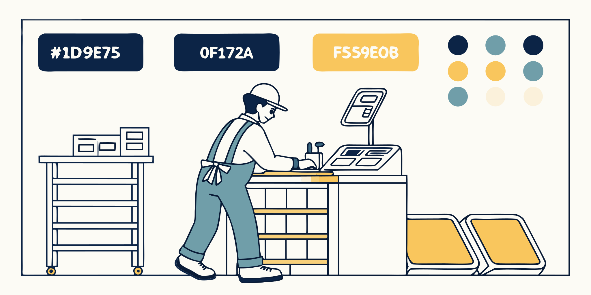
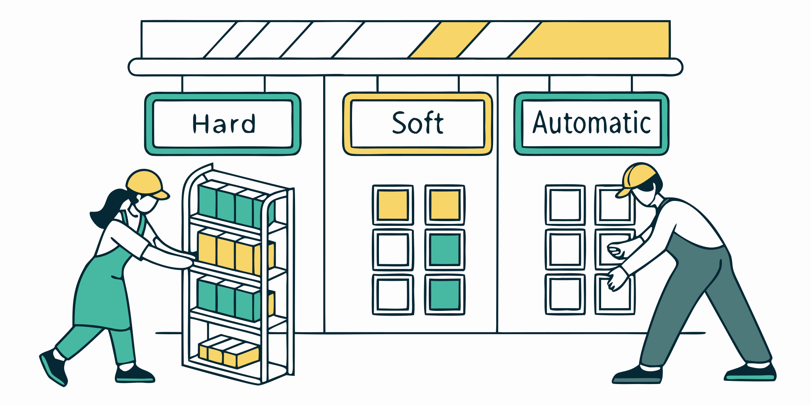

IBM C1000-183
Maximo Manage v9.0 Functional Deployment — Professional
Comment utiliser ce plan
- Cliquez une leçon dans la barre latérale — chaque leçon = 1 écran
- Chaque leçon a 2 onglets : 📚 Leçon (théorie) et 🎯 Scénarios d’examen (cas réels)
- Cocher « Marquer comme étudiée » pour suivre la progression (enregistrée dans le stockage local du navigateur)
- Utilisez ← Précédent / Suivant → pour naviguer linéairement
- Ordre recommandé : Section 3 (26%) en premier → Section 6 (16%) → Section 4 (15%) → etc.
Accès rapide par priorité
Database Config + Admin Mode
Domains
Automation Scripts
AI Broker
Failure Codes + Reliability
Maximo Optimizer
Stratégie d’étude sur 8 semaines
- W1-2 — Full Section 3 (12 lessons) + Section 6 (7 lessons)
- W3-4 — Section 4 (8 lessons) + Section 7 (4 lessons) + hands-on MAS Trial
- W5-6 — Sections 1, 2, 5, 8, 9 (13 lessons) + Anki review
- W7 — Timed mock exams + official IBM Assessment Test ($30)
- W8 — Consolidation only, no new content
Describe the Maximo Application Suite
📋 Objectifs IBM
- Describe deployment options for MAS
- Discuss high level features: Manage, Monitor, Predict, MVI / MVI Edge, Assist, Health
- Health: Scoring, Scoring Groups, Contributors, Ranges, generate WO/SR
- Discuss the role of MAS Core UI app
💡 Points clés
- Manage = EAM core (WO, PM, Inventory)
- Monitor = real-time IoT data
- Predict = forecast degradation / failure (historical + real-time)
- MVI = visual inspection (images/videos) · MVI Edge = local camera
- Assist = conversational AI
- Health = health score + criticality, 3 bricks Scoring Groups + Contributors + Ranges, generates WOs and SRs
- MAS Core UI = unified navigation, app switcher, SSO across apps
- Deployment: OpenShift on-prem, IBM Cloud, AWS ROSA, Azure ARO, SaaS
⚠️ Piège IBM
Predict vs Health vs Monitor — all three sound similar. The differentiator:
- "forecast" / "correlate performance factors" → Predict
- "score + criticality" → Health
- "real-time IoT data" → Monitor
🎯 Carte mémoire
Q. Which MAS product leverages historical and real-time data to forecast asset degradation or failure?
Afficher la réponse
Predict — "forecast" is the keyword.
Questions d’examen de style IBM. Cliquez une option, puis « Vérifier ma réponse ». Progression enregistrée localement.
Correct: D
Pourquoi D (correct) — MAS v9.0 est déployé exclusivement sur Red Hat OpenShift Container Platform (OCP) : self-managed on-prem, ROSA (Red Hat OpenShift on AWS), ARO (Azure Red Hat OpenShift), ou IBM Cloud OpenShift (ROKS). Le Suite Manager, Manage, Monitor, Predict, Health et Visual Inspection tournent tous comme OpenShift Operators, orchestrés par le mas-suite-operator. Cert-manager gère les certificats TLS ; MongoDB héberge les metadata Suite.
Pourquoi A est faux — D7 non-existent : MAS v9 ne ship plus de EAR file ; seuls les container images sur OCP.
Pourquoi B est faux — D2 invented : Docker Swarm + Portainer n'est pas un déploiement MAS supporté.
Pourquoi C est faux — D1 legacy : ICP + WebSphere ND était le pattern Maximo 7.6 EAM, remplacé depuis MAS 8+ par OCP Operators.
- IBM Docs — MAS system requirements : OCP target
- Maximo Secrets — MAS architecture : Suite platform
Correct: D
Pourquoi D (correct) — Le MAS Suite Administrator est le rôle cross-Suite qui gère l'infrastructure MAS : licensing + AppPoints allocation (combien de Base/Limited/Premium users par composante), install/upgrade des apps Suite (Manage, Monitor, Health, Predict, VI), et gestion des users cross-app via la Suite Manager UI. Il n'a PAS de pouvoir métier opérationnel dans Manage (pas de WO, pas de PO) ; il est focus platform-ops.
Pourquoi A est faux — D4 adjacent : dispatching WO est une fonction Manage (Work Supervisor), pas Suite Admin.
Pourquoi B est faux — D2 invented : BIRT reports sont un artefact Manage-level, hors responsabilité Suite Admin.
Pourquoi C est faux — D3 wrong scope : PR approval est défini par les tolerances Manage (Organizations), pas Suite.
- IBM Docs — Suite Administrator : Role scope
- IBM Docs — AppPoints admin : Entitlement mgmt
Correct: C
Pourquoi C (correct) — En MAS 8/9, Manage s'enregistre comme une Suite component. Les services Suite-level (identity/SSO, AppPoints licensing, workspaces bootstrap) sont shared ; Manage conserve sa business logic propriétaire, sa base de données relationnelle (Db2/Oracle/SQL Server, au choix du client), et sa couche MBO (Maximo Business Objects) historique. Cette architecture permet à Manage de bénéficier des services cross-Suite tout en préservant son investissement fonctionnel.
Pourquoi A est faux — D5 inverted : la direction est inversée — Manage CONSOMME le SSO Suite, ne l'embed pas.
Pourquoi B est faux — D1 legacy : standalone Manage était le pattern 7.6 ; v9 est Suite-only.
Pourquoi D est faux — D2 invented : aucun « Shared MBO Broker » n'existe dans MAS ; chaque Manage workspace a sa propre couche MBO.
- IBM Docs — Manage architecture : Suite-component model
- Maximo Secrets — Suite overview : Manage placement
Correct: D
Pourquoi D (correct) — AppPoints est l'unité d'entitlement cross-Suite. Un user type (Base/Limited/Premium) consomme un nombre fixe d'AppPoints selon la composante accédée (Manage Base ≠ Manage Premium ≠ Monitor). Le pool total est négocié au contract level IBM ; le Suite Admin alloue les points via AppPoints admin UI et peut voir consumption en temps réel. Ce modèle permet flexibilité : acheter N points puis les distribuer selon l'usage réel vs named-user rigide.
Pourquoi A est faux — D1 legacy : named-user licensing (AU/LU) était le modèle Maximo 7.6 EAM, remplacé.
Pourquoi B est faux — D3 wrong scope : licensing n'est JAMAIS per-Site ; AppPoints sont Suite-level global.
Pourquoi C est faux — D2 invented : aucun modèle per-node CPU-core dans MAS — les AppPoints sont user-centric (consommation par utilisateur unique actif selon le rôle), pas infrastructure-centric. Confusion possible avec le modèle de licensing OpenShift lui-même, mais MAS a sa propre métrique AppPoint indépendante.
- IBM Docs — AppPoints administration : Pool + user types
- IBM Docs — User types : Base/Limited/Premium
Correct: B
Pourquoi B (correct) — Base est le user type par défaut dans MAS. Quand un user arrive dans Suite Manager (via IdP SSO first login ou manual create), il est automatiquement Base. L'upgrade vers Limited (accès étendu) ou Premium (full access) se fait par assignment explicite du Suite Admin qui alloue des AppPoints supplémentaires. Le multiplicateur d'AppPoints augmente avec le tier.
Pourquoi A est faux — D6 cardinality : Premium est le top tier qui consomme le plus d'AppPoints (multiplicateur x5 environ), jamais le default assigné automatiquement — il exige un Suite Admin allocation explicite pour contrôler les coûts de licensing.
Pourquoi C est faux — D2 invented : « Unrestricted Admin » n'existe pas dans la taxonomie MAS — confusion possible avec le rôle Suite Admin qui a un accès étendu mais n'est pas un user type dans le sens AppPoints. Les types officiels sont Base/Limited/Premium.
Pourquoi D est faux — D1 legacy : « Install user » était l'installer concept 7.6, pas un MAS user type.
- IBM Docs — MAS User types : Base default + upgrades
- IBM Docs — AppPoints : Tier multipliers
Explain MAS User Administration Concepts
📋 Objectifs IBM
- Identify various methods MAS provides to control authentication
- Describe different application entitlement types
- Describe different levels of administration entitlement
- Identify methods of user synchronization — SCIM and LDAP Sync
💡 Points clés
- Authentication: Local, LDAP, SAML 2.0, OIDC, API Keys
- AppPoints types: Authorized (fixed user, login independent of balance) · Concurrent (shared pool, consumes at login) · Limited Use (occasional) · Base (minimum)
- User sync: SCIM (modern, push REST) · LDAP Sync (cron, legacy)
- Admin levels: IBM Entitled Admin > Workspace Admin > App Admin
⚠️ Piège IBM
🎯 Carte mémoire
Q. Which Access Type ensures the user can login independent of the current AppPoint balance?
Afficher la réponse
Authorized
Correct: D
Pourquoi D (correct) — Après SSO login sur MAS, l'utilisateur arrive sur la Suite Navigator (tile view des apps auxquelles il a droit). Un clic sur le tile Manage lance l'app avec le SSO context propagé automatiquement (pas de second login). Cette centralisation remplace le pattern historique de bookmarks par-app ; permet aussi aux Suite Admins de contrôler visually ce qu'un user voit selon son entitlement.
Pourquoi A est faux — D4 adjacent : OCP console est un outil infra/ops, pas le entry point end-user.
Pourquoi B est faux — D7 non-existent : le path /maximo/ui/maximo.jsp appartient à l'ancien Maximo 7.x servi via WebSphere et n'existe plus dans MAS — la launch URL officielle passe par Suite Navigator qui oriente vers les apps containerisées sur OCP.
Pourquoi C est faux — D1 legacy : standalone URL externalisé était le pattern 7.6 ; MAS v9 impose Suite Navigator.
- IBM Docs — Starting Manage : Suite Navigator tile
- IBM Docs — Navigating Suite Navigator : App launcher
Correct: D
Pourquoi D (correct) — Suite Navigator est le app switcher SSO-aware de MAS : liste les apps auxquelles l'utilisateur courant a droit (Manage, Monitor, Health, Predict, VI), filtré par ses entitlements. Un clic sur un tile propage l'identité SSO — pas de deuxième authentication. Il est l'équivalent d'un launchpad cross-app, distinct des dashboards métiers (qui vivent dans chaque app).
Pourquoi A est faux — D4 adjacent : dashboards KPI vivent dans Health / Monitor, pas Suite Navigator.
Pourquoi B est faux — D2 invented : aucun workflow designer cross-app n'existe au Suite-level ; workflow est per-product (Manage Workflow app).
Pourquoi C est faux — D1 legacy : la migration de données Maximo 7.6 → MAS Manage utilise les outils mxloader, upgrade scripts officiels IBM et SQL migration paths — jamais Suite Navigator qui est simplement le portal de navigation runtime entre apps, sans capacité data transform.
- IBM Docs — Suite Navigator : App switcher
- Maximo Secrets — Suite architecture : Navigator role
Correct: D
Pourquoi D (correct) — Un Manage workspace représente UNE instance déployée de Manage sur la Suite (avec sa DB, ses pods, sa config). Un cluster OCP peut héberger plusieurs workspaces (prod + dev par ex.). À l'intérieur d'un workspace, la hiérarchie Organizations → Sites → Sets reste identique au pattern Maximo classique — workspace est une boundary d'installation, pas de données métier.
Pourquoi A est faux — D6 cardinality : un cluster peut héberger plusieurs Manage workspaces (ex: prod + staging séparés).
Pourquoi B est faux — D5 inverted : Organizations restent la business boundary DANS Manage ; workspaces sont au-dessus (Suite install-level).
Pourquoi C est faux — D1 legacy : « Tenant » était le naming cloud-SaaS plus ancien ; MAS v9 utilise workspaces.
- IBM Docs — Manage workspaces : Workspace concept
- IBM Docs — Architecture : Workspace vs Org
Correct: A
Pourquoi A (correct) — MAS délègue l'authentication à une identity layer (IBM Security Verify par défaut, ou IdP customer : Azure AD, Okta, Ping, etc.) via les standards OIDC ou SAML federation. Une fois authentifié au Suite level, le user navigue dans Manage, Monitor, Health sans second login — le token SSO suit le user. Cette architecture remplace les patterns Maximo 7.6 (Liberty basicAuth, LDAP sync local).
Pourquoi B est faux — D4 adjacent : Manage LDAP sync existe encore mais c'est une option legacy, pas le SSO Suite.
Pourquoi C est faux — D7 non-existent : aucun mécanisme SSO basé sur cookie proprietary dans MAS.
Pourquoi D est faux — D1 legacy : Liberty basicAuth + .properties files était le modèle 7.6.
- IBM Docs — MAS single sign-on : OIDC/SAML
- IBM Security Verify docs : Default IdP
Maximo Manage Add-ons and Industry Solutions
📋 Objectifs IBM
- Industry Solutions: Transportation (meter change-out, serial change, warranty recovery)
- Add-ons: ACM, SAP/Oracle/Workday/Envizi/TRIRIGA Connectors, Service Provider
- Spatial, Maximo IT, Reliability Strategies
- HSE: Certificates, Training Requirements, Permits for Work
- Scheduler and Calibration
💡 Points clés
- Transportation: meter change-out, serial number changes, warranty recovery (rail, aviation)
- Service Provider: multi-tenant (multiple clients on 1 instance)
- Spatial: ESRI GIS integration
- HSE advanced: Certificates + Training Requirements + Permits for Work (memorize the 3)
- Connectors: SAP, Oracle, Workday, Envizi (ESG), TRIRIGA (real estate)
Correct: A, C
Pourquoi A, C — MAS v9 ne tourne QUE sur OpenShift. Deux options principales : Self-managed OCP (OpenShift sur hardware client on-prem, ou ROSA sur AWS, ou ARO sur Azure — tous des OpenShift flavors) et IBM Cloud OpenShift (ROKS) managed. Aucune autre base (vanilla k8s, Docker Swarm, WebSphere standalone) n'est supportée. Le customer choisit selon sa stratégie cloud.
Pourquoi B est faux — D1 legacy : 7.6 in-place upgrade est une migration path, pas un target de déploiement.
Pourquoi D est faux — D2 invented : « Microsoft Dynamics Maximo Cloud » est un terme totalement fabriqué — aucun partenariat IBM-Microsoft n'offre de Maximo rebranded Dynamics. Piège qui mélange l'écosystème Microsoft Dynamics ERP avec la suite IBM MAS.
Why E wrong — D7 non-existent : vanilla Kubernetes sans OCP Operators n'est pas une plateforme supportée — MAS exige spécifiquement OpenShift Container Platform pour ses Operator-based deploys (IBM Operator Catalog), les primitives Kubernetes natives ne suffisent pas pour orchestrer Manage/Monitor/Health.
- IBM Docs — MAS system requirements : OCP variants
- IBM Cloud ROKS docs : Managed OpenShift
Correct: D
Pourquoi D (correct) — Le MAS Installer (mas.cli — wrapper interactive CLI, ou le bundle Ansible équivalent) orchestre le déploiement initial sur OpenShift : installe le mas-suite-operator, cert-manager (pour TLS auto), MongoDB (pour Suite metadata), puis chaque application operator (Manage, Monitor, Health, Predict, VI) dans l'ordre adéquat. Il configure aussi les routes OCP et les catalogs. Après install, les upgrades passent par le Suite UI ou des re-runs du CLI.
Pourquoi A est faux — D2 invented : migration DB (Db2→PostgreSQL ou autre) utilise mxloader/dbconfig, pas mas.cli.
Pourquoi B est faux — D3 wrong scope : ongoing AppPoints management se fait dans Suite Admin UI, pas installer.
Pourquoi C est faux — D4 adjacent : BIRT est le reporting engine de Manage, hors scope installer.
- IBM Docs — MAS CLI installer : Ansible bundle
- ibm-mas/cli GitHub : Install guides
Correct: A
Pourquoi A (correct) — Manage v9.0 supporte trois moteurs DB pour son OLTP (transactions) : IBM Db2, Oracle Database, Microsoft SQL Server — chacun dans leurs versions minimums documentées. Le customer provisionne la DB hors cluster OCP et fournit la connection string au Manage workspace. MongoDB (bundled par la Suite pour metadata ops) n'est PAS la DB Manage.
Pourquoi B est faux — D1 legacy : l'idée qu'Oracle/SQL Server auraient été retirés est un faux rumor. Les 3 restent supportés en v9.
Pourquoi C est faux — D5 inverted : Manage ne ship PAS de DB pod bundled ; le customer fournit la DB externe.
Pourquoi D est faux — D2 invented : MongoDB est utilisé dans MAS pour les metadata de la Suite (config runtime, logs Suite Manager) mais jamais comme OLTP backend pour Manage — l'application business (WOs, Assets, POs) s'appuie exclusivement sur Db2 ou Oracle ou PostgreSQL selon le customer choice.
- IBM Docs — Database requirements : Db2/Oracle/SQL Server
- IBM Docs — System requirements : DB versions
Correct: B
Pourquoi B (correct) — Toute la configuration Manage (tables MAXATTRIBUTE, SIGOPTION, MAXAPP, DOMAIN, etc.) est persistée dans la base de données transactionnelle externe (Db2/Oracle/SQL Server). Les pods Manage sur OCP sont stateless — ils rechargent la config depuis la DB au démarrage. Ce design permet scale horizontal (multiples pods en replica set) sans perte de config ; pod restart ou re-deploy ne perd rien.
Pourquoi A est faux — D1 legacy : persistence sur /opt/IBM/SMP était le modèle 7.6 on-VM. Containers = stateless.
Pourquoi C est faux — D3 wrong scope : config Manage vit dans sa DB relationnelle, pas MongoDB (qui est Suite metadata).
Pourquoi D est faux — D2 invented : ConfigMaps OCP portent le wiring Suite (URLs, secrets), pas le schéma de config Manage.
- IBM Docs — Manage architecture : Stateless pods
- IBM Docs — Database requirements : DB-centric config
Correct: D
Pourquoi D (correct) — Le défaut v9 : TLS / HTTPS end-to-end enforced via les OpenShift routes exposant les Suite URLs, avec certificats auto-issués et rotés par cert-manager (Operator standard OCP). Cette configuration est mandatory par défaut — pas d'option HTTP pour production. Les certificats peuvent être self-signed (dev) ou issued par une CA publique (Let's Encrypt, DigiCert). Le Suite Admin ne configure pas le TLS manuellement ; cert-manager s'en charge.
Pourquoi A est faux — D1 legacy : plain HTTP par défaut était une option 7.6, retirée en v9.
Pourquoi B est faux — D9 near-synonym : « SSL encryption » est le terme deprecated ; v9 nomme TLS/HTTPS avec cert-manager.
Pourquoi C est faux — D5 inverted : external traffic DOIT être TLS ; mTLS pod-to-pod est un détail interne additionnel.
- IBM Docs — MAS TLS certificates : cert-manager + routes
- OpenShift routes + cert-manager : Auto-issuance
Correct: A, B, C
Pourquoi A, B, C — Maximo stratifie ses records en 3 boundaries business, du plus large au plus étroit : Set (Item Set + Company Set — mutualisés entre Orgs), Organization (GL, Base Currency, tolérances financières), Site (Assets, Locations, WOs, Inventory — le niveau opérationnel transactionnel). Cette hiérarchie permet data sharing et data separation selon le besoin : items communs à plusieurs Orgs via Set, autonomie par Org, opérations isolées par Site.
Pourquoi D est faux — D2 invented : « MAS Tenant » n'est pas une record boundary visible dans Manage.
Why E wrong — D4 adjacent : les namespaces OpenShift sont des artefacts infrastructure (isolation réseau + quotas cluster) gérés par les ops team, sans sémantique business — jamais utilisés comme unité de segmentation organisationnelle Maximo (qui relève d'Organizations/Sites).
Why F wrong — D3 wrong scope : Ledger Book existe (grouping GL sous une Org) mais n'est pas une boundary de structure data.
- IBM Docs — Sets, Organizations, Sites : 3 boundaries
- Maximo Secrets — Organizations and Sites (Portaluri, 2016) : Hierarchy
Correct: A
Pourquoi A (correct) — Default Insert Site est l'attribut sur le User record qui pré-remplit le Site ID à chaque création d'un nouveau record (WO, Asset, Location, PR...). C'est une aide ergonomique — un technicien basé sur Site USNORTH peut ouvrir un WO sans avoir à sélectionner son Site manuellement. L'attribut seed aussi le Session Site context (le header de la session). La visibilité des records reste gouvernée par les Security Groups, pas cet attribut.
Pourquoi B est faux — D5 inverted : la visibilité des records est filtrée par Security Groups, pas par Default Insert Site.
Pourquoi C est faux — D4 adjacent : le routing OpenShift (Ingress / Route CRD) est configuré au niveau cluster ou namespace, jamais par Site Maximo — il régit le trafic HTTP vers les pods, aucune notion de Site dans sa config. Confusion entre infra réseau et data segmentation Maximo.
Pourquoi D est faux — D3 wrong scope : Base Currency vit au niveau Organization, pas User.
- IBM Docs — Default Insert Site : User attribute
- IBM Docs — Users and User Templates : Session context
Correct: B
Pourquoi B (correct) — Les Security Groups restent le mécanisme d'authorization dans Manage v9, même avec MAS SSO actif. Séparation claire : MAS SSO = authentication (« qui est cet user »), Manage Security Groups = authorization (« que peut-il faire »). Les deux couches coexistent. Les Security Groups définissent l'accès aux apps, Sites, Orgs, records, et aux actions (sigoptions). MAS Suite a aussi ses Suite Roles pour le cross-app mais ils ne remplacent pas les Security Groups internes à Manage.
Pourquoi A est faux — D1 legacy : MAS Suite Roles sont pour cross-app access, pas un remplacement des Manage Security Groups.
Pourquoi C est faux — D3 wrong scope : les Security Groups sont cross-Organization dans Maximo Manage (Site et Org listés dans l'onglet Sites du group), mais jamais Set-level — les Sets (Item Set, Company Set) partagent des référentiels de données, pas des permissions. Scope sécurité complètement découplé du scope Sets.
Pourquoi D est faux — D2 invented : aucun mécanisme per-page ACL natif dans Manage v9 — les permissions UI s'expriment via Application Access (app visible/pas visible) et Application Options (sigoptions par app), pas page-par-page. Granularité app-level uniquement, pas URL-level.
- IBM Docs — Security Groups : Authz mechanism
- IBM Docs — MAS SSO + Manage : Authn layer
Correct: C
Pourquoi C (correct) — Au premier SSO login d'un user Suite, Manage applique son mécanisme de JIT provisioning (Just-In-Time) : il crée automatiquement un record MAXUSER avec l'email Suite comme clé de mapping, et applique le default User Template configuré (qui définit Default Insert Site, Security Groups, Status Out tableau). Ce pattern élimine le besoin de pre-provisioning manuel et garantit que chaque user authentifié par la Suite peut immédiatement utiliser Manage avec le bon setup.
Pourquoi A est faux — D1 legacy : pre-provisioning manuel était le pattern Maximo 7.6 (sync LDAP batch).
Pourquoi B est faux — D2 invented : aucun button « Sync Manage users » dans Suite Admin.
Pourquoi D est faux — D7 non-existent : Manage utilise TOUJOURS l'email Suite comme mapping key, pas un loginID random.
- IBM Docs — JIT user provisioning : MAXUSER auto-create
- IBM Docs — User Templates : Default template
Correct: B, C
Pourquoi B, C — Le Suite Administrator assigne explicitement Limited ou Premium à un nouveau user MAS via la Suite Manager. Chacun consomme plus d'AppPoints que Base (multiplicateur d'entitlement). Sans grant explicite, le user reste Base — ce qui limite les apps accessibles et les fonctionnalités IBM Cloud.
Pourquoi A est faux — D9 : Base est le default, appliqué automatiquement au premier SSO login. Aucun grant admin requis.
Pourquoi D est faux — D1 legacy : « Install user » était un concept de l'installer Maximo 7.6 ; inexistant en MAS v9.
Why E wrong — D2 invented : pas de type « Auto-Provisioned » dans MAS. Distracteur fabriqué.
- IBM Docs — MAS User types : Base / Limited / Premium
- IBM Docs — AppPoints administration : Entitlement model
Correct: A, B
Pourquoi A, B — IBM commercialise Maximo Application Suite 9.0 en 2 modes de déploiement officiels : (1) MAS SaaS Flex — offre cloud managed by IBM, hébergée sur IBM Cloud (régions multi-continents), abonnement annuel à l'AppPoint, zéro ops infra, (2) MAS On-Premises — déploiement sur OpenShift Container Platform (OCP 4.12+) on-premise ou cloud privé, client gère OCP/storage/upgrades. Choix basé sur data residency, coût TCO, contrôle infra.
Pourquoi C est faux — D1 legacy : Maximo EAM 7.6 (WebSphere) est retired, pas de "MAS Legacy WebSphere Edition".
Pourquoi D est faux — D2 invented : "Serverless Edge" n'existe pas — MAS tourne en containers OCP stateful.
Why E wrong — D7 non-existent : aucun Maximo Desktop Client n'a jamais existé — l'UI est historiquement web-based (Java applet dans Maximo 5-7, JSP puis React en MAS). Distracteur qui invente une modalité de delivery absente du produit.
- IBM Docs — MAS deployment options : SaaS Flex vs On-Premises
- IBM Docs — MAS SaaS Flex : Cloud subscription model
Correct: A, B
Pourquoi A, B — Le modèle AppPoint MAS définit 2 user types : (1) Authorized User — accès complet (create/update/delete/approve), tarif plein (~10 AppPoints/user/an pour Manage), (2) Limited User — read-only + quelques transactions restreintes (Service Requests, log labor), ~1 AppPoint. Orgs optimisent 90% Limited + 10% Authorized. Distinction configurée via Security Groups.
Pourquoi C est faux — D2 invented : "Shadow User" n'existe pas dans la taxonomie MAS — terme fabriqué qui ne correspond à aucun user type ni rôle technique Maximo. Les user types sont strictement Authorized + Limited (AppPoints model), rien d'autre.
Pourquoi D est faux — D9 near-synonym : "Bulk User" n'est pas un tier — service accounts = Limited standards.
Why E wrong — D1 legacy : "Named" = modèle Maximo 7.6, remplacé par AppPoint en MAS.
- IBM Docs — MAS AppPoint licensing : Authorized vs Limited
- IBM Redbook — MAS deployment guide : User types
Correct: A, B, C
Pourquoi A, B, C — MAS 9.0 ship avec 5 core products sur le catalog OpenShift Operator : (1) Manage — successor de Maximo EAM 7.6 (WOs, Assets, Inventory, PO), (2) Health — asset health scoring basé rules + ML, (3) Monitor — IoT data ingestion + anomaly detection. Les 2 autres (non listés) : Predict (ML predictive) et Visual Inspection (computer vision). Tous via MAS Core + Operators, consommant AppPoints.
Pourquoi D est faux — D2 invented : IBM Planning Analytics (ex-TM1) est un produit planification budget séparé, intégrable via API mais pas bundled MAS.
Why E wrong — D9 near-synonym : WatsonX Assistant = IBM AI conversational séparé — MAS utilise AI Broker comme abstraction LLM (Granite).
Why F wrong — D1 legacy : Maximo Mobile Classic = ère 7.6 (Work Manager offline), retired dans MAS au profit de MAS Mobile React Native.
- IBM Docs — MAS product catalog : Core apps
- IBM Docs — MAS 9.0 overview : Bundled products
Configure Chart of Accounts
📋 Objectifs IBM
- Configure Organization-specific GL Component Structure
- Deactivate GL Account codes
- Requirements of a GL Account Code
💡 Points clés
- Configured per Organization (GL Component Structure)
- Up to 20 components in the structure
- GL codes: deactivated (never deleted) if already used
- Requirements: all components valid, delimiter defined, format respected
⚠️ Piège IBM
Questions d’examen de style IBM. Cliquez une option, puis « Vérifier ma réponse ». Progression enregistrée localement.
Correct: A
Pourquoi A (correct) — La structure des GL account segments (longueur de chaque segment, delimiter, flag required, validation list) se configure en deux étapes : Database Configuration → GL Account Configuration définit l'architecture des segments (nombre, longueurs, types), puis Chart of Accounts maintient les valeurs valides par Organization. Chaque Org peut avoir sa propre Chart of Accounts mais l'architecture globale reste System-level.
Pourquoi B est faux — D2 invented : « Financial Account Setup » n'est pas une app Maximo. Distracteur au nom générique plausible.
Pourquoi C est faux — D4 adjacent : Storerooms porte un GL tab pour les defaults de comptes par storeroom, mais ne définit pas la structure.
Pourquoi D est faux — D1 legacy : « General Ledger Cost Control » est un nom de l'ère Maximo 4.x, remplacé depuis.
- IBM Docs — Configuring Chart of Accounts : Segment config
- Maximo Secrets — Financial map : Chart of Accounts
Correct: B
Pourquoi B (correct) — Le flag Mandatory sur un segment GL impose qu'une valeur valide (ou un placeholder ?) soit saisie avant que Maximo n'accepte la sauvegarde d'une chaîne GL. Validé partout où un GL Account est input : WOs, PRs, Invoices, Transactions. Sans valeur sur un segment mandatory, la chaîne reste incomplète et le posting est bloqué.
Pourquoi A est faux — D5 inverted : « mandatory » contrôle l'input, pas l'editabilité post-go-live. Locking est un concept séparé.
Pourquoi C est faux — D2 invented : Maximo ne populate pas auto les segments depuis Asset Location. Distracteur fabriqué.
Pourquoi D est faux — D1 legacy : « Exclude from reporting » est un concept BIRT/Cognos, pas un flag GL segment.
- IBM Docs — Chart of Accounts : Segment mandatory flag
- Maximo Secrets — Financial map : GL validation
Correct: C
Pourquoi C (correct) — Chaque Organization choisit son mode de validation GL via Chart of Accounts options : No validation (aucun check, rarement utilisé), Validate individual segments (chaque segment doit être une valeur valide du domain), Fully validate against existing combinations (la combinaison complète doit exister dans CHARTOFACCOUNTS — le plus strict, recommandé en production).
Pourquoi A est faux — D1 legacy : per-segment validation est un mode standard en v9, pas exclusif à la longueur.
Pourquoi B est faux — D5 inverted direction : le mode multi-site n'a aucune influence sur le mode de validation GL (Full vs Pre-validated vs No Validation) — les deux dimensions sont indépendantes. Multi-site concerne data segmentation Org/Site, GL validation concerne finance integrity rules.
Pourquoi D est faux — D2 invented : la validation est locale (Manage MBO). L'intégration ERP est asynchrone via MIF.
- IBM Docs — Chart of Accounts validation options : 3 modes
- Maximo Secrets — Financial Processes : GL validation practice
Correct: D
Pourquoi D (correct) — Le GL Debit d'un Work Order est calculé via une cascade de sources mergées dans l'ordre défini sur Organizations → GL Account Mapping. Sources typiques : Work Type, Asset, Location, Failure Class, WO Priority. Maximo prend le premier segment non-null rencontré et continue avec les segments suivants. Ce merge multi-sources permet d'avoir un GL final complet même si aucune source ne fournit tous les segments. Configurable par Organization.
Pourquoi A est faux — D5 inverted : le WO header value est seed-value, pas seule source. Le cascade merge avec Asset/Location/etc.
Pourquoi B est faux — D1 legacy : le pattern single global Debit account appartenait à Maximo pré-7.0 (Maximo 5.x / 6.x) — obsolète depuis l'introduction du modèle double-entry GL complet (Debit + Credit per transaction) et du Chart of Accounts multi-segments en Maximo 7.x+.
Pourquoi C est faux — D2 invented : GL computation est locale (MBO). ERP REST call est async post-posting.
- IBM Docs — GL Account Merge Rules : Cascade config
- Maximo Secrets — Financial map (Portaluri, 2024) : GL defaulting cascade
Correct: B
Pourquoi B (correct) — Maximo utilise le caractère ? (point d'interrogation) pour marquer un segment mandatory non encore renseigné dans une chaîne GL partiellement construite. Exemple : XX-????-1234 signifie que le 2ᵉ segment reste à compléter. La chaîne ne peut pas être posted tant qu'il reste un ? sur un segment mandatory. Sert d'aide visuelle au planificateur qui fournit des GL partiels en attendant le segment final issu d'un lookup.
Pourquoi A est faux — D7 non-existent : l'astérisque * n'est pas le placeholder GL. Distracteur par analogie wildcard.
Pourquoi C est faux — D9 near-synonym : le hyphen - est le delimiter entre segments (configurable), pas un placeholder de valeur manquante.
Pourquoi D est faux — D2 invented : le character underscore _ n'a aucun rôle fonctionnel dans la GL account structure Maximo — le séparateur officiel est toujours le hyphen - (ou configuré autre via Organizations → GL Component Delimiter). Piège pour candidat qui confond avec des conventions de naming SQL.
- IBM Docs — Chart of Accounts placeholder : Question mark character
- Maximo Secrets — Financial (Portaluri, 2024) : GL string building
Configure Budget Monitoring & Cost Management
📋 Objectifs IBM
- Describe the Budget Monitoring application
- Identify where budget amounts are specified and compared to actuals
- Describe how focal points are defined
💡 Points clés
- Budget Monitoring app: budgets defined per Organization
- Compared to actuals (real costs from WOs, PRs, POs)
- Focal Point = GL segment at which the budget is tracked
- Cost Management app is designed to interface with Oracle Projects ⭐
⚠️ Piège IBM — memorize
🎯 Carte mémoire
Q. What system was the Cost Management application designed to be interfaced with?
Afficher la réponse
Oracle Projects
Correct: B
Pourquoi B (correct) — Maximo maintient les devises dans Currency Codes (table CURRENCY : code + symbol + description) et les taux de change dans Exchange Rates. Chaque taux porte une Active Date — Maximo prend le dernier taux ≤ date de transaction. Le stockage est per-Organization (une Org peut avoir ses propres taux USD→EUR différents d'une autre Org). Un WO planifié en USD avec Base Currency CAD utilise le taux actif à sa plan date.
Pourquoi A est faux — D3 wrong scope : Base Currency tab déclare la devise primaire, pas les taux de conversion.
Pourquoi C est faux — D4 adjacent : Chart of Accounts gère la structure GL, pas les FX.
Pourquoi D est faux — D2 invented : « Financial Rate Book » n'est pas une app Maximo.
- IBM Docs — Financial Exchange Rates : Currency + rates
- Maximo Secrets — Financial map : FX anatomy
Correct: C
Pourquoi C (correct) — Base Currency 1 est la devise locale primaire (ex: CAD pour une Org canadienne) ; Base Currency 2 est typiquement la reporting currency du groupe (ex: USD pour consolidation corporate). Maximo stocke chaque transaction dans les deux devises en parallèle, en utilisant le taux actif à la transaction date. Permet de produire à la fois des reports locaux (en CAD) et des reports consolidés (en USD) sans recalcul.
Pourquoi A est faux — D3 wrong scope : currency est Org-wide, pas per-Site. Tous les Sites d'une Org partagent les mêmes Base Currencies.
Pourquoi B est faux — D2 invented : Maximo n'auto-switch pas la currency selon la locale browser.
Pourquoi D est faux — D4 adjacent : les Security Groups gèrent les permissions applicatives et object-level CRUD, pas les currency settings — celles-ci sont sur Organization (Base Currency 1/2) et Currency Codes, domaine financier totalement distinct du domaine sécurité.
- IBM Docs — Organizations Base Currencies : 2 currencies
- Maximo Secrets — Financial map : Multi-currency pattern
Correct: B, C
Pourquoi B, C — Chaque row de la table Exchange Rates porte une Active Date. Maximo lit la ligne la plus récente dont Active Date ≤ transaction date. Les taux expirés restent en table pour (1) audit trail, (2) revaluation jobs batchés, (3) reprocessing de vieilles transactions. Aucune purge automatique — c'est au DBA de décider une retention policy si besoin.
Pourquoi A est faux — D2 invented : pas de pull live FX externe natif dans Maximo. Intégration possible via MIF custom, mais hors OOTB.
Pourquoi D est faux — D5 inverted direction : les exchange rates sont stockées par Organization (Currency Codes app scopée Org, chaque Org définit ses propres taux) — jamais au niveau System global. Cette segmentation permet à deux Orgs d'avoir des taux différents pour la même devise à la même date (ex: taux contract vs taux spot).
Why E wrong — D7 non-existent : triangulation (via USD) n'est pas la règle par défaut ; Maximo utilise direct pairs.
- IBM Docs — Financial Exchange Rates : Active Date logic
- Maximo Secrets — Financial map : Rate history
Correct: A
Pourquoi A (correct) — Quand le taux de change change, Maximo ne revalorise PAS automatiquement les stocks on-hand existants. Les historical costs restent tels quels (principe de conservation du coût). Seuls les new receipts (après le changement de taux) utilisent le nouveau taux. Pour revaloriser l'existant, il faut une action explicite Adjust Standard Cost ou Adjust Average Cost dans Inventory Adjustments. Ce design préserve la traçabilité comptable historique.
Pourquoi B est faux — D2 invented : « Reprice All Storerooms » n'existe pas dans Maximo.
Pourquoi C est faux — D5 inverted : POs existants ne sont jamais annulés automatiquement sur un rate change.
Pourquoi D est faux — D4 adjacent : COA reload concerne la structure GL, pas la valorisation stock.
- IBM Docs — Inventory Cost Adjustment : Adjust action
- Maximo Secrets — Financial Processes in Inventory : Revaluation pattern
Correct: C
Pourquoi C (correct) — Average Cost (Moving Average) est la méthode de costing par défaut quand un nouveau Item Set est créé dans Maximo. L'average se recalcule à chaque receipt : new_avg = (old_qty × old_avg + receipt_qty × receipt_price) / (old_qty + receipt_qty). FIFO et Standard Cost sont supportés mais doivent être sélectionnés explicitement par Item ou par Storeroom. LIFO n'est PAS supporté en v9.
Pourquoi A est faux — D9 near-synonym : FIFO (First-In-First-Out) est bien supporté comme méthode de costing dans Maximo Manage mais n'est pas le default — l'admin doit explicitement le choisir par storeroom dans Inventory Options. Average Cost est le default out-of-box.
Pourquoi B est faux — D1 legacy : LIFO était historiquement listé dans les options de costing Maximo antérieures mais est aujourd'hui restreint par les réglementations comptables IFRS qui l'interdisent (GAAP US le permet encore) — IBM a déprécié LIFO comme option par défaut supportée sans raison métier stricte.
Pourquoi D est faux — D2 invented : « Weighted Standard Cost » ne figure pas dans le dropdown Maximo.
- IBM Docs — Inventory Item Costing Method : 4 methods
- Maximo Secrets — Financial Processes in Inventory 7/8 : Costing methods
Correct: B
Pourquoi B (correct) — La configuration du nombre de Tax Types actifs et de la Tax Code Hierarchy se fait depuis l'application Organizations, via l'action More Actions → Purchasing Options → Tax Options. OOTB, Maximo active un seul Tax Type (Tax 1) avec possibilité d'en activer jusqu'à 5 (colonnes TAX1..TAX5 sur PRLINE / POLINE / INVOICELINE) ; pour aller jusqu'à 27 Tax Types il faut étendre le schéma via Database Configuration. La Tax Code Hierarchy définit l'ordre de recherche du code par défaut (ex: Vendor → Item → Company → Storeroom). Cette configuration est scopée à l'Organization — chaque Org peut avoir sa propre politique fiscale.
Pourquoi A est faux — D9 near-synonym : l'application Tax Codes existe bien (table TAXCODE) mais sert uniquement à créer et maintenir les codes individuels (nom, rate, description, flag exempt). Elle ne contrôle ni le nombre de Tax Types activés, ni la hiérarchie de défaut. Piège classique pour un candidat qui assimile « configurer les taxes » à l'app Tax Codes.
Pourquoi C est faux — D3 wrong scope : Chart of Accounts structure les GL Account segments (length, delimiter, validation lists) — c'est une configuration comptable orthogonale à la logique fiscale d'achat. Aucune option Tax Types dans COA.
Pourquoi D est faux — D2 invented : « Tax Setup tab » sur Item Master n'existe pas. Un item porte un flag Tax Exempt et peut référencer un code de taxe par défaut via le champ Tax Code, mais aucun onglet dédié « Tax Setup ». Distracteur fabriqué.
- Maximo Secrets — Tax Code Defaulting (Portaluri, 2020) : Hiérarchie de défaut + Organizations menu
- IBM Support — Setting Maximo Up For Multiple Tax Types : 5 Tax Types OOTB + extension 27
- Certus Solutions — Tax Code Defaulting Hierarchy : Ordre Vendor→Item→Company→Storeroom
Correct: B
Pourquoi B (correct) — Les Companies (records vendor dans la table COMPANIES) sont stockés au niveau Company Set (COMPANYSETID). Le Company Set est une catégorie spéciale entre System et Organization qui permet à plusieurs Orgs de partager le même catalogue vendor — utile pour une holding où l'achat est centralisé. Chaque Organization assigne UN Company Set (et UN Item Set) dans Organizations → Sites → Set fields. Les POs, PRs et Invoices référencent les Companies du Company Set de leur Org. Changer le Company Set d'une Org déjà active est fortement déconseillé car il rompt les FK des documents existants.
Pourquoi A est faux — D9 near-synonym : les Organizations utilisent un Company Set (et un Item Set) mais n'hébergent pas les vendors eux-mêmes. Piège pour candidat qui assimile "lié à Org" à "stocké au niveau Org".
Pourquoi C est faux — D3 wrong scope : les vendors sont partagés entre Sites d'une même Org (et potentiellement entre Orgs via le Company Set). Aucun stockage Site-level pour les vendors — un vendor XYZ est le même pour tous les sites qui y recourent.
Pourquoi D est faux — D6 wrong cardinality : System level (purement global) est réservé aux objets qui n'ont aucune segmentation par tenant métier (Classifications, Domains, Currencies). Les Companies ont besoin d'une segmentation mutualisable (Set) pour permettre qu'une holding multinationale puisse avoir un Company Set USA et un Company Set EMEA distincts.
- IBM Docs — Sets and Organizations architecture : Item Set + Company Set concept
- Maximo Secrets — Organizations and Sites (Portaluri, 2016) : Set architecture
- IBM Docs — Data storage levels (MAM SaaS) : System / Set / Org / Site
Correct: A, B
Pourquoi A, B — L'Organization record porte 2 slots pour currencies : Base Currency 1 (obligatoire au save initial, devise principale pour transactions internes, immuable) et Base Currency 2 (optionnelle pour reporting dual-currency corporate). Quand BC2 active, Maximo maintient auto les montants convertis via Exchange Rates. Critique pour multinationales consolidant dans une devise ≠ opérationnelle.
Pourquoi C est faux — D9 near-synonym : Transaction Currency se définit par record (PO, Invoice), pas sur Organization header.
Pourquoi D est faux — D2 invented : "Foreign Exchange Index" n'existe pas — taux vivent dans Exchange Rates.
Why E wrong — D7 non-existent : "Subsidiary Currency Mapping" est un terme fabriqué sans aucune référence Maximo — ni field sur Organization, ni concept documenté IBM. Les subsidiaries mappent via Base Currency 1/2 et Company Set, pas via une feature ad-hoc nommée.
- IBM Docs — Organization base currencies : Currency 1 and 2
- Maximo Secrets — Multi-currency setup : Dual reporting
Correct: A, B, C
Pourquoi A, B, C — 3 transactions génèrent auto GL postings : (1) Inventory Issue — WO material consumption, crédit storeroom source + débit WO/asset via resource codes × Org GL settings, (2) Invoice Approval — AP recognition, crédit AP + débit expense/asset selon PO, (3) Tool Usage — tool time charged, débit WO + crédit tool account. Tous dans table GLTRANS, consommables interface AP/GL externe.
Pourquoi D est faux — D5 inverted direction : Asset creation ne génère aucun posting GL — c'est la depreciation schedule qui produit les entries, pas la création initiale.
Why E wrong — D4 adjacent : workflow task completion = event process (routing/approval/signoff), aucun impact comptable direct.
Why F wrong — D3 wrong scope : Person records = HR/identity (nom, email, craft), aucun lien comptabilité.
- IBM Docs — GL transaction types : GLTRANS postings
- Maximo Secrets — Financial processes : GL generation flows
Configure Asset Depreciation Schedules
📋 Objectifs IBM
- Identify where depreciation can be configured for Assets
- Describe how depreciation schedules are configured
💡 Points clés
- Configured in the Assets app (action Manage Depreciation Schedule)
- Schedule types: straight-line, declining balance, custom
- An asset can have multiple parallel schedules (e.g. IFRS + US GAAP)
🏢 Cas réel
Afficher la solution
In the Assets application, select the asset → Action Depreciation Schedules. Create a schedule with Method = Straight Line, Purchase Cost = 450,000, Salvage Value = 30,000, Useful Life = 240 months. Maximo computes monthly depreciation: (450,000 − 30,000) / 240 = €1,750/month.
Depreciation Schedules live in the Assets app (not Chart of Accounts, not a separate financial module). Supported methods: Straight Line and Declining Balance. Result can be exported to the finance ERP.
Configure organizational options (Org level)
📋 Objectifs IBM
- Define when multiple organizations are required in a MAS Manage database
- Identify the required fields on an Organization record
- Describe the purpose of Sets
- Identify the data requirement for saving vs activating an organization
💡 Points clés
- Multi-Org when: different currencies, distinct financial/purchasing rules, separate item sets
- Required Org fields: name, base currency, item set, company set, default site
- Sets (Item Set, Company Set) = shared references across Orgs
- Save = base fields | Activate = at least 1 site with default storeroom
Questions d’examen de style IBM. Cliquez une option, puis « Vérifier ma réponse ». Progression enregistrée localement.
Correct: A
Pourquoi A (correct) — La création d'une nouvelle Organization dans Maximo Manage est une décision architecturale majeure qui ne doit jamais être prise à la légère. Les vrais business drivers qui requièrent une Organization séparée sont : (1) Base Currency 1 différente — l'Organization est liée à une currency de base unique, donc deux entités avec USD et EUR exigent deux Orgs, (2) Item Set distinct — si chaque subsidiary a son propre catalogue d'items avec numérotations et descriptions indépendantes, (3) Company Set distinct — si les vendors ne sont pas partagés, (4) règles comptables et GL structures radicalement différentes. Une Organization = une entité légale quasi-autonome dans Maximo. Les multi-sites d'une même company partagent une Organization commune — on crée des Sites pas des Organizations.
Pourquoi B est faux — D4 adjacent : les Crews appartiennent au domaine Labor (Labor records, Calendars), entièrement orthogonal à l'Organization. On gère plusieurs crews dans un même Site sans besoin de nouvelle Org.
Pourquoi C est faux — D1 legacy term : la structure des GL segments est une option configurable au sein d'une Organization (Chart of Accounts), mais n'exige pas à elle seule une nouvelle Org — deux subsidiaries avec GL distincts peuvent toujours cohabiter dans la même Org si currency et item set sont identiques.
Pourquoi D est faux — D3 wrong scope : les Security Groups opèrent cross-Organization par construction — c'est un mécanisme Security System-wide. Ils ne dictent jamais la création d'une nouvelle Org ; confusion de niveaux.
- IBM Docs — Creating organizations : Org business drivers
- Maximo Secrets — Organizations and Sites : Multi-Org decision tree
Correct: A, C
Pourquoi A, C — Pour sauver un nouveau record Organization dans Maximo Manage, 3 champs sont strictement obligatoires : Base Currency 1, Item Set, Company Set. Parmi les options proposées, les 2 correctes sont Base Currency 1 et Item Set (Company Set non listé). Base Currency 1 fixe la devise principale dans laquelle toutes les transactions (WO costs, PO totals, inventory valuation) seront capturées en natif. Item Set définit le catalogue de référence Item Master partagé par cette Organization — on peut réutiliser un Set existant ou en créer un nouveau. Company Set (non listé ici) fixe le référentiel vendors. Sans ces 3 champs, le save est bloqué par validation UI/ORM. D'autres champs (Default Site, Clearing Account, GL structures, Default Storeroom) se configurent après pour activer l'Org ou raffiner son comportement, mais pas pour le save initial.
Pourquoi B est faux — D3 wrong scope : Default Storeroom est requis au niveau Site pour pouvoir activer le Site (transacter des WOs, MR, inventory), pas au niveau Organization save initial.
Pourquoi D est faux — D9 near-synonym : Clearing Account fait partie des GL configurations (Chart of Accounts) et se définit dans l'Org après save initial ; distracteur crédible pour qui confond le modèle financier.
Why E wrong — D7 non-existent : aucun champ Tax Code Rate n'est demandé à la création d'une Organization ; Tax Type et Tax Rate se configurent ensuite dans Taxes (Org-level après save).
- IBM Docs — Creating organizations : Mandatory fields
- Maximo Secrets — Organization setup : Base Currency + Sets
Correct: C
Pourquoi C (correct) — Dans Maximo Manage, Sets sont un niveau de stockage au-dessus des Organizations, conçu exclusivement pour partager 2 types de référentiels : (1) Item Set — le catalogue Item Master (items, rotating items, specifications) peut être partagé par N Organizations, évitant la duplication des codes items entre subsidiaries, (2) Company Set — le référentiel vendors/manufacturers (Companies) partagé entre Orgs pour uniformiser la base fournisseurs du groupe. Ces 2 Set types sont les seuls qui existent dans l'architecture Maximo — le modèle est fermé. Toutes les autres entités (Assets, Locations, Work Orders, PMs, Classifications, Hazards, Chart of Accounts…) sont scopées Organization ou Site, jamais en Set. Cette contrainte force la gouvernance : on peut partager "quoi est acheté" (items + vendors) mais pas "où ni comment" (assets, operations).
Pourquoi A est faux — D9 near-synonym : Chart of Accounts est une GL configuration Organization-level, pas un Set ; les structures comptables sont indépendantes par Org, pas partagées en Set.
Pourquoi B est faux — D3 wrong scope : Locations sont maintenues per Site — elles portent obligatoirement un SITEID et ne peuvent pas exister au niveau Set.
Pourquoi D est faux — D7 non-existent : il n'existe pas d'Asset Set dans Maximo. Les Assets sont Site-scoped. Distracteur tentant pour qui extrapole à tort depuis l'existence d'Item Set.
- IBM Docs — Creating Sets : Item Set + Company Set only
- Maximo Secrets — Sets and Organizations : Data sharing architecture
Correct order: 1 → 2 → 3 → 4
Pourquoi cet ordre — La séquence lifecycle d'une Organization dans Maximo Manage suit un chemin strict imposé par les validations ORM : Étape 1 — Populer les 3 prérequis (Base Currency 1, Item Set, Company Set) — sans ces valeurs, le bouton Save reste grisé. Étape 2 — Sauver l'Org (INSERT dans MAXORG) avec status Inactive par défaut. Étape 3 — Créer au minimum un Site enfant avec Default Storeroom assigné — une Org sans Site activé ne peut transacter aucun WO ou inventory. Étape 4 — Cocher le flag Active sur l'Org (champ ACTIVE) qui la rend disponible pour les users et les transactions. Ordre inverse impossible : on ne peut pas activer une Org qui n'a pas été sauvée, et l'activation validée nécessite au moins un Site avec Default Storeroom. Logique d'intégrité data pour éviter les transactions orphelines.
- IBM Docs — Activating an organization : Lifecycle sequence
- Maximo Secrets — Organization activation : Save + activate mechanics
Correct: A
Pourquoi A (correct) — L'architecture Maximo définit quatre niveaux de stockage : System (table sans ORGID ni SITEID), Set (ITEMSETID ou COMPANYSETID), Organization (ORGID), Site (ORGID + SITEID). Les Assets, Locations, Work Orders, Inventory et Purchasing sont tous stockés au niveau Site — leur unicité est enforced par la clé composite (ASSETNUM + SITEID). Deux sites d'une même Organization peuvent donc avoir un asset PUMP-001 indépendant sans collision. Cette séparation par Site est le cœur de la data separation Maximo (vs Sets + Org qui font du data sharing). IBM Docs : « Assets and Locations must be unique within a Site ».
Pourquoi B est faux — D3 wrong scope : les Sets sont une catégorie spéciale au-dessus de l'Organization mais existent uniquement pour Item (partage du catalogue d'items) et Company (partage vendor). Aucun Asset Set ni Location Set dans Maximo — les Assets/Locations ne sont jamais partagés entre Organizations.
Pourquoi C est faux — D9 near-synonym : certaines tables SONT à Organization level (Hazards, Vendors, GL segments, PRS workflow). Un candidat peu attentif applique le même raisonnement aux Assets. Mais la règle Maximo est claire : tout ce qui est opérationnel transactionnel (WO, Asset, Location, Inventory) est Site-level ; tout ce qui est référentiel partagé (Hazard, Vendor) est Org-level.
Pourquoi D est faux — D6 wrong cardinality : System level existe bien (Classifications, Domains, Persons avant assignation) mais place les records à portée globale. Un Asset au niveau System signifierait un même pump partagé par toutes les Orgs — contraire aux besoins métier (chaque plant a ses propres assets physiques distincts). System est trop large pour Asset/Location.
- IBM Docs — Data storage levels for sites (MAM SaaS) : Asset/Location = Site level
- Maximo Secrets — Organizations and Sites (Portaluri, 2016) : Data separation architecture
- TRM — Establishing Organizations, Sites, and Sets (2023) : Multi-site deployment guide
- Giovani Pereira — Maximo Multisite Architecture Basics : System / Set / Org / Site levels
Configure organizational options (Site level)
📋 Objectifs IBM
- Describe where application options are configured
- Identify where autonumbering is set up
- Identify Site-level Organization options
- Identify where shipment requirements can be configured
- Identify where reservations can be automatically created for approved WOs
💡 Points clés
- Autonumbering → Organizations app (Action → Autonumber Setup) ⭐
- Disable site = action "Make inactive" ⭐
- Shipment requirements → Organizations → Purchasing Options
- Auto-create reservations on approved WO → Organizations → Work Order Options → Reservation Requirements
🎯 Carte mémoire
Q. How can a site be disabled?
Afficher la réponse
Make the site inactive (not Delete, not Change status to decommissioned, not Move).
Correct: B
Pourquoi B (correct) — L'autonumbering (seeds + prefixes pour WONUM, PONUM, ASSETNUM, etc.) se configure dans l'application Organizations via 3 actions hiérarchiques du menu Select Action : (1) System Level Autonumber Setup — définit les seeds globaux (System scope), (2) Organization Level Autonumber Setup — override par Org, (3) Site Level Autonumber Setup — override par Site. Pour chaque objet numéroté (WORKORDER, PO, PR, ASSET, INVENTORY…), l'admin saisit : le seed (valeur de départ, ex: 10000), le prefix optionnel (ex: "WO-"), et l'increment (par défaut 1). Quand un nouveau WO est créé, Maximo cherche d'abord un seed au Site, puis Org, puis System. Cette hiérarchie permet de différencier visuellement les numéros par site (ex: WO-NYC-00001 vs WO-LA-00001).
Pourquoi A est faux — D1 legacy term : System Properties stocke les paramètres globaux (mxe.*) mais pas les autonumber seeds ; confusion historique avec Maximo 5-6.
Pourquoi C est faux — D3 wrong scope : Database Configuration définit les attributs de table (types, longueurs, persistence) mais pas les valeurs de sequence ; niveau structurel, pas runtime.
Pourquoi D est faux — D4 adjacent : Application Designer contrôle les layouts UI (onglets, fields visibility) ; aucun rapport avec la numérotation des records.
- IBM Docs — Autonumbering : System/Org/Site setup
- Maximo Secrets — Autonumber configuration : 3-level hierarchy
Correct: D
Pourquoi D (correct) — Pour retirer un Site opérationnel tout en conservant l'historique, la méthode IBM-supportée est de décocher le flag Active sur le Site (champ ACTIVE dans MAXSITE). Effets immédiats : (1) les users ne peuvent plus sélectionner ce Site dans leur dropdown Select Insert Site, (2) aucun nouveau WO, PM, PO, Inventory transaction ne peut être créé pour ce Site, (3) les records existants (WOs historiques, assets décommissionnés, labor transactions passées) restent intacts et consultables via searches Site = "retired plant". Cette approche "make inactive" préserve l'audit trail, la comptabilité (cost history), et les métriques pluriannuelles (MTBF historique). Supprimer un Site est interdit par Maximo dès qu'il existe des transactions — l'ORM bloque le DELETE pour intégrité référentielle.
Pourquoi A est faux — D9 near-synonym : les Sites ne portent pas de status RETIRED — le seul mécanisme est le flag booléen Active/Inactive ; distracteur crédible pour qui extrapole depuis les statuts Asset (ACTIVE/DECOMMISSIONED).
Pourquoi B est faux — D2 invented : l'application Domains gère les listes de valeurs (ALN, Numeric, Synonym, Crossover, Table domains) mais n'a aucune fonction "Archive Site" ; totalement fabriqué.
Pourquoi C est faux — D5 inversée : les Sites ne peuvent pas être détachés de leur Organization parent — la FK SITE.ORGID → ORGANIZATION.ORGID est immuable après création ; impossibilité architecturale.
- IBM Docs — Creating Sites : Deactivation via Active flag
- Maximo Secrets — Site lifecycle : Make inactive vs delete
Correct: B, C
Pourquoi B, C — L'application Organizations héberge des dizaines d'options, certaines scopées Organization, d'autres Site. Parmi les Site-level application options configurés dans Organizations, 2 exemples classiques IBM : (1) Automatically create reservations for approved work orders — dans Select Action → Work Order Options → Edit Rules, flag par Site qui déclenche la création automatique de reservations inventory dès qu'un WO passe à APPR, (2) Require shipment receiving for internal transfers — dans Select Action → Inventory Options, force la création d'un Shipment record lors d'un Site-to-Site transfer et oblige le receiving physique côté destination avant que le stock soit on-hand. Ces options sont par Site pour permettre des politiques différentes (ex: Site NYC applique reservations auto, Site LA non). La granularité Site permet de coller aux process locaux sans forcer une uniformité.
Pourquoi A est faux — D3 wrong scope : tax code defaults se configurent au niveau Organization (Taxes application, Org-scoped) pour assurer la cohérence comptable ; pas Site-level.
Pourquoi D est faux — D4 adjacent : Domains (ALN, Numeric, Synonym) est une application propre qui gère les value lists, indépendante des Work Order Options ; hors scope.
Why E wrong — D7 non-existent : API Keys est une application séparée pour gérer les credentials d'intégration externe ; n'a rien à voir avec les Site-level options dans Organizations.
- IBM Docs — Organizations Work Order Options : Site-level options list
- Maximo Secrets — Organizations settings : Org vs Site scopes
Correct: A
Pourquoi A (correct) — Le flag Automatically create reservations for approved work orders agit au moment exact où le WO transite vers status APPR (Approved) : Maximo scanne les items planifiés dans le Plans tab du WO et crée automatiquement des inventory reservations (records dans INVRESERVE) pour chaque item avec quantity prévue. Effet : le stock earmarked devient visible comme Committed dans l'inventory balance, le disponible baisse d'autant, les autres WOs ne peuvent plus réserver ces items (premier arrivé, premier servi). Si le stock est insuffisant, Maximo peut optionnellement auto-générer un PR (avec un autre flag). Sans ce flag, les reservations ne se créent qu'au premier Issue Items manuel. Cette automation évite les stockouts de WOs importants avalés par des WOs ad-hoc.
Pourquoi B est faux — D5 inversée : WAPPR = "Waiting for Approval", status antérieur à la validation hiérarchique ; pas de reservations car le WO n'est pas encore approuvé.
Pourquoi C est faux — D9 near-synonym : issuing consomme réellement le stock (décrémente CURBAL) ; reservation ne fait qu'earmarker sans toucher au balance. Confusion classique entre les 2 opérations inventory.
Pourquoi D est faux — D3 wrong scope : la génération de PR est un mécanisme direct issue / stockout séparé, déclenché quand un item WO n'est pas stocké — rien à voir avec l'auto-reservation.
- IBM Docs — Work Order Options auto-reserve : Reservations on APPR
- Maximo Secrets — Inventory reservations : Lifecycle reserve → issue
Correct: C
Pourquoi C (correct) — Activer Shipment Required pour les inter-site transfers transforme un transfer "one-shot" en workflow 3 étapes auditable : (1) Issue depuis le Site source — le stock quitte le source storeroom (Current Balance diminue) et crée un Shipment record avec status IN-TRANSIT, (2) Transit — physiquement, les items voyagent du Site source au Site destination, Maximo voit ce stock comme "en transit" mais pas on-hand, (3) Receive au Site destination — le receveur confirme réception via Shipment Receiving, le stock devient on-hand sur le destination storeroom (Current Balance augmente). Sans Shipment Required, le transfer est instantané (issue + receive simultané). L'option Shipment Required est critique pour la traçabilité, la gestion des écarts de livraison (damaged/missing), et la conformité comptable (valorisation en transit).
Pourquoi A est faux — D5 inversée : l'option introduit explicitement une étape de receiving, elle ne la bypasse pas — confusion sur le sens du flag.
Pourquoi B est faux — D9 near-synonym : le return-on-reject est un workflow distinct (Returns app) pour les réceptions de POs vendors défectueuses — sémantiquement adjacent mais pas lié à Shipment Required inter-site.
Pourquoi D est faux — D3 wrong scope : les inter-site transfers sont internes à une Organization — aucun vendor externe impliqué ; le distracteur confond avec les PO receipts.
- IBM Docs — Inventory Options Shipment Required : Issue-Transit-Receive
- Maximo Secrets — Inter-site transfers : Shipment workflow
Create & manage Security Groups
📋 Objectifs IBM
- How user and person records get created · users must be linked to person records
- Where default security groups can be configured
- Permissions needed to add users to security groups
- How start centers are assigned to users
- How access is granted to applications · 4 default permissions
- 3 types of Object Data restrictions
- How multi-site access can be granted
💡 Points clés
- Chain: Person → User → Security Group → Start Center
- 4 app permissions: READ, INSERT, SAVE, DELETE ⭐
- 3 Object Data Restrictions: Qualified (WHERE), Conditional (expression), Hidden (invisible field) ⭐
- Multi-site access = always via security group
⚠️ Piège IBM
Correct order: Person → User → Security Group → Start Center
Pourquoi cet ordre — La chaîne de security enablement Maximo est strictement hiérarchique : Étape 1 — Créer le Person record (People application) qui porte les données identité (nom, email, phone, locale, supervisor). Un Person est une entité business autonome, existe même sans accès Maximo (ex: craftworkers externes sur WOs). Étape 2 — Créer le User record (Users application) lié au Person via PERSONID. Le User porte le login (USERID), password, authentication method (local ou LDAP/SAML), et le lien au Person parent. Étape 3 — Assigner le User à ≥1 Security Group (Security Groups application) qui définit les permissions object-level (Read/Insert/Save/Delete), application-level (apps autorisées), Sites accessibles, ODRs (Optional Data Restrictions). Étape 4 — Associer un Start Center template au Security Group qui devient automatiquement le Start Center par défaut du User. Ordre inverse impossible : User sans Person = violation FK.
- IBM Docs — Security Groups : Enablement chain
- Maximo Secrets — Users, Persons, Groups : Creation sequence
Correct: A, B, C
Pourquoi A, B, C — Les 4 permissions object-level default dans Security Groups sont : READ (consulter les records), INSERT (créer un nouveau record), SAVE (modifier un record existant), DELETE (supprimer un record). Ces 4 primitives forment le CRUD basique de Maximo, accordées ou refusées indépendamment sur chaque business object (WORKORDER, ASSET, LOCATION, PO, etc.). 3 d'entre elles sont listées ici (READ, INSERT, DELETE — SAVE non listé). Granularité : on peut autoriser READ+SAVE sans INSERT (un user qui modifie mais ne crée pas), ou READ+INSERT sans DELETE (user qui ajoute mais ne supprime jamais). Au-delà des 4 default, certains objets exposent des sigoption spécifiques (ex: APPR sur WORKORDER pour l'approbation workflow) — ce sont des signature options, pas des permissions object-level standard.
Pourquoi D est faux — D2 invented : EXECUTE n'existe pas comme permission object-level Maximo ; confusion possible avec les OS/DB permissions.
Why E wrong — D9 near-synonym : APPROVE est une signature option (sigoption) attachée au workflow WORKORDER/PO, pas une permission object générique.
Why F wrong — D1 legacy : PUBLISH est un terme legacy issu de MIF (Maximo Integration Framework) pour publisher des messages vers external systems ; aucun lien avec object security.
Correct: A, B, C
Pourquoi A, B, C — Les Optional Data Restrictions (ODR) se configurent par Security Group et offrent exactement 3 types : (1) Qualified — restreint les rows visibles via une clause SQL WHERE (ex: "STATUS IN ('WAPPR','APPR')" sur WORKORDER), évite au group de voir les WOs terminés, (2) Conditional — restreint un champ basé sur une condition expression évaluée au runtime (ex: rendre un champ read-only si STATUS != 'WAPPR'), utilise le Conditional Expression Manager, (3) Hidden — retire un attribut de l'UI pour ce group (ex: cacher SALARY pour non-HR). Les ODRs se cumulent : un même group peut avoir une Qualified sur le table, une Conditional sur un field, un Hidden sur un autre field. Mécanisme : les ODRs filtrent dynamiquement les résultats de requête et les droits UI sans modifier le schéma sous-jacent ; les autres groups voient toujours les données complètes.
Pourquoi D est faux — D2 invented : "Read-only override" ne correspond à aucune catégorie ODR ; confusion possible avec Conditional qui peut rendre read-only.
Why E wrong — D9 near-synonym : le masking (afficher ***) est une feature data privacy portée par Database Configuration ou Automation Scripts, pas un ODR type.
Why F wrong — D7 non-existent : l'encryption est une feature Database niveau (TDE, column-level encryption) gérée hors du domaine ODR ; jamais une ODR category.
- IBM Docs — Data restrictions on Security Groups : Qualified / Conditional / Hidden
- Maximo Secrets — ODR configuration : 3 ODR types
Correct: B
Pourquoi B (correct) — L'accès multi-Sites se gère exclusivement via l'onglet Sites d'un Security Group. L'admin sélectionne le group, ouvre l'onglet Sites, ajoute chaque Site autorisé (BEDFORD, NASHUA) et coche éventuellement Authorize All Sites si l'accès doit être global. Chaque user assigné à ce group hérite automatiquement de l'accès à tous les Sites listés — aucune config per-user requise. Cette approche scalable permet de gérer 1000 users / 50 Sites avec une dizaine de Security Groups métier ("Technicien Multi-Site East", "Planner NYC+LA", etc.). Avantage majeur : quand un Site s'ajoute ou se retire, on modifie le group une fois au lieu de mettre à jour 200 users. Plus simple qu'une ODR Qualified sur SITEID, et IBM-idiomatique pour cette surface d'autorisation.
Pourquoi A est faux — D8 verbe imprécis : dupliquer les users par Site est un anti-pattern Maximo — multiplie les logins à gérer, brise l'audit trail, confond l'utilisateur. Explicitement déconseillé par IBM.
Pourquoi C est faux — D4 adjacent : le Person record porte email/phone/supervisor/locale mais ne contrôle aucun accès Site ; confusion de couche (Person = identité, Group = autorisation).
Pourquoi D est faux — D3 wrong scope : les ODRs se définissent exclusivement sur les Security Groups, pas sur les Users individuels — architecture de groupe, pas individuelle.
- IBM Docs — Sites for Security Group : Sites tab
- Maximo Secrets — Multi-site security : Sites granting patterns
Correct: D
Pourquoi D (correct) — Le modèle de sécurité Maximo sépare strictement 2 niveaux d'autorisation : (1) Application-level — autorise l'accès à l'UI d'une application (le user voit l'app dans le menu, peut l'ouvrir), (2) Object-level — autorise le CRUD sur les business objects manipulés par l'application. Ces 2 grants sont indépendants. Si un group a uniquement l'Application access à Work Order Tracking sans permission object sur WORKORDER, le runtime Maximo : ouvre l'app, affiche le layout, mais toute tentative de search retourne 0 rows (pas de READ), le bouton New Work Order est grisé (pas d'INSERT), Save échoue (pas de SAVE). L'user voit une coquille vide. Cette double barrière empêche les accès accidentels et force une autorisation explicite des données. Design voulu pour audit SOC2/ISO 27001.
Pourquoi A est faux — D5 inversée : l'héritage ne confère jamais de CRUD automatique — chaque permission doit être explicitement grantée ; principle of least privilege.
Pourquoi B est faux — D9 near-synonym : aucun READ implicite n'est accordé par le seul accès application ; distracteur tentant pour qui pense "au moins voir".
Pourquoi C est faux — D3 wrong scope : masquer l'app du Start Center exigerait de retirer le grant application-level, pas l'absence d'object-level permission — mécanismes distincts.
- IBM Docs — Application vs Object Security : Separate grants
- Maximo Secrets — Security layers : App + Object model
Correct: A, B
Pourquoi A, B — 3 types ODR, 2 filtrent row-level : Qualified (ajoute systematiquement WHERE à toutes queries, ex: STATUS IN ('WAPPR','APPR')), Conditional (expression runtime-évaluée, ex: row visible si :user = assignedto). Hidden ODR retire un attribut de l'UI (column-level).
Pourquoi C est faux — D3 wrong scope : Hidden ODR opère au niveau attribute/column (retire un field spécifique de l'UI pour le Security Group) — pas au niveau row. Scope de filtrage complètement différent des 2 row-level types (Qualified + Conditional).
Pourquoi D est faux — D9 near-synonym : Read-only = outcome d'un Conditional, pas type d'ODR distinct.
Why E wrong — D7 non-existent : il n'existe pas de "Masked ODR" type dans Maximo — le data masking est une feature séparée gérée par Database Configuration ou Automation Scripts (column-level privacy), indépendante du mécanisme ODR des Security Groups.
- IBM Docs — Data restrictions : Qualified / Conditional / Hidden
- Maximo Secrets — ODR patterns : Row vs column filtering
Create and manage Calendars and Shifts
📋 Objectifs IBM
- Identify where calendars can be used
- Identify where availability can be modified
💡 Points clés
- Calendars used by: Labor, SLA, PM, Escalation, Scheduler
- Availability modified in the Calendars app (non-working time, holidays)
- Shifts: working hours within the day
Correct: C, D
Pourquoi C, D — Les Calendars dans Maximo Manage sont des records centraux (Calendars app) qui définissent les shifts, working hours et non-working days. Ils sont consommés comme input scheduling logic par plusieurs modules : (1) Preventive Maintenance (PM) — quand le PMWoGenCronTask calcule la prochaine génération, il saute les non-working days définis sur le calendar associé à l'asset/location pour éviter des WOs un jour férié ; frequency extended mode tient compte uniquement des working days, (2) SLA (Service Level Agreements) — l'elapsed time countdown (response/resolution) exclut les non-working hours si le SLA est configuré "Applies To Calendar" sur un calendar business hours (ex: 8h-17h Mon-Fri), un ticket créé vendredi 16h50 expirant "dans 2h" se résout en fait lundi 9h50. D'autres consumers : Labor availability, Escalations, Scheduler.
Pourquoi A est faux — D1 legacy : Database Configuration gère les attributs de table (types, longueurs, validation ALN), aucun lien avec les calendars.
Pourquoi B est faux — D4 adjacent : Application Designer gère les signature options UI, pas les calendars.
Why E wrong — D9 near-synonym : Domains valide les value lists (ALN, Numeric), jamais les dates calendar.
- IBM Docs — Calendars overview : PM + SLA consumers
- Maximo Secrets — Calendars in Maximo : Scheduling consumers
Correct: A
Pourquoi A (correct) — Marquer une date non-working (comme 25 décembre) se fait exclusivement dans l'application Calendars, via l'action Define/Apply Shifts ou Non-working Time du menu Select Action. Étapes : ouvrir le calendar concerné (ex: "Maintenance Crew Main Calendar"), Select Action → Non-working Time, ajouter une entrée avec date 2024-12-25, cocher "Entire day non-working", sauvegarder. À partir de ce moment, tous les consumers du calendar (PMs, SLAs, Labor availability, Scheduler) respectent automatiquement cette journée fermée. Les PMs scheduleés le 25 décembre seront repoussés au jour working suivant, les labor assignments ne prévoient personne, les SLAs excluent cette journée de leur countdown. Principe Maximo : centralisation — un seul point de mise à jour pour tout le calendar-aware logic.
Pourquoi B est faux — D4 adjacent : l'app Labor consomme les calendars (via Labor → Calendar assignment) mais ne permet pas d'éditer les non-working days ; lecture seule sur ce champ.
Pourquoi C est faux — D2 invented : aucune action "Seasonal Dates" n'existe dans PM — distracteur fabriqué pour piéger les candidats qui imaginent du per-PM tuning.
Pourquoi D est faux — D3 wrong scope : les non-working days vivent sur le Calendar record, pas au niveau Organization — une Org peut avoir N calendars différents (ops, admin, security 24/7) avec des non-working days distincts.
- IBM Docs — Defining shifts and non-working : Calendars app
- Maximo Secrets — Non-working days : Centralized calendar edit
Create and manage Labor, Crafts, and Crews
📋 Objectifs IBM
- Purpose of Labor records · usage of Craft records
- Where premium pay codes can be configured on a Craft
- 3 types of premium pay codes
- Components of a Crew · how crew hourly rate overrides craft
- Required components on a Required Craft in a Crew
- Positions in a Crew · where new Crew Positions are created
- Where Crew Work Groups are created
💡 Points clés
- Labor = a person's work capacity | Craft = trade + rate (Electrician, Welder)
- 3 premium pay types: Percent, Amount, Rate ⭐
- Crew = Craft + Tools + Labor combination
- Flag "Use Crew Hourly Rate" overrides craft rate
- Crew positions: Craft, Tool, Labor
- Crew Types app → new positions | Crew Work Groups dedicated app
Correct: A, B, C
Pourquoi A, B, C — Les 3 seuls types de Premium Pay codes configurables sur un Labor record dans Maximo Manage sont : (1) Percent — multiplicateur appliqué au base rate (ex: 150% pour heures de nuit → si base $20/h, premium $30/h), (2) Amount — flat add-on en monnaie ajouté au base rate (ex: +$5/h pour shift de nuit → base $20/h devient $25/h), (3) Rate — replacement rate qui remplace complètement le base rate (ex: $35/h flat pour weekend → ignore le base $20/h). Ces 3 types couvrent les scénarios classiques de rémunération dérogatoire : majoration proportionnelle (Percent), prime forfaitaire (Amount), tarif spécial (Rate). Chaque premium pay code est attaché à une Skill ou craft combo et activé via un trigger condition (shift, holiday, emergency call-out). Piège IBM classique : nombre (3) et non-existence de "4e type" comme shift differential index fabriqué.
Pourquoi D est faux — D1 legacy : "Shift differential index" sonne familier mais n'est pas un type Maximo ; distracteur pour candidats pensant Oracle HR/SAP.
Why E wrong — D4 adjacent : Overtime code est une transaction payroll (tracked sur Labor Transactions) mais pas un type de Premium Pay — confusion de niveaux.
Why F wrong — D7 non-existent : « Hourly stipend » est une invention sans aucune correspondance Maximo — les 3 seuls Premium Pay types officiels sont Percent, Amount, Rate. Distracteur piège importé du vocabulaire HR/payroll générique qui ne s'applique pas au modèle de labor costing Maximo.
- IBM Docs — Premium Pay codes : Percent/Amount/Rate
- Maximo Secrets — Labor premium pay : 3 types model
Correct: A, B, C
Pourquoi A, B, C — Les Crew Types définissent des templates de crew avec 3 types de positions : (1) Craft — compétence métier requise (ex: Electrician Class A, Welder Level 2), une position Craft définit quantité + qualification level, le Craft est assigné sans user spécifique au niveau Crew Type, (2) Tool — équipement requis pour le travail du crew (ex: "2 crane 50T", "1 generator 100kW"), position Tool définit item + quantité, (3) Labor — position nominative pour un Labor spécifique si identifié au niveau template (rare mais permet de pré-assigner). Ces 3 types modélisent le qui + quoi d'un crew réutilisable. Quand une instance concrète de Crew est créée (Crews app), elle hérite des positions et les fills avec des Labor records spécifiques et des Tools réservés. Architecture type/instance classique : Crew Types = template, Crews = instance runtime.
Pourquoi D est faux — D1 legacy : Asset était une position dans Maximo 6-7 legacy mais retirée pour cohérence ; aujourd'hui un Asset est la cible du WO, pas la position du crew.
Why E wrong — D2 invented : Storeroom ne peut pas être position sur Crew Type — c'est un container inventory, pas une compétence.
Why F wrong — D3 wrong scope : Location est un référentiel topographique, pas une position de crew — sémantiquement incompatible.
Correct: C
Pourquoi C (correct) — Les définitions de positions (ex: nouvelle position "Rigger" avec 2 slots requis) se font exclusivement dans l'application Crew Types. Étapes : ouvrir le Crew Type concerné, onglet Positions, New Row, Position Type = Craft (ou Labor/Tool), Position = "Rigger", Required Quantity = 2, Craft = "Rigger Level II", Save. Cette définition devient template pour toutes les instances futures de crews qui héritent du Crew Type. Quand une instance de crew est créée dans Crews, elle affiche automatiquement les 2 positions Rigger à filler avec des Labor records spécifiques. Séparation stricte template/instance : Crew Types définit les positions (quoi est requis), Crews les fills (qui est affecté). Cette architecture permet de modifier le template (ajouter position Rigger) et propager aux futures instances sans toucher aux crews existants.
Pourquoi A est faux — D5 inversée : l'app Crews consomme le template Crew Type et ne définit pas les positions — sens renversé.
Pourquoi B est faux — D4 adjacent : l'app Labor gère les Person+Craft individuels mais ne crée pas les positions structurelles des crews ; hors scope.
Pourquoi D est faux — D2 invented : aucune "Crew Options" n'existe dans Organizations — totalement fabriqué.
- IBM Docs — Crew Types Positions : Adding positions
- Maximo Secrets — Crew templates : Positions workflow
Correct: D
Pourquoi D (correct) — Le flag Use Crew Labor Rate (aussi nommé "Crew Hourly Rate Override") se configure sur le Crew record individuel (Crews app). Quand activé, le costing engine utilise le crew hourly rate négocié plutôt que de sommer les rates individuels des Labor members. Cas d'usage : un crew de 4 techniciens avec rates variés (20+25+30+22 = $97/h théorique) mais le client a négocié un forfait de $85/h crew — le flag force l'utilisation de $85/h sur tous les labor transactions du crew, harmonisant la facturation. Sans ce flag, chaque Labor member est valué à son rate individuel, créant des incohérences entre charges client et coûts réels. Cette override est critique pour les contrats forfaitaires et permet une facturation prédictible indépendamment du mix exact de labor présent le jour J.
Pourquoi A est faux — D2 invented : "Calculated Crew Rate" est fabriqué — aucun tel flag sur Crew Types ; distracteur crédible.
Pourquoi B est faux — D4 adjacent : l'app Labor gère les rates individuels par Person, mais ne peut pas override au niveau crew ; ce flag est sur la table CREW, pas LABOR.
Pourquoi C est faux — D3 wrong scope : Premium Pay est par-Labor (majoration horaire individuelle) et ne remplace pas le costing crew — mécanisme différent, calculé en aval.
- IBM Docs — Creating crews : Use Crew Labor Rate flag
- Maximo Secrets — Crew costing : Rate override mechanics
Create and manage Domains
📋 Objectifs IBM
- Domain types — decide which type fits a given scenario
- Add, modify, delete domains
- Org/Site-level restrictions for domains
- Conditions for domain values
- Where clauses for Table domains
- Source/target fields and conditions for Crossover domains
- Applying ALN domain to an attribute
💡 Points clés — 6 domain types
- ALN — alphanumeric list
- Numeric — discrete numeric list
- Numeric Range — min/max interval
- Table — SQL
where clauseagainst another table - Crossover — copies values from source to target on user selection
- Synonym — alternate values for same meaning (e.g. WO statuses)
⚠️ Piège IBM — Crossover vs Lookup
Correct: A, B, C
Pourquoi A, B, C — Maximo Manage supporte exactement 6 Domain types : (1) ALN — liste de valeurs alphanumériques fixes (ex: OPERATING, STANDBY), (2) Numeric — liste de valeurs numériques fixes (ex: 1, 2, 3, 5), (3) Numeric Range — intervalles numériques validés (ex: priority entre 1 et 9), (4) Table — valeurs pulled dynamiquement depuis une table Maximo avec Where Clause (ex: pick une Location active du Site courant), (5) Crossover — copy fields depuis un source table vers un target (ex: copy specs Item → WO), (6) Synonym — map des internal status codes vers external labels (ex: WAPPR ↔ "Waiting Approval" ou ↔ "En Attente"). 3 de ces 6 (Numeric Range, Crossover, Synonym) sont listés comme correct. Ces types couvrent tous les besoins de validation d'input : fixed lists, ranges, dynamic lookup, field propagation, code translation.
Pourquoi D est faux — D9 near-synonym : Lookup est un UI widget (le popup de sélection) qui peut consommer un domain Table, pas un domain type en soi ; confusion de couches.
Why E wrong — D2 invented : aucun "Boolean" domain — Maximo utilise l'attribute type YORN (Yes/No) au niveau Database Configuration, pas un domain.
Why F wrong — D1 legacy : Hierarchy n'est pas un domain type — c'est le modèle des Classifications (parent/child), application distincte.
- IBM Docs — Domains overview : 6 domain types
- Maximo Secrets — Domains in Maximo : Types catalog
Correct: C
Pourquoi C (correct) — Pour filtrer dynamiquement les records ASSET (status=OPERATING AND SITEID=current Site), il faut un Table domain avec Where Clause utilisant des bind variables. Configuration : Domain Type = TABLE, Object = ASSET, List Where Clause = status = 'OPERATING' AND siteid = :siteid, Value = ASSETNUM. Les bind variables supportées incluent :siteid (Site courant), :userid (user connecté), :app (app en cours), :orgid, et même :&owner;.fieldname pour référencer un champ de l'objet parent. Au runtime, Maximo substitue ces placeholders par les valeurs context. Résultat : le lookup n'affiche que les assets opérationnels du site courant, changeant automatiquement selon le Site de l'user. Cette dynamicité est impossible avec ALN (valeurs statiques) ou Synonym (mapping). La Where Clause est la clé de la flexibilité Table domains.
Pourquoi A est faux — D3 wrong scope : ALN domains ne gèrent que des listes fixes de strings — aucune filtration dynamique possible, le contenu est statique.
Pourquoi B est faux — D4 adjacent : Synonym domains translate des internal codes (ex: WAPPR) en external labels ("Waiting Approval") pour l'affichage multilingue, mais ne filtrent pas des rows — sémantique complètement différente.
Pourquoi D est faux — D9 near-synonym : un Table domain sans Where Clause renverrait toute la table — aucun filtrage de rows, inadapté à la exigence Site+status.
- IBM Docs — Table Domains : Where Clause + bind vars
- Maximo Secrets — Table domain examples : :siteid bind variable
Correct: D
Pourquoi D (correct) — Distinction fondamentale : un Lookup (widget UI) affiche un popup de sélection et copie une seule valeur dans un field unique quand l'user choisit un record (ex: pick un ItemNum → le field item_num se remplit). Un Crossover domain est un mécanisme de propagation multi-fields : quand une valeur source est sélectionnée, le Crossover copie automatiquement N fields additionnels depuis le source record vers le target record (ex: pick un Asset → copy classstructureid + location + priority + vendor simultanément). Chaque ligne du Crossover définit source_field → target_field. Optionnellement, une Copy Condition (expression booléenne) gate la copy : ne copier que si WO.worktype='CM'. Le Crossover est infiniment plus puissant pour la propagation de données cohérentes et pré-remplit tout un form en un seul pick. Maximo utilise des Crossovers extensifs (ex: picking un Asset sur un WO pré-remplit 10+ fields).
Pourquoi A est faux — D2 invented : Admin Mode n'est requis pour aucun des 2 ; les domains se modifient en runtime sans mise en Admin Mode.
Pourquoi B est faux — D6 cardinalité : Crossovers fonctionnent à tous les niveaux (Site, Org, System) comme les autres domains ; aucune restriction de scope.
Pourquoi C est faux — D5 inversée : c'est Crossover (pas Lookup) qui copie plusieurs fields — sens inversé.
Correct: A
Pourquoi A (correct) — Créer un domain (ALN, Table, Crossover, etc.) dans l'application Domains est seulement la première étape — le domain existe mais n'est attaché à aucun field. Pour le rendre effectif, il faut l'appliquer à l'attribute cible via Database Configuration : ouvrir Database Configuration → sélectionner l'objet (ASSET) → onglet Attributes → sélectionner l'attribute (CRITICALITY) → field Domain = "CRIT_LEVEL" → Save. Selon l'impact, Maximo peut exiger un passage en Admin Mode + Configure Database pour appliquer les changements structurels. Après binding, le CRITICALITY field expose un Select Value widget avec les valeurs du domain CRIT_LEVEL. Sans cette étape de binding, le domain existe en DB mais aucun field ne le consomme — erreur classique de l'admin qui oublie Database Configuration. Principe Maximo : création du domain ≠ activation, le binding explicite est obligatoire.
Pourquoi B est faux — D3 wrong scope : un Crossover copie entre objets, il ne peut pas appliquer un ALN list à un field ; mécanisme différent.
Pourquoi C est faux — D2 invented : aucune system property "refresh domain cache" n'existe — Maximo cache les domains au startup ou via l'app Domains directement.
Pourquoi D est faux — D4 adjacent : Security Groups gère les permissions, pas les domain bindings ; confusion de rôles applicatifs.
- IBM Docs — Modifying attributes : Domain binding
- Maximo Secrets — Domain binding workflow : Database Configuration step
Correct: C
Pourquoi C (correct) — Chaque ligne d'un Crossover domain supporte une Copy Condition (champ optionnel) qui porte une expression booléenne. Quand la condition évalue TRUE au moment où Maximo tenterait la copy, le field target est rempli avec le value du source ; quand FALSE, la copy est skippée et le field target conserve sa valeur existante. Syntaxe de l'expression : utilise le Conditional Expression Manager ou du code inline (ex: :worktype = 'CM', :status in ('WAPPR','APPR')). Dans notre cas : copy condition :worktype = 'CM' sur la ligne CLASSSTRUCTUREID → la classstructureid sera copiée depuis ASSET vers WORKORDER uniquement quand le WO est de type CM, ignorée pour EM/PM/INS. Ce mécanisme fin permet de modéliser des règles business complexes sans escalations ni scripts. Copy Condition est disponible sur chaque field row du Crossover, donc on peut avoir des règles différentes par field.
Pourquoi A est faux — D4 adjacent : ODR restreint la visibilité des rows par Security Group, pas l'exécution d'un Crossover — mécanismes orthogonaux.
Pourquoi B est faux — D3 wrong scope : Synonym domains mappent des codes (ex: WAPPR ↔ "Waiting"), ne gatent pas de copies — hors scope.
Pourquoi D est faux — D5 inversée : une Escalation réagit après la transition (post-event), elle ne peut pas empêcher une copy qui a déjà eu lieu ; directionnellement incompatible.
- IBM Docs — Crossover Copy Conditions : Conditional propagation
- Maximo Secrets — Crossover patterns : Copy Condition expressions
Correct: A, B
Pourquoi A, B — 2 domain types supportent Where Clause + bind vars : Table domain (ex: SELECT assetnum FROM ASSET WHERE status='OPERATING' AND siteid=:siteid), Crossover domain (lookup source Where Clause filtrée + Copy Condition par ligne). Bind vars: :siteid, :orgid, :userid, :app, :&owner;.fieldname. Ces 2 = data-driven (vs ALN/Numeric fixed lists, Synonym code mapping).
Pourquoi C est faux — D3 wrong scope : ALN = listes fixes strings, aucune Where Clause.
Pourquoi D est faux — D4 adjacent : Synonym domains mappent des internal codes vers external labels i18n (ex: WAPPR ↔ "Waiting Approval") — mécanisme de translation UI, pas de row filtering via WHERE clause. Scope fonctionnel distinct des Table/Crossover.
Why E wrong — D9 near-synonym : Numeric Range valide des intervalles numériques (ex: priority entre 1 et 9) via bornes min/max, sans capacity SQL ni Where Clause — validation statique pure, aucune dimension dynamique contextuelle.
- IBM Docs — Table Domains : Where Clause + bind vars
- IBM Docs — Crossover Domains : Lookup conditions
Database Configuration application
📋 Objectifs IBM
- DB Config app functionality · attribute types · SAMEAS
- Persistent vs non-persistent objects/attributes
- Impact of enabling Admin Mode
- Object levels: system, org, site, sysorgsite
- E-Audit · E-Signature (synchronized user passwords as e-signature key)
- Multi-language · search types · relationships · lookup maps
💡 Points clés — Admin Mode
NOT REQUIRED for: Relationships, Domains, Automation Scripts, Workflows.
💡 Points clés — Other
- Object levels: SYSTEM, ORG, SITE, SYSORGSITE (most flexible)
- Persistent = DB column | non-persistent = runtime transient
- Attribute types: ALN, UPPER, LOWER, INTEGER, DECIMAL, DATETIME, YORN, BLOB, CLOB, AMOUNT
- Search types: EXACT, WILDCARD, NONE, TEXT
- E-Signature: uses synchronized password as signature key
⚠️ Piège IBM
"New Relationships require Admin Mode" = FALSE.
Correct: B, C, D
Pourquoi B, C, D — Maximo Database Configuration propose un catalogue fixe d'attribute data types, dont : (1) ALN — alphanumérique case-sensitive, (2) UPPER — string forcé en majuscules (ex: WONUM, ASSETNUM), case-insensitive, (3) LOWER — forcé en minuscules, (4) INTEGER — entier, (5) DECIMAL / AMOUNT — nombre décimal avec précision/scale configurable, (6) YORN — booléen représenté comme Y/N (1 char), (7) DATETIME / DATE / TIME, (8) CLOB — Character Large Object pour long text (descriptions, notes), (9) BLOB — Binary Large Object pour fichiers binaires attachés, (10) GL — special type pour General Ledger account composite. 3 des valides listés ici : YORN, UPPER, CLOB. Chaque type influence la validation, le storage, les index et les widgets UI disponibles.
Pourquoi A est faux — D1 legacy : ENUM est un concept SQL standard (PostgreSQL, MySQL) mais pas un type Maximo — les listes de valeurs passent par Domains (ALN + domain binding).
Why E wrong — D2 invented : aucun type JSONB dans Maximo Database Configuration — les structured data se gèrent via relations ou CLOB avec parsing applicatif.
Why F wrong — D9 near-synonym : "STRING" est le terme générique mais le type Maximo est spécifiquement nommé ALN (ou UPPER/LOWER selon case handling).
- IBM Docs — Attribute data types : Full type catalog
- Maximo Secrets — Database Configuration : Attribute types
Correct: D
Pourquoi D (correct) — La propriété SAMEAS dans Database Configuration établit un inheritance pointer (pointeur d'héritage) vers un autre attribute source. Quand un admin configure WORKORDER_NEW.REFERENCEID = SAMEAS(WORKORDER.WONUM), le nouvel attribute hérite dynamiquement de : (1) le data type, (2) la longueur, (3) le domain, (4) le default value, (5) les flags required/persistent. Si l'attribute source change (ex: WONUM passe de 8 chars à 15 chars), tous les attributes SAMEAS(WORKORDER.WONUM) héritent automatiquement de la nouvelle longueur — c'est le principe core de SAMEAS. Ce mécanisme est utilisé massivement dans Maximo pour les foreign keys : WORKORDER.ASSETNUM = SAMEAS(ASSET.ASSETNUM) garantit la cohérence de schéma entre parent et child. Sans SAMEAS, un changement de ASSET.ASSETNUM casserait les FK silencieusement. Principe DRY (Don't Repeat Yourself) appliqué au schema.
Pourquoi A est faux — D5 inversée : SAMEAS est inheritance live, pas un snapshot — les changements se propagent dynamiquement, l'inverse d'une copy one-time.
Pourquoi B est faux — D3 wrong scope : Crossover copie des valeurs entre records au runtime, pas des définitions d'attribute au niveau métadonnées ; domaines complètement différents.
Pourquoi C est faux — D9 near-synonym : Synonym est un domain type pour mapper code ↔ label, pas un attribute inheritance mechanism.
- IBM Docs — SAMEAS attributes : Inheritance pointer
- Maximo Secrets — Database Configuration : SAMEAS mechanics
Correct: A, B
Pourquoi A, B — L'Admin Mode est un état global de Maximo (toggled via Configure Admin Mode app) où tous les users sont déconnectés et les applications business sont verrouillées, permettant l'exécution de DDL sur les tables et indexes — opérations qui nécessitent des locks exclusifs incompatibles avec le runtime normal. Admin Mode est obligatoire pour : (1) Ajouter un nouveau persistent attribute à un objet existant — DDL ALTER TABLE ADD COLUMN, (2) Changer la longueur d'un attribute (ex: 20 → 40 chars) — DDL ALTER TABLE ALTER COLUMN. Aussi : créer un nouveau persistent object, dropper un attribute, changer le type de données. PAS besoin d'Admin Mode pour : Relationships (metadata-only, pas de DDL), Automation Scripts (runtime code), Domains (runtime lookups), Workflow processes (runtime metadata), Application Designer layouts (UI-only). Best practice : batcher tous les changements de schema dans une seule fenêtre Admin Mode.
Pourquoi C est faux — D1 legacy : les Relationships sont des metadata définissant des joins ORM — aucun DDL généré, pas d'Admin Mode requis.
Pourquoi D est faux — D3 wrong scope : Automation Scripts s'exécutent en Jython/Python au runtime, ne touchent jamais au schema DB — pas besoin d'Admin Mode.
Why E wrong — D4 adjacent : les Workflow processes sont stored comme metadata runtime dans WFPROCESS — aucun impact schema, aucun Admin Mode.
- IBM Docs — Configure Database : Admin Mode requirements
- Maximo Secrets — Admin Mode best practices : When required
Correct: A, B, C
Pourquoi A, B, C — Quand on crée un nouveau business object dans Database Configuration, Maximo demande de choisir un Object Level qui définit la granularité de scoping : (1) SYSTEM — l'objet est global, shared par toutes les Orgs et Sites (ex: Classifications, Domains, Persons), pas de ORGID ni SITEID colonnes, (2) ORG — scopé par Organization via colonne ORGID (ex: Vendors, Hazards, Chart of Accounts), (3) SITE — scopé par Site via ORGID + SITEID (ex: Assets, Work Orders, Inventory), (4) SYSORGSITE — objet hybride qui peut être System-level, Org-level ou Site-level selon le record (ex: certains Classifications ou Domains peuvent être system-wide ou org-scoped selon la config). 3 des 4 listés ici. Ce choix détermine les colonnes persistent auto-générées, les RLS virtuels, et comment les records sont filtrés par les Security Groups. Choix crucial et irréversible de design.
Pourquoi D est faux — D9 near-synonym : COMPANY n'est pas un object-level scope — c'est une entité métier (Company Set pour vendors), pas un niveau de stockage.
Why E wrong — D1 legacy : les Sets existent comme concept (Item Set, Company Set) mais ne sont pas un choix dans le picker Object Level — ils sont implicitement gérés pour Item et Company seulement.
Why F wrong — D2 invented : « GROUP » n'existe pas comme Object Level dans Database Configuration — la taxonomie officielle se limite à SYSTEM, ORG, SITE, SYSORGSITE. Confusion possible avec Security Groups (mécanisme de permissions, totalement différent des niveaux de stockage structurel).
- IBM Docs — Adding business objects : Object levels
- IBM Docs — Data storage levels : System/Org/Site/SysOrgSite
Correct: D
Pourquoi D (correct) — L'Electronic Audit (E-Audit) est la feature Maximo dédiée au logging chronologique complet des changements sur un object. Activation : Database Configuration → sélectionner ASSET → onglet Attributes → cocher E-Audit sur chaque attribute à tracker → Save + Configure Database (requires Admin Mode). Résultat : Maximo crée automatiquement une shadow table préfixée A_ (ici A_ASSET) avec mêmes colonnes + metadata audit (USERNAME, DATESTAMP, EAUDITCOLNAME, OLDVALUE, NEWVALUE, ROWSTAMP). Chaque UPDATE/INSERT/DELETE sur ASSET insère un row dans A_ASSET avec snapshot avant/après. Cette shadow table est interrogeable en SQL standard : un auditeur peut écrire SELECT * FROM A_ASSET WHERE ASSETNUM='PUMP-01' ORDER BY DATESTAMP pour voir tous les changements chronologiquement. Compatible SOX, ISO 27001, FDA 21 CFR Part 11. Coût : storage additionnel (~2x la table source selon la fréquence des changes).
Pourquoi A est faux — D9 near-synonym : E-Signature force une re-auth password au save (compliance) mais ne crée pas de log SQL-queryable — c'est un mécanisme d'authentification forte, pas d'audit trail.
Pourquoi B est faux — D4 adjacent : Workflow Administration history couvre uniquement les workflow nodes traversés, pas les field changes arbitraires sur ASSET.
Pourquoi C est faux — D5 inversée : HISTORYCLEANUP cron supprime l'historique (purge) plutôt que de le créer — direction opposée.
- IBM Docs — Electronic Audit : A_* shadow tables
- Maximo Secrets — E-Audit setup : Audit trail config
Correct: A
Pourquoi A (correct) — Chaque attribute dans Database Configuration porte un Search Type qui détermine comment l'UI traite les user inputs dans la search bar : (1) EXACT — equality seulement, aucun wildcard accepté (ex: input "PUMP" matche uniquement "PUMP", pas "PUMP-01"), (2) WILDCARD — le user peut taper "%PUMP%" ou "PUMP*" pour pattern matching, Maximo ajoute auto les % si absents, (3) TEXT — full-text search via index database (Oracle Text, PG tsvector) sur les colonnes CLOB ou long-descriptions, supporte stemming et phrase matching, (4) NONE — l'attribute est exclu du champ de recherche UI, pas queryable depuis la search bar. EXACT est utilisé pour les colonnes indexées avec équalité fréquente (WONUM, ASSETNUM, PONUM) pour performance — un wildcard sur 10M rows tue la query. WILDCARD pour description libre. TEXT pour notes longues. NONE pour colonnes internes (rowstamp, checksum).
Pourquoi B est faux — D3 wrong scope : TEXT est un vrai search type mais scope full-text sur CLOB/long-descriptions, pas un enforcement d'equality exacte — les 2 sont distincts.
Pourquoi C est faux — D9 near-synonym : NONE désactive complètement la search UI sur l'attribute — ne force pas exact match, retire juste la possibilité de chercher.
Pourquoi D est faux — D5 inversée : WILDCARD autorise les patterns % — c'est l'opposé de exact match.
- IBM Docs — Search types : EXACT/WILDCARD/TEXT/NONE
- Maximo Secrets — Search performance : Type selection guide
Correct: A, B
Pourquoi A, B — DB Config génère colonnes de scoping selon Object Level : SITE (ORGID + SITEID NOT NULL, uniqueness composite), SYSORGSITE (hybride : ORGID + SITEID nullable, permet existence à System/Org/Site). 2 des 4 niveaux ont SITEID. Choix irréversible, impacte RLS, queries, indexes.
Pourquoi C est faux — D3 wrong scope : SYSTEM level génère des objects globaux sans colonnes ORGID ni SITEID — aucun scoping par Organization ou Site. Records partagés entre tous les tenants, scope le plus large possible.
Pourquoi D est faux — D9 near-synonym : Object Level ORG génère une colonne ORGID seule (scoping par Organization), sans SITEID — distracteur tentant pour qui extrapole que tout objet Org-scoped aurait aussi SITEID. Faux : ORG = strictement ORGID, SITEID apparaît uniquement pour SITE et SYSORGSITE.
Why E wrong — D7 non-existent : SET n'est pas un Object Level user-selectable dans Database Configuration — les Sets (Item Set, Company Set) existent comme concept de partage de données mais sont implicites et limités aux objets Item et Company seulement, jamais choisis via le picker DBConfig.
- IBM Docs — Object levels : SITEID generation
- IBM Docs — Data storage levels : Column mapping
Correct: A, B, C
Pourquoi A, B, C — 4 Object Levels DB Config : SYSTEM (global), ORG (ORGID), SITE (ORGID+SITEID), SYSORGSITE (hybride nullable). 3 listés : SYSTEM, ORG, SITE. Choix crucial, irréversible. SITE = commun pour transactionnels (WO, Asset, Inventory).
Pourquoi D est faux — D1 legacy : les Sets (Item Set, Company Set) existent dans Maximo comme concept legacy de partage de référentiels entre Organizations, mais ne sont PAS user-selectable dans le picker Object Level de Database Configuration — implicites et limités à 2 objets spécifiques.
Why E wrong — D2 invented : GROUP n'est pas un Object Level Maximo — la taxonomie du picker Database Configuration se limite à SYSTEM/ORG/SITE/SYSORGSITE. Confusion possible avec Security Groups, appartenant à un domaine différent (permissions, pas stockage).
Why F wrong — D7 non-existent : DOMAIN n'est pas un Object Level Maximo — les Domains (ALN, Table, Crossover, etc.) sont des artefacts séparés de validation/lookup attachés aux attributes, pas un niveau de stockage structurel. Domaine fonctionnel complètement différent du scoping des objects.
- IBM Docs — Adding business objects : Object Level picker
- Maximo Secrets — Data architecture : 4 storage levels
Automation Scripts
📋 Objectifs IBM
- Architecture and benefits of Automation Scripting
- Role of launch points and variables
- Usage for integration
- Implicit launch points: objects, appbeans, databeans
- Warning framework · automatic cleanup feature
💡 Launch Points (scenario → type)
- Validate a field on entry → Attribute
- Compute at save → Object
- Custom button on a menu → Action
- External JSON/XML data to manipulate → Integration ⭐
- Condition on a sig option → Custom Condition
- Pre/post-process publication → Publish Channel
- Implicit: Object, App Bean, Data Bean
⚠️ Piège IBM
Correct: A, B, C
Pourquoi A, B, C — Le Scripting Engine Maximo supporte 8 launch points, chacun correspondant à un event lifecycle distinct : (1) Object launch point — s'attache à un business object (ASSET, WORKORDER) et fire sur events save/init/delete (ex: valider un WO avant save), (2) Attribute launch point — fire quand une valeur de field spécifique change (ex: recalculer un total quand QTY change), (3) Action launch point — lance le script depuis un menu button UI (ex: custom report export), (4) Integration launch point — transform les payloads in/out (Enterprise Service inbound ou Publish Channel outbound), (5) Publish Channel launch point, (6) Custom Condition launch point, (7) App Bean launch point, (8) Data Bean launch point. Les 3 listés ici (Object, Attribute, Integration) couvrent les use cases les plus fréquents en extension Maximo.
Pourquoi D est faux — D1 legacy : Enterprise Service est un object MIF (inbound integration) sur lequel un script Integration launch point peut s'attacher — c'est le target, pas le launch point type.
Why E wrong — D4 adjacent : Escalations s'exécutent dans leur propre engine (Escalation cron), pas via le Scripting Engine ; engines distincts.
Why F wrong — D7 non-existent : aucun "Workflow Transition" launch point — les workflow events se gèrent via Condition nodes du workflow process, pas via scripts.
- IBM Docs — Script launch points : 8 types catalog
- Maximo Secrets — Automation Scripts : Launch point taxonomy
Correct: A
Pourquoi A (correct) — Pour transformer un payload JSON inbound avant que Maximo le parse, il faut un script avec Integration launch point attaché à l'Enterprise Service. L'Enterprise Service (ES) est le endpoint inbound du MIF (Maximo Integration Framework) qui reçoit les messages des systèmes externes (JSON via REST, XML via MEA, etc.). Le script Integration fire tôt dans la pipeline, AVANT le mapping vers les business objects : il peut parser le JSON brut, transformer/enrichir/valider les fields, renommer des keys, appliquer des lookups externes, avant que Maximo ne tente l'INSERT/UPDATE. Au contraire, un Publish Channel launch point gère le outbound (Maximo → système externe). La symétrie est volontaire : ES = inbound, Publish Channel = outbound, Integration launch point = les 2 selon attachement. Cette architecture découple le format externe du format interne Maximo.
Pourquoi B est faux — D3 wrong scope : Object launch point on Save fire après que l'integration a déjà parsé et mappé les données — trop tard pour transformer le payload brut.
Pourquoi C est faux — D9 near-synonym : Action launch point est triggered par un click user sur un button UI — aucun rapport avec un flux d'integration automatique.
Pourquoi D est faux — D5 inversée : Publish Channels sont outbound (Maximo publie vers externe), pas inbound.
- IBM Docs — Integration launch points : Inbound/Outbound scripts
- Maximo Secrets — MIF + Scripts : Enterprise Service hooks
Correct: B
Pourquoi B (correct) — Le Maximo Scripting Engine (basé sur JSR-223 Java Scripting API) supporte 3 langages out-of-the-box : (1) Jython — Python 2.7 syntax running sur la JVM (pas Python 3 natif) — le plus populaire dans la communauté Maximo pour sa syntaxe claire, (2) JavaScript (Nashorn) — moteur JS embarqué dans la JVM (déprécié en Java 11+ mais toujours supporté dans Maximo), (3) Groovy — langage dynamique type-safe qui offre la meilleure performance et la syntaxe la plus moderne. Tous 3 partagent la même Automation Script API (mbo, service, variables, MXException). Jython reste le choix par défaut IBM dans les exemples officiels mais Groovy gagne du terrain pour les scripts de production. Python 3 pur, Kotlin, Bash ne sont pas supportés — nécessiteraient une JAR custom (rarement fait).
Pourquoi A est faux — D2 invented : Python 3 natif n'est pas supporté ; Jython fournit la syntaxe Python 2.7 mais pas 3.x.
Pourquoi C est faux — D7 non-existent : les shells (Bash, PowerShell) ne sont pas supported — le Scripting Engine s'exécute dans la JVM, pas dans un shell OS.
Pourquoi D est faux — D9 near-synonym : Kotlin est un langage JVM moderne mais pas intégré au Scripting Engine par défaut ; distracteur plausible pour qui connait Kotlin.
- IBM Docs — Automation Scripts overview : Supported languages
- Maximo Secrets — Jython vs Groovy : Language comparison
Correct: C
Pourquoi C (correct) — Le Warning framework (méthodes mbo.addWarning() ou service.warning()) permet à un Automation Script de signaler un problème à l'user sans bloquer la transaction. L'user voit un message warning dans l'UI (icône jaune avec détails), peut réviser les données, puis décider de continuer (Save passes) ou corriger. Syntaxe Jython : service.warning("WARN-GROUP", "warningkey", ["param1", "param2"]) — le message est extrait du MAXMESSAGES par groupe/key, supportant l'i18n. Use case typique : valider qu'une due date est dans le futur et alerter si non, mais laisser l'admin override si légitime. Ce framework est l'alternative non-fatale au MXException classique qui rollback la transaction. Essentiel pour les règles soft (suggestions, recommendations) vs hard (contraintes métier dures).
Pourquoi A est faux — D5 inversée : raise MXException provoque un rollback complet de la transaction — fatal, l'user est bloqué ; l'inverse de "let them save".
Pourquoi B est faux — D8 verbe imprécis : service.error() est fatal (équivalent d'MXException) — bloque le save, incompatible avec "still let them save".
Pourquoi D est faux — D4 adjacent destination : le server log (System.out.println ou logger) écrit côté serveur, invisible à l'user final ; pas un mécanisme UI-level.
- IBM Docs — Script warnings : addWarning / service.warning
- Maximo Secrets — Warning vs Error : Non-fatal messaging
Correct: A, B
Pourquoi A, B — Les Automation Scripts exposent un système de variable bindings pour déclarer explicitement quelles données le script lit/écrit contre le Maximo context. 4 directions sont supportées : (1) IN — le script lit une valeur du context (ex: IN variable CURRENT_STATUS bound to WORKORDER.STATUS → le script peut lire status = CURRENT_STATUS), (2) OUT — le script écrit une valeur dans le context (ex: OUT variable NEW_PRIORITY bound to WORKORDER.WOPRIORITY → assigner NEW_PRIORITY = 1 met à jour le field), (3) INOUT — bidirectional read+write, (4) RETURN — capture la valeur de retour d'une Custom Condition. Le binding se déclare dans la config de l'Automation Script (pas dans le code), rendant les variables explicites et documentées. Bonus : le moteur nettoie automatiquement les variables implicites entre runs.
Pourquoi C est faux — D8 verbe imprécis : RETURN capture 1 valeur de retour (ex: true/false pour Custom Condition), pas tout le body — interprétation fausse.
Pourquoi D est faux — D6 cardinalité : INOUT variables sont disponibles sur plusieurs launch points (Object, Attribute, Integration), pas seulement Integration.
Why E wrong — D5 inversée : le Scripting Engine nettoie automatiquement les variables entre runs — pas de cleanup manuel nécessaire.
- IBM Docs — Script variables : IN/OUT/INOUT/RETURN
- Maximo Secrets — Variable bindings : Context + flow
Workflow Capabilities
📋 Objectifs IBM
- Customize an existing Workflow Process · create new
- Elements of workflow process · how managed
- Configure (auto-initiate) · administer
- Sub-processes · node types
- Add workflow support to applications
- Workflow Assignment Role-Based app
💡 Node types
- Task = human assignment
- Manual Input = user decision (approve/reject)
- Subprocess = reusable workflow
💡 Config
- Configured: Workflow Designer | Administered: Workflow Administration
- Auto-initiate: workflow starts on record save
- Add workflow to app: Application Designer → Select Action → Add Workflow Support
⚠️ Piège IBM
Correct: A, B, C
Pourquoi A, B, C — Le Maximo Workflow Designer expose exactement 8 node types pour construire un process : (1) Start — point d'entrée obligatoire, unique par process, (2) Stop — point de fin, au moins un requis, peut y en avoir plusieurs, (3) Condition — évalue une expression booléenne et route sur 2 branches (positive/negative), (4) Task — assigne du travail asynchrone à un user/role (inbox notification), (5) Manual Input — prompte l'user courant inline pour une décision, synchrone, (6) Subprocess — invoke un workflow enfant réutilisable, (7) Wait — met le process en pause jusqu'à qu'une condition soit remplie (ex: attendre qu'un field change), (8) Interaction — guide l'user via une séquence UI. 3 des 8 listés ici (Condition, Task, Wait). Ensemble ils permettent de modéliser tous les workflows métier : approval chains, escalations, validations, intégrations.
Pourquoi D est faux — D4 adjacent : Escalations est un engine séparé (Escalation cron) qui monitore et agit sur des records selon des critères temporels ; pas un node type workflow.
Why E wrong — D1 legacy : Publish est un concept MIF (Publish Channel outbound integration), pas un workflow node.
Why F wrong — D9 near-synonym : "Approval" décrit un business concept implémenté via Task nodes avec completion codes POSITIVE/NEGATIVE — pas un type de node en soi ; confusion d'usage.
- IBM Docs — Workflow nodes : 8 node types
- Maximo Secrets — Workflow Designer : Node taxonomy
Correct: B
Pourquoi B (correct) — Distinction clé : Task node = asynchronous — quand le workflow atteint un Task node, il assigne une tâche à un autre user (via Role → Person/PersonGroup/Email), envoie une notification dans son inbox (application Workflow Inbox ou email), puis le process attend que l'assignee complete la task (click "Accept Approval" ou "Reject"). Le user initiateur n'est plus bloqué. Manual Input node = synchronous — prompte immédiatement l'user courant (celui qui a routed le workflow) avec une boîte de dialogue demandant une input (ex: "Enter the problem code"). Le process bloque en attente de la réponse dans la même session. Cas d'usage : Task = approval chain hiérarchique (plusieurs approvers séquentiels), Manual Input = collecte d'info manquante au fil de l'eau (moins lourd qu'une task routée). Les Task nodes implementent la logique d'assignation + escalation + delegation.
Pourquoi A est faux — D5 inversée : Task nodes ne sont pas integration-only — ils fonctionnent pour tous les user-facing scénarios, pas seulement intégrations.
Pourquoi C est faux — D2 invented : Task nodes enregistrent normalement les completion codes (POSITIVE, NEGATIVE, custom) — le contraire est faux.
Pourquoi D est faux — D6 cardinalité : Task nodes peuvent être assignés à tout Role résolvant vers Person, Person Group ou Email — même flexibilité que Manual Input.
- IBM Docs — Task nodes : Async vs sync
- Maximo Secrets — Task vs Manual Input : Node comparison
Correct: C
Pourquoi C (correct) — Maximo expose 2 applications complémentaires pour les workflows : (1) Workflow Designer — design-time authoring only, permet de créer/modifier les process, drag nodes, valider, activer ; pas de visibilité sur les instances runtime, (2) Workflow Administration — runtime monitor qui liste toutes les workflow instances actives (running, stopped, error), permet à l'admin de : reassigner une task à un autre user, arrêter manuellement une instance stuck, viewer l'historique complet des nodes traversés, diagnostiquer les erreurs (email failures, escalation misconfig). C'est l'outil de production indispensable quand un workflow se bloque (assignee parti en vacances, role vide, erreur de routing). Accessible aux admins via sigoption spécifique. Sans Workflow Administration, l'admin serait aveugle sur ce qui se passe en runtime — seule ressource : SQL direct sur WFINSTANCE/WFASSIGNMENT (non recommandé, pas d'UI d'action).
Pourquoi A est faux — D9 near-synonym : Workflow Designer peut créer/modifier les process mais ne peut PAS stopper les instances running ou reassigner les tasks — design-time seulement.
Pourquoi B est faux — D4 adjacent : Escalations est un engine distinct (temporal triggers), pas le runtime monitor des workflows.
Pourquoi D est faux — D2 invented : aucune application nommée "Workflow Instance Monitor" dans Maximo Manage — la console runtime s'appelle Workflow Administration. Distracteur construit par extrapolation d'un nom logique mais inexistant dans le catalogue d'apps IBM.
- IBM Docs — Workflow Administration : Runtime monitor
- Maximo Secrets — Workflow apps : Designer vs Admin
Correct: D
Pourquoi D (correct) — Le flag Auto-Initiate sur un Workflow process (cochable uniquement si le process est Active) provoque le déclenchement automatique du workflow à chaque création d'un nouveau record du target object. Ex: si le process ASSET-APPROVAL est Auto-Initiate, tout nouveau record ASSET inséré (via UI, import, API) déclenche immédiatement le workflow sans action user. Sans ce flag, l'user doit cliquer explicitement Route Workflow dans le menu Select Action pour lancer le process. Auto-Initiate est utile pour les workflows de validation systématiques (toutes les nouvelles Assets doivent passer une review) mais risqué s'il y a du noise dans la création (imports en masse qui lanceraient 1000 workflows simultanés). Best practice : combiner Auto-Initiate avec une Start Condition sur le workflow pour filtrer (ex: seuls les ASSETs avec PRIORITY=1 sont auto-initiated).
Pourquoi A est faux — D5 inversée : le trigger est la création du record, pas son approval — confusion temporelle.
Pourquoi B est faux — D7 non-existent : aucun artefact "Auto-Initiate Queue" dans Workflow Designer — totalement fabriqué.
Pourquoi C est faux — D8 verbe imprécis : Auto-Initiate ne boucle pas — il démarre le workflow une fois par création de record, rien de plus.
- IBM Docs — Auto-Initiate workflows : Creation trigger
- Maximo Secrets — Auto-Initiate patterns : Start conditions
Correct order: Create → Validate → Enable → Activate
Pourquoi cet ordre — Un Workflow process doit passer par 4 phases strictes avant d'être consommable par les users : Phase 1 — Create : dans Workflow Designer, drag-drop des nodes (Start, Condition, Task, Stop), tirer les connections, configurer les roles et conditions. Le process est en status DRAFT. Phase 2 — Validate : clicking Validate Process, Maximo vérifie la cohérence structurelle (1 Start, au moins 1 Stop, tous nodes connectés, Conditions avec 2 branches, Task nodes avec Role assigné, etc.). Retourne errors/warnings si problèmes. Phase 3 — Enable : action Enable Process, le process devient disponible dans le system mais pas encore actif pour les users — permet le testing en mode test (initiated manuellement par admins). Phase 4 — Activate : action Activate Process, le process devient visible dans le Route Workflow dropdown pour les end users, avec optionnellement Auto-Initiate. Un process non-validated ne peut pas être enabled ; non-enabled ne peut pas être activated. Protection contre les workflows cassés en production.
- IBM Docs — Enabling workflow processes : Create/Validate/Enable/Activate
- Maximo Secrets — Workflow lifecycle : 4-phase authoring
Correct: B
Pourquoi B (correct) — La documentation officielle IBM Workflow Implementation Guide l'énonce littéralement : « Workflow assignments are made to Roles, and all roles resolve to a person, to a person group, or to an e-mail address ». Sur le Task node dans le Workflow Designer, le champ d'assignation pointe vers un record Role (application Roles). Au runtime, Maximo résout dynamiquement ce Role vers son destinataire final : une Person nommée, un Person Group (broadcast ou search logic), ou une adresse email externe. Cette indirection Role→Resolution est volontaire — elle permet de maintenir le workflow stable quand les effectifs changent (on met à jour le Person Group, pas le workflow). C'est aussi pourquoi la v7.5 a introduit les Assignee Relationships : plusieurs Assignment rows par Task node, chacun avec son propre Role.
Pourquoi A est faux — D9 near-synonym : Person est l'un des trois types de résolution possibles d'un Role (les deux autres étant Person Group et Email). Ce n'est pas ce que le Task node référence directement. Un candidat qui assimile « assignment » à « assigned person » choisira cette option par raccourci.
Pourquoi C est faux — D4 adjacent app : User (MAXUSER record) appartient au domaine de l'authentification / autorisation (login, password, security groups). Aucun rapport avec Workflow — on ne route pas un task à un User, on le route à un Role (qui résoudra vers une Person).
Pourquoi D est faux — D3 wrong scope : Person Group vit dans la hiérarchie de résolution du Role (niveau aval — une des 3 Resolution Types avec Person et Email), pas dans la hiérarchie d'assignation du Task node (niveau amont — occupée par Role). Avec broadcast=Y, chaque membre reçoit l'assignation ; sans broadcast, une search logic détermine qui reçoit. Mais le Task node ne pointe PAS directement vers un Person Group — il pointe vers un Role qui peut résoudre vers ce Person Group.
- IBM Workflow Implementation Guide (Maximo 7.6.1.2) : Role → Person / PersonGroup / Email resolution
- IBM Docs — Person Groups in Workflow Assignments : Broadcast vs search logic
- Maximo Secrets — Person Groups (Portaluri, 2017) : Person Group created to support Workflow
- Maximo Secrets — Roles (Portaluri, 2021) : Roles anatomy
- IBM APAR IJ31129 — Workflow PersonGroup default/alternates : Edge cases de résolution
Correct: A, C
Pourquoi A, C — Task et Manual Input sont les deux node types qui créent une assignation à un user dans un Workflow Maximo. Le Task est asynchrone (assigné via Role → Person/Person Group dans l'inbox de l'user), tandis que Manual Input est synchrone (requête immédiate de l'user courant, dans sa session). Les autres nodes (Start, Stop, Condition, Subprocess, Wait, Interaction) ne créent pas d'assignement.
Pourquoi B est faux — D3 : Condition node est un routing node avec branches positive/negative, pas un assignement.
Pourquoi D est faux — D7 non-existent as user-assigning nodes : Start et Stop sont des control-flow nodes terminaux (entrée et sortie du process graph) qui ne routent JAMAIS à un user — ils n'ont ni Role assignment ni user prompt. La question vise les nodes qui assignent une task à un user, ce que Start/Stop ne font par nature.
Why E wrong — D9 : Connection est la ligne entre deux nodes, pas un node.
- IBM Workflow Implementation Guide : Node types anatomy
- Maximo Secrets — Workflow category : Portaluri workflow tag
Correct: A, B
Pourquoi A, B — 2 nodes permettent branching : Condition node (évalue expression booléenne, 2 sorties pos/neg, ex: :priority=1 → Fast Track vs Standard), Task node (completion code choisi après action routing vers outgoing connection différente, jusqu'à N paths selon codes POSITIVE/NEGATIVE/custom). Condition = automatique, Task = user-driven.
Pourquoi C est faux — D3 wrong scope : Wait node met le workflow en pause jusqu'à qu'une condition soit remplie — une seule outgoing connection de sortie, aucun branching multi-path. Fonction de wait/hold, pas de routing.
Pourquoi D est faux — D9 near-synonym : Stop est le node terminal qui close le workflow instance — par définition il n'a aucune outgoing connection, donc incapable de router le process sur plusieurs paths (il ne route nulle part). Opposé fonctionnel de Condition qui branche.
Why E wrong — D4 adjacent : Subprocess invoke child workflow, 1 sortie retour, pas branching.
- IBM Docs — Workflow nodes : Condition + Task branching
- Maximo Secrets — Workflow design : Completion codes routing
Integration Framework
📋 Objectifs IBM
- API Keys for Manage
- Object Structures: aliasing, include/exclude, security, flat structure, pagination
- Queries for object structures
- Create and manage object structure for integration and migration
- Configure JMS and KAFKA based queues
- Publish channels and Invocation channels
- Import and export data using MIF
💡 Points clés
- Object Structures: flatten, pagination, aliasing, include/exclude, security
- Queues: JMS (legacy) and Kafka (modern MAS)
- API Keys for MAS Manage auth
- Publish Channel = outbound | Invocation Channel = Maximo calls an external service
- MIF = Migration Integration Framework (XML/CSV import/export)
Correct: B
Pourquoi B (correct) — Dans Maximo Manage 9.0, l'authentification moderne des intégrations REST passe par les API Keys. Workflow : l'admin ouvre l'application API Keys, crée une nouvelle key associée à un User existant (User on behalf), définit l'expiration date (optional), save — Maximo génère un token opaque 32+ chars qu'il affiche UNE seule fois (l'admin doit le copier immédiatement, pas re-affichable). Le système externe utilise ce token dans le header apikey: {token} sur chaque requête REST. Maximo valide le token, récupère le User associé, applique ses Security Groups/ODRs. Avantages vs maxauth legacy : (1) pas de credentials en clair, (2) révocation sans changer le password user, (3) audit séparé par key, (4) expiration granulaire. Pour usage inter-systèmes, le recommandé IBM est 1 API Key par système intégré pour isolation.
Pourquoi A est faux — D1 legacy : maxauth header = Base64(user:password), mécanisme deprecated depuis MAS 8.0 pour la faiblesse sécurité (credentials en clair après décode).
Pourquoi C est faux — D3 wrong scope : mTLS ajoute une couche transport (certificats clients) mais ne remplace pas l'auth applicative ; les 2 sont complémentaires, pas alternatifs.
Pourquoi D est faux — D9 near-synonym : LDAP Bind authentifie les logins interactifs humains, pas les intégrations machine-to-machine ; hors scope intégration REST.
- IBM Docs — API Keys : REST authentication
- Maximo Secrets — API Keys setup : Token lifecycle
Correct: A, B
Pourquoi A, B — Les Object Structures (OS) sont le concept central du MIF pour définir les contrats de données échangés avec les systèmes externes. Features fournies : (1) Aliasing — permet de renommer les attributes pour le payload externe (ex: ASSET.ASSETNUM exposé comme assetId) sans changer le schema interne, (2) Flatten hierarchy — transforme la structure multi-level (MBO parent + child relations) en JSON plat, plus simple à consommer côté client externe, avec pagination configurable pour REST queries (page size, cursor), (3) Restrict Persistent/Non-persistent fields, (4) Include/Exclude Attributes, (5) Include children via Relations, (6) Inclusion de downline objects. Ces capabilities rendent les Object Structures très flexibles pour découpler le schema Maximo interne du contrat externe. Utilisés massivement pour MEA (Maximo Enterprise Adapter), REST APIs, et OSLC.
Pourquoi C est faux — D4 adjacent : OAuth 2.0 token generation relève de Security/API Keys apps, pas des Object Structures — couches différentes (auth vs data shape).
Pourquoi D est faux — D3 wrong scope : les scripts Jython s'attachent via Integration launch points séparés, pas inhérents aux Object Structures.
Why E wrong — D2 invented : aucune "Payload Rate Throttle" sur Object Structures — throttling est géré par le Web Server/Gateway, pas par l'OS.
- IBM Docs — Object Structures : Aliasing + flattening
- Maximo Secrets — MIF Object Structures : REST contract
Correct: D
Pourquoi D (correct) — Le Maximo Integration Framework (MIF) expose 3 artefacts principaux avec des directions distinctes : (1) Publish Channel = outbound events — quand un event Maximo se produit (ex: WO closed, Asset status changed), le Publish Channel sérialise les données et les envoie vers un external endpoint (queue Kafka/JMS ou REST endpoint). Mode push event-driven, (2) Invocation Channel = outbound REST calls — Maximo appelle activement un API externe pour get/post des données (ex: lookup address validation, sync customer data). Mode pull on-demand, (3) Enterprise Service = inbound — reçoit des données venant d'external systems via queue ou REST inbound endpoint, les parse, et met à jour Maximo (ex: recevoir des IoT readings, external WO requests). Ces 3 artefacts couvrent tous les patterns classiques : event streaming sortant, API calls sortants, data ingestion entrant. Kafka remplace JMS en MAS 9 et supporte les 2 directions.
Pourquoi A est faux — D5 inversée : exactement l'inverse — Publish est outbound, Enterprise Service est inbound.
Pourquoi B est faux — D2 invented : aucun "Bidirectional Bus" artefact dans le MIF — Publish et Invocation sont 2 channels outbound distincts.
Pourquoi C est faux — D6 cardinalité : Kafka n'est pas limité à inbound XML — supporte inbound/outbound, JSON/XML ; restriction fabriquée.
- IBM Docs — Integration channels : Publish/Invocation/Enterprise Service
- Maximo Secrets — MIF architecture : Direction mapping
Configuring Role-based Applications
📋 Objectifs IBM
- Security configured for role-based applications
- Usage of Security Templates
- 3 access areas: Application Access · Object Security · Application Options
💡 3 access zones
- Application Access — who can open the app
- Object Security — data restrictions (Qualified/Conditional/Hidden)
- Application Options — visible/disabled menu items
Correct: A, B, C
Pourquoi A, B, C — L'application Role-Based Security (introduite en MAS 8+, modernisation des Security Groups classiques) gère 3 surfaces d'accès par role : (1) Application Access — quelles applications (Work Order Tracking, Assets, PO…) sont visibles/utilisables par le role, (2) Object Security — permissions CRUD (READ/INSERT/SAVE/DELETE) sur chaque business object manipulé, (3) Application Options — quelles sigoption spécifiques (APPR, RESERVE, CHGSTATUS) sont autorisées à l'intérieur d'une app. Ces 3 areas peuvent être packagées via Security Templates (bundles réutilisables) pour éviter la duplication entre roles similaires. C'est une vision plus role-centric que l'ancien Security Groups, alignée sur les RBAC modernes et plus lisible pour auditeurs SOC2/ISO 27001.
Pourquoi D est faux — D1 legacy : Workflow Administration est une app séparée pour le runtime monitoring des workflows, pas une access area du role-based security.
Why E wrong — D4 adjacent : Cron Task schedules sont configurés dans l'app Cron Task Setup, indépendamment de la security par role.
Why F wrong — D7 non-existent : "Integration API Keys" n'est pas une area du Role-Based Security — les API Keys sont scopées par User, pas par Role.
- IBM Docs — Role-Based Security : 3 access areas
- Maximo Secrets — Role-Based model : RBAC migration
Correct: D
Pourquoi D (correct) — Les Security Templates (Role-Based Security application) sont des bundles réutilisables de permissions qu'on configure une fois et qu'on applique à N Security Groups. Structure d'un Template : (1) set de Application Access entries (apps visibles), (2) set d'Object Security grants (CRUD permissions), (3) set d'Application Options (sigoptions autorisées). Use case : une organisation multi-sites avec 10 Security Groups "Technicien Site X" (un par site) peut créer un seul template "Tech Standard" avec toutes les permissions métier, puis l'appliquer aux 10 groups — si on ajoute une permission, on modifie le template et tous les groups héritent. Évite le drift de permissions, simplifie l'audit SOC2 (une source de vérité pour le role métier), réduit 10x le temps de maintenance. Best practice : templates par job family (Planner, Supervisor, Tech), puis Security Groups par Site/Org héritant du template.
Pourquoi A est faux — D3 wrong scope : Synonym domains mappent des status codes vers labels (ex: WAPPR ↔ "Waiting Approval"), aucun rapport avec les permissions.
Pourquoi B est faux — D4 adjacent : Workflow Assignments gère le routing des tasks workflow vers les users, pas les permissions applicatives.
Pourquoi C est faux — D2 invented : aucun Crossover "GROUP → APPAUTH" n'existe — totalement fabriqué, les Crossovers ne sont pas des security mechanisms.
- IBM Docs — Security Templates : Reusable permission bundles
- Maximo Secrets — Security Template patterns : DRY for permissions
Configure Operational Dashboards
📋 Objectifs IBM
- Card types: Quick Actions · Favorites · KPI value · Table · External content · KPI Chart · KPI Comparison · Work Queues
- Related apps: Work Queue Manager · Workflow Assignments
- Create additional dashboards
💡 8 cards (memorize)
- Quick Actions
- Favorites
- KPI value
- Table
- External content
- KPI Chart
- KPI Comparison
- Work Queues ← list of records to act on ⭐
⚠️ Piège IBM
Correct: A, B, C
Pourquoi A, B, C — Les Operational Dashboards de Maximo Manage (nouvelle UX MAS) supportent exactement 8 card types pour composer des tableaux de bord opérationnels : (1) Quick Actions — boutons de raccourci pour initier des actions fréquentes (créer WO, log time), (2) Favorites — bookmarks personnalisés vers records/recherches, (3) KPI value — metric unique (nombre de WOs overdue), (4) Table — grille paramétrable (assets sous responsabilité), (5) External content — iframe vers URL externe (Grafana, SharePoint), (6) KPI Chart — visualisation graphique d'une KPI au fil du temps, (7) KPI Comparison — comparaison multi-KPIs ou multi-périodes, (8) Work Queues — listes actionnables de tâches assignées au user (queues métier configurées dans Work Queue Manager). 3 des 8 listés ici. Ces 8 primitives permettent de composer des dashboards role-based adaptés (Tech, Planner, Supervisor, Reliability Engineer).
Pourquoi D est faux — D2 invented : Classification Tree est une feature de l'app Classifications pour naviguer les hiérarchies UNSPSC/UniFormat, pas un dashboard card.
Why E wrong — D4 adjacent : Report Scheduler est une autre app Maximo (BIRT reports scheduling), pas un card dashboard.
Why F wrong — D9 near-synonym : "Escalation Console" sonne familier mais n'est pas un card type ; distracteur construit par extrapolation.
- IBM Docs — Dashboard card types : 8 card catalog
- Maximo Secrets — Operational Dashboards : Card composition
Correct: A
Pourquoi A (correct) — La combinaison Work Queues card + Workflow Assignments card sur un Operational Dashboard atteint exactement l'objectif : les techniciens voient leurs tâches assignées et peuvent agir sans naviguer. Work Queues (configurées via l'app Work Queue Manager) sont des listes métier actionnables de WOs/tickets filtrés selon des critères (assigné à moi, my site, priority high) avec des actions directes (assign, start, complete). Workflow Assignments card surface spécifiquement les workflow tasks en attente d'action par le user courant (approvals, manual inputs, reviews) — click une row pour compléter la task sans ouvrir Workflow Inbox. Ensemble, ces 2 cards transforment le dashboard en cockpit opérationnel : le tech ouvre Maximo le matin, voit "5 WOs à démarrer + 2 approvals en attente", action en 2 clicks. Réduit le time-to-action de 30s à 5s comparé à naviguer vers Work Order Tracking + Workflow Inbox séparément.
Pourquoi B est faux — D5 inversée : Workflow Designer est un outil design-time pour auteurs workflow, pas une surface actionable pour end users ; inapproprié comme External content.
Pourquoi C est faux — D6 cardinalité : une Table card seule sur ASSIGNMENT affiche les données mais n'a pas les action routing intégrées — Work Queues wrappent les actions métier.
Pourquoi D est faux — D3 wrong scope : KPI value card montre un count (ex: "5 WOs overdue") mais pas une liste actionable ; informatif seulement.
- IBM Docs — Work Queues on dashboards : Actionable lists
- Maximo Secrets — Dashboard composition : Work Queues + Assignments
Create and Manage Assets
📋 Objectifs IBM
- Purpose of Asset application
- Linkable info: parent, location, vendor, status, custodian, maintenance cost
- Consequence of linking a Rotating Item to an Asset
- Asset Hierarchy
- Normal lifecycle: received, issued, returned, downtime, decommissioned
💡 Status transitions
- Receive → NOT READY
- Issue → OPERATING
- Return → NOT READY
- Downtime reported → DOWN
- Decommission → DECOMMISSIONED
🎯 Carte mémoire
Q. Initial status of a received asset (rotating item from PO)?
Afficher la réponse
NOT READY (OPERATING only after issue).
Questions d’examen de style IBM. Cliquez une option, puis « Vérifier ma réponse ». Progression enregistrée localement.
Correct: A
Pourquoi A (correct) — L'Asset record expose directement : Parent Asset (hiérarchie), Location (contexte spatial), Vendor (fournisseur d'origine), Status (lifecycle : NOT READY, OPERATING, DOWN, DECOMMISSIONED), Custodian (responsable de l'accountability), Maintenance Cost (coûts rollés depuis WOs). Ces attributs sont au header de l'Asset record, visibles dans le Main tab et exploitables en reports. Pas besoin de jointures tierces pour les récupérer.
Pourquoi B est faux — D9 near-synonym : Work Type et Crew sont des attributs du Work Order, pas de l'Asset.
Pourquoi C est faux — D3 wrong scope : Storeroom Bin s'applique aux Inventory items (par Storeroom + Bin) ; Contract Line Number est sur PO/PR lines.
Pourquoi D est faux — D4 adjacent : Priority/Failure Class/Job Plan/Safety Plan sont des attributs du Work Order Tracking / Failure Codes apps.
- IBM Docs — Assets overview : Asset attributes
- Maximo Secrets — Asset Management : App map
Correct: D
Pourquoi D (correct) — Les Rotating Items dans Maximo ont la particularité d'avoir un seul Item Master (ex: pump model P100) mais plusieurs Asset records individuels sérialisés (chaque pompe physique P100-001, P100-002...). Quand un rotating item est lié à un Asset, ce lien établit la traçabilité unique : Maximo suit chaque unité à travers les cycles issue → operating location → return to stock (reçu reconditionné) → re-issue. Critique pour les rotables (pompes, moteurs) qui alternent entre inventory et opérations multiples fois.
Pourquoi A est faux — D5 inverted : issue d'un rotating item passe l'Asset en OPERATING, pas DECOMMISSIONED.
Pourquoi B est faux — D2 invented : reorder point s'applique à l'Item record (stocké), pas à chaque Asset individuel.
Pourquoi C est faux — D3 wrong scope : costing method est sur l'Item/Storeroom, pas forcée par le rotating flag.
- IBM Docs — Rotating items : Serialized Assets
- Maximo Secrets — Rotating Items (Portaluri, 2020) : Lifecycle
Correct order: A → B → C → D
Pourquoi cet ordre — Le cycle de vie standard d'un Asset rotating : OPERATING (mis en service dans sa location) → DOWN (reported downtime via action Report Downtime sur le WO) → NOT READY (retour en stock après downtime, en attente de décision repair/decommission) → DECOMMISSIONED (retirement définitif). IBM Docs codifie ces 4 statuses comme les transitions principales.
Why other orderings wrong — D5 inverted : DECOMMISSIONED ne peut précéder DOWN. D1 legacy : Maximo 4.x utilisait ACTIVE/INACTIVE.
⚠ VERIFY: Rotating initial status depends on Org-level "Enable Rotating NOT READY" toggle. This answer assumes default configuration (start = OPERATING).
- IBM Docs — Asset status : Lifecycle statuses
- Maximo Secrets — Asset : Status transitions
Correct: D
Pourquoi D (correct) — L'Asset Hierarchy matérialise les relations parent-child physiques ou logiques (ex: pump station → pump → motor → bearing). Elle permet les roll-ups : maintenance costs, failure history, WO counts agrégés du children vers le parent. Un reliability engineer peut ainsi voir le coût annuel d'un système complet sans recalculer manuellement. Le Rollup Maintenance Cost action (cf. S6.6) exploite cette hiérarchie.
Pourquoi A est faux — D4 adjacent : RBAC est géré par Security Groups, pas l'Asset Hierarchy.
Pourquoi B est faux — D3 wrong scope : reorder sequence est un concept Inventory Storeroom, pas Asset.
Pourquoi C est faux — D5 inverted : les coûts roulent UP (children → parent), pas DOWN.
- IBM Docs — Asset hierarchies : Parent/child structure
- Maximo Secrets — Asset management : Roll-up behavior
Correct: A, B
Pourquoi A, B — Lifecycle Asset : NOT READY (init) → OPERATING → DOWN, puis retirement via NOT READY (temporaire, remontable en OPERATING) ou DECOMMISSIONED (terminal, audit préservé, Historical pour queries). Progression soft permet réversibilité avant commit final.
Pourquoi C est faux — D9 near-synonym : INACTIVE est un flag booléen sur Locations, Sites, Persons — pas un status Asset. Asset utilise DECOMMISSIONED comme terminal status. Distracteur qui reutilise un nom similaire mais pour le mauvais type de record.
Pourquoi D est faux — D2 invented : OBSOLETE est un status reserved pour les Item records dans Inventory (item déprécié, plus commandable) — pas un status Asset. Asset utilise DECOMMISSIONED pour marquer fin de vie, scope différent.
Why E wrong — D7 non-existent : pas de DELETED — soft-delete via DECOMMISSIONED + Historical.
- IBM Docs — Asset statuses : Lifecycle statuses
- Maximo Secrets — Asset lifecycle : Retirement path
Create Meters and Meter Groups
📋 Objectifs IBM
- Different Meter types
- Relation between Meters and Meter Groups
- Usage of different Meters
- Records a meter can be associated with: Asset, Locations, Condition Monitoring, Inspections
💡 3 meter types
- CONTINUOUS — cumulative (running hours, kilometers)
- GAUGE — instantaneous reading (pressure, temperature)
- CHARACTERISTIC — qualitative (oil color, noise level)
🎯 Carte mémoire
Q. Which meter type for running hours on a motor?
Afficher la réponse
CONTINUOUS
Correct: D
Pourquoi D (correct) — Maximo v9 supporte trois types de meters : Continuous (valeur cumulative strictement croissante — ex: run hours, km roulés), Gauge (lecture point-in-time pouvant monter/descendre — ex: pressure, temperature, voltage), Characteristic (valeur qualitative discrète — ex: color green/yellow/red, vibration low/medium/high). Chaque type a son comportement dans PM et Condition Monitoring.
Pourquoi A est faux — D2 invented : « Delta » et « Boolean » ne sont pas des Maximo meter types.
Pourquoi B est faux — D1 legacy : « Counter » est un terme générique non-Maximo ; Maximo utilise Continuous.
Pourquoi C est faux — D9 near-synonym : Analog/Digital décrivent les sensors hardware, pas les meter classes Maximo.
- IBM Docs — Meters overview : 3 meter types
- Maximo Secrets — Meters (Portaluri, 2022) : Meter anatomy
Correct: C
Pourquoi C (correct) — Les Meter Groups sont des templates réutilisables qui bundle plusieurs meter definitions ensemble (ex: « Pump Standard Meters » = Run Hours + Vibration + Flow Rate + Temperature). Quand l'admin ajoute ce Meter Group à un Asset ou Location, les 4 meters sont attachés en une seule action. Évite la répétition pour déploiements à grande échelle où des centaines d'assets partagent le même meter set.
Pourquoi A est faux — D8 imprecise : Meter Groups ne aggrègent pas des readings ; ils groupent des definitions.
Pourquoi B est faux — D4 adjacent : failure history vit dans Failure Reporting, pas Meter Groups.
Pourquoi D est faux — D3 wrong scope : security est gérée par Security Groups, pas Meter Groups.
- IBM Docs — Meter Groups : Template definition
- Maximo Secrets — Meters + Groups : Group usage
Correct: B, D
Pourquoi B, D — Les meters dans Maximo s'attachent directement à Assets et Locations pour la capture des readings (run hours d'une pompe, température d'une location de process). Ils sont ensuite consommés par Condition Monitoring (measurement points avec limits → WO trigger) et Inspections (inspection forms qui incluent meter reading fields pour structure des rounds). Les meters ne s'attachent PAS à PO/PR/SR.
Pourquoi A est faux — D3 wrong scope : POs portent lines et terms, pas meter readings.
Pourquoi C est faux — D4 adjacent : Desktop Requisitions sont pour item ordering, pas meter linkage.
Why E wrong — D9 near-synonym : Service Address est voisin de Location dans taxonomy mais n'est jamais un meter target.
- IBM Docs — Associating meters : Asset/Location targets
- Maximo Secrets — Meters + Condition Monitoring : Consumers
Correct: A, B
Pourquoi A, B — Rotating Items (ROTATING=Y) : (1) Serialisation unique — chaque unité physique a son Asset record avec ASSETNUM distinct (ex: Item PUMP-P100 + 50 assets P100-001 à P100-050), (2) Lifecycle cyclique issue/return — rotable peut cycler entre stock et operating (pompes, moteurs). Permet tracking MTBF par serial, lifecycle cost, reliability analytics.
Pourquoi C est faux — D3 wrong scope : cost posting sur issue = tous items, pas spécifique rotating.
Pourquoi D est faux — D2 invented : les rotating items participent normalement aux reorder rules (min/max, economic order quantity) comme tout item stocké — aucune exception au flag ROTATING=Y. La sérialisation par Asset n'enlève pas la dimension inventory classique.
Why E wrong — D9 near-synonym : aucune storeroom type "Rotating" dédiée dans Maximo — les rotating items peuvent vivre dans n'importe quelle storeroom standard. Le flag ROTATING=Y est sur Item Master, pas sur Storeroom.
- IBM Docs — Rotating Items : Serialized lifecycle
- Maximo Secrets — Rotating assets : Asset + item model
Failure Codes & Reliability Strategies
📋 Objectifs IBM — Failure Codes
- Use of Failure Codes · information to create · hierarchies
- Records where Failure Code can be applied
- Failure Analysis using Failure Codes
📋 Objectifs IBM — Reliability Strategies (v9)
- Reliability Strategies functionality
- Configure access: End Point + API route
- Review Reliability Strategy for an Asset class
- Create new strategies: Failure Modes, review process
- Assess effectiveness
💡 Points clés
- Failure Class hierarchy = Problems + Causes + Remedies (exact order) ⭐
- Duplicate Failure Code = copy entire hierarchy ⭐
- Reliability Strategies: industry-specific library (Centrifugal Pump API 610, etc.)
- Configuration: End Point + API route in System Properties
- Action types: PM, inspection, CBM, training, spare parts, redesign
⚠️ Piège IBM
Copy hierarchy = Duplicate Failure Code. NOT "Copy Failure Hierarchy".
Correct: C
Pourquoi C (correct) — Une Failure Class dans Maximo contient trois niveaux hiérarchiques : Problems (symptômes — quoi s'est-il passé, ex: « pump vibration »), Causes (cause racine — pourquoi, ex: « bearing wear »), Remedies (action corrective — comment réparé, ex: « replace bearing »). Le technicien sélectionne dans cette arborescence en closing de WO, ce qui alimente la RCA et le KPI reliability. Basé sur ISO 14224 pattern.
Pourquoi A est faux — D2 invented : Severity / Downtime / Resolution sont des attributs réels de WO (champs individuels) mais pas les niveaux hiérarchiques du Failure Code — la hiérarchie Maximo est strictement Failure Class → Problem → Cause → Remedy (modèle ISO 14224).
Pourquoi B est faux — D9 near-synonym : Symptom/Mitigation est proche conceptuellement mais pas la terminologie Maximo.
Pourquoi D est faux — D3 wrong scope : Asset et WO sont des objets liés, pas des niveaux internes à la Class.
- IBM Docs — Failure code hierarchies : Problem/Cause/Remedy
- ISO 14224 reliability standard : Failure taxonomy
Correct: D
Pourquoi D (correct) — L'action Duplicate Failure Code copie la Failure Class complète avec TOUTES ses Problems, Causes, Remedies dans une nouvelle Failure Class. Permet de cloner une library existante (ex: pour un nouveau site qui démarre, ou pour un variant de Asset class). Évite de re-saisir les 30-50 codes manuellement. Les liens vers les Assets/Locations et les WOs historiques NE sont PAS copiés — ce sont des relations transactionnelles.
Pourquoi A est faux — D6 cardinality : copier seulement le header rendrait la duplication inutile — le point-clé d'une Failure Class duplication est de reproduire la cascade Problem/Cause/Remedy complète (arborescence entière), pas juste l'enveloppe header vide.
Pourquoi B est faux — D2 invented : les liens Assets/Locations ne sont pas inclus dans la duplication.
Pourquoi C est faux — D3 wrong scope : les WOs historiques sont des records transactionnels immuables (audit trail) — Maximo n'offre aucun mécanisme de "cloning" pour alimenter un moteur Reliability. Les Reliability Strategies utilisent les failure codes agrégés, pas les WOs individuels dupliqués.
- IBM Docs — Duplicating failure codes : Duplicate action
- IBM Docs — Failure codes : Code management
Correct: A
Pourquoi A (correct) — Dans Maximo Manage 9.0, l'application Reliability Strategies est provisionée comme une containerized workspace via MAS Admin (Suite Administration). IBM documente que aucune configuration End Point / API route additionnelle n'est requise en v9 (c'était obligatoire en Manage 8.11 via End Point + Object Structure). Cette simplification rend le setup plus léger — le Suite Admin enable l'app et elle est immédiatement disponible aux Reliability Engineers.
Pourquoi B est faux — D2 invented : aucun cron task nommé « RELIABLECRON » n'existe dans Maximo — le cron Reliability effective s'appelle RELIABILITYSTRATEGY (ou similaire selon version). Piège sur la nomenclature exacte : les cron tasks Maximo ont des noms standardisés auxquels les admins sont tenus de se référer.
Pourquoi C est faux — D7 non-existent : MXINTEGRATION n'est pas le channel par défaut pour Reliability Strategies.
Pourquoi D est faux — D1 legacy : les CSV imports via RCM Planner legacy appartenaient au tooling Maximo pre-v9 (Maximo 7.6 + add-on RCM Navigator), retiré dans MAS 9.0 qui utilise maintenant Reliability Strategies natif avec d'autres chemins d'import (REST API, MIF Object Structure).
- IBM Docs — Reliability Strategies overview : Suite Admin deployment
- IBM Docs — What's New v9 : Integration simplification
Correct: B
Pourquoi B (correct) — Les Failure Modes capturent les modes de défaillance spécifiques d'un Asset : ex: « bearing seizure », « seal leak », « impeller cavitation » pour une pompe. Ils sont le socle de FMEA/RCM et drivent la conception de la reliability strategy (quelles tasks préventives pour empêcher chaque mode, à quelle fréquence). Un Asset peut avoir N Failure Modes, chacun avec sa severity et sa consequence métier.
Pourquoi A est faux — D9 near-synonym : Failure Reports sont des observations historiques, pas les mode definitions.
Pourquoi C est faux — D4 adjacent : WO templates créent du travail, pas la taxonomy failure.
Pourquoi D est faux — D2 invented : « Condition Rules » n'est pas un concept Reliability Strategies.
- IBM Docs — Failure Modes : Mode definition
- ISO 14224 — Reliability data collection : Failure mode standard
Correct order: A → B → C → D
Pourquoi cet ordre — You first scope the review to an Asset or class, study its failure history and modes, apply changes, then track whether the revision improves reliability metrics.
Correct: A, C
Pourquoi A, C — Maximo définit trois types de meters (GAUGE, CHARACTERISTIC, CONTINUOUS). Le module Condition Monitoring crée des Measurement Points basés sur Gauge (numeric reading ex: pressure, temperature, vibration) ou Characteristic (discrete observation ex: color green/yellow/red). Les deux supportent upper/lower warning + action limits, et peuvent déclencher un WO auto via MeasurePointWoGenCronTask.
Pourquoi B est faux — D7 non-existent : « Analog » n'existe tout simplement pas dans l'enum Maximo des meter types (GAUGE / CHARACTERISTIC / CONTINUOUS seulement) — terme importé de la taxonomie electronics signals (analog/digital) qui ne s'applique pas au référentiel Maximo.
Pourquoi D est faux — D9 : Continuous est un type de meter réel (pour runhours / usage-based PM), mais PAS utilisé dans Condition Monitoring. Piège IBM classique — le candidat sait que Continuous existe, mais confond son usage.
Why E wrong — D2 invented : « Binary » n'existe pas comme meter type dans Maximo — l'enum Maximo est strictement GAUGE, CHARACTERISTIC, CONTINUOUS. Distracteur construit sur le vocabulaire binary/digital venu de l'électronique, étranger au référentiel Maximo.
- Maximo Secrets — Meters, Meter Groups and Condition Monitoring (Portaluri, 2022) : 3 meter types
- IBM Docs — Meter types : Gauge / Characteristic / Continuous
Correct: A, B, C
Pourquoi A, B, C — 3 transaction types impactent ON-HAND balance (INVBALANCES.CURBAL) : Issue (décrémente on consumption WO/location), Receipt (incrémente on PO reception ou return to stock), Transfer (source-destination storerooms net-zero global, balances per-storeroom changent). Reservations affectent AVAILBAL seulement (commit logique), pas CURBAL.
Pourquoi D est faux — D9 near-synonym : Reservation earmarke le stock (ajoute à Committed, décrémente Available) sans toucher le Current Balance on-hand — pas une transaction qui update ON-HAND balance, juste un commit logique sur AVAILBAL.
Why E wrong — D2 invented : "Cycle Count Freeze" n'existe pas comme inventory transaction type — confusion avec l'action de freeze pendant un count (verrou logique temporary), mais ce n'est pas une transaction qui update le balance.
Why F wrong — D4 adjacent : Lot Number Assignment est une feature de metadata tracking (traceability par lot/batch) attachée à des transactions existantes — pas une transaction indépendante qui modifie le balance inventory.
- IBM Docs — Inventory transactions : Issue/Receipt/Transfer
- Maximo Secrets — Inventory balance mechanics : On-hand vs reserved
Create and manage Item Master records
📋 Objectifs IBM
- Item Master functionality · Rotating Item flag
- IAS (Item Assembly Structure)
- Add Item(s) to a storeroom · Purchasing options on Item Master
- What an Item Kit is
💡 Points clés
- Rotating flag = serialization + asset link (spare pump = unique asset)
- IAS = Item Assembly Structure = hierarchical BOM
- Item Kit = bundle issued together under one item ID
Correct: D
Pourquoi D (correct) — Le flag Rotating sur un Item Master déclenche un comportement crucial : à chaque receipt d'une unité physique, Maximo auto-génère un Asset record sérialisé (ASSETNUM unique). Permet de suivre chaque unité individuellement à travers maintenance, refurbishment, re-use. Inverse du stocked item (balance quantitative simple). Critique pour rotables qui boucle entre inventory ↔ operations (moteurs, pompes, instruments).
Pourquoi A est faux — D5 inverted : rotating items peuvent tout à fait être reordered ; le flag ne les exclut pas de reorder.
Pourquoi B est faux — D6 cardinality : les canaux d'issue (direct, reservation-based, WO-driven) restent inchangés par le Rotating flag — ils s'appliquent à tous les items. Seule la dimension sérialisation (unique Asset record) différencie les rotables.
Pourquoi C est faux — D2 invented : warranty auto-inheritance depuis Contracts n'est pas un side-effect du rotating flag.
- IBM Docs — Rotating items : Flag behavior
- Maximo Secrets — Rotating Items (Portaluri, 2020) : Full lifecycle
Correct: A
Pourquoi A (correct) — L'Item Assembly Structure (IAS) est le Bill-of-Materials Maximo : une hiérarchie parent-child d'items définissant les components d'un Asset ou d'un item top-level. Exemple : pump IAS = body + impeller + seal + bearing + gasket. Sert de template pour configurer spares sur Asset, propager warranty terms, et construire les preventive maintenance tasks qui nécessitent ces components. Distinct d'Item Kit (un bundle physique issued comme un tout).
Pourquoi B est faux — D2 invented : aucun cron task d'aggregation automatique pour Item Assembly Structure (IAS) — l'IAS définit la structure parent/child d'item mais ne déclenche pas de cost rollup via cron. Le costing des IAS est calculé à la demande ou via actions manuelles, pas de background job dédié.
Pourquoi C est faux — D9 near-synonym : IAS ≠ Item Kit. IAS est un BOM (hierarchie), Kit est un bundle physique.
Pourquoi D est faux — D3 wrong scope : la security access au inventory est gérée via Security Groups (Application Access + Object Security sur INVENTORY), pas via un mécanisme flag item-level. Couches orthogonales : flag = behavior, Security Groups = permissions.
- IBM Docs — Item Assembly Structures : IAS BOM
- Maximo Secrets — Items : Item anatomy
Correct: B
Pourquoi B (correct) — Un Item Kit est un bundle de components pre-assemblés, issued ensemble comme une seule unité. Exemple : « Pump Gasket Repair Kit » = 1 gasket + 4 bolts + 1 tube sealant — un seul item_num visible dans l'UI, mais décomposé en sub-items pour inventory tracking. Utile pour simplifier planning (le WO demande le Kit, pas les 3 components séparés) et issue (une seule transaction au storeroom).
Pourquoi A est faux — D3 wrong scope : price comparison est RFQ concern, pas Kit définition.
Pourquoi C est faux — D9 near-synonym : Kits ne sont pas des rotating hierarchies (pas de serial unique).
Pourquoi D est faux — D2 invented : Kits ont un vrai physical count, pas des virtuals.
- IBM Docs — Item Kits : Kit definition
- Maximo Secrets — Items : Kit vs IAS
Configure Inventory Settings and Processes
📋 Objectifs IBM
- Inventory functionality · Reorder process · Reorder Lock
- Reservations process · reservation types
- Adjustment options · cost methods
- Org-level settings: Negative Balance, Count Books options
💡 Points clés
- Reorder Lock = prevents concurrent reorder runs (avoids duplicate PRs)
- Reservations: HARD (stock blocked immediately), SOFT (planned), AUTOMATIC (auto on WO approved)
- Cost methods: LIFO, FIFO, AVERAGE, STANDARD
- Adjustments: Physical Count, Current Balance, Reconcile Balances
- Org settings: allow/prohibit Negative Balance, Count Books options
Correct: A
Pourquoi A (correct) — Le Reorder Lock sérialise les exécutions de reorder sur un storeroom — prévient qu'un run manuel et le cron PIRE (Inventory Reorder) ne créent des PRs dupliquées pour le même item. Quand un user lance le reorder, le lock est acquis sur le storeroom ; toute autre tentative (manuelle ou cron) attend la fin. À la completion, le lock se libère. C'est un mutex applicatif, pas un lock DB.
Pourquoi B est faux — D3 wrong scope : cost methods sont contrôlées au niveau Organization, pas via Reorder Lock.
Pourquoi C est faux — D8 imprecise : le lock ne fige pas le reorder point ; il prévient le concurrent processing.
Pourquoi D est faux — D2 invented : la fermeture de storeroom (flag DISABLED sur Storerooms) n'a aucun lien avec ce lock mechanism — ce sont 2 mécanismes distincts. Confusion possible entre lock de transaction et soft-delete d'une storeroom entière.
- IBM Docs — Reordering items : Reorder Lock
- Maximo Secrets — Inventory : Reorder flow
Correct: B
Pourquoi B (correct) — Les trois reservation types Maximo : HARD (commit immédiat de la quantity — bloque les autres consumers, garantit disponibilité), SOFT (placeholder réservant l'intention sans décrémenter available), AUTOMATIC (système détermine selon WO status + item settings, typiquement HARD à partir de APPR). Cette distinction permet au planner de choisir entre engagement ferme (HARD) et intention légère (SOFT) selon la maturité du WO.
Pourquoi A est faux — D2 invented : FIXED / FLOATING / DEFERRED sonne technique mais n'appartient à aucune taxonomie Maximo — les reservation types officiels sont HARD, SOFT, AUTOMATIC. Distracteur construit sur vocabulaire imaginé générique ERP.
Pourquoi C est faux — D4 adjacent : STAGED / SHIPPED / COMPLETED sont des Inventory Usage statuses (pipeline d'un Usage document) — app adjacente mais concept différent des reservation types qui eux classifient le type de commit sur le stock.
Pourquoi D est faux — D9 near-synonym : Primary/Secondary est un concept de storeroom bin, pas reservation.
- IBM Docs — Inventory reservations : HARD/SOFT/AUTOMATIC
- Maximo Secrets — Inventory Reservations (Portaluri, 2021) : Reservation types
Correct: A, B, D (STANDARD is also valid but not offered)
Pourquoi A, B, D — Les 4 inventory cost methods supportés par Maximo : LIFO (Last-In First-Out — nouveau coût sur issue), FIFO (First-In First-Out — plus ancien coût issued d'abord), AVERAGE (moving average recalculé à chaque receipt), STANDARD (coût fixé, variances postées séparément). Sélection au niveau Item ou Storeroom selon le modèle finance choisi par l'Org. NB : Average est default sur nouveaux Item Sets (cf S2.2 Q10).
Pourquoi C est faux — D2 invented : « Weighted Periodic » n'est pas un Maximo option.
Why E wrong — D9 near-synonym : MARGINAL est un concept d'economics, pas une cost method Maximo.
Why F wrong — D7 non-existent : EXPONENTIAL n'est pas un type de dépréciation offert par Maximo — les méthodes supportées standardement sont Straight Line (linéaire), Declining Balance (dégressive), Sum-of-Years-Digits, Units-of-Production. La courbe exponentielle n'a aucun modèle fiscal largement adopté qui la justifie comme option.
Correct: D
Pourquoi D (correct) — Les options Negative Balance (autoriser les balances négatives temporairement) et Count Books (enable le workflow count book pour inventory counting) sont configurées au niveau Organization via Organizations → More Actions → Inventory Options. Policy uniforme à tous les sites de l'Org. Cette centralisation évite les incohérences de policy inter-sites qui affecteraient la consolidation financière.
Pourquoi A est faux — D3 wrong scope : Storerooms consomment ces settings mais ne les définissent pas.
Pourquoi B est faux — D6 cardinality : appliquer ce flag au niveau item serait trop granulaire pour une policy organisationnelle — l'admin doit configurer des milliers d'items un par un, anti-productif. La policy vit au niveau Organization (uniforme pour tous les items).
Pourquoi C est faux — D4 adjacent : System Properties héberge des flags techniques, pas des policies inventory.
- IBM Docs — Organizations Inventory Options : Org-level policies
- Maximo Secrets — Inventory : Settings map
Inventory Usage application
📋 Objectifs IBM
- Inventory Usage functionality · types · statuses
- Split Usage quantity feature · Auto-Split feature
💡 Points clés
- Types: ISSUE, RETURN, TRANSFER
- Statuses: ENTERED → STAGED → SHIPPED → COMPLETE (or CANCELLED)
- Split Usage: split a line into multiple (e.g. 10 items → 7+3)
- Auto-Split: automatic by available storeroom/bin
Correct: B
Pourquoi B (correct) — L'application Inventory Usage (table MATUSETRANS) gère trois types : ISSUE (matériel sort du storeroom vers un WO/user), RETURN (matériel revient au stock depuis un WO non-consommé), TRANSFER (mouvement entre storerooms — peut transiter par SHIPPED statut pour transferts inter-site). Ces trois types couvrent le cycle opérationnel du stock en usage quotidien.
Pourquoi A est faux — D4 adjacent : Receipt / Inspection / Put-Away sont les phases du flux Receiving (table MATRECTRANS) — app adjacente au Inventory Usage, mais sémantique distincte. Usage concerne consommation sur WO, Receiving concerne réception PO.
Pourquoi C est faux — D3 wrong scope : Issue est valide mais Receipt + Count sont dans autres apps (Receiving, Physical Count).
Pourquoi D est faux — D9 near-synonym : Reserve / Stage / Ship sont des statuses d'inventory Usage documents (pipeline de l'Usage), pas des Usage types (qui classifient la nature : Issue, Return, Transfer). Confusion entre status et type.
- IBM Docs — Inventory Usage : 3 types
- Maximo Secrets — Inventory Usage overview (Portaluri, 2020) : Usage flow
Correct: C
Pourquoi C (correct) — Le status flow d'un Inventory Usage record : ENTERED (drafté par l'opérateur, modifiable) → STAGED (items mis de côté physiquement, soustraits de l'available balance) → SHIPPED (pour transfers inter-storeroom, in-transit) → COMPLETE (transaction posted au GL, balance finale actualisée, audit trail gelé). Chaque transition peut déclencher des automations (alerts, réservations) configurées par l'Organization.
Pourquoi A est faux — D1 legacy : DRAFT / APPROVED / ISSUED / CLOSED sont des statuses Work Order classiques (pipeline de production du WO), pas des Usage statuses. Confusion probable avec les Tool Usage records qui ont leur propre enum status : ENTERED, APPROVED, COMPLETE.
Pourquoi B est faux — D9 near-synonym : OPEN / RESERVED / PICKED est une séquence familière de Warehouse Management Systems (WMS comme SAP EWM, Manhattan) — pas la taxonomie Maximo Inventory Usage (ENTERED, APPROVED, COMPLETE). Import d'un autre produit.
Pourquoi D est faux — D2 invented : NEW / PENDING / POSTED / ARCHIVED est une séquence générique ERP/CRM qui ne correspond à aucune taxonomie Maximo — les Usage statuses standards sont ENTERED, APPROVED, COMPLETE. Distracteur tentant pour candidat importing conventions d'autres systèmes comptables.
- IBM Docs — Inventory Usage statuses : Status flow
- Maximo Secrets — Inventory Usage overview (Portaluri, 2020) : Status transitions
Inventory Mobile Applications
📋 Objectifs IBM
- 3 mobile apps: Inventory Counting · Issues and Transfers · Inventory Receiving
- Inventory Counting: Ad-hoc Count · Count Books
- Issues and Transfers: features, reservations, ad-hoc additions
- Inventory Receiving: POs, Shipments
💡 Points clés
- Ad-hoc Count: unplanned, does NOT support rotating items
- Count Books: planned, supports rotating items, reconciliation on server
- Issues and Transfers: feature Issue for planned materials ⭐
- Transfers can create shipment records
- Reservations: planned material OR desktop requisition
- Receiving: POs (inspection supported), Shipments
⚠️ Piège IBM
Correct: C
Pourquoi C (correct) — La Mobile Inventory suite de v9 comprend trois apps distinctes : Inventory Counting (physical counts ad-hoc + count books), Issues and Transfers (issues planifiées sur WOs + transferts inter-storeroom), Inventory Receiving (réception PO + inspection + put-away). Ces apps s'exécutent sur Maximo Mobile (iOS/Android) et sync offline — essentielles pour les storerooms éloignés ou les field crews qui ne peuvent pas accéder à l'UI desktop.
Pourquoi A est faux — D7 non-existent : Mobile Storeroom / Mobile Requisitions / Mobile RFQ ne sont pas des apps livrées.
Pourquoi B est faux — D4 adjacent : Mobile Assets/Meters/CM appartiennent à la Mobile Technician suite, pas Inventory.
Pourquoi D est faux — D3 wrong scope : Mobile WO/PM/Safety sont dans la Mobile Maintenance suite, pas Inventory.
- IBM Docs — Mobile Inventory : 3 apps suite
- Maximo Secrets — Mobile Inventory Receiving : Mobile apps
Correct: D
Pourquoi D (correct) — L'Ad-hoc Count dans Mobile Inventory Counting est volontairement limité aux items non-rotating (stocked standard). Les rotating items nécessitent une validation de chaque serial number, qui requiert Count Books avec serveur-side reconciliation. Ad-hoc est pensé pour des counts rapides de consommables (boulons, gaskets) où la quantity suffit ; les rotables (pompes sérialisées) passent obligatoirement par Count Books structurés.
Pourquoi A est faux — D5 inverted : ad-hoc NE supporte PAS les rotating items, c'est précisément la limitation testée.
Pourquoi B est faux — D7 non-existent : aucun record « Temporary Count Sheet » n'est créé ; les ad-hoc counts écrivent les adjustments directement sur l'item record.
Pourquoi C est faux — D2 invented : ad-hoc fonctionne aussi offline sur mobile (sync au retour).
- IBM Docs — Ad-hoc counting : Limitations
- Maximo Secrets — Inventory Counting : Mobile counting
Correct: A
Pourquoi A (correct) — Les Count Books supportent bien les rotating items : le mobile capture les serial numbers physiques scannés (barcode/NFC), et le serveur reconcilie ces serials contre les Asset records enregistrés en DB (match + detection des discrepancies : serial présent mais attendu ailleurs, serial manquant, serial inconnu). Cette reconciliation server-side est critique car elle exploite la relational logic et l'audit trail complet, impossibles à faire côté mobile offline.
Pourquoi B est faux — D5 inverted : seuls les ad-hoc counts excluent les rotating, pas les Count Books.
Pourquoi C est faux — D6 cardinality : tous les serials sont comptés, pas seulement le premier.
Pourquoi D est faux — D3 wrong scope : la cost recalculation (rollups, averaging, FX conversion) est pilotée côté serveur par les routines Maximo internes, pas exposée à l'utilisateur final via un bouton UI. L'user ne touche jamais aux recalculs comptables directement — il modifie les données sources.
- IBM Docs — Count Books : Rotating support
- Maximo Secrets — Inventory Counting : Reconciliation
Correct: B
Pourquoi B (correct) — La feature Issue for Planned Materials dans Mobile Issues and Transfers permet aux techniciens / storeroom staff d'issue directement les items déjà réservés (planned) sur un WO, depuis leur mobile. La transaction lie automatiquement l'issue au WO d'origine, décrémente la reservation, et post les usage costs au WO. Gain : pas besoin de revenir à un desktop pour issue un item déjà prévu ; accélère le flow terrain.
Pourquoi A est faux — D8 imprecise : cost posting est un side-effect automatique, pas le purpose de la feature.
Pourquoi C est faux — D9 near-synonym : PR creation est dans Desktop Requisitions / Inventory Reorder, pas Issue feature.
Pourquoi D est faux — D6 cardinality : stocked ET rotating items peuvent être issued via cette feature.
- IBM Docs — Mobile Issues and Transfers : Planned materials issue
- Maximo Secrets — Mobile Inventory : Mobile workflow
Correct: B
Pourquoi B (correct) — Reconcile Balances exécute le calcul officiel documenté par IBM : Current (Expected) Balance = Physical Count + Transfers In + Returns − Transfers Out − Issues (toutes les transactions survenues APRÈS la Physical Count date). Cette formule garantit que les transactions intermédiaires (entre le moment où le technicien enregistre le count et le moment où le superviseur reconcile) ne sont pas perdues. La différence entre ce Current Balance calculé et l'ancien BALCUR est écrite au compte Shrinkage Account ou Currency Variance (configuré sur le Storeroom + Organization). Le dialogue Reconcile Balances permet de modifier le Control GL Account et le Shrinkage GL Account avant commit.
Pourquoi A est faux — D5 inverted : Maximo n'ignore pas les transactions intermédiaires ; il les INCLUT dans le calcul. C'est précisément le rôle de Reconcile Balances vs un simple « Apply Count ».
Pourquoi C est faux — D8 imprecise verb : Maximo ne bloque jamais Reconcile Balances. Il accepte l'action à tout moment et applique la formule — ce qui garantit la continuité opérationnelle (on ne veut pas figer un storeroom entre un count et son reconcile).
Pourquoi D est faux — D6 wrong cardinality : Shrinkage Account est PAR DÉFAUT le compte de variance sur Physical Count. Currency Variance intervient dans d'autres cas (ex: revaluation de devise). Dire « Shrinkage Account is never used » est factuellement faux.
- IBM Docs — Reconciling inventory balances : Formule officielle
- Maximo Secrets — Financial Processes in Inventory 2/8 (Portaluri, 2020) : Reconcile + Shrinkage
- Vietmaximo — ABC Analysis and Physical Count : Implementation perspective
- IBM Support — Current balance adjustment physical count : Edge case behavior
Count Books application
📋 Objectifs IBM
- Selection type criteria: All · Bin · Count Frequency · Inventory Counting Group · Item · Rotating · Tools
- Inventory tolerances configuration
- Post-count process: Items Counted, Accuracy (global + individual), Reconciliation
💡 7 selection types (memorize)
- All
- Bin
- Count Frequency
- Inventory Counting Group
- Item
- Rotating
- Tools
Correct: A, B, C (the full seven are All, Bin, Count Frequency, Inventory Counting Group, Item, Rotating, Tools)
Pourquoi A, B, C — Les 7 Count Book selection types Maximo : All, Bin (limite à un bin spécifique d'un storeroom), Count Frequency (pull les items selon leur count cycle défini — ex: tous les items à fréquence mensuelle), Inventory Counting Group (groupe réutilisable d'items défini en amont), Item, Rotating, Tools. Les 3 du Q correct (Bin, Count Frequency, Inventory Counting Group) sont les plus utilisés pour la sélection ciblée.
Pourquoi D est faux — D9 near-synonym : ABC Classification est un concept d'inventory (priority items) mais pas un Count Book selection type Maximo.
Why E wrong — D3 wrong scope : Vendor est un champ Item/PO (relation fournisseur) mais pas un critère de sélection pour un Count Book — les Count Books filtrent sur storeroom, ABC class, location, issue frequency. Vendor est hors scope du cycle count logic.
Why F wrong — D2 invented : « Storeroom Zone » n'est pas un type Maximo.
- IBM Docs — Count Book selection types : 7 types
- Maximo Secrets — Inventory Counting : Selection criteria
Correct: A
Pourquoi A (correct) — Post-Count Book completion, Maximo expose 3 métriques + actions clés : Items Counted (volume d'items traités vs sélectionnés), Accuracy (% correspondance physical vs expected balance, calculé en global et par count-book-line), Reconciliation (action qui post les variances comme Inventory Adjustments au compte Shrinkage). Ces 3 outputs permettent au storeroom supervisor de juger la qualité du count, corriger les écarts, et documenter l'audit trail.
Pourquoi B est faux — D3 wrong scope : Reorder Point / Safety Stock / Turnover sont des item planning metrics, pas count review outputs.
Pourquoi C est faux — D4 adjacent : Audit Trail / Digital Signature / Approval Workflow sont des constructs workflow/security.
Pourquoi D est faux — D7 non-existent : « Count Variance Sign-off », « Variance Ledger », « Auto-Reconciliation Log » ne sont pas des artefacts Maximo.
- IBM Docs — Reconciling Count Books : Post-count review
- Maximo Secrets — Inventory Counting : Metrics + reconciliation
Setup Contracts
📋 Objectifs IBM
- Contract types and when to use them
- Warranty/Maintenance contracts for Assets · impact on assets
- Purchase and Lease contracts for PR/PO
- Terms and Conditions · where T&Cs are associated with contract types
- How changes to an approved contract can be made
- Lease Rental contracts configuration
💡 Types
- Purchase Contract types = Price + Blanket ⭐
- Global types: Purchase, Blanket, Warranty, Master, Lease, Labor Rate, Software
- Revise Contract = action to modify an approved contract (creates a revision)
- T&Cs applied via Terms and Conditions app
- Contract properties in Contract Types app
⚠️ Piège IBM
Questions d’examen de style IBM. Cliquez une option, puis « Vérifier ma réponse ». Progression enregistrée localement.
Correct: A
Pourquoi A (correct) — Le Purchase Contract de Maximo v9 unifie deux patterns antérieurs : Price Contract (pricing négocié) + Blanket Contract (volume committed sur période). Le Purchase Contract porte à la fois les prix par item, les quantités totales engagées, et les dates de validité. Les POs émis contre ce contrat décrémentent la quantité committed ; à expiration, le contrat se ferme et tout PO résiduel passe en prix normal.
Pourquoi B est faux — D4 adjacent : Lease/Rental Contracts est une application distincte du module Contracts, pour les leasings d'assets ; Purchase Contracts a son app propre.
Pourquoi C est faux — D5 inverted : warranty tracking est le rôle de Warranty Contracts, pas Purchase.
Pourquoi D est faux — D9 near-synonym : Software Contracts gèrent les licences ; Purchase Contract est focalisé procurement matériel/services.
- IBM Docs — Purchase Contracts : Unified contract type
- Maximo Secrets — Procurement map : Contract types
Correct: A, B, C
Pourquoi A, B, C — Les 7 contract types standards de Maximo : Purchase, Blanket, Warranty, Master, Lease/Rental, Software, Labor Rate. Warranty tracke la couverture sous garantie d'un Asset, Master regroupe des child contracts sous T&Cs communs (ex: vendor stratégique avec plusieurs POs types), Labor Rate fixe les prix horaires par craft/skill pour les services externes.
Pourquoi D est faux — D2 invented : « Currency Hedge Contract » n'existe pas dans Maximo (domaine finance, pas procurement).
Why E wrong — D7 non-existent : « Delivery Forecast Contract » n'est pas un type Maximo.
Why F wrong — D4 adjacent : capacity reservation relève du module APS / Scheduler, pas Contracts.
- IBM Docs — Contracts overview : 7 contract types
- Maximo Secrets — Procurement map : Contract module
Correct: C
Pourquoi C (correct) — Quand un WO est créé sur un Asset couvert par un Warranty Contract actif (date du WO dans la fenêtre de coverage), Maximo affiche un flag de warning sur le WO pour alerter le planificateur. Objectif : éviter que le coût soit facturé interne alors que le vendor doit couvrir. Le flag est informatif — Maximo ne refuse jamais le WO, n'applique pas de charge-back automatique, laisse le choix au planner.
Pourquoi A est faux — D5 inverted direction : Maximo n'auto-close jamais un Work Order sur un événement warranty — au contraire, c'est le user (planner ou supervisor) qui décide manuellement de fermer le WO après réception de la warranty claim. L'automation Maximo s'arrête à la notification (email escalation) et à l'affichage du flag warranty, pas à la fermeture.
Pourquoi B est faux — D8 imprecise : « validates/rejects » est plus fort que le vrai comportement — warranty ne flag que, ne reject pas.
Pourquoi D est faux — D4 adjacent : Service Requests sont un point d'entrée séparé, pas une transformation auto depuis WO.
- IBM Docs — Warranty Contracts : Coverage flag behavior
- Maximo Secrets — Warranties : Warranty in procurement map
Correct: D
Pourquoi D (correct) — L'action Revise Contract est la voie supportée par Maximo pour modifier un contrat approuvé. Elle crée une nouvelle revision (le numéro de revision s'incrémente : v1, v2, v3...) tout en préservant le record précédent pour l'audit trail. Les child records (POs existants) restent liés à la revision qui les a créés ; les nouveaux POs s'associent à la dernière revision active. Cette immutabilité des versions anciennes est critique pour la traçabilité finance/légal.
Pourquoi A est faux — D3 wrong scope : les contrats approved ne peuvent pas être simplement supprimés (audit constraints).
Pourquoi B est faux — D9 near-synonym : Cancel est drastique, utilisé pour terminer le contrat définitivement, pas pour une révision.
Pourquoi C est faux — D2 invented : « Close Contract + Change Order » n'existe pas dans Maximo.
- IBM Docs — Revising Contracts : Revise action
- Maximo Secrets — Contracts : Revision pattern
Correct: B
Pourquoi B (correct) — Le Lease/Rental Contract génère des periodic payments (mensuel, trimestriel, annuel — configurable par contrat) sur toute la vie du leased Asset. Il track aussi les end-of-lease terms : option d'achat (buyout), retour au vendor, renouvellement, pénalités de sortie anticipée. Utilisé pour équipements lourds loués (forklifts, génératrices) ou véhicules de flotte. Les paiements sont posted automatiquement via le contract schedule.
Pourquoi A est faux — D6 cardinality : la fréquence est configurable par contrat (pas forcée monthly).
Pourquoi C est faux — D9 near-synonym : Blanket Contract est distinct (commitment volume d'achat, pas leasing).
Pourquoi D est faux — D3 wrong scope : Lease s'applique à tout Asset loué (stocked, rotating, fleet), pas uniquement rotating.
- IBM Docs — Lease/Rental Contracts : Periodic payments
- Maximo Secrets — Contracts : Lease terms
Correct: A, B
Pourquoi A, B — PR lifecycle : WAPPR → APPR → INPRG → CLOSE. 2 statuses permettent Create PO : APPR (pleinement approuvée, toutes lignes éligibles) et INPRG (partiellement POed, lignes restantes convertibles). WAPPR bloque (pas approuvé), CAN/CLOSE terminaux bloquent.
Pourquoi C est faux — D5 inversée : WAPPR = Waiting Approval, workflow enforcement bloque Create PO.
Pourquoi D est faux — D9 near-synonym : CAN (Cancelled) est un status terminal sur PR — une fois cancelled, la PR ne peut plus être utilisée pour Create PO (ni aucune autre action), le workflow est mort. Similaire en comportement au CLOSE mais raison différente.
Why E wrong — D2 invented : aucun status DRAFT sur PR — initial = WAPPR.
- IBM Docs — PR statuses : PR lifecycle
- IBM Docs — Create PO from PR : Eligible statuses
Create and manage MR / PR / PO / RFQ
📋 Objectifs IBM
- Desktop Requisition: Create, View, Templates, Mobile Request Materials, approval limits, workflow
- PR: lines linked to contracts/DR, auto via Inventory Reorder, approval, Create PO, worklog
- RFQ: multi-vendor quotes, copy lines from PR
💡 Points clés
- Desktop Req = self-service, Templates, Mobile Request Materials
- PR auto via Inventory Reorder: replenishment + direct issue
- RFQ: quotes for SOW → copy lines from PR → create PO from winning quote
- Multi-level approval limits via Workflow
Correct: B
Pourquoi B (correct) — Desktop Requisitions est l'application self-service qui permet aux end users (non-buyers) de commander des items via des templates pré-configurés. Elle est mobile-enabled (accessible depuis le browser mobile) et intègre le Workflow pour les approbations avant conversion en PR puis PO. Usage typique : un technicien commande des consommables courants sans passer par le buyer.
Pourquoi A est faux — D3 wrong scope : la consolidation de PRs en PO est un travail buyer-side dans l'app Purchase Requisitions, pas Desktop Requisitions.
Pourquoi C est faux — D4 adjacent : la réapprovision nocturne est gérée par le cron PIRE (Inventory Reorder), pas Desktop Requisitions.
Pourquoi D est faux — D1 legacy : Desktop Requisitions est toujours présent dans MAS Manage v9.0 comme application self-service pour que les users non-procurement demandent des items — il n'a pas été retiré. Distracteur basé sur la rumeur fausse d'un "replacement" par l'UI mobile, qui en réalité co-existe.
- IBM Docs — Desktop Requisitions : Self-service app
- Maximo Secrets — Procurement map : App landscape
Correct: C
Pourquoi C (correct) — Le cron task Inventory Reorder (PIRE ou ReorderCronTask) scanne les storerooms et génère automatiquement des Purchase Requisitions pour les items ayant franchi leur reorder point. Optionnellement, il peut aussi créer des direct-issue PRs liés aux reservations de WOs ouverts (pour les items non-stockés livrés direct au WO). Le cron utilise les settings Reorder Point + Max Level + Safety Stock de chaque Item/Storeroom.
Pourquoi A est faux — D3 wrong scope : reorder ne génère pas de WO. Les WOs viennent de PM ou manual creation.
Pourquoi B est faux — D5 inverted : les Invoices arrivent en fin de cycle P2P (post-receipt), pas depuis le reorder cron.
Pourquoi D est faux — D9 near-synonym : Desktop Requisitions est une application self-service où les users saisissent manuellement leurs demandes — output des users, pas d'un cron task automatisé. Direction du flux inverse à ce que suggère le distracteur.
- IBM Docs — Inventory Reorder Cron Task : PIRE behavior
- Maximo Secrets — Inventory : Reorder flow
Correct: D
Pourquoi D (correct) — La Request for Quotation (RFQ) est l'étape optionnelle de solicitation compétitive : le buyer inscrit plusieurs vendors, envoie la RFQ, capture les quotes reçues (prix + lead time + conditions), compare, puis sélectionne le meilleur bid. Le vendor gagnant est ensuite transformé en PO avec les termes négociés. RFQ est typiquement utilisé pour achats stratégiques ou au-dessus d'un seuil de valeur configuré par l'Org.
Pourquoi A est faux — D5 inverted direction : un RFQ (Request For Quotation) est le document amont qui précède le PO pour collecter les quotations de plusieurs vendors — jamais un binding post-PO. Confusion direction PO → RFQ vs RFQ → PO (ordre chronologique correct).
Pourquoi B est faux — D3 wrong scope : warranty extensions se gèrent dans Warranty Contracts, pas RFQ.
Pourquoi C est faux — D4 adjacent app : la reconciliation receipt ↔ invoice (3-way match PO/Receipt/Invoice) est fonctionnalité des applications Receiving et Invoices, pas du Blanket PO qui est un mécanisme d'agreement prix-volume amont. Confusion de couches procurement.
- IBM Docs — Request for Quotations : RFQ workflow
- Maximo Secrets — Procurement map : RFQ in P2P
Correct: A
Pourquoi A (correct) — Le flux canonique P2P (Procure-to-Pay) de Maximo : MR/PR (Material/Purchase Requisition demande) → RFQ (optionnel, si multi-vendor sourcing) → PO (Purchase Order engagement avec vendor sélectionné) → Receipt (réception physique dans Receiving) → Invoice (facture vendor matchée PO+Receipts et payée). Chaque étape génère des GL transactions et alimente l'audit trail. Les contracts peuvent pricer les items mais ne remplacent pas une étape.
Pourquoi B est faux — D5 inverted : PO ne peut pas exister avant PR (sauf émission directe PO, cas spécial hors canonique).
Pourquoi C est faux — D3 wrong scope : contracts supportent le flow mais ne sont pas une étape mandatory ; Inventory Usage est un flux parallèle d'issue stock.
Pourquoi D est faux — D2 invented : « Quote Comparison Matrix » n'est pas une étape Maximo ; la comparaison se fait dans l'app RFQ elle-même.
- IBM Docs — Purchasing overview : Canonical P2P flow
- Maximo Secrets — Procurement map : End-to-end
Correct: D
Pourquoi D (correct) — Une PR Internal dans Maximo désigne un transfert inter-magasin (inter-storeroom transfer) au sein de la même Organization — pas un achat auprès d'un vendor externe. Dans ce cas, le champ Storeroom (alias technique storeloc) devient obligatoire : il identifie le storeroom source qui fournira l'item. La contrainte MBO rejette la sauvegarde avec une exception si Internal=Y et storeloc=null (IBM Support documente ce comportement). La checkbox « Use in PO/PR » du Storeroom détermine en amont quels storerooms sont éligibles comme source sur une PR interne. Cette logique préserve l'intégrité du flux : une PR interne sans source est absurde, puisqu'il n'y a rien à transférer.
Pourquoi A est faux — D3 wrong scope : Work Order peut être optionnellement référencé sur une ligne de PR (via WO Link pour traçabilité coût) mais n'est jamais rendu obligatoire par le flag Internal. Un planificateur peut très bien créer une PR interne sans WO source (ex: réapprovisionnement périodique d'un storeroom).
Pourquoi B est faux — D9 near-synonym : Ship Via identifie le transporteur / mode d'expédition (carrier, trucking) pour une livraison externe. Pour un transfert interne entre storerooms d'un même site, Ship Via n'a pas de sens — le déplacement est géré par la logistique interne (chariot, forklift). Ship Via reste optionnel même sur une PR externe.
Pourquoi C est faux — D4 adjacent app + logique inversée : Company (Vendor) est requis pour une PR externe (achat auprès d'un fournisseur), pas pour une PR interne. Le piège IBM : Internal=Y exclut Company (pas de vendor), et impose Storeroom. Un candidat qui confond les deux flows choisira Company.
- IBM Support — Creating a Purchase Requisition : Vendor vs internal storeroom required
- IBM Docs — How to set required date for PR/PO replenishment : PR replenishment flow
- Maximo Secrets — Maximo Manage Procurement map (Portaluri, 2018) : Full P2P cycle
- Portaluri — PR MBO Javadoc (Maximo 7.6) : Exception when internal & storeloc null
Correct order: A → B → C → D (PR → RFQ → PO → Invoice)
Pourquoi cet ordre — Le flux canonique externe commence par une Purchase Requisition (demande d'achat émise par le business / storeroom). Si la valeur / politique l'exige, une Request for Quotation (RFQ) est émise auprès de plusieurs vendors pour comparer les prix ; la Best Bid est sélectionnée et transformée en Purchase Order (PO) engageant l'Org auprès du vendor. Après réception (Receiving — step non inclus dans ce drag-drop), le vendor envoie une Invoice qui est matchée contre le PO + les receipts dans Maximo pour payment. RFQ est optionnel (skippé pour achats de faible valeur ou catalog) ; pour un test drag-drop, IBM l'inclut systématiquement en position 2.
- Maximo Secrets — Maximo Manage Procurement (Portaluri, 2018) : End-to-end P2P flow
- IBM Docs — Purchasing overview : Canonical flow
- IBM Docs — Creating POs from PRs : Step-by-step conversion
Receiving process, PO creation, Invoicing
📋 Objectifs IBM
- Receiving application usage · transfer rotating/non-rotating between orgs
- Inspection when receiving · serialization for rotating items
- Shipments usage
- 5 invoice types
- Impact on inventory balances · HOLDING location during receiving
💡 5 invoice types
- Invoice related to a single PO
- Invoice related to multiple POs for a single vendor
- Invoice NOT related to a PO for a single vendor
- Invoice with different PO sites vs invoice site
- Invoice for consignment items
💡 HOLDING location
🎯 Carte mémoire
Q. Temporary location before the final storeroom during receiving?
Afficher la réponse
HOLDING (not STAGING, not RECEIVING, not TRANSIT).
Correct: C
Pourquoi C (correct) — L'application Invoices supporte 5 types : Single-PO (invoice contre un seul PO), Multi-PO single vendor (une invoice couvrant plusieurs POs du même vendor), No-PO (invoice sans PO référencé, ex: services non-planifiés), Multi-site (invoice couvrant plusieurs sites d'une même Org), Consignment (items vendor-owned dans un storeroom interne, payés à la consommation).
Pourquoi A est faux — D9 near-synonym : Proforma / Commercial / Customs sont des termes issus de l'international trade-finance (invoice Proforma pour quotation, Commercial pour transaction finale, Customs pour douane) — pas des types de contract Maximo qui relèvent d'un autre domaine fonctionnel.
Pourquoi B est faux — D2 invented : Standard / Recurring / Prepaid ne sont pas des catégories Maximo Contract — les 6 types officiels sont Blanket, Labor Rate, Lease/Rental, Master, Purchase, Warranty. Distracteur construit sur des catégories de contract management génériques (billing/AP) qui ne s'appliquent pas au modèle Maximo.
Pourquoi D est faux — D4 adjacent : Draft / Approved / Paid sont des statuses d'invoice (lifecycle pipeline d'une facture) — app adjacente à Contracts mais niveau différent. Les types classifient la nature du document (Blanket, Purchase...), les statuses son état.
- IBM Docs — Invoice types : 5 types
- Maximo Secrets — Procurement : Invoice anatomy
Correct: D
Pourquoi D (correct) — HOLDING est une location spéciale dans un storeroom où les items réceptionnés restent en attente d'inspection qualité. Quand Inspection on Receipt est activé sur l'item, le receipt place automatiquement l'item en HOLDING ; l'inspection (pass/fail) le libère vers le regular bin (disponible à l'issue) ou déclenche un Return to Vendor. Ce staging préserve l'intégrité du stock « disponible » : seuls les items validés y figurent.
Pourquoi A est faux — D5 inverted : HOLDING est pre-inspection (attente), pas rejection. Le rejet se traduit par un Return to Vendor post-inspection.
Pourquoi B est faux — D3 wrong scope : HOLDING est receipt staging, pas un decommission bin.
Pourquoi C est faux — D4 adjacent : l'aggregation invoices se fait dans Invoices app, pas HOLDING.
- IBM Docs — Inspection holding locations : HOLDING staging
- Maximo Secrets — Inventory Receiving : Receipt flow
Correct: A
Pourquoi A (correct) — Quand un Rotating Item est reçu sur un PO, Maximo matérialise chaque unité physique comme un Asset record individuel sérialisé (ASSETNUM unique) et l'assigne en status NOT READY (pending issue à une Location). Chaque Asset hérite de l'Item Master (classification, specifications) mais devient traçable individuellement — critique pour les rotables (moteurs, pompes, instruments) qui subissent overhaul et retourneront en inventory.
Pourquoi B est faux — D8 imprecise : receipt ne fait pas d'auto-issue au WO. Issue est une étape ultérieure.
Pourquoi C est faux — D5 inverted direction : les rotating items SONT sérialisés par définition (1 Asset unique par unité physique) — l'inverse de quantity-only serait le modèle standard stocké. Distracteur qui renverse la propriété fondamentale du rotating flag.
Pourquoi D est faux — D1 legacy : création manuelle d'Asset post-receipt était un pattern Maximo 7.1 ; modern Manage auto-génère à la réception.
- IBM Docs — Receiving rotating items : Auto-Asset creation
- Maximo Secrets — Rotating Items (Portaluri, 2020) : Rotating item lifecycle
Correct: B
Pourquoi B (correct) — SHIPTRANSFER est le code ISSUETYPE écrit dans MATRECTRANS quand un transfer PO (inter-site ou inter-storeroom) est shippé depuis la source. Il tracke le mouvement entre source et destination storerooms. Au receiving destination, un autre enregistrement MATRECTRANS avec type TRANSFER est créé, complétant le double-side du transfer. Cette dualité préserve la balance comptable des deux storerooms.
Pourquoi A est faux — D9 near-synonym : RECEIPT est écrit à la réception finale, pas à l'expédition.
Pourquoi C est faux — D3 wrong scope : ADJUSTMENT est un type de transaction inventory utilisé pour la reconciliation post-count (corriger les écarts physical vs system) — scope différent des transfers qui eux déplacent du stock entre storerooms sans ajustement comptable.
Pourquoi D est faux — D4 adjacent : ISSUE est stocké dans la table MATUSETRANS (Inventory Usage transactions) — table adjacente mais distincte de MATRECTRANS (Receipt transactions). Confusion classique entre les 2 tables transactions inventory.
- IBM Docs — MATRECTRANS table : Transaction types
- Maximo Secrets — Transfers in Inventory Usage (Portaluri, 2020) : SHIPTRANSFER behavior
Correct: D
Pourquoi D (correct) — L'étape Inspection on Receipt permet au receiver de valider la qualité des items stagés en HOLDING avant leur libération vers le regular storeroom bin. L'inspector peut ACCEPT (move to storeroom, item disponible à l'issue) ou REJECT (déclenche typiquement un Return to Vendor). Activé via le flag Inspection Required sur l'Item Master ou via la PO Line. Sans inspection activée, les items vont directement au bin à la réception.
Pourquoi A est faux — D8 imprecise : Void Receipt reverse la transaction de réception (audit), ce n'est pas un contrôle qualité.
Pourquoi B est faux — D5 inverted : Return to Vendor intervient APRÈS l'inspection qui rejette l'item, pas à la place de l'inspection.
Pourquoi C est faux — D4 adjacent : Invoice Match se fait dans l'app Invoices (reconciliation financière), pas Receiving.
- IBM Docs — Inspecting received items : Inspection on Receipt
- Maximo Secrets — Inventory Receiving : Receipt + inspection flow
Correct: B
Pourquoi B (correct) — Le retour au vendor est enregistré dans la table MATRECTRANS comme un record avec ISSUETYPE = RETURN et une quantité négative (confirmé par Portaluri's Maximo Secrets - « Inventory Receiving »). Cette mécanique d'inverse-quantity permet à Maximo de maintenir l'intégrité comptable : le total du PO line reste cohérent (quantity received - quantity returned), et le GL reverse l'écriture de réception initiale. Le RETURN transaction peut être créé soit depuis l'action Return Items dans Receiving, soit automatiquement après un rejet en Inspection on Receipt.
Pourquoi A est faux — D5 inverted : RECEIPT est réservé aux entrées (incoming) avec quantité positive. Maximo n'accepte JAMAIS de négatif sur RECEIPT ; un ajustement ou retour passe par un autre type (RETURN).
Pourquoi C est faux — D3 wrong scope : ADJUSTMENT est un type de transaction d'Inventory Adjustments (MATUSETRANS), utilisé pour réconcilier un Physical Count. Aucun lien avec le retour vendor qui passe par MATRECTRANS.
Pourquoi D est faux — D2 invented : « VENDOR VOID » n'existe pas dans les enums Maximo (domaine ISSUETYPE). Distracteur fabriqué pour sonner comme un concept légitime.
- Maximo Secrets — Inventory Receiving (Portaluri, 2023) : RECEIPT / RETURN / TRANSFER types
- IBM Docs — MATRECTRANS table : Structure officielle
- Portaluri — MatRecTrans MBO Javadoc (7.6) : API signature
Correct: A
Pourquoi A (correct) — L'Invoice Matching de Maximo utilise les tolérances définies sur Organizations → More Actions → Purchasing Options → Invoice Options (tolérances sur prix ET quantité, en % ou en valeur absolue). Dans les tolérances, l'invoice s'approuve et l'écart est posté sur le compte Invoice Variance (configuré dans Chart of Accounts). Une fois approuvée, le PO reste ouvert pour les receipts restants ; quand ceux-ci arrivent, Maximo réconcilie automatiquement le Invoice Variance. Hors tolérances, l'approval échoue et exige une override manuelle par un utilisateur avec la signature correspondante.
Pourquoi B est faux — D9 near-synonym : c'est le comportement SANS tolérance configurée (ou au-delà des tolérances). Dans le scénario, les 20% de tolérance couvrent largement l'écart — donc l'approval réussit, mais avec variance posting.
Pourquoi C est faux — D2 invented : Maximo ne fabrique jamais silencieusement de receipts. Chaque receipt est un événement physique tracé dans MATRECTRANS ; auto-créer des receipts fantômes casserait l'audit trail et les implications fiscales.
Pourquoi D est faux — D5 inverted : les Purchase Requisitions précèdent les Purchase Orders dans le flux (PR → PO → Receipt → Invoice). Maximo ne remonte pas en arrière depuis une Invoice pour créer une PR. Aucun auto-split de ce type.
- Maximo Secrets — Financial Processes in Inventory (Portaluri, 2020) : Invoice variance posting
- IBM Docs — Invoice tolerances : Organizations tolerance setup
- Naviam — Organization Options Purchasing : PO / Invoice tolerance config
Create and manage Job Plans and Routes
📋 Objectifs IBM
- Job plans · Dynamic job plans (Calculation Methods, Resources)
- Qualifications on job plan/tasks (copy to WO, restrict assignment)
- Flow Control (predecessor rules)
- Nested job plans
- Org settings & sys properties: Job Plan Revisioning, Job Plan Conditions
💡 Points clés
- Revision Control Job Plans → Organizations app ⭐
- Dynamic Job Plan Calculation Methods: Formula, Meter Based
- Resources supported: Labor, Craft, Material, Tool
- Qualifications → copied to WO → restrict assignment
- Flow Control = predecessor rules on tasks
- Nested = embed another job plan
Questions d’examen de style IBM. Cliquez une option, puis « Vérifier ma réponse ». Progression enregistrée localement.
Correct: D
Pourquoi D (correct) — Les Dynamic Job Plans introduits en v9 supportent deux méthodes de calcul de tasks : Formula Based (expressions sur asset attributes/specifications produisent des tasks conditionnelles) et Meter Based (meter readings à un seuil déclenchent tasks spécifiques). Le calcul se fait au moment de la génération WO ; chaque WO peut ainsi recevoir un set de tasks customisé selon l'état réel de l'asset. Feature clé pour PM prédictif vs basé sur calendar fixe.
Pourquoi A est faux — D9 near-synonym : Routes et nested plans existent mais ne font pas de calcul formula/meter.
Pourquoi B est faux — D1 legacy : les Standard Job Plans classiques (pre-v9) ont des tasks statiques figées au template — pour obtenir du dynamisme (tasks variables selon l'asset), il faut Dynamic Job Plans introduits en Manage v9.0 qui substituent les tasks à la génération WO.
Pourquoi C est faux — D2 invented : « Job Plan Sequence » n'est pas un nom de feature Maximo.
- IBM Docs — Dynamic Job Plans : Formula + Meter Based
- Maximo Secrets — Job Plans (Portaluri, 2022) : JP features
Correct: A
Pourquoi A (correct) — Le Revision Control pour Job Plans est activé au niveau Organization, via Organizations → More Actions → Work Order Options → Job Plan settings. Une fois activé, chaque modification d'un JP approuvé crée une nouvelle révision (v1, v2, v3...) au lieu d'écraser — les WOs existants conservent leur lien vers la revision d'origine, les nouveaux WOs pointent vers la dernière. Préserve l'audit trail des changements PM + le tracing règlementaire.
Pourquoi B est faux — D4 adjacent : Job Plans app est où on UTILISE revision control, pas où on l'active.
Pourquoi C est faux — D2 invented : aucune system property mxe.jobplan.revisioncontrol n'existe dans Maximo — le revision control sur Job Plans est une feature intégrée (Revision Control button dans Select Action), pas gated par une property. Piège classique pour candidat qui imagine que toute feature est toggled par une property.
Pourquoi D est faux — D3 wrong scope : Application Designer change l'UI, pas les business rules.
- IBM Docs — Enable Revision Control Job Plans : Org-level setting
- Maximo Secrets — Job Plans : Revision pattern
Correct: B
Pourquoi B (correct) — Quand une Qualification (craft + skill level, ou certification) est définie sur une Job Plan task, elle est copiée sur la WO task à l'application du JP. Maximo enforce alors le restriction : seul un labor/person qui détient cette qualification (enregistrée dans Labor > Qualifications tab) peut être assigné. Critique pour les travaux réglementés (HSE, électrique haute tension, travail en hauteur) où la compliance exige qualifications documentées.
Pourquoi A est faux — D5 inverted direction : les qualifications sur Job Plans sont enforcing par conception — Maximo bloque l'assignment d'un Labor sans la qualification requise (ou affiche warning selon config), jamais purement informational. L'inversion "informational only" affaiblirait la raison d'être du mécanisme.
Pourquoi C est faux — D8 verbe imprécis : « logged » sous-estime le comportement — Maximo restreint activement (warning/block explicit) selon la config, pas juste un log passif. Le flag de qualification est enforcing, pas observationnel.
Pourquoi D est faux — D2 invented : aucune notification email native liée aux qualifications — Maximo peut envoyer des emails via Communications/Escalations/Workflows mais pas un trigger automatique "qualification expiring" out-of-box. L'admin doit construire une Escalation custom pour obtenir ce comportement, pas un feature par défaut.
- IBM Docs — Job Plan qualifications : Task qualifications
- IBM Docs — Labor Qualifications : Craft + skill
Correct: C
Pourquoi C (correct) — Le Flow Control dans Maximo exige deux conditions combinées : (1) le WO ou sa task doit être marqué Under Flow Control (flag explicite sur le record), (2) des Predecessor relationships doivent être définies entre tasks (task 2 predecessor = task 1). Maximo bloque alors le status change de la successor tant que la predecessor n'est pas COMP. Permet d'orchestrer les dépendances techniques (ex: lockout avant intervention, test avant commissioning).
Pourquoi A est faux — D2 invented : « Apply Sequence Logic » n'est pas un flag Maximo réel — trap classique.
Pourquoi B est faux — D8 imprecise : les sequence numbers ordonnent l'affichage seulement, ne forcent pas l'exécution.
Pourquoi D est faux — D3 wrong scope : le standard Workflow (Workflow Designer, Task/Condition nodes) est un mécanisme distinct du Flow Control sur WO — ils peuvent co-exister sur le même WO mais opèrent sur des layers différents (workflow = routing de decisions, Flow Control = sequencing tasks execution).
- IBM Docs — Work Order Flow Control : Flow Control mechanics
- Maximo Secrets — Work Management : Flow Control usage
Correct: A
Pourquoi A (correct) — Quand un parent Job Plan contenant des references vers des nested JPs est appliqué à un WO, Maximo matérialise la hiérarchie complète de tasks : les tasks du parent JP deviennent les WO tasks de premier niveau ; pour chaque task pointant vers un nested JP, les tasks de ce nested JP deviennent des child tasks sous la parent task, préservant la structure multi-niveaux. Cette matérialisation en arbre permet d'exécuter et tracer chaque sous-task indépendamment tout en gardant le lien logique avec le parent.
Pourquoi B est faux — D5 inverted : le but même du nesting est d'inclure les children, pas les ignorer.
Pourquoi C est faux — D6 cardinality : les nested plans restent dans la même WO hierarchy, pas des WOs séparés (sauf config avancée).
Pourquoi D est faux — D3 wrong scope : nesting fonctionne sur tout WO utilisant le parent JP, pas seulement les PMs.
- IBM Docs — Nested Job Plans : Behavior on WO
- IBM Support — Using Nested Job Plans : Hierarchy flow
Correct: D
Pourquoi D (correct) — Dans l'application Job Plans de Maximo Manage, les Nested Job Plans se définissent sur l'onglet Job Plan Tasks. Chaque task row expose un champ Nested Job Plan (accessible directement ou via Detail Menu) permettant de référencer un autre Job Plan qui peut lui-même contenir ses propres tasks avec d'éventuels nested plans — créant ainsi une hiérarchie récursive. Quand le parent Job Plan est appliqué à un Work Order, Maximo matérialise cette hiérarchie en parent WO + child WOs : chaque task pointant vers un nested JP génère un child WO qui hérite des tasks du JP imbriqué. IBM recommande de ne pas dépasser 3 niveaux en production (parent WO → child WOs → tasks). Les nested JPs sont donc des composants réutilisables.
Pourquoi A est faux — D9 near-synonym : Dynamic Job Plans est une feature distincte, introduite en v9, qui permet de générer tasks + durées automatiquement via formulas ou meter readings au moment de la génération WO. Ce n'est pas un onglet pour la hiérarchie ; c'est un flag sur le Job Plan activant le calcul dynamique. Piège IBM : deux features « Job Plan » évoluées, mais l'une est hiérarchique (nested), l'autre computationnelle (dynamic).
Pourquoi B est faux — D2 invented : « Flow Action Tab » n'existe pas dans l'application Job Plans. Le concept voisin s'appelle Flow Control (predecessor sequencing entre tasks), mais aucun onglet « Flow Action » n'est livré dans Maximo. Distracteur fabriqué à sonorité plausible.
Pourquoi C est faux — D3 wrong scope : Planned Labor est bien un onglet de Job Plans, mais son rôle est de spécifier les requirements main-d'œuvre (crafts, skill levels, heures, quantités) — pas la hiérarchie. Les nested Job Plans ne se manipulent pas depuis cet onglet ; il sert uniquement au cost estimate et au labor scheduling.
- IBM Support — Using Nested Job Plans to Build Job Plan Hierarchies : Nested JP hierarchy
- IBM Support — Adding Nested Job Plan to a Task : Job Plan Tasks tab procedure
- Maximo Secrets — Job Plans (Portaluri, 2022) : Full Job Plan anatomy + nested field
- IBM Docs — Adding nested job plan tasks : Procédure officielle
Correct: A, B
Pourquoi A, B — Job Plan = template réutilisable. Copiés vers WO généré : Tasks (sequence, description, est. duration, est. hours, craft) comme child rows, Planned Materials (items + quantités + direct issue flags + storeroom) dans Plans → Materials. Aussi copiés : Planned Labor, Tools, Services. JP porte le planned, WO capture le actual.
Pourquoi C est faux — D5 inverted direction : l'Asset est l'entité qui porte le PM ou le WO (target équipement), pas un élément du Job Plan. Le JP est un template générique, agnostique d'asset ; c'est la liaison PM→Asset+JP qui produit un WO concret.
Pourquoi D est faux — D9 near-synonym : Safety Plan attaché via PM ou Asset, pas JP.
Why E wrong — D2 invented : les Actual Labor Transactions ne peuvent exister que post-exécution (quand des techs ont effectivement loggé leurs heures) — jamais sur un Job Plan template puisque le JP n'est pas un WO. Actuals attachés à WO records uniquement.
- IBM Docs — Job Plans overview : Tasks + Materials
- Maximo Secrets — Job Plans : Template propagation
Condition Monitoring
📋 Objectifs IBM
- Condition monitoring functionality
- Create CM points · Warning Limits · Upper and Lower Limits
- Measurement Points functionality
- Methods to generate WO from CM point
- MeasurePointWoGenCronTask
💡 Points clés
- Warning Limits = advisory (no auto-action)
- Upper/Lower Limits = action trigger (generate WO)
- WO generation: manual action OR cron MeasurePointWoGenCronTask
- Measurement Points = locations where the meter is read
Correct: A
Pourquoi A (correct) — Un Measurement Point dans Condition Monitoring porte 4 bornes configurables : Upper/Lower Warning Limits (bornes d'alerte) et Upper/Lower Action Limits (bornes d'action). Quand une Measurement est saisie : si la valeur franchit une Warning Limit, Maximo émet seulement un flag visuel/notification — aucune action automatique. Si la valeur franchit une Action Limit (appelée Upper/Lower Limit dans l'UI), le cron MeasurePointWoGenCronTask déclenche la création d'un Work Order avec le Job Plan ou PM pré-configuré sur le point. Cette séparation permet un modèle à 2 niveaux : alerter avant d'agir, puis agir seulement si la dérive persiste.
Pourquoi B est faux — D8 verbe imprécis : "raise an advisory" minimise l'Upper/Lower qui déclenche réellement un WO ; la couleur sur le gauge n'est qu'un symptôme, pas la différence fonctionnelle.
Pourquoi C est faux — D5 rôles inversés : c'est l'inverse — Warning = alerte seule, Upper/Lower = déclenche le WO via cron.
Pourquoi D est faux — D2 invented : les deux types de limites s'appliquent indifféremment aux meters gauge et characteristic ; aucun split par type de meter.
- IBM Docs — Measurement point limits and warnings : Warning vs Action Limits
- Maximo Secrets — Meters, Meter Groups and Condition Monitoring : Gauge meter thresholds
Correct: B
Pourquoi B (correct) — MeasurePointWoGenCronTask est le cron task dédié à la génération de Work Orders depuis Condition Monitoring. Activé via Cron Task Setup, il scanne à intervalle régulier (par défaut 60 min, configurable) tous les Measurement Points actifs et compare la dernière Measurement enregistrée aux Action Limits. Si un franchissement est détecté, le cron génère automatiquement un WO lié au Job Plan ou au PM configuré sur le point, puis marque le Measurement comme traité pour ne pas doubler le WO. C'est un pattern classique Maximo : la saisie est synchrone (via Meter Reading app ou intégration IoT) mais l'action est différée au cron pour éviter de bloquer la transaction utilisateur.
Pourquoi A est faux — D4 adjacent : PMWoGenCronTask génère les WOs depuis les PM records (frequency ou meter-based), pas depuis les Measurement Points de Condition Monitoring. Cron différent, app différente.
Pourquoi C est faux — D5 direction inversée : le Measurement Point crée le WO via le cron, jamais l'inverse — le WO n'engendre pas de Measurement Point.
Pourquoi D est faux — D2 invented : l'application Meter Reading persiste la valeur mais ne déclenche aucun WO ; la génération est toujours portée par le cron, jamais par un trigger sur save.
- IBM Docs — Cron Task Setup : Cron tasks overview
- IBM Support — Generating a Work Order from Condition Monitoring : MeasurePointWoGenCronTask
Correct: C
Pourquoi C (correct) — Les Measurement Points sont définis exclusivement dans l'application Condition Monitoring. Chaque point associe : (1) un Asset OU Location cible, (2) un meter existant (type GAUGE pour valeurs continues ou CHARACTERISTIC pour valeurs discrètes), (3) les Upper/Lower Warning + Action Limits, (4) un Job Plan ou PM déclenché par franchissement. Les Measurement Points créés ici sont ensuite visibles en read-only depuis les onglets Meters de l'Asset ou Location, mais la création et maintenance reste exclusivement dans Condition Monitoring. Cette centralisation garantit que la logique de surveillance (limits, WO trigger) vit dans une seule app auditable.
Pourquoi A est faux — D4 adjacent app : Assets → onglet Meters affiche les meters et readings mais ne permet pas de créer un Measurement Point ; création dans Condition Monitoring uniquement.
Pourquoi B est faux — D3 wrong scope : Locations ne propose pas de "Measurement Setup" — on peut associer une Location à un Measurement Point mais la création se fait dans Condition Monitoring.
Pourquoi D est faux — D2 invented : l'application Preventive Maintenance n'a aucun onglet "Measurement" pour définir des points ; piège classique pour un candidat qui confond PM meter-based et Condition Monitoring.
- IBM Docs — Condition Monitoring overview : Application scope
- Maximo Secrets — Measure Point : Definition + attachment
Correct: A
Pourquoi A (correct) — L'application Condition Monitoring surveille les Measurement records enregistrés sur les Measurement Points attachés à un Asset ou une Location. Chaque Measurement Point porte un meter (GAUGE ou CHARACTERISTIC) avec Upper/Lower Warning Limits + Upper/Lower Action Limits. Dès qu'un Measurement est saisi (manuellement ou via intégration IoT) et que sa valeur dépasse un Action Limit, Maximo est capable de déclencher automatiquement la création d'un Work Order avec le Job Plan ou le PM pré-configuré sur le point. Le cron task MeasurePointWoGenCronTask doit être activé pour la génération automatique — à fréquence configurable (quotidien, bi-quotidien). La Warning Limit génère une alerte mais PAS de WO ; seul l'Action Limit déclenche un WO.
Pourquoi B est faux — D9 near-synonym : Runhour Meter Readings est un sous-type (continuous meter) mais ce n'est pas le record que Condition Monitoring surveille. Les runhour readings alimentent surtout les PM basés sur usage (ex: service oil change toutes les 250h moteur). Condition Monitoring lit des Measurements saisis sur un Measurement Point dédié.
Pourquoi C est faux — D4 adjacent app : Asset Downtime est un record tracking les outages pour calculer availability/MTBF. Il est rempli via l'application Assets ou Work Order (Report Downtime action), jamais par Condition Monitoring. Aucun lien déclenchant un WO via CM.
Pourquoi D est faux — D2 invented : Asset Health Score est un concept issu du module Maximo Health (composante séparée de MAS) qui agrège des signaux de santé — pas un record type dans Condition Monitoring standard. Distracteur construit pour séduire un candidat qui mélange Health et Condition Monitoring.
- IBM Support — Generating a Work Order from Condition Monitoring : WO generation via Measurements
- Maximo Secrets — Meters, Meter Groups and Condition Monitoring (Portaluri, 2022) : Gauge meter + Action Limits
- Maximo Secrets — Measure Point : Definition + WO trigger
- IBM APAR IJ13183 — CM Lower warning+action limits : Edge cases sur limits
Preventive Maintenance
📋 Objectifs IBM
- Records associable with a PM
- Modify PMs associated with Master PMs
- Earliest Next Due Date (location + usage)
- Generate WOs from PM · Associate Job Plans
- Prevent future updates to PM (break from master)
💡 Points clés
- Associated records: asset, location, job plan, route, safety plan
- Master PM → children auto-inherit changes
- Earliest Next Due Date: prevents over-generation
- Break from master: flag to stop propagation
Correct: B
Pourquoi B (correct) — Un enregistrement PM dans Maximo Manage admet 5 associations directes : (1) Asset OU Location (exclusif : un PM cible un asset ou une location, pas les deux), (2) Job Plan qui définit les tâches, matériels, outils et labor estimés copiés sur le WO généré, (3) Route pour les PMs multi-assets (inspection ronde sur plusieurs équipements avec un seul WO parent + child WOs par stop), (4) Safety Plan propagé aux WOs générés pour afficher hazards et precautions. On peut aussi associer un Master PM en parent (propagation hiérarchique). Toutes ces associations sont accessibles depuis les onglets du PM record.
Pourquoi A est faux — D6 cardinalité : Purchase Orders ne sont pas des associations PM — ils résultent éventuellement de WOs générés ; et la liste oublie Route et Safety Plan.
Pourquoi C est faux — D3 wrong scope : Items s'associent via le Job Plan (Materials tab) et SLAs via leur propre application ; aucun des deux n'est une association directe sur le PM.
Pourquoi D est faux — D4 adjacent : Contracts vivent dans l'app Contracts (rattachés à POs ou Assets) et Failure Classes dans Failure Codes ; aucun des deux n'a de lien direct avec un PM.
- IBM Docs — Preventive Maintenance overview : PM record associations
- Maximo Secrets — Preventive Maintenance : Routes and Safety Plans on PMs
Correct: C
Pourquoi C (correct) — Un Master PM est un modèle qui regroupe plusieurs PM records "associated" partageant un même Job Plan, une même fréquence et des mêmes caractéristiques. La propagation des changements du Master vers ses PMs fils n'est jamais automatique : elle se déclenche via l'action Update Associated PMs (menu Select Action). L'administrateur choisit quels champs sont propagés (frequency, job plan, lead time, priority…). Les PMs qui ont subi l'action Break from Master sont exclus de toutes les propagations futures — leur relation est coupée. Ce modèle permet la standardisation à grande échelle (ex: 200 pompes avec le même PM trimestriel) tout en autorisant des exceptions locales.
Pourquoi A est faux — D8 verbe imprécis : la propagation n'est jamais auto-on-save — elle exige l'action explicite ; confusion classique avec les Job Plan revisions.
Pourquoi B est faux — D2 invented : aucune réplication "real time" ; les next-due dates restent calculées individuellement par PM selon son dernier WO généré et sa fréquence locale.
Pourquoi D est faux — D5 inversée : les PMs associés sont mis à jour, pas recréés — l'historique (last generated date, counter) est préservé.
- IBM Docs — Master PM propagation : Update Associated PMs action
- Maximo Secrets — Master PM : Break from Master lifecycle
Correct: D
Pourquoi D (correct) — Le champ Earliest Next Due Date agit comme un floor (seuil plancher) : le PM generator (PMWoGenCronTask) refuse de produire un WO avant cette date, même si la fréquence ou les meter readings le suggèrent. Cas d'usage typique : une pompe vient de subir une inspection majeure — on veut retarder la prochaine PM de 30 jours sans casser la fréquence standard. L'ingénieur saisit la date cible dans Earliest Next Due Date et le cron skippe la pompe jusqu'à cette date. Aussi utile quand les meter readings spike (ex: pompe tournant 24/7 suite à un arrêt voisin) : la Earliest Next Due Date empêche la sur-génération de WOs prématurés qui brûleraient les ressources maintenance.
Pourquoi A est faux — D5 rôle inversé : ce n'est pas une date forcée mais un minimum ; la PM peut se déclencher après mais jamais avant.
Pourquoi B est faux — D8 verbe imprécis : le champ est activement appliqué par le cron, pas cosmétique — une mauvaise valeur bloque réellement la génération.
Pourquoi C est faux — D3 wrong scope : les SLA response deadlines sont gérées dans l'application SLA via Applies To + Escalations ; aucun lien avec Earliest Next Due Date.
- IBM Docs — PM frequency and next due : Earliest Next Due Date field
- Maximo Secrets — PM generation algorithms : Frequency floor behavior
Correct: A
Pourquoi A (correct) — L'action Break from Master (accessible depuis Select Action sur un PM associated) détache définitivement le PM de son Master. Après break : (1) le PM conserve toutes ses valeurs courantes (Job Plan, frequency, lead time…), (2) il devient autonome et les futures Update Associated PMs du Master l'ignorent, (3) le flag ISMASTER passe à N et MASTERPMNUM est nullé. Cette opération est irréversible via l'UI standard (on peut recréer l'association via un script ou intégration mais pas via menu). Elle permet exactement ce cas : customiser localement un PM issu d'un modèle standard, sans casser le Master pour les 199 autres pompes du parc.
Pourquoi B est faux — D6 cardinalité : désactiver le Master stoppe toutes les générations des PMs associés, pas seulement celui qu'on veut customiser — impact massif inacceptable.
Pourquoi C est faux — D8 verbe imprécis : cloner+retirer est un workaround désordonné qui casse l'historique ; Break from Master est la méthode supportée et auditable.
Pourquoi D est faux — D2 invented : la manipulation directe en base contourne les garde-fous Maximo (audit, security, RLS) et viole toute pratique supportée par IBM ; jamais la bonne réponse en certification.
- IBM Docs — Master PM : Break from Master action
- Maximo Secrets — Master PM lifecycle : Detachment mechanics
Correct: A, B
Pourquoi A, B — PM triggers : (1) Time-based — Fixed/Floating frequency days/weeks/months ; Fixed calcule next due depuis target date précédente, Floating depuis completion date dernier WO (2) Meter-based — déclenche quand meter franchit threshold delta (ex: oil change tous 250h moteur, inspection tous 10 000 km). Compatible continuous/cumulative meters. Time + Meter peuvent être combinés sur un même PM (first trigger wins). PMWoGenCronTask évalue les PMs actifs.
Pourquoi C est faux — D2 invented : aucun trigger weather-based natif ; external integration + script possible mais pas standard.
Pourquoi D est faux — D4 adjacent : CM génère des WOs directement (MeasurePointWoGenCronTask), pas des PMs.
Why E wrong — D7 non-existent : aucun trigger PM basé sur un seuil de coût dans Maximo — scenario utile théoriquement (ex: "relancer PM si cost annuel > $10K") mais absent du produit. Les triggers sont Time-based ou Meter-based uniquement.
- IBM Docs — PM frequency options : Time + Meter
- Maximo Secrets — PM generation : Trigger modes
Create and manage Work Orders
📋 Objectifs IBM
- WO creation sources: PM, CM point, manual
- Failure reporting · Asset Downtime reporting
- Maximo Route · assignments
- 3 Priority fields · Target Finish date calculation
💡 Points clés
- WO created from: PM, Condition Monitoring, manual
- 3 priorities: Asset Priority, WO Priority, CALCPRIORITY (calculated)
- CALCPRIORITY formula configured in Assignment Manager ⭐
- Work process flows → flag "Under Flow Control" on WO ⭐
- Route = sequence of assets/locations to inspect
⚠️ Piège IBM
CALCPRIORITY formula in Assignment Manager, not Formulas (doesn't exist), not Work Order Tracking.
Correct: C
Pourquoi C (correct) — Les 3 sources standard de création de WOs dans Maximo Manage sont : (1) Preventive Maintenance via le cron PMWoGenCronTask (planifié par fréquence temps ou meter), (2) Condition Monitoring via MeasurePointWoGenCronTask déclenché au franchissement d'Action Limits, (3) Création manuelle dans Work Order Tracking (formulaire complet) ou via l'application Service Requests qui peut "Create Work Order" pour transformer un ticket en WO. Un SR est une source manuelle indirecte — l'utilisateur clique explicitement sur Create WO. D'autres sources additionnelles existent (Scheduler, Mobile Technician, API REST pour intégrations) mais les 3 cœurs restent PM + CM + manuel.
Pourquoi A est faux — D3 wrong scope : les SLAs produisent des Escalations (notifications, actions sur tickets) mais ne créent pas de WOs directement ; un SLA peut déclencher une Escalation qui crée un WO, mais c'est de la configuration, pas une source standard.
Pourquoi B est faux — D4 adjacent : les Purchase Orders génèrent des Receipts, pas des maintenance WOs ; confusion classique avec les Direct Issue POs qui consomment du stock sur un WO existant.
Pourquoi D est faux — D2 invented : Job Plans et Routes sont appliqués à un WO (fournissent les tâches et la liste des assets) mais ne sont jamais la source ; Asset templates n'existe pas comme concept générateur de WO.
- IBM Docs — Work Order Tracking : WO creation sources
- Maximo Secrets — Work Order generation paths : PM, CM, manual
Correct: D
Pourquoi D (correct) — La hiérarchie canonique de failure reporting sur un WO est : Failure Class → Problem → Cause → Remedy. Elle se configure dans l'application Failure Codes et suit un modèle arborescent : le Failure Class (ex: "Pump") regroupe les Problems possibles (ex: "Leak", "Vibration"), chaque Problem liste ses Causes probables (ex: "Worn seal", "Cavitation"), chaque Cause ses Remedies (ex: "Replace seal", "Check suction"). Sur un WO, le technicien pick le Failure Class (souvent dérivé de l'Asset Class), puis Problem/Cause/Remedy par cascade. Cette structure alimente MTBF, Pareto de defaillance et RCA. IBM aligne cette taxonomie sur ISO 14224 (asset failure coding standard).
Pourquoi A est faux — D2 invented : "Problem → Class" inverse la hiérarchie — Class est racine, Problem est enfant ; piège classique parce que l'utilisateur pense spontanément "symptôme d'abord".
Pourquoi B est faux — D5 inversée : mettre Cause en premier casse complètement le modèle arborescent — la Cause est spécifique à un Problem, pas autonome.
Pourquoi C est faux — D9 near-synonym : mettre Remedy avant Problem inverse temporellement la séquence analytique — on diagnostique avant de traiter.
- IBM Docs — Failure Codes : Class/Problem/Cause/Remedy hierarchy
- Maximo Secrets — Failure Codes structure : Cascade on WO
Correct: A
Pourquoi A (correct) — CALCPRIORITY est le champ calculé sur le WO qui combine Asset Priority et Work Order Priority via une matrice configurable. Cette matrice se configure dans l'application Assignment Manager, section Priority Matrix : l'administrateur définit pour chaque couple (asset priority, WO priority) la CALCPRIORITY résultante (ex: asset critical 1 + WO priority 1 = CALCPRIORITY 1, la plus urgente). Une fois configurée, chaque nouveau WO voit sa CALCPRIORITY remplie automatiquement, et ce champ sert au tri/dispatch dans Assignment Manager et Scheduler. Piège IBM classique : les candidats cherchent CALCPRIORITY dans WO Tracking ou Organizations, mais c'est bien l'Assignment Manager qui porte la configuration de la matrice.
Pourquoi B est faux — D2 invented : aucune system property mxe.wo.calcpriority ne gouverne la matrice ; distracteur très plausible pour un candidat familier des system properties mais inexistant.
Pourquoi C est faux — D3 wrong scope : Application Designer édite l'UI (layouts, fields visibility) mais ne configure pas de logique de calcul ; il permettrait de cacher le champ, pas de le computer.
Pourquoi D est faux — D4 adjacent : Organizations → Work Order Options porte des dizaines de réglages (auto-numbering, downtime rules) mais pas la Priority Matrix ; confusion avec Organizations car beaucoup de réglages WO y sont.
- IBM Docs — Assignment Manager : Priority Matrix configuration
- Maximo Secrets — CALCPRIORITY logic : Matrix computation
Correct: B
Pourquoi B (correct) — Le flag Under Flow Control (case à cocher sur le WO parent et ses tasks) active l'enforcement des relations prédécesseur/successeur définies sur les tasks. Concrètement : si la task T2 a T1 en prédécesseur, Maximo empêche le démarrage (status INPRG) de T2 tant que T1 n'est pas COMP. Sans Under Flow Control, les relations sont documentaires seulement — un technicien peut passer T2 en INPRG même si T1 n'est pas finie. Ce flag est indispensable pour les scénarios complexes (turnaround d'usine, mise en service d'équipement, procédures avec permits). Le flag active aussi les transitions auto-status : T1 COMP peut automatiquement démarrer T2 si configuré. Piège classique IBM : tester si le candidat reconnaît la bonne terminologie Maximo vs synonymes fabriqués.
Pourquoi A est faux — D2 invented : "Apply Sequence Logic" sonne Maximo mais n'existe pas ; piège bien connu IBM repéré dans plusieurs practice tests.
Pourquoi C est faux — D2 invented : "Enforce Predecessors" décrit l'intention correcte mais n'est pas le nom Maximo officiel du champ.
Pourquoi D est faux — D2 invented : "Task Ordering Enabled" est une paraphrase fabriquée, pas un champ réel.
- IBM Docs — Work Order Flow Control : Under Flow Control flag
- Maximo Secrets — Work Order Flow : Predecessor/Successor mechanics
Correct: A, C
Why A/C — La formule CALCPRIORITY utilise exclusivement 2 inputs : Asset Priority (champ PRIORITY sur Asset, typiquement rempli via l'analyse de criticité) et Work Order Priority (champ WOPRIORITY saisi à la création du WO). L'Assignment Manager héberge la Priority Matrix qui croise ces 2 valeurs pour produire CALCPRIORITY. Chaque organisation peut définir sa propre matrice (ex: une matrice agressive pour une usine pétrochimique, plus conservatrice pour un site tertiaire). Si Asset Priority est null, Maximo utilise WO Priority seule. Ce système double permet de distinguer un WO "vite fait mais sur asset critique" (CALCPRIORITY haut) d'un "urgent sur asset mineur" (CALCPRIORITY moyen). Le champ sert au tri dans Assignment Manager et Scheduler.
Pourquoi B est faux — D2 invented : Job Plans portent des fields standards (description, tasks, est. hours) mais pas de priority field qui alimente CALCPRIORITY ; confusion possible avec WO priority qui peut être copié du Job Plan.
Pourquoi D est faux — D9 near-synonym : Location priority semble plausible mais la matrice standard Maximo utilise Asset priority, pas Location ; distracteur très tentant.
Why E wrong — D4 adjacent : Routes existent dans l'app Routes mais exposent stops + asset list, pas de priority field qui alimente CALCPRIORITY.
- IBM Docs — Assignment Manager priority matrix : Asset × WO priority
- Maximo Secrets — CALCPRIORITY : Formula inputs
Correct: A, B
Pourquoi A, B — Maintenance Cost Rollup agrège sur Asset les actuals des WOs de worktype maintenance : CM (corrective suite à panne), PM (planifié préventif). Aussi inclus par défaut : EM, INS, RELIAB, SAFETY. Exclus : CAPITAL (tracking GL project séparé), RELOC, RE-ARRANGE. Configurable par Organization (WO Options).
Pourquoi C est faux — D3 wrong scope : CAPITAL projects = GL project accounting, exclus du MCR.
Pourquoi D est faux — D2 invented : RETURN est un inventory transaction type (item returned to stock from WO or user) — pas un WO worktype. Confusion entre taxonomies : WO worktype classifie la nature du travail, RETURN classifie un flux item inventory.
Why E wrong — D9 near-synonym : "INVENTORY" n'est pas un worktype Work Order standard — confusion avec les inventory transactions (Issue, Receipt, Transfer) ou les cost categories. Les worktypes Maximo sont CM, PM, EM, INS, CAP, etc., jamais "INVENTORY".
- IBM Docs — WO worktypes : Standard types
- IBM Docs — Maintenance Cost Rollup : Worktype inclusion
Correct: A, B, C
Pourquoi A, B, C — Depuis APPR, transitions valides : INPRG (work starts), CAN (avant work, avec reason), WMATL (waiting materials si items short). Aussi : WPLAN, WSCH, HOLD selon config. Invalides : COMP (exige INPRG préalable), CLOSED (exige COMP), WAPPR (nécessite re-route workflow explicite). Statecycle Maximo configurable par Org.
Pourquoi D est faux — D5 inverted direction : la transition APPR → COMP est invalide dans le statecycle standard — le work doit started (INPRG) avant d'être completed (COMP). Sauter INPRG viole la logique lifecycle Maximo.
Why E wrong — D9 near-synonym : revenir d'APPR à WAPPR exige une action Select Action → Route Workflow explicite (nouvelle ronde d'approval) — pas une transition directe du statecycle. Distracteur qui assume une symétrie qui n'existe pas.
Why F wrong — D7 non-existent transition : aucun chemin direct APPR → CLOSED dans le statecycle — CLOSED atteignable uniquement après COMP (ou CAN), la transition proposée saute l'étape obligatoire, donc n'existe pas dans le state machine.
- IBM Docs — WO statuses : Statecycle transitions
- Maximo Secrets — WO lifecycle : APPR branches
Work Order Intelligence features (AI Broker)
📋 Objectifs IBM
- System Properties configuration of AI Broker
- Identify and configure AI Cron Tasks
- Integration Framework apps enabling AI Broker
- Load training data · Train the model
- Accept AI Broker recommendations
- Improve Problem Code recommendations (Watson)
💡 3 System Properties
mxe.int.aibrokerapikey
mxe.int.aibrokerapiurl
mxe.int.aibrokertenantid- Model: pcc (problem code classification)
- Base: Granite 3.0 8B Instruct (IBM watsonx)
- App: AI Configuration (Administration module)
- Publish Channel: WOPROBLEMCODE
💡 2 crucial facts
- Source field of the model = Work Order Description ⭐
- Improving accuracy = sufficient Description detail in training WOs ⭐
⚠️ Piège IBM
To improve the model: enrich the Descriptions, not "add more PMs" nor "add more Problem Codes".
Correct: D
Pourquoi D (correct) — Pour câbler Maximo Manage v9.0 au service AI Broker (inference LLM IBM Granite délivré avec MAS), l'administrateur configure exactement 3 System Properties dans l'application System Properties : (1) mxe.int.aibrokerapikey = la clé d'API secrète émise par le service AI Broker (stockée chiffrée), (2) mxe.int.aibrokerapiurl = l'URL du endpoint inference (typiquement https://aibroker.{cluster}/api/v1), (3) mxe.int.aibrokertenantid = l'identifiant du tenant MAS qui isole les prédictions par organisation. Le préfixe mxe.int. indique les propriétés d'intégration externes, distinctes de mxe.db., mxe.email., etc. Une fois configurées et sauvegardées (avec Live Refresh), l'AI Broker devient disponible dans l'app AI Configuration pour activer les use cases (Work Order Intelligence, Classification).
Pourquoi A est faux — D2 invented : mxe.ai.apikey sonne logique mais n'existe pas ; les propriétés réelles utilisent le préfixe mxe.int.aibroker pour marquer l'intégration inter-services.
Pourquoi B est faux — D9 near-synonym : la racine mxe.aibroker. omet le préfixe mxe.int. obligatoire ; erreur de noun structure que des practice tests médiocres propagent.
Pourquoi C est faux — D3 wrong scope : mxe.watsonx. référencerait un câblage direct watsonx.ai — mais en v9.0 c'est l'AI Broker (abstraction IBM) qui porte la connexion, pas watsonx.ai directement ; distracteur qui piège les candidats familiers de watsonx.
- IBM Docs — Configuring AI Broker : System properties exact names
- Maximo Secrets — AI Broker setup : mxe.int.aibroker* config
Correct: A
Pourquoi A (correct) — Le champ Work Order Description (texte en langage naturel, typiquement saisi par le requester ou le planner) est le primary input que le LLM IBM Granite, via l'AI Broker, analyse pour prédire : Failure Class, Problem Code, suggested Asset (si non rempli), Classification ID, Priority. Le modèle est entraîné sur des millions de WOs historiques : il extrait l'intent ("fuite hydraulique sur pompe centrifuge") et match avec la taxonomie du tenant. Plus la Description est détaillée et consistante (mêmes termes techniques, mêmes abréviations), plus les predictions sont fiables. D'autres champs comme Location ou Reported By alimentent le contexte, mais la Description reste le signal sémantique dominant. C'est pourquoi IBM recommande aux admins de former les techniciens à écrire des descriptions complètes plutôt que "voir ticket".
Pourquoi B est faux — D4 adjacent : Asset ID peut être une cible de prédiction (si non rempli) mais pas l'input principal — le Work Order Description est consommé pour produire l'Asset ID, pas l'inverse.
Pourquoi C est faux — D8 verbe imprécis : Reported By est un identifiant utilisateur (metadata) sans contenu sémantique métier ; aucune utilité pour l'inférence LLM.
Pourquoi D est faux — D3 wrong scope : le Work Order Number est un identifiant technique sans aucun contenu sémantique — confusion possible pour un candidat qui imagine que "tout est analysé".
- IBM Docs — Work Order Intelligence : Description as primary input
- Maximo Secrets — AI Broker predictions : Data quality impact
Correct: B
Pourquoi B (correct) — Puisque la Description est le primary input du LLM, améliorer sa qualité est le levier #1 pour monter la précision. Leviers concrets : (1) former les techniciens à écrire ≥20 mots avec termes techniques précis (ex: "fuite hydraulique 50 L/h sur joint spi primaire côté moteur" vs "fuite"), (2) standardiser le vocabulaire via une taxonomie interne (utiliser "bearing" systématiquement au lieu de "palier/roulement/coussinet"), (3) auto-complétion via dropdowns sur Failure Class pour pré-contraindre, (4) feedback loop : quand l'AI se trompe, corriger le WO complètement — le modèle apprend via re-training périodique. IBM publie les guidelines "Data quality for AI Broker" : garbage in, garbage out. Sans Description riche, aucun tuning ou upgrade de modèle ne compense.
Pourquoi A est faux — D8 verbe imprécis : augmenter la fréquence du cron accélère les predictions mais n'améliore pas leur qualité — la fréquence concerne la latence, pas l'accuracy.
Pourquoi C est faux — D2 invented : aucun toggle "watsonx.ai fallback" dans le produit ; les candidats habitués à multi-cloud cherchent ce genre d'option par réflexe mais elle n'existe pas.
Pourquoi D est faux — D3 wrong scope : le modèle Granite est fixé par IBM dans la delivery officielle ; l'admin client ne peut pas swap vers un autre modèle — cela exigerait une custom AI Broker (hors scope exam).
- IBM Docs — Data quality for AI Broker : Description quality
- Maximo Secrets — AI Broker tuning : Levers for accuracy
Correct: C
Pourquoi C (correct) — Dans Maximo Manage v9.0, l'AI Broker embarque des modèles de la famille IBM Granite (Granite-13B, Granite-20B selon les fix packs). Granite est la suite LLM open-source développée par IBM Research, positionnée comme alternative enterprise aux LLMs propriétaires (GPT, Claude) et communautaires (Llama, Mistral). Spécificités Granite utilisées dans AI Broker : (1) fine-tuning sur corpus industriel MRO/EAM, (2) support on-prem + cloud pour respecter la data residency, (3) audit trail complet des prompts/completions pour conformité SOC2/ISO 27001. Le client n'a pas besoin de choisir le modèle — IBM livre un binding pré-configuré et met à jour Granite par fix pack. Piège IBM : tester si le candidat reconnaît Granite comme famille IBM vs autres LLMs populaires.
Pourquoi A est faux — D2 invented : Llama 3 70B est un LLM Meta, pas celui livré par IBM ; confusion classique pour candidats familiers de la scène open-source.
Pourquoi B est faux — D3 wrong scope : GPT-4 Turbo est un modèle OpenAI, jamais livré par IBM nativement ; IBM reste souverain sur sa stack LLM via Granite.
Pourquoi D est faux — D9 near-synonym : Mistral Large 2 est une vraie famille LLM (adjacent taxonomy, EU-based) mais pas le modèle IBM-delivered ; distracteur très plausible pour un candidat qui suit la scène LLM européenne.
- IBM Docs — AI Broker Granite models : Granite family default
- IBM Research — Granite foundation models : Enterprise LLMs
Correct order: A → B → C → D
Pourquoi cet ordre — La séquence IBM officielle pour activer l'AI Broker suit une logique bottom-up : on câble d'abord la plomberie technique, puis l'abstraction métier, puis on active le use case spécifique, puis on valide avec données réelles. Étape 1 — Configurer les 3 System Properties (mxe.int.aibrokerapikey, -apiurl, -tenantid) : sans cette connectivité, rien en aval ne fonctionne. Étape 2 — Ouvrir l'application AI Configuration et enregistrer le endpoint AI Broker : Maximo teste la connexion et expose les use cases disponibles côté broker. Étape 3 — Activer le use case Work Order Intelligence : le cron task WoAIBrokerPredictor est enrôlé pour scanner les nouveaux WOs et appeler l'API inference. Étape 4 — Créer un WO test avec description riche pour valider que les predictions remontent dans les champs cibles (Failure Class, Classification, Asset). Sans cette séquence, on risque des erreurs silencieuses (cron actif mais API down, predictions vides mais jamais diagnostiquées). Ordre inverse (valider avant config) = impossible.
- IBM Docs — AI Configuration app : Setup sequence
- Maximo Secrets — AI Broker end-to-end : Activation workflow
Configure Asset Maintenance Cost Rollup
📋 Objectifs IBM
- Costs included in calculated maintenance cost
- Enable automatic cost Rollup
💡 Points clés
- Costs included: labor, material, tool, service
- Auto rollup activated via Organizations settings
- Roll-up = child costs → parent in asset hierarchy
Correct: A
Pourquoi A (correct) — Le Maintenance Cost Rollup agrège sur l'asset 4 catégories de coûts provenant des actual transactions du WO (label court IBM, mais en détail 6 sous-catégories) : (1) Labor = labor transactions (internal + external), heures × rate, (2) Material = matitem transactions, stock issues from inventory + direct POs, (3) Tool = tool transactions (internal + external), usage hours × rate, (4) Service = service transactions, services externalisés facturés. Ces 4 buckets sont visibles sur l'Asset dans l'onglet Maintenance (champs LABCOST, MATCOST, TOOLCOST, SERVCOST) + un total TOTALCOST. Agrégation ascendante via la hiérarchie parent asset. Base : actuals seulement (pas de Planned/Budgeted).
Pourquoi B est faux — D2 invented : Overhead et Depreciation ne sont pas des catégories Maximo Cost Rollup ; elles existent en comptabilité analytique mais ne remontent pas via le mécanisme Cost Rollup standard.
Pourquoi C est faux — D9 near-synonym : le split Internal/External Labor est réel au niveau transaction, mais Maximo agrège en 1 bucket Labor pour le Cost Rollup final ; le split se retrouve ailleurs (labor transactions report).
Pourquoi D est faux — D3 wrong scope : Planned/Actual/Budgeted/Variance sont des états de coût (phases du lifecycle budget), pas des types. Confusion classique avec Budget Monitoring.
- IBM Docs — Maintenance Cost Rollup : 4 cost categories
- Naviam — Maintenance Cost Accumulation with MAS : Labor/Material/Tool/Service
Correct: B
Pourquoi B (correct) — L'activation globale du Maintenance Cost Rollup se fait dans l'application Organizations, via More Actions → Work Order Options → Maintenance Cost Rollup Settings. L'administrateur par organisation choisit : (1) si le rollup est actif (on/off par org — multi-org peut diverger), (2) quelles catégories sont rollées (Labor, Material, Tool, Service — souvent toutes les 4), (3) timing du rollup (automatique au status CLOSE du WO vs manual only via action Assets). L'opt-in par organisation permet aux groupes avec GL distinctes d'adopter le rollup indépendamment. Une fois activé, le système déclenche le rollup dans la même transaction que le WO close (ACID-safe). Cette configuration est distincte de mxe.workorder.rollupMaintenanceCosts qui porte plus précisément le timing auto vs manuel.
Pourquoi A est faux — D4 adjacent : Assets affiche les résultats du rollup (TOTALCOST, LABCOST…) et expose l'action manuelle "Roll Up Maintenance Costs" — mais c'est Organizations qui porte le switch global d'activation.
Pourquoi C est faux — D2 invented : aucune system property mxe.cost.rollup n'existe ; la vraie property related est mxe.workorder.rollupMaintenanceCosts mais elle ne contrôle pas l'activation globale, juste le mode auto.
Pourquoi D est faux — D3 wrong scope : Chart of Accounts gère les GL codes (imputations comptables) mais pas la mécanique de rollup technique entre WO et Asset.
- IBM Docs — Organizations Work Order Options : Maintenance Cost Rollup settings
- Projetech — Maintenance dollar rollup : Org-level configuration
Correct: A
Pourquoi A (correct) — La politique d'auto-rollup des coûts de maintenance au close d'un Work Order est configurée dans l'application Organizations, via l'action More Actions → Work Order Options → Edit Rules et la propriété système mxe.workorder.rollupMaintenanceCosts (qui, à 1, active le rollup automatique au status CLOSE). Les 6 catégories de coût (Internal Labor, External Labor, Internal Tool, External Tool, Material, Service) sont agrégées sur l'Asset lié au WO, remontant la hiérarchie parent. Avant d'activer ce flag, IBM recommande de faire un rollup manuel initial (Assets → Roll Up Maintenance Costs) pour purger les coûts existants non-rollés, sinon ils restent orphelins.
Pourquoi B est faux — D9 near-synonym : l'application System Properties héberge techniquement la prop mxe.workorder.rollupMaintenanceCosts, mais la réponse IBM-canonique pour le C1000-183 est Organizations car c'est le point d'entrée fonctionnel (Work Order Options) — System Properties n'a pas d'UI dédiée à ce réglage métier.
Pourquoi C est faux — D4 adjacent app : Work Order Tracking est l'application où on gère individuellement un WO (création, approbation, close) ; elle n'héberge aucune policy d'auto-rollup. Confondre « où les coûts sont collectés » avec « où la policy est définie ».
Pourquoi D est faux — D3 wrong scope : Assets opère au niveau record individuel (un asset à la fois) et expose l'action manuelle Roll Up Maintenance Costs pour rattraper des coûts non-rollés ; c'est un one-shot per-asset. La config de la policy automatique vit un niveau au-dessus sur Organizations (scope Org, pas asset). Piège subtil — candidat qui sait que « Rollup se voit sur Asset » mais ignore où la policy est définie.
- IBM Docs — Rolling up maintenance costs via automation script : mxe.workorder.rollupMaintenanceCosts
- Naviam — Understanding Maintenance Cost Accumulation with MAS : 6 cost categories
- IBM Support — Roll up maintenance costs after upgrade : Pre-requisite manual rollup
- Projetech — Where does the maintenance dollar go : Cost hierarchy model
Usage of Inspections
📋 Objectifs IBM
- Types of questions available on inspection forms
- Conditional questions
- Record types associable with inspection forms
- Follow-up work: Require Action, Automation Script
- MVI integration with Inspection Forms
💡 Question types
- Conditional questions: show/hide based on previous answer
- Associated with: WO, Ticket, PM
- Follow-up: Require Action OR Automation Script
- MVI: image question → auto damage analysis via watsonx
Correct: B
Pourquoi B (correct) — L'application Inspections de Maximo Manage v9.0 supporte nativement une large panoplie de response types, sans script ni customization. Liste officielle IBM : Date only, Date and time, File upload, Meter readings, Multiple choice, Multiple choice domain, Single numeric entry, Single choice, Single choice domain, Signature, Time only, Text response (environ 12 types). Chaque question peut porter : (1) un response type, (2) un domain (pour single/multiple choice avec valeurs contraintes), (3) une response action (requires follow-up if answer matches a condition), (4) une conditional display (show/hide selon réponses précédentes). Cette richesse permet de digitaliser checklists ISO, safety tours, round sheets, quality checks avec un seul moteur. Distracteurs IBM classiques : nombre minimisé (juste 2 types) ou type inventé (Inspection Response Router).
Pourquoi A est faux — D6 cardinalité : limiter à Yes/No et Numeric ignore 10 autres types natifs ; sous-estimation grossière.
Pourquoi C est faux — D2 invented : Signature est bien un type natif mais il est un parmi 12, pas le seul ; limitation fabriquée.
Pourquoi D est faux — D7 non-existent : aucun composant "Inspection Response Router" n'existe — les responses sont stockées directement sur le record Inspection result via l'ORM Maximo.
- IBM Docs — Inspection question types : 12 native response types
- Maximo Secrets — Inspections overview : Response mechanics
Correct: C
Pourquoi C (correct) — Le Inspection Form Designer supporte nativement les conditional display rules : on définit sur chaque question une condition qui référence les réponses à des questions antérieures pour montrer/cacher des questions suivantes. Exemple : "Si Q1 'Equipment is running' = No, alors montrer Q5 'Describe downtime reason'". Configuration : section Conditions sur la question cible, choisir operator (=, ≠, >, <), valeur référence. Pas de script, pas d'App Designer, pas de workflow. Supporte aussi le chaining (Q5 visible si Q1=No AND Q2=Critical). Cette capacité évite de créer plusieurs formulaires pour des variantes et garde la checklist lisible (questions non pertinentes masquées). Best practice : ne pas abuser — trop de conditions nuit à la lisibilité et à la testability.
Pourquoi A est faux — D5 direction inversée : les scripts sont possibles pour des actions avancées (post-submit) mais pas requis pour le conditional display standard qui est natif.
Pourquoi B est faux — D3 wrong scope : Application Designer édite l'UI des applications Maximo, pas le contenu des Inspection Forms ; confusion de niveaux.
Pourquoi D est faux — D8 verbe imprécis : chaîner plusieurs formulaires fonctionne techniquement mais c'est un workaround laid, pas le mécanisme IBM-supported — les conditions natives sont exactement faites pour ça.
- IBM Docs — Conditional questions in Inspections : Native conditional display
- Maximo Secrets — Inspection designer : Conditional rules
Correct: D
Pourquoi D (correct) — Les Inspection Forms s'associent à 3 types de records transactionnels : (1) Work Orders — le cas le plus fréquent, l'inspection fait partie d'une task (ex: "check 5 safety points before starting the WO"), (2) Tickets (Service Requests, Incidents, Problems) — inspection documentaire lors de la qualification d'un ticket, (3) PMs — l'inspection est intégrée au modèle PM, copiée sur chaque WO généré. Cette triade couvre les 3 flux métier où une checklist rigide ajoute de la valeur : curatif (WO), déclaratif (Ticket), préventif (PM). L'association se fait soit au niveau du record parent (WO → 1 inspection form globale), soit au niveau de la task dans un Job Plan (chaque task peut avoir sa propre inspection). Les responses sont stockées avec l'inspection result record, horodatées et signées (si type Signature activé).
Pourquoi A est faux — D2 invented : limiter à WO seul ignore Tickets et PMs qui sont explicitement documentés ; sous-estimation courante.
Pourquoi B est faux — D4 adjacent : Assets ne sont pas la cible d'association directe d'une Inspection Form — l'inspection s'ancre sur un WO qui référence un asset, ou sur un PM qui vise un asset.
Pourquoi C est faux — D3 wrong scope : les Purchase Orders ne sont pas une cible Inspections ; ils peuvent avoir leurs propres validations (Receipts, Inspection on Receipt) mais c'est un mécanisme distinct géré dans Inventory.
- IBM Docs — Associating Inspection Forms : WO, Ticket, PM
- Maximo Secrets — Inspection targets : Record type associations
Correct: A, C
Why A/C — Les follow-up actions depuis une Inspection se déclenchent via 2 mécanismes documentés IBM : (1) Require Action option — cochée directement sur la question ou sur une response value spécifique. Quand l'inspecteur saisit cette response (ex: "Pipe corrosion = Severe"), le flag Require Action déclenche automatiquement la création d'un follow-up WO (configurable : Job Plan, priority, target date) attaché au WO parent ou à l'asset. Approche low-code, sans programmation. (2) Automation Script bound to Inspection save/update event : script Jython ou Python qui s'exécute sur le beforesave ou aftersave de l'objet Inspection. Permet logique complexe (ex: "si 3 Yes/No à Poor, créer WO Critical + email superviseur"). Ces 2 mécanismes couvrent 95% des besoins follow-up : Require Action pour les règles simples, Automation Scripts pour la logique métier.
Pourquoi B est faux — D4 adjacent : les Escalations fonctionnent sur la détection de conditions temporelles (tickets non traités depuis X heures), pas sur les Inspection responses ; mécanisme différent.
Pourquoi D est faux — D3 wrong scope : les SLAs ciblent response time / compliance sur Tickets et WOs, pas l'analyse de contenu d'une Inspection response ; hors scope.
Why E wrong — D2 invented : Maximo Visual Inspection (MVI) enrichit les inspections via image AI (détection de rouille, fissures) mais c'est un enrichment de la response elle-même, pas un trigger de follow-up — sémantique différente.
- IBM Docs — Inspection follow-up actions : Require Action + Scripts
- Maximo Secrets — Inspections automation : Follow-up patterns
Planning and Scheduling applications
📋 Objectifs IBM
- Graphical Work Week
- Graphical Scheduling
- Graphical Assignment
- Scheduling Dashboard
- Dispatching Dashboard
💡 Role of each app
- Graphical Work Week — weekly crew view
- Graphical Scheduling — WO Gantt scheduling (projects/TAR)
- Graphical Assignment — labor/craft assignment
- Scheduling Dashboard — schedule supervision (utilization, leveling, issues)
- Dispatching Dashboard — real-time dispatch (Gantt + emergency)
Questions d’examen de style IBM. Cliquez une option, puis « Vérifier ma réponse ». Progression enregistrée localement.
Correct: C
Pourquoi C (correct) — Graphical Work Week est l'app Maximo Scheduler dédiée au long-horizon capacity planning : vue week-by-week sur plusieurs mois, au niveau crew (groupe de labor). Permet de vérifier si la charge prévue est compatible avec la capacity disponible avant d'engager des WOs fermes. Complément stratégique aux apps tactiques (Graphical Scheduling pour dates jour-par-jour, Dispatching pour intraday).
Pourquoi A est faux — D4 adjacent : Scheduling Dashboard agrège utilization + issues, mais ne fait pas de week-planning actif.
Pourquoi B est faux — D9 near-synonym : Graphical Scheduling est tactical (jour/semaine) pour WOs individuels, pas long-horizon crew capacity.
Pourquoi D est faux — D7 non-existent : « Graphical Horizon Planner » n'est pas une app Maximo.
- IBM Docs — Graphical Work Week : Long-horizon planning
- Maximo Secrets — Scheduler apps : App map
Correct: D
Pourquoi D (correct) — Graphical Assignment est l'app dédiée à l'assignation de labor resources individuels aux tasks WO. Vue Gantt montrant les techniciens en lignes et les assignments en bars horizontales. Honore : availability calendars (shift/vacances), qualifications (craft + skill level required vs owned), assigned capacity. C'est l'étape après scheduling (dates fixées) et avant dispatching (execution).
Pourquoi A est faux — D4 adjacent : Scheduling Dashboard est un KPI aggregator (taux utilisation crews, WOs scheduled vs unscheduled, compliance rate) — app adjacente du Scheduler suite mais pas une surface d'assignment. Les assignments se font dans Graphical Assignment.
Pourquoi B est faux — D9 near-synonym : Graphical Scheduling pose les DATES des WOs, pas les labor assignments.
Pourquoi C est faux — D3 wrong scope : Graphical Work Week est weekly crew capacity, granularité différente.
- IBM Docs — Graphical Assignment : Labor assignment Gantt
- Maximo Secrets — Scheduler overview : App portfolio
Correct: A
Pourquoi A (correct) — Dispatching Dashboard est l'app temps-réel pour la journée d'exécution : Gantt montrant les techniciens en action, leurs assignments courants, et les issues (retards, re-assignments d'urgence, qualification gap). Le dispatcher peut cliquer-glisser pour réaffecter un WO à un autre technicien qualifié en milieu de shift. Distinct des apps planification (Scheduling, Assignment) qui préparent le schedule avant le jour J.
Pourquoi B est faux — D1 legacy : Graphical Scheduling est pour pose de dates, pas dispatching temps-réel.
Pourquoi C est faux — D9 near-synonym : Scheduling Dashboard est un KPI aggregator au niveau direction (utilization rates, issues count), pas une Gantt d'exécution comme Graphical Scheduling ou Dispatching Dashboard. Layers différents : strategic vs tactical vs execution.
Pourquoi D est faux — D4 adjacent : Graphical Work Week est une app dédiée au long-horizon capacity planning hebdomadaire (crews vs workload forecast) — pas une app d'exécution tactique intraday. Use case différent dans la suite Scheduler.
- IBM Docs — Dispatching Dashboard : Day-of-execution
- Maximo Secrets — Scheduler apps : App map
Correct: A, B, D
Pourquoi A, B, D — Maximo Scheduler v9 livre 5 apps : Graphical Scheduling (pose dates WOs), Graphical Assignment (labor assignments), Scheduling Dashboard (KPIs aggregator), Graphical Work Week (long-horizon weekly capacity), Dispatching Dashboard (execution Gantt). Les trois Q-correct en couvrent 3 ; les deux autres (Work Week, Dispatching) sont les options cachées.
Pourquoi C est faux — D1 legacy : « Scheduling Planner » est un nom générique, pas une app Maximo.
Why E wrong — D2 invented : capacity planning est couvert par Work Week, pas une app dédiée.
Why F wrong — D3 wrong scope : « Graphical Routing » n'existe pas en Scheduler v9 (optimization de routes se fait via modèle Minimum Travel dans l'Optimizer).
- IBM Docs — Scheduler applications : 5 apps
- Maximo Secrets — Scheduler map : App portfolio
Correct: D
Pourquoi D (correct) — Scheduling Dashboard est une vue d'agrégation non-Gantt affichant les KPIs de schedule : Resource Utilization (% de capacity allocated), Workload Leveling (distribution sur la période), Scheduling Issues (WOs sans dates, durées manquantes, conflits). Sert de « control tower » au planner pour détecter les anomalies avant execution. N'édite pas directement les WOs ; renvoie vers Graphical Scheduling pour action corrective.
Pourquoi A est faux — D4 adjacent : Graphical Scheduling EST le Gantt editor, pas un aggregator KPI.
Pourquoi B est faux — D9 near-synonym : Dispatching Dashboard est une app d'exécution Gantt temps-réel (Tech assignments, statut INPRG, réaffectation à la volée) — pas une vue KPI de planning stratégique. Layer operations, pas analytics.
Pourquoi C est faux — D3 wrong scope : Graphical Assignment est l'app d'assignation individuelle de Labor aux WO tasks (swimlanes par tech) — action tactique, pas une vue d'agrégation. Les vues KPI appartiennent au Scheduling Dashboard, layer différent.
- IBM Docs — Scheduling Dashboard : KPI views
- Maximo Secrets — Scheduler overview : Dashboard role
Correct: A, B
Pourquoi A, B — Graphical Scheduling expose 2 modes de visualisation : Gantt view (chronogramme time-scaled, barre par WO/task avec dependencies predecessor/successor) et Resource view (swimlanes par Labor/Crew pour visualiser la charge et détecter overbookings). Data partagée (WPLABOR, ASSIGNMENT), angles complémentaires : Gantt = quoi+quand, Resource = qui+quand.
Pourquoi C est faux — D4 adjacent : les pivot tables sont des features reporting (générées via BIRT ou Report Scheduler) — app adjacente dans MAS, mais hors du Scheduler core qui reste focalisé sur les views temps-planning (Gantt + Resource).
Pourquoi D est faux — D2 invented : aucune visualisation "heatmap calendar" native dans Graphical Scheduling — la heatmap est un pattern data-viz populaire dans Grafana/Tableau mais pas offert dans les views Maximo Scheduler qui restent Gantt + Resource swimlanes.
Why E wrong — D3 wrong scope : geographic mapping dans Spatial apps séparées, pas Graphical Scheduling.
- IBM Docs — Graphical Scheduling : Gantt + Resource views
- Maximo Secrets — Scheduler apps : Views overview
Prepare records with Scheduler Data Manager
📋 Objectifs IBM
- Scheduler Data Manager · validations performed
💡 Points clés
- Scheduler Data Manager validates records before Scheduler use
- Validations: consistent dates, positive durations, valid job plans, schedulable fields filled
- Without it, Optimizer returns sub-optimal or failing results
Correct: D
Pourquoi D (correct) — Le Scheduler Data Manager est un validator pre-flight pour le Scheduler Optimizer. Avant de passer un batch de WOs à l'Optimizer (CPLEX), Data Manager vérifie que chaque record a les données requises : target/scheduled dates, task durations, Job Plan référencé, flag is schedulable, resources assignées. Les records incomplets sont flagged et exclus du run optimizer. Évite que CPLEX plante sur des inputs incohérents et donne un rapport d'erreurs actionable.
Pourquoi A est faux — D3 wrong scope : l'export vers watsonx.ai depuis Scheduler Data Manager n'existe pas — watsonx.ai est un service ML/LLM externe, et Scheduler Data Manager ne dispose d'aucun connecteur direct. Les intégrations ML dans MAS passent par AI Broker, pas par Scheduler.
Pourquoi B est faux — D4 adjacent : archiving est géré par Database Configuration / archive utilities, pas Data Manager.
Pourquoi C est faux — D2 invented : aucun mécanisme natif "merge calendars cross-Organization" dans Maximo Scheduler — chaque calendar est scopé Org, et consolider plusieurs Orgs nécessite soit une duplication manuelle, soit un export/import CSV, soit un script custom. Pas de fonctionnalité out-of-box pour merger.
- IBM Docs — Scheduler Data Manager : Pre-flight validator
- IBM Docs — Optimizer workflow : Data Manager → Optimizer
Correct: A
Pourquoi A (correct) — Scheduler Data Manager valide les fields nécessaires à l'optimisation : Target Start / Target Finish (fenêtre d'exécution), Scheduled Start / Scheduled Finish (dates calculées), Duration (task durations par WOACTIVITY), Job Plan reference (source des tasks + labor reqs), Schedulable flag (WO.ISSCHEDULABLE = 1). Ces champs sont les inputs obligatoires au solver CPLEX ; sans eux, l'Optimizer échoue ou produit un schedule incomplet.
Pourquoi B est faux — D6 cardinality : Status + Priority seuls sont insuffisants — le scheduler a besoin de dates/durées.
Pourquoi C est faux — D3 wrong scope : Failure Class + Problem codes concernent reliability reporting, pas scheduling pre-flight.
Pourquoi D est faux — D9 near-synonym : Reported By + Reported Date sont metadata de ticket, pas scheduling inputs.
- IBM Docs — Data Manager validation : Required fields
- IBM Docs — Scheduler Optimizer : CPLEX inputs
Correct order: A → B → C → D
Pourquoi cet ordre — Le workflow canonique Scheduler : (1) Load WOs — le planner sélectionne les WOs candidats à l'optimisation dans le Schedule record (via query saved ou filter) ; (2) Data Manager validate — pre-flight check pour éliminer les WOs aux données incomplètes ; (3) Optimizer execute — CPLEX calcule le schedule optimal selon le modèle choisi (Date-based, Priority, Resource-leveled, Minimum Travel) ; (4) Review results — le planner valide le schedule dans Graphical Scheduling ou Scheduling Dashboard, ajuste manuellement si besoin.
- IBM Docs — Scheduler optimization workflow : 4 steps
- Maximo Secrets — Scheduler : End-to-end flow
Configure Maximo Optimizer
📋 Objectifs IBM
- Deploy and activate Maximo Optimizer
- Optimization models
- Maximo Optimizer Administration
💡 Embedded technology
Models: resource leveling, schedule optimization, qualification matching, travel minimization.
Deployed via MAS Admin → Activate Optimizer component.
⚠️ Piège IBM
🎯 Carte mémoire
Q. What technology does Maximo Optimizer embed?
Afficher la réponse
IBM ILOG CPLEX Optimization Studio
Correct: D
Pourquoi D (correct) — Le moteur d'optimisation embarqué dans Maximo Scheduler Optimizer est IBM ILOG CPLEX Optimization Studio — le solver industriel de IBM pour programmation linéaire mixte-entière (MILP). IBM cite CPLEX nommément dans la doc Scheduler. Ce choix historique (CPLEX acquis par IBM en 2009) donne un solver proven-grade capable de résoudre des schedules complexes avec des centaines de WOs + contraintes de ressources, qualifications, calendars, travel.
Pourquoi A est faux — D2 invented : watsonx.ai Optimizer n'existe pas sous ce nom pour Scheduler.
Pourquoi B est faux — D3 wrong scope : Cloud Pak for Data est une plateforme analytique, pas le moteur Scheduler.
Pourquoi C est faux — D9 near-synonym : Gurobi est un solver concurrent réel mais pas bundled dans Maximo.
- IBM Docs — Scheduler Optimizer engine : CPLEX bundled
- IBM ILOG CPLEX Optimization Studio : Solver details
Correct: B
Pourquoi B (correct) — Les 4 modèles Optimizer standards de Maximo Scheduler : Date-based (honore les target dates), Priority-based (exécute les high-priority first), Resource-leveled (aplatit workload), Minimum Travel (minimise déplacements géo). « Cost-minimization » n'est PAS un modèle livré — la cost optimization passe par Cost Management ailleurs dans Manage.
Pourquoi A est faux — D9 near-synonym : Date-based est un vrai modèle de scheduling livré avec Maximo Scheduler, mais ce n'est pas la réponse exacte attendue par la question qui vise un autre modèle spécifique. Distracteur inclus comme "vrai mais pas le demandé".
Pourquoi C est faux — D9 near-synonym : Resource-leveled est un vrai modèle livré (workload flattening sur labor availability) mais répond à un use case différent de ce que demande la question. Distracteur "vrai ailleurs" classique.
Pourquoi D est faux — D9 near-synonym : Priority-based est un vrai modèle scheduling livré qui ordonne par CALCPRIORITY, mais pas celui demandé ici. Distracteur piège pour candidat qui connaît l'existence mais confond les use cases.
- IBM Docs — Optimization models : 4 models
- Maximo Secrets — Scheduler Optimizer : Model types
Correct: C
Pourquoi C (correct) — En v9, l'Optimizer est déployé comme une containerized workload via MAS Admin (Suite Administration workspace). Cette approche remplace l'installation manuelle legacy. Le solver embarqué reste IBM ILOG CPLEX (consistent avec Q9). L'architecture containerisée permet : scale-out horizontal, ressource limits par pod (CPU/memory budget), lifecycle géré par OCP operator. Le Suite Admin configure les optimization jobs via l'UI, pas de scripts bash direct.
Pourquoi A est faux — D1 legacy : install manuel par script était le pattern 7.6 ; v9 est containerisé.
Pourquoi B est faux — D5 inverted direction : Scheduler Optimization supporte les 2 deployment modes MAS (On-Premises OCP + SaaS Flex) — pas restreint à SaaS. Distracteur qui inverse artificiellement la portée du feature.
Pourquoi D est faux — D2 invented : « Scheduler Optimizer Agent helm chart » n'existe pas — c'est un Suite-managed workload.
- IBM Docs — Optimizer deployment : Containerized
- IBM Docs — MAS Admin : Deployment mgmt
Correct: D
Pourquoi D (correct) — Le modèle Resource-leveled Optimization aplatit la charge des resources en redistribuant les WOs sur l'horizon pour éviter les pics d'overload. L'objective function minimise la variance de l'utilization. Utile quand une small équipe de techniciens doit absorber un backlog — le modèle lisse sur 2-3 semaines au lieu de tout concentrer au début. Compromis : certains WOs seront planifiés après leur target date optimal.
Pourquoi A est faux — D1 legacy : Date-based honore les due dates sans niveler la charge.
Pourquoi B est faux — D4 adjacent : Priority-based ordonne les WOs par CALCPRIORITY descendante (urgent en premier) — critère d'ordonnancement différent du load balancing demandé par la question. Confusion classique entre "prioriser" et "lisser la charge", 2 objectifs orthogonaux.
Pourquoi C est faux — D9 near-synonym : Minimum Travel minimise les déplacements géo, pas le workload.
- IBM Docs — Resource-leveled model : Workload flattening
- IBM Docs — Optimization models overview : 4 models
Correct: B
Pourquoi B (correct) — Le modèle Minimum Travel Optimization regroupe géographiquement les WOs pour minimiser le travel time total des techniciens. Utilise les coordonnées des Locations et des shape files ou distances entre Sites. Idéal pour field services dispersés (utility, telecom, property management) où le travel peut représenter 20-40% du temps tech. Le modèle intègre aussi les shifts et break constraints pour produire un routing réaliste.
Pourquoi A est faux — D2 invented : Date-based est un vrai modèle mais adresse les dates, pas le travel.
Pourquoi C est faux — D4 adjacent : Resource-leveled est un modèle orienté workload flattening (lisser la charge labor/crew sur la période) — use case adjacent mais distinct de ce que vise la question. Confusion classique entre modèles optimization objectifs.
Pourquoi D est faux — D7 non-existent coverage : Priority-based est un vrai modèle Scheduler mais ne couvre pas la problématique travel time minimization — il ordonne uniquement par CALCPRIORITY descendant, sans logique géo. Piège "vrai modèle mais mauvais scope".
- IBM Docs — Minimum Travel : Routing optimization
- IBM Docs — Optimization models : 4 models
Scheduling and Dispatching Dashboards
📋 Objectifs IBM
- Prepare schedules and work lists for dashboards
- Optimize schedules including matching qualifications
- Review resource utilization and leveling in Scheduling Dashboard
- Gantt chart in Dispatching Dashboard
- Scheduling issues (Scheduling) vs assignment issues (Dispatching)
- Assign emergency work in Dispatching Dashboard
💡 Points clés
- Scheduling Dashboard review = utilization + leveling + scheduling issues ⭐
- Dispatching Dashboard = Gantt + assignment issues + assign emergency work
⚠️ Piège IBM
🎯 Carte mémoire
Q. What is reviewed on the Scheduling Dashboard?
Afficher la réponse
Resource utilization, resource leveling, scheduling issues.
Correct: B
Pourquoi B (correct) — Le Scheduling Dashboard expose trois vues agrégées clés au planner : Resource Utilization (% de capacity allouée par crew/craft), Workload Leveling (distribution du workload sur l'horizon), Scheduling Issues (WOs mal-formed, conflits de resources, dates manquantes). C'est la « tour de contrôle » du planificateur — il y repère les anomalies avant execution et redirige vers les apps tactiques (Scheduling, Assignment) pour remédier.
Pourquoi A est faux — D1 legacy : les cost/budget dashboards relèvent de l'app Cost Management et des Budget Monitoring tools (Financial suite) — pas du Scheduler qui reste time-centric (dates, durations, capacities). Taxonomie d'apps MAS claire sur ce point.
Pourquoi C est faux — D3 wrong scope : SLA monitoring, Inspection tracking et Inventory analytics vivent chacun dans leurs propres dashboards/apps dédiés (SLA Administration, Inspections, Inventory) — pas dans le Scheduling Issues Dashboard qui reste focalisé sur les problèmes de placement/capacity/dates des WOs.
Pourquoi D est faux — D4 adjacent : reliability analytics (failure codes, MTBF) sont dans Health / reliability.
- IBM Docs — Scheduling Dashboard : 3 views
- Maximo Secrets — Scheduler map : Dashboard role
Correct: C
Pourquoi C (correct) — Le Dispatching Dashboard affiche un Gantt chart temps-réel des techniciens (lignes) et de leurs assignments courants (bars), avec visualization des issues : qualification gaps, overlapping shifts, travel issues, delays. Le dispatcher voit en un coup d'œil qui est disponible, qui est engagé, et où les problèmes se manifestent. Les issues sont highlighted en rouge et drill-down permet re-assignment drag-drop.
Pourquoi A est faux — D3 wrong scope : calendar heatmap SLA breaches relève du SLA dashboard.
Pourquoi B est faux — D4 adjacent : cost variance charts vivent dans Cost Management / reporting apps.
Pourquoi D est faux — D8 imprecise : pie chart est trop simpliste pour le Dispatching réel.
- IBM Docs — Dispatching Dashboard : Gantt + issues
- Maximo Secrets — Scheduler : Dashboard anatomy
Correct: D
Pourquoi D (correct) — Le Dispatching Dashboard est conçu pour le re-assignment temps-réel intraday. Scenario typique : WO urgent (leak, outage) doit être assigné au plus proche technicien qualifié. Le dispatcher sélectionne le WO, filtre les techniciens actuellement disponibles + qualifiés (match craft + skill + proximité géographique). Un clic réassigne ; le technicien courant reçoit une notification push sur mobile (Maximo Mobile) pour redirection immédiate.
Pourquoi A est faux — D1 legacy : Graphical Work Week est dédié au long-horizon capacity planning (semaines/mois forward-looking) — pas adapté pour l'exécution mid-shift (intraday re-dispatching) qui relève plutôt du Dispatching Dashboard.
Pourquoi B est faux — D2 invented usage : Scheduling Dashboard est un KPI aggregator strategic (taux, compliance, alerts) — jamais utilisé comme assignment UI où l'on picks individually le labor. Confusion functionnelle classique.
Pourquoi C est faux — D4 adjacent : Graphical Scheduling est orienté planification (poser les dates futures sur un Gantt time-scaled) — pas temps-réel comme Dispatching Dashboard qui tracke l'exécution in-progress. Layers adjacents dans la Scheduler suite.
- IBM Docs — Dispatching assignment : Mid-shift reassignment
- Maximo Secrets — Scheduler : Real-time dispatching
Correct: D
Pourquoi D (correct) — Le critère d'assignation principal du Dispatching Dashboard est le qualification match entre labor (craft + skill level détenu) et WO (craft + skill required). Un technicien sans la bonne qualification ne peut pas être assigné — Maximo bloque ou flag l'assignment. Autres critères secondaires : availability (shift actif), proximité géographique, labor rate, priority inversée (pas plusieurs high-priority au même tech).
Pourquoi A est faux — D3 wrong scope : cost minimization est un objectif Optimizer (Minimum Travel, etc.), pas Dispatching.
Pourquoi B est faux — D8 imprecise : maximiser le nombre de WOs closés n'est pas l'objectif Dispatching.
Pourquoi C est faux — D4 adjacent : inventory balancing est géré par Inventory / Storerooms, pas Dispatching.
- IBM Docs — Dispatching criteria : Qualification matching
- IBM Docs — Qualifications : Craft + skill
Correct: A, C
Pourquoi A, C — Les deux dashboards ont des rôles complémentaires : Scheduling Dashboard = planning-side aggregator (utilization, leveling, scheduling issues au niveau planner), Dispatching Dashboard = execution-side Gantt (assignments live, assignment issues au niveau dispatcher). La distinction horloge : Scheduling regarde vers le futur (prochaine semaine), Dispatching regarde maintenant (aujourd'hui, cette heure).
Pourquoi B est faux — D5 inverted : les rôles sont flipped — Scheduling n'est pas un Gantt.
Pourquoi D est faux — D8 verbe imprécis : « naming difference » sous-estime — les 2 apps diffèrent fondamentalement par contenu, data sources, use cases et workflows. Ce n'est pas juste une question de label, c'est une distinction architecturale réelle.
Why E wrong — D6 cardinality : les deux dashboards n'ont PAS 3 panels identiques ; leurs panneaux diffèrent par purpose.
- IBM Docs — Scheduler dashboards : Planning vs execution
- Maximo Secrets — Scheduler : Dashboard comparison
Correct: D
Pourquoi D (correct) — Failure Class est un attribut de reliability reporting (catégorise les failures d'un asset pour RCA), PAS un attribut de scheduling. Les Scheduling Issues détectées par le dashboard portent sur des problèmes temporels/resources : dates manquantes (target/scheduled), durations invalides, over-allocated resources, conflicts de calendar, absences non prévues. Le Failure Class intervient bien APRÈS le scheduling, au moment du WO completion/reporting.
Pourquoi A est faux — D9 near-synonym : Missing target dates est une issue scheduling réelle rapportée dans le Scheduling Issues Dashboard — distracteur "vrai ailleurs" qui n'est simplement pas ce que demande la question spécifique.
Pourquoi B est faux — D9 near-synonym : Missing durations est aussi une issue scheduling réelle rapportée (WO sans estimated duration empêche placement Gantt) — vrai mais pas la réponse de la question.
Pourquoi C est faux — D9 near-synonym : Over-allocated resources est une issue scheduling réelle (labor booked > capacity) — vrai, listée comme scheduling issue standard, mais pas la réponse attendue.
- IBM Docs — Scheduling issues : Issue categories
- IBM Docs — Failure Class : Reliability attribute
Correct: D
Pourquoi D (correct) — Sur un highlighted assignment issue du Dispatching Dashboard, le dispatcher peut réassigner la task à un autre technicien qualifié directement depuis le dashboard (drag-drop ou dialog). C'est l'action la plus fréquente pour résoudre : absence imprévue, conflit, qualification missing. Maximo re-filtre les candidats selon qualifications/availability/proximité et applique le re-assignment en transaction atomique.
Pourquoi A est faux — D7 non-existent : « Rebuild Assignment Cache » n'est pas une action Dispatching Dashboard.
Pourquoi B est faux — D4 adjacent : Job Plan revisions se font dans Job Plans app, pas Dispatching.
Pourquoi C est faux — D3 wrong scope : financial reports relèvent de Cost Management / BIRT.
- IBM Docs — Dispatching actions : Reassign action
- IBM Docs — Dispatching Dashboard : Issue resolution
Create Service Requests
📋 Objectifs IBM
- Use of Work View application
- Use Ticket Templates
- Service Request ownership
- Edit a history SR
💡 Points clés
- Work View app = centralized SR triage (queue view)
- Ticket Templates: recurring SRs (AC broken, leaks) → auto-assign by trade
- Ownership: Owner (person) / Owner Group (team)
- Edit History SR = action to modify a closed SR
Questions d’examen de style IBM. Cliquez une option, puis « Vérifier ma réponse ». Progression enregistrée localement.
Correct: C
Pourquoi C (correct) — L'application Work View de Maximo Manage fournit une vue unifiée aux agents du service desk : elle combine Service Requests, Incidents, Problems et Work Orders associés dans une queue unique. Les records y sont groupés par Owner / Owner Group, et l'agent peut trier, assigner, changer le statut et même appliquer un Ticket Template sans quitter l'app. Elle a été introduite (et renforcée en v9) pour réduire le context-switching entre les apps Tickets, Service Requests, Incidents et Problems. C'est une role-based app : les queries sauvegardées diffèrent pour les agents de front-line vs les techniciens L2.
Pourquoi A est faux — D4 adjacent app : l'application Incidents existe bien et est un des types de tickets, mais elle n'affiche QUE les Incident records (mode ITIL : événement impactant un service). Pas de vue multi-types unifiée.
Pourquoi B est faux — D6 wrong cardinality : l'application Service Request liste uniquement les SRs. Elle est le point d'entrée du ticketing user mais pas la vue agrégée pour un agent qui doit trier Incident + Problem + SR en parallèle.
Pourquoi D est faux — D2 invented : « Ticket Central » ne correspond à aucune app Maximo livrée. Distracteur fabriqué avec un nom générique qui sonne plausible.
- IBM Docs — Work View application : Agent unified queue
- Maximo Secrets — Service Management application map (Portaluri, 2018) : Full ticketing stack
- Maximo Secrets — Service Requests (Portaluri, 2022) : SR anatomy + relationship Incident/Problem
Correct: D
Pourquoi D (correct) — Les Ticket Templates pré-remplissent les champs récurrents d'un Service Request : description, classification, reported priority, owner / owner group, internal priority, classification structure, et — cas avancé — une liste d'Activities, chacune référençant potentiellement un Job Plan avec ses tasks. Utiles pour les scenarios répétitifs (« redémarrage imprimante », « mot de passe oublié », « incident AC bureau »). Appliqués via l'action Apply Service Request Template de la SR app. Portaluri (2022) décrit comment les templates accélèrent le service desk tout en garantissant la standardisation des fields requis par l'organisation.
Pourquoi A est faux — D2 invented : « SLA Templates » n'existent pas dans Maximo. Les SLAs sont définis un par un dans l'application Service Level Agreements ; aucun mécanisme de templating pour SLAs. Distracteur séduisant pour qui confond SLA et ticket.
Pourquoi B est faux — D3 wrong scope : les Automation Scripts automatisent la logique métier (validation, transformation, enrichissement sur launchpoints). Ils peuvent être attachés à un template pour ajouter de la logique conditionnelle, mais c'est le template qui standardise la création — le script est un complément optionnel.
Pourquoi C est faux — D4 adjacent app : Workflow Designer route les records entre assignees (via Task nodes vers des Roles) ; il ne crée pas de tickets pré-remplis. Workflow est l'orchestration post-création, pas la standardisation de création.
- IBM Docs — Ticket Templates : Template overview
- Maximo Secrets — Ticket Templates (Portaluri, 2022) : Template anatomy
- Maximo Secrets — Applying Ticket Templates (Portaluri, 2021) : Application action
Correct: D
Pourquoi D (correct) — Un Service Request dans Maximo Manage expose deux champs d'ownership complémentaires : Owner (une Person individuelle) et Owner Group (un Person Group). L'un ou l'autre peut être renseigné selon la stratégie de triage : Person Group pour répartition team-based (premier disponible prend), Person pour suivi nommé. L'action Take Ownership permet à un membre du Person Group de s'auto-assigner en Owner individuel.
Pourquoi A est faux — D2 invented : « Department » n'est pas un field d'ownership ticket dans Maximo.
Pourquoi B est faux — D6 cardinality : Person seul est incomplet — Owner Group (Person Group) est aussi supporté pour le triage team-based.
Pourquoi C est faux — D3 wrong scope : les Crews sont un artefact des Work Orders (field labor resources), pas de l'ownership ticket.
- IBM Docs — Ticket Ownership : Owner / Owner Group
- Maximo Secrets — Person Groups (Portaluri, 2017) : Usage
Correct: A
Pourquoi A (correct) — Quand un Ticket Template porteur d'activities est appliqué via l'action Apply Service Request Template, Maximo exécute une cascade déterministe : (1) les fields du Details section du template copient sur le SR ; (2) pour chaque activity du template, un record ACTIVITY est créé (stocké techniquement dans la table WORKORDER avec WORKTYPE = ACTIVITY et une FK vers le SR parent) ; (3) si l'activity référence un Job Plan, celui-ci est appliqué sur l'activity — ce qui matérialise ses tasks, planned labor, planned materials, planned services et planned tools sur l'activity. La hiérarchie finale est SR → Activities → Tasks, visible depuis l'application Activities and Tasks onglet Plans. C'est exactement ce que décrit la documentation IBM et la fonctionnalité « Related WO Activities for Service Requests created by Ticket Templates ».
Pourquoi B est faux — D5 inverted : la cascade crée des Activities, pas des Work Orders directs. Techniquement les Activities sont stockées dans la table WORKORDER (source de confusion pour les dev) mais leur CLASS les distingue (ACTIVITY vs WORKORDER). L'abstraction métier reste : un SR peut avoir des Activities enfants ; elles ne sont pas des WOs au sens applicatif.
Pourquoi C est faux — D7 non-existent : aucun mécanisme Maximo ne « ignore » silencieusement un Job Plan référencé. Si le Ticket Template activity pointe vers un JP, la cascade l'applique systématiquement. Distracteur construit pour séduire un candidat qui doute de l'enchaînement complet.
Pourquoi D est faux — D8 imprecise verb : « applied but no tasks created » est auto-contradictoire. Appliquer un Job Plan sur un record WORKORDER-type matérialise TOUJOURS ses enfants : tasks, planned labor, materials, services, tools. Si le JP porte des tasks, ces tasks apparaîtront sur l'Activity dans le Plans tab. Pas de JP-apply à moitié.
- Maximo Secrets — Ticket Templates (Portaluri, 2022) : Template anatomy + activities cascade
- Maximo Secrets — Applying Ticket Templates (Portaluri, 2021) : Apply action behavior
- IBM Support — Finding related WO activities for SRs created by Ticket templates : WORKORDER table storage
- IBM Docs — Ticket template activities : Structure officielle
Configure Service Level Agreements
📋 Objectifs IBM
- Types of SLAs · objects with SLAs · apply to ORG or SITE
- Services and Service Groups · SLA rankings
- Dates and Calendars · apply-to vs Calculation calendars
- Define Commitments · SLAs to Purchase Contracts
- SLA options in Organization application
💡 Apply-to vs Calculation
- Apply-to calendar: when the SLA is active (business hours)
- Calculation calendar: how time is counted (excludes weekends)
- Commitments: Response, Resolution, Delivery, Contact, Other
- Commitment OTHER → action Select/Deselect SLAs ⭐
- Types: Vendor (to), Customer (from), Internal
- SLA Rankings to prioritize when multiple match
💡 Applies To = ASSET
⚠️ Piège IBM
Correct: D
Pourquoi D (correct) — Les trois SLA types dans Maximo Manage sont Vendor (accord avec un fournisseur externe, ex: uptime datacenter), Customer (accord avec un client externe), Internal (accord entre deux groupes internes, ex: IT ↔ Maintenance). Choix sur le header du SLA record ; oriente la logique de matching et les reports. Distinct des Commitment types (Response, Resolution, Contact, Delivery, Other) qui définissent les engagements chiffrés.
Pourquoi A est faux — D4 adjacent : Operational / Strategic / Contractual sont des classifications ITIL adjacentes au service management, pas les SLA types de Maximo.
Pourquoi B est faux — D2 invented : « Tier1/2/3 » sont des labels de support, pas des SLA types.
Pourquoi C est faux — D9 near-synonym : Response/Resolution/Delivery sont des Commitment types (onglet Commitments), pas des SLA types. Piège fréquent.
- IBM Docs — SLA types : Vendor / Customer / Internal
- Maximo Secrets — Applying SLAs (Portaluri, 2022) : SLA anatomy
Correct: D
Pourquoi D (correct) — Quand Applies To = ASSET, l'onglet Assets and Locations apparaît sur le SLA pour restreindre son périmètre. On y liste des Asset IDs précis, des Location IDs, ou des Asset Types (catégories via Type domain). Chaque ligne = un scope partiel ; plusieurs lignes = union (OR logique). Permet par exemple un SLA dédié aux assets critiques classés C1 uniquement.
Pourquoi A est faux — D9 : Classifications tab apparaît pour les SLAs basés sur CLASSSTRUCTURE (Applies To différent), pas pour ASSET.
Pourquoi B est faux — D2 invented : l'application SLA n'a pas d'onglet "Attributes" — les commitments se configurent via l'onglet Commitments et la target dates via Applies To. Nom d'onglet fabriqué par extrapolation Attributes (DBConfig) vs SLA app.
Pourquoi C est faux — D4 adjacent : Services and Service Groups tab apparaît pour les service-based SLAs, pas ASSET.
- IBM Docs — SLA Applies To : Scope tabs
- Maximo Secrets — Applying SLAs (Portaluri, 2022) : Applies To scoping
Correct: B
Pourquoi B (correct) — Quand plusieurs SLAs matchent le même record, Maximo consulte les SLA Rankings définis via l'action Set SLA Rankings de l'app SLA. Le SLA avec le plus haut ranking number (ou le premier dans l'ordre selon la config) wins et s'applique. Ce mécanisme est explicite et déterministe — aucune logique de merge, aucun fallback automatique. Sans Ranking défini, le comportement est non-déterministe.
Pourquoi A est faux — D2 invented : la date de création n'est pas le tiebreaker Maximo.
Pourquoi C est faux — D5 inverted : les SLAs ne sont jamais mergés ; un seul s'applique à la fois.
Pourquoi D est faux — D9 near-synonym : « most specific » est intuitif mais Maximo utilise Rankings explicites, pas un score de spécificité automatique.
- IBM Docs — SLA Rankings : Ranking mechanism
- Maximo Secrets — Applying a Single SLA (Portaluri, 2021) : Conflict resolution
Correct: C
Pourquoi C (correct) — Un SLA Maximo expose deux calendars distincts configurables séparément : Applies To Calendar (détermine si le SLA match en comparant la Reported Date du record avec les work periods du calendar+shift) et Calculation Calendar (utilisé pour calculer les target dates Response/Resolution/Delivery une fois le SLA appliqué). Optionnellement, First/Second/Third Choice calendars offrent une cascade de fallback pour le calcul.
Pourquoi A est faux — D6 cardinalité : un SLA réel a deux calendars distincts configurables (Commitment Calendar pour la countdown SLA, Applies To Calendar pour la time validity) — pas un seul unifié. Distracteur qui sous-compte les slots de config.
Pourquoi B est faux — D8 imprecise : les org defaults existent mais peuvent être overridés au niveau SLA individuel.
Pourquoi D est faux — D5 inverted : les SLAs utilisent bien des calendars, pas que des date deltas.
- IBM Docs — SLA calendars : Two calendars
- Maximo Secrets — Applying SLAs (Portaluri, 2022) : Calendar precedence
Correct: D
Pourquoi D (correct) — Les Commitment types documentés sur un SLA sont Response, Resolution, Delivery, Contact, et Other (plus Availability / Capacity / Downtime / Reliability sur objets non-ticket). « Escalation » est une application séparée (Escalations) qui déclenche des actions basées sur des conditions temporelles — complète un SLA mais ne figure PAS dans l'enum Commitment Type.
Pourquoi A est faux — D9 near-synonym : Response est bien un commitment type réel dans les SLAs Maximo (Target Response Date, ex: "1er contact agent < 2h") — distracteur "vrai ailleurs" qui n'est simplement pas la bonne réponse ici.
Pourquoi B est faux — D9 near-synonym : Resolution est aussi un commitment type SLA valide (Target Resolution Date, ex: "issue résolue < 8h working"). Vrai dans le catalogue SLA, mais pas la réponse attendue par la question.
Pourquoi C est faux — Contact est un vrai commitment type (Target Contact Date, applicable aux Tickets).
- IBM Docs — SLA Commitments : 5 commitment types
- Maximo Secrets — SLA Commitments : Commitment enum
Correct: B
Pourquoi B (correct) — Pour un commitment type OTHER, l'action documentée IBM est Select/Deselect SLAs. Elle évalue manuellement quels SLAs s'appliquent au record cible et les associe. Contrairement à Response/Resolution/Contact qui sont évaluées automatiquement, OTHER nécessite une action explicite — piège classique IBM : « Apply Other SLAs » n'existe pas (D7 trap bien connu dans la banque 84-Q IBM).
Pourquoi A est faux — D4 adjacent : Send Email est un side-effect possible, pas le driver d'un commitment OTHER.
Pourquoi C est faux — D9 near-synonym : Create Follow-up est une action valide mais elle crée un follow-up record, pas l'évaluation SLA. Confusion possible.
Pourquoi D est faux — D3 wrong scope : Change Status modifie le statut du record (Ticket/WO), pas l'évaluation SLA.
- IBM Docs — SLA OTHER commitment : Select/Deselect SLAs action
- Maximo Secrets — Applying SLAs : Action mechanisms
Correct: C
Pourquoi C (correct) — Le commitment type Contact n'est PAS disponible quand Applies To = WORKORDER. Raison : un Work Order ne possède pas de Target Contact Date (ce champ existe seulement sur les Tickets — SR/Incident/Problem). Exclusion explicitement documentée par IBM : « The Contact commitment type will not show if the Applies to object is WORKORDER ». Les 3 autres commitments (Response, Resolution, Delivery) et Other restent disponibles sur un WORKORDER SLA.
Pourquoi A est faux — D9 near-synonym : Response EST bien disponible comme commitment type sur les WORKORDER SLAs (Target Response Date, ex: "technicien accepte WO < 30 min"). Vrai mais pas la réponse attendue — piège "vrai ailleurs".
Pourquoi B est faux — D9 near-synonym : Resolution est bien disponible sur WORKORDER SLAs (Target Resolution Date, ex: "WO statut COMP < 24h working"). Commitment réel, mais pas celui demandé ici.
Pourquoi D est faux — D9 near-synonym : Delivery est disponible comme commitment sur WORKORDER SLAs dans certains workflows (Target Delivery Date si livrable physique attaché). Vrai mais pas la bonne réponse — distracteur "réel ailleurs".
- IBM Docs — SLA Commitments (WORKORDER exclusion) : Contact exclusion documented
- Maximo Secrets — SLA Commitments : Applies To implications
Correct: D
Pourquoi D (correct) — Le champ Applies To Calendar de l'application Service Level Agreements détermine si un SLA s'applique à un record cible (Ticket ou WO). Le matching compare la Reported Date du record avec les shifts / work periods définis dans le Calendar + Shift spécifiés. Si la Reported Date tombe en dehors (ex: ticket ouvert un dimanche alors que l'Applies To Calendar ne couvre que lun-ven 8h-17h), le SLA ne match pas et n'est pas appliqué. Trois champs doivent être renseignés ensemble : Organization, Calendar et Shift (IBM Docs). Distinction cruciale avec le Calculation Calendar qui, lui, sert à calculer les target dates (Response, Resolution) une fois le SLA déjà matché et appliqué.
Pourquoi A est faux — D3 wrong scope : Person Calendar n'est pas un champ de l'application SLA. Les Person Calendars existent sur Labor / Person pour définir les heures de travail d'un technicien (shifts personnels, jours fériés, vacances). Ils sont consommés par Assignment Manager et PM scheduling, mais ne participent pas au matching d'un SLA.
Pourquoi B est faux — D2 invented : « Ticket WO Calendar » n'est pas un champ existant dans Maximo. Les SLAs portent des calendars distincts (Applies To, First Choice, Second Choice, Third Choice, Calculation) mais aucun nommé « Ticket WO Calendar ». Distracteur fabriqué parce que SLA s'applique aux tickets ET aux WOs.
Pourquoi C est faux — D9 near-synonym : Calculation Calendar existe bien dans SLA, mais son rôle est le CALCUL des target dates (commitment calculation — Response Date, Resolution Date), pas le matching. Il est utilisé APRÈS que le SLA ait été matché. Très près de la bonne réponse mais taxonomie adjacente — piège IBM classique pour candidats qui confondent les deux calendars.
- IBM Docs — Applying SLAs in different time zones : Applies To Calendar filter role
- Maximo Secrets — Applying Service Level Agreements (Portaluri, 2022) : Calendar precedence order
- Maximo Secrets — Applying a Single SLA (Portaluri, 2021) : Matching vs Calculation calendars
- IBM APAR IZ91282 — SLA server / client time mismatch : Calendar / time zone edge cases
Safety Plans
📋 Objectifs IBM
- Create Safety Plans — IBM Note: Safety Plans are at the SITE level (like Tag Outs and Precautions)
- Work Assets — IBM Note: NOT required, can be Assets OR Locations
- Hazards and Precautions · Hazardous materials · Hazard associations
- Lockout/Tagout process
💡 Key IBM facts
- Safety Plans = SITE level ⭐
- Same level: Tag Outs, Precautions
- Work Assets NOT required on Safety Plan ⭐
- Work Assets can be Assets OR Locations
Questions d’examen de style IBM. Cliquez une option, puis « Vérifier ma réponse ». Progression enregistrée localement.
Correct: C
Pourquoi C (correct) — L'application Hazards est le catalogue maître des dangers dans le module Safety de Maximo Manage v9.0. Chaque enregistrement porte un code Hazard, un type (domaine HAZTYPE — Mechanical, Electrical, Health, Property selon la config standard), le flag Can Have Precautions, et un onglet Hazardous Materials avec notes NFPA (Health/Flammability/Reactivity/Contact sur 0–4). Les Assets, Locations, Precautions et Tag Outs référencent ensuite ce master ; les Safety Plans ne font qu'en assembler des sous-ensembles pour un Job Plan ou un Work Order. Stockage au niveau Organization — donc partagé entre tous les Sites d'une Org (confirmé par Maximo Secrets / Portaluri).
Pourquoi A est faux — D2 invented : « Health & Safety Master » n'existe pas dans Maximo. Le module Safety officiel ne comporte que quatre applications : Hazards, Precautions, Lock Out / Tag Out et Safety Plans (IBM Docs Manage 9.0 + « Safety Module Overview » de Portaluri). Distracteur fabriqué pour séduire un candidat qui chercherait un pseudo-module « central » générique.
Pourquoi B est faux — D4 adjacent app : Safety Plans appartient bien au même module mais consomme les hazards, elle ne les définit pas. Un Safety Plan regroupe Hazards + Precautions + Hazardous Materials + LOTO pour pousser tout le paquet d'un clic sur un WO ou un Job Plan. Le champ Hazard y est une simple lookup vers le master, pas un champ de saisie.
Pourquoi D est faux — D1 legacy : Incidents enregistre des événements post-fait (accident, near-miss, injury, OSHA reporting) — c'est curatif, pas préventif. La confusion vient du fait que dans les déploiements HSE étendus (Oil & Gas 7.6+), Incidents et Hazards coexistent mais aux deux extrêmes du cycle : identification (Hazards) vs enregistrement (Incidents).
- IBM Docs — Hazards application (Maximo Manage CD) : Hazards application
- Maximo Secrets — Hazards, Precautions and Lock Out/Tag Out (Portaluri, 2022) : HAZTYPE domain + Org/Site storage
- Maximo Secrets — Safety Module Overview (Portaluri, 2021) : Four safety apps described
- BPD Zenith — Maximo HSE Overview : Safety module anatomy
Correct: D
Pourquoi D (correct) — Le Safety Plan est un patron de sécurité pré-assemblé : il regroupe les Hazards applicables, leurs Precautions associées, les Hazardous Materials, et les procédures Lock Out / Tag Out pour un type de travail donné. Quand un Job Plan référence ce Safety Plan, l'application sur un Work Order copie automatiquement ces infos vers la Safety Plan tab du WO (IBM Docs Manage 9.0). Trois modes d'application existent (Maximo Secrets, 2021) : sélection directe dans le champ Safety Plan, héritage depuis un Job Plan associé, ou propagation générique à tous les WOs d'un site. Objectif : éviter que le planificateur ait à re-saisir les mêmes hazards pour chaque WO récurrent.
Pourquoi A est faux — D4 adjacent app : le suivi post-incident est géré par l'application Incidents couplée à CAPA / Investigations (analyse de cause racine structurée). Un Safety Plan est préventif (avant le travail), un Incident est curatif (après événement). Piège classique pour le candidat qui confond les deux versants du cycle HSE.
Pourquoi C est faux — D2 invented : le manifest d'expédition HAZMAT est un artefact de la chaîne Shipping / Receiving, généré à partir des contrats de transport et des dangerous goods codes UN. Il n'a rien à voir avec le module Safety de Maximo ; aucun Safety Plan ne produit de manifest réglementaire.
Pourquoi B est faux — D3 wrong scope : le Classification Dictionary est une taxonomie générique Asset/Item (attributs, valeurs, hiérarchie) applicable à n'importe quel objet Maximo. Un Safety Plan n'utilise pas les classifications pour son fonctionnement ; il référence directement les records Hazard, Precaution, LOTO et Hazmat par leur clé.
- IBM Docs — Safety Plans application (Maximo Manage CD) : Safety Plans
- Maximo Secrets — Applying Safety Plans (Portaluri, 2021) : Three application modes + Job Plan inheritance
- IBM Maximo EAM SaaS — Safety Plans application : Data grouped by Safety Plans
Correct: A
Pourquoi A (correct) — La procédure officielle IBM (Maximo Manage CD — « Associating precautions with hazards ») impose deux pré-requis : créer le Hazard avec le flag Can Have Precautions coché, puis créer les Precautions séparément. Sur l'onglet Precautions du Hazard, on ajoute N rows pour lier plusieurs Precautions à un même Hazard. Quand ce Hazard est attaché à un WO ou un Job Plan (directement ou via Safety Plan), les Precautions associées suivent automatiquement et apparaissent sur la Safety Plan tab du WO. Ce pattern 1-Hazard-vers-N-Precautions est le cœur du modèle relationnel Safety de Maximo.
Pourquoi B est faux — D5 inverted : Precautions et Hazards coexistent — Precautions ne remplacent jamais les Hazards. Le modèle est additif, pas substitutif. Sur un WO, le Hazard décrit le danger (ex: « tension résiduelle condensateur ») et la Precaution décrit la contre-mesure (ex: « port d'EPI isolant classe 00 + décharge avec perche de mise à la terre »).
Pourquoi C est faux — D1 legacy : aucun mécanisme dans Maximo v9 ne fait hériter automatiquement les Precautions depuis la Failure Class de l'Asset. La Failure Class sert à coder les modes de défaillance (pour RCA / failure reporting), pas à piloter les mesures de sécurité préventives. C'est un faux-ami — deux taxonomies parallèles sans lien direct.
Pourquoi D est faux — D3 wrong scope : Precautions sont effectivement stockées au niveau Site (confirmé Portaluri 2022), donc la première partie de l'option est exacte. Mais « cannot be shared » est faux : la Precaution est réutilisable par n'importe quel Hazard, sur n'importe quel WO du Site, et le pattern Precaution réutilisable (PPE standard, verrouillage, permis) est explicitement encouragé par IBM. C'est la seconde clause qui rend l'option entière fausse.
- IBM Docs — Associating precautions with hazards : Procédure officielle (Can Have Precautions flag)
- Maximo Secrets — Hazards, Precautions and Lock Out/Tag Out : Storage Org (Hazards) vs Site (Precautions)
- Softacus — IBM Maximo Health, Safety and Environment Manager : Relation 1:N Hazard → Precautions
Correct: B
Pourquoi B (correct) — Sur la Safety Plan tab du Work Order, Maximo expose la liste des Hazards, Precautions, Hazmats et Tag Outs copiés depuis le Safety Plan. La case d'acquittement « Has the Safety Plan been reviewed? » est le mécanisme déclaratif du technicien pour marquer qu'il a lu le plan avant d'exécuter la tâche. Par défaut, Manage ne bloque pas le changement de statut sur cette case (elle est informative + audit-trail), mais elle reste exigée par la plupart des politiques HSE et peut être rendue bloquante via un workflow ou une escalation custom. NB : Maximo Secrets (Portaluri) documente surtout la restriction de modification au statut WAPPR, l'existence précise du flag « reviewed » dépend du fix pack et peut nécessiter vérification sur l'environnement cible.
Pourquoi A est faux — D1 legacy : le statut HAZACK est un custom status que certains déploiements on-prem Maximo 7.x ont ajouté via le WOSTATUS synonym-domain. MAS Manage v9 ne livre pas de statut dédié à l'acquittement hazard dans son workflow standard — ce rôle revient à la case sur la Safety Plan tab. Ajouter HAZACK resterait possible en customisation, mais hors configuration out-of-the-box.
Pourquoi D est faux — D7 non-existent : aucun mécanisme d'email-clearance n'est natif dans Manage. Les notifications email existent (communication templates, escalations, workflow), mais aucune n'implémente un « go / no-go » hazard. La sécurité repose sur la case d'acquittement, éventuellement couplée à un workflow.
Pourquoi C est faux — D2 invented : « SMS Compliance module » n'existe pas dans Manage. Le candidat peut être tenté parce que « SMS » sonne comme un acronyme Maximo plausible (Safety Management System), mais aucun module porte ce nom et aucune auto-tick-on-plan-start n'est documentée. Distracteur fabriqué de toutes pièces.
- IBM Docs — Work Order Tracking Safety Plan tab : Safety Plan tab content
- Maximo Secrets — Applying Safety Plans (Portaluri, 2021) : Three subtabs + WAPPR edit rule
- IBM Support — Display Tag Out and Hazard Info on PM WO : Hazard/Tag Out flow to WO
Correct: B
Pourquoi B (correct) — Le record Hazard de Maximo expose trois Available Associations : Precautions, Hazardous Materials, Tag Out. Ces trois ne sont pas combinables librement — Tag Out est mutuellement exclusive avec Precautions et Hazardous Materials (confirmé par Portaluri 2022 : « Tag Out Association prevents precaution or hazardous material linkage »). Dès qu'au moins une Precaution est enregistrée sur le Hazard (row saved dans l'onglet Precautions), l'onglet Tag Out bascule en read-only et empêche toute nouvelle association. La logique inverse s'applique : un Hazard avec Tag Out déjà lié voit ses onglets Precautions et Hazardous Materials devenir read-only. Cette contrainte traduit le modèle HSE : Tag Out = isolation physique totale, incompatible sémantiquement avec precautions opératoires ou handling HAZMAT qui supposent une interaction active avec l'asset.
Pourquoi A est faux — D7 non-existent : « Qualifications » n'est pas une Available Association du Hazard record. C'est une application séparée attachée aux Labor / Person (certifications, permis de conduire, habilitations électriques). Confusion possible car les qualifications conditionnent souvent qui peut intervenir sur un hazard donné, mais elles n'apparaissent pas comme tab du Hazard.
Pourquoi C est faux — D3 wrong scope : Hazardous Materials COEXISTE avec Precautions sur un Hazard. Les deux tabs restent éditables en parallèle — un Hazard chimique peut légitimement avoir des Precautions (port d'EPI) ET des Hazardous Materials (notes NFPA Health/Flammability/Reactivity). Seul Tag Out est bloqué par la présence de Precautions ou HAZMAT.
Pourquoi D est faux — D2 invented : « Risk Assessment » n'est pas une Available Association du Hazard record dans Maximo out-of-the-box. C'est une discipline métier (ISO 31000, FMEA) que certains déploiements implémentent via Classifications ou custom apps, mais il n'existe pas d'onglet natif Risk Assessment sur Hazards. Distracteur fabriqué parce que « risk » et « hazard » sont quasi-synonymes en langage courant.
- Maximo Secrets — Hazards, Precautions and Lock Out/Tag Out (Portaluri, 2022) : Mutual exclusivity Tag Out / Precautions
- IBM Docs — Hazards application : Available Associations
- IBM Docs — Associating precautions with hazards : Can Have Precautions prerequisite
Apply Safety Plans
📋 Objectifs IBM
- Where Safety Plans can be applied
- Associate Safety information with Asset
- Remove work plan from a Work Order
💡 Points clés
- Applied to: WO (via job plan or manually) and Asset
- Remove Work Plan on a WO = dedicated action (does not remove the Safety Plan, only the work components)
- Safety info can be associated directly to an Asset for auto-propagation to all its WOs
Correct: A, B
Pourquoi A, B — La documentation IBM Maximo Manage définit explicitement la procédure LOTO comme un Tag Out (« how to take work assets out of service and place them back in service ») constitué d'une séquence de lock out operations. Le Tag Out identifie ce qui est isolé (Asset OU Location — champs mutuellement exclusifs per Maximo Secrets) et décrit les étapes ; chaque Lock Out trace un cadenas physique appliqué à une source d'énergie (électrique, hydraulique, pneumatique…). Le Type d'un Tag Out peut être Electrical, Mechanical, Alarm Override ou Process. Stockage au niveau Site. Une fois le LOTO créé, il est référencé depuis un Hazard, puis propagé aux Work Orders via le Safety Plan.
Pourquoi C est faux — D2 invented : « LOTO Incident Form » n'est pas un record de Manage core. Les incidents LOTO (cadenas forcé, oubli de remise en service) sont tracés dans l'application Incidents générale ou via un Investigation record ; aucune entité dédiée « LOTO Incident Form » n'existe dans le schéma Safety v9.
Pourquoi D est faux — D4 adjacent app : Hazmat Route Card relève du module Shipping / Transportation (Dangerous Goods Manifest), pas de LOTO. La confusion possible vient de la co-présence HAZMAT + LOTO dans les déploiements Oil & Gas, mais les route cards sont des artefacts de logistique de matières dangereuses, pas d'isolation d'énergie.
Why E wrong — D1 legacy : le décommissionnement d'asset (changement de statut vers DECOMMISSIONED) relève du lifecycle IBM ISO 55000 / retirement phase. LOTO adresse une isolation temporaire pour travaux ; le décommission est permanent. Ces deux concepts touchent l'asset mais à des niveaux orthogonaux — piège pour le candidat qui mélange « mise hors service » au sens sécurité et au sens lifecycle.
- IBM Docs — Lock Out / Tag Out application : Tag out procedures + lock out operations
- Maximo Secrets — Lock Out / Tag Out (Portaluri, 2021) : Type values (Electrical/Mechanical/Alarm/Process) + Asset|Location mutual exclusivity
- Interloc — Managing Isolations in Maximo Oil & Gas : LOTO vs Permit To Work distinction
- Maximo Secrets — HSE Application Maps (2018) : Data model Safety module
Correct: A
Pourquoi A (correct) — L'application Work Permit (Permit to Work / PTW) gère l'émission, l'approbation et la traçabilité des autorisations formelles requises pour les tâches à risque : hot work (soudage, découpe), confined space (espace confiné), electrical work (HT/BT), chemical handling, excavation, working at heights. Chaque permit porte un type, une fenêtre de validité (start / end), un issuer, un list de travailleurs autorisés, les hazards associés et un statut (Draft → Active → Closed). Originalement livré dans Maximo for Oil & Gas 7.5, l'app a été intégrée au produit Manage v9.0 et peut bloquer la transition APPR d'un WO si le permit lié n'est pas actif, via un workflow ou une validation. Référence : IBM APAR IJ22577 documente même que Manage n'accepte la création de PTW qu'aux statuts d'approbation équivalents (APPR, WSCH, WMATL).
Pourquoi B est faux — D4 adjacent app : les droits d'issue dans un Storeroom sont contrôlés via les Security Groups + Site authorization + le champ Default Storeroom sur le Labor/Person, pas via un Work Permit. La confusion vient du fait que « permit » en anglais peut évoquer une autorisation générique, mais Maximo réserve ce terme aux permits de sécurité, pas aux permissions d'inventaire.
Pourquoi C est faux — D2 invented : les documents « Installation Qualification » (IQ, OQ, PQ) viennent de l'univers réglementaire pharma / medical device (GxP, FDA CFR 21 Part 11). Ils ne sont pas des artefacts natifs de Maximo Manage ; un déploiement pharma pourrait les stocker dans Doclinks mais aucune application ne les génère out-of-the-box.
Pourquoi D est faux — D1 legacy : le sign-off d'un changement de fréquence PM relève du PM record approval + workflow + éventuellement un Change Management process. Aucun lien fonctionnel avec Work Permit ; le WO généré par le PM peut requérir un permit, mais le permit ne sert pas à approuver le PM lui-même.
- IBM APAR IJ22577 — PTW creation at APPR/WSCH/WMATL : APAR référence
- IBM Docs — Work Permits in Maximo Oil & Gas add-on : Work Permit application topic
- IntelliPermit — LOTO & Permit To Work unified approach : Types de permits (hot work, confined space, electrical, chemical)
- LinkedIn — PTW and LOTO (Meneses Freites) : Définition PTW
Correct: A, B, C
Pourquoi A, B, C — Le champ Hazard Type d'un Hazard record est piloté par le domaine synonymes HAZTYPE, configurable par le client via Domains. Out-of-the-box, Maximo Manage livre des valeurs techniques (Mechanical, Electrical, Health, Property — voir Portaluri 2022), mais la majorité des déploiements HSE industriels étendent ce domaine selon le standard Industrial Hygiene / OSHA : Physical (mécanique, électrique, thermique, vibration, bruit), Chemical (substances HAZMAT, gaz, fumées), Biological (pathogènes, bactéries, virus), avec souvent en ajout Ergonomic et Radiological. Ces trois catégories (Physical, Chemical, Biological) constituent la trilogie de base reconnue universellement par les safety managers ; ce sont les « standard hazard types » dans la littérature HSE, référencés par Safety Plans et Incident records. Attention verif user : la formulation exacte des valeurs dépend du HAZTYPE du tenant — à confirmer sur l'environnement cible.
Pourquoi D est faux — D4 adjacent app : Financial Risk relève du domaine ERM (Enterprise Risk Management) — SAP GRC, IBM OpenPages, RSA Archer. Aucun workflow Maximo Safety ne le référence. Pour un auditeur qui vient du monde ERP, la tentation est de mettre « tout risque » sous le même chapeau, mais le module Safety de Maximo se limite aux dangers opérationnels pour personnes et biens.
Why E wrong — D2 invented : « Reputational » n'a aucun record dans Safety domain. Le risque réputationnel est purement ERM / Communication, il ne génère ni Precaution, ni LOTO, ni permis. Distracteur construit pour séduire un candidat qui assimile « Hazard » au sens générique du mot anglais (toute menace) plutôt qu'au sens technique Maximo.
Why F wrong — D1 legacy : Schedule Risk est un concept de Project Management (PMBOK, critical path), adressé dans les outils Portfolio (Primavera, MS Project) ou via l'application Scheduler de Maximo (conflits de ressources, glissements). Il ne fait pas partie du module Safety et n'a pas d'entrée dans HAZTYPE.
- Maximo Secrets — Hazards, Precautions and Lock Out/Tag Out (Portaluri, 2022) : HAZTYPE default values (Mechanical/Electrical/Health/Property)
- OSHA — Hazard Classification Guidance : OSHA 3844 (17 physical + 10 health hazards)
- NASP Web — Types of Workplace Hazards : Industrial Hygiene taxonomy (Physical/Chemical/Biological/Ergonomic)
- IBM Docs — Hazards application (Maximo Manage CD) : Hazard Type field + HAZTYPE domain
Correct: C
Pourquoi C (correct) — L'enforcement d'un Work Permit avant approbation de WO est déclaratif via le moteur Workflow / Escalation de Maximo Manage. En pratique, on crée un Workflow Process sur l'objet WORKORDER (ou une Escalation sur WORKPERMIT.STATUS) qui, avant le node Task d'approbation, évalue via une Condition si le permit lié est ACTIVE + APPROVED + dans sa fenêtre de validité. Si non, le workflow route vers une Negative branch (rejet + message). Cette approche repose sur les MBOs Maximo (WORKORDER, WORKPERMIT, PMWORKPERMIT) et non sur du SQL trigger-level — c'est l'architecture historique Maximo depuis la 7.x, conservée en v9. L'APAR IBM IJ22577 confirme même que par défaut, la création de PTW est liée aux statuts d'approbation équivalents (APPR, WSCH, WMATL).
Pourquoi A est faux — D1 legacy : Maximo n'utilise pas de trigger PL/SQL / DB2 pour la validation métier. Toute la logique passe par la couche MBO / Business Rules / Automation Scripts / Workflow — respectée aussi bien par l'UI que par les intégrations MIF. Un DB trigger bypasserait la couche audit + RLS par tenant et n'est explicitement pas recommandé par IBM (« DB triggers are not supported for business validation »).
Pourquoi B est faux — D2 invented : aucune auto-création de permit au moment de l'approbation WO n'existe dans v9. Le flow correct est inverse — le planificateur (ou le demandeur) crée le permit avant l'approbation du WO, puis le WO vérifie son existence lors de la transition APPR. Un permit est un acte administratif formel avec issuer nommé ; il ne peut pas être généré par défaut sans violer le process HSE.
Pourquoi D est faux — D5 inverted : la baseline sans workflow ou escalation active est effectivement advisory (le permit apparaît dans la liste mais ne bloque rien). Mais la question porte sur l'enforcement actif par défaut — et c'est précisément le rôle du workflow OOTB livré avec le module Safety / Oil & Gas. L'option inverse la direction : elle nie l'enforcement, alors qu'il est le comportement attendu après activation du process fourni.
- IBM APAR IJ22577 — Permit creation constraint (APPR/WSCH/WMATL) : APAR référence
- IBM Docs — Workflow in Maximo Manage : Workflow processes + condition nodes
- GitHub ibm-maximo-dev — makeWorkFlow scripting sample : AS02 workflow automation sample
- MaximoMastery — Work Order Status transitions : Workflow-driven status changes
Next step: take the official IBM Assessment Test ($30). If score >75%, book the real exam on Pearson VUE ($200).
IBM C1000-208
Maximo Manage v9.1 Inventory Management — Associate
Comment utiliser ce plan
- Cliquez une leçon dans la barre latérale — chaque leçon = 1 écran
- Chaque leçon a 2 onglets : 📚 Leçon (théorie) et 🎯 Scénarios d’examen (cas réels)
- Cocher « Marquer comme étudiée » pour suivre la progression (enregistrée dans le stockage local du navigateur)
- Utilisez ← Précédent / Suivant → pour naviguer linéairement
- Ordre recommandé : Section 4 (24%) en premier → Section 1 (17%) → Section 2 (15%) → Section 3 (15%) → Section 7 (12%) → Section 6 (10%) → Section 5 (7%)
Accès rapide par priorité
Item Issues
Item Transfers
Item Master et Flags
Paramètres de Reorder
Ajustements de coût
Count Books
Stratégie d'étude en 6 semaines
- S1 — Section 4 (4 leçons, 24%) + pratique sur l'app Inventory Usage
- S2 — Section 1 (2 leçons, 17%) + Section 2 (2 leçons, 15%)
- S3 — Section 3 (3 leçons, 15%) + Section 7 (2 leçons, 12%)
- S4 — Section 6 (2 leçons, 10%) + Section 5 (3 leçons, 7%) + révision des flashcards
- S5 — Examens blancs chronométrés + IBM Pearson VUE Assessment Test (30 $)
- S6 — Consolidation uniquement, pas de nouveau contenu
Items / Tools / Services Master et Flags

📋 Objectifs IBM
- Créer un nouvel enregistrement Item — Insertion · application d'une classification · ajout d'un numéro d'item alternatif · association d'un fournisseur · passage du statut à Active.
- Ajouter un Item à un Storeroom — un seul Storeroom ou plusieurs Storerooms.
- Créer une Item Assembly Structure (IAS) — décrire l'usage · créer un item kit · créer un item rotating avec des pièces de rechange.
- Créer un Condition Enabled Item — marquer comme condition-enabled · expliquer comment les items condition-enabled sont valorisés.
- Gérer un Consignment Item — propriété et localisation · quels items peuvent être marqués consignment · comment les factures sont générées · spécifier les détails de consignment dans le Storeroom.
- Expliquer les flags d'un Item Master — Rotating? · Condition Enabled? · Kit? · Capitalized? · Inspect on Receipt? · Add as Spare Part? · Attach to Parent Asset on Issue? · Tax Exempt?
- Associer un Meter / Meter Group — types d'items éligibles · transactions liées à l'issue · impact de la référence à un meter group.
- Expliquer les valeurs Item Status — Pending · Planning · Active · Pending Obsolete · Obsolete — et les règles d'héritage entre les niveaux Organization / Item Master / Inventory.
- Créer un nouveau Tool Item — flags Tool (Capitalized? · Rotating? · Outside? · Inspect on Receipt? · Tax Exempt? · Crew?).
- Créer un nouveau Service Item — flags Service (Prorate? · Inspection Required? · Tax Exempt?).
- Ajouter un Tool à un Storeroom.
💡 Points clés
- L'Item Master est la source unique de vérité pour tout matériel qui circule dans Maximo. Chaque enregistrement Item porte un Item Number unique, une Description, une Order Unit (OU — l'unité d'achat, ex.
EA,BOX,L), une Issue Unit (IU — l'unité de consommation, ex.EA) et une classification Commodity Group / Commodity. Une fois créé, l'enregistrement Item peut être ajouté à un ou plusieurs Storerooms (les lieux de stockage en entrepôt) pour devenir un item en stock. - Huit flags sur l'Item Master entraînent des comportements radicalement différents en aval. Chacun est une case à cocher qui, une fois enregistrée, se verrouille (Rotating?, Capitalized?, Condition Enabled?) ou reste modifiable (Inspect on Receipt?, Tax Exempt?). Un piège classique d'examen consiste à mémoriser les noms sans comprendre la cascade de conséquences que chaque flag déclenche. Voici la liste avec leur effet :
- Rotating? — Lorsqu'il est coché, chaque réception de cet item crée un enregistrement Asset avec un numéro de série unique (
ASSETNUM). Requis pour appliquer une Item Assembly Structure à un asset, pour utiliser la méthode de coût ASSET, et pour suivre les cycles de réfection. Ne peut pas être décoché une fois qu'un seul asset rotating a été réceptionné. - Condition Enabled? — Active l'onglet Condition Codes. Les balances de stock sont alors maintenues par condition (ex. NEW vs REFURBISHED) et chaque issue est valorisée à
NEW_cost × condition_rate. D'après le SAM Q9, le flag se règle dans l'application Item Master, pas dans l'application Inventory ni dans Storerooms. - Kit? — Marque le parent d'une Item Assembly Structure comme un kit. L'issue du kit décrémente tous les items enfants en une seule transaction ; le retour du kit les réincrémente tous. Utilisé pour les kits PM (ex. kit annuel de remplacement de filtres).
- Capitalized? — Route la valeur de l'item vers le compte GL Capital à la réception au lieu du compte Expense. Typique pour les assets destinés à être amortis. Capitalized + Rotating est la combinaison classique pour les équipements majeurs susceptibles d'être refaits.
- Inspect on Receipt? — Force chaque réception PO de cet item à atterrir dans une Holding Location avec le statut
WINSP(en attente d'inspection). La balance de stock n'est pas incrémentée dans le Storeroom actif tant que la QA n'a pas approuvé. Requis pour les pièces sécuritaires ou réglementées. - Add as Spare Part? — Lorsque l'item est issué à un Work Order sur un asset parent, Maximo propose de l'ajouter automatiquement à la liste Spare Parts de cet asset. Accélère la construction du catalogue de pièces de rechange sans projet MDM dédié.
- Attach to Parent Asset on Issue? — À l'issue vers un WO, Maximo demande un asset parent et, si fourni, attache l'item (typiquement un sous-composant) en tant qu'enregistrement asset enfant. Utilisé avec les sous-ensembles rotating.
- Tax Exempt? — Supprime l'application des codes de taxe à la génération PO/PR. Requis pour les organismes de charité, le gouvernement et les transferts intra-entreprise dans certaines juridictions.
- Rotating? — Lorsqu'il est coché, chaque réception de cet item crée un enregistrement Asset avec un numéro de série unique (
- Les statuts d'Item suivent une échelle à 5 paliers : Pending → Planning → Active → Pending Obsolete → Obsolete. Pending signifie brouillon (item pas encore prêt à être commandé ou issué). Planning est le plus contre-intuitif : l'item peut déjà être sur un Job Plan, sur une PR, sur un candidat de reorder, mais ne peut pas être issué ; le SAM Q4 teste explicitement que les items PLANNING sont inclus dans le processus de reorder. Active = cycle de vie complet. Pending Obsolete bloque les nouvelles commandes mais permet d'écouler le stock existant. Obsolete bloque toutes les transactions.
- L'héritage des statuts est une cascade à 3 niveaux : le statut est défini au niveau Item Master (enregistrement item au niveau Org), hérité par Item Org Details (par organisation), puis par l'enregistrement Inventory (par storeroom). Un item Active au Master peut encore être Pending dans un Storeroom spécifique — il doit y être activé explicitement. Ce modèle à trois niveaux est le piège le plus fréquent de la Section 1.
- Item Assembly Structure (IAS) définit une Bill of Materials (BOM) pour un item. Selon [IBM-Maximo-9], on ne peut appliquer une IAS à un asset ou à un Operating Location que si l'item parent est Rotating. Le SAM Q1 confirme qu'une fois créés, les éléments enfants peuvent être ajoutés ou supprimés, et les quantités modifiées — l'IAS est mutable, pas figée.
- Les Tools diffèrent des Items par un enregistrement Master séparé (application Tools) et par leur ensemble de flags : Capitalized?, Rotating?, Outside? (l'outil peut être loué à l'externe), Inspect on Receipt?, Tax Exempt?, Crew? (l'outil appartient à une équipe plutôt qu'à un Storeroom). Les Tools sont suivis en temps (heures/jours) pour les taux de facturation, plutôt qu'en quantité consommée.
- Les Services sont des items non physiques facturés pour de la main-d'œuvre, du transport, de la calibration, etc. Leurs flags sont Prorate? (coût réparti sur plusieurs lignes de réception), Inspection Required?, Tax Exempt?. Les Services n'ont ni balance de stock ni location de storeroom — ils n'existent que sur les lignes PR/PO/Invoice.
- Les consignment items sont physiquement dans votre storeroom mais appartiennent au fournisseur. Coût on hand = 0 $ ; le fournisseur facture à la consommation (l'issue déclenche un voucher AP automatique). Le consignment se règle sur l'enregistrement Inventory (Storeroom × Item) — pas sur l'Item Master seul — donc le même item peut être consignment dans un storeroom et owned dans un autre.
- Meter / Meter Group sur un item rotating permet à chaque asset issué de démarrer avec la lecture meter du parent, ce qui assure un suivi continu des heures de fonctionnement à travers les cycles de réfection. Un Meter Group regroupe plusieurs meters (heures de fonctionnement, compteur de cycles, carburant) pour qu'ils progressent ensemble.
- Exemple chiffré — Valorisation condition-enabled : coût NEW d'un moteur = 10 000 $. Condition codes : NEW = 100%, REFURBISHED = 70%, USED = 50%. Une issue REFURBISHED facture le WO à 7 000 $. Les balances de stock sont tenues par condition (ex. 5 NEW, 3 REFURBISHED, 1 USED), chaque ligne valorisée à son taux. Changer le taux rétroactivement ne recoûte pas le stock on-hand — seules les futures issues utilisent le nouveau taux [EOTRAG query 9].
stateDiagram-v2 direction LR [*] --> PENDING: Insertion d'un
nouvel Item record PENDING --> PLANNING: Promotion pour
usage planning PLANNING --> PENDING: Retour arrière
(aucune transaction) PLANNING --> ACTIVE: Passage à Active
(item utilisable) PENDING --> ACTIVE: Activation directe
(saute Planning) ACTIVE --> PENDING_OBSOLETE: Marquage
obsolescence PENDING_OBSOLETE --> ACTIVE: Réactivation
(intention inversée) PENDING_OBSOLETE --> OBSOLETE: Balance = 0
ET aucune txn ouverte OBSOLETE --> [*] note right of PENDING Aucun PR / PO / issue / transfer Sert au seed special-order end note note right of ACTIVE Toutes transactions autorisées PR, PO, issue, transfer, count end note note left of OBSOLETE Terminal. Pas de réactivation. Aucune transaction autorisée. end note
graph TD A["MOTOR-ASSY
Item parent rotating
qté : 1"]:::parent A --> B["PUMP-CENTRIFUGAL
qté : 1"]:::child A --> C["BEARING-6205
qté : 2"]:::child A --> D["SEAL-MECH
qté : 1"]:::child E[/"Arbre mutable
Ajout / suppression d'enfants
Modification des quantités
(SAM Q1 — réponse c)"/]:::note A -.-> E classDef parent fill:#1D9E75,stroke:#178A66,color:#FFFFFF,font-weight:600; classDef child fill:#F1F5F9,stroke:#94A3B8,color:#0F172A; classDef note fill:#FEF3C7,stroke:#F59E0B,color:#78350F,font-style:italic;
| Flag | Effet quand coché | Réversible ? | Événement déclencheur |
|---|---|---|---|
| Rotating? | Chaque réception crée un Asset record avec un ASSETNUM unique. Requis pour le cost type ASSET et les Item Assembly Structures. |
Non (verrouillé dès la première réception d'asset) | Réception PO |
| Condition Enabled? | Active l'onglet Condition Codes. La balance de stock est maintenue par condition (NEW, USED, REFURB). Valeur d'issue = base_cost × condition_rate. | Non (verrouillé dès que balance > 0) | Issue + réception |
| Kit? | Marque le parent d'une Item Assembly Structure comme kit. L'issue du kit décrémente tous les items enfants en une seule transaction. | Oui | Issue |
| Capitalized? | Route la valeur de l'item vers le compte GL Capital à la réception au lieu du compte Expense. Typique pour les assets destinés à être amortis. | Non (verrouillé dès la première réception) | Réception |
| Inspect on Receipt? | Force chaque réception PO de cet item à atterrir dans une Holding Location avec le statut WINSP. La balance de stock n'est pas incrémentée dans le storeroom actif tant que la QA n'a pas approuvé. |
Oui | Réception PO |
| Add as Spare Part? | Quand l'item est issué à un Work Order sur un asset parent, Maximo propose de l'ajouter automatiquement à la liste Spare Parts de cet asset. | Oui | Issue vers WO |
| Attach to Parent Asset on Issue? | À l'issue vers un WO, Maximo demande un asset parent et, si fourni, attache l'item en tant qu'enregistrement asset enfant. Utilisé avec les sous-ensembles rotating. | Oui | Issue vers WO |
| Tax Exempt? | Supprime l'application des codes de taxe à la génération PO/PR. Requis pour les organismes de charité, le gouvernement et les transferts intra-entreprise dans certaines juridictions. | Oui | Génération PR / PO |
⚠️ Piège IBM
"Active à l'Item Master = commandable partout" — faux, et IBM teste cette idée fausse exacte sous plusieurs variantes.
- Un item Active au niveau Item Master peut encore être Pending dans Item Org Details (par Org) et Pending dans Inventory (par Storeroom). Les trois doivent être Active pour que l'item participe aux transactions PR/PO et issue dans ce Storeroom.
- PLANNING n'est pas synonyme de « brouillon, ne pas commander ». Les items PLANNING sont reorderables — confirmé par le SAM Q4. Seuls PENDING et OBSOLETE bloquent le reorder.
- Marquer un item comme Condition-Enabled se fait dans l'application Item Master — pas dans Inventory, Storerooms ou Condition Codes. L'application Condition Codes ne fait que définir les codes ; l'activation par item se fait sur l'enregistrement Master.
🎯 Carte mémoire
Q. Quel flag d'Item Master, une fois qu'un seul asset rotating a été réceptionné, ne peut plus jamais être décoché, et quelle méthode de coût active-t-il ?
Afficher la réponse
Le flag Rotating?. Dès qu'au moins un asset rotating (avec un ASSETNUM sérialisé) existe, on ne peut plus revenir l'item à non-rotating. Il active la méthode de coût ASSET (chaque asset sérialisé porte son propre coût d'achat + cumul des coûts de réparation) et il est requis pour appliquer une Item Assembly Structure à un asset.
Questions d’examen de style IBM. Cliquez une option, puis « Vérifier ma réponse ». Progression enregistrée localement.
Correct : C
Pourquoi cette question existe — IBM teste si le candidat a compris qu'un Item Assembly Structure (IAS) est une structure vivante, mutable au fil de la vie de l'actif, et non une définition figée à la création. Le piège classique est de croire qu'on doit recréer un nouvel item parent dès qu'une nomenclature évolue, ce qui mènerait à une multiplication ingérable d'items pour la même fonction technique.
Le contexte théorique d'abord — Un Item Assembly Structure est l'équivalent Maximo d'un Bill of Materials (BOM) : un item parent et ses items enfants avec leurs quantités. Théoriquement, un BOM en gestion d'actifs (ISO 14224) doit pouvoir évoluer pour refléter trois cycles : (1) les modifications d'ingénierie (engineering change orders), (2) les retours d'expérience de fiabilité (un composant remplacé par un meilleur), (3) la disponibilité fournisseur (substitut homologué). Toute structure rigide est par définition antinomique de l'asset management ISO 55000, qui exige une amélioration continue [EOTRAG query 6 + query 15].
Ce que Maximo en fait — version opérationnelle — Dans Item Master > sélection de l'item parent > Select Action > Item Assembly Structure, le planificateur peut à tout moment ajouter des enfants (bouton New Row), supprimer des enfants (icône poubelle), ou modifier la colonne Quantity. Les modifications appliquent à nouvelles applications du IAS (nouveaux assets sur lesquels on copie la structure), mais les assets existants doivent être mis à jour individuellement via Apply Item Assembly Structure sur leur fiche Asset — c'est le compromis IBM entre flexibilité et stabilité historique. Ce comportement est documenté dans master-map.pdf p.787-832 (module Inventory).
Exemple chiffré — Le moteur 5-HP est l'item parent, sa structure d'origine = (1× rotor, 2× bearing-A, 2× gasket-B). Six mois plus tard, le bureau d'études remplace bearing-A par bearing-A2 (sealed) et passe gasket-B de 2 à 4 unités. Le planificateur ouvre l'IAS, supprime la ligne bearing-A, ajoute bearing-A2 (qty 2), modifie la qty de gasket-B (2 → 4), sauvegarde. Les 10 actifs déjà déployés gardent leur ancienne structure dans leur historique ; les nouveaux actifs reçus à partir de demain hériteront de la nouvelle.
Analogie quotidienne — C'est une recette de famille dans un classeur : on peut ajouter un ingrédient, en retirer un autre, doubler le sucre — la recette n'est pas gravée, elle est éditable à chaque saison. Mais les gâteaux déjà cuits ne se modifient pas rétroactivement.
Pourquoi A est faux — A affirme que la structure est immuable une fois créée. C'est un classique piège D7 (Non-existent) : aucune contrainte technique Maximo ne fige un IAS. La confusion vient probablement de l'expérience d'autres systèmes (certaines configurations SAP PP gèrent des "engineering change masters" qui verrouillent les BOM) ou de l'idée erronée que la traçabilité interdit la modification. Si A était vrai, la maintenance d'un parc d'actifs sur 30 ans serait impossible — chaque évolution de pièce détachée exigerait un nouvel item parent. La bonne pratique ISO 55000 exige justement la mutabilité auditée : l'historique des changements est conservé, mais la structure courante évolue.
Pourquoi B est faux — B est une demi-vérité (D4 Partial-truth) : oui les quantités peuvent changer, mais B prétend qu'uniquement les enfants rotatifs sont modifiables. Faux : tous les enfants — rotatifs et non rotatifs — sont modifiables en quantité, et on peut aussi ajouter/supprimer des enfants quel que soit leur type. Le piège est d'avoir mémorisé que "Rotating" est lié à IAS (vrai pour le parent, qui doit être rotating si on applique l'IAS à un asset) et d'avoir transposé cette contrainte aux enfants — ce qui est une erreur classique de généralisation. La règle réelle est asymétrique : le parent doit être rotating, les enfants peuvent être de tout type.
Pourquoi D est faux — D est l'inverse logique de la bonne réponse (D3 Inverse) : on peut ajouter/supprimer mais pas modifier les quantités. Cette polarité inverse est le piège le plus dangereux car elle est partiellement vraie (ajout/suppression OK) et glisse une fausseté précise (quantité fixe). Aucune justification technique : la colonne Quantity dans la grille IAS est éditable comme toute autre cellule. La trace pour le détecter : un IAS de PM kit (ex. 12 filtres + 2 joints + 1 lubrifiant) doit pouvoir évoluer si on optimise la nomenclature après un Reliability-Centered Maintenance (RCM) review — sinon RCM serait incompatible avec Maximo.
- IAS (Item Assembly Structure) : BOM parent + enfants. Mutable. Applicable à un asset/location uniquement si parent = Rotating.
- Kit : item parent flag Kit?=Y + IAS. Issue/return groupé. Souvent non-rotating (kit consommable de PM).
- Rotating Item : flag Rotating?=Y. Chaque réception = nouvel asset record sérialisé. Cost method = ASSET. Irréversible une fois reçu.
- Modifier l'IAS : add/delete child + change qty à tout moment. Affecte les nouvelles applications, pas les existantes.
- IAS est mutable : add/delete enfants + change quantités.
- Parent doit être Rotating pour appliquer IAS à un asset/location.
- Modifications n'affectent pas les actifs déjà déployés (history-safe).
- Kit = IAS + flag Kit?, déclenche issue/return groupé sur WO.
- SAM Sample Question 1 — IBM C1000-208 Sample Test (Section 1.1).
- master-map.pdf p.787-832, IBM Maximo Manage 9 — module Inventory : Item Master > Item Assembly Structure.
- [EOTRAG query 6 — Items rotating / IAS / Kits — IBM-Maximo-9 verbatim « plutôt que de spécifier les pièces composantes sur les 10 enregistrements asset, vous pouvez créer les enregistrements asset et copier l'item assembly structure du moteur de cinq chevaux sur chaque enregistrement »].
Correct : B
Pourquoi cette question existe — IBM teste la compréhension de la conséquence structurelle du flag Rotating?, qui est la création automatique de fiches Asset sérialisées. Le candidat doit distinguer les effets du flag Rotating? (création d'asset) de ceux des flags voisins (Inspect on Receipt? = inspection, Capitalized? = compte GL Capital, Attach to Parent on Issue? = sub-asset on issue). C'est exactement ce type de confusion inter-flags que l'examen sanctionne.
Le contexte théorique d'abord — En gestion d'actifs ISO 14224, un rotating item (alias repairable item ou refurbishable component) est une pièce qui passe sa vie en alternance entre l'usage opérationnel, l'atelier de réparation, et le storeroom — chaque cycle créant une transaction MATUSETRANS / MATRECTRANS qu'il faut tracer par numéro de série [EOTRAG query 14]. Pour assurer cette traçabilité, le système crée une fiche Asset sérialisée par unité physique : c'est le pont conceptuel entre le monde "Item" (un type) et le monde "Asset" (une instance physique). Sans cette dualité, on ne pourrait pas tracer combien de fois ce moteur particulier (S/N MTR-2024-007) a été révisé.
Ce que Maximo en fait — version opérationnelle — Dès qu'on coche Rotating? sur l'Item Master et que l'item passe en statut Active, chaque réception (Receipt > PO Receipt) déclenche la création d'autant de fiches Asset que de quantité reçue. L'utilisateur doit saisir le serial number de chaque unité (ou Maximo l'auto-génère selon la séquence configurée dans Organizations > Asset Numbering). La méthode de coût bascule automatiquement sur ASSET (chaque asset porte son propre coût). Le flag Rotating? est non-réversible dès la première réception — Maximo bloque le décochage.
Exemple chiffré — PO de 5 pompes à $12,000 chacune. À la réception, Maximo crée 5 fiches Asset avec numéros PUMP-2026-001 à PUMP-2026-005, chacune valuée à $12,000. Cinq ans plus tard, PUMP-2026-003 est envoyée en réparation pour $3,500 ; à son retour en stock, sa valeur est de $15,500 (12,000 + 3,500). Si une WO la réquisitionne, le coût qui descend sur la WO est exactement $15,500, pas la moyenne des 5 ($12,700) — la précision du tracking par serial est la justification ROI de la méthode ASSET.
Analogie quotidienne — Pensez aux véhicules d'une flotte d'entreprise : chaque voiture est une instance unique avec son VIN, son carnet d'entretien, sa valeur résiduelle propre. Vous n'achetez pas "5 unités de voiture" interchangeables — vous achetez 5 voitures sérialisées. Le flag Rotating? force Maximo à appliquer ce raisonnement à des pièces industrielles refurbishables.
Pourquoi A est faux — A décrit le comportement du flag Inspect on Receipt?, pas du flag Rotating? (D5 Sibling-field). Le piège est que beaucoup d'items rotatifs sont aussi inspectés à la réception (sécurité, certification), donc le candidat pressé associe les deux. Mais ce sont deux flags indépendants sur le même Item Master : on peut être Rotating + non inspect (un moteur standard livré certifié), ou non-rotating + inspect (un lot de boulons critiques contrôlés). La règle à retenir : Rotating? = serial + Asset record ; Inspect on Receipt? = holding location + statut WINSP avant balance update.
Pourquoi C est faux — C décrit le flag Capitalized? (D5 Sibling-field encore). Capitalized? change la destination GL au receipt (compte Capital vs Expense) ; ça n'a rien à voir avec la création d'une fiche Asset. La confusion est compréhensible car en pratique on coche souvent Capitalized? + Rotating? ensemble pour des équipements majeurs qu'on dépréciera comme actifs comptables. Mais les deux flags sont orthogonaux : on peut être Rotating sans être Capitalized (atelier de location qui passe tout en charge) et Capitalized sans être Rotating (un bâtiment, un véhicule complet acheté en bloc capitalisé mais sans cycle refurb).
Pourquoi D est faux — D mélange les concepts : la réservation se crée sur la WO via Job Plan + Work Order Approval, et non au moment de la réception physique d'un PO (D6 Wrong-app : la création de réservation est dans Work Order Tracking, pas dans Receiving). Une réception alimente le stock disponible pour des réservations existantes ; elle ne crée pas elle-même de nouvelle réservation. Le piège est lexical (le mot "auto-create" résonne avec le comportement Rotating qui crée des Assets) et procédural (les deux applications voisines, Receiving et Work Order Tracking, sont confondues).
- Rotating? → crée 1 Asset record par unité reçue ; cost method = ASSET ; irréversible.
- Condition Enabled? → balances par condition + valuation = NEW × rate.
- Kit? → IAS parent ; issue/return groupé en 1 transaction WO.
- Capitalized? → routing GL Capital au receipt (vs Expense).
- Inspect on Receipt? → holding location + statut WINSP avant active balance.
- Add as Spare Part? → propose ajout à la spare-parts list de l'asset parent à l'issue.
- Attach to Parent Asset on Issue? → crée sub-asset on parent à l'issue WO.
- Tax Exempt? → suppression tax codes sur PR/PO.
- Rotating? = crée 1 Asset record sérialisé par unité reçue.
- Cost method automatique = ASSET (chaque serial son propre coût).
- Flag irréversible une fois la 1ère réception faite.
- Différent de Inspect (QA), Capitalized (GL Capital), Attach (sub-asset on issue).
- master-map.pdf p.787-832, IBM Maximo Manage 9 — module Inventory : Rotating Items.
- [EOTRAG query 6 — Rotating Items, méthode de coût ASSET].
- [EOTRAG query 14 — chaîne MATRECTRANS / MATUSETRANS pour les assets serial-tracked].
Correct :C
Pourquoi cette question existe — Cette question teste la compréhension du modèle 3-niveaux d'héritage de statut de Maximo : Item Master → Item Org Details → Inventory record. C'est l'un des sujets les plus fréquemment incompris en certification car le candidat suppose, par analogie avec d'autres systèmes, qu'un statut Active "au sommet" cascade automatiquement partout. Faux dans Maximo.
Le contexte théorique d'abord — Maximo gère les items selon une hiérarchie multi-tenant : un même Item Number peut exister dans plusieurs Organisations (entité légale) et dans plusieurs Storerooms (warehouses). Pour préserver l'autonomie de chaque Org/Storeroom (cycles d'approbation distincts, fournisseurs locaux, lifecycle propre), le statut est répliqué et géré indépendamment à chaque niveau. C'est un pattern de gouvernance fédérée, normal en EAM industriel multi-sites.
Ce que Maximo en fait — version opérationnelle — Quand vous créez un item avec statut Active dans Item Master, vous activez seulement la "fiche maître" globale. Pour qu'il soit ordonnable au niveau d'une Organisation, il faut activer le record Item Org Details (Item Master > Add Items to Organizations > statut Active). Pour qu'il soit issuable depuis un Storeroom particulier, il faut activer le record Inventory (Inventory app > ouvrir l'item dans le Storeroom > statut Active). Les 3 niveaux doivent être Active. Si l'un des 3 est Pending ou Pending Obsolete, les transactions de ce niveau sont bloquées. Master-map.pdf p.787-832 décrit cette cascade dans la section "Item Statuses".
Exemple chiffré — Item GASKET-001 créé Active au Master. Org BIGCO l'ajoute en statut Pending (le cataloguer veut valider le fournisseur d'abord). Storeroom CENTRAL l'ajoute en statut Active. Résultat : pas de PR possible (Org Pending bloque), pas d'issue possible (le record Inventory hérite indirectement). Une fois Org passé Active, PR/PO et Issue redeviennent possibles. C'est ce délai d'activation 3-étapes qui explique pourquoi l'item paraît "bloqué" à un planificateur impatient.
Analogie quotidienne — C'est comme un nouveau produit dans une chaîne de magasins : le siège peut l'avoir référencé au catalogue national (Master Active), mais chaque région doit l'activer dans son SI (Org Active) et chaque magasin doit le mettre en rayon (Inventory Active) avant qu'un client puisse l'acheter. Trois validations indépendantes par souveraineté locale.
Pourquoi A est faux — A invente une étape "re-save" qui n'existe pas (D10 Procedure-plausible). En Maximo, sauvegarder un changement de statut applique l'effet immédiatement ; il n'y a pas de "commit en deux temps" sur les statuts d'item. Le piège est de transposer une expérience de framework (rebuild, recompile, refresh) vers Maximo, qui est transactionnel pur. La trace pour exclure : si A était vrai, IBM mentionnerait cette étape dans la doc, ce qui n'est pas le cas dans master-map.pdf.
Pourquoi B est faux — B fabrique un seuil de prix pour l'activation (D2 Invented). Aucune logique financière dans Maximo ne lie le statut Active à la valeur unitaire. Le piège est de mélanger deux concepts : (1) le seuil de capitalisation comptable (qui dépend du flag Capitalized? et de la politique GL, typiquement $5,000+), (2) le statut Active. Ce sont deux dimensions orthogonales — un boulon à $0.50 peut être Active, un compresseur à $50,000 peut être Pending tant qu'on attend la validation budgétaire.
Pourquoi D est faux — D suggère une opération de cache/redémarrage (D7 Non-existent). Maximo Manage v9.1 est une appli web transactionnelle stateless ; il n'y a pas de "redémarrage Storerooms app" côté utilisateur. Le piège est de transposer des réflexes serveur (kill -HUP) à un environnement applicatif cliché. Si vous voyez ce type de "tip" dans une réponse, c'est un signal fort de distractor : Maximo n'expose pas de bouton restart applicatif aux utilisateurs métier.
- Niveau 1 — Item Master : fiche maître globale. Statut affecte tous les Orgs / Storerooms en aval.
- Niveau 2 — Item Org Details : fiche par Organization. Doit être Active pour que l'Org puisse émettre PR/PO.
- Niveau 3 — Inventory record : fiche par Storeroom × Item. Doit être Active pour que le Storeroom puisse issuer/recevoir.
- Règle d'or : les 3 niveaux doivent être Active simultanément pour qu'une transaction soit possible. Pending ou Pending Obsolete à un niveau bloque ce niveau et tout ce qui en dépend.
- Statut item = 3 niveaux indépendants : Master / Org / Inventory.
- Active au Master ne propage pas automatiquement aux niveaux inférieurs.
- Une transaction (PR/PO/Issue) exige Active aux 3 niveaux concernés.
- master-map.pdf p.787-832, IBM Maximo Manage 9 — Item Status / Item Org Details / Inventory record.
- STU C1000-208 sub-objective 1.1 — "Explain Item Status values and inheritance rules across Organization / Item Master / Inventory levels".
Correct :B
Pourquoi cette question existe — Le statut PLANNING est conceptuellement le plus sournois des 5 statuts d'item (Pending, Planning, Active, Pending Obsolete, Obsolete). Le mot "Planning" suggère intuitivement "pas encore prêt" ou "en cours de définition", ce qui pousserait à le rapprocher de PENDING. Mais Maximo utilise PLANNING pour permettre la préparation de la chaîne logistique : l'item peut être référencé sur un Job Plan, sur un PR/Reorder, sans être encore issuable. C'est exactement la subtilité que SAM Q4 cible.
Le contexte théorique d'abord — En lifecycle management, on distingue plusieurs phases d'introduction d'un nouvel article : draft (concept), engineering release (specs validées), supply preparation (fournisseurs identifiés, premières commandes possibles), full operational (issuable partout). Le statut PLANNING dans Maximo correspond à la phase supply preparation : l'article est suffisamment défini pour qu'on lance les premières commandes (ROP, EOQ déjà saisis), mais pas encore pour qu'on l'issue à une WO en production. La période entre première PR et premier Active peut durer de quelques jours à quelques mois selon les délais fournisseurs.
Ce que Maximo en fait — version opérationnelle — Dans Item Master > Status > Change Status, les transitions autorisées sont : Pending → Planning → Active → Pending Obsolete → Obsolete (avec retours arrière limités). En statut Planning, les opérations autorisées sont : ajout sur Job Plan, ajout sur Spare Parts list, génération de PR/PO via reorder, réception de stock. Les opérations bloquées : Issue à WO, Transfer entre storerooms. Cette distinction "ordonnable mais non issuable" est documentée par SAM Q4 et est confirmée dans master-map.pdf chapitre Inventory.
Exemple chiffré — Lundi : nouvel item BEARING-X4 créé en Pending. Mardi : le bureau d'études valide la fiche, statut → Planning. Mercredi : le planificateur l'ajoute au Job Plan PM-MOTOR-ANNUAL. Jeudi : le cron task de reorder déclenche une PR pour 50 unités (ROP=20, lead time = 21 jours). Vendredi : l'item arrive en réception (3 semaines plus tard). À la réception, le système notifie l'admin pour passer le statut à Active. Statut Active activé : les WOs basées sur PM-MOTOR-ANNUAL peuvent maintenant issuer le bearing. Le délai de 3 semaines a été couvert par PLANNING, sans bloquer la chaîne logistique.
Analogie quotidienne — Pensez à un menu de restaurant où le chef ajoute un nouveau plat : "en cours de préparation" (recette validée, ingrédients commandés au fournisseur, mais pas encore servable au client). Le client peut le voir sur le menu papier (Job Plan), le grossiste reçoit déjà les commandes (PR/Reorder), mais le serveur ne peut pas le proposer à la commande tant que les ingrédients ne sont pas dans la cuisine (statut Active).
Pourquoi A est faux — A est l'inverse exact de la bonne réponse (D3 Inverse). Si PLANNING bloquait Job Plan + reorder, son existence serait inutile (autant rester en Pending). Le piège est de raisonner par symétrie avec PENDING ("préparation" = "rien autorisé"). La vérité Maximo : Pending bloque tout, Planning autorise la chaîne logistique amont, Active autorise tout. SAM Q4 (réponse B "Items in the PLANNING status can be included within a reorder process") est la confirmation officielle.
Pourquoi C est faux — C affirme que Planning = Active (D9 Near-synonym). Faux : Active autorise l'Issue à WO, Planning ne l'autorise pas. La différence est exactement le découpage du lifecycle entre "préparation logistique" (Planning) et "exploitation opérationnelle" (Active). Si C était vrai, IBM aurait fusionné les deux statuts. La preuve concrète : essayer une Inventory Usage avec un item Planning → Maximo renvoie l'erreur "Item not active in this Storeroom".
Pourquoi D est faux — D fabrique un sens de fin-de-vie pour PLANNING (D2 Invented). Le statut de fin-de-vie est Pending Obsolete (transitions PR/PO bloquées, issue de stock existant autorisée pour épuisement) puis Obsolete (transitions toutes bloquées). Le piège vient probablement du jargon "decommissioning planning" en asset management — mais en Maximo "Planning" n'a aucun lien avec la décommission.
- Pending — Brouillon. Aucune transaction (ni Job Plan, ni PR, ni Issue). Item en cours de spec.
- Planning — Préparation logistique. Job Plan ✔, Spare Parts list ✔, Reorder ✔, Receiving ✔, Issue ✘.
- Active — Lifecycle complet. Toutes transactions autorisées.
- Pending Obsolete — Phase-out. PR/PO ✘ (pas de nouvelles commandes), Issue ✔ (épuiser le stock).
- Obsolete — Fin de vie. Aucune transaction. Stock résiduel doit être adjusté à zéro avant.
- PLANNING ≠ "draft". C'est "logistique ouverte, opérationnel fermé".
- Un PLANNING item PEUT être reorderé (SAM Q4).
- Seuls Pending et Obsolete bloquent la reorder.
- SAM Sample Question 4 corollaire — IBM C1000-208 Sample Test (Section 2.2).
- master-map.pdf p.787-832, IBM Maximo Manage 9 — Item Statuses lifecycle.
- STU sub-objective 1.1 — Item Status values and inheritance.
Correct :A
Pourquoi cette question existe — La consignation casse l'enchaînement classique receipt → AP voucher → payment. Le candidat doit comprendre que la séparation "propriété physique / propriété légale" décale le fait générateur comptable du receipt vers la consommation. C'est un classique de l'examen car l'erreur de compréhension impacte directement la précision du coût-WO et l'exposition financière.
Le contexte théorique d'abord — Le modèle de Vendor-Managed Inventory (VMI) avec consignation est un arrangement contractuel où le fournisseur conserve la propriété juridique du stock physiquement présent chez le client jusqu'à consommation effective. Cette mécanique apparaît dès SAP/S4HANA (item category K — consignment goods), Infor EAM, Oracle EAM. Avantages : zero working capital côté client, gestion du réapprovisionnement déléguée, pas de risque d'obsolescence pour le client. Inconvénients : visibilité limitée des prix, lock-in fournisseur, gestion des litiges shrink complexe [EOTRAG query 8].
Ce que Maximo en fait — version opérationnelle — Dans Maximo Manage v9.1, le flag Consignment est positionné sur la fiche Inventory (Storeroom × Item) et non sur l'Item Master globalement — ce qui permet à un même item d'être consignment dans Storeroom A et possédé dans Storeroom B. À la réception (PO type CONSIGNMENT), le mouvement crée une ligne MATRECTRANS avec cost = 0 ; le balance INVBALANCES augmente mais aucun GL voucher n'est généré. À l'issue (WO ou autre transaction), Maximo crée automatiquement une transaction CONSUMPTION qui : (1) décrémente INVBALANCES, (2) génère un AP voucher au fournisseur au prix négocié × quantité consommée, (3) poste un débit GL dépense sur le coût WO et un crédit AP. Cette mécanique est documentée dans le glossaire IBM-Maximo-9 : "consignment: A classification type for inventory materials that are stored on-site but that are owned by an external vendor".
Exemple chiffré — Vendor Fastenal livre 1,000 boulons consignment au Storeroom CENTRAL le 1er mars. MATRECTRANS row insérée, cost = $0, INVBALANCES = 1,000. Aucun AP voucher. Le 15 mars, technicien issue 50 boulons sur WO-1245. Maximo : (a) MATUSETRANS row INVBALANCES = 950 ; (b) AP voucher $50 × 50 = $2,500 sur Fastenal au prix consigné ; (c) charge $2,500 sur la WO. Si on n'avait pas issué, aucune dette n'existait — le stock serait resté la propriété de Fastenal sur les livres comptables.
Analogie quotidienne — C'est la machine à café au bureau où le fournisseur installe la machine et stocke les capsules. Vous ne payez que les capsules consommées (compteur électronique en fin de mois). Tant que les capsules restent dans le bac, c'est le stock du fournisseur. La consommation = le fait générateur de facturation.
Pourquoi B est faux — B place le voucher au receipt, ce qui est le comportement standard non-consignment (D3 Inverse). C'est le piège le plus dangereux car c'est le réflexe normal "réception = paiement", oubliant la spécificité consignment. Si B était vrai, le client porterait l'inventory à son bilan dès le receipt, perdant tout l'intérêt working-capital de la consignation. La règle Maximo : non-consignment = AP au receipt (cost > 0 dans MATRECTRANS) ; consignment = AP à la consommation (cost = 0 au receipt, voucher à l'issue).
Pourquoi C est faux — C suggère que l'approbation PO génère le voucher (D10 Procedure-plausible). Faux pour deux raisons : (1) une approbation PO n'a jamais généré directement un AP voucher dans Maximo — il faut une réception pour matérialiser l'engagement ; (2) en consignment, même la réception ne crée pas de voucher. Le piège est de mélanger l'engagement budgétaire (Maximo crée parfois des PO commitments à l'approbation pour le contrôle de cost) avec la dette comptable AP (qui exige une transaction de mouvement physique).
Pourquoi D est faux — D propose une réconciliation manuelle trimestrielle (D9 Near-synonym mal placée). Maximo permet bien des rapports périodiques de réconciliation consignment (vendor invoice vs system consumption), mais ce sont des contrôles, pas le fait générateur de l'AP voucher. La création du voucher est temps-réel à chaque transaction de consommation. Le piège est de confondre le contrôle (réconciliation) et le déclenchement comptable (transaction). En 2026 sous IFRS, attendre la fin du trimestre pour reconnaître la dette violerait le principe de matching des charges.
- Stock owned (standard) : Receipt → MATRECTRANS cost > 0 + AP voucher (dette vendor) + GL Inventory debit. Issue → MATUSETRANS + GL Inventory credit + Expense WO debit.
- Consignment : Receipt → MATRECTRANS cost = 0, balance up, pas d'AP voucher. Issue → MATUSETRANS + AP voucher généré au prix consigné + Expense WO debit.
- Setup : flag Consignment sur l'Inventory record (Storeroom × Item), PO type CONSIGNMENT pour le réappro.
- Pièges : technicien voit l'item en bin, pense "gratuit" → reporting WO sous-estimé si la traçabilité consommation n'est pas bonne.
- Consignment = AP voucher à la consommation, pas à la réception.
- Receipt MATRECTRANS cost = 0, INVBALANCES augmenté.
- Flag Consignment sur Inventory record (Storeroom × Item), pas sur Item Master.
- [EOTRAG query 8 — IBM-Maximo-9 glossaire "consignment" + SAP Material Master Krishna Rungta : "We are not creating an invoice using MIRO transaction for consignment goods. Instead, liabilities are settled when consumed"].
- master-map.pdf p.787-832, IBM Maximo Manage 9 — Inventory module : Consignment items.
- STU sub-objective 1.1 — Manage a Consignment Item : ownership and location · how invoices are generated.
Correct :C
Pourquoi cette question existe — La fiche Tools partage des flags avec la fiche Item (Capitalized?, Rotating?, Inspect on Receipt?, Tax Exempt?) et en ajoute deux spécifiques : Outside? et Crew?. L'examen vérifie que le candidat ne mélange pas les flags génériques avec les flags Tools-specific. C'est un test de mémorisation précise du modèle de données.
Le contexte théorique d'abord — En CMMS/EAM, les outils ("tools") sont une catégorie distincte des items consommables : ils ne sont pas consommés mais utilisés temporairement. Leur cost driver n'est pas la quantité issuée mais le temps d'usage (heures, jours), avec un taux de charge-out. Les outils peuvent être : (1) propriété interne stockée dans le storeroom, (2) propriété d'une équipe (crew tools, ex. caisse à outils d'un soudeur), (3) loués/rentés à un fournisseur externe. Cette typologie justifie l'existence des deux flags spécifiques Crew? et Outside?.
Ce que Maximo en fait — version opérationnelle — Dans Tools application > New Tool, on saisit le Tool Number, la Description, et la palette de flags. Cocher Outside? indique que ce tool peut être commandé sur PO/PR comme un service externe (rental). À l'issue d'un Tool external sur une WO, Maximo génère automatiquement une PR de location si le stock interne est insuffisant. Le flag Crew? a un sens différent : il indique que le tool est attaché à un Crew record (équipe) au lieu d'un Storeroom — il "voyage" avec l'équipe sans transaction d'issue. Master-map.pdf p.787-832 et le module Tools (chapitre dédié) couvrent ces flags.
Exemple chiffré — Tool TQW-200 (clé dynamométrique 200 N·m) flag Outside?=Y, taux de location $80/jour. WO-9921 (shutdown 5 jours) requiert le tool pour 5 jours. Stock interne disponible = 0 (autres équipes l'utilisent). Maximo propose une PR de location vers vendor RentTools-Inc. Le coût engagé est 5 × $80 = $400 sur la WO en charge "Tool Rental". Sans le flag Outside?, la PR de location ne peut pas être déclenchée automatiquement et le tool apparaît "non disponible".
Analogie quotidienne — Outside? = "ce tool, je peux le louer chez Home Depot en cas de besoin urgent". Crew? = "cette caisse à outils, c'est celle de Marc, elle est dans son van". Capitalized? = "cet équipement, c'est un actif comptable que je déprécie sur 10 ans". Inspect on Receipt? = "je dois vérifier la calibration avant de l'utiliser". Quatre dimensions orthogonales du même tool.
Pourquoi A est faux — A propose Capitalized? (D5 Sibling-field). Capitalized? indique le routing GL (Capital vs Expense) à la réception, pas la possibilité de location externe. Le piège est que les tools loués sont rarement capitalisés (location = OPEX, pas CAPEX), donc on associe mentalement les deux concepts. Mais Maximo les sépare : un tool peut être Outside? sans être Capitalized? (rental simple), Capitalized? sans être Outside? (équipement immobilisé interne), ou les deux (équipement loué long-terme amorti chez le client en lease comptable IFRS 16).
Pourquoi B est faux — B propose Crew? (D5 Sibling-field, le piège le plus subtil). Crew? signifie que le tool est attaché à une équipe et la suit (van, palette, tool box) au lieu d'être stocké en Storeroom. C'est très différent de Outside? qui parle d'origine externe. Une équipe peut avoir des Crew tools internes (Crew?=Y, Outside?=N) ou des Crew tools loués (Crew?=Y, Outside?=Y) — les deux flags coexistent. Le piège vient de la consonance "Crew" / "external" dans certaines langues ou de l'idée que "tool not in storeroom = not internal".
Pourquoi D est faux — D propose Inspect on Receipt? (D5 Sibling-field). Ce flag signifie qu'à chaque réception, le tool passe par une étape QA en Holding Location avant d'être disponible. Pas de lien avec l'origine externe. Le piège vient peut-être de l'idée que "tool externe = on ne lui fait pas confiance = on l'inspecte" — mais c'est une corrélation pratique, pas le sens du flag. Outside? et Inspect? sont indépendants : un tool externe non-inspecté (Outside?=Y, Inspect?=N) est valide si le contrat de location l'exclut.
- Capitalized? : routing GL Capital vs Expense au receipt.
- Rotating? : crée Asset record sérialisé, cost method ASSET.
- Outside? : tool sourcable externe (rental/contract), génération PR location auto.
- Inspect on Receipt? : holding location + QA avant active balance.
- Tax Exempt? : suppression tax codes sur PR/PO.
- Crew? : tool attaché à un Crew record, voyage avec l'équipe sans Issue/Transfer.
- Outside? = source externe (rental). Indépendant de Crew? et Capitalized?.
- Crew? = attaché à équipe, pas à Storeroom.
- Les 6 flags Tool sont orthogonaux : on coche selon la nature et l'origine.
- master-map.pdf p.787-832, IBM Maximo Manage 9 — Tools application : Tool flags.
- STU sub-objective 1.1 — Create a New Tool Item : flags (Capitalized? · Rotating? · Outside? · Inspect on Receipt? · Tax Exempt? · Crew?).
Correct :A
Pourquoi cette question existe — Les Service items ont seulement 3 flags (Prorate?, Inspection Required?, Tax Exempt?) — bien moins que les Items Master (8) ou les Tools (6). Le flag Prorate? est unique aux Services et résout un problème comptable très concret : comment répartir un coût annexe (freight, douane, taxe à l'importation) sur plusieurs lignes d'articles d'un même PO. L'examen teste la connaissance de cette mécanique parce qu'elle a un impact direct sur le coût-WO précis.
Le contexte théorique d'abord — En comptabilité analytique, les coûts d'acquisition d'un stock incluent (selon IAS 2 / ASC 330) le prix d'achat plus tous les coûts directement attribuables : transport, douane, manutention, inspection. Pour respecter le principe de matching, ces coûts doivent être capitalisés dans la valeur des stocks et non passés en charge période. La proration permet d'allouer un coût composite (un freight de $1,200 pour un PO multi-lignes) au prorata de la valeur, du poids, ou du volume des lignes reçues.
Ce que Maximo en fait — version opérationnelle — Sur un Service item avec flag Prorate?=Y, à la réception du PO, Maximo distribue le coût du service au prorata du poids (ou de la valeur, selon configuration) sur toutes les lignes-items du même PO ; le coût ainsi prorata est ajouté à AVGCOST de chaque ligne-item, augmentant la valeur du stock. Sans Prorate?, le coût du service est passé directement en GL Expense (compte Freight Expense ou similaire). Cette logique est gérée à Item Master > Services tab ou directement à la création du Service item, et activée à la réception via Receiving.
Exemple chiffré — PO #4521 : ligne 1 = 100 valves × $50 = $5,000 ; ligne 2 = 50 bearings × $30 = $1,500 ; ligne 3 = freight (Service item Prorate?=Y) = $650. Sans Prorate?, freight passe en GL Expense $650. Avec Prorate?, freight est distribué : valves prennent (5,000 / 6,500) × 650 = $500 (cost adjusted to $5,500 / 100 = $55 unit), bearings prennent (1,500 / 6,500) × 650 = $150 (cost adjusted to $1,650 / 50 = $33 unit). Le coût stocké augmente de $5 et $3 par unité respectivement. Quand ces items seront issués sur WO, leur coût-WO inclura cette part de freight.
Analogie quotidienne — Pensez à une commande Amazon avec frais de port mutualisé : si vous commandez 3 livres pour $30 + $9 frais de port, Amazon ne vous facture pas $9 séparément, il les répartit dans le prix de chaque livre ($3 chacun) si vous voulez calculer le coût total possessionné par item. La proration Maximo formalise cette logique pour les achats industriels.
Pourquoi B est faux — B propose Inspection Required? (D5 Sibling-field). Ce flag signifie que le service nécessite une inspection avant validation finale (typiquement pour des services de calibration, audit, ou consulting). Aucun lien avec la répartition de coût. Le piège vient de la similitude conceptuelle "freight = transport = qualité de réception inspectée" — mais Inspection Required? force juste une étape QA, pas une distribution comptable.
Pourquoi C est faux — C propose Tax Exempt? (D5 Sibling-field). Tax Exempt? supprime l'application des taxes locales sur la ligne du service ; ça change le montant taxable, pas la distribution du montant brut. Le piège est que les services freight sont souvent tax-exempt selon les juridictions (services internationaux), donc on associe mentalement les deux. Mais ce sont deux fonctions orthogonales : un freight peut être Tax Exempt?=Y et Prorate?=Y (proration sans taxe) ou Tax Exempt?=N et Prorate?=Y (proration avec taxe incluse), etc.
Pourquoi D est faux — D propose Capitalized? (D6 Wrong-app : Capitalized? est un flag d'Item Master / Tool, pas de Service). Les Services n'ont pas de flag Capitalized? car ils n'ont pas de stock à valoriser. La capitalisation des coûts annexes (freight, douane) sur la valeur d'inventaire passe par Prorate?, pas par un Capitalized? sur le Service. Le piège est conceptuel : "capitalize freight into inventory value" semble être un concept Capitalize, mais Maximo le réalise via Prorate.
- Prorate? (Service unique) : répartit le coût service sur lignes-items du même PO au prorata.
- Inspection Required? (Service) : exige étape QA avant validation finale.
- Tax Exempt? (Service, partagé Item/Tool) : supprime tax codes.
- Pas dans Service : Rotating?, Capitalized?, Kit?, Condition Enabled?, Outside?, Crew? — propres aux Items / Tools physiques.
- Service items = 3 flags : Prorate?, Inspection Required?, Tax Exempt?.
- Prorate? = distribution coût annexe (freight, douane) sur lignes-items du PO.
- Sans Prorate?, le service passe en GL Expense direct.
- master-map.pdf p.787-832, IBM Maximo Manage 9 — Service items section.
- STU sub-objective 1.1 — Create a New Service Item : flags (Prorate? · Inspection Required? · Tax Exempt?).
- IAS 2 — Inventories : capitalisation des coûts d'acquisition.
Correct :D
Pourquoi cette question existe — Les meters et meter groups sont indissociables des actifs sérialisés. Un meter mesure quelque chose qui s'incrémente sur le temps (run hours, cycles, miles, températures), et l'incrément est tracé par instance physique — pas par item type. La question teste la connaissance que cette traçabilité par instance exige le flag Rotating?.
Le contexte théorique d'abord — En reliability engineering ISO 14224, les indicateurs de fiabilité (MTBF, MTTR, availability, RUL) reposent sur des compteurs d'usage ou de cycles attachés à chaque équipement individuel. Sans cette individualisation, on ne peut pas dire "cette pompe particulière a 12,500 heures d'usage et présente un risque de défaillance". Maximo encode cette logique en imposant : meters = sur Asset records ; Asset records = créés à la réception seulement si l'item est Rotating. La chaîne logique est : meter → asset → rotating item.
Ce que Maximo en fait — version opérationnelle — Dans Item Master > Meters tab ou Meter Group tab, on peut associer un meter ou un meter group. Maximo accepte la sauvegarde même si l'item n'est pas Rotating, mais l'effet de l'association ne se concrétise qu'à la création des Assets associés (qui dépend du flag Rotating?). Pour un item non-rotating, aucun Asset n'est créé à la réception, donc aucun meter ne tourne. La meilleure pratique est de cocher Rotating? AVANT d'associer le meter pour cohérence. Master-map.pdf p.787-832 + chapitre Assets décrivent cette dépendance.
Exemple chiffré — Item PUMP-001, Rotating?=Y, Meter Group = (RUNHRS, FUELCONS). À la réception de 3 unités, Maximo crée 3 Assets (PUMP-2026-001, 002, 003), chacun initialisé avec RUNHRS=0 et FUELCONS=0. Au fil du temps : PUMP-2026-001 atteint 1,200 hrs et 850 L de fuel ; PUMP-2026-002 atteint 800 hrs et 580 L ; PUMP-2026-003 vient juste d'être issuée et a 50 hrs / 30 L. Chaque asset a son propre historique meter — c'est ce qui permet le calcul d'un MTBF par sous-population et l'identification du "outlier" (l'unité 001 a beaucoup plus tourné). Sans Rotating?, ces 3 unités auraient été indistinguables, balance INVBALANCES = 3, sans aucun meter.
Analogie quotidienne — Vous achetez 3 voitures identiques pour votre flotte. Le compteur d'odomètre est par voiture (par VIN), pas "moyenne flotte". Voiture A est conduite par Marc → 25,000 km. Voiture B par Sara → 18,000 km. Voiture C neuve → 200 km. Vous ne pouvez pas dire "la flotte est à 14,400 km" — vous suivez chaque véhicule. Maximo applique cette logique aux pompes, moteurs, compresseurs.
Pourquoi A est faux — A demande Capitalized? (D5 Sibling-field). Capitalized? change le routing GL au receipt (Capital vs Expense), pas la création d'Asset records. Beaucoup de rotating items sont aussi capitalized, mais les deux flags sont indépendants : on peut être Rotating?=Y, Capitalized?=N (équipement loué passé en charge) avec meters fonctionnels, ou Rotating?=N, Capitalized?=Y (un item de stock cher mais fungible) sans meters possibles.
Pourquoi B est faux — B affirme que l'item doit être Service (D6 Wrong-app). Faux : les Service items n'ont pas de stock physique, n'ont pas d'asset associé, donc ne peuvent jamais porter de meter. C'est l'inverse exact : les meters s'attachent à des actifs physiques sérialisés, jamais à des prestations immatérielles. Le piège est peut-être lexical (on parle de "compteur de service" en anglais courant — service counter — mais en Maximo "Service" est un type d'item totalement distinct).
Pourquoi C est faux — C demande Kit? (D5 Sibling-field). Kit? est un flag pour des assemblages d'items à issuer ensemble, sans tracking individuel des pièces. Un kit ne crée pas d'Asset records (sauf si les enfants sont eux-mêmes Rotating). Donc même un Kit ne porte pas de meters au niveau du parent. Le piège est de croire que la complexité d'un item (kit) justifie le tracking par meters, mais c'est la sérialisation (Rotating?) qui ouvre les meters, pas la complexité structurelle (Kit?).
- Meter : compteur unique (RUNHRS, ODOMETER, CYCLES, FUEL).
- Meter Group : ensemble de meters bundlés (souvent par type d'équipement, ex. moteur diesel = RUNHRS + FUELCONS + IDLEHRS).
- Item Master Meter tab : association de meter(s) ou meter group au type d'item.
- Prérequis : item Rotating?=Y. Sans Rotating?, pas d'Asset → pas de meter actif → l'association reste cosmétique.
- Effet à la réception : chaque Asset créé hérite des meters initialisés (typiquement à 0 ou à la valeur OEM si neuf).
- Meter Group sur Item → effet utile seulement si Rotating?=Y.
- Meter = par Asset (instance), pas par item (type).
- Service / Kit / non-Rotating → pas d'Asset → pas de meter.
- master-map.pdf p.787-832, IBM Maximo Manage 9 — Item Master Meters tab + Asset module.
- STU sub-objective 1.1 — Associate a Meter / Meter Group : types eligible · related transactions on issue.
- ISO 14224 — Reliability data collection per equipment unit.
Correct :C
Pourquoi cette question existe — Cette question SAM teste la séparation conceptuelle entre la définition d'une caractéristique d'item (au niveau Master) et l'instanciation de cette caractéristique au niveau opérationnel (Inventory, Storerooms). Le flag Condition Enabled? est une caractéristique structurelle de l'item, pas une option de stockage par storeroom. C'est donc l'application Item Master qui contient le flag.
Le contexte théorique d'abord — Dans tout système EAM, on distingue trois niveaux de définition : (1) le type d'item (master data, partagé), (2) l'instance de stock par localisation (transactional data), (3) l'instance physique sérialisée (asset data). Les caractéristiques structurelles (rotating, condition-enabled, kit, capitalized) sont au niveau 1 — Master — pour garantir l'unicité et la cohérence. Si elles étaient au niveau 2 (par storeroom), on aurait un même item condition-enabled à un endroit et non condition-enabled à un autre, ce qui briserait l'intégrité des Reservations cross-storeroom et des Transfer Orders.
Ce que Maximo en fait — version opérationnelle — Le path exact pour activer condition-enabled : Item Master > ouvrir l'item > Item tab > cocher Condition Enabled? checkbox > sauvegarder. Ensuite : Condition Codes tab apparaît sur la fiche Item, où on ajoute les codes (NEW, REFURBISHED, USED) avec leurs rates (100%, 70%, 50%). Une fois sauvegardé et l'item mis en statut Active, les transactions Inventory et Reservation reconnaissent les codes. SAM Q9 verbatim confirme : "In which application is an item marked as condition-enabled? — Item Master". Master-map.pdf p.787-832 + le glossaire IBM Manage 9 corroborent : "An item that has a value or worth that is assigned and tracked based on its physical condition" [EOTRAG query 9].
Exemple chiffré — Item MOTOR-X100, NEW cost = $10,000, condition-enabled. Codes : NEW (100%, $10,000), REFURBISHED (70%, $7,000), USED (50%, $5,000). Stock dans Storeroom CENTRAL : 5 NEW, 3 REFURBISHED, 1 USED. Une WO réserve 1 unité avec condition = REFURBISHED → pick list montre les 3 REFURBISHED → l'issue charge $7,000 sur la WO et décrémente le sous-balance REFURBISHED de 3 à 2. Si la rate REFURBISHED change rétroactivement à 65% ($6,500), les 2 unités restantes ne sont PAS re-costées ; seul le futur usage (issue ou transfert) appliquera $6,500.
Analogie quotidienne — Le concept Condition Enabled est l'équivalent EAM d'une voiture d'occasion : le modèle est le même (Honda Civic 2020), mais l'état conditionne le prix (excellent état 100%, bon état 70%, état moyen 50%). C'est le type de bien qui décide si on raisonne en condition (les voitures = condition-enabled, les œufs = non-condition-enabled), pas le magasin où il est vendu.
Pourquoi A est faux — A propose Inventory (D6 Wrong-app). L'application Inventory affiche les balances par condition une fois que le flag est activé sur le Master, mais elle ne permet pas d'activer le flag. Le piège est que beaucoup de configurations spécifiques sont effectivement dans Inventory (ROP, EOQ, Lead Time, Default Bin, Cost Type), donc on associe par habitude "configuration de l'item dans un storeroom = Inventory app". Faux pour les caractéristiques structurelles de l'item.
Pourquoi B est faux — B propose Storerooms (D6 Wrong-app). L'application Storerooms définit les magasins (parent, GL accounts, lead-time storeroom, etc.) mais n'expose pas les flags d'item. Un Storeroom ne "rend pas un item" condition-enabled — c'est l'item qui porte cette caractéristique, indépendamment des storerooms où il est stocké. Le piège vient peut-être de l'idée "stockage par condition = config du storeroom" ; mais le storeroom héberge des bins, pas la définition de l'item.
Pourquoi D est faux — D propose Condition Codes (D6 Wrong-app). Cette application existe bien dans Maximo et c'est là qu'on définit le catalogue des codes condition (NEW, REFURBISHED, USED) avec leurs labels. Mais elle ne permet pas de marquer un item individuel comme condition-enabled. Une métaphore : Condition Codes = le dictionnaire des couleurs (rouge, bleu, vert) ; Item Master = le bouton "ce produit a-t-il une variante de couleur" sur chaque produit. Le piège est très tentant car le nom de l'app correspond exactement au concept testé — c'est le distractor le plus dangereux de la question.
- Item Master : flags structurels (Rotating, Condition Enabled, Kit, Capitalized, Inspect, Add as Spare, Attach to Parent, Tax Exempt). Master data globale.
- Item Org Details : statut par Organization, GL accounts par Org, ABC type par Org.
- Inventory (Storeroom × Item) : ROP, EOQ, Lead Time, Default Bin, Cost Type, Order Unit, Issue Unit override, balance par condition (si condition-enabled).
- Storerooms : config du magasin (parent, GL, lead-time, default storeroom, holding location).
- Condition Codes : catalogue des codes (NEW, REFURBISHED, etc.) avec leurs % de cost rate.
- Flag Condition Enabled? = sur Item Master.
- Catalogue des codes (NEW, REFURBISHED…) = dans Condition Codes app.
- Balance par condition = visible dans Inventory app après activation.
- Issue cost = NEW × condition_rate ; non rétroactif sur stock existant.
- SAM Sample Question 9 — IBM C1000-208 Sample Test (Section 1.1).
- master-map.pdf p.787-832, IBM Maximo Manage 9 — Item Master Condition Enabled tab.
- [EOTRAG query 9 — IBM-Maximo-9 glossaire "condition-enabled item: An item that has a value or worth that is assigned and tracked based on its physical condition"].
Storerooms et Labor Inventory Locations
📋 Objectifs IBM
- Créer un Storeroom — Ajouter un nouveau Storeroom location · définir les comptes GL · expliquer le default storeroom d'un site · expliquer le calcul du Lead Time.
- Créer une Labor Inventory Location — décrire son usage.
- Configurer un Parent Storeroom pour le centralized ordering — spécifier le storeroom pour les internal POs · spécifier le reorder storeroom.
💡 Points clés
- Un Storeroom est une Location typée, définie dans l'application Storerooms mais enregistrée en arrière-plan comme un Location record avec
type=STOREROOM. Il a une adresse, des comptes GL (Inventory Control, Inventory Cost, Cost Variance, Currency Variance, Shrinkage), un Site, et optionnellement un Parent Storeroom, une Holding Location et des flags Internal/External. Le storeroom est le plus petit conteneur pour les balances de stock ; les bins existent à l'intérieur d'un storeroom. - Default storeroom d'un site — Chaque Site peut désigner un Storeroom par défaut (Sites > Default Storeroom). Ce défaut est utilisé à la création des Inventory records, à l'issue des tools, et pour afficher les suggestions sur les Job Plans. Un utilisateur peut surcharger le défaut au moment de la transaction, mais le défaut réduit le nombre de clics pour le cas standard 80%.
- Cinq comptes GL que tout Storeroom doit déclarer :
- GL Inventory Control Account — côté Asset du bilan ; débité à la réception, crédité à l'issue.
- GL Inventory Cost Account — typiquement identique à Inventory Control ou un sous-compte ; trace le coût des biens en stock.
- GL Cost Variance Account — reçoit l'écart quand le coût de réception diffère du coût PO (purchase price variance) ou quand le standard cost diffère de l'actuel.
- GL Currency Variance Account — reçoit les écarts de change quand la réception est en devise étrangère.
- GL Shrinkage Account — reçoit les writedowns dus aux variances négatives de cycle-count et aux pertes physiques.
- Calcul du Lead Time au niveau Storeroom — Maximo offre un champ Recent Lead Time Weight in % qui permet au système de mélanger les lead times de réceptions récentes avec la moyenne historique. Ex. : 70% récent / 30% historique. Cela évite de mettre à jour le Lead Time manuellement à chaque changement de fournisseur. Valeur réelle : un fournisseur qui livrait en 21 jours depuis des années livre maintenant en 14 jours grâce à un nouveau contrat logistique → les réceptions récentes prennent un poids supérieur, le ROP est recalculé automatiquement.
- Labor Inventory Location — Un type de location spécial qui représente le « stock de main-d'œuvre » : la population de main-d'œuvre disponible (techniciens, sous-traitants) est tracée comme si c'était de l'inventaire, permettant à la main-d'œuvre d'être issuée aux WOs (avec un cost rate) et tracée. Utilisée quand la capacité de main-d'œuvre est une contrainte de planification. Créée comme un Storeroom mais avec
type=LABOR. Ne stocke pas de matériel physique. - Parent Storeroom (centralized ordering) — Un storeroom peut déclarer un Parent Storeroom. Le parent agit comme un « hub » : il consolide les POs de plusieurs satellite storerooms (le vendor livre au hub une fois, le hub redistribue), et il peut servir de source de reorder pour les satellites (internal PO / transfert au lieu d'un external PO chez le vendor). Topologie hub-and-spoke, alignée ISO 55000 pour gérer le coût de détention d'inventaire dans des organisations multi-sites.
- Checkbox Use in PR/PO (le réglage critique de SAM Q2) — Sur le record Storeroom, la checkbox Use in PR/PO déclare que ce storeroom peut être utilisé comme source sur une ligne de Purchase Requisition ou Purchase Order. Concrètement : quand on coche ce flag sur le Storeroom CENTRAL, on peut écrire une ligne PO qui dit « livrer à / source = CENTRAL » et CENTRAL va alimenter le storeroom satellite demandeur via un transfert interne. Sans ce flag, le storeroom ne peut pas être spécifié dans les champs source des PR/PO. SAM Q2 verbatim : « to enable this behavior, the Use in PR/PO checkbox needs to be checked ».
- Champ Reorder Storeroom (concept différent !) — Distinct du Parent Storeroom. Le champ Reorder Storeroom sur un Inventory record (par item par storeroom) déclare depuis quel storeroom cet item doit être reorderé quand son ROP est atteint. Ex. : l'item BEARING-X existe au Satellite-A et a besoin d'être réapprovisionné depuis CENTRAL : sur l'Inventory record au Satellite-A, mettre Reorder Storeroom = CENTRAL. L'action reorder créera alors un transfert interne de CENTRAL vers Satellite-A. C'est item-specific, tandis que Use in PR/PO est storeroom-wide.
- Internal PO vs External PO — Quand la source d'un PO est un autre storeroom Maximo (Use in PR/PO), le PO est Internal (pas d'AP voucher vendor, juste un transfert de stock). Quand la source est une Company (vendor), le PO est External (AP voucher créé à la réception). Les Internal POs utilisent un flux de statut différent et ne touchent pas l'accounts payable externe.
- Holding Location pour les items inspect-on-receipt — Un storeroom peut déclarer une Holding Location, qui est le bin temporaire où les items inspect-on-receipt attendent l'approbation QA. La balance de stock n'est pas active tant que les items n'ont pas quitté la Holding Location. Cela se règle au niveau Storeroom même si ce n'est utilisé que par les items avec le flag Inspect on Receipt?.
- Exemple chiffré — Flux multi-storeroom : le vendor SteelCo livre au Storeroom CENTRAL (parent, Use in PR/PO=Y) 1 000 bearings à 50 $ chacun. Deux satellites (NORTH, SOUTH) consomment 200/mois chacun. Reorder Storeroom pour l'inventaire NORTH des bearings = CENTRAL. Quand la balance NORTH descend sous ROP=50, Maximo crée une Internal PR (NORTH source = CENTRAL), exécutée comme un Stock Transfer. Le coût circule du compte d'inventaire de CENTRAL vers celui de NORTH. Le vendor ne voit que la commande centrale, le freight est consolidé.
graph TB HUB["CENTRAL-STORE
Use in PR/PO ✔
(visible comme fournisseur
par les satellites)"]:::hub SAT_A["SAT-A
Reorder Storeroom = CENTRAL-STORE"]:::sat SAT_B["SAT-B
Reorder Storeroom = CENTRAL-STORE"]:::sat SAT_C["SAT-C
Reorder Storeroom = CENTRAL-STORE"]:::sat HUB ==>|"Use in PR/PO
(CENTRAL apparaît
comme fournisseur interne)"| SAT_A HUB ==>|"Use in PR/PO"| SAT_B HUB ==>|"Use in PR/PO"| SAT_C SAT_A -.->|"Reorder Storeroom
(le satellite pointe
en amont vers le hub)"| HUB SAT_B -.->|"Reorder Storeroom"| HUB SAT_C -.->|"Reorder Storeroom"| HUB classDef hub fill:#1D9E75,stroke:#178A66,color:#FFFFFF,font-weight:600,stroke-width:2px; classDef sat fill:#FFFFFF,stroke:#94A3B8,color:#0F172A;
⚠️ Piège IBM
Trois concepts storeroom aux noms SIMILAIRES qui font des choses DIFFÉRENTES — IBM teste cette distinction sous plusieurs variantes au C1000-208.
- Use in PR/PO (checkbox du Storeroom) — déclare que le storeroom peut être une source sur des lignes PR/PO (approvisionne d'autres storerooms). SAM Q2 confirme que c'est la réponse quand la question est « qu'est-ce qui habilite ce storeroom à fournir les autres ».
- Parent Storeroom (champ du Storeroom) — déclare le hub hiérarchique. Utilisé pour le reporting consolidé et comme source par défaut du centralized ordering quand aucune autre source n'est définie.
- Reorder Storeroom (champ de l'Inventory record par item) — déclare la source de reorder pour cet item particulier dans ce storeroom particulier. Granularité par item, plus fine que Parent Storeroom.
🎯 Carte mémoire
Q. Un utilisateur veut que le Storeroom CENTRAL soit autorisé comme source sur une PR ou un PO qui fournit de l'inventaire à des storerooms satellites. Quel champ/checkbox exact active cela ?
Afficher la réponse
La checkbox Use in PR/PO sur le record Storeroom. Sans elle, le storeroom ne peut pas apparaître dans le champ source d'une ligne PR/PO. Parent Storeroom et Reorder Storeroom sont reliés mais résolvent des problèmes différents (hiérarchie et source de reorder par item, respectivement).
Questions d’examen de style IBM. Cliquez une option, puis « Vérifier ma réponse ». Progression enregistrée localement.
Correct :A
Pourquoi cette question existe — Cette question SAM teste un point critique : la confusion entre 3 paramètres voisins du storeroom qui se ressemblent linguistiquement mais font des choses différentes. C'est l'archétype du distracteur D5 (Sibling-field) en concentré : la bonne réponse est sur le record Storeroom, deux des distracteurs aussi, mais avec des effets totalement différents.
Le contexte théorique d'abord — En supply chain, deux topologies de réseau de stockage existent : single-echelon (vendor → 1 storeroom → 1 site, indépendant) et multi-echelon hub-and-spoke (vendor → hub central → n satellites). Le multi-echelon réduit le total inventory de √n (modèle Clark-Scarf), améliore les volume discounts, et simplifie la logistique vendor — au prix d'un transport interne hub-to-spoke supplémentaire. Pour matérialiser cette topologie dans un EAM, il faut deux mécanismes orthogonaux : (1) déclarer qui peut être source (Use in PR/PO), (2) qui hérite de qui (Parent Storeroom). [EOTRAG query 13 — single vs multi-echelon].
Ce que Maximo en fait — version opérationnelle — Path : Storerooms application > ouvrir le storeroom CENTRAL > cocher Use in PR/PO checkbox > sauvegarder. Une fois coché, sur n'importe quel PR/PO créé dans Purchasing app ou via reorder process, le champ Source ou From Storeroom peut référencer CENTRAL. Sans ce flag, le storeroom n'apparaît même pas dans la liste de valeurs des sources possibles — Maximo bloque physiquement le binding. SAM Q2 verbatim confirme : "What needs to be set on the Storeroom record to enable this behavior? — The Use in PR/PO checkbox needs to be checked". Master-map.pdf chapitre Storerooms documente le flag.
Exemple chiffré — Plant industriel : 1 storeroom CENTRAL (50,000 SKUs, $5M de stock), 4 satellites (NORTH, SOUTH, EAST, WEST avec 5,000 SKUs chacun). Vendor SteelCo livre exclusivement à CENTRAL (transport optimisé : 1 livraison vs 4). Quand le satellite NORTH a son ROP atteint sur item BEARING-X, Maximo cherche une source : avec Use in PR/PO=Y sur CENTRAL, l'algorithme propose CENTRAL comme source de l'internal PO ; sans le flag, l'algorithme tombe en mode external PO (vers SteelCo directement, ce qui défait la topologie hub-and-spoke). Mauvaise configuration → 4 livraisons vendor au lieu de 1 → freight ×4.
Analogie quotidienne — Imaginez un entrepôt central Amazon qui fournit les hubs régionaux. Pour qu'Amazon puisse "tirer" du stock du central vers le hub Lyon, le central doit avoir le statut "fournisseur interne" activé dans le système. Sans ce statut, le système d'inventaire considère que Lyon doit re-commander chez les fabricants. Ce flag Use in PR/PO est l'interrupteur qui dit "ce storeroom peut être une source pour les autres".
Pourquoi B est faux — B propose de remplir le champ Parent Storeroom (D5 Sibling-field). Parent Storeroom déclare une hiérarchie organisationnelle (CENTRAL est parent de NORTH/SOUTH) et permet certains agrégats de reporting et certains comportements par défaut, mais ne habilite pas en lui-même la mécanique source-PO. Le piège : on peut avoir Parent Storeroom = CENTRAL sans pour autant que CENTRAL puisse être source PR/PO si Use in PR/PO n'est pas coché. Inversement, on peut cocher Use in PR/PO sans hiérarchie Parent. Les deux concepts sont indépendants. SAM Q2 a explicitement rejeté Parent Storeroom comme bonne réponse.
Pourquoi C est faux — C propose de remplir le champ Reorder Storeroom (D5 Sibling-field, le piège le plus subtil). Mais Reorder Storeroom n'est pas un champ du record Storeroom : c'est un champ de l'Inventory record (Storeroom × Item). Il déclare où réapprovisionner UN item donné, pas une capacité globale du storeroom. Mettre Reorder Storeroom = CENTRAL sur l'item BEARING-X au satellite NORTH déclare que cet item particulier va se réapprovisionner depuis CENTRAL ; ça ne dit rien sur les autres items. La question SAM porte sur la capacité du storeroom à fournir, pas sur le routage par item. C est donc un D5 mal placé : le bon récipient (Inventory record) au mauvais endroit (record Storeroom).
Pourquoi D est faux — D propose Is Satellite Storeroom checkbox (D7 Non-existent). Aucun flag de ce nom n'existe dans Maximo Manage v9.1. C'est une fabrication. Le piège : la question parle de "satellite storerooms" comme cible, donc le candidat pressé associe "il doit y avoir un flag satellite" — mais c'est l'inverse : c'est le storeroom fournisseur qu'on configure (CENTRAL), pas les satellites consommateurs. Et même côté CENTRAL, aucun flag "satellite" n'existe. Trace pour exclure : si "Is Satellite Storeroom" existait, IBM le mentionnerait dans master-map.pdf et SAM Q2 — il n'est mentionné dans aucun document officiel.
- Use in PR/PO (Storeroom checkbox) → habilite le storeroom à être une source sur PR/PO lines. SAM Q2 answer.
- Parent Storeroom (Storeroom field) → déclare hiérarchie hub-and-spoke. Pour reporting et défauts.
- Reorder Storeroom (Inventory record field, item-level) → où réapprovisionner CET item depuis CET storeroom.
- Internal PO = source = autre Storeroom (Use in PR/PO=Y). Pas d'AP voucher vendor. Stock transfer.
- External PO = source = Company. AP voucher créé au receipt.
- Use in PR/PO = ce storeroom peut être SOURCE sur PR/PO.
- Parent Storeroom = hiérarchie reporting / hub-and-spoke par défaut.
- Reorder Storeroom = field item-level dans Inventory record.
- "Is Satellite Storeroom" : n'existe PAS dans Maximo.
- SAM Sample Question 2 — IBM C1000-208 Sample Test (Section 1.2).
- master-map.pdf p.787-832, IBM Maximo Manage 9 — Storerooms application : Use in PR/PO.
- [EOTRAG query 13 — Multi-echelon hub-and-spoke storeroom topology].
Correct :C
Pourquoi cette question existe — Le storeroom porte 5 GL accounts dont les rôles sont parfois confondus. Cost Variance et Currency Variance se ressemblent linguistiquement mais reçoivent des écarts de natures différentes. L'examen vérifie que le candidat sait quel compte reçoit quel type d'écart. Cet item est révélateur : un mauvais paramétrage GL au niveau du storeroom génère soit des écritures perdues, soit des reports financiers faux.
Le contexte théorique d'abord — En comptabilité analytique, on distingue deux familles d'écart à la réception : (1) purchase price variance (écart prix achat vs standard ou vs PO) — d'origine commerciale, négociation, marché ; (2) currency variance — d'origine FX, taux de change entre PO date et receipt date. Une troisième famille existe : shrinkage / shrink — pertes physiques (vol, casse, péremption). Les normes IFRS et US GAAP imposent que ces écarts soient identifiés séparément pour le reporting et le contrôle interne (SOX).
Ce que Maximo en fait — version opérationnelle — Path : Storerooms application > ouvrir le storeroom > GL Accounts tab. Cinq champs : Inventory Control, Inventory Cost (souvent identique au Control), Cost Variance, Currency Variance, Shrinkage. Le compte Cost Variance reçoit les écarts entre receipt cost et le coût attendu (standard cost ou PO cost). En cost type STANDARD : (PO_cost - standard_cost) × qty va en Cost Variance ; en cost type AVERAGE : si le receipt cost diffère du PO cost (correction fournisseur), l'écart va en Cost Variance. Master-map.pdf chapitre Storerooms + chapitre Inventory Cost Methods décrivent ces flux.
Exemple chiffré — Storeroom CENTRAL, item BOLT-001 en cost type STANDARD à $0.50/unit. PO #4500 pour 1,000 unités à $0.55/unit (négociation médiocre, vendor a augmenté). Receipt : 1,000 × $0.55 = $550 payés. GL postings : (a) Inventory Control debit 1,000 × $0.50 = $500 (au standard, conformément au cost type) ; (b) Cost Variance debit (1,000 × ($0.55 - $0.50)) = $50 ; (c) AP credit $550 (dette vendor au receipt cost réel). L'écart $50 est isolé en Cost Variance pour analyse procurement (qui pourra ensuite renégocier avec le vendor).
Analogie quotidienne — Vous budgetez votre épicerie à $200 (standard cost), mais à la caisse vous payez $215 (actual cost). Les $15 supplémentaires, vous les notez dans une case "écart budget" pour analyse en fin de mois. Maximo fait pareil mais isole en plus l'écart de change si vous avez payé en devise étrangère.
Pourquoi A est faux — A propose Inventory Control (D5 Sibling-field). C'est le compte principal de bilan (asset side). Au receipt, il est debité de la valeur d'inventaire au standard ou à l'average (selon cost type), pas de l'écart. L'écart va dans Cost Variance, pas Inventory Control. Le piège : on associe "le receipt va dans Inventory Control" et on étend cette association à tous les flux de réception — mais Maximo splitte délibérément les écritures pour isoler les variances.
Pourquoi B est faux — B propose Shrinkage (D5 Sibling-field). Shrinkage reçoit les pertes physiques (cycle count negative variance, théft, breakage), pas les écarts de prix. Le piège : "shrinkage" et "variance" résonnent ensemble dans le langage courant ("écart" / "perte"), mais en comptabilité Maximo ils sont distincts. Shrinkage = perte qty (qty going down sans transaction de sortie justifiée) ; Variance = écart prix sur transaction normale. Une cycle count qui constate -10 unités passe en Shrinkage ; un PO receipt à $0.55 vs standard $0.50 passe en Cost Variance.
Pourquoi D est faux — D propose Currency Variance (D9 Near-synonym, le distracteur le plus tentant). Currency Variance reçoit les écarts FX uniquement : quand un PO est passé à 1 USD = 1.30 CAD à la date du PO, et que le receipt arrive 30 jours plus tard à 1 USD = 1.25 CAD, le delta sur la valeur receipt est imputé à Currency Variance. Aucun lien avec un écart de prix d'achat en devise locale. Le piège est puissant car les deux comptes terminent en "Variance" et concernent des écarts de coût — mais leur nature est différente (commercial vs financier-FX).
- Inventory Control : asset balance sheet, debited on receipt, credited on issue. Au standard ou à l'average.
- Inventory Cost : généralement identique à Inventory Control ou sous-compte. Tracks cost of goods on hand.
- Cost Variance : écart receipt vs standard/PO. Origine commerciale (négo, marché).
- Currency Variance : écart FX entre PO date et receipt date. Origine financière.
- Shrinkage : pertes physiques (cycle count negative, breakage, théft). Origine opérationnelle.
- Cost Variance = écart prix receipt vs standard/PO. Commercial.
- Currency Variance = écart FX. Financier.
- Shrinkage = perte physique. Opérationnel.
- Les 3 sont distincts et auditables séparément (SOX).
- master-map.pdf p.787-832, IBM Maximo Manage 9 — Storerooms : GL Accounts tab.
- STU sub-objective 1.2 — Create a Storeroom : Define GL accounts.
- [EOTRAG query 4 — Cost Methods : variance accounts].
Correct :B
Pourquoi cette question existe — Maximo gère ses defaults à plusieurs niveaux (Organization, Site, User, Item, Inventory) et le candidat doit savoir où le default storeroom appartient sur la hiérarchie. Le default storeroom est un défaut au niveau Site car un Site représente une localisation géographique (une usine) avec ses storerooms ; le défaut s'applique transversalement aux items.
Le contexte théorique d'abord — En architecture EAM multi-tenant, la hiérarchie est : Organization (entité légale) → Site (localisation physique) → Storerooms / Locations / Assets. Les paramètres opérationnels par défaut s'attachent au niveau le plus pertinent : taux horaire labor au Site (paye par usine) ; default storeroom au Site (chaque usine a son magasin principal) ; cost type au Org (politique financière de l'entreprise). Cette séparation permet à un Org multi-sites de garder une politique financière commune tout en autorisant chaque site à choisir son magasin principal.
Ce que Maximo en fait — version opérationnelle — Path : Sites application (Sites) > sélectionner le Site > champ Default Storeroom > sauvegarder. Le champ est une lookup sur les Storerooms du Site. Une fois renseigné, ce default est utilisé par : (1) Item Master quand on ajoute un item à un Storeroom sans préciser lequel (suggère le default Site) ; (2) Tools transactions sans storeroom explicite ; (3) certains rapports d'inventory. Master-map.pdf chapitre Sites + chapitre Storerooms documente cette dépendance.
Exemple chiffré — Site PLANT-A a 3 storerooms (CENTRAL, TOOLS, CONSUMABLES). Default Storeroom = CENTRAL. Un planificateur crée 50 nouveaux items via Item Master en bulk. Pour les 50, sans default Site, il devrait taper "CENTRAL" 50 fois manuellement ; avec le default, Maximo pré-remplit le storeroom à CENTRAL pour tous les 50. Il peut overrider à TOOLS pour 5 outils spécifiques, mais pour les 45 restants, gain de productivité immédiat. Sur un projet onboarding 10,000 items, cette économie d'effort est conséquente.
Analogie quotidienne — C'est comme votre adresse de livraison par défaut sur Amazon : vous avez 3 adresses (maison, bureau, garage), une marquée "default". Quand vous commandez sans préciser, Amazon livre à la default. Vous pouvez overrider une commande spécifique, mais le default vous évite de sélectionner à chaque achat. Maximo applique ce design pattern aux storerooms.
Pourquoi A est faux — A place le default storeroom sur l'Item Master (D6 Wrong-app). Faux : l'Item Master est global aux Sites/Orgs (un item peut exister dans plusieurs Sites avec des storerooms différents), donc un default storeroom par item n'aurait pas de sens. Le piège est qu'on confond avec le concept de Default Bin qui, lui, existe sur l'Inventory record (Storeroom × Item) mais pas sur l'Item Master.
Pourquoi C est faux — C invente un checkbox Default sur chaque Storeroom (D7 Non-existent). Faux : Maximo n'utilise pas un flag par storeroom mais un pointer (FK) depuis le Site. La raison : si on avait un checkbox par storeroom, plusieurs storerooms pourraient être marqués default, créant ambiguïté. Le pointer FK depuis Site garantit l'unicité (1 Site → 1 Default Storeroom). Le piège vient des autres systèmes (certains ERPs implémentent effectivement par checkbox), mais Maximo a choisi le pointer.
Pourquoi D est faux — D propose une préférence utilisateur (D6 Wrong-app). Faux : le default storeroom est une politique du Site, pas de l'utilisateur individuel. Tous les utilisateurs travaillant sur le Site héritent du même default. La raison : le default sert à harmoniser les pratiques (tous les nouveaux items vont au même storeroom par défaut, évitant la fragmentation par préférence personnelle). Si chaque user pouvait choisir son default, on aurait un chaos de préférences contradictoires.
- Organization : cost types, currency, ABC breakpoints, validation rules.
- Site : default Storeroom, default Currency, labor rate, work zones.
- User : language, time zone, default Site.
- Item Master : flags structurels, commodity, vendor.
- Inventory record : ROP, EOQ, Lead Time, Default Bin, Cost Type.
- Default Storeroom = champ sur le Site record (Sites app).
- 1 Site → 1 Default Storeroom (pointer, pas checkbox).
- Sert pour Item Master add-to-storeroom et Tools transactions sans storeroom explicite.
- master-map.pdf, IBM Maximo Manage 9 — Sites application : Default Storeroom field.
- STU sub-objective 1.2 — Create a Storeroom : Explain default storeroom for a site.
Correct :A
Pourquoi cette question existe — Le calcul de lead time dans Maximo n'est pas un simple "moyenne historique" : c'est une moyenne pondérée qui privilégie les receipts récents. Le candidat doit connaître le nom exact du champ et comprendre la logique de pondération. C'est aussi une question de filtrage des distracteurs inventés (D7) qui sonnent plausible mais n'existent pas.
Le contexte théorique d'abord — En forecasting et inventory management, deux approches coexistent pour estimer un paramètre temporel (lead time, demand) : (1) simple moving average (toutes les périodes égales, simple et stable mais lent à réagir aux changements) ; (2) weighted moving average / exponential smoothing (poids plus élevé aux périodes récentes, réagit plus vite mais plus volatile). La théorie statistique recommande l'approche pondérée pour les processus non-stationnaires (où la moyenne change dans le temps), ce qui est le cas typique des lead times en supply chain (changement de vendor, congestion port, géopolitique). [EOTRAG query 11].
Ce que Maximo en fait — version opérationnelle — Path : Storerooms application > ouvrir le storeroom > champ Recent Lead Time Weight in %. Valeur typique : 70% recent, 30% historique. Quand un nouveau receipt arrive et que le système recalcule le lead time, il applique : new_LT = 0.70 × measured_LT_for_this_receipt + 0.30 × previous_LT. Avec 0% l'algorithme ignore les receipts récents (lead time figé manuel) ; avec 100%, le lead time = le dernier receipt (très volatile). 70% est un défaut typique recommandé par STU. Master-map.pdf p.787-832 décrit le champ.
Exemple chiffré — Storeroom CENTRAL, item BEARING-001. Lead time historique = 21 jours. Recent Lead Time Weight = 70%. Nouveau receipt arrive après 14 jours (nouveau contrat logistique). Maximo recalcule : new_LT = 0.70 × 14 + 0.30 × 21 = 9.8 + 6.3 = 16.1 jours. ROP basé sur ce LT s'ajuste automatiquement. Si le weight était 100%, new_LT = 14 ; si 0%, new_LT = 21 (figé). 70% donne un compromis raisonnable.
Analogie quotidienne — Vous estimez le temps de trajet domicile-bureau : si vous le calculez sur les 30 derniers jours, votre moyenne est lente à réagir au nouveau métro qui a ouvert. Une moyenne pondérée à 70% sur les 5 derniers jours réagit plus vite. Maximo applique ce principe au lead time fournisseur.
Pourquoi B est faux — B propose "Average Lead Time Threshold" (D7 Non-existent). Aucun champ Maximo de ce nom. Le piège : le mot "threshold" sonne technique et plausible (il existe d'autres thresholds en config Maximo — count tolerance, variance threshold) mais pas pour le lead time. Trace pour exclure : aucune doc IBM ne mentionne ce champ.
Pourquoi C est faux — C propose "Lead Time Smoothing Factor" (D9 Near-synonym). "Smoothing factor" est le terme académique exact pour le paramètre α de l'exponential smoothing (Holt-Winters), donc le candidat formé en supply chain peut être trompé. Mais Maximo n'utilise pas exactement de l'exponential smoothing : c'est une simple weighted average sur 2 termes (recent vs previous), pas une décroissance exponentielle multi-périodes. Le champ Maximo réel s'appelle Recent Lead Time Weight in % et exprime un poids 0-100, pas un coefficient α de smoothing. Le piège est très tentant pour quelqu'un avec une formation académique.
Pourquoi D est faux — D propose "Forecast Decay Coefficient" (D7 Non-existent). Encore un nom plausible mais qui n'existe pas dans Maximo. La "decay" évoque l'oubli des observations anciennes, ce qui est un concept légitime en time-series, mais Maximo n'a pas de champ portant ce nom. Trace pour exclure : aucune apparition dans master-map.pdf.
- Lead Time (Inventory record) : valeur courante en jours. Utilisée par ROP = LT × D + safety.
- Recent Lead Time Weight in % (Storeroom) : poids des receipts récents dans le recalcul automatique.
- Additional Lead Time (Days) (Inventory) : buffer ajouté au LT calculé pour incertitudes.
- Vendor Lead Time (Companies) : LT par fournisseur, écrasable par le LT inventory si défini.
- Recent Lead Time Weight in % = poids 0-100 sur les receipts récents.
- Formule : new_LT = (weight × recent) + ((1-weight) × historic).
- Défaut typique : 70%. Permet adaptation aux changements vendor.
- master-map.pdf p.787-832, IBM Maximo Manage 9 — Storerooms : Recent Lead Time Weight in %.
- STU sub-objective 2.1 — Lead Time calculation using Recent Lead Time Weight in % field.
- [EOTRAG query 11 — Lead Time / Weighted Moving Average / Replenishment].
Correct :B
Pourquoi cette question existe — La Labor Inventory Location est un objet Maximo souvent ignoré qui permet de tracker la main-d'œuvre comme un stock virtuel. Elle est dans la STU 1.2 mais beaucoup de candidats l'oublient parce qu'elle est rare en pratique. L'examen la teste pour vérifier que le candidat connaît tous les types de Locations, pas uniquement Storeroom.
Le contexte théorique d'abord — En CMMS / EAM, la planification capacitaire de la main-d'œuvre (labor) suit deux modèles : (1) shop calendar approach où chaque labor record a son calendrier d'heures disponibles et le scheduling consomme ces heures ; (2) labor as inventory où la pool de main-d'œuvre est modélisée comme un stock d'heures disponibles, dont on "issue" la quantité requise par WO. Le second modèle est plus rare mais utile dans les organisations où la capacité labor est fortement contrainte et planifiée comme un budget (ex. shutdowns industriels avec 200 entrepreneurs alloués pour 30 jours).
Ce que Maximo en fait — version opérationnelle — Path : Locations application > New Location > Type = LABOR (au lieu de STOREROOM). On définit le Site, la description, et on associe les Labor records (technicians/contractors). Une Labor Inventory Location n'a pas de bins ou de balance qty traditionnelles ; elle aggrège les disponibilités heure des labor records associés. Les WOs peuvent issuer des heures contre cette location, ce qui décrémente la pool. Master-map.pdf décrit cette typologie dans le chapitre Locations.
Exemple chiffré — Pour un shutdown de 30 jours, 12 mécaniciens sont alloués. Capacité = 12 × 8h × 30 jours = 2,880 heures-mécaniciens. Une Labor Inventory Location MECHANIC-POOL est créée avec ces 12 labors associés. Chaque WO du shutdown réquisitionne X heures de la pool. WO-001 prend 50h, WO-002 prend 30h, etc. À mi-shutdown, balance = 2,880 - sum(allocated) = 1,200 heures restantes. Si une nouvelle WO demande 1,300h, le système alerte (overcommit). Cette visibilité capacité-temps réel est l'apport de la Labor Inventory Location.
Analogie quotidienne — C'est comme un budget d'heures-équipe pour un projet : 40 personnes × 200 heures = 8,000 heures budgétées. Chaque tâche affectée consomme du budget. Quand le budget est épuisé, alerte. Maximo modélise ce concept en faisant de la "pool d'heures" un objet stock-like.
Pourquoi A est faux — A propose "a Storeroom with item type LABOR" (D9 Near-synonym). Faux : un Storeroom est typé STOREROOM, pas LABOR. Ce n'est pas l'item qui type le storeroom mais le storeroom lui-même qui est typé. La distinction est : Type est une propriété de la Location (Locations app), pas du Storeroom record. Et la Location Labor Inventory est typée LABOR au niveau Location, ce qui se traduit dans Storerooms app par sa non-présence — elle ne s'affiche que dans Locations.
Pourquoi C est faux — C propose un Service item avec Prorate (D6 Wrong-app). Service items représentent des prestations achetées (consulting, calibration), facturées sur PR/PO. Pas adapté pour tracker une pool d'heures internes. Le piège : "labor as service" sonne juste pour des contractors externes facturés à l'heure, mais Maximo distingue le PO line de service externe et la pool interne tracée comme inventory.
Pourquoi D est faux — D fabrique un "Crew item with Inspect on Receipt" (D7 Non-existent). Aucun objet Maximo ne s'appelle "Crew item". Crew est une entité distincte (Crews application) qui regroupe Labor records pour assigner des WOs en équipe. Crew ≠ Labor Inventory Location. Le flag Inspect on Receipt n'a aucun sens dans ce contexte (il s'applique aux items physiques inspectés à la réception PO).
- STOREROOM : magasin de stocks physiques (items, tools).
- LABOR : Labor Inventory Location, pool d'heures-personnes.
- OPERATING : location opérationnelle (zone, ligne de production, salle).
- HOLDING : location temporaire pour items en attente d'inspection (WINSP).
- REPAIR : location atelier de réparation pour rotating items en refurb.
- VENDOR : location virtuelle représentant un fournisseur pour return-to-vendor.
- Labor Inventory Location = Location type LABOR.
- Sert à modéliser la pool d'heures de main-d'œuvre comme inventory.
- WOs peuvent issuer des heures contre cette location.
- Différent de Crew (Crews app) et de Service item (achats externes).
- master-map.pdf, IBM Maximo Manage 9 — Locations application : Labor type.
- STU sub-objective 1.2 — Create a Labor Inventory Location : describe usage.
Correct :C
Pourquoi cette question existe — Cette question discrimine deux concepts proches : Parent Storeroom (au niveau Storeroom) vs Reorder Storeroom (au niveau Inventory record, par item). Le candidat doit comprendre que les deux ont leur usage : le premier est structurel (hiérarchie), le second est tactique (qui fournit cet item particulier). C'est la distinction de granularité.
Le contexte théorique d'abord — En supply chain multi-echelon, deux niveaux de routage de réapprovisionnement existent : (1) storeroom-level où tous les items d'un satellite sont réapprovisionnés depuis le hub central par défaut ; (2) item-level où chaque item peut avoir un routing propre (BEARING-X depuis CENTRAL, BOLT-001 depuis vendor direct car high-volume, OIL-002 depuis VMI vendor). Le second offre plus de flexibilité tactique mais plus de complexité de config. Maximo supporte les deux niveaux : Parent Storeroom = niveau 1, Reorder Storeroom = niveau 2.
Ce que Maximo en fait — version opérationnelle — Path : Inventory application > ouvrir BEARING-X au storeroom NORTH > champ Reorder Storeroom > sélectionner CENTRAL > sauvegarder. Pour les autres items à NORTH, le champ reste vide ou pointe vers d'autres sources (vendor pour les items high-volume, autre satellite pour cross-sourcing). Lors du reorder process (manuel ou cron), si Reorder Storeroom est rempli, Maximo crée un Internal PR vers ce storeroom ; si vide, il fallback sur le Parent Storeroom (niveau 1) ; si Parent vide, il crée un External PR vers le vendor. Cette cascade de fallback est documentée dans master-map.pdf chapitre Inventory.
Exemple chiffré — Storeroom NORTH a 200 SKUs : 50 sont réapprovisionnés depuis CENTRAL (Reorder Storeroom = CENTRAL sur leur Inventory record), 100 depuis vendors directs (Reorder Storeroom vide, vendor sur Inventory), 50 depuis SOUTH (Reorder Storeroom = SOUTH, cross-sourcing pour items que SOUTH overstock). Pas besoin de toucher le Parent Storeroom de NORTH (qui peut rester vide ou être CENTRAL pour le reporting). La granularité par item est essentielle pour optimiser la chaîne logistique mixte.
Analogie quotidienne — Vous gérez votre cuisine : pour le pain, vous allez chez le boulanger (Reorder Storeroom = "boulanger") ; pour les œufs, chez le fermier ; pour les conserves, au supermarché. Vous ne dites pas "tout vient du supermarché" (Parent), vous spécifiez par catégorie. Maximo applique la même logique de routing par item.
Pourquoi A est faux — A propose Parent Storeroom (D5 Sibling-field). Parent Storeroom serait approprié si TOUS les items à NORTH devaient venir de CENTRAL (cas hub-and-spoke pur). Mais la question précise "BEARING-X spécifiquement... Other items should follow their own reorder rules". Le Parent Storeroom imposerait CENTRAL pour tous les items qui n'ont pas de Reorder Storeroom item-level, ce qui est trop large. Le piège : Parent semble plus puissant donc plus apte à résoudre le besoin, mais en réalité c'est moins granulaire.
Pourquoi B est faux — B invente "Default Reorder Source" sur Item Master (D7 Non-existent). Aucun champ de ce nom sur l'Item Master. Le piège vient du paradigme "configurer global au niveau Master pour réutiliser partout" mais Maximo n'expose pas ce niveau pour le reorder source — c'est volontaire car le source dépend du storeroom (NORTH peut sourcer BEARING-X de CENTRAL, SOUTH peut le sourcer du vendor direct), donc le champ doit être au niveau Inventory (Storeroom × Item).
Pourquoi D est faux — D propose un "permanent template PO" (D10 Procedure-plausible). Faux pour deux raisons : (1) Maximo a des Blanket POs et des Long-Term Agreements pour des engagements vendor récurrents, mais pas un "permanent template PO entre storerooms" ; (2) le routing de réapprovisionnement entre storerooms se fait via la config Reorder Storeroom, pas via une PO pré-créée. Le piège : on imagine qu'un mécanisme manuel de "PO récurrente" résoudrait, mais c'est anti-pattern (on perd le triggering ROP, on perd l'auto-quantité EOQ).
- Niveau 1 : Inventory.Reorder Storeroom (item-level, plus prioritaire). Si rempli → Internal PR vers ce storeroom.
- Niveau 2 : Storeroom.Parent Storeroom (storeroom-level). Si Reorder Storeroom vide et Parent rempli → Internal PR vers Parent.
- Niveau 3 : Inventory.Vendor (item-level, pour external). Si Reorder Storeroom et Parent vides → External PR vers vendor.
- Niveau 4 : fallback Companies app default vendor pour cet item.
- Reorder Storeroom = champ Inventory record (Storeroom × Item). Item-level.
- Parent Storeroom = champ Storeroom record. Storeroom-level (toutes items).
- Reorder Storeroom est plus prioritaire que Parent dans la cascade.
- master-map.pdf, IBM Maximo Manage 9 — Inventory : Reorder Storeroom field.
- STU sub-objective 1.2 — Setup a Parent Storeroom for centralized ordering : Specify storeroom for internal POs · Specify reorder storeroom.
Correct :D
Pourquoi cette question existe — Les Internal POs sont conceptuellement différents des External POs : pas de fournisseur tiers, pas d'AP voucher, juste un transfert intra-entreprise. Le candidat doit comprendre cette différence comptable car elle a un impact direct sur les flux GL et le reporting financier multi-storeroom.
Le contexte théorique d'abord — En comptabilité d'entreprise, les transferts internes (intra-entreprise, intra-org) ne génèrent pas de revenue/cost externe car il n'y a pas de transaction avec une tierce partie. Ils sont neutres au P&L (pas de profit ni de perte) mais affectent le bilan (déplacement de la valeur d'inventaire d'un compte storeroom à un autre, du moment que les comptes Inventory Control sont distincts par storeroom). Cette mécanique est cohérente avec IFRS et US GAAP : pas de "vente" entre divisions de la même entité légale.
Ce que Maximo en fait — version opérationnelle — À l'issue d'un Internal PO (Internal Transfer ou Stock Transfer Order — STO), Maximo génère : (1) MATUSETRANS row à CENTRAL avec ISSUETYPE=TRANSFER, qty décrémentée, GL Inventory Control crédité ; (2) MATRECTRANS row à satellite avec qty incrémentée, GL Inventory Control debité. Pas d'AP voucher, pas de revenue/cost. Les deux comptes Inventory Control étant distincts par storeroom, le bilan retrace correctement la nouvelle distribution. Master-map.pdf chapitre PO + chapitre Inventory Transactions documente ce flux.
Exemple chiffré — Internal PO 100 bearings à $50 = $5,000. Avant : CENTRAL Inv Ctrl = $50,000, Satellite Inv Ctrl = $10,000. Après transfert : CENTRAL = $45,000 (debited $5,000), Satellite = $15,000 (credited $5,000). Total = $60,000 inchangé (zero P&L impact). Pas d'AP voucher car pas de fournisseur externe. Le coût des items reste leur cost type d'origine (FIFO, AVG, etc.) ; le receiving storeroom hérite du coût.
Analogie quotidienne — Vous transférez de l'argent entre votre compte courant et votre compte épargne (même banque). Pas de frais, pas de revenue, juste un déplacement entre deux lignes de votre bilan personnel. Maximo fait pareil entre deux storerooms de la même Org.
Pourquoi A est faux — A affirme qu'un AP voucher est généré (D3 Inverse). Faux : un AP voucher implique une dette envers un fournisseur tiers, ce qui n'existe pas en Internal PO. Le piège est de transposer le réflexe "PO = AP voucher au receipt" qui est vrai pour External PO mais pas pour Internal. La règle Maximo : External PO → vendor in Companies app → AP voucher au receipt ; Internal PO → source = autre Storeroom → pas d'AP voucher.
Pourquoi B est faux — B affirme qu'il n'y a aucun posting GL (D2 Invented). Faux : il y a bien des postings, juste pas vers un AP. Les comptes Inventory Control des deux storerooms sont mis à jour (debit côté satellite, credit côté CENTRAL). Sans ces postings, le bilan serait incorrect (la valeur d'inventaire ne suivrait pas les mouvements physiques). Le piège : "pas d'AP voucher" → "pas de GL posting" est une généralisation fausse.
Pourquoi C est faux — C invente une revenue/cost interne (D2 Invented). Faux : Maximo ne génère pas de revenue ou de cost lines au P&L pour un transfert interne. La raison comptable : les deux storerooms appartiennent à la même entité légale, pas de vente entre eux. Si C était vrai, le P&L serait gonflé artificiellement par chaque transfert interne, ce qui violerait IFRS/GAAP. Le piège vient peut-être de pratiques inter-divisions où des transferts sont parfois "vendus" en interne (transfer pricing fiscal) — mais ce n'est pas le mode par défaut Maximo.
- External PO : source = vendor (Companies). At receipt : Inventory Control debit + AP credit (dette vendor). At issue : Inventory Control credit + Expense WO debit.
- Internal PO : source = autre Storeroom (Use in PR/PO=Y). At transfer : source Inv Ctrl credit + dest Inv Ctrl debit. Pas d'AP voucher. Pas de P&L impact.
- Stock Transfer Order (STO) : variante d'Internal PO pour cross-site transfers. Mêmes flux GL.
- Cross-org transfer : entre deux Orgs, peut générer transfer pricing si configuré.
- Internal PO = transfert intra-entreprise. Pas d'AP voucher.
- GL : Inventory Control credit source + Inventory Control debit dest.
- Zero P&L impact (pas de revenue/cost interne).
- External PO ≠ Internal PO côté flux financier.
- master-map.pdf, IBM Maximo Manage 9 — Purchase Orders : Internal PO and Stock Transfer Orders.
- [EOTRAG query 13 — Maximo replenishment from parent : Internal PR + Stock Transfer when fulfilled].
- STU sub-objective 1.2 — Specify storeroom for internal POs.
Paramètres de Reorder (ROP / EOQ / Lead Time / Safety Stock)
📋 Objectifs IBM
- Configuration des paramètres clés de Reorder — ROP et Lead Time sur l'onglet Reorder Details · arrondi EOQ (doit être ≥ 1, garantit que l'order qty est un multiple d'EOQ) · impact du Safety Stock sur le ROP.
- Calcul de Reorder et logique d'Order Quantity — décrire la logique.
- Calcul du Lead Time avec le champ Recent Lead Time Weight in %.
💡 Points clés
- Quatre paramètres de reorder pilotent l'ensemble du réapprovisionnement (application Inventory > onglet Reorder Details) :
- Reorder Point (ROP) — seuil de quantité sous lequel un reorder est déclenché. Quand stock-on-hand + on-order ≤ ROP, Maximo crée une PR (ou un auto-PO si configuré).
- Economic Order Quantity (EOQ) — dans Maximo, un multiplicateur d'arrondi. L'order quantity doit être un multiple d'EOQ. PAS l'optimisation de la formule de Wilson. Ex. : EOQ=10 signifie que les commandes se font par multiples de 10 (10, 20, 30...).
- Lead Time — jours entre la commande et la réception au storeroom. Pilote le calcul de base du ROP :
basic_ROP = average_daily_usage × lead_time. - Safety Stock — buffer fixe ajouté au ROP pour absorber la variance de consommation pendant le lead time. ROP effectif = (consommation moyenne quotidienne × lead time) + safety stock.
- Formule ROP du manuel [EOTRAG query 1] :
ROP = (LT × D) + Sboù LT = lead time (jours), D = demande moyenne quotidienne, Sb = safety stock. Ex. : pour 3 bearings/jour, LT 10 jours, safety stock 5 → ROP = 30 + 5 = 35 unités. Dès que le stock descend à 35, on commande. - ROP stochastique (formulation Slater MRO) — pour des pièces à demande variable :
ROP = (D × LT) + csf × MAD × √LToù csf = customer service factor (1,65 = 95% disponibilité, 2,05 = 98%, 2,33 = 99%, 2,56 = 99,5%) et MAD = mean absolute deviation. Le terme √LT tient compte du fait que l'incertitude sur la demande croît avec la racine carrée du temps pendant le lead time. La page Reorder Details de Maximo capture la version déterministe ; les planificateurs avancés ajustent manuellement le safety stock selon σ. - Formule EOQ de Wilson (théorie académique) [EOTRAG query 2] :
EOQ_Wilson = √(2DS / H)où D = demande annuelle, S = setup/ordering cost par commande, H = annual holding cost par unité par an. Dérivée en posantd(TC)/dQ = 0oùTC = (D/Q)×S + (Q/2)×H. Le Q optimal équilibre l'ordering cost (décroît avec un Q plus grand, moins de commandes) et le holding cost (croît avec un Q plus grand, plus de stock). Six hypothèses : demande constante déterministe, lead time constant, replenishment instantané, pas de pénurie, pas de remises quantité, coût unitaire constant. - L'EOQ de Maximo s'écarte de Wilson : le champ EOQ de Maximo n'est pas l'optimum de Wilson mais un multiplicateur d'arrondi. Maximo n'optimise pas ; il garantit que l'order quantity est un multiple d'une pack size vendor-friendly (case de 12, pallet de 50, etc.). Le calcul Wilson véritable est laissé à des optimiseurs externes (Maximo Inventory Insights ML ou tableurs des planificateurs). [EOTRAG query 2 — « Le record Inventory de Maximo a un champ Order Quantity Multiple — ce ne sont pas des Wilson EOQ ; ce sont des règles pragmatiques d'arrondi de commande »]. La valeur EOQ doit être ≥ 1.
- Calcul de reorder pas à pas : Maximo évalue
required_qty = ROP + EOQ - on_hand - on_order + reservations(simplifié). Il arrondit ensuite vers le haut au prochain multiple d'EOQ. Ex. : besoin = 47 unités, EOQ = 10 → commander 50 (prochain multiple ≥ 47). Si EOQ = 1, pas d'effet d'arrondi (toute qty autorisée). - Le Safety Stock s'ajoute au ROP, pas à l'order quantity. Ex. : safety stock 10 unités, consommation moyenne quotidienne 3, lead time 10 → ROP effectif = (3 × 10) + 10 = 40. Le safety stock agit comme un buffer permanent qui survit à la consommation normale du lead time ; si tout se passe bien, il n'est jamais entamé.
- Recent Lead Time Weight in % (au niveau Storeroom) [EOTRAG query 11] — contrôle l'influence des lead times de réceptions récentes sur le lead time calculé. Avec un poids de 70%,
new_LT = 0,70 × measured_LT_for_this_receipt + 0,30 × previous_LT. Permet au système de s'adapter aux conditions changeantes de la chaîne logistique (nouveau vendor, congestion portuaire). Avec 0%, le lead time reste manuel ; avec 100%, le lead time = uniquement la dernière réception. - Order Quantity Multiple vs EOQ vs Order Unit — trois concepts proches. Order Unit = unité d'achat (BOX, EA). Order Quantity Multiple = le plus petit incrément (ex. case de 12, mais ici Maximo utilise la valeur EOQ comme multiple). EOQ dans Maximo = le multiple d'arrondi. Donc « Order Quantity Multiple » et « EOQ » sont fonctionnellement similaires dans le modèle Maximo.
- Exemple chiffré — calcul reorder complet : Item BEARING-001 au Storeroom CENTRAL. Consommation moyenne quotidienne = 5 unités, lead time = 14 jours, safety stock = 20 unités. ROP = (5 × 14) + 20 = 90. EOQ = 25 (pallets vendor de 25). On-hand = 80, on-order = 0 → reorder déclenché (80 ≤ 90). Required qty = ROP - on_hand = 90 - 80 = 10 unités minimum pour revenir au ROP, plus le buffer EOQ = 35. Arrondi au multiple de 25 → commander 50 unités. Après réception : on-hand = 130 (80 + 50).
- Zone plate de l'EOQ [EOTRAG query 2] : la courbe de coût total est en U mais TRÈS plate près de l'optimum. Des commandes à ±25% de l'EOQ de Wilson produisent moins de 5% de coût total supplémentaire. Cela signifie que arrondir aux pack sizes vendor-friendly est acceptable du point de vue coût, justifiant l'approche pragmatique de Maximo.
⚠️ Piège IBM
L'EOQ dans Maximo N'EST PAS la formule de Wilson — c'est l'idée fausse la plus testée de la Section 2.1.
- Le Wilson EOQ optimise le coût total (ordering + holding). L'EOQ de Maximo est un multiple d'arrondi vendor-friendly. Deux concepts différents — même nom.
- Maximo ne calcule pas l'EOQ pour vous ; vous saisissez la valeur (typiquement pack size vendor, case quantity ou pallet size). La vraie optimisation Wilson se fait à l'externe.
- SAM Q3 teste explicitement : « What does the Economic Order Quantity (EOQ) parameter do in relation to the order quantity? — Round the order quantity up so that it is a multiple of the EOQ value ».
- Cas limite : EOQ doit être ≥ 1. Mettre EOQ = 0 ou négatif casse le calcul de reorder.
🎯 Carte mémoire
Q. Un planificateur a besoin de 47 unités, l'EOQ de l'item dans Maximo est réglé à 10. Quelle quantité Maximo commande-t-il ?
Afficher la réponse
50 unités. L'EOQ de Maximo arrondit l'order quantity VERS LE HAUT au multiple d'EOQ le plus proche. 47 → prochain multiple de 10 ≥ 47 = 50. Le champ EOQ est un multiplicateur d'arrondi, pas une formule d'optimisation. L'optimisation de Wilson, si nécessaire, doit être faite à l'externe et le résultat saisi manuellement.
Questions d’examen de style IBM. Cliquez une option, puis « Vérifier ma réponse ». Progression enregistrée localement.
Correct :C
Pourquoi cette question existe — Cette question SAM est l'archétype du test de divergence entre théorie académique (Wilson EOQ) et implémentation Maximo (rounding multiplier). C'est l'un des pièges les plus puissants de l'examen car il oppose une formule connue de tout étudiant en supply chain à la réalité opérationnelle d'un EAM industriel. Beaucoup de candidats échouent ici parce qu'ils projettent leur formation académique sur Maximo.
Le contexte théorique d'abord — La formule de Wilson (Harris-Wilson, 1913) est : EOQ = √(2DS / H) où D = demande annuelle (units/year), S = setup/ordering cost per order ($), H = annual holding cost per unit per year ($). Elle est dérivée en posant la dérivée du coût total TC(Q) = (D/Q)×S + (Q/2)×H à zéro et en résolvant pour Q. Le résultat est l'optimum analytique qui minimise la somme du coût de commande (décroît avec Q : moins de commandes par an) et du coût de stockage (croît avec Q : plus de stock moyen). Les six hypothèses de Wilson : (1) demande constante déterministe, (2) lead time constant, (3) replenishment instantané, (4) pas de pénurie autorisée, (5) pas de remises quantité, (6) coût unitaire constant. Ces hypothèses sont régulièrement violées en MRO/spare parts (demande lumpy, remises tier, contraintes vendeur). [EOTRAG query 2 — Wilson formula academic theory].
Ce que Maximo en fait — version opérationnelle — Maximo ne fait pas la math de Wilson. Le champ EOQ dans Inventory app > Reorder Details tab est un rounding multiplier : il force la quantité commandée à être un multiple entier de cette valeur. Si EOQ = 10 et que le calcul de besoin donne 47 unités, Maximo arrondit UP au multiple supérieur ≥ 47 = 50. Si EOQ = 1, pas d'arrondi (toute quantité autorisée). Si EOQ = 25 (palette vendor), commandes en multiples de 25 (25, 50, 75…). Le but Maximo est opérationnel : aligner les commandes sur les unités de packaging du fournisseur (case, pallet, drum). Master-map.pdf p.787-832 confirme cette mécanique.
Exemple chiffré — Item BEARING-001, ROP = 90, on-hand = 80, EOQ = 10. Besoin = ROP - on_hand + EOQ buffer = (90-80) + EOQ = 10 + 10 = 20 minimum, mais le calcul Maximo va plus loin et propose une quantité ≥ besoin pour atteindre Min Level + EOQ. Disons besoin = 47 (calculé internement) → arrondi au multiple de 10 ≥ 47 = 50. La PR/PO est créée pour 50 unités. Vendor livre 50 ; après receipt on-hand = 80 + 50 = 130. Si Wilson était appliqué avec D=1825/an, S=$50, H=$3 → Wilson EOQ = √(2 × 1825 × 50 / 3) = √60833 ≈ 247. Mais Maximo ne calcule pas ça — il prend le 10 entré (vendor case size).
Analogie quotidienne — Vous voulez acheter 47 œufs au supermarché. Mais les œufs se vendent en boîtes de 12. Vous achetez 4 boîtes = 48 œufs (multiple de 12 ≥ 47). Vous ne calculez pas un optimum mathématique, vous arrondissez à la boîte vendor. Maximo applique cette logique commerçante. La formule de Wilson serait l'équivalent de "combien d'œufs par mois pour minimiser frais de transport + risque de cassage" — un calcul d'optimisation pas géré par le supermarché.
Pourquoi A est faux — A propose "sets the maximum possible stock level" (D2 Invented). Faux : le maximum stock level est un autre champ Maximo (Max Level / Maximum Quantity), distinct de l'EOQ. Le piège : on imagine que l'EOQ "limite" en taille la commande, donc on associe à un plafond stock. Mais l'EOQ est plancher d'incrément, pas plafond stock. Le concept Max Level existe et sert à empêcher les commandes excessives, mais EOQ et Max Level sont 2 paramètres différents. Distinguons : EOQ = grain du multiple ; Max Level = plafond absolu.
Pourquoi B est faux — B propose "indicates the minimum time required between reorder cycles" (D9 Near-synonym). Faux : aucun champ Maximo ne contrôle le minimum-time-between-reorders. La fréquence des reorders est implicitement gérée par la combinaison ROP (déclenche quand stock bas) + lead time + EOQ. Le piège : "Economic Order Quantity" peut être lu comme "order économique" → "fréquence économique" → "temps minimum entre orders". Mais Q dans EOQ est quantity, pas time. La formule Wilson répond à "combien" pas à "quand". L'écart de cycle entre 2 orders est dérivé : cycle_time = EOQ_Wilson / D, mais ce n'est pas le rôle du champ EOQ Maximo.
Pourquoi D est faux — D propose "determine the average receipt cost using EOQ and Lead Time" (D2 Invented). Faux : le receipt cost est calculé via PO unit cost et cost type (AVERAGE / STANDARD / FIFO / LIFO / ASSET) — voir leçon 3.1. Pas de lien avec EOQ ou Lead Time. Le piège : on imagine que tous les paramètres reorder se combinent dans un calcul de coût, mais EOQ et Lead Time servent à quand et combien commander, pas à combien ça coûte. Le coût est traité par la couche cost type, complètement orthogonale.
- ROP (Reorder Point) : quantité seuil. Quand stock-on-hand + on-order ≤ ROP → trigger reorder. Formule basique :
ROP = (LT × D) + Sb. - Lead Time (LT) : durée jours entre order et availability. Composante 1 du ROP. Auto-recalculé via Recent Lead Time Weight %.
- EOQ (en Maximo) : multiplicateur d'arrondi. Order qty = round_up_to_multiple_of(EOQ). NOT Wilson formula. Doit être ≥ 1.
- Safety Stock (Sb) : buffer permanent ajouté au ROP. Absorbe la variance de consommation pendant le lead time. Effective ROP = (D × LT) + Sb.
- EOQ Maximo = round-up multiplier (NOT Wilson optimum).
- Need 47 + EOQ 10 → order 50 (multiple de 10 ≥ 47).
- EOQ doit être ≥ 1.
- Wilson math = à faire externe (Excel, Inventory Insights ML).
- SAM Sample Question 3 — IBM C1000-208 Sample Test (Section 2.1).
- master-map.pdf p.787-832, IBM Maximo Manage 9 — Inventory : Reorder Details tab : EOQ field.
- [EOTRAG query 2 — Economic Order Quantity : Wilson formula academic theory + Maximo deviation "Order Quantity Multiple ≠ Wilson EOQ"].
- Harris-Wilson 1913 original derivation : Q* = √(2DS/H).
Correct :B
Pourquoi cette question existe — Cette question vérifie l'application correcte de la formule de base ROP. Le piège classique est d'oublier le safety stock dans le calcul (réponse A) ou de mal multiplier les facteurs. C'est une question pédagogique sur la mécanique de calcul, fondamentale pour tout planificateur Maximo.
Le contexte théorique d'abord — Le Reorder Point déterministe est : ROP = (LT × D) + Sb où LT = lead time en jours, D = demande quotidienne moyenne, Sb = safety stock. La logique : pendant le lead time (LT jours), la consommation attendue est LT × D ; pour ne pas tomber à zéro pendant cette période, il faut commander quand le stock atteint exactement LT × D. Le safety stock Sb est une marge supplémentaire qui absorbe les pics de demande non prévus pendant le lead time. Sans safety stock, ~50% des cycles auraient une rupture (variance autour de la moyenne) ; avec safety stock, on cible un service level supérieur (95%, 98%, 99%). [EOTRAG query 1].
Ce que Maximo en fait — version opérationnelle — Path : Inventory app > Reorder Details tab. Champs : Lead Time (LT en jours), Average Daily Usage (D), Safety Stock (Sb), Reorder Point (ROP). Maximo peut auto-calculer ROP avec ces inputs ou laisser le planificateur saisir manuellement. La formule standard appliquée : ROP = (LT × D) + Sb. Master-map.pdf p.787-832 chapitre Inventory documente le tab Reorder Details.
Exemple chiffré — Application directe : LT = 12 jours, D = 4 units/day, Sb = 8 units. ROP = (12 × 4) + 8 = 48 + 8 = 56 units. Quand le stock-on-hand + on-order ≤ 56, Maximo déclenche le reorder. Pendant les 12 jours du lead time, on consommera en moyenne 12 × 4 = 48 unités, le stock descendra de 56 à 8 (= safety stock) à l'arrivée du replenishment. Si la consommation est plus forte que prévu (8 au lieu de 4 sur quelques jours), le safety stock absorbe sans rupture.
Analogie quotidienne — Vous consommez 1 litre de lait par jour. Le supermarché est à 3 jours de course. Vous décidez de garder une réserve d'urgence de 2 litres. Quand votre stock atteint (3 × 1) + 2 = 5 litres, vous repartez en course. Pendant les 3 jours, vous consommez 3 litres et arrivez à 2 litres au moment où le nouveau stock arrive. Si une journée vous consommez exceptionnellement 2 litres, le buffer absorbe.
Pourquoi A est faux — A propose 48 (D4 Partial-truth). 48 = LT × D = 12 × 4, sans le safety stock. C'est le ROP basic théorique mais pas le ROP opérationnel. Oublier le safety stock = sous-évaluer le ROP = augmenter le risque de rupture pendant le lead time. Le piège est très tentant car 48 est techniquement la consommation pendant le lead time, mais le safety stock est explicitement spécifié dans la question, donc doit être inclus dans le calcul ROP.
Pourquoi C est faux — C propose 12 (D9 Near-synonym). 12 est le lead time en jours, pas une quantité. Le piège est de confondre les unités (jours vs units) ou de prendre le lead time comme proxy. Si on regarde l'écran Reorder Details Maximo, il y a un champ Lead Time (12) et un champ ROP (56) — ce sont des objets différents. La question demande la quantité ROP, pas le lead time.
Pourquoi D est faux — D propose 96 (D2 Invented). Aucune logique standard ne donne 96. Test de potentiels mauvais calculs : 96 ≠ (LT × D) + Sb = 56 ; 96 ≠ LT × D × 2 = 96... attendez, 12 × 4 × 2 = 96 (doublé). Ou 96 = (LT + Sb) × 2 = 40. Aucune correspondance avec une formule connue. Le distracteur est volontairement invented pour piéger les candidats qui doublent ou multiplient au hasard.
- ROP basique (déterministe) :
ROP = LT × D. Pas de safety stock. Risque rupture ~50%. - ROP avec safety stock flat :
ROP = (LT × D) + Sb. Maximo standard. Sb fixé manuellement. - ROP stochastique (Slater) :
ROP = (D × LT) + csf × MAD × √LT. Sb dérivé de la variance MAD. csf = service factor (1.65 pour 95%, 2.05 pour 98%, 2.33 pour 99%). - ROP avec lead-time variability :
Sb = √(LT × σ_d² + D² × σ_LT²) × csf. Pour vendors irréguliers.
- ROP standard Maximo = (Lead Time × Daily Usage) + Safety Stock.
- Ne pas oublier le safety stock !
- Trigger reorder quand stock-on-hand + on-order ≤ ROP.
- master-map.pdf p.787-832, IBM Maximo Manage 9 — Inventory : Reorder Details tab.
- [EOTRAG query 1 — Reorder Point : Logistics and Supply Chain Toolkit "ROP = (L × Dav) + Sb"].
- STU sub-objective 2.1 — ROP and Lead Time on Reorder Details tab · Safety Stock impact on ROP.
Correct :A
Pourquoi cette question existe — Comprendre l'impact opérationnel du safety stock est central pour le métier d'inventory planner. Le candidat doit savoir que le safety stock affecte le ROP (déclenche reorder plus tôt) et non l'order quantity, et que ce trade-off (moins de ruptures vs plus de stock moyen) est conscient et chiffrable.
Le contexte théorique d'abord — Le safety stock est mathématiquement positionné comme un buffer qui s'ajoute au ROP : ROP = (LT × D) + Sb. Augmenter Sb augmente le ROP de la même valeur (ΔROP = ΔSb). Conséquence : le trigger reorder se déclenche plus tôt (à un niveau de stock plus haut), donc le replenishment arrive plus tôt, donc le stock minimum touché entre 2 cycles est plus haut, donc le stock moyen sur l'année est plus haut. La pénalité = coût de stockage (typiquement 20-30% du valeur unitaire par an [EOTRAG query 2]). Le bénéfice = moindre risque de rupture pendant le lead time. C'est un trade-off classique service-level vs inventory-cost, optimisable via la formule Slater stochastic ROP : Sb = csf × MAD × √LT.
Ce que Maximo en fait — version opérationnelle — Quand on modifie Safety Stock dans Inventory app > Reorder Details tab, le ROP est immédiatement recalculé (si auto-calc activé) ou laissé inchangé (si manuel). Si auto-calc, ROP = (LT × D) + Sb_new. Au prochain reorder run, le système compare stock vs ce nouveau ROP. La quantité commandée elle-même n'est PAS affectée (elle dépend de l'EOQ et de l'écart entre stock courant et un Min Level / target). Master-map.pdf p.787-832 confirme que Sb impacte ROP, pas order qty.
Exemple chiffré — Item BEARING-001 : LT = 14, D = 5, Sb_old = 5. ROP_old = 70 + 5 = 75. On augmente Sb à 15 : ROP_new = 70 + 15 = 85. Au prochain cycle, reorder déclenche à 85 au lieu de 75 → réception plus tôt → stock minimum après réception ≈ 15 (= safety stock) au lieu de 5. Stock moyen = (peak + min)/2 ≈ (peak + 15)/2 ≈ +5 unités vs avant. Si EOQ rounds à 50, peak après receive ≈ 135 vs 125. Coût stock annuel : sur 5 unités supplémentaires en stock moyen, à $50 unit, holding 30%/an → 5 × $50 × 0.30 = $75/an. Acceptable contre une rupture qui coûte $1,000+ d'arrêt machine.
Analogie quotidienne — Vous augmentez votre réserve de batteries de 3 à 10. Vous devez aller au magasin plus souvent ? Non, la fréquence d'achat reste pareille. Mais quand votre stock atteint 10 batteries (au lieu de 3), vous repartez. Le réfrigérateur métaphorique reste donc plus rempli en moyenne : moins de risque de panne sèche, mais plus d'argent immobilisé en batteries.
Pourquoi B est faux — B affirme que la quantité commandée augmente, pas le ROP (D5 Sibling-field, sur la mauvaise variable). Faux : safety stock affecte UNIQUEMENT le ROP, pas la quantité commandée. La quantité commandée dépend de l'EOQ multiplier, pas du safety stock. Le piège : on imagine que pour avoir plus de stock en moyenne, il faut commander plus à chaque fois. Mais Maximo le résout différemment : commander plus tôt (ROP plus haut), pas commander plus (quantité même).
Pourquoi C est faux — C invente une réduction automatique du Lead Time (D2 Invented). Faux : Safety Stock et Lead Time sont des paramètres indépendants. Augmenter Sb ne réduit pas LT (LT dépend du vendor, du transport, des règles de réception). Le piège est de chercher une compensation magique entre paramètres alors qu'ils sont orthogonaux dans le modèle Maximo.
Pourquoi D est faux — D affirme que safety stock n'a pas d'effet calcul (D2 Invented). Faux : le safety stock est une input directe de la formule ROP. Si la valeur saisie n'avait aucun effet calcul, le champ n'existerait pas. Le piège vient peut-être d'une confusion avec le concept de "physical safety stock" (un bin physique tag "ne pas toucher") — qui peut exister opérationnellement mais qui est différent du paramètre numérique Safety Stock dans Maximo.
- ↑ Safety Stock → ↑ ROP → reorder trigger plus tôt → ↑ stock moyen → ↓ rupture risk → ↑ coût stockage.
- ↓ Safety Stock → ↓ ROP → reorder trigger plus tard → ↓ stock moyen → ↑ rupture risk → ↓ coût stockage.
- Optimum : équilibre entre coût de rupture (downtime, lost production) et coût de stockage. Cible typique : 95-99% service level.
- Calcul stochastique (Slater) :
Sb = csf × MAD × √LT. csf = 1.65 (95%), 2.05 (98%), 2.33 (99%).
- Safety Stock affecte le ROP (pas la quantité commandée).
- ↑ Sb → ↑ ROP → reorder plus tôt → ↑ stock moyen.
- Trade-off coût stockage vs risque rupture.
- master-map.pdf p.787-832, IBM Maximo Manage 9 — Inventory : Reorder Details tab.
- [EOTRAG query 1 — Safety Stock formula and stochastic ROP].
- STU sub-objective 2.1 — Safety Stock impact on ROP.
Correct :C
Pourquoi cette question existe — STU mentionne explicitement "EOQ rounding (must be ≥1, ensures order qty is multiple of EOQ)". L'examen vérifie que le candidat connaît cette contrainte numérique précise. La valeur 1 est un cas dégénéré qui désactive effectivement l'arrondi (toute quantité multiple de 1 = toute quantité), donc 1 est le minimum acceptable.
Le contexte théorique d'abord — Mathématiquement, "rounder une quantité au multiple de X" exige X > 0. Avec X = 0, division par zéro impossible ; avec X < 0, la notion de "multiple" n'est pas définie de manière utile. Avec X = 1, tout entier positif est multiple de 1, donc l'arrondi est inactif (passe-through). Maximo applique ces contraintes mathématiques dans la validation du formulaire pour préserver l'intégrité du calcul reorder.
Ce que Maximo en fait — version opérationnelle — Path : Inventory app > Reorder Details tab > champ EOQ. La validation Maximo : valeur entière ≥ 1, sinon erreur de saisie ("Value must be greater than or equal to 1" ou similaire). Si on tente EOQ = 0, le formulaire rejette à la sauvegarde. STU sub-objective 2.1 le confirme verbatim : "EOQ rounding (must be ≥1, ensures order qty is multiple of EOQ)". Master-map.pdf p.787-832 corrobore.
Exemple chiffré — Trois cas : (a) EOQ = 1 → order qty 47 reste 47 (multiple de 1 = passe-through). (b) EOQ = 10 → order qty 47 → arrondi à 50. (c) EOQ = 25 → order qty 47 → arrondi à 50 (multiple de 25 ≥ 47 = 50). Tentatives invalides : EOQ = 0 (rejeté), EOQ = -5 (rejeté), EOQ = 0.5 (rejeté car non-entier). La discipline numérique stricte évite des bugs subtils de rounding.
Analogie quotidienne — Quand vous achetez par boîte (œufs par 12, bières par 6, papier toilette par 24), la taille de boîte est forcément ≥ 1. Une "boîte de 0" n'a pas de sens. Maximo applique cette contrainte business à son champ EOQ.
Pourquoi A est faux — A affirme que EOQ = 0 active l'auto-calc (D2 Invented). Faux : Maximo ne calcule pas l'EOQ pour vous. Wilson math doit être faite externe. EOQ = 0 est simplement rejeté par la validation. Le piège vient de l'imagination "valeur 0 = trigger spécial" en analogie avec d'autres champs Maximo (Lead Time = 0 peut signifier "instantané"), mais ce n'est pas le cas pour EOQ.
Pourquoi B est faux — B propose EOQ négatif pour exprimer remises (D2 Invented). Faux : remises et discounts sont gérés sur le PO line ou via Companies app (vendor pricing tables), pas via le signe de l'EOQ. Aucune logique mathématique ne donne du sens à un multiple négatif. Le piège : on essaie d'attribuer à l'EOQ des fonctions multiples (rounding + discounting) alors qu'il a UN rôle unique (rounding multiplier).
Pourquoi D est faux — D propose que l'EOQ doit être multiple de 10 (D2 Invented). Faux : aucune contrainte de cette nature. EOQ peut être 1, 7, 25, 100, 47, 333… toute valeur entière ≥ 1 est valide. La contrainte "multiple de 10" n'a pas de fondement mathématique ou business — c'est un nombre arbitraire qui sonne plausible (chiffres ronds). Le piège joue sur l'intuition "vendor-friendly = chiffres ronds = multiples de 10", mais Maximo ne force pas ce pattern.
- ROP : entier ≥ 0. Peut être 0 (item never reordered automatically, manuel only).
- EOQ : entier ≥ 1. 0 et négatif rejetés. 1 = no rounding effect.
- Lead Time : entier ≥ 0 jours.
- Safety Stock : entier ≥ 0. 0 valide (pas de buffer, accepter rupture).
- Average Daily Usage : décimal ≥ 0.
- Recent Lead Time Weight in % : entier 0-100.
- EOQ ≥ 1 obligatoire. 0 et négatif rejetés.
- EOQ = 1 = pas d'arrondi (passe-through).
- Maximo ne calcule pas Wilson EOQ pour vous.
- master-map.pdf p.787-832, IBM Maximo Manage 9 — Inventory : EOQ field validation.
- STU sub-objective 2.1 — "EOQ rounding (must be ≥1, ensures order qty is multiple of EOQ)".
Correct :B
Pourquoi cette question existe — Le calcul Recent Lead Time Weight est un cas pratique de weighted moving average appliqué au lead time. Le candidat doit appliquer la formule correctement et comprendre la pondération entre new (recent) et old (historic). C'est un test de compréhension quantitative de la mécanique d'auto-update.
Le contexte théorique d'abord — La formule de moyenne pondérée à 2 termes : new_value = (weight × recent) + ((1 - weight) × old), où weight ∈ [0, 1]. C'est une forme simplifiée d'exponential smoothing à période 1. Avec weight = 0%, la valeur ne change jamais (figée). Avec weight = 100%, la valeur = recent (très volatile, ignore l'historique). Avec weight = 50%, simple average. Avec weight = 70-80% (typique en supply chain), on privilégie le récent tout en gardant un peu de stabilité historique. [EOTRAG query 11].
Ce que Maximo en fait — version opérationnelle — Path : Storerooms application > champ Recent Lead Time Weight in %. À chaque receipt, Maximo mesure le LT effectif (date receipt - date PO) et applique la formule pour mettre à jour l'Inventory.Lead Time. La mise à jour est automatique, transparente, sans intervention manuelle. Master-map.pdf p.787-832 documente le champ.
Exemple chiffré — Application directe : weight = 80% = 0.80. Old LT = 30 jours, recent measurement = 18 jours. New LT = 0.80 × 18 + 0.20 × 30 = 14.4 + 6.0 = 20.4 jours. Le nouveau lead time descend de 30 à 20.4, reflétant le nouveau régime logistique mais pas complètement (on garde un peu d'historique pour stabilité). Au prochain receipt, si encore 18 jours : new LT = 0.80 × 18 + 0.20 × 20.4 = 14.4 + 4.08 = 18.48. Convergence asymptotique vers 18 mais avec amortissement.
Analogie quotidienne — Vous estimez la durée moyenne de votre trajet domicile-bureau. Votre estimation actuelle (avec ancien itinéraire) = 30 min. Aujourd'hui, nouveau métro, trajet en 18 min. Si vous mettez à jour votre estimation à 80% sur la nouvelle mesure : new estimate = 20.4 min. Vous ne sautez pas brutalement à 18 (au cas où c'était un coup de chance), vous convergez progressivement.
Pourquoi A est faux — A propose 18 (D4 Partial-truth). 18 serait correct si weight = 100% (remplacement complet). Avec weight = 80%, on garde 20% de l'historique, donc le résultat est entre 18 et 30. Le piège : "weight élevé" → "remplacement quasi-complet" → on arrondit mentalement à 18. Mais la math dit 20.4, pas 18.
Pourquoi C est faux — C propose 24 = simple average de 18 et 30 (D9 Near-synonym). Faux : Maximo applique une moyenne pondérée, pas une moyenne simple. Le simple average correspondrait à weight = 50%. Le piège est de confondre les deux types de moyenne, ou de faire le calcul sans regarder la pondération.
Pourquoi D est faux — D propose 30, valeur historique inchangée (D3 Inverse). 30 serait le cas si weight = 0% (figé). Avec weight = 80%, l'historique est largement minoré (20% seulement). Le piège est de croire que l'historique domine quand le weight n'est pas spécifié comme "élevé pour le récent" mais comme "le historique reste l'ancre" — confusion sémantique.
- weight = 0% : LT figé, pas d'auto-update. Maintenance manuelle pure.
- weight = 30-50% : conservative, lent à réagir aux changements vendor.
- weight = 70-80% : recommandé STU, équilibre adaptation et stabilité.
- weight = 100% : LT = dernier receipt, très volatile, peut osciller sur outliers.
- Formule : new_LT = (weight × recent) + ((1 - weight) × old). Application à chaque receipt.
- new_LT = (weight × recent) + ((1 - weight) × old).
- Weight 80%, old 30, recent 18 → new = 0.8×18 + 0.2×30 = 20.4.
- Configuré au niveau Storeroom (pas Inventory).
- master-map.pdf p.787-832, IBM Maximo Manage 9 — Storerooms : Recent Lead Time Weight in %.
- [EOTRAG query 11 — Lead Time / Weighted Moving Average / Replenishment].
- STU sub-objective 2.1 — Lead Time calculation using Recent Lead Time Weight in % field.
Correct :B
Pourquoi cette question existe — La logique de calcul de la quantité commandée combine deux étapes : (1) calculer le deficit, (2) arrondir au multiple d'EOQ. Le candidat doit appliquer les deux et comprendre que l'EOQ est appliqué après le deficit, pas en remplacement.
Le contexte théorique d'abord — En reorder logic, deux approches existent : (1) Min-Max (Min Level = ROP, Max Level = target stock) où l'order qty = Max - on_hand ; (2) ROP-EOQ où order qty = EOQ fixe à chaque cycle. Maximo combine les deux : il calcule le deficit pour ramener à un niveau cible (proche du ROP ou un Min Level si défini), puis arrondit au multiple d'EOQ supérieur. Cette double mécanique offre flexibilité (couvre le besoin réel) et discipline vendor (multiple pack size).
Ce que Maximo en fait — version opérationnelle — Algorithme simplifié : deficit = max(0, ROP - on_hand - on_order + reservations) ; order_qty = ceil(deficit / EOQ) × EOQ. La fonction ceil arrondit toujours UP. Si EOQ = 1, no effective rounding. Master-map.pdf p.787-832 + chapitre Reorder describe l'algorithme.
Exemple chiffré — Application directe : ROP = 100, on-hand = 60, on-order = 0. Deficit = 100 - 60 = 40 (= la quantité minimum pour remonter au ROP). EOQ = 25. Arrondi UP : ceil(40/25) × 25 = ceil(1.6) × 25 = 2 × 25 = 50 unités. La PR créée propose 50 unités au vendor. Après receipt, on-hand passe de 60 à 110, soit 10 au-dessus du ROP — ce surplus EOQ-rounded est le buffer normal pour ne pas re-déclencher trop vite.
Analogie quotidienne — Vous voulez 40 œufs mais le vendor vend par boîte de 25. Vous achetez 2 boîtes = 50 œufs (ceil(40/25) = 2). Vous ne pouvez pas acheter "1.6 boîtes". L'arrondi UP garantit que vous couvrez le besoin sans rupture.
Pourquoi A est faux — A propose 40 (D4 Partial-truth). 40 est le deficit pur, sans appliquer le rounding EOQ. Le piège est de calculer correctement le deficit puis d'oublier l'étape de rounding. Si EOQ = 1, A serait correct ; mais avec EOQ = 25, l'arrondi est obligatoire. La trace : Maximo vous force à respecter le packaging vendor.
Pourquoi C est faux — C propose 25 = EOQ seul (D4 Partial-truth). 25 ne couvre pas le deficit de 40 → après réception on-hand = 60 + 25 = 85, en-dessous du ROP de 100 → reorder se redéclencherait immédiatement. Maximo évite cette boucle en arrondissant UP au multiple ≥ deficit, pas en commandant un EOQ par défaut. Le piège : on imagine "EOQ = quantité à commander" comme dans Wilson, mais en Maximo c'est un multiplier, pas une quantité fixe.
Pourquoi D est faux — D propose 100 = ROP (D2 Invented). Faux : ROP est un trigger threshold (quand commander), pas une quantité (combien commander). Le piège est de confondre les deux paramètres. Ordering 100 quand on a déjà 60 mènerait à 160 on-hand, surstock inutile. Maximo cible le deficit (40), pas le ROP entier.
- Étape 1 : compute deficit = max(0, ROP - on_hand - on_order + reservations).
- Étape 2 : if deficit ≤ 0, no reorder.
- Étape 3 : if deficit > 0, compute order_qty = ceil(deficit / EOQ) × EOQ.
- Étape 4 : create PR with order_qty, source = Reorder Storeroom or Vendor.
- Étape 5 : optional approval workflow before PR → PO conversion.
- Order qty = ceil(deficit / EOQ) × EOQ.
- Deficit 40, EOQ 25 → order 50 (2 × 25).
- EOQ s'applique APRES le calcul du deficit, pas comme remplacement.
- master-map.pdf p.787-832, IBM Maximo Manage 9 — Inventory : Reorder algorithm.
- STU sub-objective 2.1 — Reorder Calculation and Order Quantity Logic.
Correct :C
Pourquoi cette question existe — Cette question synthèse vérifie que le candidat distingue clairement les deux paramètres centraux du reorder. Mélanger leurs rôles est une erreur fréquente qui produit des configurations bancales (ROP utilisé comme order qty, EOQ traité comme threshold).
Le contexte théorique d'abord — Dans tout système de réapprovisionnement, on distingue trois questions : (1) quand commander ? — répondu par le trigger / threshold (ROP) ; (2) combien commander ? — répondu par l'order quantity logic (EOQ ou Min-Max) ; (3) chez qui ? — répondu par Reorder Storeroom / Vendor. Les trois sont orthogonaux et configurables séparément. Confondre quand et combien est une erreur logique fondamentale.
Ce que Maximo en fait — version opérationnelle — Sur le Reorder Details tab : ROP est dans une section "When to order" (avec Lead Time, Safety Stock, Avg Daily Usage) ; EOQ est dans une section "How much to order" (avec Order Unit, Min/Max Levels). La séparation visuelle dans l'interface reflète la séparation conceptuelle. Master-map.pdf p.787-832 décrit cette structure.
Exemple chiffré — ROP = 100 (trigger). EOQ = 25 (rounding). On-hand baisse à 60 (≤ 100) → reorder triggered. Order qty = arrondi UP du deficit (40) au multiple de 25 = 50. Receipt arrive : on-hand = 110. Quand on-hand redescend à 100 ou moins, nouveau cycle. ROP et EOQ jouent à des étapes différentes : ROP au déclenchement, EOQ au calcul de la qty.
Analogie quotidienne — Imaginez votre frigo. ROP = "quand reste 1 carton de lait, je rachète" (trigger). EOQ = "j'achète par packs de 4 cartons" (rounding multiplier). Les deux décisions sont indépendantes : vous pouvez changer le seuil sans changer la taille de pack, et vice-versa.
Pourquoi A est faux — A propose qu'ils sont interchangeables (D2 Invented). Faux : ils ont des rôles distincts et non-substituables. Si on mettait ROP à la place d'EOQ ou vice-versa, l'algorithme produirait des résultats absurdes. Le piège vient peut-être d'une mauvaise compréhension qui voit "deux nombres dans le même tab = même fonction".
Pourquoi B est faux — B inverse les rôles (D3 Inverse). Le piège est puissant car les définitions sont précises mais facilement renversables si on n'a pas bien compris. Trace pour exclure : SAM Q3 et la doc IBM-Maximo-9 confirment que ROP = trigger, EOQ = rounding multiplier.
Pourquoi D est faux — D place ROP au Storeroom et EOQ à l'Item Master (D6 Wrong-app). Faux : les deux sont au niveau Inventory record (Storeroom × Item) sur le Reorder Details tab. Le piège est de croire à une asymétrie configuration-niveau qui n'existe pas. Trace : ouvrir l'Inventory app → les deux champs sont sur le même tab.
- ROP (Reorder Point) — quand commander. Threshold quantité. Trigger reorder if stock ≤ ROP. Formule : (LT × D) + Sb.
- Lead Time (LT) — durée vendor. Composante de ROP. Auto-update via Recent Lead Time Weight %.
- EOQ — combien commander, granularité. Rounding multiplier. Order qty = ceil(deficit/EOQ) × EOQ. Doit être ≥ 1.
- Safety Stock (Sb) — buffer permanent. Composante de ROP. Absorbe variance demande pendant LT.
- Tous au niveau Inventory (Storeroom × Item), sur Reorder Details tab.
- ROP = WHEN to order (trigger threshold).
- EOQ = HOW MUCH increment (rounding multiplier).
- Lead Time + Safety Stock alimentent ROP.
- Tous sur Inventory.Reorder Details.
- master-map.pdf p.787-832, IBM Maximo Manage 9 — Inventory : Reorder Details tab.
- SAM Sample Question 3 — IBM C1000-208 (EOQ rounding).
- [EOTRAG queries 1, 2 — ROP and EOQ in Maximo].
Correct :A
Pourquoi cette question existe — Cette propriété mathématique de la courbe de coût Wilson (U-shape avec un minimum très plat) justifie pourquoi Maximo peut s'en passer comme outil d'optimisation : les arrondis aux pack sizes vendor ne coûtent quasi rien. C'est un point théorique avancé qui confirme la légitimité du choix architectural Maximo.
Le contexte théorique d'abord — La fonction de coût total de Wilson : TC(Q) = (D/Q)×S + (Q/2)×H. Sa dérivée seconde au point optimum est positive (convexité), confirmant un minimum, mais sa valeur est faible — la courbe est plate. Une analyse de sensibilité montre : si Q dévie de Q* de ±25%, le ratio TC(Q)/TC(Q*) reste < 1.05 (moins de 5% de surcoût). Mathématiquement : TC(Q)/TC(Q*) = ½(Q/Q* + Q*/Q), qui pour Q = 1.25×Q* donne ½(1.25 + 0.8) = 1.025 (+2.5% seulement) ; pour Q = 0.75×Q*, donne ½(0.75 + 1.333) = 1.04 (+4% environ). [EOTRAG query 2 — "EOQ tolerates rounding to convenient pack sizes"].
Ce que Maximo en fait — version opérationnelle — Maximo capitalise sur cette propriété : l'EOQ field stocke la pack size vendor (rounding multiplier), pas le Wilson optimum, sans pénalité notable. Conséquence pratique : un planificateur qui rentre EOQ = 200 (palette vendor) au lieu de 247 (Wilson optimum) voit un surcoût total < 1% — invisible dans les budgets réels. Cette approche pragmatique simplifie radicalement la config Maximo. Master-map.pdf et la doc Inventory Insights ML font référence à cette propriété pour justifier l'absence d'optimiseur Wilson natif.
Exemple chiffré — Wilson EOQ = 247. D = 1825/an, S = $50/order, H = $3/unit/year. TC(Wilson) = (1825/247)×50 + (247/2)×3 = 369 + 370 = $739/an. Si on prend Q = 200 (palette) : TC(200) = (1825/200)×50 + (200/2)×3 = 456 + 300 = $756/an. Surcoût = $17/an = 2.3%. Si Q = 250 : TC(250) = (1825/250)×50 + (250/2)×3 = 365 + 375 = $740/an. Surcoût = $1/an = 0.1%. Conclusion : pas la peine de chasser le Q parfait quand l'arrondi à la pack size vendor coûte 1-3% en plus seulement.
Analogie quotidienne — Imaginez la consommation d'essence d'une voiture sur la vitesse : minimum vers 90 km/h, mais entre 80 et 100 km/h le rendement varie de quelques pourcents seulement. Vous pouvez rouler à 95 km/h sans gros pénalité. Wilson EOQ a la même propriété : un peu à côté du minimum coûte très peu en plus.
Pourquoi B est faux — B propose une sensibilité linéaire ±25% → ±25% extra cost (D2 Invented). Faux : la sensibilité est sous-linéaire grâce à la convexité de la fonction. La math TC(Q)/TC(Q*) montre que +25% d'écart de Q produit ~+2.5% de TC, pas 25%. Le piège vient de l'intuition "plus loin de l'optimum = proportionnellement plus cher" qui s'applique aux fonctions linéaires mais pas aux U-shape convexes.
Pourquoi C est faux — C dramatise toute déviation comme "catastrophique" (D2 Invented). Faux et anti-pratique. Si toute déviation était catastrophique, aucun système réel (avec contraintes vendor pack size) ne pourrait fonctionner. Le piège vient peut-être d'une lecture rigide de Wilson où l'optimum mathématique est interprété comme inviolable. La théorie elle-même montre que ±25% est très bénin.
Pourquoi D est faux — D affirme que Wilson est totalement irrelevant en MRO (D3 Inverse). Faux : Wilson est utile en MRO comme point de départ analytique, simplement ses 6 hypothèses (constant demand, no shortage, etc.) sont souvent violées en pratique, ce qui justifie des ajustements (mais pas l'abandon). Le piège vient peut-être de la frustration "Maximo n'utilise pas Wilson donc c'est inutile" — mais Maximo ne l'utilise pas comme calcul automatique, ce qui ne signifie pas qu'il est inutile pour le planificateur en amont.
- Formule : EOQ* = √(2DS/H).
- Courbe TC(Q) : U-shape, minimum à Q*, très plate near optimum.
- Sensibilité : Q = (1±0.25) × Q* → TC ≈ Q* × (1 + 0.025 to 0.04). Très tolérant aux arrondis.
- 6 hypothèses : demande constante déterministe, LT constant, replenishment instant, no shortage, no quantity discount, constant unit cost.
- Usage en MRO : starting point pour planification, à ajuster pour packaging vendor, MOQ, demande lumpy.
- Wilson EOQ courbe TC = U-shape FLAT près de l'optimum.
- ±25% écart Q* → moins de 5% extra cost.
- Justifie pourquoi Maximo peut arrondir au pack size vendor.
- [EOTRAG query 2 — Workbook MRO Inventory and Purchasing : "EOQ flat zone — orders within ±25% of EOQ produce less than 5% extra cost"].
- Harris-Wilson 1913 + Hadley & Whitin (1963) Analysis of Inventory Systems.
- STU sub-objective 2.1 — Reorder Calculation logic context.
Exécution du Reorder (Use in PR/PO / Cron / Internal PO / Special Order)
📋 Objectifs IBM
- Désignation du Reorder Storeroom.
- Initiation et timing du processus de Reorder — Cron Task manuel vs automatique · reorder manuel depuis l'application Inventory · usage du flag Reorder (vs catégories STK et NS dépréciées).
- Commande de Special Order Items — auto-création d'un Item Master au statut PENDING (l'item n'est pas visible pour les futures commandes) · auto-création d'un inventory record (ItemOrgDetails) au statut Active si commandé vers un Storeroom.
- Commande d'items depuis un autre storeroom — flag Use in PR/PO sur le record Storeroom · Internal PO.
💡 Points clés
- L'exécution du reorder = l'acte de déclencher et traiter le cycle de reorder défini par les paramètres (ROP, Lead Time, EOQ, Safety Stock — voir leçon 2.1). Deux modes d'exécution : (1) manuel via l'action « Reorder Items » de l'application Inventory, (2) automatique via la Cron Task (job batch planifié, typiquement nocturne).
- Reorder manuel — Path :
Inventory app > Select Action > Reorder Items. Permet au planificateur de déclencher un reorder pour un storeroom ou un sous-ensemble d'items immédiatement. Utile pour le réapprovisionnement ad hoc après une grosse consommation WO, après un shutdown, ou pour vérification rapide avant de partir (au lieu d'attendre le cron). Sortie : une liste de candidats au reorder ; le planificateur peut revoir, ajuster les quantités et approuver / convertir en PR / PO. - Reorder automatique via Cron Task — Path :
Cron Task Setup application > cron task REORDER (ou similaire). Planning configurable (typiquement chaque nuit à 02:00). Le cron évalue tous les Inventory records éligibles dans son périmètre, calcule le déficit et crée des PRs (ou des auto-POs si le flag autoPO est activé et le vendor pré-approuvé). La cron task est le cheval de trait du planning à grand volume — tourne sans surveillance, traite des milliers d'items par nuit. - Le flag Reorder (Inventory record) — une checkbox sur l'Inventory record qui autorise l'item à participer au reorder process (manuel ou cron). Si décoché, l'item est exclu des calculs de reorder même si son ROP est atteint. Utile pour les items qu'on veut gérer manuellement ou pour les items en statut PENDING qu'il ne faut pas auto-reorder.
- Catégories STK et NS dépréciées (nouveauté v9.1) — Dans les versions Maximo plus anciennes (v7.6 et antérieures), le record d'inventaire avait un champ Category avec les valeurs STK (stocked, éligible au reorder) et NS (non-stock, non éligible). Avec v9.1, IBM a déprécié cette discrimination par catégorie au profit du flag Reorder plus simple. Les items précédemment NS sont désormais des items avec flag Reorder = N. Cette dépréciation v9.1 est probablement testée à l'examen — la certification couvre spécifiquement Maximo Manage v9.1.
- Les items au statut PLANNING sont reorderables [SAM Q4 verbatim] — piège contre-intuitif. PLANNING est un statut transitoire qui permet à la chaîne logistique de monter en charge avant que l'item soit ACTIVE. Seuls les statuts PENDING et OBSOLETE bloquent le reorder.
- Les Soft Reservations sont prises en compte dans le reorder — les soft reservations (réservation prévue sur une WO planifiée future) réduisent la quantité disponible calculée. Maximo les inclut dans le calcul du déficit. Certains systèmes ignorent les soft reservations ; Maximo NE le fait PAS (c'est un comportement spécifique Maximo et un distracteur SAM Q4).
- Désignation du Reorder Storeroom (rappel leçon 1.2) — Le Reorder Storeroom se règle au niveau Inventory record (par item par storeroom). Quand le reorder s'exécute, si le Reorder Storeroom est rempli, une Internal PR est créée (transfert depuis ce storeroom source). Si vide, fallback sur le Parent Storeroom ou un Vendor externe.
- Checkbox Use in PR/PO (rappel leçon 1.2, SAM Q2) — checkbox au niveau Storeroom qui permet à ce storeroom d'être une source sur des lignes PR/PO. Requise pour le pattern de fourniture interne storeroom-to-storeroom.
- Workflow Special Order Items — pour des achats one-off d'items non stockés habituellement (une valve custom, un instrument rare). À la création de la PR/PO, l'acheteur saisit une description et un prix ; Maximo auto-crée un Item Master record au statut PENDING (l'item est enregistré pour la traçabilité mais n'est pas visible pour les futures PRs). Si la special order va vers un Storeroom (pas Direct Issue), un Inventory record (ItemOrgDetails) est auto-créé au statut Active. Cette combinaison garantit que le special-order item est traçable une fois mais ne pollue pas le catalogue d'items réutilisables.
- Direct Issue vs destination Storeroom — Une PR/PO peut livrer vers un Storeroom (stocké) ou directement vers une WO / Asset / Location (Direct Issue, contourne l'inventaire). Pour Direct Issue, aucun Inventory record n'est créé ; l'item file droit dans les actuals de la WO. Pour Storeroom, la comptabilisation d'inventaire complète (MATRECTRANS, mise à jour de balance, postings GL) s'applique.
- Exemple chiffré — cycle reorder complet : la cron task tourne à 02:00. Item BEARING-001 à NORTH : ROP = 90, on-hand = 80, on-order = 0, EOQ = 25. Flag Reorder = Y. Reorder Storeroom = CENTRAL (qui a Use in PR/PO = Y). Le cron calcule déficit = 10, arrondit VERS LE HAUT au multiple de 25 = 25. Crée une Internal PR : source CENTRAL, dest NORTH, qty 25 BEARING-001. PR auto-approuvée durant la nuit (si workflow le permet) → Stock Transfer Order. Le camion livre le lendemain matin, NORTH reçoit → on-hand = 105.
flowchart TD CRON["Cron Task déclenchée
(REORDER) selon planning"]:::start STATUS{"Statut item
ACTIVE ou PLANNING ?
(SAM Q4 — réponse b)"}:::decision SKIPSTATUS["Skip
(PENDING / OBSOLETE
exclus du reorder)"]:::stop CHECK{"Available position
= current_balance
+ open_orders
− reservations
inférieur au ROP ?"}:::decision STOP["Aucune action
(stock suffisant)"]:::stop SPECIAL{"Item
special-order ?"}:::decision CREATE_ITEM["Auto-création Item Master
au statut PENDING
(non visible aux futures
commandes)
+ ItemOrgDetails (ACTIVE)"]:::action ROUND["Calcul du besoin ; arrondi
au multiple supérieur d'EOQ
(EOQ ≥ 1, SAM Q3)"]:::action USEPRPO{"Le Storeroom a
Use in PR/PO ✔
(fournisseur interne) ?"}:::decision PR_INT["Internal PR /
Stock Transfer
depuis le parent storeroom"]:::action PR_EXT["External PR
vers vendor"]:::action VENDOR["Vendor reçoit la PR
→ expédie les biens"]:::action RECEIVE["Goods reçus
(ligne MATRECTRANS)"]:::action BALANCE["Balance Storeroom
+= receipt_qty"]:::endNode CRON --> STATUS STATUS -- "Oui (éligible)" --> CHECK STATUS -- "Non" --> SKIPSTATUS CHECK -- Non --> STOP CHECK -- Oui --> SPECIAL SPECIAL -- Oui --> CREATE_ITEM CREATE_ITEM --> ROUND SPECIAL -- Non --> ROUND ROUND --> USEPRPO USEPRPO -- Oui --> PR_INT USEPRPO -- Non --> PR_EXT PR_INT --> RECEIVE PR_EXT --> VENDOR VENDOR --> RECEIVE RECEIVE --> BALANCE classDef start fill:#3B82F6,stroke:#1E40AF,color:#FFFFFF,font-weight:600; classDef decision fill:#F59E0B,stroke:#B45309,color:#FFFFFF; classDef action fill:#FFFFFF,stroke:#94A3B8,color:#0F172A; classDef stop fill:#F1F5F9,stroke:#94A3B8,color:#475569; classDef endNode fill:#1D9E75,stroke:#178A66,color:#FFFFFF,font-weight:600;
⚠️ Piège IBM
« Les items PLANNING ne sont pas reorderables » — faux. SAM Q4 teste explicitement ce piège.
- PLANNING est un statut qui permet à la chaîne logistique d'être AMORCÉE pendant que l'item est finalisé pour un usage Active complet. Reorder, Job Plan, Spare Parts list — tout est autorisé.
- Seuls les statuts PENDING (brouillon) et OBSOLETE (fin de vie) bloquent le reorder.
- Les soft reservations SONT prises en compte dans les calculs de reorder dans Maximo (un distracteur SAM mentionnait l'inverse).
- Le champ « Additional Lead Time (Days) » ajoute des jours au lead time calculé ; il ne programme PAS le reorder pour une date future. Si on veut que le reorder attende, c'est un délai de workflow / approbation, pas une fonction de Lead Time.
- L'action « Reorder Items » traite UN storeroom à la fois, pas plusieurs. Pour reorder plusieurs storerooms, lancer l'action une fois par storeroom ou s'appuyer sur la cron task.
🎯 Carte mémoire
Q. Quels statuts d'item bloquent la participation au processus de reorder ?
Afficher la réponse
Seuls PENDING (brouillon, pas prêt) et OBSOLETE (fin de vie) bloquent le reorder. PLANNING, ACTIVE et PENDING OBSOLETE autorisent tous le reorder. PLANNING est le statut surprenant — il autorise le reorder pour que la chaîne logistique puisse monter en charge avant l'activation opérationnelle complète. SAM Q4 le confirme verbatim.
Questions d’examen de style IBM. Cliquez une option, puis « Vérifier ma réponse ». Progression enregistrée localement.
Correct :B
Pourquoi cette question existe — Cette question SAM teste 4 traps simultanés autour du processus de reorder. La bonne réponse (PLANNING reorderable) est contre-intuitive — PLANNING sonne comme "pas encore prêt" mais c'est précisément le statut qui permet d'amorcer la chaîne logistique. Les 3 distracteurs sont chacun de fausses affirmations courantes que les candidats projettent par habitude d'autres systèmes.
Le contexte théorique d'abord — Le lifecycle d'un item dans un EAM passe par plusieurs phases : draft (Pending), supply-prepared (Planning), full operational (Active), phasing-out (Pending Obsolete), end-of-life (Obsolete). La phase Supply-prepared / Planning existe explicitement pour combler le gap entre "spec validée" et "premières unités disponibles" — pendant ce gap, on doit pouvoir commander les unités initiales pour qu'elles arrivent en stock avant l'activation Active. Bloquer le reorder en Planning empêcherait toute introduction d'item nouveau dans la chaîne. C'est un design pattern lifecycle.
Ce que Maximo en fait — version opérationnelle — Au reorder process (manuel ou cron), Maximo filtre les Inventory records éligibles. Le filtre exclut : (1) status Pending de l'item au niveau Master/Org/Inventory, (2) status Obsolete, (3) Reorder flag = N. Le filtre n'exclut pas Planning, Active, ni Pending Obsolete. Master-map.pdf p.787-832 + chapitre Reorder confirme cette logique. SAM Q4 verbatim : "Items in the PLANNING status can be included within a reorder process".
Exemple chiffré — Liste de 100 items dans Inventory : 5 en PENDING (excluded), 10 en PLANNING (included), 70 en ACTIVE (included), 10 en PENDING OBSOLETE (included for clean-up reorder if still needed), 5 en OBSOLETE (excluded). Eligible pour reorder = 90 items. Le cron task évalue ces 90, calcule les deficits, et crée des PRs pour ceux qui en ont. Si on excluait par erreur les 10 PLANNING, la chaîne logistique d'introduction ne pourrait pas s'amorcer pour ces nouveaux items.
Analogie quotidienne — Un nouveau plat dans un restaurant en phase "validation chef" (= Planning) : la cuisine commande déjà les ingrédients chez le fournisseur pour pouvoir tester. Si le statut Planning bloquait les commandes ingrédients, comment tester avant de servir ? La phase Planning existe pour autoriser la pré-commande tout en interdisant le service au client.
Pourquoi A est faux — A affirme que les soft reservations ne sont jamais considérées (D3 Inverse). Faux : Maximo inclut les soft reservations dans le calcul du deficit. Une soft reservation est une réservation prévue (sur une WO future programmée), elle réduit le stock disponible théorique → augmente le deficit → déclenche reorder plus tôt. Si A était vrai, on aurait des ruptures sur les WOs programmées car le système n'aurait pas anticipé. Le piège vient peut-être de la confusion soft (planned) vs hard (committed) : Maximo distingue les deux mais inclut les soft dans la planification reorder.
Pourquoi C est faux — C affirme que la Reorder Items action permet de reorder depuis multiple storerooms en une seule fois (D4 Partial-truth). Faux : l'action Reorder Items s'applique à un storeroom à la fois (le storeroom actif dans l'Inventory app). Pour reorder multiple storerooms, il faut soit relancer l'action storeroom par storeroom, soit utiliser le cron task qui itère naturellement sur tous les storerooms en scope. Le piège est de penser que l'UI permet une sélection multi-storeroom, alors qu'elle est mono-storeroom.
Pourquoi D est faux — D affirme que Additional Lead Time (Days) schedule le reorder à une date future (D9 Near-synonym). Faux : Additional Lead Time (Days) est un buffer ajouté au lead time existant pour augmenter le ROP, pas une date de planification du reorder. Si on ajoute 5 jours au LT de 10, le LT effectif devient 15 jours et le ROP s'ajuste. Le reorder lui-même se déclenche immédiatement quand le ROP est atteint, pas à une date future. Le piège : "Additional Lead Time" sonne comme "delay before triggering" alors que c'est "extra cushion in the LT calculation".
- PENDING : NOT eligible. Draft state, item not finalized.
- PLANNING : eligible (SAM Q4). Pre-Active, supply chain ramp-up.
- ACTIVE : eligible. Full lifecycle.
- PENDING OBSOLETE : eligible (clean-up only, plan for end-of-life). Often Reorder flag manually disabled.
- OBSOLETE : NOT eligible. End of life, no more orders.
- Reorder flag = N (any status) : NOT eligible. Override at item level.
- PLANNING items ARE reorderable (SAM Q4).
- Soft reservations sont incluses dans le calcul deficit.
- Reorder Items action = mono-storeroom à la fois.
- Additional Lead Time (Days) = buffer LT, pas un schedule.
- SAM Sample Question 4 — IBM C1000-208 Sample Test (Section 2.2).
- master-map.pdf p.787-832, IBM Maximo Manage 9 — Inventory : Reorder process and item status filtering.
- STU sub-objective 2.2 — Initiation and Timing of Reorder Process · Item statuses.
Correct :C
Pourquoi cette question existe — La certification C1000-208 cible spécifiquement Maximo Manage v9.1. Une nouveauté importante de v9.1 est la dépréciation des catégories STK/NS au profit du flag Reorder. Le candidat doit connaître cette évolution car elle impacte la migration et les questions d'interprétation des items legacy.
Le contexte théorique d'abord — En software lifecycle management, la "deprecation" est l'étape où une feature est officiellement marquée comme "à remplacer" : elle continue à fonctionner mais (a) n'est plus le mécanisme recommandé, (b) sera retirée dans une version future. La transition doit permettre aux clients legacy de migrer progressivement. Pour les Maximo customers, la migration v7.6 → v9.1 implique de comprendre que certaines configs deviennent obsolètes mais restent fonctionnelles le temps de la transition.
Ce que Maximo en fait — version opérationnelle — Dans v9.1, le champ Reorder (checkbox Y/N) sur l'Inventory record est le mécanisme canonique pour contrôler l'éligibilité au reorder. Path : Inventory app > ouvrir l'item > champ Reorder. Si Y, l'item participe au reorder process ; si N, il est exclu. Les anciennes catégories STK et NS (Category field) restent visibles pour la rétrocompatibilité mais sont marquées deprecated dans la doc IBM. À terme (v10+), STK/NS seront retirées. STU sub-objective 2.2 mentionne explicitement "use of the Reorder flag (vs deprecated STK & NS categories)".
Exemple chiffré — Site migrant de v7.6 vers v9.1. Avant : 5,000 items avec Category = STK, 200 items avec Category = NS. Après migration : Maximo v9.1 mappe Category=STK → Reorder flag = Y ; Category=NS → Reorder flag = N. Les anciennes valeurs Category restent pour audit mais ne sont plus modifiées par les utilisateurs. Les nouveaux items créés en v9.1 utilisent uniquement le Reorder flag, le champ Category reste vide (ou avec une valeur "type d'item" différente, pas STK/NS).
Analogie quotidienne — Comme quand un site web remplace son login par mot de passe par un login passkey : pendant la transition, les deux fonctionnent, mais le passkey est le nouveau standard et le mot de passe sera retiré dans 1-2 ans. Maximo fait la même transition entre Category STK/NS et Reorder flag.
Pourquoi A est faux — A affirme que STK/NS reste canonique en v9.1 (D1 Legacy). Faux : c'est précisément le pattern legacy que la question vise à corriger. Le piège : un candidat formé sur v7.6 par habitude pourrait répondre A. STU et la doc IBM sont explicites sur la dépréciation.
Pourquoi B est faux — B invente "SUPPLY/NON-SUPPLY enumeration" (D7 Non-existent). Aucun objet de ce nom dans Maximo v9.1. Le piège vient du paradigme "remplacement par renommage" — on imagine que IBM a juste renommé STK/NS en autre chose. Mais en réalité, IBM a remplacé une enum par un boolean (checkbox), simplifiant le modèle.
Pourquoi D est faux — D propose que Reorder Storeroom remplace STK/NS (D6 Wrong-app). Faux : Reorder Storeroom est un champ qui spécifie la source du reorder (où se procurer), pas l'éligibilité de l'item au reorder (oui/non). Les deux concepts sont orthogonaux. Le piège vient de l'idée que tous les paramètres reorder se substituent — mais ils ont chacun leur rôle distinct.
- STK/NS Category → remplacé par Reorder flag (Y/N).
- Vintage Tax Lookup → remplacé par Tax Codes app (déjà v7.x).
- Inventory Cost Adjustment standalone → remplacé par Cost Adjustment within Inventory app.
- Bench Group Maintenance → remplacé par Group Maintenance via templates.
- Pattern : v9.1 simplifie en remplaçant des enums par des flags booléens, des forms standalone par des actions integrées.
- v9.1 : Reorder flag = canonical control.
- STK/NS Category = deprecated (legacy, encore visible mais non recommandé).
- Migration : STK → Reorder=Y ; NS → Reorder=N.
- master-map.pdf p.787-832, IBM Maximo Manage 9 — Inventory : Reorder flag.
- STU sub-objective 2.2 — "use of the Reorder flag (vs deprecated STK & NS categories)".
Correct :B
Pourquoi cette question existe — Les deux modes de reorder (cron automatique + manuel) coexistent en Maximo et le candidat doit savoir comment les configurer ensemble. Cette dualité est essentielle pour les opérations réelles : le cron task gère le volume nocturne, le manuel répond aux urgences journalières.
Le contexte théorique d'abord — En system architecture, deux modèles d'exécution répondent à des besoins différents : (1) scheduled batch (cron, scheduler) — non-interactif, volume élevé, pas de pression temps réel ; (2) on-demand interactive (UI action, API call) — interactif, volume faible, urgent. Les deux modèles coexistent dans la plupart des systèmes ERP/EAM, et c'est l'utilisateur qui choisit selon le contexte. Maximo expose les deux pour le reorder.
Ce que Maximo en fait — version opérationnelle — (1) Cron Task : path Cron Task Setup application > cron task REORDER (ou similaire) > configurer schedule (e.g. every day 02:00) > activer. Le cron évalue tous les Inventory records éligibles en scope chaque nuit. (2) Manual Reorder Items action : path Inventory app > sélectionner storeroom > Select Action > Reorder Items. Le planificateur peut filtrer, ajuster, et créer les PRs sur place. Master-map.pdf p.787-832 + chapitre Cron Tasks documentent les deux mécanismes.
Exemple chiffré — Configuration typique : Cron Task REORDER schedule = nightly 02:00, scope = all storerooms in Org. Run nightly génère ~50-100 PRs en moyenne (selon le volume du site). Manuel : un planificateur observe l'épuisement d'un storeroom après une grosse WO de shutdown à 14:00 → ouvre Inventory app → Reorder Items → génère 3 PRs urgents. Il n'attend pas le cron du soir. Combiné : flux ad-hoc + flux nocturne, couverture complète.
Analogie quotidienne — Votre frigo : vous faites les courses hebdomadaires (cron) le samedi, mais si vous tombez en panne de lait mercredi, vous courez chercher 1 carton chez l'épicier (manuel). Les deux modes coexistent et se complètent.
Pourquoi A est faux — A affirme que le manuel n'est pas supporté en v9.1 (D2 Invented). Faux : la Reorder Items action est une fonctionnalité standard documentée. Le piège vient peut-être de l'idée "v9.1 modernise = automatise tout = retire le manuel" — mais Maximo conserve les deux modes.
Pourquoi C est faux — C propose une Workflow Designer rule sur chaque completion WO (D10 Procedure-plausible). Techniquement faisable mais inadapté : déclencher le reorder à chaque WO completion serait excessif (la majorité des WOs ne nécessitent pas un reorder immédiat) et coûteux en performance. Le pattern Maximo standard est cron + manuel-on-demand, pas event-driven sur chaque WO. Le piège vient de l'idée "réactif = mieux" alors qu'en supply chain, regrouper les évaluations (batch nightly) est plus efficace.
Pourquoi D est faux — D invente un "Reorder Period field" de 24h (D7 Non-existent). Aucun champ Maximo de ce nom contrôlant la fréquence de reorder. La fréquence est gérée par la planification du cron task, pas par un champ sur l'Inventory record. Le piège : confusion avec d'autres concepts de timing (e.g. "Issue Period", "Refresh Interval") qui n'existent pas non plus.
- Cron Task (scheduled) : nightly batch, all eligible items in scope, automatic. Configurable via Cron Task Setup app.
- Manual Reorder Items action : Inventory app > Select Action. One storeroom at a time. Interactive, ad-hoc.
- Auto-PO flag (per item or per vendor) : if true, PR auto-converts to PO without approval (for approved vendors).
- Workflow approval : optionally, PRs go through Workflow Designer for approval before becoming POs.
- Cron Task = batch nightly automatique (volume).
- Reorder Items action = manuel ad-hoc (urgences).
- Les deux coexistent et se complètent.
- master-map.pdf p.787-832, IBM Maximo Manage 9 — Cron Task Setup app + Inventory Reorder Items action.
- STU sub-objective 2.2 — Initiation and Timing of Reorder Process : manual vs automatic Cron Task.
Correct :C
Pourquoi cette question existe — Le workflow Special Order Items a un comportement asymétrique souvent mal compris : le Master est créé en PENDING (pour ne pas polluer le catalog futur) mais l'Inventory record est créé en ACTIVE (pour pouvoir recevoir physiquement le stock). C'est un mix qui rompt avec l'intuition "tous les niveaux de statut doivent être identiques".
Le contexte théorique d'abord — Un special order doit résoudre une tension : il faut tracer la transaction (record Item Master pour audit, history) mais sans encombrer le catalog réutilisable (PENDING au lieu d'ACTIVE pour ne pas apparaître dans les listes de selection). Si l'item est livré en stock, il faut qu'il soit issuable (Inventory ACTIVE) ; s'il est livré direct issue, pas besoin d'Inventory record. Le design Maximo respecte ces contraintes simultanément.
Ce que Maximo en fait — version opérationnelle — STU sub-objective 2.2 verbatim : "Ordering Special Order Items — auto-creates Item Master in PENDING status (so item not visible for future orders) · auto-creates inventory record (ItemOrgDetails) in Active status if ordered to a Storeroom". Quand la PR/PO est sauvegardée avec un special order line : (1) Maximo crée un Item record avec un Item Number auto-généré, status = PENDING ; (2) si destination = Storeroom, crée un ItemOrgDetails (per-Org link) en ACTIVE et un Inventory record (per-Storeroom) en ACTIVE — ce qui permet la réception physique. Master-map.pdf p.787-832 + chapitre Purchasing documente ce flux.
Exemple chiffré — Buyer crée PR pour un custom valve. PR line description = "Custom 4-inch ball valve, special build", price = $2,500, destination = Storeroom CENTRAL. Maximo : (1) crée Item SPCL-2026-0042 status = PENDING ; (2) crée ItemOrgDetails pour Org BIGCO status = ACTIVE ; (3) crée Inventory record CENTRAL × SPCL-2026-0042 status = ACTIVE. Le custom valve arrive 30 jours après, est reçu, balance = 1 unité au CENTRAL. Si quelqu'un cherche "ball valve" dans le catalog Item Master, ce SPCL-2026-0042 n'apparaît PAS (PENDING filtre dans la lookup). Mais l'Inventory record permet l'issue à la WO ciblée.
Analogie quotidienne — Comme commander un meuble sur mesure chez Ikea : ils créent une référence interne pour facturation et livraison, mais cette référence n'apparaît jamais dans leur catalog public. Vous l'avez livré, vous l'utilisez, mais ce n'est pas un produit standard.
Pourquoi A est faux — A propose Master ACTIVE + Inventory ACTIVE (D3 Inverse). Faux : si le Master était ACTIVE, le custom valve apparaîtrait dans le catalog futur, polluant les recherches. Le designer Maximo a explicitement choisi PENDING pour le Master pour éviter ça. Le piège vient de l'intuition "ACTIVE everywhere = item bien créé" — mais Special Order rompt cette symétrie.
Pourquoi B est faux — B propose Master PENDING + pas d'Inventory record (D4 Partial-truth). Le piège : "PENDING au Master" est correct, mais "pas d'Inventory record" est faux quand la destination est un Storeroom. Sans Inventory record, on ne pourrait pas recevoir physiquement et issuer. La mention "Direct Issue only" dans B est restrictive : si destination = WO/Asset (Direct Issue), alors B serait correct. Mais la question précise "ordered to a Storeroom", donc Inventory record est créé.
Pourquoi D est faux — D propose Master en OBSOLETE (D2 Invented). Faux : OBSOLETE est le statut de fin de vie d'un item après usage long. Pour un nouveau special order, OBSOLETE n'a pas de sens (l'item vient juste d'être créé). Le piège vient peut-être de l'idée "blocked = obsolete" mais Maximo distingue : PENDING bloque pour catalog visibility, OBSOLETE bloque pour fin de vie. Deux blocages différents.
- Trigger : PR/PO line avec description + price, sans Item Number du catalog.
- Auto-create 1 : Item Master record, Item Number auto-généré, status = PENDING. Pollution catalog évitée.
- Auto-create 2 (si destination = Storeroom) : ItemOrgDetails ACTIVE + Inventory record ACTIVE. Permet réception physique et issue.
- Auto-create 2 (si destination = Direct Issue WO/Asset) : pas d'Inventory record. Cost direct sur la WO.
- Post-receipt : si l'item devient pertinent pour l'avenir, l'admin peut promouvoir Master de PENDING à ACTIVE manuellement.
- Special Order : Master = PENDING (catalog pollution évitée).
- Special Order to Storeroom : Inventory record auto = ACTIVE.
- Special Order Direct Issue : pas d'Inventory record.
- STU sub-objective 2.2 verbatim — "auto-creates Item Master in PENDING status... auto-creates inventory record in Active status if ordered to a Storeroom".
- master-map.pdf p.787-832, IBM Maximo Manage 9 — Purchasing : Special Order Items workflow.
Correct :A
Pourquoi cette question existe — La distinction Internal vs External PO est une mécanique automatique basée sur le type de source. Le candidat doit comprendre que c'est la source qui détermine le type, pas un choix manuel ou un seuil. Cette compréhension est essentielle pour configurer correctement la chaîne logistique multi-storeroom.
Le contexte théorique d'abord — En procurement, on distingue les transactions intra-entreprise (entre divisions, sites, storerooms d'une même entité légale) des transactions externes (avec un fournisseur tiers). Les premières sont neutres au P&L (transferts internes, pas de revenue/cost), les secondes génèrent des liabilities AP. Cette séparation est exigée par IFRS et US GAAP pour le reporting consolidé. Maximo automatise cette distinction en regardant le type de source.
Ce que Maximo en fait — version opérationnelle — Au moment de la création de la PR/PO via reorder, Maximo regarde le source field : (1) si source = Storeroom (avec Use in PR/PO=Y), la PO est typée Internal automatiquement ; (2) si source = Company (vendor), la PO est typée External. La typage détermine ensuite le flux : Internal → Stock Transfer Order, pas d'AP voucher au receipt ; External → AP voucher au receipt, vendor invoicing. Master-map.pdf p.787-832 + chapitre Purchasing décrit ce flux.
Exemple chiffré — Cas 1 : NORTH a Reorder Storeroom = CENTRAL pour BEARING-X. Au reorder, source = CENTRAL → Internal PO. Cas 2 : NORTH a Reorder Storeroom vide pour BOLT-001 mais a Vendor = SteelCo dans Inventory. Au reorder, source = SteelCo → External PO. Cas 3 : NORTH a Reorder Storeroom vide ET pas de Vendor → fallback sur Parent Storeroom (si défini) → Internal PO ; sinon error "no source defined". L'algorithme Maximo navigue dans cette cascade automatiquement.
Analogie quotidienne — Quand vous transférez de l'argent : entre vos comptes même banque (Internal) = pas de frais, simple update ; vers un autre compte autre banque (External) = frais wire transfer, traitement différent. La banque détecte automatiquement selon le BIC/IBAN du destinataire. Maximo fait pareil avec source = Storeroom vs Company.
Pourquoi B est faux — B propose un flag manuel (D10 Procedure-plausible). Faux : Maximo détermine le type automatiquement basé sur la source, pas via un flag manuel. Le piège vient peut-être de l'idée que toute distinction métier doit être explicitée par l'utilisateur, mais Maximo automatise cette inférence pour réduire les erreurs.
Pourquoi C est faux — C invente un seuil de quantité (D2 Invented). Faux : aucune logique de seuil quantité ne distingue Internal vs External. Le type est purement basé sur la source. Le piège vient de l'idée "petits volumes = internal, gros = external" qui n'a pas de fondement dans Maximo.
Pourquoi D est faux — D affirme que tous les POs sont External par défaut et qu'Internal nécessite création manuelle (D3 Inverse). Faux : Maximo crée Internal automatiquement quand source = autre Storeroom. C'est l'inverse complet : le système est conçu pour automatiser l'Internal pour les flux multi-storeroom. Le piège vient peut-être de systèmes legacy où les transferts internes sont effectivement manuels — mais Maximo v9.1 les automatise.
- External PO : source = Company (vendor). AP voucher au receipt. Vendor invoicing.
- Internal PO / Stock Transfer Order : source = autre Storeroom (Use in PR/PO=Y). Pas d'AP voucher. Stock transfer entre storerooms.
- Auto-determination : Maximo détermine le type basé sur la source (Storeroom vs Company) automatiquement.
- Cascade source : Reorder Storeroom (Inventory) > Parent Storeroom (Storeroom) > Vendor (Inventory) > Default Vendor (Companies).
- Internal PO = source autre Storeroom (Use in PR/PO=Y).
- External PO = source Company (vendor).
- Auto-determination par Maximo selon la source.
- Pas de flag manuel, pas de seuil quantité.
- master-map.pdf p.787-832, IBM Maximo Manage 9 — Purchasing : Internal vs External PO determination.
- STU sub-objective 2.2 — Ordering items from another storeroom : Use in PR/PO flag · Internal PO.
- [EOTRAG query 13 — Maximo replenishment from parent : Internal PR generates Stock Transfer when fulfilled].
Correct :D
Pourquoi cette question existe — Le Reorder flag est le mécanisme propre pour exclure un item du reorder process à un storeroom spécifique, sans toucher aux autres items ni au statut global. Le candidat doit savoir que c'est l'outil le plus précis et le moins invasif pour ce besoin.
Le contexte théorique d'abord — En system design, le principe "principle of least astonishment" et "principle of least invasiveness" guide les choix : pour exclure une ligne d'un traitement batch, on préfère un flag ciblé sur la ligne plutôt que des hacks comme manipuler le status global, augmenter artificiellement un threshold, ou désactiver le batch entier. Maximo expose le Reorder flag précisément pour ce besoin.
Ce que Maximo en fait — version opérationnelle — Path : Inventory app > ouvrir l'item au storeroom concerné > Reorder flag > uncheck > sauvegarder. Au prochain run du cron, cet item × storeroom sera ignoré. Les autres items du même storeroom continuent normalement. Quand on veut réactiver, recheck. C'est instantané, réversible, et précis. Master-map.pdf p.787-832 documente ce flag (le successeur de STK/NS deprecated, voir Q2 ci-dessus).
Exemple chiffré — Storeroom NORTH a 200 items, dont BEARING-X qui est temporairement géré manuellement (vendor en cours de renégociation). Plutôt que de mettre BEARING-X en OBSOLETE (qui bloquerait les issues à des WOs en cours), l'admin uncheck le Reorder flag sur ce record. Cron task à 02:00 itère sur 200 items, skip BEARING-X, traite les 199 autres normalement. Quand le contrat vendor est signé, recheck → BEARING-X reprend son flux automatique.
Analogie quotidienne — Vous avez une newsletter automatique pour 100 clients. Pour exclure temporairement le client #42 sans le supprimer ou désactiver toute la newsletter, vous mettez un flag "skip" sur sa fiche. Précis, réversible, ciblé.
Pourquoi A est faux — A propose de changer le status à OBSOLETE (D10 Procedure-plausible mais lourd). Effet de bord : OBSOLETE bloque aussi les issues sur les WOs en cours. Si BEARING-X est requis sur 5 WOs ouvertes, ces issues seraient bloquées — ce qui n'était pas l'intention. Le piège : "exclure du reorder" est interprété comme "rendre l'item inactif", mais Maximo offre un mécanisme plus fin (Reorder flag) qui ne touche que le reorder.
Pourquoi B est faux — B propose de mettre ROP très haut (D10 Procedure-plausible mais hack). Effet de bord : si ROP est artificiellement élevé (e.g. 99999), le système ne triggera jamais reorder mais l'item participe quand même au calcul (consommation cron CPU pour rien) et le ROP futur normal devient invisible (perte d'info). C'est un hack qui pollue les données et complique la maintenance. Le Reorder flag est le mécanisme propre.
Pourquoi C est faux — C propose de désactiver le Cron Task entier (D10 Procedure-plausible mais surdimensionné). Effet de bord : tous les items à tous les storerooms seraient privés de leur reorder cron, pas juste BEARING-X. Si on cherchait à exclure UN item à UN storeroom, désactiver le cron entier est un overkill catastrophique. Le piège vient peut-être de l'idée "désactiver le bouton qui déclenche" alors que c'est toute la chaîne qui dépend du bouton.
- Reorder flag = Y (default) : item participe au reorder process (cron + manuel).
- Reorder flag = N : item exclu du reorder. Issues et autres transactions inchangées.
- Use case typique : item géré manuellement, vendor en transition, item en phase-out, item insurance spare ne suivant pas Wilson.
- Granularité : per Inventory record (Storeroom × Item). Donc même item peut avoir Reorder=Y à un storeroom et Reorder=N à un autre.
- Réversibilité : instantanée. Recheck → reprend au prochain cron.
- Reorder flag uncheck = exclure UN item à UN storeroom du reorder.
- Granularité fine, réversible, propre.
- Préférable à OBSOLETE, ROP hack, ou désactivation cron globale.
- master-map.pdf p.787-832, IBM Maximo Manage 9 — Inventory : Reorder flag (replaces STK/NS deprecated).
- STU sub-objective 2.2 — use of the Reorder flag (vs deprecated STK & NS categories).
Ajustements de coût (AVG / STD / LIFO / FIFO / ASSET)
📋 Objectifs IBM
- Décrire comment effectuer un average cost adjustment dans Inventory
- Décrire comment effectuer un standard cost adjustment dans Inventory
- Décrire comment le coût est défini pour un rotating item dans Inventory
- Décrire comment fonctionne le costing LIFO dans Inventory
- Décrire comment fonctionne le costing FIFO dans Inventory
- Décrire comment fonctionne le costing ASSET dans Inventory
- Décrire comment changer le cost type d'un item dans Inventory
💡 Points clés
- Cinq méthodes de coût Maximo — STANDARD, AVERAGE (WAC), LIFO, FIFO, ASSET. Chaque article (Item) porte un Issue Cost Type au niveau organisation, configuré dans Inventory > Cost Type tab. Le Cost Type pilote la valeur du stock à l'émission (Issue) et la couche GL impactée.
- AVERAGE / WAC (Weighted Average Cost) — moyenne pondérée recalculée à chaque réception :
new_avg = (old_qty × old_cost + recv_qty × recv_cost) / (old_qty + recv_qty). Lisse les variations de prix. Issue toujours à la moyenne courante. Méthode par défaut sur la plupart des EAM ; bonne pour les consommables fongibles. - STANDARD — coût administré (fixé par le contrôleur), figé entre deux re-standardisations annuelles. Toute différence entre prix de réception et standard part en variance GL : Purchase Price Variance (PPV). Toute différence entre coût-stock-livre et standard recalculé part en Cost Adjustment. Idéal pour la fabrication où le management veut un coût produit stable.
- FIFO (First-In First-Out) — la couche la plus ancienne est sortie d'abord. En période d'inflation : COGS bas → bénéfices élevés → impôts élevés. Le bilan affiche le stock à des prix récents (plus juste). Conforme IFRS et US-GAAP.
- LIFO (Last-In First-Out) — la couche la plus récente est sortie d'abord. En inflation : COGS élevé → bénéfices bas → impôts bas (avantage fiscal US). Interdit par IFRS depuis IAS 2 (2003). Encore autorisé par US-GAAP avec disclosure « LIFO reserve ». Multinationales sur IFRS = jamais LIFO.
- ASSET — réservé aux rotating items. Chaque actif sérialisé (asset) porte son propre coût (achat + cumul des coûts de réparation). À l'issue, ce coût exact suit la pièce sur le WO. Au retour en magasin, le coût voyage avec la pièce. Indispensable pour capitaliser des moteurs/pompes refurbissables.
- Issue cross-couches FIFO/LIFO — quand une émission consomme deux couches (ex : 8 unités à 10 $ + 2 à 12 $), le système calcule un prix d'émission moyen pondéré sur ces deux couches : (8×10 + 2×12)/10 = 10,40 $. Ce n'est PAS le pur coût d'une couche.
- Returns symétriques — quand un article est retourné en stock, il revient au prix auquel il avait été émis (Maximo conserve la trace dans la table d'issue). Indispensable pour la cohérence GL.
- Changement de Cost Type — Inventory app > More Actions > Change Cost Type. Maximo recalcule la valeur du stock on-hand selon la nouvelle méthode et écrit une écriture d'ajustement GL (Cost Adjustment account). Action sensible : audit, justification, approbation requise.
- Average Cost Adjustment — More Actions > Average Cost Adjustment. Force une nouvelle moyenne sans réception (correction). Ajustement GL entre Inventory account et Cost Adjustment account pour la différence (qty_on_hand × (new_avg − old_avg)).
- Standard Cost Adjustment — More Actions > Standard Cost Adjustment. Met à jour le standard ; recalcule la valeur stock à la nouvelle valeur standard ; variance écrite au compte d'ajustement. Recommandé une fois par an minimum.
- Cost Type pour rotating — un rotating item n'utilise PAS la moyenne du storeroom. Son coût est par-asset, dans la table INVCOST par ASSETNUM. À chaque issue, le coût exact du serial sortant est imputé.
- Multi-organisation subtilité — le Cost Type est défini au niveau Organisation. La même pièce peut être en LIFO chez Org A, en FIFO chez Org B. Un transfert cross-org est ré-évalué à la méthode de l'organisation receveuse.
- Effets P&L en inflation — FIFO maximise le bénéfice rapporté ; LIFO minimise le bénéfice rapporté ; WAC donne un résultat intermédiaire et lissé. Le choix Cost Type EST une décision financière, pas seulement opérationnelle.
- Trap Maximo — Maximo n'a pas de mode « hybride » : un article a UN Cost Type pour toute l'organisation. Si on veut FIFO sur certains storerooms et WAC sur d'autres, il faut deux items distincts ou deux organisations.
| Cost type | Logique de calcul | Autorisé IFRS ? | Path Maximo | Recommandé pour |
|---|---|---|---|---|
| AVG (Weighted Average) | Recalcule le coût à chaque réception : (qty_old × cost_old + qty_new × cost_new) / total_qty. Chaque issue est valorisée à la moyenne pondérée courante. |
Oui | Inventory > Item > Cost Type = AVG | Défaut pour la plupart des items consommables. Lisse la volatilité des prix. |
| STD (Standard) | Utilise un standard cost fixe par item, défini manuellement. La variance entre coût de réception réel et standard cost est postée sur un compte GL Variance. | Oui | Inventory > Item > Cost Type = STANDARD | Environnements de fabrication où le coût budgétisé compte plus que l'actuel. |
| LIFO (Last In, First Out) | Chaque issue est valorisée au coût de la réception la plus récente. Les anciennes layers restent dans l'inventaire à leur coût d'origine. | Non (banni par IFRS ; autorisé par US GAAP) | Inventory > Item > Cost Type = LIFO | Environnements US uniquement cherchant un report d'impôt en inflation. |
| FIFO (First In, First Out) | Chaque issue est valorisée au coût de la réception la plus ancienne. Les layers récentes restent dans l'inventaire. | Oui | Inventory > Item > Cost Type = FIFO | Périssables, industries réglementées, orgs IFRS-compliant. |
| ASSET | Le coût est tracé par ASSETNUM rotating individuel, pas par moyenne de storeroom. Chaque asset porte son propre prix d'achat et son historique d'amortissement. |
Oui | Inventory > Item (Rotating? = true) > Cost Type = ASSET | Obligatoire pour les rotating items (moteurs, pompes) avec tracking sérialisé. |
⚠️ Piège IBM
Confondre AVERAGE et STANDARD lors d'un ajustement — les deux actions s'appellent « Cost Adjustment » mais leurs effets GL et leur usage sont radicalement différents. IBM teste très souvent cette confusion sur les exam C1000-208.
- Average Cost Adjustment — l'item DOIT être en cost type AVERAGE. Force une nouvelle moyenne ; affecte les futures émissions ; ne touche pas au standard.
- Standard Cost Adjustment — l'item DOIT être en cost type STANDARD. Met à jour le standard administré ; recalcule la valeur stock ; variance vers Cost Adjustment GL.
- Trying l'action erronée sur le mauvais cost type → erreur Maximo « Cost type mismatch » ou comportement silencieux selon version.
- ASSET cost = par-serial. Aucun ajustement de moyenne possible : pour ajuster, il faut modifier l'INVCOST de l'asset ou le coût de réparation.
🎯 Carte mémoire
Q. Un controller demande de basculer un article de FIFO à AVERAGE pour stabiliser le P&L. Quelle action Maximo et quel impact GL ?
Afficher la réponse
Inventory app > More Actions > Change Cost Type. Maximo re-évalue le stock on-hand à la nouvelle méthode (les couches FIFO sont écrasées par la moyenne unique calculée), écrit une écriture d'ajustement GL (Inventory vs Cost Adjustment), et tous les futurs issues sortent à la moyenne pondérée. Cette action est traçable dans l'audit et nécessite typiquement un workflow d'approbation.
Questions d’examen de style IBM. Cliquez une option, puis « Vérifier ma réponse ». Progression enregistrée localement.
Correct :C
Pourquoi cette question existe — IBM teste si le candidat distingue les cinq méthodes de coût offertes par Inventory. La question piège centrale est la confusion entre WAC (qui réajuste à chaque réception) et FIFO/LIFO (qui maintiennent des couches séparées). Comprendre la mécanique de la moyenne pondérée est un pré-requis pour gérer correctement les Average Cost Adjustments.
Le contexte théorique d'abord — la Weighted Average Cost (WAC), parfois appelée moyenne pondérée mobile, est une méthode comptable où l'on recalcule un coût unitaire global en pondérant les anciennes unités par leur coût et les nouvelles unités par leur coût de réception. La formule canonique est : new_avg = (old_qty × old_cost + recv_qty × recv_cost) / (old_qty + recv_qty). Cette méthode lisse les fluctuations de prix d'achat ; les émissions ne sortent jamais à un prix « extrême ». IFRS (IAS 2) et US-GAAP autorisent la WAC. Comparée à FIFO/LIFO qui maintiennent des « couches » identifiables, WAC fusionne tout dans une seule valeur courante [EOTRAG Query 4].
Ce que Maximo en fait — version opérationnelle — dans Maximo, le cost type AVERAGE se sélectionne sur l'item depuis Inventory app > onglet Cost Type. À chaque MATRECTRANS row insérée par une réception, Maximo exécute la formule WAC et met à jour le champ AVGCOST de la table INVCOST pour ce couple item/storeroom. Tous les MATUSETRANS rows futurs (issues) prennent ce AVGCOST comme ISSUEUNITCOST. L'action More Actions > Average Cost Adjustment permet de forcer une nouvelle valeur sans réception (master-map.pdf p.815-820 Inventory Costs).
Exemple chiffré — stock initial : 100 unités à 10 $ = 1 000 $. Réception : 50 unités à 13 $ = 650 $. WAC = (1 000 + 650) / 150 = 11,00 $. Toute issue à partir de cette réception sortira à 11,00 $/unité jusqu'à la prochaine réception, où le calcul recommencera.
Analogie quotidienne — comme un compte bancaire en devises mixtes : à chaque dépôt à un nouveau taux, votre « coût moyen d'achat » global change. Vous ne savez plus quelle pièce de monnaie est ancienne ou récente — tout est fondu en une moyenne.
Pourquoi A est faux — STANDARD utilise un coût administré, fixé par le contrôleur entre deux re-standardisations annuelles. Les réceptions n'altèrent JAMAIS ce standard ; toute différence entre prix payé et standard est postée en variance GL (Purchase Price Variance). C'est volontairement statique pour offrir un coût produit stable en fabrication. Confondre STANDARD et AVERAGE est une erreur classique car les deux actions s'appellent « Cost Adjustment » dans Inventory app, mais leur effet est totalement différent (D4 partial-truth).
Pourquoi B est faux — FIFO conserve les couches d'achat distinctes (oldest in, oldest out). À chaque réception, une nouvelle couche est insérée mais les anciennes restent intactes — elles ne fusionnent JAMAIS dans une moyenne. Le système ne « recalcule » donc rien ; il crée juste un nouveau record de couche. Les issues consomment les plus anciennes couches en premier. FIFO est même l'opposé conceptuel de AVERAGE (D9 near-synonym pour qui confond toutes les méthodes).
Pourquoi D est faux — ASSET est réservé aux rotating items et tracker chaque pièce sérialisée individuellement. Le « coût » est par-asset (purchase + cumulative repair) et n'est jamais moyenné avec d'autres unités. Si on émet le moteur SN-A123, on impute son coût exact, indépendant des autres moteurs en stock. Aucun calcul WAC. ASSET ne peut même pas être appliqué à un non-rotating item (D6 wrong-app).
| Cost Type | Logique | Quand recalculer | Chemin Maximo | Cas typique |
|---|---|---|---|---|
| STANDARD | Coût admin figé | Re-standardisation annuelle | Std Cost Adjustment | Manufacturing |
| AVERAGE | WAC mobile | À chaque réception | Avg Cost Adjustment | Consommables fongibles |
| FIFO | Couches old-first | Issue draws old layer | Aucun ajustement direct | IFRS, denrées |
| LIFO | Couches new-first | Issue draws new layer | Aucun ajustement direct | US tax (GAAP only) |
| ASSET | Coût par serial | Repair, refurb | Asset record | Rotating, capital spares |
- AVERAGE = recalcul à chaque réception via formule WAC
- STANDARD = figé, variances → GL
- FIFO/LIFO = couches conservées, pas de moyenne
- ASSET = par-serial pour rotating uniquement
- [EOTRAG Query 4] Cost Methods FIFO/LIFO/WAC/Standard/ASSET — IBM Maximo Manage 9, Materials Management with SAP S/4HANA, Infor EAM
- master-map.pdf p.815-820 — Inventory Costs / Cost Type configuration
- IBM Maximo Manage 9 official documentation — Inventory application > Cost Type tab
Correct :D
Pourquoi cette question existe — IBM C1000-208 inclut des questions « cross-fonctionnelles » où la connaissance Maximo doit s'articuler avec la conformité comptable. Un FA Maximo qui propose LIFO à un client IFRS commet une faute professionnelle ; cette question force à ancrer la règle réglementaire.
Le contexte théorique d'abord — IFRS (International Financial Reporting Standards) standardise la comptabilité dans 140+ pays. La norme IAS 2 (Inventories) interdit explicitement LIFO depuis sa révision 2003 : LIFO ne reflète pas correctement le flux physique des stocks et peut être utilisé pour manipuler le résultat fiscal. Les méthodes acceptées par IFRS sont : FIFO, WAC, Specific Identification (équivalent ASSET pour items uniques), Standard (avec révision périodique). US-GAAP, en revanche, autorise LIFO avec une « LIFO reserve » disclosure obligatoire dans les notes aux états financiers [EOTRAG Query 4].
Ce que Maximo en fait — version opérationnelle — Maximo offre les cinq cost types (STANDARD, AVERAGE, LIFO, FIFO, ASSET) sans contrainte réglementaire intégrée. C'est à l'organisation cliente de choisir. Pour une entité IFRS, on configure l'item en FIFO ou AVERAGE dans Inventory > Cost Type tab. Une multinationale avec des filiales US sur GAAP et européennes sur IFRS doit segmenter par Organisation : Org US peut utiliser LIFO ; Org Europe doit basculer sur FIFO/WAC. Configuration via Organizations app > Inventory Defaults (master-map.pdf p.789).
Exemple chiffré — un stock de 100 unités achetées 10 $ il y a un an + 100 unités achetées 12 $ ce mois-ci. Issue de 50 unités. En FIFO : COGS = 50×10 = 500 $, stock résiduel = 50×10 + 100×12 = 1 700 $. En LIFO : COGS = 50×12 = 600 $, stock résiduel = 100×10 + 50×12 = 1 600 $. LIFO génère un COGS 100 $ plus élevé → impôts 25 $ plus bas (taux 25%). C'est cet avantage fiscal que IFRS refuse de cautionner.
Analogie quotidienne — imaginez une cave à vin : FIFO consomme d'abord les bouteilles 2010, gardant les 2024 pour vieillir. LIFO consomme d'abord les 2024, conservant les 2010 (irréaliste — qui fait ça ?). IFRS dit : votre comptabilité doit refléter le flux physique probable, donc LIFO non.
Pourquoi A est faux — FIFO est la méthode privilégiée par IFRS car elle reflète typiquement le flux physique des stocks (rotation par date de péremption en industrie alimentaire ou pharmaceutique). Elle est conforme IFRS ET US-GAAP. La proposer pour un client IFRS est un choix sûr, l'opposé de LIFO. Le candidat qui inverse la polarité tombe dans le piège D3.
Pourquoi B est faux — AVERAGE / WAC est explicitement autorisée par IAS 2 paragraphe 25 comme méthode acceptable. Sa neutralité (lissage) est appréciée pour les commodities fongibles où le flux physique est indistinguable. WAC est même la méthode par défaut dans plusieurs ERP européens. Le confondre avec LIFO trahit une lecture trop rapide de la liste de méthodes (D9 near-synonym).
Pourquoi C est faux — STANDARD est une méthode acceptée par IFRS et US-GAAP tant que les variances entre standard et coût réel sont régulièrement reconnues en P&L. Les multinationales fabricantes (automobile, électronique) utilisent STANDARD pour la stabilité du costing produit, avec re-standardisation annuelle et write-off des variances. Ce n'est PAS la cible de l'interdiction IFRS (D4 partial-truth — vrai pour la stabilité, faux pour l'interdiction).
| Méthode | IFRS (IAS 2) | US-GAAP | P&L en inflation |
|---|---|---|---|
| FIFO | OK | OK | Profit haut, impôt haut |
| WAC | OK | OK | Lissé |
| STANDARD | OK avec variance | OK avec variance | Stable |
| LIFO | INTERDIT depuis 2003 | OK avec « LIFO reserve » | Profit bas, impôt bas |
| ASSET (Specific ID) | OK | OK | Par-serial, neutre |
- IFRS interdit LIFO depuis 2003 (IAS 2)
- US-GAAP autorise LIFO + LIFO reserve disclosure
- Maximo n'enforce rien — choix client
- Multi-org : segmenter pour respecter chaque référentiel
- [EOTRAG Query 4] Materials Management with SAP S/4HANA, Infor EAM Guide
- IFRS IAS 2 § 25 — méthodes de coût autorisées
- master-map.pdf p.789 — Organizations > Inventory Defaults > Cost Type
Correct :B
Pourquoi cette question existe — l'examen IBM teste régulièrement la spécificité des rotating items : leur coût n'est PAS moyenné. Beaucoup de candidats appliquent par réflexe la logique WAC à toutes les situations et tombent dans le piège.
Le contexte théorique d'abord — un rotating item est un article dont chaque unité physique est sérialisée et existe aussi dans la base Assets de Maximo. Contrairement aux articles fongibles (boulons, joints), où une unité est strictement interchangeable avec une autre, chaque pièce rotative a son histoire, son serial, sa valeur. Le principe comptable applicable est la Specific Identification (IFRS IAS 2 § 23) : pour les articles non-interchangeables, le coût doit être identifié spécifiquement à chaque unité. Maximo opérationnalise ce principe via la cost type ASSET [EOTRAG Query 6].
Ce que Maximo en fait — version opérationnelle — quand un rotating item est reçu, Maximo crée un asset record (ASSET table) avec un ASSETNUM unique et stocke son coût d'acquisition dans INVCOST par ASSETNUM (pas par item global). À l'issue, le technicien doit sélectionner le serial spécifique via Inventory Usage > Select Reserved Items > Select Rotating Asset. Le coût exact du serial choisi est imputé au WO via MATUSETRANS row. Si l'asset retourne en réparation et reçoit des dépenses additionnelles, son INVCOST est mis à jour avec le coût cumulé. À la prochaine issue, c'est ce coût mis-à-jour qui suivra la pièce. Master-map.pdf p.815-822 Inventory Costs for Rotating Items.
Exemple chiffré — SN-A acheté 4 800 $ en janvier, jamais réparé. SN-B acheté 5 200 $ en février, jamais réparé. SN-C acheté 5 500 $ en mars, sera réparé pour 800 $ après son retour. À l'issue de SN-B sur le WO 1234, le coût imputé est 5 200 $ exactement. Si plus tard on émet SN-C après réparation, son coût imputé sera 5 500 + 800 = 6 300 $. Aucune moyenne entre les serials.
Analogie quotidienne — comme votre voiture d'occasion : votre Toyota a un prix d'achat précis (12 000 $), votre voisin a la même marque/modèle achetée 14 000 $. Si vous vendez la vôtre, vous transférez 12 000 $ — pas la moyenne 13 000 $. Chaque véhicule a SA valeur, identifiée par son numéro de série (VIN).
Pourquoi A est faux — la moyenne pondérée (5 167 $) serait la réponse si l'item était en cost type AVERAGE et non rotating. Pour un rotating, ce calcul détruirait l'intégrité comptable serial-par-serial : on ne peut pas re-vendre un asset à un prix moyenné car cela créerait des écarts P&L à chaque issue. C'est le piège classique consistant à appliquer aveuglément WAC (D6 wrong-app — méthode existe mais pour items non-rotating).
Pourquoi C est faux — FIFO « oldest first » s'applique aux items en cost type FIFO, qui maintiennent des couches d'achat anonymes. Dans le cas rotating, chaque pièce porte son propre coût et le technicien sélectionne explicitement le serial à émettre — pas un algorithme automatique de couche. De plus, FIFO est typiquement utilisé pour les denrées fongibles datées (alimentation, pharmaceutique), pas pour des moteurs sérialisés (D9 near-synonym, FIFO sonne mais ne s'applique pas).
Pourquoi D est faux — STANDARD cost serait pertinent si l'organisation avait choisi de standardiser le coût d'un type de moteur pour stabiliser le costing produit. Mais c'est rare pour les rotating items car cela neutralise la traçabilité serial-par-serial qui est précisément la valeur ajoutée du modèle ASSET. Un rotating en STANDARD comptablement est cohérent mais opérationnellement vide de sens (D4 partial-truth — possible mais pas la pratique standard).
- Rotating item = item record (rotating=Y) + asset record par unité physique
- Cost type ASSET = coût stocké dans INVCOST par ASSETNUM, pas par ITEMNUM
- À l'issue : Inventory Usage > Select Rotating Asset → coût exact du serial → MATUSETRANS
- Repair workflow : storeroom → repair (cost X) → return-to-store with cost X + repair_cost
- Capitalisation : possible (rotating items souvent capitalisés sur 5-15 ans)
- Rotating = serial unique = coût unique
- ASSET cost = par-asset, jamais moyenné
- Repair cost s'ajoute au coût du serial
- Specific Identification IAS 2 § 23
- [EOTRAG Query 6] Rotating Items / Item Assembly Structures — IBM Maximo Manage 9
- master-map.pdf p.815-822 — Inventory Costs for Rotating Items
- IFRS IAS 2 § 23 — Specific Identification
Correct :A
Pourquoi cette question existe — IBM aime piéger sur la formule WAC en proposant comme distracteurs la moyenne arithmétique simple (8+11)/2 = 9,50, le coût de la dernière réception, ou l'ancien coût. Bien comprendre la pondération est essentiel pour expliquer un Average Cost Adjustment et auditer un INVCOST anormal.
Le contexte théorique d'abord — la moyenne pondérée diffère de la moyenne arithmétique en intégrant la quantité comme poids. La formule générale : new_avg = (qty1 × cost1 + qty2 × cost2) / (qty1 + qty2). Quand les quantités sont égales (qty1 = qty2), WAC = moyenne arithmétique ; sinon, WAC est tirée vers le coût de la quantité majoritaire. C'est l'application directe du principe d'imputation comptable IAS 2 paragraphe 27 sur les méthodes acceptables [EOTRAG Query 4].
Ce que Maximo en fait — version opérationnelle — chaque réception PO insère une ligne MATRECTRANS. Si l'item est en cost type AVERAGE, Maximo lit l'AVGCOST courant dans INVCOST + le BALANCE courant, applique la formule WAC, et écrit le nouveau AVGCOST. Aucun autre traitement n'est requis. Le calcul est instantané et atomique. La trace est conservée dans MATRECTRANS (RECEIPTCOST) et dans le history INVCOST. Inventory app > View Cost > scroll to AVGCOST montre la valeur courante (master-map.pdf p.816).
Exemple chiffré — old_qty = 200, old_cost = 8 → old_value = 1 600 $. recv_qty = 100, recv_cost = 11 → recv_value = 1 100 $. Total qty = 300, total value = 2 700 $. new_avg = 2 700 / 300 = 9,00 $. Vérification par décomposition : (200×8 + 100×11) / 300 = (1 600 + 1 100) / 300 = 9,00. Le 9,00 reflète que les 200 unités d'origine pèsent 2× plus que les 100 nouvelles dans la moyenne.
Analogie quotidienne — vous achetez 2 kg de farine à 2 $/kg, puis 1 kg à 5 $/kg. Le « coût moyen » de votre stock de 3 kg est (2×2 + 1×5)/3 = 9/3 = 3 $/kg, pas (2+5)/2 = 3,50 $. Les 2 kg pèsent plus dans la moyenne que les 1 kg.
Pourquoi B est faux — 9,50 $ est la moyenne arithmétique des deux coûts unitaires (8+11)/2. Cela ignore le fait que les 200 anciennes unités pèsent davantage que les 100 nouvelles dans la moyenne pondérée. C'est l'erreur classique des comptables non-formés à WAC. Maximo n'utilise jamais la moyenne arithmétique simple ; toujours pondérée par les quantités (D4 partial-truth — la formule simple existe mais ce n'est pas WAC).
Pourquoi C est faux — 11,00 $ est le coût de la dernière réception. Cette réponse correspondrait à une logique LIFO avec un seul lot consommé, ou à l'imputation d'une issue qui ne consomme qu'une seule couche LIFO. Pour AVG, c'est invalide car la valeur historique du stock existant n'est pas effacée par la réception ; elle est intégrée dans la moyenne (D9 near-synonym entre méthodes).
Pourquoi D est faux — 8,00 $ est l'ancien coût (avant réception). Il aurait été correct si la réception était à 8 $ exactement (cas dégénéré), ou s'il n'y avait pas de réception. Sous AVG, toute réception à un coût différent de l'ancien moyen doit changer le moyen. Conserver 8 $ après réception à 11 $ violerait la mécanique WAC et créerait une incohérence INVCOST (D3 inverse — la moyenne change toujours, sauf si réception au même prix).
Formule WAC : new_avg = (Σ qty_i × cost_i) / Σ qty_i
- Quantités égales → WAC = arithmétique
- Quantité ancienne >> nouvelle → WAC ≈ ancien coût
- Quantité nouvelle >> ancienne → WAC ≈ nouveau coût
- WAC tend toujours vers le poids le plus lourd
- WAC = moyenne pondérée par quantités, pas arithmétique
- Recalcul AUTO à chaque réception
- 200×8 + 100×11 / 300 = 9,00 $
- Average Cost Adjustment force un new_avg manuel + GL adj
- [EOTRAG Query 4] WAC formula — IBM Maximo Manage 9, IAS 2 § 27
- master-map.pdf p.816 — Inventory > View Cost > AVGCOST
- IBM Maximo Manage 9 — Average Cost Adjustment action
Correct :C
Pourquoi cette question existe — la mécanique du STANDARD cost est mal comprise des FAs Maximo qui n'ont pas de background comptabilité analytique. IBM teste la connaissance précise du compte GL impacté (PPV) et du fait que le stock reste au standard, pas à l'actual.
Le contexte théorique d'abord — le Standard Costing est une méthode de comptabilité analytique née dans les années 1920 chez General Motors et Westinghouse. Le principe : fixer un coût « standard » ex-ante (basé sur des engineering studies, des contrats fournisseur, des taux de production prévisionnels) et mesurer l'écart entre la réalité et le standard. Les écarts se classent en : Purchase Price Variance (PPV — différence prix payé vs prix standard à l'achat), Material Usage Variance (différence quantité consommée vs quantité standard pour la production), Labor Rate/Efficiency Variance, Overhead Variance. Le standard est révisé périodiquement (annuellement le plus souvent) [EOTRAG Query 4].
Ce que Maximo en fait — version opérationnelle — quand un item est en cost type STANDARD et qu'une réception PO arrive à un prix différent, Maximo : (1) impute le stock-on-hand au prix STANDARD (pas au prix de réception) ; (2) écrit l'écart entre actual et standard dans une ligne GL distincte sur le compte « Purchase Price Variance » configuré dans Chart of Accounts ; (3) impute la totalité au compte AP au prix réel (que vous payez bien au fournisseur). À la fin de l'année fiscale, le contrôleur revoit le standard et lance une More Actions > Standard Cost Adjustment pour le re-aligner si l'écart est durable. Master-map.pdf p.819 Standard Cost behavior.
Exemple chiffré — réception 100 unités à 58 $ actual, standard = 50 $. Écritures GL :
Dr Inventory 5 000 (100 × 50 standard)
Dr Purchase Price Variance 800 (100 × 8 écart)
Cr Accounts Payable 5 800 (100 × 58 actual)
Le bilan stock affiche 5 000 ; le P&L absorbe l'écart 800 via PPV. Le COGS d'une issue future sortira à 50 $ (standard) — c'est la stabilité du costing recherchée.
Analogie quotidienne — comme un budget familial fixé en début d'année : vous prévoyez 200 $ pour l'épicerie/semaine (votre « standard »). Si vous dépensez 220 $, vous notez 20 $ en « écart sur dépenses ». Votre budget reste à 200 $ ; le 20 $ explique la déviation, mais ne re-baseline pas votre budget annuel.
Pourquoi A est faux — augmenter le stock à 58 $ serait la logique de la cost type AVERAGE ou FIFO (le receipt cost devient ou influence la valeur stock). Sous STANDARD, le stock est figé au standard quoi qu'il arrive. Si le contrôleur veut intégrer le 58 $ dans la valorisation, il doit lancer Standard Cost Adjustment pour update le standard à 58 $ — mais ce n'est pas automatique (D6 wrong-app, autre cost method).
Pourquoi B est faux — calculer une moyenne pondérée combine 50 $ et 58 $ est la logique pure WAC. Sous STANDARD, aucune moyenne n'est calculée ; le 8 $ d'écart va au PPV. C'est le piège classique pour qui confond les deux méthodes ; mais leur philosophie est opposée : WAC s'adapte aux prix marché ; STANDARD résiste aux prix marché pour stabiliser le costing produit (D9 near-synonym).
Pourquoi D est faux — Maximo n'a pas de mécanisme de rejet de réception sur écart de prix sous STANDARD. La réception est toujours acceptée ; l'écart est juste comptabilisé en variance. Un workflow d'approbation peut être ajouté côté procurement (PO approval block si écart > X%), mais c'est extra-Maximo. Cette option fabrique une fonctionnalité inexistante (D7 non-existent).
STANDARD costing GL postings (réception)
- Dr Inventory @ standard cost
- Dr/Cr Purchase Price Variance (PPV) @ écart
- Cr Accounts Payable @ actual cost
Quand re-standardiser : annuellement, ou si l'écart cumulé dépasse 5-10% sur un produit clé. Action More Actions > Standard Cost Adjustment écrit Cost Adjustment GL pour le delta sur stock on-hand.
- STANDARD = coût figé, écart → PPV GL
- Stock reste au standard, pas à l'actual
- AP payé au prix actual
- Standard Cost Adjustment : action manuelle de re-baseline
- [EOTRAG Query 4] STANDARD cost behavior — Materials Management with SAP S/4HANA
- master-map.pdf p.819 — Inventory Costs / Standard variance posting
- IBM Maximo Manage 9 — Standard Cost Adjustment action
Correct :B
Pourquoi cette question existe — comprendre la logique multi-couches de LIFO/FIFO est central pour expliquer les valorisations de stock à un auditeur. IBM teste si le candidat sait que lorsqu'une issue dépasse une couche, le système consomme la suivante et calcule un coût pondéré sur les couches consommées.
Le contexte théorique d'abord — LIFO conserve toutes les réceptions historiques en couches identifiables. À l'issue, le système draw d'abord la couche la plus récente. Si elle est insuffisante, on draw la suivante (deuxième-plus-récente), et ainsi de suite, jusqu'à atteindre la quantité demandée. Le coût d'émission est la somme : (qty_layer1 × cost_layer1 + qty_layer2 × cost_layer2 + ...) où layer1 est la plus récente. Diviser cette somme par la qty totale donne le prix moyen pondéré de l'émission, mais le COGS GL voit la somme exacte [EOTRAG Query 4 — Infor EAM analog].
Ce que Maximo en fait — version opérationnelle — Maximo maintient une table de couches (analogue à R5FIFO d'Infor EAM) pour chaque item en LIFO ou FIFO. Pour LIFO, l'algorithme : ORDER BY layer_date DESC, consume by remaining qty needed, decrement layer balance, log MATUSETRANS row with ISSUEUNITCOST = total_consumed_value / qty_consumed. Si une couche est entièrement consommée, son record est supprimé ou marqué fermé. Master-map.pdf p.817-818 LIFO/FIFO layer mechanics.
Exemple chiffré — la couche la plus récente (20 unités à 7 $) est entièrement consommée → 20 × 7 = 140. Il reste 35 − 20 = 15 unités à émettre. La couche suivante (30 unités à 5 $) est consommée à hauteur de 15 → 15 × 5 = 75. Total émission = 140 + 75 = 215 $. Coût unitaire moyen sur l'émission = 215 / 35 = 6,14 $. Stock résiduel après émission : 50 unités à 4 $ + 15 unités à 5 $ = 200 + 75 = 275 $. Aucune unité à 7 $ ne reste.
Analogie quotidienne — pile de cartons dans un entrepôt : LIFO = vous prenez le carton du dessus en premier (last in, top of stack). FIFO = vous prenez le carton du fond (oldest, first received). Si vous avez besoin de plus que le top carton, vous descendez à la couche suivante.
Pourquoi A est faux — émettre 35 × 4 = 140 correspond à la logique FIFO qui draw d'abord la couche la plus ancienne (50 unités à 4 $). Cela inverse la polarité de LIFO. C'est le piège classique pour qui confond les deux acronymes — leur structure (4 lettres, anglais, comptabilité) est trompeusement similaire (D3 inverse — polarité opposée).
Pourquoi C est faux — appliquer 35 × 7 = 245 ignore que la couche à 7 $ ne contient que 20 unités. Maximo n'invente pas de quantité ; quand une couche est insuffisante, il passe à la suivante. Une telle logique violerait la conservation des unités en stock. C'est une fonctionnalité inexistante (D7 non-existent — Maximo ne fait jamais ça).
Pourquoi D est faux — la moyenne arithmétique des prix de couches (4+5+7)/3 = 5,33 ignore les quantités de chaque couche et n'a aucun fondement comptable. Cela ressemble à une moyenne de moyennes mal construite. Pour une issue, ni LIFO ni FIFO ni WAC n'utilise ce calcul. Si l'item était en AVG, ce serait une moyenne pondérée par qty, donnant (50×4 + 30×5 + 20×7)/100 = 4,90 $ — pas 5,33 (D4 partial-truth — la notion de moyenne existe mais mal appliquée).
LIFO multi-layer issue algorithm
- Order layers by receipt date DESC
- Pop top layer, consume up to layer qty
- Decrement remaining_needed
- If remaining_needed > 0, repeat with next layer
- Issue cost = Σ (qty consumed × layer cost)
- MATUSETRANS row: ISSUEUNITCOST = total / qty
FIFO = même algorithme avec ORDER BY layer_date ASC.
- LIFO : top of stack first (newest)
- Multi-layer issue : pondération pondérée par qty consommée
- Stock résiduel garde les couches non-touchées
- Returns reviennent à leur prix d'origine, jamais au LIFO du jour
- [EOTRAG Query 4] LIFO/FIFO layer mechanics — Infor EAM Guide (analogue R5FIFO transposable Maximo)
- master-map.pdf p.817-818 — Inventory Costs / Layer table mechanics
- IBM Maximo Manage 9 — LIFO/FIFO cost types
Correct :A
Pourquoi cette question existe — changer le cost type d'un article on-hand est une action sensible avec impact GL et audit. IBM C1000-208 teste systématiquement la connaissance du chemin Maximo officiel pour cette opération, car les distractions « SQL direct » ou « delete-recreate » sont des erreurs courantes des juniors.
Le contexte théorique d'abord — changer la méthode de coût d'un item en cours d'exercice est une décision comptable lourde : (1) la valeur du stock-on-hand doit être recalculée selon la nouvelle méthode, ce qui produit un écart vs valeur courante ; (2) cet écart doit être reconnu en P&L (gain ou perte) ou en réserve selon le référentiel ; (3) les auditeurs exigent une traçabilité explicite (date, raison, user, montant). Le US-GAAP et IFRS imposent des disclosures obligatoires lors d'un changement de méthode (« change in accounting principle ») [EOTRAG Query 4].
Ce que Maximo en fait — version opérationnelle — Inventory app > sélectionner l'item > More Actions > Change Cost Type. Maximo : (1) prompt l'utilisateur pour choisir le nouveau cost type ; (2) recalcule la valeur stock selon la nouvelle méthode (pour AVG : new_avg = total_value / total_qty ; pour STANDARD : applique le standard ; pour FIFO/LIFO : reconstitue les couches selon receipts history disponibles) ; (3) écrit une écriture d'ajustement GL Cost Adjustment pour le delta ; (4) log l'action dans audit trail (TLOAM) avec user/date/from/to. Master-map.pdf p.823 — Change Cost Type action. Cette action nécessite typiquement une signature électronique ESIG sur les sites régulés.
Exemple chiffré — FIFO layers : 200×7 + 200×8 + 100×10 = 1 400 + 1 600 + 1 000 = 4 000 $ (mais l'énoncé indique 4 250 $ ; supposons une couche supplémentaire). Bascule vers AVG : new_avg = 4 250 / 500 = 8,50 $. La valeur stock reste à 4 250 $ (pas de gain/perte) — c'est le cas idéal. Mais si la nouvelle méthode est STANDARD à 9 $, la nouvelle valeur stock serait 500 × 9 = 4 500 $, soit un gain de 250 $ posté en Cost Adjustment GL.
Analogie quotidienne — comme convertir vos dollars en euros à la banque : le solde dollar est figé, on applique le taux de conversion, on enregistre le gain/perte de change. Vos euros existent à un nouveau « cost basis » ; la différence vs valeur dollar antérieure est explicite, traçable, postée à un compte de variance.
Pourquoi B est faux — éditer directement le champ Cost Type sur l'Item Master (s'il était possible) sauterait la re-valorisation et briserait la cohérence GL : le stock continuerait d'être valorisé selon l'ancienne méthode dans certains rapports et selon la nouvelle dans d'autres. Maximo désactive ce champ une fois qu'il y a du stock on-hand pour cette raison. L'option suggère un raccourci dangereux qui n'existe pas (D7 non-existent).
Pourquoi C est faux — supprimer-recréer l'inventory record détruirait l'historique de transactions (MATUSETRANS, MATRECTRANS), forçant à re-recevoir le stock. Aucun auditeur n'accepterait cette destruction d'audit trail. De plus, Maximo bloque le delete d'un inventory avec balance > 0 ou avec transactions historiques. C'est une procédure plausible-but-wrong (D10 procedure-plausible).
Pourquoi D est faux — modifier directement INVCOST.COSTTYPE en SQL est une violation grave : (1) bypass des triggers Maximo qui calculent la re-valorisation ; (2) bypass de l'audit trail ; (3) brise la cohérence avec INVBALANCES. Maximo n'a aucun « auto-détection » sur changement SQL externe. Cette option fabrique un comportement magique qui n'existe pas (D2 invented).
Change Cost Type — checklist FA
- Backup la valeur stock courante avant action
- Vérifier le compte Cost Adjustment dans Chart of Accounts
- Inventory app > More Actions > Change Cost Type
- Sélectionner nouveau cost type
- Maximo calcule re-valorisation et écrit GL adjustment
- Confirmer audit log entry (action TLOAM)
- Communiquer avec contrôleur pour disclosure
- Inventory > More Actions > Change Cost Type
- Re-valorisation auto + écriture Cost Adjustment GL
- Audit trail conservé
- JAMAIS via SQL direct ou edit-recreate
- [EOTRAG Query 4] Cost type switching impact — Materials Management with SAP S/4HANA, Infor EAM
- master-map.pdf p.823 — Inventory > More Actions > Change Cost Type
- IBM Maximo Manage 9 — Cost type modification workflow
Correct :C
Pourquoi cette question existe — la mécanique repair-cost-cumul des rotating assets est unique à Maximo et essentielle à comprendre pour les FAs gérant des plantes industrielles avec capital spares refurbis. IBM teste cette spécificité car elle ne s'enseigne nulle part ailleurs.
Le contexte théorique d'abord — la comptabilisation des coûts de réparation pour des actifs réutilisables suit le principe de la capitalisation (vs expensing). Les coûts de réparation qui prolongent la durée de vie utile ou améliorent la fonctionnalité sont capitalisés ; les coûts de maintenance courante sont expensés. Pour des rotating assets refurbissables (moteurs, pompes, vannes), Maximo capitalise le coût total de remise à neuf sur l'asset, créant un coût cumulé qui croît à chaque cycle réparation-remise-en-service. Le standard IFRS IAS 16 (Property, Plant and Equipment) supporte cette approche pour des composants identifiables [EOTRAG Query 6].
Ce que Maximo en fait — version opérationnelle — workflow rotating repair : (1) issue asset SN-X to WO-101 at cost $5 000 (cost stays with asset record) ; (2) WO-101 charges $1 200 of repair labour + parts to the asset (via WO Material/Labor); (3) asset returned to storeroom — Maximo computes new INVCOST = original $5 000 + $1 200 repair = $6 200 ; (4) next issue of SN-X charges $6 200 to the requesting WO. Master-map.pdf p.821 ASSET cost type rotating repair flow. Le coût de réparation s'accumule indéfiniment ; à un certain point, la décision de mise au rebut (write-off) intervient si coût cumulé dépasse coût de remplacement neuf.
Exemple chiffré — SN-X cycle 1 : achat 5 000 $. Issue WO-101 charge 5 000 $ au WO. Repair coûts 1 200 $. Retour stock à 6 200 $. Cycle 2 : Issue WO-205 charge 6 200 $. Repair coûts 800 $. Retour stock à 7 000 $. Cycle 3 : Issue WO-310 charge 7 000 $. Si moteur neuf coûte 8 000 $, le contrôleur peut décider de mise au rebut au cycle suivant.
Analogie quotidienne — votre voiture : achetée 30 000 $, après 5 ans + 8 000 $ de grosses réparations capitalisables (transmission refaite, suspension), elle « vaut » comptablement 38 000 $ avant amortissement. Quand vous la vendrez, c'est ce coût qui définit le calcul de gain/perte vs prix de vente. La logique Maximo ASSET reproduit cela par-pièce.
Pourquoi A est faux — préserver le coût original et expensé tout repair éliminerait la valeur ajoutée du modèle ASSET (suivi des coûts cumulés). Cela serait correct si l'asset n'était pas capitalisé (item simple non-rotating en STANDARD) ou si la politique comptable expensait toutes les réparations. Pour un rotating ASSET capitalizé, le repair s'accumule. La réponse est partial-truth : vraie pour la maintenance courante, fausse pour les capital repairs (D4 partial-truth).
Pourquoi B est faux — ne garder que le coût de réparation et effacer l'achat original violerait le principe comptable de continuité de l'asset. Un asset n'est pas « ré-acheté » ; il continue d'exister, son coût accumule. Cette logique inverse complètement la mécanique correcte (D3 inverse).
Pourquoi D est faux — le standard cost de l'item record ne s'applique pas à un rotating en cost type ASSET. Le standard est pour items en cost type STANDARD. Pour ASSET, le coût est par-asset, dans INVCOST par ASSETNUM, pas dans le standard sur ITEM. Mélanger les deux niveaux est une erreur classique (D6 wrong-app — concept exists but for different cost type).
Rotating ASSET cost cumulative model
- Initial purchase cost stored in ASSET.PURCHASEPRICE
- INVCOST per ASSETNUM tracks current carrying cost
- Issue : MATUSETRANS uses ASSETCOST = INVCOST current value
- Repair WO charges → cumulated to asset's INVCOST on return
- Return-to-store action (More Actions > Receiving) updates INVCOST
- Write-off threshold : when INVCOST > replacement cost × 0.7-0.8
- ASSET cost = original + cumul repairs (per serial)
- Capital repair → cumule sur INVCOST
- Maintenance courante → peut être expensé séparément
- Trigger write-off quand cumul approche cost-of-new
- [EOTRAG Query 6] Rotating items repair workflow — IBM Maximo Manage 9
- master-map.pdf p.821 — ASSET cost type rotating repair flow
- IFRS IAS 16 — Property, Plant and Equipment / capitalisation des dépenses
Adjust Balances
📋 Objectifs IBM
- Ajuster la balance par physical count
- Ajuster la balance par current balance adjustment
- Zero Year-to-Date Quantities
- Ajuster la balance d'un rotating item
- Expliquer la différence entre available balance et les autres balances
💡 Points clés
- Trois types d'ajustement de balance dans Inventory app : (1) Adjust Physical Count — saisit le résultat d'un comptage physique ; (2) Adjust Current Balance — corrige directement le solde système sans comptage ; (3) Adjust Reconciled Balance — recopie le physical count vers le current balance après revue.
- Physical Count vs Current Balance — Physical Count = ce que vos yeux ont vu lors du dernier comptage. Current Balance = ce que le système croit. Ces deux valeurs peuvent diverger ; la réconciliation force leur égalité (ou explique l'écart par une variance GL).
- Available Balance — formule clé :
Available = Current Balance − Hard Reserved − Staged − Picked. C'est ce qui peut encore être réservé / émis ; pas la même chose que ce qui est physiquement présent. Le ROP compare against Available + On-Order, pas against Current. - Zero Year-to-Date Quantities — More Actions > Zero YTD Quantities. Réinitialise YTDISSUE et YTDRECEIPT à 0 sur l'inventory record. Lancé en début d'exercice fiscal pour repartir des compteurs propres pour ABC analysis.
- Adjust Physical Count workflow : Inventory app > Select Items > More Actions > Adjust Physical Count > saisir nouvelle qty + reason code > Save. Génère INVTRANS row de type COUNTADJUSTMENT et écriture GL si écart vs current.
- Adjust Current Balance workflow : Inventory app > More Actions > Adjust Current Balance > saisir nouvelle qty + reason code + GL accounts. Action plus directe que physical count, utilisée pour corrections immédiates (ex : pièce trouvée, pièce cassée). Génère INVTRANS row CURBALADJ.
- Rotating item balance — pour rotating, Current Balance = nombre d'assets en STORES status pour ce storeroom-bin. Ajuster la balance signifie ajouter/retirer des assets sérialisés, pas un simple chiffre. Action : Adjust Physical Count avec sélection de serials.
- Reason codes obligatoires — chaque ajustement requiert un Reason Code (THEFT, DAMAGE, FOUND, COUNT_ERROR, RECONCILE...) configuré dans Inventory Adjustment Codes. Sert pour analyse root-cause des variances chroniques.
- Hard Reserved = quantité réservée explicitement par un WO approuvé ; bloque l'usage par d'autres demandes. Soft Reserved = intention seulement, ne bloque pas. Auto Reserved = créée automatiquement par job plan.
- Bin balance vs Storeroom balance — un item peut avoir plusieurs bins dans un storeroom (ex : bin1 = 10, bin2 = 5). Storeroom balance = somme = 15. Ajuster une bin spécifique nécessite Inventory app > Select Bin > Adjust.
- Lot balance — pour lotted items, balance par bin × lot. Ajustement doit spécifier le lot (ex : LOT-2026-04-A).
- Condition balance — pour condition-enabled items, balance par bin × condition (NEW, REFURB, USED). Ajustement requiert sélection de la condition.
- Negative balance — peut survenir si une issue est saisie alors que le système croit qu'il n'y a plus de stock (cas de sous-réception non saisie). Maximo le permet par défaut mais le flag dans les rapports d'audit. Site param « Allow Negative Balance » pour bloquer.
- Cycle count tolerance — chaque ABC class a une tolerance % configurée dans Organizations. Si l'écart physical vs current est dans la tolerance, l'ajustement s'auto-poste ; si hors tolerance, recount workflow.
- GL postings — Adjust Physical Count : Dr/Cr Inventory ↔ Inventory Variance. Adjust Current Balance : Dr/Cr Inventory ↔ compte GL spécifié manuellement. Variance positive = gain, négative = loss.
flowchart TD TRIGGER["L'opérateur ouvre
l'application Inventory
(item × storeroom)"]:::start CHOICE{"Quelle méthode
d'ajustement ?"}:::decision PHYS["Adjust by Physical Count
Saisir la quantité comptée
balance := count_value
(remplace la current balance)"]:::action PHYS_TX["Ligne INVADJ
type=PHYSCNT
delta = count − balance_avant"]:::ok CURR["Adjust by Current Balance
Saisir la nouvelle balance directement
(sans comptage)
balance := valeur_utilisateur"]:::action CURR_TX["Ligne INVADJ
type=CURBAL
delta = valeur_utilisateur − balance_avant"]:::ok YTD["Zero Year-to-Date Quantities
Remet à zéro les compteurs YTD usage / receipt
current balance INCHANGÉE
(housekeeping de fin de période)"]:::action YTD_TX["Ligne INVTRANS
type=ZEROYTD
aucun delta de balance"]:::warn ROT["Adjust Rotating Item
Déplacer un ASSETNUM vers/depuis le storeroom
balance déduite du nombre d'assets
(rotating = sérialisé 1-par-asset)"]:::action ROT_TX["Ligne ASSETMOVE
+ audit INVTRANS
delta = ±1 par asset"]:::ok END["Audit trail journalisé
(MATRECTRANS / INVTRANS
chaînés par Item × Storeroom)"]:::endNode TRIGGER --> CHOICE CHOICE -- "Cycle de physical count" --> PHYS CHOICE -- "Correction directe" --> CURR CHOICE -- "Reset YTD fin de période" --> YTD CHOICE -- "Mouvement d'asset rotating" --> ROT PHYS --> PHYS_TX --> END CURR --> CURR_TX --> END YTD --> YTD_TX --> END ROT --> ROT_TX --> END classDef start fill:#3B82F6,stroke:#1E40AF,color:#FFFFFF,font-weight:600; classDef decision fill:#F59E0B,stroke:#B45309,color:#FFFFFF; classDef action fill:#FFFFFF,stroke:#94A3B8,color:#0F172A; classDef stop fill:#F1F5F9,stroke:#94A3B8,color:#475569; classDef endNode fill:#1D9E75,stroke:#178A66,color:#FFFFFF,font-weight:600; classDef warn fill:#FEF3C7,stroke:#F59E0B,color:#78350F; classDef ok fill:#D1FAE5,stroke:#178A66,color:#0F172A;
⚠️ Piège IBM
Confondre Adjust Physical Count et Adjust Current Balance — les deux modifient la balance, mais leurs cas d'usage et leur traçabilité diffèrent. Une mauvaise réponse en exam = comprendre mal cette distinction.
- Adjust Physical Count = je viens de compter physiquement, je saisis le résultat. La valeur saisie devient PHYSCNT ; si elle diffère de CURBAL, une réconciliation séparée doit être lancée pour transférer PHYSCNT → CURBAL avec écriture GL.
- Adjust Current Balance = je corrige directement le solde système, action directe et immédiate. CURBAL change, GL adjusté simultanément. Pas de step de réconciliation séparé.
- Available Balance ≠ Current Balance. Confondre les deux conduit à mal calculer le stock disponible pour réservation.
- Rotating items : ajustement de balance = ajouter/retirer un asset record, pas un nombre. Ne pas saisir « +1 » sur balance numerique.
🎯 Carte mémoire
Q. Un magasinier signale qu'il a trouvé 3 unités d'un item dans une mauvaise bin. Quelle action Maximo et quel reason code ?
Afficher la réponse
Inventory app > sélectionner l'item > More Actions > Adjust Current Balance. Saisir +3 unités sur la bin correcte (ou ajustement de bin si l'item a déjà la bonne quantité totale). Reason code : FOUND ou RELOCATE. Génère INVTRANS row CURBALADJ + écriture GL Inventory ↔ Inventory Adjustment Gain. Si on suspecte un error de comptage initial, alternativement Adjust Physical Count + reconciliation.
Questions d’examen de style IBM. Cliquez une option, puis « Vérifier ma réponse ». Progression enregistrée localement.
Correct :C
Pourquoi cette question existe — la formule Available = Current − Hard Reserved − Staged est centrale pour comprendre le ROP, les pick lists, et les écarts entre stock physique et stock disponible. IBM teste si le candidat sait quels éléments soustraire (Hard, Staged) et lesquels ignorer (Soft, On Order).
Le contexte théorique d'abord — la notion d'Available Balance (qty available) sépare le stock encore allouable à de nouvelles demandes du stock déjà engagé. Une réservation hard est un engagement contractuel envers un WO approuvé : ce stock ne doit JAMAIS être réalloué. Une réservation soft est juste une intention/préparation et peut être annulée librement. Le stock staged a été déplacé vers une zone d'attente près du WO ; il est physiquement dans le storeroom complex mais comptablement engagé. Le on-order est en attente de réception, pas encore disponible. Cette distinction stocks engagés / non-engagés est universelle aux WMS modernes [EOTRAG Query 12].
Ce que Maximo en fait — version opérationnelle — Maximo calcule à la volée Available = Current − HardReserved − Staged − Picked. Soft reservations n'apparaissent pas dans la formule par défaut (configurable via system param). On Order n'est jamais soustrait : il est sur une autre dimension (ce que je vais avoir, pas ce que j'ai). Pour ROP triggering, la comparaison est : if (Available + On Order) ≤ ROP → reorder. Master-map.pdf p.799 Inventory Balance fields. La formule est visible dans Inventory app > View Available Balance dialog.
Exemple chiffré — Current 100 − Hard 30 − Staged 10 = 60. Soft 15 ignoré (n'engage pas vraiment). On Order 20 ignoré (pas du stock présent). Available = 60. Si une nouvelle réservation hard de 50 unités arrive, elle peut être satisfaite (60 ≥ 50) → Available descend à 10. Si on tentait 70 unités, Maximo refuserait (60 < 70) sauf à émettre un PR en parallèle.
Analogie quotidienne — votre compte bancaire : solde 1 000 $ (Current). Vous avez engagé un loyer 400 $ (Hard) et bloqué 100 $ pour une charge automatique (Staged). Disponible pour dépenser maintenant = 1 000 − 400 − 100 = 500 $. Le salaire qui arrive demain (On Order) ne compte pas dans le disponible aujourd'hui. Une intention de cadeau à 50 $ (Soft) ne réduit pas votre disponible.
Pourquoi A est faux — 100 = Current Balance, qui correspond à ce que le système croit physiquement présent. Confondre Current avec Available est l'erreur la plus commune ; cela conduit à over-allocate du stock. Si je promets 100 unités quand seul 60 est disponible, 40 sont déjà engagés ailleurs et ma promesse est un défaut programmé (D4 partial-truth — Current existe mais ce n'est pas Available).
Pourquoi B est faux — 45 = 100 − 30 − 15 − 10 soustrait Soft Reservations (15), ce que la formule standard ne fait pas. Soft est une intention non-engageante. Si on soustrayait Soft, on bloquerait inutilement du stock pour des plans qui peuvent être annulés. Maximo offre un param pour inclure Soft dans Available, mais ce n'est pas le default (D5 sibling-field — Soft existe et touche aux balances mais pas dans la formule standard).
Pourquoi D est faux — 80 = 100 − 20 soustrait On Order, ce qui est conceptuellement impossible : On Order est ce qui va arriver, pas ce qui est sorti. Le candidat qui répond 80 confond Available et un autre KPI (peut-être « Net Position » ou « Projected »). La formule est cohérente : seuls les engagements internes sortent du Current, jamais les flux externes (D9 near-synonym, autre concept de balance).
| Champ balance | Définition | Soustrait de Current pour Available ? |
|---|---|---|
| Hard Reserved | WO approuvé engagé | OUI |
| Soft Reserved | Intention plan | NON (default) |
| Staged | Déplacé vers zone d'attente | OUI |
| Picked | Sorti de bin, en transit | OUI |
| On Order | PO ouvert, pas reçu | NON (autre dimension) |
| YTD Issued | Cumul issues année | NON (KPI ABC) |
- Available = Current − Hard − Staged − Picked
- Soft et On Order non comptés (default)
- ROP trigger : (Available + On Order) ≤ ROP
- 100 − 30 − 10 = 60
- [EOTRAG Query 12] Picking Staging Issue / Inventory Balance — IBM Maximo Manage 9
- master-map.pdf p.799 — Inventory Balance fields
- IBM Maximo Manage 9 — View Available Balance dialog
Correct :A
Pourquoi cette question existe — IBM teste systématiquement la séparation des deux actions « Adjust Physical Count » et « Adjust Current Balance » qui ont des cas d'usage très différents. Confondre les deux est une faute de gestion de stocks majeure (audit-fail) car cela court-circuite le double-step physical → reconciliation → current.
Le contexte théorique d'abord — les bonnes pratiques de cycle counting (ISO 9001, SOX) imposent une séparation des fonctions : la personne qui compte physiquement n'est pas celle qui poste l'ajustement comptable. Le compteur saisit ce qu'il a vu (Physical Count) ; le supervisor révise et autorise la réconciliation (transfer Physical → Current avec écriture GL Variance). Cette séparation prévient la fraude et donne un contrôle interne robuste [EOTRAG Query 10].
Ce que Maximo en fait — version opérationnelle — Inventory app > sélectionner item > More Actions > Adjust Physical Count. Ouvre une dialog où le compteur saisit la quantité réellement comptée + le bin + (option) le lot/condition. Maximo écrit cette valeur dans le champ PHYSCNT de l'inventory record + LASTPHYSCNTDATE. Le CURBAL ne change PAS encore. Plus tard, le supervisor lance Inventory app > More Actions > Reconcile Balances qui transfère PHYSCNT → CURBAL et écrit la variance GL. Master-map.pdf p.825 Adjust Physical Count + p.827 Reconcile Balances. Le double-step est volontaire et lié à la séparation des fonctions.
Exemple chiffré — étape 1 : compteur ouvre Inventory > ITEM-X > Adjust Physical Count, saisit 87, save. PHYSCNT=87, CURBAL=92, écart=−5 (visible via report Reconciliation Mismatched). Étape 2 : supervisor ouvre l'item, vérifie le contexte (cycle count book, photos), lance Reconcile Balances. Maximo écrit MATUSETRANS row CYCLECOUNT −5 unités, GL Dr Inventory Variance 25 $ / Cr Inventory 25 $ (à 5 $/unit). CURBAL devient 87.
Analogie quotidienne — l'inventaire d'une bibliothèque : étape 1, le bibliothécaire compte les livres restants (Physical Count saisi). Étape 2, le directeur revoit le rapport et décide quels livres écrire en perte vs lesquels recompter (reconciliation). Vous ne supprimez pas les livres du système avant le sign-off du directeur.
Pourquoi B est faux — Adjust Current Balance est la procédure « one-step » qui modifie directement le système et écrit la GL en même temps. C'est utilisable pour des corrections immédiates non liées à un cycle count formel (ex : pièce trouvée hors comptage). Mais l'utiliser après un cycle count saute la traçabilité Physical → Reconciled → Current, viole la séparation des fonctions, et l'auditeur ne peut plus distinguer un comptage légitime d'un override admin (D9 near-synonym — action existe mais mauvais usage ici).
Pourquoi C est faux — émettre 5 unités sur un dummy WO créerait un MATUSETRANS de type ISSUE et imputerait 25 $ de coût à un WO bidon. Cela aligne les balances comptablement mais introduit un fake WO, pollue les WO actuals, fausse les rapports MTBF/MTTR. C'est une procédure plausible-but-wrong souvent vue dans des sites mal gérés, mais formellement interdite (D10 procedure-plausible).
Pourquoi D est faux — Maximo désactive le champ Current Balance en édition directe sur l'inventory record. Ce champ n'est modifiable que via les actions formelles (Adjust Current Balance, Reconcile, ou via transactions Issue/Receipt). Tenter d'éditer directement échoue ; cette option fabrique une fonctionnalité inexistante (D7 non-existent).
Two-step physical count workflow
- Adjust Physical Count — compteur saisit, PHYSCNT updated, CURBAL unchanged
- Reconcile Balances — supervisor approuve, PHYSCNT → CURBAL, GL Variance posté
One-step alternative (corrections directes)
- Adjust Current Balance — directe, GL immédiat, pour pièces trouvées hors comptage
- Adjust Physical Count = saisie comptage, pas de GL
- Reconcile Balances = approbation supervisor + GL
- Adjust Current Balance = correction directe, GL immédiat
- Séparation des fonctions = exigence SOX
- [EOTRAG Query 10] Physical Count Reconciliation — Warehouse Management with SAP S/4HANA, IBM Maximo Manage 9
- master-map.pdf p.825 — Adjust Physical Count action
- master-map.pdf p.827 — Reconcile Balances action
Correct :D
Pourquoi cette question existe — la fonctionnalité Zero YTD est une action peu connue mais explicitement dans STU 3.2. IBM teste si le candidat connaît son existence et son usage en début d'exercice fiscal. Les distractions « SQL direct » et « ABC report avec flag reset » sont des fausses pistes plausibles.
Le contexte théorique d'abord — les compteurs Year-to-Date (YTD) — YTDISSUE, YTDRECEIPT — accumulent les quantités issuées/reçues depuis le début de l'exercice. Ces compteurs alimentent l'analyse ABC (qui multiplie YTDISSUE × LASTCOST pour valoriser la consommation annuelle), les rapports de roulement, les prévisions de demande. À la fin de l'exercice fiscal, ces compteurs doivent être remis à zéro pour repartir sur une base claire la nouvelle année. Sans reset, on cumulerait sur deux ans, faussant tous les KPIs [EOTRAG Query 3 + 14].
Ce que Maximo en fait — version opérationnelle — Inventory app > More Actions > Zero Year-to-Date Quantities. L'action peut être lancée par item individuellement, par sélection, ou globalement par site. Maximo : (1) parcourt les inventory records selon le scope ; (2) reset YTDISSUE = 0 et YTDRECEIPT = 0 ; (3) log un audit row dans TLOAM ; (4) NE TOUCHE PAS au CURBAL, ni à AVGCOST, ni à PHYSCNT. C'est purement un reset de compteurs annuels. Master-map.pdf p.829 Zero YTD action. Typiquement programmée comme cron task le 1er jour de l'exercice fiscal.
Exemple chiffré — fiscal year ends 31 mars. Au 31 mars : YTDISSUE = 1 250 unités, YTDRECEIPT = 1 400 unités, CURBAL = 350. Le 1er avril, on lance Zero YTD : YTDISSUE = 0, YTDRECEIPT = 0, CURBAL = 350 (inchangé). À la première issue d'avril (50 unités), YTDISSUE = 50, CURBAL = 300. ABC analysis lancée en juin verra YTDISSUE refléter 3 mois de consommation, pas 15 mois.
Analogie quotidienne — comme remettre votre compteur de podomètre à zéro le 1er janvier pour mesurer combien de pas vous faites cette nouvelle année. Vous ne touchez pas à votre poids actuel ou à votre fitness baseline ; vous reset juste un compteur de cumul.
Pourquoi A est faux — exécuter un SQL UPDATE direct sur INVENTORY.YTDISSUE bypass les triggers, l'audit trail, et les contrôles applicatifs Maximo. Aucune trace dans TLOAM ; les auditeurs ne peuvent pas distinguer un reset légitime d'une manipulation. C'est inacceptable en environnement régulé. Maximo n'a aucun mécanisme « auto-detect » de SQL externe (D2 invented).
Pourquoi B est faux — Adjust Current Balance à zéro puis re-recevoir détruirait toute la valuation et l'historique transactionnel pour reset des compteurs YTD. C'est un détour absurde qui touche à CURBAL alors que YTDISSUE et CURBAL sont des champs distincts. Cette procédure plausible-but-wrong est une erreur de débutant qui confond CURBAL et YTDISSUE (D10 procedure-plausible).
Pourquoi C est faux — l'ABC Analysis Report n'a pas de flag « Reset ». Il calcule le classement ABC à partir de YTDISSUE × LASTCOST sans modifier ces valeurs. Il met à jour les ABCTYPE et CYCLECOUNTDAYS sur les inventory records, mais pas les compteurs YTD. Cette option fabrique un flag qui n'existe pas (D7 non-existent).
Inventory annual reset checklist
- Date : 1er jour de l'exercice fiscal (ou semaine #1)
- Action : More Actions > Zero Year-to-Date Quantities
- Effet : YTDISSUE = 0, YTDRECEIPT = 0
- Non-effet : CURBAL, AVGCOST, PHYSCNT inchangés
- Ordre : avant le premier ABC analysis du nouvel exercice
- Trace : log TLOAM par user/date
- Zero YTD = reset compteurs YTDISSUE / YTDRECEIPT
- Lancé en début d'exercice fiscal
- Ne touche PAS à CURBAL ni AVGCOST
- Préalable à ABC analysis annuelle propre
- [EOTRAG Query 3] ABC Analysis YTD basis — IBM Maximo Manage 9
- master-map.pdf p.829 — Zero Year-to-Date Quantities action
- IBM Maximo Manage 9 — More Actions menu Inventory app
Correct :B
Pourquoi cette question existe — les rotating items ont une mécanique de balance différente des non-rotating : la balance n'est pas un nombre mais un set de serials. IBM teste si le candidat sait qu'on ne peut pas « ajuster −1 » pour un rotating ; on doit identifier QUEL serial est manquant.
Le contexte théorique d'abord — un rotating item est à la croisée de deux mondes : c'est un item (avec balance, cost, ROP) ET un asset (avec serial, history, location). La traçabilité serial-par-serial impose que toute modification de balance soit associée à un serial spécifique. Un asset perdu, c'est SN-A perdu — pas « un asset perdu en général ». Ce niveau de granularité est exigé par les normes ISO 14224 (collecting reliability data) et ISO 55001 (asset management) [EOTRAG Query 6].
Ce que Maximo en fait — version opérationnelle — Inventory app > sélectionner item rotating > More Actions > Adjust Physical Count. La dialog affiche la liste des assets (serials) présents en STORES. Le storekeeper coche les serials physiquement vus, décoche ceux manquants. Maximo dérive le PHYSCNT à partir du nombre de serials cochés (= 3). À la réconciliation, l'asset SN-D (le décoché) sera basculé en status MISSING et son INVCOST écrit-off au compte Loss/Variance. Master-map.pdf p.826 Adjust Physical Count rotating items.
Exemple chiffré — avant : 4 serials en STORES (SN-A, SN-B, SN-C, SN-D). Comptage physique : 3 vus (A, B, C). Adjust Physical Count : storekeeper coche A, B, C ; SN-D décoché. PHYSCNT = 3, CURBAL still 4. Reconcile : SN-D status passe à MISSING/WRITE-OFF, INVCOST de SN-D (5 000 $) débité Loss / crédité Inventory. CURBAL devient 3.
Analogie quotidienne — un parking d'entreprise : si un véhicule de la flotte manque, on ne dit pas « il manque 1 voiture » abstraitement ; on identifie « le Toyota plaque ABC-123 manque ». L'enquête, l'écriture comptable, la déclaration au fleet management se basent sur le serial, pas sur un compteur.
Pourquoi A est faux — taper « 3 » dans la quantité numérique fonctionnerait pour un non-rotating mais Maximo bloque cette opération sur rotating et force la sélection de serials. Si l'utilisateur tente de saisir un nombre, l'UI redirige vers le picker de serials. La réponse simplifie indûment et ignore la sérialisation (D4 partial-truth — vrai pour non-rotating).
Pourquoi C est faux — supprimer un asset record dans Assets app n'est pas la bonne procédure : (1) Maximo bloque le delete d'un asset ayant un history transactionnel ; (2) cela violerait l'audit trail (l'asset a existé, été utilisé, etc.) ; (3) le bon flow est de mettre l'asset en status MISSING ou DECOMMISSIONED, pas de le supprimer. La procédure suggérée est plausible mais incorrecte (D10 procedure-plausible).
Pourquoi D est faux — émettre 1 motor sur un dummy WO requiert de sélectionner un serial à émettre ; le serial choisi sortirait avec un coût imputé au dummy WO, polluant les WO actuals et désalignant les coûts. De plus, ça fait disparaître l'audit du « missing » : on ne peut plus distinguer une issue légitime d'une perte. C'est l'application incorrecte d'une procédure d'autre contexte (D6 wrong-app — issue existe mais pas pour adjust missing).
Adjust rotating item balance — checklist
- Inventory app > rotating item > More Actions > Adjust Physical Count
- Dialog liste les serials en STORES
- Cocher serials vus / décocher serials manquants
- PHYSCNT dérivé automatiquement
- Reconcile : serial décoché → status MISSING, INVCOST écrit-off
- Investigation : chercher SN avant write-off final
- Rotating balance = set de serials, pas un nombre
- Adjust Physical Count rotating = sélection de serials
- Serial manquant → status MISSING + write-off INVCOST
- JAMAIS delete asset record pour adjust balance
- [EOTRAG Query 6] Rotating Items workflow — IBM Maximo Manage 9
- master-map.pdf p.826 — Adjust Physical Count rotating items
- ISO 14224 — equipment hierarchy / serial traceability
Correct :C
Pourquoi cette question existe — c'est une question fondatrice de l'objectif STU 3.2 : « Explain the difference between available balance and other balances ». IBM teste si le FA peut expliquer cette différence à un planner ou un controller, car la confusion conduit à des promesses de stock impossibles à honorer.
Le contexte théorique d'abord — la séparation Physical/Available est un standard WMS depuis les années 1990 (Murray, SAP WM). Le Physical (= Current dans Maximo) répond à « qu'est-ce qui est dans mes bins ? ». L'Available répond à « qu'est-ce qui peut encore être promis ? ». Cette distinction est cruciale en environnement multi-utilisateurs : si deux planners regardent Current = 100 et chacun réserve 80, le second voit la défaillance trop tard. Available règle ce conflit en montrant en temps réel ce qui reste après les réservations engagées [EOTRAG Query 12].
Ce que Maximo en fait — version opérationnelle — Inventory record contient plusieurs champs balance : CURBAL (current/physical), HARDRES, SOFTRES, STAGED, PICKED. Le « Available Balance » est calculé à la volée : AVAILABLE = CURBAL − HARDRES − STAGED − PICKED. Visible via Inventory app > View Available Balance dialog ou via le champ AVBALANCE dans MAXAUTH SQL views. Master-map.pdf p.799-800 Inventory Balance fields. Le planner voit Available dans son interface de réservation, pas Current — d'où la frustration de notre exemple.
Exemple chiffré — Current Balance 100. Hard Reserved 30 (un WO approuvé pour la maintenance préventive de la semaine prochaine). Staged 10 (un autre WO en cours, pièces déjà déplacées). Available = 100 − 30 − 10 = 60. La planner peut réserver 60 max. Si elle veut 80, elle doit soit attendre la prochaine réception, soit annuler une autre réservation, soit raise un PR.
Analogie quotidienne — votre carte de crédit : limite de crédit 5 000 $ (Current). Vous avez déjà engagé 1 500 $ ce mois-ci (Hard Reserved par autorisations en attente). Disponible = 3 500 $. Quand vous demandez « combien puis-je dépenser ? », la réponse est 3 500 $, pas 5 000 $. Si vous oubliez, vous risquez un refus à la caisse.
Pourquoi A est faux — la définition est inversée : Current Balance est ce qui est en stock (physique/système), pas ce qui est on order. On Order est un troisième champ, distinct (= la quantité des PO ouverts). Cette inversion de définition est un piège classique pour qui n'a pas étudié les fields Inventory (D3 inverse).
Pourquoi B est faux — partial-truth dangereuse : Current Balance N'INCLUT PAS le staging bin (le staged est dans une bin séparée). Mais c'est plus subtil : le staged est physiquement encore dans le storeroom (donc certains EAMs l'incluent dans Current) tandis que Maximo le sépare en STAGED dédié. Le Available exclut effectivement le staged. La phrase est presque-correcte mais inverse la mécanique exacte (D4 partial-truth).
Pourquoi D est faux — fabrication complète : aucun des deux balances n'est « monthly aggregated ». Les deux sont real-time dans Maximo, calculés à la volée à partir de transactions intransactionnelles instantanées. Cette option crée une distinction temporelle (mensuel vs temps-réel) inexistante (D2 invented).
| Balance type | Que représente | Quand l'utiliser |
|---|---|---|
| Current Balance (CURBAL) | Total physique en stock | Cycle count, valuation, audit |
| Available Balance | CURBAL − Hard − Staged − Picked | Réservation, allocation |
| Hard Reserved | Engagé par WO approuvé | Bloque autres demandes |
| Soft Reserved | Intention, plan | Visibilité, pas blocage |
| Staged | Déplacé vers zone d'attente | Préparation issue |
| On Order | PO ouvert | ROP trigger calc |
- Current = total physique/système
- Available = Current − Hard − Staged − Picked
- Available = ce qui peut encore être réservé
- Tous les balances en temps réel
- [EOTRAG Query 12] Picking Staging Issue — IBM Maximo Manage 9 / Inventory Balance fields
- master-map.pdf p.799-800 — Inventory Balance fields
- IBM Maximo Manage 9 — View Available Balance dialog
Correct :B
Pourquoi cette question existe — la nuance entre Found-stock (pièce trouvée hors comptage) et un cycle count formel est mal comprise. IBM teste si le FA distingue les cas d'usage et choisit le bon couple action/reason code pour la traçabilité comptable.
Le contexte théorique d'abord — un Found item est un cas particulier en gestion de stock : la pièce existait physiquement mais pas dans le système. Sa réintégration est un gain comptable (l'inventaire est sous-estimé). Le reason code FOUND distingue ce cas de figure d'autres ajustements (DAMAGE, THEFT, RECONCILE) pour le reporting de variance par cause. Sans typification, l'analyse des variances chroniques est impossible. ISO 9001 § 7.5.3 (control of monitoring/measuring devices) exige cette traçabilité [EOTRAG Query 10].
Ce que Maximo en fait — version opérationnelle — Inventory app > sélectionner item > More Actions > Adjust Current Balance. Saisir nouvelle qty (ex : ancien CURBAL + 5) + reason code FOUND (préalablement configuré dans Inventory Adjustment Codes) + GL accounts (Inventory account / Inventory Adjustment Gain account). Maximo écrit MATUSETRANS row CURBALADJ avec REASONCODE=FOUND, met à jour CURBAL, écriture GL Dr Inventory / Cr Inventory Adjustment Gain. Le rapport Variance by Reason peut ensuite agréger tous les FOUND pour identifier les patterns (squirrel stores ?). Master-map.pdf p.825 Adjust Current Balance.
Exemple chiffré — CURBAL avant 25, found 5, nouveau CURBAL 30. Cost moyen 12 $. Écritures GL : Dr Inventory 60 $, Cr Inventory Adjustment Gain 60 $. Le P&L récupère un gain de 60 $ pour cet item. Si on cumule 200 found events sur l'année à cost moyen 50 $ chacun, le gain total reflète une amélioration de la précision plutôt qu'une vraie performance opérationnelle.
Analogie quotidienne — vous trouvez un billet de 20 $ oublié dans une vieille veste. Vous mettez à jour votre budget personnel en notant « +20 $ trouvés » avec la mention « old jacket ». Vous ne créez pas un faux salaire pour expliquer ce gain ; vous tracez l'origine exacte.
Pourquoi A est faux — créer un faux PO pour réintégrer la pièce introduit une transaction commerciale fictive (vendor non payé, AP créé, GL inventory account débité comme une vraie réception). C'est une procédure plausible-but-wrong vue dans des sites mal gérés ; elle pollue les KPIs vendor (lead time, on-time delivery). Reason code RECEIPT n'est pas un reason d'ajustement valide (D10 procedure-plausible).
Pourquoi C est faux — émettre une quantité négative est interdit dans Maximo Inventory Usage. Issue Quantity doit être positive ; pour augmenter la balance, on utilise une autre action (Receipt ou Adjust). Cette procédure fabrique un comportement inexistant (D2 invented).
Pourquoi D est faux — Maximo exige toujours un reason code pour les ajustements ; il ne « tag automatiquement la variance » sans input utilisateur. De plus, Adjust Physical Count produit un PHYSCNT ; il faudrait ensuite Reconcile pour transférer vers CURBAL. Pour un cas Found simple, Adjust Current Balance est plus direct. La réponse fabrique une fonctionnalité d'auto-tagging inexistante (D7 non-existent).
Reason codes Inventory Adjustment — taxonomie
- FOUND — pièce trouvée hors comptage
- DAMAGE — pièce abîmée à écrire-off
- THEFT — vol confirmé
- RECONCILE — résultat d'un cycle count formel
- OBSOLETE — write-off pour obsolescence
- CONVERSION — changement UoM
- RELOCATE — repositionnement de bin
Configuration : Inventory Adjustment Codes table + assigner par site/storeroom.
- Found = Adjust Current Balance + reason FOUND
- GL : Dr Inventory / Cr Inventory Adjustment Gain
- Reason code TOUJOURS obligatoire
- Reporting variance by reason = analytique root-cause
- [EOTRAG Query 10] Reconciliation / Variance Accounting — IBM Maximo Manage 9
- master-map.pdf p.825 — Adjust Current Balance + reason codes
- ISO 9001 § 7.5.3 — Control of monitoring/measuring devices traceability
Reconcile Balances
📋 Objectifs IBM
- Réconcilier les balances d'items par physical count dans Inventory
- Réconcilier les balances d'items par physical count dans Count Books
💡 Points clés
- Réconciliation = transférer Physical Count → Current Balance en écrivant la variance GL. Deux applications offrent ce flow : Inventory app (item-par-item, plus direct) et Count Books (par batch de SKUs, mieux audité).
- Inventory app reconciliation — Inventory app > sélectionner item > More Actions > Reconcile Balances. Compare PHYSCNT vs CURBAL ; si écart, écrit MATUSETRANS row CYCLECOUNT + GL adjustment ; CURBAL = PHYSCNT après l'action.
- Count Books reconciliation — Count Books app > ouvrir le count book généré > tab Reconcile > Reconcile Balances action. Traite tous les items du count book en lot. Items dans la tolérance : auto-réconciliés. Items hors tolérance : envoyés à recount workflow.
- Tolerances par ABC class — A items typiquement 0-2%, B 2-5%, C 5-10%. Configurées dans Organizations app > Inventory Defaults > Variance % par ABCTYPE. Items safety/régulés : 0% tolérance forcée.
- Recount workflow — quand l'écart dépasse la tolérance, le count est marqué RECOUNT. Le supervisor ré-assigne au floor pour un second comptage. Si le second comptage confirme l'écart, override admin requis avec justification documentée.
- Variance accounting GL — variance positive (PHYSCNT > CURBAL) : Dr Inventory / Cr Inventory Adjustment Gain. Variance négative (PHYSCNT < CURBAL) : Dr Inventory Variance Loss / Cr Inventory. Comptes configurés dans Chart of Accounts.
- Séparation des fonctions (SOX) — la personne qui saisit le PHYSCNT n'est pas celle qui poste la réconciliation. Le compteur (warehouse clerk) saisit ; le supervisor approuve et poste. Maximo enforce via signature options ESIG (e-signature, audit-logged).
- Status workflow d'un Count Book : DRAFT → ACTIVE → COMPLETED → CLOSED. Reconciliation possible uniquement sur ACTIVE et COMPLETED. CLOSED archive le book.
- Generate Count Book — Count Books app > New > sélectionner storeroom + critères (ABCTYPE, frequency, last count date). Maximo génère un count book avec les SKUs correspondants. Print/assign aux compteurs.
- Items couverts par Count Books — rotating ET non-rotating. Maximo gère les deux dans un même count book ; la dialog de comptage adapte le picker (qty pour non-rotating, serial selection pour rotating).
- INVTRANS row CYCLECOUNT — chaque réconciliation génère cette row avec l'écart (positif ou négatif), le coût impacté, le user, le timestamp, le compte GL. Indispensable pour audit trail.
- Reconciliation Mismatched tab (RBA) — l'Inventory Counting Role-Based Application montre un dashboard des écarts pendants avec icônes : flèche verte vers le haut (PHYSCNT > CURBAL), flèche rouge vers le bas (PHYSCNT < CURBAL), check vert (in tolerance), point d'interrogation (no count yet). Voir SAM Q5.
- Inventory accuracy KPI — calculé comme lines_within_tolerance / lines_counted × 100%. Cibles : 95% acceptable, 97% world-class, 99% safety/regulé. Suivi mensuel/trimestriel.
- Chronic variance investigation — si même SKU récidive en variance, root cause upstream : receiving error, BOM inaccurate, kitting sans backflush, squirrel store. Ne pas juste ajuster — investiguer.
flowchart LR COUNT["Physical count
réalisé sur le terrain
(qty comptée vs balance système)"]:::start subgraph INV ["Chemin A — Reconcile via Inventory app"] direction TB A1["Ouvrir l'application Inventory
filtrer un item × storeroom"]:::action A2["Saisir la qty comptée
(granularité item-par-item)"]:::action A3["Cliquer Reconcile Balance
variance appliquée immédiatement"]:::action A4["Ligne INVTRANS par item
(audit trail = 1 ligne / SKU)"]:::ok end subgraph CB ["Chemin B — Reconcile via Count Books"] direction TB B1["Générer un Count Book
filtrer via Sample Type
(ALL / BIN / CNTFREQ /
ICG / ITEM / ROTATING / TOOLS)"]:::action B2["Saisie en bulk de la qty comptée
pour tout le sample group"]:::action B3["Cliquer Reconcile Balances
au niveau du book (batch en une fois)"]:::action B4["Lignes INVTRANS par item
+ statut du Count Book
(POSTED / PARTIAL)"]:::ok end COUNT --> A1 COUNT --> B1 A1 --> A2 --> A3 --> A4 B1 --> B2 --> B3 --> B4 END["Balance réconciliée
+ audit trail journalisé
(posting GL variance
si hors tolérance)"]:::endNode A4 --> END B4 --> END classDef start fill:#3B82F6,stroke:#1E40AF,color:#FFFFFF,font-weight:600; classDef action fill:#FFFFFF,stroke:#94A3B8,color:#0F172A; classDef ok fill:#D1FAE5,stroke:#178A66,color:#0F172A; classDef endNode fill:#1D9E75,stroke:#178A66,color:#FFFFFF,font-weight:600;
⚠️ Piège IBM
Inventory app vs Count Books — quel chemin choisir ? Les deux peuvent réconcilier, mais leurs cas d'usage et leur granularité diffèrent. IBM teste régulièrement cette distinction.
- Inventory app reconciliation — item par item, ad-hoc, action immédiate. Pas de regroupement par count session. Convient pour corrections one-off.
- Count Books reconciliation — batch de SKUs liés à une session de comptage planifiée. Audit trail riche (book ID, date génération, compteur assigné, supervisor). Workflow recount intégré. Convient pour cycle counting régulier ou full physical annuel.
- SOX/régulé : préférer Count Books pour la traçabilité supérieure.
- Both modes generate the same INVTRANS row type (CYCLECOUNT) — la différence est dans le wrapping.
🎯 Carte mémoire
Q. Un cycle count A-class a généré un PHYSCNT de 92 vs CURBAL 100. La tolérance ABC=A est 2%. Quel est le flow ?
Afficher la réponse
Écart = (100−92)/100 = 8% > tolérance 2%. Le count est marqué RECOUNT. Le supervisor renvoie au floor pour second comptage. Si le second confirme 92, override admin avec justification (THEFT? DAMAGE? squirrel store?) requis avant Reconcile Balances. Si le second comptage trouve 99, l'écart 1% est dans tolérance, auto-reconcile vers CURBAL=99 + GL Variance Loss 1 unit × cost.
Questions d’examen de style IBM. Cliquez une option, puis « Vérifier ma réponse ». Progression enregistrée localement.
Correct :B
Pourquoi cette question existe — IBM teste si le candidat sait que la réconciliation est un step distinct de la saisie du physical count. C'est une distinction critique pour les FAs : un cycle count sans réconciliation laisse PHYSCNT et CURBAL désalignés indéfiniment, faussant les rapports d'inventaire.
Le contexte théorique d'abord — la réconciliation comptable est l'acte de finaliser un comptage en aligning the books with the floor. Elle déclenche les écritures GL Variance qui reflètent le gain (positive variance) ou la perte (negative variance) en P&L. Sans cet acte explicite, le book continue de mentir et les états financiers sont incorrects. SOX § 404 (internal controls over financial reporting) impose que cette opération soit auditable, datée, et avec ségrégation des fonctions [EOTRAG Query 10].
Ce que Maximo en fait — version opérationnelle — Inventory app > sélectionner item > More Actions > Reconcile Balances. Maximo : (1) lit PHYSCNT et CURBAL ; (2) calcule l'écart × current AVGCOST ; (3) écrit INVTRANS row CYCLECOUNT avec quantity = écart, cost = écart × cost ; (4) écrit GL voucher Dr Inventory Variance / Cr Inventory (ou inverse selon polarité) ; (5) update CURBAL = PHYSCNT ; (6) reset PHYSCNT à null ou copie. Master-map.pdf p.827 Reconcile Balances. L'action est tracée dans audit log avec user/date/quantity-reconciled.
Exemple chiffré — PHYSCNT 87, CURBAL 92, AVGCOST 12 $. Écart = −5 unités, valeur = −60 $. INVTRANS CYCLECOUNT row : qty=−5, cost=60 $, REASONCODE inherited from count book or default. GL : Dr Inventory Variance 60 $ / Cr Inventory 60 $. CURBAL devient 87 ; PHYSCNT clearé. Si on lance un rapport stock value après, Inventory account a baissé de 60 $.
Analogie quotidienne — vous avez compté votre tirelire (PHYSCNT). Vous mettez à jour votre app de budget en saisissant le chiffre. Mais tant que vous ne « validez » pas dans l'app (Reconcile), votre solde affiché reste l'ancien. Il faut le step explicite de validation pour que l'app commit le changement et écrive l'écriture comptable.
Pourquoi A est faux — relancer Adjust Physical Count avec la même valeur ne fait que ré-enregistrer le PHYSCNT (ou no-op selon version). Cela ne déclenche aucune écriture GL ni mise à jour CURBAL. Le candidat qui répète l'action espère qu'à la deuxième fois Maximo va « comprendre », mais Maximo distingue strictement saisie et réconciliation (D9 near-synonym).
Pourquoi C est faux — Maximo ne fait jamais d'auto-reconciliation au save. La save commit la saisie de PHYSCNT mais le commit GL/CURBAL nécessite l'action Reconcile explicite. Cette autonomie est volontaire pour respecter la séparation des fonctions (le compteur sauvegarde sa saisie ; le supervisor lance la reconcile). L'option fabrique un comportement implicite qui n'existe pas (D7 non-existent).
Pourquoi D est faux — il n'existe pas de « End of Day batch » qui auto-reconcilie les counts dans Maximo standard. Cron tasks existent pour reorder, ROP recalc, mais pas pour reconcile. C'est une fonctionnalité fabriquée. Cron tasks « Cycle Count Email Notification » ou similar peuvent rappeler aux supervisors qu'il y a des counts en attente, mais ne posttent pas eux-mêmes (D2 invented).
Two-step physical count flow
- Adjust Physical Count (compteur) → écrit PHYSCNT, pas de GL
- Reconcile Balances (supervisor) → transfère PHYSCNT vers CURBAL, écrit GL Variance, INVTRANS CYCLECOUNT
Out-of-tolerance handling : recount workflow avant reconcile.
- Reconcile Balances = step #2 après Adjust Physical Count
- Effets : CURBAL = PHYSCNT, INVTRANS CYCLECOUNT, GL Variance
- Aucune auto-reconcile sur save
- SOX exige separation duties
- [EOTRAG Query 10] Physical Count Reconciliation — IBM Maximo Manage 9
- master-map.pdf p.827 — Reconcile Balances action
- SOX § 404 — Internal Controls Over Financial Reporting
Correct :C
Pourquoi cette question existe — IBM C1000-208 dédie l'objectif 3.3 spécifiquement à la dichotomie Inventory vs Count Books. Choisir le bon outil selon le contexte (one-off vs batch récurrent audité) est une décision FA quotidienne.
Le contexte théorique d'abord — un Count Book est un artefact d'audit né dans les ERP des années 1990 (SAP, Oracle Inventory). Il bundle un set de SKUs à compter dans une session définie ; capture qui, quand, où ; trace l'état (DRAFT, ACTIVE, COMPLETED, CLOSED) ; intègre le workflow recount. C'est l'équivalent papier d'un « bordereau de comptage » signé par le compteur et le supervisor. SAP S/4HANA a son équivalent (Physical Inventory Document) ; Oracle a son « Cycle Count Schedule » ; Maximo Count Books est le pendant IBM [EOTRAG Query 5].
Ce que Maximo en fait — version opérationnelle — Count Books app > New > sélectionner storeroom CENTRAL + filter ABCTYPE=A + due date filter (next month). Maximo génère le book avec les SKUs correspondants. Status : DRAFT. Le supervisor passe en ACTIVE et assigne au compteur. Le compteur ouvre l'app sur tablette/handheld, scanne les SKUs, saisit le PHYSCNT par item. Au retour : status COMPLETED. Supervisor lance Reconcile Balances depuis le book → tous les items in tolerance auto-réconciliés ; out-of-tolerance → recount queue. Master-map.pdf p.831-835 Count Books application.
Exemple chiffré — Storeroom CENTRAL a 250 A-class items. Count Book généré : 250 lignes, expected qty pre-rempli depuis CURBAL. Compteur travaille 8h, scanne 250 items. Résultat : 230 in tolerance (auto-reconciled), 18 out-of-tolerance (recount), 2 not-found (investigation). Le book est en status COMPLETED. Reconciliation lancée pour les 230 → 230 INVTRANS rows + GL postings. Les 18 reviennent en queue recount. Audit log : compteur=Jean Dupont, supervisor=Marie Tremblay, date=2026-04-15, durée=8.2h.
Analogie quotidienne — comme un cahier de visite dans un musée : chaque visiteur émarge à l'entrée (« qui ») avec heure (« quand ») et nom de la salle (« où »). C'est le book qui matérialise la traçabilité, pas chaque ticket individuel. Les Count Books donnent ce niveau d'audit sur les comptages de stock.
Pourquoi A est faux — Inventory app + Adjust Physical Count item-by-item est utilisable mais : (1) pas de regroupement par session ; (2) pas d'audit du « who-what-when » au niveau session ; (3) aucun workflow recount intégré ; (4) le supervisor doit manuellement parcourir les 250 items pour reconcile. C'est techniquement possible mais opérationnellement médiocre pour 250 items récurrents (D4 partial-truth — fonctionne pour 1-5 items ad-hoc).
Pourquoi B est faux — Item Master est l'application qui définit les items au niveau organisation (description, attributs, commodity, rotating flag). Elle ne contient PAS de balances — celles-ci sont dans Inventory au niveau storeroom. Mettre à jour QTY dans Item Master n'a aucun sens (le champ n'existe pas). C'est une wrong-app suggestion (D6 wrong-app).
Pourquoi D est faux — Storerooms application configure les storeroom records (location code, GL account, parent storeroom). Elle a des champs de configuration cycle count (frequency, default tolerance) mais ne lance PAS de comptages. Toggle « Cycle Count flag » est un sibling-field — un flag de configuration, pas un trigger d'action (D5 sibling-field).
| Use case | App à utiliser | Pourquoi |
|---|---|---|
| 1-3 items, ad-hoc | Inventory app | Simple, direct |
| Cycle count récurrent (10+ items) | Count Books | Batch, audit, recount workflow |
| Full physical annuel | Count Books | SOX traçabilité |
| Pièce trouvée hors comptage | Inventory (Adjust Current) | Pas de comptage formel |
| Régulé (FDA, aero) | Count Books obligatoire | ESIG + ségrégation |
- Count Books = batch + audit + recount workflow
- Inventory reconcile = item-par-item, ad-hoc
- Status workflow Count Book : DRAFT → ACTIVE → COMPLETED → CLOSED
- Régulé : Count Books obligatoires
- [EOTRAG Query 5] Cycle Counting / Physical Inventory — IBM Maximo Manage 9 Count Books
- master-map.pdf p.831-835 — Count Books application
- IBM Maximo Manage 9 — Count Books module
Correct :A
Pourquoi cette question existe — IBM teste si le candidat comprend le mécanisme de tolérance et le recount workflow qui s'enclenche en cas de dépassement. C'est un contrôle interne crucial pour SOX et la qualité des données.
Le contexte théorique d'abord — la tolérance est un seuil au-delà duquel un écart est suspect (probablement une erreur de comptage, pas une vraie perte). On ne pose pas l'écriture comptable directement ; on demande un recount pour confirmer. Cette « two-strikes rule » est un standard d'audit : si deux comptes indépendants confirment l'écart, il est crédible ; sinon, c'est probablement une erreur de saisie. ABC drive la sévérité : les A-class (haute valeur) ont des tolerances strictes (1-2%), les C-class (basse valeur) plus lâches (5-10%) [EOTRAG Query 10].
Ce que Maximo en fait — version opérationnelle — Count Books reconciliation : pour chaque ligne, compute variance % = |PHYSCNT − CURBAL| / CURBAL × 100. Compare contre Tolerance % défini dans Organizations > Inventory Defaults > Variance % par ABCTYPE. Si variance ≤ tolerance : auto-reconcile (INVTRANS + GL). Si variance > tolerance : ligne marquée RECOUNT, ne posttée pas, supervisor notifié, item ré-assigné. Master-map.pdf p.836 Tolerance and Recount.
Exemple chiffré — CURBAL 500, PHYSCNT 478, tolerance 2%. Variance = (500−478)/500 = 4.4%. 4.4% > 2% → RECOUNT. Le supervisor envoie au floor pour second comptage. Cas : second comptage = 478 (confirmé) → override admin requis avec reason code (THEFT? squirrel store?) → reconcile manuel. Cas : second comptage = 495 (différence avec premier) → premier était une erreur de saisie ; reconcile à 495 (variance 1% < tolerance, auto OK).
Analogie quotidienne — comme un test de glycémie qui sort à un niveau anormal : on ne traite pas immédiatement, on refait un test pour confirmer. Si le second test confirme, on agit ; sinon, c'était une erreur de mesure. Un seul résultat aberrant ne déclenche pas la cascade thérapeutique.
Pourquoi B est faux — Maximo enforce les tolerances ; il ne pose pas silencieusement. C'est précisément la valeur ajoutée du système configuré : prévenir les write-off impulsifs. Auto-reconciliation existe MAIS uniquement dans la tolerance, pas en dehors. La phrase inverse complètement le comportement (D3 inverse).
Pourquoi C est faux — rejeter le count et reset PHYSCNT effacerait le travail du compteur. Le système conserve la saisie mais la flag pour recount. Aucun reset spontané. C'est une fabrication d'un comportement destructif inexistant (D7 non-existent).
Pourquoi D est faux — réconcilier partiellement (10 unités sur les 22 d'écart) n'a aucun sens comptable : on ne peut pas « approuver une partie » d'une variance. C'est tout ou rien (avec recount comme tampon). Cette option fabrique un comportement de reconcile partiel inexistant (D2 invented).
Tolerance + Recount workflow
- Compute variance % = |PHYSCNT − CURBAL| / CURBAL
- If variance ≤ tolerance → auto-reconcile (INVTRANS + GL)
- If variance > tolerance → flag RECOUNT, supervisor notification
- Recount → second physical count
- If confirmed → admin override + reason code → reconcile
- If diverging → resolve discrepancy, reconcile final value
Tolerances typiques par ABC
- A-class : 0-2%
- B-class : 2-5%
- C-class : 5-10%
- Safety/régulé : 0% (zéro tolérance)
- Tolerance dépassée = RECOUNT, pas reconcile
- A-class strict (2%), C-class lâche (10%)
- Two-strikes rule : second count obligatoire
- Override admin avec reason code documenté
- [EOTRAG Query 10] Variance Tolerance / Recount Workflow — Warehouse Management with SAP S/4HANA
- master-map.pdf p.836 — Count Books Tolerance and Recount
- IBM Maximo Manage 9 — Inventory Defaults variance % per ABC
Correct :D
Pourquoi cette question existe — comprendre les écritures GL d'une variance positive vs négative est crucial pour les FAs Maximo qui interagissent avec finance. IBM teste la polarité (gain vs loss) et le compte de contrepartie (Adjustment vs Variance vs AP).
Le contexte théorique d'abord — en comptabilité double-entry, chaque transaction a un débit (Dr) et un crédit (Cr) qui s'équilibrent. Pour une variance positive (le stock physique est plus élevé que le système), on découvre comptablement plus d'asset → on débite Inventory (asset augmente). La contrepartie est un gain, crédité sur un compte d'ajustement de P&L. La polarité s'inverse pour les pertes : Inventory crédité (asset baisse), Variance Loss débité (P&L). Cette mécanique est universelle (US-GAAP, IFRS, IFRS for SMEs) [EOTRAG Query 10].
Ce que Maximo en fait — version opérationnelle — la configuration des comptes GL d'ajustement se fait dans Chart of Accounts au niveau Organisation : (a) Inventory Account (asset), (b) Inventory Adjustment Gain Account (P&L gain), (c) Inventory Variance Loss Account (P&L loss). Reconcile Balances détermine la polarité (PHYSCNT vs CURBAL) et choisit la bonne paire d'écritures. Master-map.pdf p.793 GL Configuration. Le INVTRANS row porte le DEBIT_GL et CREDIT_GL pour traçabilité.
Exemple chiffré — variance = +5 unités × 20 $ = +100 $. Écritures :
Dr Inventory 100 $
Cr Inventory Adjustment Gain 100 $
Effets : balance sheet Inventory augmente de 100 ; P&L récupère un gain non-opérationnel de 100. Au prochain rapport de variance par reason code, ces 100 $ sont attribués au reason code (FOUND, RECONCILE...).
Analogie quotidienne — vous découvrez 50 $ oubliés dans votre porte-monnaie. Votre tableur budget : Dr (j'ajoute) « Cash » 50 $, Cr (contrepartie gain) « Other Income » 50 $. Vous ne créez pas une fausse vente ; vous reconnaissez l'augmentation d'asset par un gain.
Pourquoi A est faux — Dr Inventory Variance Loss / Cr Inventory est l'écriture pour une variance NÉGATIVE (PHYSCNT < CURBAL : on découvre moins de stock que prévu). La polarité est inversée vs le cas positive. Le candidat qui ne distingue pas gain de loss confond ces deux écritures (D3 inverse).
Pourquoi B est faux — Dr Cash / Cr Inventory correspond à une vente : on transforme du stock en cash. Une variance n'est pas une vente ; c'est un ajustement de comptage. Cette écriture est totalement hors-sujet dans le contexte cycle count (D6 wrong-app).
Pourquoi C est faux — Dr Inventory / Cr Accounts Payable correspond à une réception PO : on reçoit du stock contre une obligation de payer le vendor. Pas applicable à une variance interne (pas de vendor impliqué dans le comptage). Le candidat qui répond ceci confond reconcile avec receipt (D9 near-synonym, deux mécanismes différents qui débit Inventory).
| Variance type | Dr | Cr | Effet P&L |
|---|---|---|---|
| Positive (PHYSCNT > CURBAL) | Inventory | Inventory Adjustment Gain | Gain |
| Negative (PHYSCNT < CURBAL) | Inventory Variance Loss | Inventory | Loss |
| Réception PO | Inventory | AP | Neutre (asset move) |
| Issue WO | WO Cost (COGS-like) | Inventory | Expense |
- Variance + : Dr Inventory / Cr Adjustment Gain
- Variance − : Dr Variance Loss / Cr Inventory
- Comptes configurés en Chart of Accounts par Org
- INVTRANS row porte DEBIT_GL / CREDIT_GL pour audit
- [EOTRAG Query 10] Variance Accounting — Warehouse Management with SAP S/4HANA
- master-map.pdf p.793 — GL Configuration / Inventory Adjustment accounts
- IBM Maximo Manage 9 — Reconcile Balances GL postings
Correct :C
Pourquoi cette question existe — IBM C1000-208 inclut des questions de jugement managérial où le candidat doit choisir la bonne réponse opérationnelle, pas juste la procédure technique. Comprendre que la variance chronique = signal upstream est essentiel pour les FAs reliability.
Le contexte théorique d'abord — en gestion industrielle, une variance répétitive sur le même item est un signal de processus défaillant en amont, pas un événement aléatoire. Causes typiques : (1) erreur récurrente de réception (le receiver compte mal cette commodité), (2) kitting sans backflush (les pièces du kit sortent physiquement mais pas comptablement), (3) BOM inaccurate (l'item est consommé pour une autre référence dans Maximo), (4) squirrel store (cache informelle au site qui draine le storeroom officiel sans transactions), (5) vol/shrink (rare mais possible). La méthodologie root-cause analysis (5 Whys, fishbone, Ishikawa) appliquée aux variances permet de cibler le problème [EOTRAG Query 10 + 15].
Ce que Maximo en fait — version opérationnelle — Maximo ne « résout » pas une variance chronique automatiquement. Il fournit les outils pour investiguer : (a) Variance Report by Item, (b) Inventory Transaction History (filtrer MATUSETRANS sur l'item), (c) BOM Audit Report, (d) Receiving History par receiver, (e) Where Used analysis. Le FA combine ces sources avec une enquête terrain (entretien receivers, audit bins voisines, vérification kits actifs). Master-map.pdf p.840 Variance Investigation Tools.
Exemple chiffré — item BRG-001, 4 mois consécutifs avec variance −15 unités. Total cumulé : −60 unités × 12 $ = 720 $ de loss. Investigation : (1) check receiving history → receiver Jean Dupont a 8 réceptions de cet item ces 4 mois ; (2) audit physique → l'item arrive en boîtes de 50, mais les POs sont à 100 ; le receiver enregistre 100 unités quand il y en a 99 (erreur récurrente de comptage à la réception) ; (3) action : formation receiver + procédure de double-vérif + vérification source vendor packing slip. Variance disparaît au mois 5.
Analogie quotidienne — votre compte bancaire perd 30 $ chaque mois sans raison apparente. Au lieu d'« accepter » ou de relever votre tolérance budgétaire, vous investiguez : abonnement oublié, prélèvement automatique non identifié, fraude carte. La cause est upstream du symptôme (le débit), pas dans votre comptage.
Pourquoi A est faux — augmenter la tolérance pour faire entrer la variance est une procédure plausible-but-wrong : ça masque le problème sans le résoudre. Le stock continue de disparaître, on accepte juste comptablement la perte. Cela viole les principes de continuous improvement et masque les pertes financières au reporting (D10 procedure-plausible).
Pourquoi B est faux — arrêter de compter ne résout rien et est une violation directe de SOX : tous les items à valeur significative doivent être cycle-counted. C'est l'option du laissez-aller. Un auditeur le détecterait immédiatement comme red flag (D2 invented — pratique non-acceptable).
Pourquoi D est faux — ABCTYPE = N exclut un item du cycle count. Mais cette classification est réservée aux items hors discipline cycle count (services, special-order). L'utiliser pour échapper à un problème de variance chronique est un misuse du flag. Si l'item a une valeur, il DOIT être en A/B/C selon sa classification ABC réelle, pas en N (D5 sibling-field — type N existe mais pour autre cas).
Investigation root cause variance chronique — checklist
- Vérifier réceptions récentes (receiver, dates, quantities saisies vs packing slip)
- Vérifier kits utilisant l'item (kit issue avec backflush ?)
- Vérifier BOMs (substitution silencieuse vers cet item ?)
- Audit physique des bins voisines (mauvais stockage ?)
- Entretiens techniciens (squirrel store identifié ?)
- Camera/badge access logs (vol ?)
- Action correctrice ciblée + monitoring
- Variance chronique = signal upstream
- Investiguer, pas juste reconcile
- 5 causes : receiving, kitting, BOM, squirrel, theft
- Tolérance ≠ pansement
- [EOTRAG Query 10] Chronic variance investigation — IBM Maximo Manage 9
- [EOTRAG Query 15] ISO 55000 / Spare Parts Criticality — Slater squirrel store concept
- master-map.pdf p.840 — Variance Investigation Tools
Item Issues (Inventory Usage + Issues and Transfers RBA)
📋 Objectifs IBM
- Issuer un Item vers un Work Order, une Location ou un Asset (Issue To Person obligatoire pour les tools, sélection Issue Rotating Asset)
- Blue Action Button : Select Reserved Items · Select Spare Parts
- Issue/Order de Material Requests depuis Desktop Requisitions
- Traiter le Staging en passant le Document Status à STAGED (balance déplacée vers le staging bin)
- Split the Quantity à issuer sur plusieurs bins/lots quand une seule location n'a pas la qty
- Gérer le Physical Count dans l'application Inventory Usage
- Réaliser les Issues dans la Issues and Transfers Role Based Application (RBA)
- Issuer un condition-enabled item
- Issuer un lotted item
💡 Points clés
- Inventory Usage application est la nouvelle application centrale pour les issues, returns, transfers depuis Maximo 7.6+. Remplace l'ancienne « Issue Current Item » disparue. Document Type ISSUE / RETURN / TRANSFER / TRANSFEROUT / SHIPMENT.
- Blue Action Button — Select Reserved Items : ouvre dialog des réservations actives sur le storeroom courant ; le user sélectionne les WOs/réservations à transformer en issue ; Maximo crée les Inventory Usage Lines correspondantes.
- Blue Action Button — Select Spare Parts : ouvre dialog Spare Parts d'un asset ; permet d'émettre directement des pièces détachées définies sur un asset sans créer de réservation préalable.
- Issue To Person — mandatory pour tools (SAM Q6) : un item flaggé as Tool ne peut sortir du storeroom sans Issue To Person renseigné. Audit trail individuel pour le retour. Pour les non-tool items, Issue To Person est optionnel.
- Issue Rotating Asset : pour rotating items, le user doit sélectionner le serial spécifique à émettre. Maximo affiche la liste des assets en STORES status pour ce storeroom ; le coût exact du serial sélectionné est imputé.
- Bin splitting (SAM Q8) : quand la quantité réservée dépasse le contenu d'une bin, l'utilisateur clique Split Usage Quantity ; allocate qty across multiple bins/lots manuellement OU laisse Maximo auto-split selon FIFO.
- Desktop Requisitions : les techniciens créent des Material Requests (MR) depuis Desktop Requisitions app ; les requests deviennent des réservations ou Item Requests qu'un planner approuve et transforme en issues.
- Staging via Document Status STAGED : Inventory Usage record > change Status from OPEN/ENTERED to STAGED. Maximo déplace la qty de la main bin vers la staging bin du storeroom ; available balance baisse ; physical balance reste dans le storeroom complex.
- Issues and Transfers RBA : Role-Based Application moderne (UI tablette/handheld) pour les operations terrain. Workflow simplifié, scan barcode, fewer fields, conçu pour les magasiniers et techniciens.
- Condition-enabled item issue : si item est condition-enabled (Item Master flag), l'issue dialog montre les conditions disponibles (NEW, REFURB, USED) et leur cost rate. User sélectionne la condition ; cost imputé = NEW_cost × condition_rate.
- Lotted item issue : si item est lot-tracked (Item Master flag), l'issue dialog montre les lots disponibles avec leur quantité et expiration. User sélectionne le lot ; FIFO par expiration recommandé pour les denrées avec péremption.
- Inventory Usage status workflow : ENTERED → IN PROGRESS → COMPLETE → CANCELLED. Issue effective when status devient COMPLETE ; les transactions MATUSETRANS sont écrites à ce moment.
- Issue To target : Work Order (WONUM), Location (LOCATION), Asset (ASSETNUM), General Ledger (GL Account direct). Direct GL issue bypass WO et impute le coût directement.
- Physical Count in Inventory Usage : le tab Inventory Usage permet de saisir les comptes physiques par item ; alimentent PHYSCNT pour réconciliation ultérieure.
- Negative quantity reservation handling : si available balance < reservation quantity, Maximo offre 3 options : (1) Split across bins (bin splitting), (2) Partial issue (issue ce qui est disponible, retain reste), (3) Cancel reservation et raise PR.
flowchart TD WO["Work Order approuvée
ou Issue request"]:::start TYPE{"Type d'item ?
(STU §4.1)"}:::decision TOOL["Branche TOOL
Tool item non-rotating"]:::action TOOL_REQ["Issue To Person obligatoire
(SAM Q6 — réponse C)
tool tracé vers un travailleur nommé
pas une Location ni une WO seule"]:::warn SVC["Branche SERVICE
Item de type Service
(pas d'inventaire physique)"]:::action SVC_TX["Charge directe sur les actuals WO
(aucun impact balance)"]:::ok ITEM["Branche ITEM
Item d'inventaire standard"]:::action GL{"GL Debit Account
résolu ?
(WO / location / item default)"}:::decision GL_FAIL["Arrêt — issue bloquée
GL debit account manquant"]:::stop BIN{"La default bin a-t-elle
assez de qty ?"}:::decision SPLIT["Bin splitting requis
(SAM Q8 — réponse B)
Dialog Split Usage Quantity
tire depuis plusieurs bins / lots
Ligne InvUseSplit créée"]:::warn PICK["Pick depuis la default bin
(InvUseLine unique)"]:::action STAGE{"Stager avant issue ?
(Document Status
= STAGED)"}:::decision STAGED["Déplacer la qty vers Staging Bin
balance storeroom −
balance staging +
(STU §4.1 chemin staging)"]:::action ISSUE["Réaliser l'Issue
balance −= qty
actuals WO += qty
INVTRANS type=ISSUE
+ ligne MATUSETRANS"]:::endNode WO --> TYPE TYPE -- Tool --> TOOL --> TOOL_REQ --> ISSUE TYPE -- Service --> SVC --> SVC_TX TYPE -- Item --> ITEM --> GL GL -- Non --> GL_FAIL GL -- Oui --> BIN BIN -- Non --> SPLIT --> STAGE BIN -- Oui --> PICK --> STAGE STAGE -- Oui --> STAGED --> ISSUE STAGE -- Non --> ISSUE classDef start fill:#3B82F6,stroke:#1E40AF,color:#FFFFFF,font-weight:600; classDef decision fill:#F59E0B,stroke:#B45309,color:#FFFFFF; classDef action fill:#FFFFFF,stroke:#94A3B8,color:#0F172A; classDef stop fill:#EF4444,stroke:#991B1B,color:#FFFFFF; classDef endNode fill:#1D9E75,stroke:#178A66,color:#FFFFFF,font-weight:600; classDef warn fill:#FEF3C7,stroke:#F59E0B,color:#78350F; classDef ok fill:#D1FAE5,stroke:#178A66,color:#0F172A;
⚠️ Piège IBM
Issue To Person : différence Tool vs Item — la règle change entre les deux types et IBM teste systématiquement cette différence.
- Tool : Issue To Person OBLIGATOIRE. Audit trail individuel, retour traceable. Sans Issue To Person, Maximo bloque l'issue avec erreur.
- Item (consommable) : Issue To Person optionnel. Item est consommé sur le WO, pas retourné.
- Tool rotating (ex : multimètre individualisé par serial) : Issue To Person + selection du serial spécifique.
- Confondre ces règles = audit fail + impossibilité de retracer un outil perdu.
🎯 Carte mémoire
Q. Une réservation de 50 unités existe sur un item. La default bin a seulement 20 unités ; deux autres bins ont 18 et 25. Comment émettre les 50 ?
Afficher la réponse
Inventory Usage record > sélectionner la ligne > click Split Usage Quantity (bin splitting). Dialog permet d'allouer 20 à bin1, 18 à bin2, 12 à bin3 = 50 total. Le système auto-décrémente chaque bin individuellement, génère 3 sub-rows InvUseSplit, et 3 MATUSETRANS rows à la status COMPLETE. SAM Q8 : « Use bin splitting to issue ».
Questions d’examen de style IBM. Cliquez une option, puis « Vérifier ma réponse ». Progression enregistrée localement.
Correct :C
Pourquoi cette question existe — c'est une SAM verbatim publiée par IBM (Q6). Elle teste le critère unique pour les tools : Issue To Person obligatoire. La présence dans le SAM signale qu'IBM considère cette règle comme essentielle au C1000-208. Comprendre POURQUOI, pas seulement QUOI, est nécessaire pour les questions dérivées en exam.
Le contexte théorique d'abord — un Tool est un asset partagé entre techniciens, retourné après usage (multimètre, clé dynamométrique, échafaudage). Contrairement à un consommable (joint, lubrifiant) qui est utilisé et disparaît, un tool fait des allers-retours storeroom-terrain. La traçabilité « qui l'a sorti, quand, pour quel WO, retourné quand » est essentielle pour : (1) responsabiliser en cas de perte/casse, (2) calculer l'utilisation et planifier les remplacements, (3) audit ISO 9001 § 7.5.4 (preservation of customer property — applicable aux tools en délégation), (4) sécurité (un tool calibré utilisé hors période de calibration peut produire des mesures fausses) [EOTRAG Query 6].
Ce que Maximo en fait — version opérationnelle — Item Master record > flag Tool = Y. À l'issue (Inventory Usage application), le field Issue To Person devient mandatory en validation côté backend. Si vide, save échoue avec erreur « Issue To Person required for tool items ». Le champ accepte un PERSON record (un PERSONID Maximo). Au retour (return transaction), le système valide que c'est la même personne (ou autorisée par un security group). Audit trail dans MATUSETRANS porte la PERSON pour l'issue et le retour. Master-map.pdf p.853 Tool Issue Workflow.
Exemple chiffré — multimètre Fluke MM-001 dans storeroom CENTRAL. Technicien Jean Dupont (PERSONID=JDUPONT) le sort pour le WO-1234. Inventory Usage record : ITEM=MM-001, ISSUETOPERSON=JDUPONT, WONUM=1234, qty=1, status=COMPLETE. MATUSETRANS row : enregistre l'issue avec PERSON=JDUPONT. À la fin du shift, Jean retourne le multimètre. Return transaction : PERSON=JDUPONT, qty=1, ISSUETYPE=RETURN. Le tool est de retour en STORES.
Analogie quotidienne — comme emprunter un livre à la bibliothèque : la bibliothécaire DOIT noter qui emprunte (votre carte de bibliothèque), la date d'emprunt et de retour. Sans ce traçage, on ne saurait pas qui a la collection. Vs un dépliant gratuit (consommable) que vous prenez sans signature — il est consommé, pas retourné.
Pourquoi A est faux — Location est un sibling-field : on PEUT issue tool to a location (ex : un site distant), mais ce n'est pas REQUIS. La regle d'IBM est sur Issue To Person, pas Location. Cette option est partial-truth (location peut être renseigné en plus, mais pas seul) (D5 sibling-field).
Pourquoi B est faux — Work Order est aussi un sibling-field : un tool peut être issued contre un WO (et c'est commun), mais la condition mandatory est Person, pas WO. Si on a Person mais pas de WO, l'issue passe (ex : tool emprunté pour formation interne, pas pour un WO spécifique). Si on a WO mais pas Person sur un tool, l'issue échoue. Donc Person est la contrainte stricte (D5 sibling-field).
Pourquoi D est faux — GL Debit Account est requis pour le costing comptable de tout issue (item ou tool), mais ce n'est PAS spécifique aux tools — c'est universel. La question demande ce qui est spécifique aux tools, et c'est Issue To Person. GL Debit s'applique à tous les issues, donc ne peut pas être la « différence » qui fait des tools un cas spécial (D6 wrong-app — applicable mais pas le critère discriminant).
| Type item | Issue To Person | Pourquoi |
|---|---|---|
| Tool (Tool flag = Y) | OBLIGATOIRE | Audit trail retour, accountability |
| Item consommable | Optionnel | Consommé sur WO, pas retourné |
| Rotating asset (non-tool) | Optionnel mais recommandé | Track qui a installé/désinstallé |
| Tool rotating (sérialisé) | OBLIGATOIRE | Tool + serial → double accountability |
- Tool issue → Issue To Person OBLIGATOIRE
- Item consommable → optionnel
- Audit trail retour traceable
- SAM Q6 verbatim IBM
- [EOTRAG Query 6] Rotating items / Tools — IBM Maximo Manage 9
- master-map.pdf p.853 — Tool Issue Workflow
- SAM C1000-208 Q6 — IBM published sample question
Correct :B
Pourquoi cette question existe — SAM verbatim Q8. IBM teste la connaissance précise de la fonctionnalité « bin splitting » et du fait que c'est la méthode officielle pour distribuer une issue sur plusieurs bins, par opposition à des contournements imaginés (Add/Modify Reservations, Create Remaining Lines).
Le contexte théorique d'abord — dans un storeroom complexe, un même item peut être stocké dans plusieurs bins pour des raisons d'organisation : optimisation de picking, séparation par lot/condition, contraintes physiques (bin trop petit). Quand une issue dépasse la capacité d'une bin, le système doit savoir comment puiser dans plusieurs bins atomiquement. WMS modernes supportent le « multi-bin allocation » via algorithmes : FIFO par receipt date, FIFO par expiration (lots), nearest-first (proximité géographique). Maximo offre le contrôle manuel via bin splitting [EOTRAG Query 12].
Ce que Maximo en fait — version opérationnelle — Inventory Usage application > sélectionner la ligne avec qty insuffisante en default bin > click Split Usage Quantity action. Dialog s'ouvre avec : (1) la qty totale à allouer, (2) la liste des bins ayant ce item, (3) qty allouée par bin (par défaut 0). User saisit l'allocation manuelle ou laisse Maximo auto-fill (FIFO). Save crée des sub-rows InvUseSplit, une par bin allouée. À status COMPLETE, Maximo écrit autant de MATUSETRANS rows que de bins consommées, chacune avec FROMBIN et qty. Master-map.pdf p.860 Bin Splitting.
Exemple chiffré — réservation 100 unités. BIN-A 60, BIN-B 30, BIN-C 40. User clique Split Usage Quantity, alloue 60 → BIN-A, 30 → BIN-B, 10 → BIN-C = 100. Save. À status COMPLETE :
MATUSETRANS row 1 : FROMBIN=BIN-A, qty=60, cost=60×AVGCOST
MATUSETRANS row 2 : FROMBIN=BIN-B, qty=30, cost=30×AVGCOST
MATUSETRANS row 3 : FROMBIN=BIN-C, qty=10, cost=10×AVGCOST
Stock résiduel : BIN-A 0, BIN-B 0, BIN-C 30. Le WO actuals a 100 unités × cost cumulé.
Analogie quotidienne — vous voulez payer 100 $ en cash, mais votre portefeuille a 60 $, votre tiroir 30 $, votre voiture 10 $. Vous ne créez pas trois transactions distinctes ; vous regroupez les 100 $ en une seule paiement, traçant l'origine de chaque billet. Le bin splitting fait pareil : une issue logique unique, mais un accounting détaillé par bin source.
Pourquoi A est faux — Add/Modify Reservations modifie la quantité réservée (ex : passer de 100 à 60), ce qui ne résout PAS le problème : le user veut TOUJOURS émettre 100. Modifier la réservation à la baisse signifie laisser tomber 40 unités du WO. C'est une procédure inventée pour ce contexte ; en réalité Add/Modify Reservations sert à ajuster la planification, pas à émettre (D2 invented dans ce contexte).
Pourquoi C est faux — Create Remaining Usage Lines n'est pas une fonctionnalité Maximo standard avec ce nom. Il existe une action Generate Remaining (pour les usage lines en partial), mais pas pour bin splitting. Cette option fabrique un nom de feature plausible mais inexistant (D7 non-existent).
Pourquoi D est faux — créer deux Inventory Usage records distincts contournerait le bin splitting mais introduirait : (1) deux IDs Maximo distincts pour une même issue logique ; (2) audit trail fragmenté ; (3) deux validations supervisor au lieu d'une ; (4) deux GL postings groupés. C'est une procédure plausible-but-wrong utilisée par des juniors qui ignorent l'existence de bin splitting (D10 procedure-plausible).
Bin splitting workflow
- Inventory Usage record > select line
- Click Split Usage Quantity action
- Dialog : list of bins with this item
- Allocate qty per bin (manual or auto-FIFO)
- Save → InvUseSplit sub-rows created
- At status COMPLETE → multiple MATUSETRANS rows (one per bin)
Cas d'usage : default bin insuffisant, lots multiples, conditions multiples, distribution physique forcée.
- Bin splitting = Split Usage Quantity action
- 1 ligne logique → N MATUSETRANS rows (1 par bin)
- Auto-FIFO ou manual allocation
- SAM Q8 verbatim IBM
- [EOTRAG Query 12] Picking Staging Issue / Multi-bin allocation — IBM Maximo Manage 9
- master-map.pdf p.860 — Bin Splitting / Split Usage Quantity
- SAM C1000-208 Q8 — IBM published sample question
Correct :A
Pourquoi cette question existe — STU 4.1 mentionne explicitement le « Blue Action Button : Select Reserved Items · Select Spare Parts ». IBM teste la connaissance précise des deux options de ce bouton. Confondre Select Reserved Items avec Add/Modify Reservations (qui agit sur la liste des réservations, pas sur l'usage) est l'erreur classique.
Le contexte théorique d'abord — dans Maximo Inventory Usage application, le « Blue Action Button » est un bouton centralisateur qui propose les actions contextuelles principales pour populer rapidement un Inventory Usage record. Plutôt que d'ajouter chaque ligne manuellement (slow + error-prone), le user clique le Blue Action Button et choisit une source de données. Les deux options sont : (1) Select Reserved Items — consomme les réservations existantes ; (2) Select Spare Parts — émet directement les spare parts d'un asset. C'est un workflow productivity feature inspiré des best practices SAP / Oracle [EOTRAG Query 12].
Ce que Maximo en fait — version opérationnelle — Inventory Usage app > New Inventory Usage > click Blue Action Button (icon big blue button généralement à droite du record header) > choisir « Select Reserved Items ». Dialog s'ouvre avec une liste de réservations actives sur le storeroom courant (filtrable par WO, by status, by item). User coche les réservations à transformer en usage. Click OK : Maximo auto-populate des usage lines avec WONUM, ITEMNUM, qty, default bin, default condition. Master-map.pdf p.855 Inventory Usage Blue Action Button.
Exemple chiffré — storeroom CENTRAL a 5 réservations actives : WO-1234 (10 unités item A), WO-1234 (5 unités item B), WO-1235 (20 unités item C), WO-1236 (3 unités item D), WO-1240 (8 unités item A). Storekeeper veut traiter les WOs 1234 et 1236 ce matin. Click Blue Action > Select Reserved Items, coche les 3 lignes (10 A, 5 B pour WO-1234 ; 3 D pour WO-1236). OK. Inventory Usage record populé avec 3 lignes, total 18 unités à émettre.
Analogie quotidienne — comme un menu drag-to-cart sur Amazon : au lieu de taper chaque produit, vous cliquez sur des items de votre wish-list et ils sont ajoutés à votre commande automatiquement. Le Blue Action Button « Select Reserved Items » est ce drag-from-wishlist version Maximo.
Pourquoi B est faux — Add/Modify Reservations agit sur la liste des réservations elles-mêmes (création, modification de qty, suppression). Elle n'a rien à voir avec populer un Inventory Usage record. C'est l'inverse logique : on modifie la SOURCE des réservations, pas la consommation. Confusion fréquente liée à la similarité de vocabulaire « réservations » dans les deux fonctionnalités (D9 near-synonym).
Pourquoi C est faux — Generate Picklist n'existe pas comme telle dans Inventory Usage app sous ce nom. Il existe Generate Pick List qui crée un document picking print-friendly à partir des usage lines, mais ce n'est pas le Blue Action Button option. Cette option fabrique un nom de feature qui n'est pas exactement Maximo (D7 non-existent — Pick List existe mais pas via Blue Action Button principal).
Pourquoi D est faux — Auto-Issue Reservations est une fonctionnalité fabriquée. Maximo n'auto-issue jamais sans intervention humaine ; le storekeeper doit toujours valider la transformation reservation → issue. L'auto-issue serait une violation du principe de control opérationnel. Cette option fabrique un comportement magique inexistant (D2 invented).
Blue Action Button — 2 options officielles
- Select Reserved Items : populate from existing reservations
- Select Spare Parts : populate from asset spare parts list
Workflow général
- New Inventory Usage record
- Click Blue Action Button
- Choose source (Reservations or Spare Parts)
- Filter and select lines
- Auto-populate usage lines
- Adjust qty, bin, condition if needed
- Status → COMPLETE → MATUSETRANS rows
- Blue Action Button = 2 options : Reserved Items + Spare Parts
- Speed-fill workflow pour storekeeper
- ≠ Add/Modify Reservations (modifie source)
- Pas d'auto-issue ; validation humaine required
- [EOTRAG Query 12] Picking Staging Issue / Inventory Usage workflow — IBM Maximo Manage 9
- master-map.pdf p.855 — Inventory Usage Blue Action Button
- STU 4.1 — Blue Action Button Select Reserved Items / Select Spare Parts
Correct :B
Pourquoi cette question existe — IBM teste si le candidat sait que les rotating items ne s'émettent pas comme les non-rotating : le storekeeper sélectionne explicitement le serial. Comprendre cette mécanique est essentiel pour le costing par-asset (cost type ASSET).
Le contexte théorique d'abord — un rotating item est par définition non-fungible : chaque unité physique est unique (serial, history, value). À l'émission, le système ne peut pas « choisir une unité au hasard » comme pour un boulon ; il faut une sélection explicite par le storekeeper, qui voit les serials disponibles dans le storeroom (status STORES) et choisit celui à émettre. Ce mécanisme est aligné avec le principe Specific Identification IAS 2 § 23 : pour items non-interchangeables, le coût exact suit l'unité [EOTRAG Query 6].
Ce que Maximo en fait — version opérationnelle — Inventory Usage record > ajouter une ligne avec un rotating item > click Issue Rotating Asset sub-action. Dialog liste les assets de cet item en STORES status pour ce storeroom : SN-A, SN-B, SN-C, SN-D + leur cost actuel + dernière issue date + dernière repair date. Storekeeper coche le serial à émettre. Maximo écrit la usage line avec qty=1 + ASSETNUM=SN-X. À status COMPLETE, MATUSETRANS row porte ASSETNUM et ISSUEUNITCOST = INVCOST de SN-X. L'asset bascule en status WO ou similar (out of STORES). Master-map.pdf p.857 Issue Rotating Asset.
Exemple chiffré — SN-A cost 4 800 $, SN-B 5 200 $, SN-C 5 500 $, SN-D 6 200 $ (récemment réparé). WO demande un motor. Storekeeper reçoit le contexte du WO (utilisation standard) et choisit SN-B (5 200 $, cost intermédiaire, jamais réparé donc neuf). Issue : MATUSETRANS porte ASSETNUM=SN-B, ISSUEUNITCOST=5200 $, qty=1. Le WO actual cost porte 5 200 $.
Analogie quotidienne — comme louer une voiture chez Avis : on ne dit pas « donnez-moi une voiture économique au hasard » et on accepte n'importe quel modèle. On voit la liste des voitures disponibles, on choisit la plaque XYZ-123. Pour cette location, c'est XYZ-123 qui sort, avec son odomètre et son histoire ; pas une autre.
Pourquoi A est faux — Maximo n'auto-sélectionne PAS pour rotating items. Le concept FIFO sur rotating ne s'applique pas (pas de couches anonymes, juste des serials individuels). De plus, sans validation humaine, on émettrait potentiellement le serial le moins approprié (ex : un récemment réparé alors qu'on en a un neuf). C'est une fonctionnalité inventée (D2 invented).
Pourquoi C est faux — issue rotating items via Inventory Usage est explicitement supportée et c'est même le canal préféré. Asset Move/Modify est utilisé pour des changements de location indépendants des WOs (ex : transfert entre storerooms, mise au rebut, reclassification). Confondre les deux mécanismes traduit une mauvaise compréhension du périmètre des deux apps (D6 wrong-app — Asset Move existe mais pour autre cas).
Pourquoi D est faux — taper manuellement un coût moyen est une fonctionnalité inexistante et conceptuellement absurde pour rotating : chaque serial a SON coût, il n'y a pas de moyenne valide. Maximo auto-pulls le coût du serial sélectionné depuis INVCOST par ASSETNUM. Cette option fabrique un comportement manuel inexistant (D7 non-existent).
Rotating asset issue workflow
- Inventory Usage > new line with rotating item
- Click Issue Rotating Asset sub-action
- Dialog shows available serials with cost + history
- Storekeeper selects specific serial
- Usage line gets ASSETNUM populated
- At COMPLETE → MATUSETRANS with ASSETNUM + serial cost
- Asset status changes (WO or out of STORES)
- Rotating issue = sélection explicite serial
- Issue Rotating Asset action ouvre serial picker
- Cost = INVCOST du serial choisi (par-asset)
- Pas d'auto-FIFO ni de moyenne
- [EOTRAG Query 6] Rotating Items / Item Assembly Structures — IBM Maximo Manage 9
- master-map.pdf p.857 — Issue Rotating Asset action
- IFRS IAS 2 § 23 — Specific Identification
Correct :C
Pourquoi cette question existe — STU 4.1 mentionne « Process Staging by changing Document Status to STAGED ». IBM teste si le candidat connaît le mécanisme exact : ce n'est pas une action séparée, c'est un changement de Document Status sur l'Inventory Usage record.
Le contexte théorique d'abord — le staging est un état intermédiaire dans le workflow OPEN → PICKED → STAGED → ISSUED des Inventory Usage / Pick Lists. À STAGED, les items ont été physiquement déplacés vers une zone d'attente près du WO mais ne sont pas encore consommés. Cela permet au technicien d'arriver et trouver tout le matériel pré-positionné, optimisant son temps. Comptablement, le stock a quitté le main bin (available balance baisse) mais reste dans l'organisation (current balance toujours dans le storeroom complex via staging bin) [EOTRAG Query 12].
Ce que Maximo en fait — version opérationnelle — Inventory Usage record > sélectionner record en status ENTERED ou IN PROGRESS > change Document Status field to STAGED. Maximo : (1) déplace la qty de la main bin vers la staging bin du storeroom (configurée sur le Storeroom record) ; (2) génère un INVTRANS row de type STAGE ; (3) decremente available balance ; (4) le record reste en status STAGED jusqu'à change vers COMPLETE (issue final) ou CANCELLED. Master-map.pdf p.862 Staging via Document Status.
Exemple chiffré — Inventory Usage record IU-001 contient 50 unités item-X. Status = ENTERED. Storekeeper change Document Status à STAGED. Maximo : déplace 50 unités du bin main BIN-A vers staging bin STAGE-01 du storeroom. INVTRANS row : ITEM=X, qty=50, FROMBIN=BIN-A, TOBIN=STAGE-01, type=STAGE. Available balance baisse de 50 (les 50 ne peuvent plus être réservés par d'autres WOs). Le lendemain, technicien arrive : Document Status passe à COMPLETE → MATUSETRANS row ISSUE écrit, qty sort de la staging bin.
Analogie quotidienne — comme un check-in à l'aéroport : votre valise est passée au comptoir (PICKED), placée dans la zone de chargement (STAGED), puis chargée dans l'avion (ISSUED). À chaque transition, l'état change explicitement ; vous ne « cliquez pas Issue » pour staging, vous changez l'état du bagage.
Pourquoi A est faux — cliquer Issue (= status COMPLETE) émet directement vers le WO, court-circuitant le staging. Le résultat : pas de step intermédiaire ; les items sortent du système comme consommés. Si on veut staging, il faut explicitement le state STAGED avant COMPLETE. Polarité inversée (D3 inverse — Issue saute STAGED).
Pourquoi B est faux — la WO a son propre status workflow (WAPPR, APPR, INPRG, COMP, CLOSE), distinct du document status de l'Inventory Usage. Mettre la WO en STAGED ne fonctionnerait pas ; STAGED n'est pas un WO status valide. Confusion entre les deux objects et leurs status (D6 wrong-app).
Pourquoi D est faux — Stock Transfer Order (STO) est utilisé pour transférer entre storerooms (différents sites ou même site), pas pour staging interne au storeroom. Lancer un STO pour staging serait un détour inutile et incorrect ; les bins staging et main sont dans le MÊME storeroom. C'est une procédure plausible-but-wrong (D10 procedure-plausible).
Document Status workflow Inventory Usage
- ENTERED : record créé, données saisies
- IN PROGRESS : items en cours de picking
- STAGED : items dans staging bin, available -
- COMPLETE : MATUSETRANS écrit, items issued
- CANCELLED : abandon ; items retournent à main bin
Conditions pour STAGED : staging bin configurée sur Storeroom record + items physiquement déplacés.
- Staging = Document Status field → STAGED
- Items déplacés main bin → staging bin
- Available balance −, current balance =
- STAGED → COMPLETE = issue final
- [EOTRAG Query 12] Picking Staging Issue / Pick List 4 states — IBM Maximo Manage 9
- master-map.pdf p.862 — Staging via Document Status
- IBM Maximo Manage 9 — Inventory Usage status workflow
Correct :A
Pourquoi cette question existe — STU 4.1 inclut « Issue a lotted item ». IBM teste si le candidat sait que la sélection de lot est manuelle (avec FIFO par expiration recommandé), pas automatique, et que la traçabilité par lot est essentielle pour denrées avec péremption.
Le contexte théorique d'abord — un lot tracking est utilisé pour les items où l'identification d'un batch de production est requise : (1) péremption (lubrifiants, peintures, médicaments) ; (2) recall (en cas de défaut, identifier toutes les unités d'un lot) ; (3) régulation (FDA, EASA, traçabilité chaîne d'approvisionnement) ; (4) qualité (tests laboratoire par lot). FIFO par expiration (FEFO — First Expired First Out) est la pratique optimale pour minimiser le gaspillage. Quelques industries (pharma) imposent strict FEFO ; d'autres permettent flexibilité (industriel) [EOTRAG Query 9].
Ce que Maximo en fait — version opérationnelle — Item Master record > flag Lot Type activé (NOLOT, ISSUE, RECEIPT). Quand un lotted item est ajouté à Inventory Usage, le system requiert sélection du LOTNUM. Dialog affiche les lots disponibles avec qty + expiration date. Storekeeper choisit un ou plusieurs lots. Bin splitting compatible avec lot splitting (ex : 30 unités LOT-A + 10 unités LOT-B = 40). MATUSETRANS row porte LOTNUM. Master-map.pdf p.864 Issue Lotted Items.
Exemple chiffré — issue 40 unités SOL-200. Storekeeper voit dialog : LOT-A 50 unités exp 2026-06-30 ; LOT-B 30 unités exp 2026-08-15 ; LOT-C 80 unités exp 2026-12-01. Application FEFO : sélectionner 40 sur LOT-A (qui expire plus tôt). Les 10 unités restantes du LOT-A seront utilisées au prochain issue. LOT-B et LOT-C préservés pour usage futur. Si l'issue était de 60 : 50 sur LOT-A + 10 sur LOT-B (next FEFO). MATUSETRANS rows portent LOTNUM=A et LOTNUM=B respectivement.
Analogie quotidienne — comme la rotation du frigo : vous prenez le yaourt qui périme demain (LOT-A équivalent), pas celui qui périme dans 3 semaines. Sinon ce dernier finit à la poubelle. Le storekeeper Maximo applique cette même logique sur les solvants, peintures, lubrifiants.
Pourquoi B est faux — Maximo n'auto-sélectionne PAS le lot avec latest expiration. Au contraire, FEFO (oldest expiration first) est la pratique recommandée. La phrase inverse complètement la polarité : maximiser la shelf life en utilisant les nouveaux lots laisserait les anciens périmer (D3 inverse).
Pourquoi C est faux — Maximo ne split PAS automatiquement et également entre tous les lots. Le système attend une sélection manuelle ou un FIFO/FEFO contrôlé. Distribuer 13.3 unités par lot serait absurde (pas d'unités fractionnaires sur des emballages physiques) et pollue la traçabilité (3 lots au lieu de 1-2). C'est une fonctionnalité fabriquée (D2 invented).
Pourquoi D est faux — l'application Lots dans Maximo gère les définitions de lots (création, attributs, expiration), pas les transactions de issue. Inventory Usage est l'application correcte pour issuer un lotted item. Suggérer Lots app pour issuer mélange les responsabilités des apps (D6 wrong-app).
Lot tracking — types et workflow
- NOLOT : pas de tracking lot
- ISSUE : tracking au issue (selection requise)
- RECEIPT : lot assigné au receipt + tracking issue
FEFO (First Expired First Out) : pratique optimale pour items avec péremption. Minimise waste. Pharma : strict ; industriel : recommandé.
Multi-lot issue : compatible avec bin splitting si insufficient single lot.
- Lotted issue = sélection manuelle du LOTNUM
- FEFO recommandé (expiration plus tôt first)
- MATUSETRANS porte LOTNUM
- Bin + lot splitting compatibles
- [EOTRAG Query 9] Lots / Condition codes — IBM Maximo Manage 9
- master-map.pdf p.864 — Issue Lotted Items
- FDA 21 CFR Part 11 — Electronic records traceability for lot-tracked items
Correct :B
Pourquoi cette question existe — STU 4.1 inclut « Issue a condition-enabled item ». IBM teste la formule de cost rate : ISSUEUNITCOST = base_cost × condition_rate. Comprendre cette mécanique est essentiel pour les sites refurbissant des composants (rotating spares, repairables).
Le contexte théorique d'abord — un condition-enabled item maintient des balances séparées par condition (NEW, REFURB, USED, REBUILT...). Chaque condition porte un cost rate exprimé en pourcentage du coût de base (généralement NEW = 100%). À l'issue, le coût imputé au WO reflète la condition choisie : un REFURB à 70% coûte 30% moins qu'un NEW. C'est essentiel pour le costing précis : un WO qui consomme un REFURB ne devrait pas être facturé comme s'il avait reçu un NEW. ISO 9001 et best practices reliability appuient cette granularité [EOTRAG Query 9].
Ce que Maximo en fait — version opérationnelle — Item Master record > tab Condition Codes > définir les conditions et leur rate (% de NEW). Inventory app maintient des balances séparées par condition. À l'issue (Inventory Usage), le user sélectionne la condition désirée. Maximo calcule ISSUEUNITCOST = NEW_AVGCOST × condition_rate. MATUSETRANS row porte CONDITIONCODE et le coût ajusté. Master-map.pdf p.866 Issue Condition-Enabled Items.
Exemple chiffré — bearing BRG-X NEW cost $200. REFURB rate 70%. WO consume 1 unité REFURB. ISSUEUNITCOST = 200 × 0.70 = 140 $. WO actual cost = 140 $. Inventory : balance REFURB baisse de 1 (passe à 11). Si une autre WO consomme 1 USED (rate 40%) : cost = 200 × 0.40 = 80 $. Si une troisième WO consomme 1 NEW : cost = 200 × 1.00 = 200 $. Trois WOs, trois costs différents pour un même item, reflétant l'état réel de la pièce délivrée.
Analogie quotidienne — comme louer une voiture : la même Toyota Corolla louée comme « neuve » coûte 80 $/jour, comme « occasion récente » 60 $/jour, comme « ancienne mais fonctionnelle » 40 $/jour. Le client paie selon la condition reçue. Maximo applique cette logique aux pièces de rechange.
Pourquoi A est faux — facturer NEW cost à un REFURB ignore la valeur réelle de la pièce délivrée. Cela inflate les WO actuals et fausse les KPIs maintenance cost. C'est partial-truth : NEW cost est la base mais doit être ajustée par le rate (D4 partial-truth).
Pourquoi C est faux — Maximo n'a pas de comportement « default to lowest » ; il facture la condition exacte sélectionnée. Si le storekeeper sélectionne REFURB, c'est REFURB rate qui s'applique, pas USED. Cette option fabrique un comportement de fallback inexistant (D2 invented).
Pourquoi D est faux — moyenne pondérée par qty entre toutes les conditions est une fonctionnalité inexistante. Chaque condition a son propre cost ; on ne mélange jamais les conditions dans une moyenne. Cela ressemble à WAC mais avec un mauvais grouping (D9 near-synonym, similar mais incorrectly applied).
Condition-enabled item — formule cost
ISSUEUNITCOST = base_AVGCOST × condition_rate
- NEW : rate 100% (base de référence)
- REFURB : rate 60-80% selon politique
- USED : rate 30-50%
- REBUILT : rate 80-90% (proche de NEW si bonne refurb)
Balances séparées : par condition × bin × lot. Reservations peuvent spécifier la condition désirée.
Pick logic : si réservation condition-agnostic, FIFO across conditions ou pick la mieux disponible.
- Issue cost = base × condition rate
- Balance par condition séparée
- MATUSETRANS porte CONDITIONCODE
- 200 × 0.70 = 140 $
- [EOTRAG Query 9] Condition-Enabled Items / Cost Rate at Receipt — IBM Maximo Manage 9
- master-map.pdf p.866 — Issue Condition-Enabled Items
- IBM Maximo Manage 9 — Condition Codes table
Correct :D
Pourquoi cette question existe — STU 4.1 inclut « Issue/Order Material Requests from Desktop Requisitions ». IBM teste la connaissance de cette application self-service spécifique, distincte des Purchase Requisitions (PR) traditionnelles.
Le contexte théorique d'abord — Desktop Requisitions est un module Maximo conçu pour le self-service des techniciens et utilisateurs métier qui ont besoin de matériel sans avoir nécessairement de WO formel ou d'expertise procurement. Il abstrait les détails complexes (PR, quote, vendor, GL accounts) que le planner ou buyer gérera ensuite. Concept similaire à un « shopping cart » d'entreprise. Permet de tracer formally les besoins terrain, optimiser les achats groupés, et donner une visibilité sur la demande non-encore-formalisée [EOTRAG Query 12].
Ce que Maximo en fait — version opérationnelle — Desktop Requisitions app > New > sélectionner items + qty + date wanted + delivery location. Save → status WAPPR (waiting approval). Le planner ou supervisor reviewe : si stock disponible, transforme en réservation puis en Inventory Usage record (issue). Si stock pas disponible, transforme en Purchase Requisition (PR) qui devient PO → réception → puis issue. Maximo trace la chaîne Desktop Requisition → PR → PO → MATRECTRANS → MATUSETRANS pour audit. Master-map.pdf p.870 Desktop Requisitions.
Exemple chiffré — technicien Jean Dupont a besoin de 3 bearings BRG-001 pour un job demain matin. Il ouvre Desktop Requisitions sur son tablet, recherche BRG-001, ajoute qty 3, save (status WAPPR). Le planner le voit dans sa queue, vérifie stock (5 disponibles dans CENTRAL), approuve. Maximo crée une réservation hard pour 3 unités sur le storeroom. Le matin, le storekeeper utilise Blue Action Button > Select Reserved Items > coche cette réservation > émet vers Jean (Issue To Person=JDUPONT). Total flow : 30 secondes côté technicien, processed in <1h.
Analogie quotidienne — comme commander à la cantine d'entreprise via un app : vous tapez votre commande sans connaître les détails (recette, fournisseur, prix unitaire). Le chef cuisinier reçoit votre commande, prépare. Vous ne gérez pas l'achat des ingrédients vous-même.
Pourquoi A est faux — Inventory app est l'app pour gérer les stocks (balances, costs, reorder). Elle n'a pas de fonctionnalité self-service de request pour techniciens. Confondre Inventory et Desktop Requisitions traduit une mauvaise compréhension des rôles utilisateurs (D6 wrong-app).
Pourquoi B est faux — Item Master gère les définitions d'items (description, attributs, classification). Aucun lien avec request workflow. C'est l'app du master data manager, pas du technicien (D6 wrong-app).
Pourquoi C est faux — Purchase Requisitions (PR) est utilisé par les buyers et planners pour demander un achat externe au vendor. Pas par les techniciens en self-service. Confondre Desktop Requisition (interne, abstrait) et Purchase Requisition (externe, procurement-ready) est l'erreur classique. Les noms sont proches mais les rôles distincts (D9 near-synonym).
Material request workflow chain
- Desktop Requisitions (technicien) → status WAPPR
- Planner approves → reservation OR PR
- If stock available : Inventory Usage record (issue)
- If stock not available : PR → PO → MATRECTRANS receipt → issue
- Audit trail : DR → PR → PO → receipts → issue
Apps voisines
- Desktop Requisitions : technicien self-service, simple
- Purchase Requisitions : buyer-driven, full procurement detail
- Inventory Usage : storekeeper, issue/return/transfer
- Desktop Requisitions = self-service technicien
- Workflow : DR → planner approves → reservation/PR
- ≠ Purchase Requisitions (procurement)
- Trace complète DR → ... → MATUSETRANS
- [EOTRAG Query 12] Material request workflow — IBM Maximo Manage 9
- master-map.pdf p.870 — Desktop Requisitions application
- IBM Maximo Manage 9 — Desktop Requisitions for self-service
Correct :C
Pourquoi cette question existe — STU 4.1 inclut « Perform Issues in the Issues and Transfers Role Based Application (RBA) ». IBM teste si le candidat distingue les deux UIs (Inventory Usage classic vs RBA modern) et comprend leur cas d'usage.
Le contexte théorique d'abord — les Role-Based Applications (RBA) sont des UIs modernes Maximo conçues spécifiquement pour des rôles utilisateurs précis (storekeeper, technician, supervisor). Contrairement aux apps classiques riches en fonctionnalités (designed for power users), les RBAs présentent un workflow simplifié, des champs réduits, et une UI tablette/mobile-friendly. Elles s'appuient sur les MÊMES tables backend (MATUSETRANS, INVBALANCES) ; la différence est purement front-end. Concept similaire aux Fiori apps SAP (specialized UI on top of standard backend) [EOTRAG Query 12].
Ce que Maximo en fait — version opérationnelle — Issues and Transfers RBA > Storekeeper logue → écran simplifié : scanner barcode WO ou item → afficher réservations actives → cocher → confirm. Pas de menus complexes, pas de Blue Action Button, pas de tabs avec dizaines de champs. Le RBA appelle les mêmes services backend (Java services / REST APIs) que Inventory Usage, donc résultat comptable identique. UI optimisée touch + barcode scan. Master-map.pdf p.873 Issues and Transfers RBA. Le RBA est livré comme un work center / app dans Maximo Application Suite (MAS) Manage 9.
Exemple chiffré — comparaison time-to-issue 5 items à un WO :
Inventory Usage app classique : 90 secondes (login, navigate, new record, populate fields, click Blue Action, select reservations, validate, complete).
Issues and Transfers RBA : 25 secondes (login auto, scan WO barcode, items pré-affichés, scan items, confirm).
Productivity gain : ~70% pour les operations terrain à fort volume.
Analogie quotidienne — Microsoft Word desktop (Inventory Usage app) vs Office for iPad (RBA) : même fichier .docx, même backend, mais UI radically simplified pour le contexte mobile. On ne peut pas tout faire sur tablet, mais ce qu'on fait quotidiennement (saisie, mise en forme simple) est plus rapide.
Pourquoi A est faux — bypass GL postings violerait l'intégrité comptable. Le RBA ne bypass JAMAIS de postings ; il utilise le même backend service. Cette option fabrique un comportement non-acceptable comptablement (D2 invented).
Pourquoi B est faux — Maximo standard RBA n'a pas de mode offline avec sync différé. La fonctionnalité offline existe dans Maximo Mobile (autre produit), pas dans la RBA core. Confondre RBA et Maximo Mobile traduit une confusion produits IBM (D2 invented dans le contexte RBA).
Pourquoi D est faux — RBA et Inventory Usage écrivent les MÊMES MATUSETRANS rows. Aucun champ ajouté, aucune sémantique différente. C'est précisément la valeur ajoutée des RBAs : simplicity côté UI, identity côté data. Suggérer des MATUSETRANS différents fabrique une divergence inexistante (D2 invented).
| Aspect | Inventory Usage app | Issues and Transfers RBA |
|---|---|---|
| UI | Desktop, full features | Mobile-friendly, simplified |
| Cible utilisateur | Power user, planner | Storekeeper, technician |
| Barcode scan | Disponible mais pas optimisé | Optimisé, primary input |
| Backend | Identique | Identique (même services) |
| MATUSETRANS | Identique | Identique |
| Time-to-action | ~60-120s | ~20-40s |
- RBA = simplified UI + barcode scan
- Backend identique à Inventory Usage
- Productivity gain ~70% terrain
- Pas offline (Maximo Mobile pour ça)
- [EOTRAG Query 12] Picking Staging Issue / RBA workflow — IBM Maximo Manage 9
- master-map.pdf p.873 — Issues and Transfers RBA
- IBM Maximo Application Suite (MAS) Manage Documentation — RBA work centers
Correct :A
Pourquoi cette question existe — STU 4.1 inclut « Issue an Item to a Work Order, Location or Asset ». IBM teste la connaissance des 4 cibles d'issue : WO, Location, Asset, GL Account direct. La GL direct est la moins connue et la plus piégeuse.
Le contexte théorique d'abord — un issue d'inventaire doit toujours imputer le coût quelque part — c'est le principe comptable de la double-entrée. Les cibles habituelles sont WO (l'issue est tracée sur un work order pour calculer le maintenance cost de l'asset), Location ou Asset (consommation à un emplacement opérationnel sans WO, comme le filling régulier de lubrifiant sur une chaîne de production), ou directement un GL Account (consommation administrative ou départementale sans aucun lien avec un asset spécifique). Cette flexibilité permet de coller aux différentes réalités opérationnelles [EOTRAG Query 14].
Ce que Maximo en fait — version opérationnelle — Inventory Usage line offre 4 sets de fields exclusifs : (1) WONUM (issue to WO) ; (2) LOCATION (issue to Location) ; (3) ASSETNUM (issue to Asset) ; (4) GL_DEBIT_ACCOUNT direct (sans aucun des trois autres). Pour le cas description, le storekeeper laisse WONUM/LOCATION/ASSETNUM vides et saisit directement le GL Debit Account (ex : compte 5410-MAINT-DEPT-CONSUMABLES). Maximo écrit MATUSETRANS row avec GL_DEBIT_ACCOUNT et GL voucher : Dr GL_Account / Cr Inventory. Master-map.pdf p.876 Issue To Target options.
Exemple chiffré — issue 5 unités lubrifiant LUB-X à 10 $/unit pour fixed station (no WO, no asset). Storekeeper saisit GL_DEBIT_ACCOUNT = 5410-100-MAINT-CONSUMABLES. MATUSETRANS row : qty=5, cost=50, GL_DEBIT=5410-100-MAINT-CONSUMABLES, GL_CREDIT=Inventory. P&L : compte 5410 reçoit 50 $ d'expense ; balance sheet Inventory baisse de 50 $. Aucune trace sur WO ou asset — c'est volontaire pour ce cas.
Analogie quotidienne — comme acheter du papier toilette pour la maison. Ce n'est pas pour réparer une voiture (WO), pas pour un appareil spécifique (asset), pas pour un endroit unique (location). C'est un consommable général de la maison. En comptabilité personnelle, vous le notez dans « dépenses ménage » (équivalent GL Account direct).
Pourquoi B est faux — créer une fake WO juste pour issuer pollue les WO actuals, fausse les KPIs maintenance cost, et mélange un faux WO avec les vrais. Procédure plausible-but-wrong vue dans des sites mal configurés ; la bonne procédure est GL direct issue (D10 procedure-plausible).
Pourquoi C est faux — il est techniquement faux que tout issue requiert un WO ou asset. GL Account direct est explicitement supporté pour les cas comme description. Cette option fabrique une contrainte qui n'existe pas (D7 non-existent).
Pourquoi D est faux — Adjust Current Balance n'est pas un issue ; c'est un ajustement de stock sans imputation à un consommateur. Cela cacherait l'usage légitime sous un ajustement, ce qui violerait l'audit (où sont passés les 5 unités ? Loss ? Damage ? FOUND ?). Mauvaise app pour ce cas (D6 wrong-app).
4 Issue To targets dans Maximo
- Work Order (WONUM) : maintenance work, MTBF/MTTR tracking
- Location (LOCATION) : fixed asset operational consumption
- Asset (ASSETNUM) : asset-specific tracking sans WO formel
- GL Account direct : department consumable, no asset link
Cost flow :
- WO/Asset/Location : Dr WOACTUAL ou Asset cost / Cr Inventory
- GL direct : Dr GL_DEBIT_ACCOUNT / Cr Inventory
- 4 Issue To targets : WO, Location, Asset, GL direct
- GL direct = consommable département sans asset
- JAMAIS fake WO ; JAMAIS Adjust Balance
- MATUSETRANS porte le target sélectionné
- [EOTRAG Query 14] Maximo Inventory Transaction Tables — IBM Maximo Manage 9
- master-map.pdf p.876 — Issue To Target options
- IBM Maximo Manage 9 — Inventory Usage Issue To fields
Item Returns
📋 Objectifs IBM
- Comment retourner des items
- Comment retourner un rotating item
- Comment réintégrer un found item dans Inventory via Inventory Usage
💡 Points clés
- Return = transaction inverse de l'issue. Le matériel revient au storeroom ; le coût se retire du WO/asset/GL ; l'inventory balance augmente. Géré dans Inventory Usage application avec Document Type = RETURN ou en ajoutant une row de type Return dans un usage record.
- Return preserve l'original cost — quand un item est retourné, son cost reverts au prix auquel il avait été émis (pas l'AVGCOST courant, qui peut avoir changé entre temps). Maintient la symétrie comptable issue/return.
- Return rotating asset (SAM Q7) : OBLIGATOIRE via Inventory Usage avec Return type row + ITEMNUM + ASSETNUM. C'est le seul chemin qui restaure full value (cost + audit + GL). Asset Move, Adjust Balance, ou new asset record ne suffisent pas.
- Return rotating workflow : Inventory Usage > New Inventory Usage > Document Type = RETURN > ajouter ligne avec ITEM (rotating) + ASSETNUM + qty=1 > status COMPLETE → MATUSETRANS row ISSUETYPE=RETURN + asset back in STORES.
- Return condition-enabled item : sélectionner la condition au retour. Si la pièce a été dégradée pendant l'usage, retourner sous condition USED même si elle a été émise NEW. Cost rate adjusted accordingly.
- Return lotted item : sélectionner le lot d'origine pour réintégrer correctement l'expiration tracking.
- Found item via Inventory Usage : si une pièce était précédemment émise (cost transferred to WO) et est physiquement retrouvée, on peut la retourner via Inventory Usage Return — elle réintègre le storeroom à son original issue cost. Pour les pièces JAMAIS dans le système (no historical issue), utiliser Adjust Current Balance + reason FOUND (vu en lesson 3-2).
- GL postings au return : Dr Inventory / Cr WO Cost (ou GL Debit account utilisé à l'issue). Annule l'écriture initiale.
- Partial return : possible. Issue de 10, retour de 3 ; 7 restent imputés au WO. MATUSETRANS row Return porte qty=3.
- Return via Issues and Transfers RBA : workflow simplifié pour storekeeper. Scan WO ou item → option Return → confirm.
- Return constraints : item doit avoir été émis (avoir un MATUSETRANS row ISSUE). Maximo lie le Return au issue source pour l'audit. Sans issue source, pas de return — c'est un Adjust Current Balance + reason FOUND.
- Return multi-bin : si l'issue était split sur plusieurs bins, le return peut consolider en une seule bin (default storeroom bin) ou splitter à nouveau selon préférence.
- Audit trail return : chaque return génère MATUSETRANS row avec ISSUETYPE=RETURN, lié au record original par ISSUEORIGREF. Permet de retrouver le issue source qui motive le return.
- Cost reversal symmetry : si issue était à 12 $/unit et que l'AVGCOST est passé à 14 $, le return reste à 12 $/unit (preserve original cost). Sinon, on créerait un gain artificiel à chaque issue/return cycle.
flowchart TD TRIGGER["L'opérateur ouvre l'application
Inventory Usage
(ou la Issues and Transfers RBA)"]:::start WHICH{"Quel scénario de return ?
(STU §4.2)"}:::decision N1["Branche 1 — Return Item
Item non-rotating
précédemment issué"]:::action N2["Ajouter une ligne Return type
référencer l'issue originale
saisir la qty à retourner"]:::action N3["balance += qty
actuals WO -= qty
INVTRANS type=RETURN"]:::ok R1["Branche 2 — Return Rotating Item
(SAM Q7 — réponse D)"]:::action R2["Ajouter une ligne Return type
préciser l'ASSETNUM
à la pleine valeur (couche NEW cost)"]:::action R3["Ligne ASSETMOVE
+ balance += 1
+ INVTRANS type=RETURN
asset de retour au storeroom"]:::ok F1["Branche 3 — Réintégrer un Found Item
précédemment perdu / écrit off"]:::action F2["Ajouter une ligne Return type
SANS référence d'issue
note audit = found"]:::action F3["balance += qty
INVTRANS type=RETURN
(reason code = FOUND)"]:::ok END["Statut Inventory Usage
= COMPLETE
(chaîne audit MATUSETRANS)"]:::endNode TRIGGER --> WHICH WHICH -- "Return d'item standard" --> N1 --> N2 --> N3 --> END WHICH -- "Return de rotating item" --> R1 --> R2 --> R3 --> END WHICH -- "Réintégration d'un found item" --> F1 --> F2 --> F3 --> END classDef start fill:#3B82F6,stroke:#1E40AF,color:#FFFFFF,font-weight:600; classDef decision fill:#F59E0B,stroke:#B45309,color:#FFFFFF; classDef action fill:#FFFFFF,stroke:#94A3B8,color:#0F172A; classDef ok fill:#D1FAE5,stroke:#178A66,color:#0F172A; classDef endNode fill:#1D9E75,stroke:#178A66,color:#FFFFFF,font-weight:600;
⚠️ Piège IBM
Return rotating asset — quel chemin choisir ? SAM Q7 teste cette question précisément. Il y a 4 options apparentes ; une seule est correcte.
- Inventory Usage + Return type + asset number ← LA SEULE BONNE RÉPONSE. Restaure full value, audit complet, GL symétrique.
- Asset Move/Modify : déplace l'asset mais sans le retour comptable (pas de GL voucher Cost Reversal). L'asset est à son emplacement mais le coût reste imputé au WO.
- Adjust Balance Inventory : modifie un nombre, ne traite pas le serial. Brise la traçabilité asset.
- New asset record : crée un doublon, perd l'historique de l'asset original.
🎯 Carte mémoire
Q. Un technicien finit un WO et veut retourner 2 unités d'un consumable item non utilisé. Comment procède-t-il ?
Afficher la réponse
Inventory Usage application > sélectionner le Inventory Usage record du WO original (ou en créer un new avec Document Type=ISSUE et ajouter une row Return), > ajouter une row avec ISSUETYPE=RETURN + ITEM + qty=2 + WO source > status COMPLETE. MATUSETRANS row porte ISSUETYPE=RETURN, qty=−2 (ou positive selon vue), cost = original issue cost. Storeroom balance augmente de 2 ; WO actual cost baisse du même montant. GL voucher : Dr Inventory / Cr WO Cost.
Questions d’examen de style IBM. Cliquez une option, puis « Vérifier ma réponse ». Progression enregistrée localement.
Correct :D
Pourquoi cette question existe — c'est SAM verbatim Q7, publié par IBM. Le piège central est que les 4 options sonnent toutes plausibles à un FA junior. Seule l'option D restaure le full value (cost original + GL symétrique + audit) ; les 3 autres laissent des trous comptables ou d'audit.
Le contexte théorique d'abord — pour un rotating asset, le « return at full value » signifie : (1) l'asset retrouve son emplacement storeroom (status STORES) ; (2) son INVCOST par-asset est restauré dans la table Inventory ; (3) le coût qui avait été imputé au WO est annulé (GL voucher Cost Reversal) ; (4) un audit row dans MATUSETRANS lie le return au issue original. Aucune autre procédure ne couvre ces 4 dimensions ensemble. ISO 14224 (collecting reliability data) et SOX § 404 (internal controls) imposent ce niveau de symétrie [EOTRAG Query 6].
Ce que Maximo en fait — version opérationnelle — Inventory Usage application > New > Document Type = ISSUE (le record peut contenir issue ET return rows) ou simplement ouvrir le record original. Ajouter une row : ISSUETYPE = RETURN + ITEM = MOT-5HP (rotating) + ASSETNUM = SN-X (le serial à retourner) + qty = 1. Le storekeeper sélectionne le serial spécifique parmi les assets de cet item actuellement out (status WO ou ISSUED). Maximo récupère l'INVCOST de SN-X (qui inclut purchase + cumul repair) et l'utilise comme RETURNCOST. Status COMPLETE → MATUSETRANS row ISSUETYPE=RETURN, qty=1, ASSETNUM=SN-X, cost=INVCOST. GL : Dr Inventory / Cr WO Cost. SN-X status passe à STORES. Master-map.pdf p.880 Return Rotating Item.
Exemple chiffré — SN-X cost actuel 6 200 $ (5 000 $ purchase + 1 200 $ repair). Issue à WO-101 le mois dernier à 6 200 $. Now retour : Inventory Usage row Return, ASSETNUM=SN-X, qty=1, cost auto-pulled à 6 200 $. MATUSETRANS porte cost=6 200 $. GL : Dr Inventory 6 200 / Cr WO-101 Cost 6 200. WO actual cost baisse de 6 200 $. Storeroom INVCOST de SN-X = 6 200 $ (full value preserved).
Analogie quotidienne — comme retourner un livre à la bibliothèque : vous ne créez pas un nouveau livre identique ; vous ne modifiez pas le « current balance » des livres ; vous ne déplacez pas le livre vers une étagère par un mouvement physique non-tracé. Vous SCANNEZ le livre au desk (la bibliothécaire enregistre le retour avec son ID), votre prêt se ferme (audit), et le livre retrouve sa place avec son histoire (toutes les annotations précédentes intactes).
Pourquoi A est faux — créer un nouveau asset record introduit un doublon SN-X' alors que SN-X existe déjà. L'audit montre 2 assets pour 1 unité physique. L'historique de SN-X (purchase, repairs, prior issues) est perdu (le nouveau SN-X' part fresh). Les rapports MTBF par asset deviennent erronés. Cette procédure crée un référentiel pollué (D7 non-existent comme bonne pratique — possible techniquement mais inacceptable opérationnellement).
Pourquoi B est faux — Update Current Balance dans Inventory app modifie un nombre numérique. Pour un rotating, la balance n'est PAS un nombre mais un set de serials. De plus, cette action n'écrit aucune GL voucher Cost Reversal — le coût reste imputé au WO. L'audit comptable sera déséquilibré (asset présent mais expense non annulée). C'est l'application d'une procédure non-rotating à un rotating (D6 wrong-app).
Pourquoi C est faux — Asset Move/Modify dans Assets app déplace l'asset à un nouveau location (storeroom) MAIS sans transaction d'inventaire ni GL voucher. Le serial est physiquement « rangé » mais le coût reste sur le WO ; INVCOST n'est pas mis à jour ; aucun MATUSETRANS row n'est généré. Audit trail incomplet. C'est partial-truth : déplace OUI mais pas avec full value et pas via le canal officiel return (D4 partial-truth).
Return rotating — comparaison des 4 chemins
| Chemin | Asset moved | GL reversal | Audit | INVCOST |
|---|---|---|---|---|
| Inv Usage Return + ASSETNUM | OUI | OUI | OUI | OUI |
| New asset record | NON (doublon) | NON | BRISÉ | NEW only |
| Update Current Balance | NON | NON | BRISÉ | NON |
| Asset Move/Modify | OUI | NON | PARTIEL | NON |
- Return rotating = Inventory Usage Return type + ASSETNUM
- Préserve full value (cost cumulé)
- GL voucher Cost Reversal écrit
- SAM Q7 verbatim IBM
- [EOTRAG Query 6] Rotating Items / Return-to-store of a rotating asset — IBM Maximo Manage 9
- master-map.pdf p.880 — Return Rotating Item via Inventory Usage
- SAM C1000-208 Q7 — IBM published sample question
Correct :C
Pourquoi cette question existe — la préservation du cost original au return est un principe comptable subtil mais essentiel. IBM teste si le candidat comprend que le return doit symétriquement annuler l'issue, pas créer un mouvement comptable artificiel.
Le contexte théorique d'abord — la symétrie issue/return en comptabilité d'inventaire est un principe fondamental : un return est l'annulation comptable d'un issue passé. Si l'issue avait imputé 50 $ au WO, le return doit re-créditer exactement 50 $ — pas 70 $ (gain artificiel pour le WO) ni 30 $ (perte artificielle). Sinon, on pourrait gérer un cycle infini d'issues/returns pour réaliser des gains ou pertes synthétiques. Cette règle est universelle dans tous les systèmes ERP/EAM (SAP, Oracle, Infor) et alignée avec IFRS/GAAP. Maximo conserve l'original cost dans l'INVUSELINE pour permettre cette symétrie [EOTRAG Query 4].
Ce que Maximo en fait — version opérationnelle — quand un item est émis, MATUSETRANS row ISSUE est écrit avec ISSUEUNITCOST = AVGCOST_at_issue_date. Cette valeur est gravée. Quand le return est effectué (via Inventory Usage Return type row pointing au original issue), Maximo lit l'ISSUEUNITCOST de la row ISSUE source et l'utilise comme RETURNCOST sur la row RETURN. Aucun recalcul à la valeur AVGCOST courante. Master-map.pdf p.882 Return Cost Preservation.
Exemple chiffré — issue date Jan 15 : 10 unités à AVGCOST_then = 10 $/unit. WO-201 reçoit 100 $ d'expense. AVGCOST monte progressivement à 14 $ avec les receipts d'avril. Return date April 20 : 5 unités. RETURNCOST = ISSUEUNITCOST original = 10 $. WO-201 cost reverse = 5 × 10 = 50 $ (pas 5 × 14 = 70 $). Inventory balance regagne 5 unités à valeur 50 $, intégrées dans le INVCOST courant (qui mixe les couches anciennes et récentes selon cost type). GL : Dr Inventory 50 / Cr WO Cost 50.
Analogie quotidienne — vous achetez un T-shirt 30 $ chez Zara en mars. En mai, le prix a monté à 35 $. Vous retournez le T-shirt avec votre reçu : Zara vous rembourse 30 $ (le prix payé), pas 35 $ (le prix actuel). Sinon le commerce serait truqué. Maximo fait pareil : le return rembourse au prix d'achat initial.
Pourquoi A est faux — utiliser AVGCOST courant ($14) sur le return créerait un gain artificiel pour le WO ($14−$10 = $4 par unit × 5 = $20 gain). Le WO « gagnerait » de l'argent juste en retournant des items dont le marché a monté. Comptablement absurde et non symmetrical (D9 near-synonym, AVGCOST existe mais mauvais usage).
Pourquoi B est faux — moyenne de issue cost et current AVGCOST ($12) est une mécanique fabriquée. Aucun système ERP n'utilise cette moyenne pour return. Cela ressemble à WAC mais appliqué au mauvais endroit (D2 invented).
Pourquoi D est faux — user-entered cost sur la return line est un override possible dans certaines configurations Maximo (avec security access élevé), mais pas le default behavior. Le standard est cost auto-pulled de l'issue source. Suggérer que c'est l'utilisateur qui saisit reflète une mauvaise compréhension de la symétrie automatique (D7 non-existent comme default).
Cost preservation au return — règle universelle
- RETURNCOST = ISSUEUNITCOST de la row source (gravée)
- Pas recalculé à AVGCOST courant
- Symmetrie comptable : annule exactement l'issue
- Évite les gains/pertes synthétiques sur cycles I/R
Cas spéciaux
- FIFO/LIFO : return rentre dans une nouvelle layer à RETURNCOST (pas réintégré dans la layer source si fermée)
- Rotating ASSET : return reprend l'INVCOST par-asset (qui inclut repairs)
- STANDARD cost : return à standard, pas à actual
- RETURNCOST = ISSUEUNITCOST original
- Préservation = symmetrie comptable
- Pas d'AVGCOST courant pour return
- Évite gains/pertes synthétiques
- [EOTRAG Query 4] Cost Methods / Returns preserve original cost — Infor EAM Guide (transposable Maximo)
- master-map.pdf p.882 — Return Cost Preservation
- IBM Maximo Manage 9 — Inventory Usage Return type rows
Correct :A
Pourquoi cette question existe — IBM teste si le candidat comprend que les retours partiels sont supportés natively et constituent le cas le plus fréquent en réalité (rares sont les WOs où 100% des items sont consommés exactement comme prévu).
Le contexte théorique d'abord — la philosophie de gestion d'inventaire dans Maximo accepte que les estimations préalables (qty réservée, qty issued) ne soient pas exactes. Le système supporte les ajustements en aval : returns partiels, transferts retours, et splits. La granularité par row dans MATUSETRANS permet de tracer chaque mouvement (issue +10, return +4) et de calculer les actuals (consumed = issue − return = 6). Cette flexibilité reflète la réalité opérationnelle : un technicien découvre sur le terrain que la pièce était plus simple à remplacer ou qu'elle a été surcommandée [EOTRAG Query 14].
Ce que Maximo en fait — version opérationnelle — Inventory Usage app > ouvrir le record original (ou nouveau) > ajouter une row avec ISSUETYPE = RETURN + ITEM + qty=4 + WO source. Status COMPLETE → MATUSETRANS row : qty=4, ISSUETYPE=RETURN, lié à la row ISSUE source via ISSUEORIGREF. Le WO actual = sum(MATUSETRANS) = 10 issued − 4 returned = 6 consumed. Le storeroom récupère 4 unités à RETURNCOST = ISSUEUNITCOST original. Master-map.pdf p.884 Partial Return.
Exemple chiffré — issue Jan 15 : 10 unités × 12 $ = 120 $ → WO-301 actual cost +120. Return April 5 : 4 unités × 12 $ (cost preserved) = 48 $ → WO-301 actual cost +120 − 48 = 72 $. Storeroom balance regagne 4 unités à 12 $ chaque (intégrées dans cost layer courante selon cost type). Le rapport WO Material Actuals montre 6 unités consumed × 12 $ = 72 $ — cohérent avec ce que le technicien a réellement utilisé.
Analogie quotidienne — vous achetez 10 ampoules pour rénover votre cuisine. Vous en utilisez 6, vous remboursez les 4 restantes au magasin. Vous ne refaites pas l'achat à 6 ; vous returnez juste les 4 surplus avec votre reçu. La compta du magasin et la vôtre sont alignées : vous avez payé 6 net (10 achetées − 4 retournées).
Pourquoi B est faux — annuler tout l'issue puis re-issuer 6 est une procédure plausible-but-wrong (deux mouvements pour faire ce qu'un partial return fait en un). Pollue l'audit (issue −10 + new issue +6 vs un seul partial return +4). Plus de transactions, plus de complexité, même résultat comptable mais audit illisible (D10 procedure-plausible).
Pourquoi C est faux — adjuster manuellement les WO Material Actuals bypass les MATUSETRANS et les inventory balance updates. Le WO actuals serait 6 mais le storeroom balance ne reflète pas le retour des 4 unités (elles seraient « perdues » comptablement). Procédure plausible-but-wrong qui crée un déséquilibre (D10 procedure-plausible).
Pourquoi D est faux — Maximo permet les returns sur WOs même en status COMP (complete). Tant que le WO n'est pas en status CLOSE, les returns sont autorisés. Cette option fabrique une contrainte qui n'existe pas (D7 non-existent).
Partial return mechanics
- Issue MATUSETRANS row : ITEM, qty=10, cost=120
- Return MATUSETRANS row : ITEM, qty=4, cost=48, ISSUETYPE=RETURN
- Net consumed = 10 − 4 = 6 ; cost net = 120 − 48 = 72
- WO actual = sum(MATUSETRANS) net
- Storeroom balance regagne 4 unités à RETURNCOST
Quand return possible :
- WO status WAPPR, APPR, INPRG, COMP : OUI
- WO status CLOSE : NON (verrouillé)
- Issue source row deleted : NON (lien brisé)
- Partial return = Inventory Usage Return type, qty partielle
- WO actual = issue qty − return qty
- RETURNCOST preserved (original issue cost)
- Partial returns supportés sur WO status < CLOSE
- [EOTRAG Query 14] Maximo Inventory Transaction Tables / MATUSETRANS Return rows — IBM Maximo Manage 9
- master-map.pdf p.884 — Partial Return mechanics
- IBM Maximo Manage 9 — Inventory Usage Return type
Correct :B
Pourquoi cette question existe — STU 4.2 inclut « add a found item back to Inventory through Inventory Usage ». IBM teste la subtilité : si l'item a un issue source documenté, le bon chemin est Inventory Usage Return (pour préserver la symétrie comptable), pas Adjust Current Balance.
Le contexte théorique d'abord — la distinction « found item with traceable issue » vs « found item without prior issue » détermine le bon chemin Maximo. Si l'item existait dans le système (a été émis sur un WO connu), le retour doit pointer vers ce WO pour annuler l'expense. Sinon, le coût reste imputé au WO et le storeroom regagne juste un nombre — créant un déséquilibre. Pour les items sans issue history (qui n'ont jamais été dans le système), Adjust Current Balance + reason FOUND est correct car il n'y a pas d'issue à annuler. STU 4.2 cible précisément le premier cas (« through Inventory Usage »), implying that found items with issue history are returned this way [EOTRAG Query 12].
Ce que Maximo en fait — version opérationnelle — investigation : storekeeper trouve les 8 unités, identifie WO-512 comme source via étiquette/checking issue history. Si WO-512 est CLOSE, demande de réouverture (action More Actions > Reopen). Une fois en COMP, ouvrir Inventory Usage app > New > Return type row + ITEM + qty=8 + WONUM=512. Status COMPLETE → MATUSETRANS Return row + GL Cost Reversal. WO-512 actual cost baisse de l'équivalent (8 × ISSUEUNITCOST original). Re-close WO-512. Master-map.pdf p.886 Found Items via Inventory Usage.
Exemple chiffré — WO-512 closed avec actual material cost = $1 200 (incluait 8 × $20 pour ces items + autres). Reopen WO-512, status passes to COMP. Return 8 units : MATUSETRANS Return qty=8, cost=$160 (8×20 preserved). WO-512 actual baisse à 1 200 − 160 = $1 040. Storeroom balance regagne 8 × $20 = $160 of inventory value. Re-close WO-512. Audit : KPI maintenance cost de l'asset associé est ajusté ; les rapports passe-trough sont cohérents.
Analogie quotidienne — vous trouvez un sac de courses oublié 6 semaines après votre retour de vacances. Au lieu de le jeter ou de réagir comme si c'était un nouveau sac, vous identifiez quelle dépense de carte de crédit y correspondait, vous vérifiez si elle est encore disputable, et vous demandez le remboursement (ou réintégration). Sinon, vous payez deux fois (pour les courses jamais consommées + pour leur remplacement).
Pourquoi A est faux — Adjust Current Balance + FOUND ajoute 8 unités au stock mais ne touche pas au WO-512 : le WO continue d'avoir 8 × $20 = $160 sur ses actuals pour rien. Le maintenance cost de l'asset est gonflé. C'est partial-truth : vrai pour les items « jamais émis », faux pour les items avec issue source connue (D4 partial-truth).
Pourquoi C est faux — discard les items est inacceptable : ce sont des stocks valides à $20 × 8 = $160. Cette option fabrique une procédure d'abandon qui n'existe pas en gestion sérieuse (D2 invented).
Pourquoi D est faux — fake PO à coût 0 est une procédure plausible-but-wrong : crée une fake transaction commerciale (vendor non payé, AP impacté), pollue les vendor KPIs (lead time, on-time delivery), et n'annule pas le WO-512 cost. Vue dans des sites mal gérés (D10 procedure-plausible).
Found item — décision tree
- Item a-t-il un issue source identifiable ?
- Si OUI : Inventory Usage Return + WO source (réouvrir WO si closed)
- Si NON : Adjust Current Balance + reason FOUND
Pourquoi privilégier Return :
- Annule le coût injustement imputé au WO
- Préserve la symétrie comptable issue/return
- Maintenance cost de l'asset reste juste
- Audit trail complet (issue → return → balance)
- Found item avec issue source = Inventory Usage Return
- Found item sans issue source = Adjust Current Balance + FOUND
- Si WO closed : reopen → return → reclose
- STU 4.2 « through Inventory Usage »
- [EOTRAG Query 12] Inventory Usage workflows — IBM Maximo Manage 9
- master-map.pdf p.886 — Found Items via Inventory Usage
- STU 4.2 — Add a found item back to Inventory through Inventory Usage
Correct :C
Pourquoi cette question existe — IBM teste la combinaison return + condition codes. Quand un item est dégradé pendant son usage, il revient sous une autre condition que celle d'issue, avec un coût ajusté en conséquence. Cette mécanique est crucial pour les sites refurbissant des composants.
Le contexte théorique d'abord — un item condition-enabled maintient des balances séparées par condition. Au return, l'item physique réintègre la balance de la condition QU'IL A AU MOMENT DU RETOUR, pas celle qu'il avait à l'issue. Si la pièce s'est dégradée (NEW → REFURB), elle réintègre REFURB. Le cost reflète cette dégradation : NEW_cost × condition_rate du retour. Cela permet de valoriser correctement le stock résiduel : un REFURB ne doit pas être valorisé comme un NEW. C'est aligné avec IFRS IAS 2 § 9 (lower of cost and net realizable value) [EOTRAG Query 9].
Ce que Maximo en fait — version opérationnelle — Inventory Usage Return row offre un dropdown CONDITIONCODE. Le storekeeper sélectionne la condition courante (REFURB) au lieu de la condition d'issue (NEW). Maximo : (1) calcule RETURNCOST = NEW_AVGCOST × REFURB_rate ; (2) inserts MATUSETRANS Return row avec qty + CONDITIONCODE=REFURB + cost ajusté ; (3) le storeroom balance REFURB augmente de 1 ; balance NEW reste inchangée (car la pièce n'est plus NEW). GL : Dr Inventory (REFURB sub-account) / Cr WO Cost. Master-map.pdf p.888 Return Condition-Enabled Items.
Exemple chiffré — issue NEW : 1 × $200 → WO-401 actual +$200, balance NEW −1. Pendant l'usage, dégradation. Return REFURB : RETURNCOST = 200 × 0.70 = $140. WO-401 actual baisse de $140 (résidu net = $200 issued − $140 returned = $60 consumed cost). Storeroom : balance REFURB +1 (à $140), balance NEW unchanged. Le WO « consomme » l'équivalent de la dégradation NEW→REFURB ($60 = $200 NEW − $140 REFURB residual value).
Analogie quotidienne — vous louez une voiture neuve. Vous la rapportez avec une rayure mineure et 5 000 km de plus. La compagnie ne la facture pas comme « nouvelle voiture » mais comme « voiture occasion récente » avec valeur dépréciée. La différence (dépréciation) reste à votre charge. Maximo conditions reflètent cette même mécanique pour les pièces.
Pourquoi A est faux — return as NEW à $200 ignore la dégradation réelle. La pièce serait re-stockée comme neuve mais elle ne l'est plus. Au prochain issue, elle sortirait à $200 (NEW) alors qu'elle vaut $140 — créant un cost gonflé pour le WO suivant. C'est partial-truth (cost preservation = vrai pour items non-dégradés) (D4 partial-truth).
Pourquoi B est faux — Maximo permet le return sous toute condition disponible. Scrapper une pièce REFURB qui est encore utilisable (juste à $140 au lieu de $200) est un gaspillage. Cette option fabrique une contrainte qui n'existe pas (D7 non-existent).
Pourquoi D est faux — moyenne des conditions est une fonctionnalité fabriquée. Maximo applique exactement le rate de la condition sélectionnée, pas une moyenne (D2 invented).
Return condition mismatch — règles
- Condition au return = condition courante (peut diverger de issue)
- RETURNCOST = NEW_AVGCOST × condition_rate du retour
- Balance impactée = celle de la condition au retour
- WO actual = différence (cost issued − cost returned)
- WO « consomme » la dépréciation
Cas pratiques
- NEW → REFURB : usage normal, retourné dégradé
- REFURB → USED : usage intensif
- NEW → NEW : pas utilisé, retour à pleine valeur
- USED → SCRAP (si condition existe) : end-of-life
- Return condition = condition courante (au moment retour)
- Cost = NEW × condition_rate
- WO consomme la dépréciation (NEW − REFURB)
- Balance ventilée par condition
- [EOTRAG Query 9] Condition-Enabled Items — IBM Maximo Manage 9
- master-map.pdf p.888 — Return Condition-Enabled Items
- IFRS IAS 2 § 9 — Lower of cost and net realizable value
Correct :A
Pourquoi cette question existe — comprendre l'écriture comptable d'un return est essentiel pour les FAs Maximo qui interfacent avec finance. La symétrie issue/return doit être maîtrisée.
Le contexte théorique d'abord — pour comprendre le GL de return, il faut d'abord rappeler le GL d'issue : Dr WO Cost / Cr Inventory (l'issue débite le WO et crédite l'inventaire car asset baisse). Le return est l'inverse : Dr Inventory (asset remonte) / Cr WO Cost (l'expense du WO est annulée). Cette polarité préserve la double-entrée et l'égalité débits = crédits. Aucune écriture supplémentaire (pas de Cash, pas de Adjustment) car aucune transaction commerciale externe n'est impliquée [EOTRAG Query 14].
Ce que Maximo en fait — version opérationnelle — au status COMPLETE de l'Inventory Usage Return, Maximo : (1) écrit MATUSETRANS row avec ISSUETYPE=RETURN, qty, cost, GL_DEBIT_ACCOUNT=Inventory account du storeroom, GL_CREDIT_ACCOUNT=WO Cost account ; (2) génère les vouchers GL via le batch ou immédiatement selon configuration. Master-map.pdf p.890 Return GL Postings.
Exemple chiffré — return 5 × $20 = $100. MATUSETRANS row : qty=5, cost=$100, GL_DEBIT=Inventory, GL_CREDIT=WO-405-Cost. Vouchers :
Dr Inventory $100
Cr WO Cost $100
Effets : Inventory account (asset) +$100, WO actuals materiel −$100. Net consumed sur le WO = ce qui a été issued − ce qui a été returned.
Analogie quotidienne — vous remboursez 100 $ que vous aviez emprunté à un ami. Dans votre journal personnel : Dr « Cash » 100 (vous remettez l'argent) / Cr « Loan from Friend » 100 (la dette baisse). Le return Maximo fait pareil : asset Inventory remonte / expense WO baisse, par contrepartie symétrique.
Pourquoi B est faux — c'est l'écriture d'un ISSUE (Dr WO / Cr Inventory), polarité opposée du RETURN. Le candidat qui répond ceci confond issue et return — l'erreur la plus classique. C'est exactement l'inverse de ce qu'on veut (D3 inverse).
Pourquoi C est faux — Dr Inventory / Cr Inventory Adjustment Gain est l'écriture d'un Adjust Current Balance + FOUND, où on découvre du stock sans WO source. Pour un return avec WO source, on doit créditer le WO (annuler son expense), pas Inventory Adjustment Gain (qui serait un gain non lié à un WO). Mauvaise app comptable pour le contexte (D6 wrong-app — Adjustment Gain existe mais pour autre cas).
Pourquoi D est faux — Cash n'a aucun rôle dans un return d'inventory : aucun argent ne change de mains avec le vendor (le return est interne). Confondre return inventory avec un remboursement vendor (Receipt Void avec Cash) reflète une mauvaise compréhension des transactions Maximo (D6 wrong-app).
| Transaction | Dr | Cr |
|---|---|---|
| Issue → WO | WO Cost | Inventory |
| Return ← WO | Inventory | WO Cost |
| Receipt PO | Inventory | AP |
| Void Receipt | AP | Inventory |
| Cycle Count + variance | Inventory ou Variance | Inventory ou Adj Gain |
| Found item (no issue source) | Inventory | Inventory Adjustment Gain |
- Return GL : Dr Inventory / Cr WO Cost
- Symétrie inverse de l'issue
- Pas d'Adjustment Gain (pas de FOUND)
- Pas de Cash (transaction interne)
- [EOTRAG Query 14] MATUSETRANS Return GL postings — IBM Maximo Manage 9
- master-map.pdf p.890 — Return GL Postings
- IBM Maximo Manage 9 — GL configuration Inventory accounts
Correct :B
Pourquoi cette question existe — comprendre les limites du Return est essentiel pour utiliser le bon outil. Sans issue source, le Return n'a pas de cible de reversal et devient un Adjust déguisé.
Le contexte théorique d'abord — un Return Inventory Usage est conceptuellement « l'inverse d'un issue ». Sans issue source, il n'y a rien à inverser ; le mouvement est unilatéral (asset apparaît dans le stock sans contrepartie). Comptablement, c'est un Adjust : Dr Inventory / Cr Inventory Adjustment Gain. Maximo refuse les Returns sans issue source pour préserver la cohérence : sinon, on aurait des Returns « orphelins » qui ne réversent rien et créent confusion dans les rapports MATUSETRANS [EOTRAG Query 14].
Ce que Maximo en fait — version opérationnelle — à la création d'une Return row dans Inventory Usage, le system requiert le pointage à un issue source via WO/asset/location/GL. Si aucun n'est sélectionnable (pas d'historique d'issue), Maximo bloque la transaction. La bonne procédure pour ce cas est Adjust Current Balance + reason FOUND. Master-map.pdf p.892 Return Source Requirement.
Exemple chiffré — storekeeper trouve 8 unités sans issue source. Tentative Inventory Usage Return : Maximo échoue avec erreur « Issue source not found ». Bonne procédure : Inventory app > sélectionner item > More Actions > Adjust Current Balance > +8 unités + reason FOUND + GL accounts. MATUSETRANS row CURBALADJ avec REASONCODE=FOUND. GL : Dr Inventory $160 (8×20 AVGCOST) / Cr Inventory Adjustment Gain $160. Stock balance regagne 8 unités, gain comptable de $160.
Analogie quotidienne — vous trouvez un objet dans la rue sans identification du propriétaire. Vous ne pouvez pas le rendre à quelqu'un en particulier (no source). Vous le déclarez comme objet trouvé aux autorités — c'est un nouveau record indépendant, pas le retour à un emprunt. Maximo : Adjust Current Balance + FOUND est l'équivalent.
Pourquoi A est faux — Maximo ne crée jamais de transactions synthétiques retroactives. Cela violerait l'audit trail (transactions inventées sans real-world event). Cette option fabrique un comportement magique inexistant (D2 invented).
Pourquoi C est faux — il n'existe pas de « orphan return » dans Maximo. Toute Return doit pointer à un issue source. Le system bloque les rows sans cible. Cette option fabrique une fonctionnalité inexistante (D7 non-existent).
Pourquoi D est faux — créer un fake WO juste pour faire la return pollue les WO actuals et fausse les KPIs maintenance cost. Procédure plausible-but-wrong vue dans des sites mal gérés (D10 procedure-plausible).
Return vs Adjust — quand utiliser quoi
| Cas | App + Action | GL |
|---|---|---|
| Item avec issue source | Inventory Usage Return + WO source | Dr Inv / Cr WO Cost |
| Item sans issue source (found) | Inventory Adjust Current Balance + FOUND | Dr Inv / Cr Adj Gain |
| Cycle count variance | Reconcile Balances | Dr/Cr Variance |
| Damage / write-off | Adjust Current Balance + DAMAGE | Dr Variance Loss / Cr Inv |
- Return = nécessite issue source
- Sans source → Adjust Current Balance + FOUND
- JAMAIS fake WO ; JAMAIS orphan return
- Maximo bloque les Returns sans cible
- [EOTRAG Query 14] Maximo Inventory Transaction Tables — IBM Maximo Manage 9
- master-map.pdf p.892 — Return Source Requirement
- IBM Maximo Manage 9 — Inventory Usage Return constraints
Item Transfers
📋 Objectifs IBM
- Transfer d'Item non-rotating entre storerooms (même site / sites différents)
- Transfer de Rotating Item entre storerooms
- Tool Transfer
- Shipment Transfer pour Item / Tool
- Utiliser la Issues and Transfers RBA pour réaliser un Item / Tool Transfer
💡 Points clés
- Transfer = mouvement de stock entre 2 storerooms. Géré dans Inventory Usage app avec Document Type = TRANSFER (même site) ou TRANSFEROUT (cross-site/cross-org via Shipment).
- Transfer same site (intra-site) : direct, instantané. Decrement source storeroom + increment destination storeroom dans la même transaction. MATUSETRANS rows : 1 OUT (source) + 1 IN (destination). GL inchangé (asset move within same Org).
- Transfer cross-site / cross-org : requires Shipment. Le source crée un Shipment record (TRANSFEROUT) ; les items sont en transit ; le destination reçoit le Shipment via Shipment Receiving (vu en lesson 4-4). MATUSETRANS au source au depart ; MATRECTRANS au destination à la réception.
- Rotating item transfer : sélection du serial spécifique. À l'arrivée, l'asset garde son ASSETNUM mais sa LOCATION change (nouveau storeroom). INVCOST par-asset transféré.
- Tool transfer : similaire à item transfer mais le tool flag impose track-by-person si l'usage est temporaire. Pour transfert permanent storeroom-to-storeroom, le track person n'est pas obligatoire (le tool change de location, pas de propriétaire opérationnel).
- Shipment record fields : SHIPMENTNUM, FROMSITEID, TOSITEID, FROMSTOREROOM, TOSTOREROOM, SHIPDATE, EXPECTEDDATE, CARRIER. Status workflow : OPEN → SHIPPED → RECEIVED → CLOSED (or VOIDED).
- Cost across organizations — quand un item transfère entre 2 organisations avec cost types différents, le destination Org reévalue selon SA méthode (FIFO, LIFO, AVG, STD, ASSET). Variance possible entre cost source et cost destination, postée en Cost Adjustment GL.
- Stock Transfer Order (STO) — pour transferts internes entre storerooms hub-and-spoke avec parent storeroom. Génère un Internal PR qui devient Internal Transfer.
- Issues and Transfers RBA pour transfer : workflow simplifié, scan source storeroom + items + destination storeroom. Plus rapide pour les operations terrain.
- Transfer GL same-site : aucun voucher GL si même Org (juste change of inventory account if storeroom-specific account). Si Inventory accounts diffèrent par storeroom : Dr Inventory dest / Cr Inventory source.
- Transfer GL cross-org : Org source : Dr Intercompany AR / Cr Inventory. Org destination : Dr Inventory / Cr Intercompany AP. Inter-company elimination en consolidation.
- Lotted item transfer : le LOTNUM voyage avec l'item. Expiration tracking préservé.
- Condition transfer : la condition voyage avec l'item. Un REFURB transferé reste REFURB au destination (sauf si re-classification volontaire).
- Restrictions vendor / commodity : certains storerooms peuvent restreindre les items qu'ils acceptent (par commodity group, par vendor approuvé). Le transfer échoue si l'item n'est pas autorisé au destination.
flowchart TD START["Besoin de transférer
item / tool du
storeroom A → storeroom B"]:::start Q1{"Même SITE ?"}:::decision DIRECT["Direct Transfer
Inventory app →
Transfer Out / Transfer In
Une seule ligne MATRECTRANS
Balance déplacée immédiatement"]:::ok SHIPMENT["Shipment Transfer
(obligatoire cross-site)
1 — Créer un shipment record
2 — Ship out (balance −A)
3 — En transit (Holding)
4 — Réception au destination
5 — Inspection si requise
6 — Balance +B"]:::warn END["Transaction journalisée dans
MATRECTRANS / INVTRANS"]:::endNode START --> Q1 Q1 -- Oui --> DIRECT Q1 -- Non --> SHIPMENT DIRECT --> END SHIPMENT --> END classDef start fill:#3B82F6,stroke:#1E40AF,color:#FFFFFF,font-weight:600; classDef decision fill:#F59E0B,stroke:#B45309,color:#FFFFFF; classDef ok fill:#1D9E75,stroke:#178A66,color:#FFFFFF; classDef warn fill:#EF4444,stroke:#991B1B,color:#FFFFFF; classDef endNode fill:#F1F5F9,stroke:#94A3B8,color:#0F172A;
⚠️ Piège IBM
Same-site transfer ≠ cross-site transfer — la mécanique est radicalement différente. IBM teste régulièrement la distinction.
- Same site, same Org : direct transfer, instant. Pas de Shipment. Inventory Usage TRANSFER type.
- Different sites, same Org : Shipment requis. Items en transit avec status. Inventory Usage TRANSFEROUT au source + Shipment Receiving au destination.
- Different organizations : Shipment + GL inter-company. Cost re-évalué au destination.
- Ignorer cette différence = items « perdus » en transit ou GL postings incorrects.
🎯 Carte mémoire
Q. Transfer 50 unités d'un item de Storeroom A (site SITE1) vers Storeroom B (site SITE2). Quelle procédure ?
Afficher la réponse
Cross-site transfer ⇒ Shipment requis. Source : Inventory Usage app > New > Document Type = TRANSFEROUT > ITEM + qty=50 + ToStoreroom=B + ToSite=SITE2. Status COMPLETE crée un Shipment record (status SHIPPED) ; MATUSETRANS row OUT au source (qty −50, balance baisse). Destination : Shipment Receiving app > sélectionner Shipment > Receive > MATRECTRANS row IN (qty +50, balance hausse). Status Shipment passes to RECEIVED puis CLOSED.
Questions d’examen de style IBM. Cliquez une option, puis « Vérifier ma réponse ». Progression enregistrée localement.
Correct :A
Pourquoi cette question existe — IBM teste la distinction same-site (direct) vs cross-site (shipment). Confondre les deux est une erreur classique qui mène à des items « perdus » en transit ou à des transactions inutilement complexes.
Le contexte théorique d'abord — un transfer same-site ne nécessite pas de tracking de transit car la distance et la responsabilité sont minimes : un magasinier emmène les items à pied/forklift entre deux bins du même bâtiment. Le risque de perte/dommage est faible. La transaction est instantanée comptablement : le system décrémente le source et incrémente le destination dans la même opération atomique. Inventory accounts dans la même Org sont consolidés ; aucun GL inter-company. SAP, Oracle EAM, Infor adoptent la même philosophie [EOTRAG Query 14].
Ce que Maximo en fait — version opérationnelle — Inventory Usage app > New > Document Type = TRANSFER > ajouter ligne avec ITEM + qty=30 + From Storeroom=CENTRAL + To Storeroom=WEST. Status COMPLETE → Maximo écrit 2 MATUSETRANS rows : (1) qty=-30, FROMBIN=CENTRAL bin, ISSUETYPE=TRANSFER OUT ; (2) qty=+30, TOBIN=WEST bin, ISSUETYPE=TRANSFER IN. Balances adjustment instantané. Pas de Shipment record créé. GL : Dr Inventory_WEST / Cr Inventory_CENTRAL si comptes distincts par storeroom, sinon no-op (asset reste dans la même balance globale Org). Master-map.pdf p.895 Same-Site Transfer.
Exemple chiffré — transfer 30 unités BRG-001 (cost $10/unit). MATUSETRANS row OUT : qty=−30, cost=$300, FROMBIN=BIN-A1 (CENTRAL). MATUSETRANS row IN : qty=+30, cost=$300, TOBIN=BIN-W1 (WEST). Balance CENTRAL passe de 100 à 70 ; balance WEST passe de 50 à 80. Total Org Inventory unchanged ($1500 dans CENTRAL + WEST = $1500). GL postings minimes ou inexistants selon configuration.
Analogie quotidienne — déplacer un livre d'une étagère à une autre dans votre maison : vous ne préparez pas un colis avec adresse expéditeur/destinataire et tracking number. Vous prenez le livre et le posez ailleurs. Le système comptable global de votre maison voit la même collection.
Pourquoi B est faux — créer un Shipment pour un same-site transfer est inutilement complexe et lent. Le Shipment workflow inclut SHIPDATE, EXPECTEDDATE, CARRIER, status SHIPPED → RECEIVED — autant d'overhead non nécessaire pour 30 mètres de marche dans la même usine. C'est partial-truth (Shipment OUI pour cross-site, mais NON same-site) (D4 partial-truth).
Pourquoi C est faux — issue + receive séparé bypass la fonction TRANSFER intégrée. Pollue les rapports avec un faux issue/receive cycle. Procédure plausible-but-wrong qui simule un transfer mais utilise les mauvaises transaction types. Audit ne distingue plus un transfer d'un issue + receive vendor (D10 procedure-plausible).
Pourquoi D est faux — Adjust Current Balance + et − sur deux storerooms : (1) crée 2 transactions ADJUSTMENT au lieu d'1 TRANSFER ; (2) chacune a un reason code ; (3) les rapports inventory transactions ne montrent plus le lien entre les deux ; (4) violation de la double-entrée comptable correcte (l'ajustement est un mécanisme pour erreurs/comptages, pas pour mouvements). Wrong app pour le contexte (D6 wrong-app).
| Scenario | Document Type | Shipment | GL impact |
|---|---|---|---|
| Same site, same Org | TRANSFER | NON | Minimal (storeroom accounts) |
| Different sites, same Org | TRANSFEROUT | OUI | Inter-site accounts |
| Different organizations | TRANSFEROUT | OUI | Intercompany AR/AP |
- Same-site = TRANSFER, direct, no shipment
- Cross-site = TRANSFEROUT + Shipment
- 2 MATUSETRANS rows (OUT + IN) atomic
- JAMAIS Adjust Balance pour transfer
- [EOTRAG Query 14] Maximo Inventory Transaction Tables — IBM Maximo Manage 9
- master-map.pdf p.895 — Same-Site Transfer mechanics
- IBM Maximo Manage 9 — Inventory Usage TRANSFER document type
Correct :C
Pourquoi cette question existe — STU 4.3 mentionne explicitement « Shipment Transfer for Item / Tool ». IBM teste la mécanique cross-site qui requiert un Shipment record pour tracer le transit, distincte du same-site direct.
Le contexte théorique d'abord — un transfer cross-site implique un transit physique non-trivial : transport routier, maritime, parfois transfrontalier. Le risque de perte/dommage est significatif ; la durée est mesurable (jours/semaines) ; la responsabilité change (qui répond si le carrier perd la cargaison ?). Le Shipment record matérialise cette phase de transit avec des fields : SHIPDATE, EXPECTEDDATE, CARRIER, TRACKINGNUM, STATUS. Pendant le transit, les items ne sont ni dans le source storeroom (déjà sortis) ni dans le destination (pas encore arrivés) — ils sont in-transit, comptablement isolés [EOTRAG Query 14].
Ce que Maximo en fait — version opérationnelle — Inventory Usage app > New > Document Type = TRANSFEROUT > ITEM + qty + From Storeroom + To Storeroom + To Site. Status COMPLETE : Maximo (1) auto-creates a Shipment record (status SHIPPED) avec les détails ; (2) écrit MATUSETRANS row OUT au source storeroom (qty=−100, ISSUETYPE=TRANSFEROUT) ; (3) decremente source balance. Le Shipment apparaît dans le destination's Shipment Receiving app pour traitement ultérieur. Master-map.pdf p.897 Cross-Site Transfer / Shipment.
Exemple chiffré — transfer 100 valves de SITE1/CENTRAL à SITE2/REMOTE. Status COMPLETE le 2026-04-15 : Shipment SH-001 créé (SHIPDATE 04-15, EXPECTEDDATE 04-22, CARRIER UPS, status SHIPPED). MATUSETRANS row OUT : qty=−100, cost=$5000 (100×$50). Balance CENTRAL passe de 200 à 100. Balance REMOTE inchanged (pas encore reçu). 2026-04-22 : Shipment Receiving app à SITE2 > sélectionner SH-001 > Receive > MATRECTRANS row : qty=+100. Balance REMOTE passe de 50 à 150. Shipment status passes to RECEIVED puis CLOSED.
Analogie quotidienne — envoyer un colis à un proche dans une autre ville : vous emballez (CENTRAL TRANSFEROUT), vous envoyez via Postes Canada (Shipment status SHIPPED, tracking number), il transit pendant 5 jours (in-transit), votre proche reçoit (Shipment Receiving). Vous ne le déposez pas directement chez lui ; il y a une phase de transit avec sa propre traçabilité.
Pourquoi A est faux — TRANSFER (without OUT) est pour same-site direct. Pour cross-site, le system requiert un Shipment record pour tracer le transit. Wrong app/document type pour le contexte (D6 wrong-app).
Pourquoi B est faux — ISSUE + Adjust Balance contourne la fonction TRANSFER intégrée. Les items ne sont pas tracés en transit (pas de Shipment). Si le carrier perd la cargaison, on ne peut pas distinguer entre ISSUE légitime et perte transit. Procédure plausible-but-wrong (D10 procedure-plausible).
Pourquoi D est faux — RETURN serait l'inverse d'un issue. Confondre TRANSFEROUT et RETURN traduit une mauvaise compréhension des document types. Les noms sont distincts dans le dropdown Maximo (D9 near-synonym).
Cross-site transfer workflow complet
- Source : Inventory Usage TRANSFEROUT, status COMPLETE
- Maximo auto-creates Shipment record (status SHIPPED)
- Source balance −, MATUSETRANS row OUT
- Items in transit (logically isolated)
- Destination : Shipment Receiving app, sélection Shipment
- Receive → MATRECTRANS row IN, destination balance +
- Optional inspection (cf lesson 4-4)
- Shipment status passes to RECEIVED puis CLOSED
Cross-org subtlety : cost re-évalué au destination Org selon SA méthode (variance possible posté en Cost Adjustment).
- Cross-site = TRANSFEROUT + Shipment auto-créé
- Same-site = TRANSFER direct, no Shipment
- Items in-transit logiquement isolés
- Receiving = autre app au destination
- [EOTRAG Query 14] Shipment Receiving — IBM Maximo Application Suite (MAS)
- master-map.pdf p.897 — Cross-Site Transfer Shipment
- IBM Maximo Manage 9 — Inventory Usage TRANSFEROUT document type
Correct :B
Pourquoi cette question existe — pour les rotating items en cost type ASSET, l'intégrité du coût par-asset est sacro-sainte. IBM teste si le candidat sait que le transfer ne reset PAS l'INVCOST cumulé.
Le contexte théorique d'abord — l'INVCOST par-asset (purchase + cumul repairs) est l'élément central du modèle ASSET. Reset cet INVCOST à chaque transfer briserait la traçabilité de la valeur capitalisée du serial. Le coût des repairs faits avant le transfer ne disparaît pas magiquement ; il reste capitalisé sur l'asset. Cette continuité est exigée par IFRS IAS 16 (Property, Plant and Equipment) pour la cohérence du carrying amount [EOTRAG Query 6].
Ce que Maximo en fait — version opérationnelle — au transfer d'un rotating asset, Maximo : (1) déplace l'ASSETNUM de la LOCATION/STOREROOM source vers le destination ; (2) préserve l'INVCOST de l'asset (purchase + cumul repairs) — il voyage avec l'asset ; (3) écrit MATUSETRANS row OUT au source + IN au destination, both with cost = INVCOST de l'asset ; (4) le destination inventory balance regagne l'asset à sa valeur cumulée. Aucun reset, aucune moyenne, aucun zero. Master-map.pdf p.899 Rotating Item Transfer.
Exemple chiffré — SN-MOT-A123 cost actuel $7 000 ($5 000 purchase + $2 000 cumul repairs). Transfer CENTRAL → WEST. INVCOST per-asset stocké dans Inventory : $7 000. Après transfer : SN-MOT-A123 in WEST storeroom, INVCOST=$7 000. Au prochain issue de cet asset depuis WEST, le WO sera chargé $7 000 (preserved). Si l'asset reçoit une autre repair de $500 après transfer, son INVCOST sera $7 500.
Analogie quotidienne — vous déménagez votre voiture d'occasion d'une ville à une autre. La voiture garde son odomètre, son histoire de réparations, sa valeur de marché. Vous ne « réinitialisez » pas la voiture à son prix neuf à chaque déménagement.
Pourquoi A est faux — reset à purchase cost effacerait des repairs capitalisés réels (les $2 000 disparaîtraient comptablement). Les rapports financiers seraient incorrects. Maximo n'a pas ce comportement (D2 invented).
Pourquoi C est faux — moyenner avec d'autres rotating items du destination est une opération absurde pour rotating (chaque serial a son coût). Cette moyenne contredirait le modèle ASSET. Fonctionnalité fabriquée (D2 invented).
Pourquoi D est faux — set à zéro effacerait toute la valeur capitalisée. Comptablement absurde. Fonctionnalité fabriquée (D2 invented).
Rotating asset transfer — règles
- ASSETNUM voyage : même serial, nouveau location/storeroom
- INVCOST préservé (purchase + cumul repairs)
- History (issues, repairs) preserved
- 2 MATUSETRANS rows (OUT + IN) au cost cumulé
- Cross-org : cost re-évalué selon destination Org's cost type
Cas spéciaux
- Cross-org avec ASSET cost type des deux côtés : cost preserved
- Cross-org avec mismatch cost type : variance posted
- Re-classification volontaire : action séparée si requis
- Rotating transfer : INVCOST cumulé preserved
- ASSETNUM unchanged, location only changes
- History continuity essentielle
- JAMAIS reset, JAMAIS moyenne, JAMAIS zero
- [EOTRAG Query 6] Rotating Items / Capital spares — IBM Maximo Manage 9
- master-map.pdf p.899 — Rotating Item Transfer
- IFRS IAS 16 — Property, Plant and Equipment carrying amount
Correct :A
Pourquoi cette question existe — la nuance Tool issue (à une personne) vs Tool transfer (entre storerooms) est subtile. IBM teste si le candidat ne sur-applique pas la règle « Issue To Person » à toutes les manipulations de tools.
Le contexte théorique d'abord — Issue To Person est requis quand un tool sort temporairement du storeroom pour usage opérationnel (par un technicien sur un WO). La traçabilité personnelle accountability est nécessaire car le tool est consommé/utilisé/retourné par l'individu. En revanche, un transfer entre storerooms est un mouvement permanent sans usage individuel : c'est le storeroom qui « change de main » (de MAIN à EAST), pas une personne qui prend le tool. La track-by-person n'apporte rien dans ce cas. Distinction supportée par les best practices ISO 9001 sur l'asset management [EOTRAG Query 6].
Ce que Maximo en fait — version opérationnelle — Inventory Usage app > Document Type = TRANSFER (same-site) > ITEM=multimeter + qty=15 + From MAIN + To EAST. Le field Issue To Person n'est PAS mandatory pour Document Type=TRANSFER, même si l'item est un Tool. Maximo enforce Issue To Person pour Document Type=ISSUE on tools, pas TRANSFER. Status COMPLETE → MATUSETRANS rows OUT (MAIN) + IN (EAST), pas de PERSON renseignée. Master-map.pdf p.901 Tool Transfer Rules.
Exemple chiffré — transfer 15 multimeters MM-001 de MAIN à EAST. Inventory Usage TRANSFER record, lignes ajoutées sans Issue To Person. Status COMPLETE : balance MAIN −15, balance EAST +15. MATUSETRANS rows : 2 (OUT + IN) sans PERSON. Si plus tard un technicien sort un multimeter de EAST pour un WO, alors là OUI Issue To Person required (Document Type ISSUE).
Analogie quotidienne — la bibliothèque déménage 100 livres de la salle de référence à la salle des sciences. Le bibliothécaire ne fait pas un emprunt avec carte personnelle pour chaque livre ; il les déplace avec un ordre de transfer interne. Vs un visiteur qui emprunte un livre pour le ramener chez lui (Issue To Person équivalent).
Pourquoi B est faux — sur-généralisation : Issue To Person s'applique aux ISSUE de tools, pas à toutes les operations. Suggérer que CHAQUE mouvement requiert Person ignore la distinction issue/transfer (D4 partial-truth — vrai pour ISSUE, faux pour TRANSFER).
Pourquoi C est faux — le Tool flag est défini sur l'Item Master record et ne « disparaît » pas avec un transfer. Le flag est persisten across all storerooms. Cette option fabrique un comportement de perte de flag inexistant (D2 invented).
Pourquoi D est faux — Maximo permet explicitement les transfers de tools entre storerooms. Suggérer un détour issue/return pour faire un transfer est une procédure incorrecte (D7 non-existent comme contrainte).
| Operation | Document Type | Issue To Person tool ? |
|---|---|---|
| Tool issue to WO | ISSUE | OBLIGATOIRE |
| Tool transfer storeroom-to-storeroom | TRANSFER | Optionnel/non requis |
| Tool return from WO | RETURN | Match issue Person |
| Tool cross-site transfer | TRANSFEROUT | Optionnel |
- Tool ISSUE = Issue To Person obligatoire
- Tool TRANSFER = Issue To Person optionnel
- Tool flag persisten across storerooms
- Distinction usage temporaire vs déplacement permanent
- [EOTRAG Query 6] Rotating Items / Tool issue rules — IBM Maximo Manage 9
- master-map.pdf p.901 — Tool Transfer Rules
- STU 4.3 — Tool Transfer between storerooms
Correct :C
Pourquoi cette question existe — les transferts cross-org avec cost types différents sont un piège classique. IBM teste si le candidat connaît la règle de re-évaluation au destination + variance posting.
Le contexte théorique d'abord — chaque organisation Maximo opère avec son propre cost method (configuré au niveau Org). Quand un item traverse une frontière organisationnelle, l'organisation receveuse applique SA méthode pour valoriser le stock entrant — c'est cohérent avec la souveraineté financière de chaque entité légale. La différence entre cost source et cost destination est inévitable et doit être posté quelque part : le compte « Cost Adjustment » ou « Inter-Company Variance » accueille cette variance. Cette mécanique est universelle dans les ERP multi-org (SAP, Oracle, Maximo) [EOTRAG Query 4].
Ce que Maximo en fait — version opérationnelle — au TRANSFEROUT cross-org, Maximo : (1) Org A : MATUSETRANS row OUT, cost = LIFO source ($13) ; balance Org A baisse de $13 × 50 = $650 ; (2) Shipment in transit ; (3) Org B receiving : MATRECTRANS row IN, cost re-évalué à FIFO Org B logic. Si Org B utilise FIFO et insère une nouvelle layer, le cost de la new layer = receipt cost (peut être différent du source $13) ; (4) variance entre cost transit ($13) et cost receiving Org B logic posté en Cost Adjustment GL. Master-map.pdf p.903 Cross-Org Cost Re-evaluation.
Exemple chiffré — Org A LIFO $13 × 50 = $650 ship out. Org B FIFO : nouvelle couche FIFO avec receipt_cost = $13 (le cost du transit). Mais si Org B avait des couches FIFO existantes (10 unités à $10 + 30 unités à $11), insertion de la nouvelle layer 50 × $13 ne moyenne pas. Au prochain issue de Org B (FIFO oldest first), 10 partent à $10, 30 à $11, 10 à $13. Le cost layering est préservé, mais la valorisation du stock Org B est cohérent avec FIFO. Aucune variance massive si receipt cost = transit cost.
Variance plus complexe : si Org B utilise STANDARD à $11, et le transfer arrive à $13, l'écart $2 × 50 = $100 va en PPV/Cost Adjustment GL.
Analogie quotidienne — vous voyagez du Canada (CAD) à l'Europe (EUR). Vous avez 1 000 CAD en argent. À l'arrivée, vous changez à la banque européenne au taux EUR : vos 1 000 CAD deviennent 700 EUR. La différence (gain/perte de change) est un coût de la conversion entre deux référentiels. Cross-org cost re-évaluation fonctionne pareillement.
Pourquoi A est faux — préserver $13 (LIFO source) ignore la souveraineté financière d'Org B et son cost method. Org B serait forcée d'accepter une valorisation étrangère à sa méthode. Polarité inversée du principe (D3 inverse).
Pourquoi B est faux — moyenne $13 et $10 ($11.50) est une fonctionnalité fabriquée. Maximo ne moyenne pas ; chaque org applique sa méthode (D2 invented).
Pourquoi D est faux — Maximo permet les transferts cross-org avec cost types différents. C'est même la norme (multinationales avec plants en US-GAAP/LIFO et Europe/IFRS-FIFO). Suggérer un blocage est une fonctionnalité inexistante (D7 non-existent).
Cross-org cost re-evaluation logic
- Org A : OUT at source cost (LIFO/FIFO/STD/AVG/ASSET selon Org A)
- Shipment in-transit at source cost
- Org B receiving : recompute selon Org B's cost method
- FIFO/LIFO Org B : insert new layer at receipt cost
- WAC Org B : recompute average per WAC formula
- STD Org B : variance vs standard → PPV / Cost Adjustment
- ASSET Org B (rotating) : INVCOST per-asset preserved
GL inter-company : Org A AR / Org B AP — eliminated en consolidation.
- Cross-org transfer = re-evaluation au destination Org's method
- Variance posté en Cost Adjustment GL
- Inter-company AR/AP éliminés en consolidation
- Rotating ASSET preserve INVCOST par-asset
- [EOTRAG Query 4] Multi-site/org cost subtleties — Materials Management with SAP S/4HANA
- master-map.pdf p.903 — Cross-Org Cost Re-evaluation
- IBM Maximo Manage 9 — Multi-organization cost flow
Correct :D
Pourquoi cette question existe — STU 4.3 inclut « Shipment Transfer for Item / Tool ». IBM teste la connaissance du status workflow OPEN → SHIPPED → RECEIVED → CLOSED. Choisir le bon status pour le moment correct est essentiel pour le suivi.
Le contexte théorique d'abord — un Shipment record dans un EAM moderne suit un cycle de vie similaire à un colis physique : (1) preparation (OPEN, à l'emballage), (2) départ (SHIPPED, en transit), (3) arrivée (RECEIVED, livré), (4) finalisation (CLOSED, paperwork done). Chaque transition correspond à un événement physique vérifiable. Cette granularité permet aux supply chain managers de tracker le pipeline et identifier les retards [EOTRAG Query 14].
Ce que Maximo en fait — version opérationnelle — workflow status Shipment : OPEN (record créé, items pas encore physiquement embarqués) → SHIPPED (items partis du source storeroom, en transit) → RECEIVED (items arrivés au destination, balance updatée) → CLOSED (paperwork final, plus de modifications possibles). VOIDED comme status d'annulation possible avant SHIPPED. Le status SHIPPED est le moment où les items ne sont plus dans le source mais pas encore dans le destination — phase logiquement « in-transit ». Master-map.pdf p.905 Shipment Status Workflow.
Exemple chiffré — 2026-04-15 : TRANSFEROUT créé, Shipment SH-001 status=OPEN brièvement (préparation) puis SHIPPED (items partis, source balance −). 2026-04-15 à 04-22 : items en transit, status=SHIPPED. 2026-04-22 : Shipment Receiving app au destination, status=RECEIVED (balance +). 2026-04-23 après paperwork : status=CLOSED. Pendant SHIPPED, les items sont in-transit ; aucune transaction inventory ne peut être faite sur eux.
Analogie quotidienne — votre colis Amazon : « Préparé » (OPEN) → « Expédié » (SHIPPED) → « Livré » (RECEIVED) → « Confirmé » (CLOSED). Pendant SHIPPED, vous voyez « En transit » dans le tracking, le colis n'est ni chez Amazon ni chez vous.
Pourquoi A est faux — OPEN est le status au moment de la création, avant que les items ne quittent physiquement le source. Pendant le transit, on est passé à SHIPPED. Confondre ces deux statuts initiaux indique une mauvaise séquence (D9 near-synonym, statuts proches).
Pourquoi B est faux — RECEIVED est le status APRÈS arrivée au destination. Pendant le transit, le destination n'a pas encore reçu. C'est le status final transit (D3 inverse, fin du transit).
Pourquoi C est faux — CLOSED est le status après finalisation paperwork, post-RECEIVED. Bien plus tard que le transit. Confondre CLOSED et SHIPPED suggère une mauvaise compréhension du cycle complet (D3 inverse, après le transit).
Shipment status lifecycle
- OPEN : Shipment créé, préparation source
- SHIPPED : Items partis, en transit (source balance −)
- RECEIVED : Items arrivés (destination balance +)
- CLOSED : Paperwork final, archive
- VOIDED : Annulation avant SHIPPED
Trace KPIs
- OPEN to SHIPPED : préparation time
- SHIPPED to RECEIVED : transit lead time
- RECEIVED to CLOSED : paperwork delay
- SHIPPED = en transit (entre OPEN et RECEIVED)
- OPEN → SHIPPED → RECEIVED → CLOSED
- VOIDED = annulation avant SHIPPED
- Pendant SHIPPED, items isolés des deux balances
- [EOTRAG Query 14] Shipment Receiving — IBM Maximo Application Suite
- master-map.pdf p.905 — Shipment Status Workflow
- IBM Maximo Manage 9 — Shipment lifecycle
Correct :B
Pourquoi cette question existe — la traçabilité par lot est essentielle pour les denrées avec péremption ou les industries régulées (pharma, food, aero). IBM teste si le candidat sait que le LOTNUM voyage avec l'item lors d'un transfer.
Le contexte théorique d'abord — la traçabilité par lot serves multiple purposes : (1) péremption (FEFO management), (2) recall (en cas de défaut, identifier toutes les unités d'un lot, peu importe où elles ont été déplacées), (3) régulation (FDA 21 CFR Part 11, EASA Part 145), (4) qualité (tests laboratoire par lot). Si un transfer changeait le lot, la traçabilité serait brisée : on ne pourrait plus retrouver les unités d'un lot affecté par un recall si elles ont migré entre storerooms. C'est pourquoi le LOTNUM est un attribut intrinsèque qui voyage avec les unités physiques [EOTRAG Query 9].
Ce que Maximo en fait — version opérationnelle — Inventory Usage TRANSFER record > ligne avec lotted item > sélection du LOTNUM source. Status COMPLETE : MATUSETRANS rows OUT (FROMBIN=source, LOTNUM=A) + IN (TOBIN=destination, LOTNUM=A). Le destination's INVBALANCES porte une row pour LOTNUM=A avec qty et expiration date inherited. Si le destination avait déjà du stock du même lot (rare), les balances sont mergées. Master-map.pdf p.907 Lotted Item Transfer.
Exemple chiffré — LOT-2026-04-A, exp 2026-08-15, qty 100. Transfer 80 unités de A à B. Source A après : LOT-2026-04-A balance 20, exp 2026-08-15. Destination B après : LOT-2026-04-A balance 80, exp 2026-08-15. Une recall pour LOT-2026-04-A retrouve les 100 unités totales (20+80) avec le même lot identifier dans deux storerooms.
Analogie quotidienne — vous transférez une bouteille de vin de votre cave à un ami. La bouteille garde son millésime (2018), son producteur, son numéro d'embouteillage. Vous ne « réinitialisez » pas ses caractéristiques en la déplaçant. C'est l'identité intrinsèque de la bouteille qui persiste.
Pourquoi A est faux — auto-générer un nouveau lot briserait la traçabilité du lot original. Cette fonctionnalité fabriquée violerait FDA, EASA, et les bonnes pratiques. Maximo ne fait jamais ça (D2 invented).
Pourquoi C est faux — Maximo persiste automatiquement le LOTNUM dans la transaction. Le storekeeper n'a pas à re-saisir manuellement. Cette option fabrique une étape manuelle inexistante (D7 non-existent).
Pourquoi D est faux — l'expiration date est intrinsèque au lot (date production + shelf life), pas re-calculée à chaque transfer. Le délai shelf-life ne « repart à zéro » à chaque déplacement. Comportement fabriqué (D2 invented).
Lotted item transfer — invariants
- LOTNUM voyage avec items (intrinsèque)
- Expiration date préservée
- Recall traceability across storerooms
- Conditions et lots orthogonaux (peuvent coexister)
Cas spéciaux
- Multi-lot transfer : sélection des lots source au transfer
- Bin splitting + lot splitting compatibles
- Cross-org : LOTNUM préservé même cross-org
- LOTNUM voyage avec items à travers transfers
- Expiration date intrinsèque au lot
- Recall traceability across all storerooms
- Compliance FDA, EASA, ISO
- [EOTRAG Query 9] Condition-Enabled / Lots — IBM Maximo Manage 9
- master-map.pdf p.907 — Lotted Item Transfer
- FDA 21 CFR Part 11 — Lot traceability
Correct :A
Pourquoi cette question existe — STU 4.3 inclut « Use Issues and Transfers RBA to perform Item / Tool Transfer ». IBM teste si le candidat distingue les UIs (RBA mobile vs Inventory Usage classic) et comprend que le backend est identique.
Le contexte théorique d'abord — les Role-Based Applications (RBAs) sont des front-end optimisés pour des rôles utilisateurs précis sur des devices spécifiques (tablettes, handhelds). Ils s'appuient sur les MÊMES tables backend et MÊMES services Java/REST que les apps classiques. La valeur ajoutée est purement UI : moins de champs, plus de flow, scanner barcode, touch-friendly. Ceci permet à un même utilisateur d'utiliser la classic app à son bureau (pour des cas complexes avec multi-fields) et la RBA sur le terrain (pour rapidité). Cohérence des data côté backend [EOTRAG Query 12].
Ce que Maximo en fait — version opérationnelle — Issues and Transfers RBA > Storekeeper logue → écran simple : « Transfer ». Scan source storeroom barcode (or click), scan items + qty, scan destination storeroom, confirm. Maximo backend : crée Inventory Usage record TRANSFER type, écrit 2 MATUSETRANS rows (OUT + IN), update balances. Identique à si la classic app avait été utilisée. UI optimisée pour 1 transfer en 30 secondes vs 120 secondes en classic. Master-map.pdf p.909 RBA Transfer Workflow.
Exemple chiffré — same transfer 30 unités BRG-001 de CENTRAL à WEST :
Classic Inventory Usage : ~120 secondes (login, navigate, new record TRANSFER, populate fields, items, save, complete).
RBA Issues and Transfers : ~30 secondes (login auto, scan FROM=CENTRAL, scan item+qty, scan TO=WEST, confirm).
4× faster pour les operations terrain. Backend MATUSETRANS rows identiques.
Analogie quotidienne — Excel desktop vs Excel mobile : même fichier, même formules, même résultats. Mais Excel mobile est optimisé pour la saisie rapide sur tablette (less menus, touch-first). Vous ne perdez rien en fonctionnalité backend ; vous gagnez en vitesse UI.
Pourquoi B est faux — bypass des GL postings violerait l'intégrité comptable. Le RBA utilise le même backend service que classic. Comportement inacceptable comptablement (D2 invented).
Pourquoi C est faux — les RBA et classic apps écrivent des MATUSETRANS rows identiques (mêmes colonnes, mêmes valeurs). Aucun « extra field » spécifique à RBA. Suggérer des MATUSETRANS différents fabrique une divergence inexistante (D2 invented).
Pourquoi D est faux — Maximo standard RBA n'a pas de mode offline avec sync différé. Cette fonctionnalité existe dans Maximo Mobile (autre produit), pas dans la RBA core. Confondre RBA et Maximo Mobile traduit une confusion produits IBM (D2 invented dans le contexte RBA).
| Aspect | Classic app | RBA |
|---|---|---|
| UI | Desktop, full features | Mobile-friendly, simplified |
| Cible | Power user, planner | Storekeeper, technician |
| Backend | Identique | Identique |
| MATUSETRANS | Identique | Identique |
| Time-to-action | ~60-120s | ~20-40s |
- RBA = UI rapide + barcode scan
- Backend identique (mêmes MATUSETRANS rows)
- Pas offline (Maximo Mobile pour ça)
- Productivity gain ~70% terrain
- [EOTRAG Query 12] Picking Staging Issue / RBA workflow — IBM Maximo Manage 9
- master-map.pdf p.909 — RBA Transfer Workflow
- STU 4.3 — Use Issues and Transfers RBA
Traitement et Reservations

📋 Objectifs IBM
- Gérer les Item Reservations — Delete ou Modify
- Changer le statut Inventory Usages
- Effectuer le Shipment Receiving pour Item / Tool
- Effectuer la Shipment Inspection
- Effectuer un Void Shipment Receipt
💡 Points clés
- Item Reservation types : HARD (engagement WO approuvé, bloque autres demandes), SOFT (intention plan, ne bloque pas), AUTOMATIC (créée automatiquement par job plan à WO approval). Configurable au niveau item ou WO.
- Modify reservation : Inventory app > sélectionner item > More Actions > Reservations > sélectionner reservation > Modify qty/date/bin. Disponible jusqu'à status COMPLETE de l'usage liée.
- Delete reservation : Inventory app > More Actions > Reservations > Delete. Possible si reservation pas encore consommée. Si déjà partiellement utilisée, modifier qty plutôt que delete.
- Inventory Usage status workflow : ENTERED → IN PROGRESS → STAGED → COMPLETE (ou CANCELLED à tout moment avant COMPLETE). Chaque transition a son impact balance + GL.
- Shipment Receiving app : la destination side de cross-site/cross-org transfers. Liste les Shipments status SHIPPED entrants. User sélectionne, valide qty reçue, écrit MATRECTRANS rows IN, balance destination augmente.
- Shipment Inspection : optional step entre SHIPPED et fully RECEIVED. Si l'item est inspection-required (Item Master flag), les items reçus vont dans une holding location (status WINSP) jusqu'à QA approval. Après inspection accepted → STORES status. After rejected → quarantine.
- Void Shipment Receipt : annule une réception incorrecte. Génère MATRECTRANS row negative qty + reverse GL voucher. Possible si erreur saisie ou item rejeté entièrement.
- Cron Inventory Status workflow : Maximo cron tasks peuvent automatiser la transition status (ex : auto-approve réceptions sans inspection, auto-close shipments after RECEIVED). Configurable par site.
- Reservations and ROP : les hard reservations soustraient de Available Balance. Un ROP trigger comparison fait : if (Current − HardRes − Staged + OnOrder) ≤ ROP → reorder.
- Auto reservations sur WO approval : quand un WO is approved (status APPR), Maximo lit le job plan attached et crée auto les reservations pour les items et qty définis. Visible dans Inventory Reservations.
- Reservation date : champ « Required Date » sur la reservation qui dit quand l'item est nécessaire. Drives le picking schedule du storekeeper. Aussi utilisé par ROP forecasting (anticipe les besoins futurs).
- Inventory Usage actions : Cancel (ENTERED → CANCELLED, undo), Generate Picklist (print pour terrain), Stage (move to staging bin), Reverse (annuler après COMPLETE → return rows).
- Receipt without inspection : si l'item Item Master flag Inspection=N, le receipt va directement à STORES status. MATRECTRANS row IN immediate. Balance increase.
- Receipt with inspection : si Inspection=Y, items reçus vont en holding bin (config sur Site). Balance ne change pas encore. Status WINSP. Après QA accept : items déplacent à STORES, balance augmente, status A. Après reject : balance reste à 0, items quarantine, vendor return PR généré.
- Void receipt GL impact : reverse de la receipt initiale. Dr AP / Cr Inventory (annule l'increment de balance + AP impact).
| Type | Bloque les autres ? | Impact sur l'available balance | Source typique | Règles d'annulation |
|---|---|---|---|---|
| HARD | Oui — la quantité est engagée et indisponible pour les autres WOs / pick lists. | available_balance −= reserved_qty (soustrait du on-hand pour le ROP et les autres demandes de reservation). |
WO approuvée avec materials list (typiquement créée à l'approbation de la WO via job plan). | Manuelle via l'action Add/Modify Reservations dans l'application Inventory ou sur la WO. Auto-clearée quand l'issue se complète ou que la WO est annulée. |
| SOFT | Non — informationnel uniquement, intention de consommer mais pas d'engagement. | Aucun impact sur l'available balance. Visible sur les rapports de reservation pour planning. | WO en phase pending / planning (pas encore approuvée). Forecast / templates de job plan. | Auto-clearée quand la WO est approuvée (devient HARD) ou annulée. Selon SAM Q4 — réponse B : les items en statut PLANNING peuvent être reorderés, et les SOFT reservations peuvent être prises en compte quand le flag « Reorder includes soft reservations » du storeroom est activé. |
| AUTOMATIC | Dépend des règles Reorder de l'item et de la politique de reservation du storeroom (équivalent HARD une fois déclenché). | Variable — soustrait généralement de l'available balance une fois auto-promue en HARD. | Générée par le système selon le flag auto-reservation de l'item et les triggers ROP. Courant pour les consommables à forte rotation. | Lifecycle géré par Maximo (auto-créée à l'approbation WO, auto-clearée à l'issue ou à l'annulation). Pas créée manuellement — pour override, basculer le flag de l'item. |
Inventory app > Reservations tab > Reservation Type column.⚠️ Piège IBM
Modify vs Delete reservation — IBM teste ce choix selon le contexte. Choisir le mauvais = risque de perte d'audit.
- Modify : si la reservation est partiellement consommée OU si on veut juste changer qty/date. Préserve l'audit chain.
- Delete : si la reservation est totalement non-consommée et plus pertinente. Audit plus brutal mais propre.
- Tenter de Delete une reservation déjà partiellement issued → erreur Maximo « Cannot delete consumed reservation ».
- Modify de qty à 0 ≠ Delete : modify garde le record en archive ; delete le supprime.
🎯 Carte mémoire
Q. Un Shipment SH-001 contient 50 valves arrivées au site. Inspection required. Quel est le workflow de réception complet ?
Afficher la réponse
(1) Shipment Receiving app > sélectionner SH-001 > Receive 50 valves. (2) Items vont en holding location, status WINSP, balance non-encore-incrémentée. (3) Shipment Inspection app > QA reviewe. Si accepted : items déplacés à STORES, balance hausse, status A, MATRECTRANS row IN finalisé. Si rejected : items en quarantine, vendor return PR généré. (4) Shipment status passe à RECEIVED puis CLOSED. Le double-step receiving + inspection assure la qualité avant intégration au stock disponible.
Questions d’examen de style IBM. Cliquez une option, puis « Vérifier ma réponse ». Progression enregistrée localement.
Correct :A
Pourquoi cette question existe — IBM teste le choix Modify vs Delete sur une reservation partiellement consumed. Modify est the bonne réponse car il préserve l'audit ; Delete est interdit sur des reservations consumed.
Le contexte théorique d'abord — une reservation est un engagement de stock vers un consumer (WO, Asset, GL). Tant qu'elle est entièrement non-consumed, elle peut être Delete (rare cas). Dès qu'une partie a été issued, l'audit chain doit conserver le record original ; on ne peut que Modify pour ajuster la qty restante. Cette règle est implémentée dans tous les ERP modernes pour SOX compliance et data integrity [EOTRAG Query 12].
Ce que Maximo en fait — version opérationnelle — Inventory app > sélectionner item > More Actions > Reservations. Le tab montre toutes les reservations actives + leur status (qty reserved, qty issued, qty remaining). User sélectionne la row de la reservation à modifier > click Modify. Dialog : modifier qty totale (= already issued + new remaining). Save. Maximo recalcule remaining = total − issued = 5. Audit row enregistré. Si delete tenté sur une reservation avec issued > 0, Maximo bloque avec erreur. Master-map.pdf p.911 Modify Reservation.
Exemple chiffré — reservation initiale qty 20, issued 8, remaining 12. Modify : changer qty totale à 13 (8 issued + 5 remaining). Save. Maximo verify : 8 issued is fixed (audit), 5 remaining now (was 12). Available Balance pour autres demandes augmente de 7 (12−5). Le WO recevra 8+5=13 unités au total au lieu de 20.
Analogie quotidienne — vous avez réservé 20 places à un restaurant pour un événement. 8 invités sont déjà arrivés et installés. Vous appelez pour modifier : « je vais finalement avoir 13 personnes au lieu de 20 ». Le restaurateur garde les 8 déjà servies et libère 7 places (les 5 nouvelles + ajustement). Il ne supprime pas votre réservation initiale ; il la modifie.
Pourquoi B est faux — Delete une reservation déjà partiellement consumed (issued=8) est bloqué par Maximo. Tenter cela échoue avec erreur. Procédure plausible-but-wrong (D9 near-synonym, Delete existe pour reservations vierges).
Pourquoi C est faux — canceler la WO entière pour ajuster une reservation est radical : on perdrait l'historique du WO, des labor entries, des actuals. Procédure plausible-but-wrong (D10 procedure-plausible).
Pourquoi D est faux — Adjust Current Balance ne touche pas aux reservations ; il modifie le stock physique. Reservation et balance sont des concepts distincts. Mauvaise app pour ce cas (D6 wrong-app).
Modify vs Delete reservation — règles
| État reservation | Modify | Delete |
|---|---|---|
| Issued = 0 (vierge) | OUI | OUI |
| Partially issued | OUI (modifier total qty) | NON (audit protect) |
| Fully issued | NON (closed) | NON |
| Cancelled | NON | NON |
- Reservation issued > 0 → Modify only, jamais Delete
- Modify : changer qty totale = issued + new remaining
- Delete : possible seulement si vierge
- Audit preservation = priorité
- [EOTRAG Query 12] Reservations management — IBM Maximo Manage 9
- master-map.pdf p.911 — Modify Reservation
- SOX § 404 — Internal Controls Over Financial Reporting (audit retention)
Correct :C
Pourquoi cette question existe — la distinction HARD vs SOFT reservation est centrale pour comprendre Available Balance et la mécanique d'allocation. IBM teste systématiquement cette nuance.
Le contexte théorique d'abord — la dualité commit/non-commit est un standard MRP/WMS. Une commit reservation (HARD) est un engagement contractuel : le système réserve physiquement le stock, prévient les autres allocations. Une plan reservation (SOFT) est une intention non-contractuelle : visible dans les rapports de planning mais ne bloque pas l'allocation. Cette dualité permet aux planners de planifier des scénarios sans bloquer le stock pour les opérations courantes [EOTRAG Query 12].
Ce que Maximo en fait — version opérationnelle — au niveau item ou WO :
HARD reservation → field HARDRES de INVBALANCES incrémenté → Available Balance baisse → autres reservations refusées si Available insuffisant.
SOFT reservation → field SOFTRES tracked mais NOT subtracted from Available by default → autres reservations possibles → planner peut « over-book » volontairement.
AUTOMATIC reservation : créée by job plan à WO approval → souvent HARD selon configuration.
Master-map.pdf p.913 Reservation Types.
Exemple chiffré — Current Balance 100. WO-A HARD reservation 30. Available = 100−30 = 70. WO-B tente HARD reservation 80 → refusé (70 < 80). WO-B switche en SOFT 80 → success (visibilité planning). Available reste 70 pour autres HARD demands. Si WO-A consume ses 30, Available remonte à 100, WO-B peut convertir SOFT en HARD.
Analogie quotidienne — réserver une table au restaurant : HARD = vous avez confirmé avec carte de crédit, la table est bloquée pour vous. SOFT = vous avez exprimé un intérêt par téléphone, mais d'autres clients peuvent prendre cette table si vous tardez. Au restaurant, on distingue les deux pour gérer les overbooking.
Pourquoi A est faux — SOFT n'a pas l'effet bloquant. C'est l'inverse polaire de HARD. Confondre les deux indique mauvaise compréhension de la dualité commit/non-commit (D3 inverse).
Pourquoi B est faux — PLANNED n'est pas un type de reservation Maximo. Existe parfois dans d'autres ERP (SAP) mais pas dans Maximo. Fonctionnalité fabriquée (D2 invented).
Pourquoi D est faux — ESTIMATED n'est pas un type de reservation Maximo. Confusion avec Estimated Material sur job plan (qty estimée à PM). Fonctionnalité fabriquée (D2 invented).
| Type | Bloque autres ? | Available impact | Cas d'usage |
|---|---|---|---|
| HARD | OUI | − | WO approved, commitment |
| SOFT | NON | 0 (default) | Plan, scenario, intention |
| AUTOMATIC | OUI (typically) | − | Auto-generated par job plan |
- HARD bloque, SOFT informe
- Available = Current − HARD − Staged − Picked
- SOFT non soustrait par default
- AUTOMATIC = HARD auto-créé par job plan
- [EOTRAG Query 12] Reservations / Hard vs Soft — IBM Maximo Manage 9
- master-map.pdf p.913 — Reservation Types
- IBM Maximo Manage 9 — Reservation lifecycle
Correct :B
Pourquoi cette question existe — STU 4.4 inclut « Change Inventory Usages Status ». IBM teste si le candidat connaît le workflow OPEN → PICKED → STAGED → ISSUED et choisit le bon status pour chaque event.
Le contexte théorique d'abord — les pick lists modernes ont un cycle de vie multi-étapes pour reflecter les états physiques distincts du matériel : OPEN (réservation), PICKED (sorti de bin), STAGED (déplacé près du WO), ISSUED (consommé). Chaque transition est traçable, permettant aux supply chain managers d'optimiser les flows et identifier les bottlenecks. Ce concept est universel (SAP WM, Oracle EAM, Manhattan WMS) [EOTRAG Query 12].
Ce que Maximo en fait — version opérationnelle — Inventory Usage record > field Status. Workflow : ENTERED (= OPEN, record créé) → IN PROGRESS (= PICKED, items sortis de bin source) → STAGED (items dans staging bin) → COMPLETE (= ISSUED, MATUSETRANS row écrit). Pour la transition vers STAGED, l'Inventory Usage record entry status STAGED ; balance déplacée de main bin vers staging bin. Master-map.pdf p.915 Inventory Usage Status Workflow.
Exemple chiffré — record IU-001 status ENTERED le 10:00. Storekeeper picks items à 10:30 → status passes IN PROGRESS. Items déplacés au staging bin à 11:00 → status passes STAGED. Le lendemain 8:00, technicien ouvre le record et completes → status passes COMPLETE → MATUSETRANS rows écrits. Available balance baisse à STAGED ; current balance baisse à COMPLETE.
Analogie quotidienne — colis Amazon : « Préparation » (ENTERED) → « En préparation » (IN PROGRESS) → « Au point de retrait » (STAGED) → « Récupéré » (COMPLETE). Vous distinguez chaque état pour savoir où en est votre commande.
Pourquoi A est faux — COMPLETE = items déjà consommés sur le WO. C'est trop avancé : les items sont en staging, pas encore issued. Polarité avancée (D3 inverse, après STAGED).
Pourquoi C est faux — ISSUED n'est pas un status Inventory Usage Maximo (Maximo utilise COMPLETE pour ça, pas ISSUED). Le terme est plus pick list générique. Confondre les deux vocabulaires (D9 near-synonym).
Pourquoi D est faux — CANCELLED = abandon volontaire du record. Ne s'applique pas ici (les items sont encore physiquement allocated). Wrong status pour le contexte (D6 wrong-app).
Inventory Usage status workflow
- ENTERED : record créé, données saisies, balance unchanged
- IN PROGRESS : items en cours de picking
- STAGED : items dans staging bin, available baisse
- COMPLETE : MATUSETRANS row écrit, current balance baisse, GL postings
- CANCELLED : abandon, items retournent à main bin (si déjà staged)
Effets balance
- ENTERED : aucun changement
- STAGED : Available − qty (Hard res restored)
- COMPLETE : Current − qty + GL impact
- STAGED = items dans staging bin avant final issue
- Workflow : ENTERED → IN PROGRESS → STAGED → COMPLETE
- Maximo utilise COMPLETE (pas ISSUED)
- Available baisse à STAGED ; current à COMPLETE
- [EOTRAG Query 12] Inventory Usage 4 states / Pick list lifecycle — IBM Maximo Manage 9
- master-map.pdf p.915 — Inventory Usage Status Workflow
- IBM Maximo Manage 9 — Inventory Usage Document Status
Correct :A
Pourquoi cette question existe — STU 4.4 inclut « Perform Shipment Receiving for Item / Tool ». IBM teste la connaissance précise de l'app Shipment Receiving, distincte du PO Receiving classique.
Le contexte théorique d'abord — les Shipments inter-org/inter-site sont des transferts internes (no vendor), distincts des PO (achats vendeur externe). Maximo fournit deux apps de réception distinctes pour ces deux flows : Shipment Receiving pour les transferts internes, Receiving classique pour les PO vendor. Cette séparation reflète les différences comptables (no AP impact pour internal transfer ; AP credit pour vendor PO) et les workflows différents [EOTRAG Query 14].
Ce que Maximo en fait — version opérationnelle — Shipment Receiving app > List shows incoming Shipments status SHIPPED > sélectionner Shipment SH-101 > click Receive. Dialog : valider qty reçue (peut différer de qty shipped si carrier loss/damage), select bin destination, add inspection notes. Save → MATRECTRANS row IN, Shipment status passes to RECEIVED, balance destination augmente. Master-map.pdf p.917 Shipment Receiving Application.
Exemple chiffré — Shipment SH-101 contient 100 valves au cost transit $50 = $5 000. Site clerk dans Shipment Receiving app : sélectionner SH-101, click Receive, qty effective 100 (no loss), bin BIN-V1. MATRECTRANS row : qty=100, cost=$5 000, TOBIN=BIN-V1, SHIPMENTNUM=SH-101. Balance destination valves +100. Shipment status passes RECEIVED puis CLOSED.
Analogie quotidienne — votre maison reçoit deux types de colis : (1) Amazon (PO vendor) → traité au desk « Réception client externe » ; (2) Boîte des ami(e)s (transfert interne familial) → traité au desk « Réception interne ». Les deux ont des paperwork différentes (facture Amazon vs note interne).
Pourquoi B est faux — Inventory app n'a pas de « Receive Shipment » action. Confusion entre les apps. L'option fabrique un menu inexistant (D5 sibling-field — Inventory app a d'autres More Actions, pas Receive Shipment).
Pourquoi C est faux — Receiving (PO Receiving) est pour les vendor PO réceptions, avec AP impact + freight + tax. Pour un shipment interne entre orgs, aucun AP impact ; le bon canal est Shipment Receiving. Wrong app for context (D6 wrong-app).
Pourquoi D est faux — Inventory Usage Document Type RECEIPT n'existe pas. Les Document Types Inventory Usage sont : ISSUE, RETURN, TRANSFER, TRANSFEROUT, SHIPMENT (pour outgoing). Pas RECEIPT. Fonctionnalité fabriquée (D2 invented).
| App | Pour quoi | GL impact |
|---|---|---|
| Shipment Receiving | Internal transfers cross-site/cross-org | Inventory + Inter-Co AP |
| Receiving (PO) | Vendor PO receipts | Inventory + AP vendor |
| Inventory app | Balances, reservations, costs | None direct (au action selon) |
- Shipment Receiving = app dédiée internal transfers
- Receiving (PO) = vendor PO receipts
- 2 apps distinctes pour 2 flows comptables différents
- Status Shipment SHIPPED → RECEIVED via cette app
- [EOTRAG Query 14] Shipment Receiving — IBM Maximo Application Suite
- master-map.pdf p.917 — Shipment Receiving Application
- STU 4.4 — Perform Shipment Receiving for Item / Tool
Correct :C
Pourquoi cette question existe — STU 4.4 inclut « Perform Shipment Inspection ». IBM teste la mécanique du WINSP holding pour les items inspection-required.
Le contexte théorique d'abord — pour les items critiques (valves haute pression, composants aero, médicaments), une inspection QA est obligatoire avant intégration au stock disponible. Pendant cette phase, les items sont physiquement présents mais pas comptablement disponibles. Le concept de holding location (« WINSP » = Waiting Inspection) permet cette séparation : item physically there, balance still 0 in STORES, until QA accepts. Ce mécanisme est universel WMS et conforme ISO 9001 § 8.4.2 (control of externally provided processes/products) [EOTRAG Query 9].
Ce que Maximo en fait — version opérationnelle — Shipment Receiving avec Inspection Required = Y : (1) Receive génère MATRECTRANS row mais avec status WINSP et TOBIN = holding location (configurée dans Site record) ; (2) balance STORES inchanged ; (3) item visible dans Shipment Inspection app ; (4) QA inspecte → if Accepted, transfer du holding au TOBIN final, balance STORES augmente, status A ; if Rejected, vendor return PR auto-generated, items quarantine. Master-map.pdf p.919 Inspection WINSP Holding.
Exemple chiffré — Shipment SH-200, 50 valves. Receive : 50 valves go to holding location HOLD-01, status WINSP. Balance STORES still 0 for ces valves. QA inspect 2 jours plus tard : 48 conformes (passed), 2 défauts (rejected). Action : 48 transferred to STORES (BIN-V1), balance += 48. 2 sent to quarantine, vendor return PR opens for refund. Total balance final = 48 (pas 50).
Analogie quotidienne — comme les bagages à l'aéroport qui passent par la douane avant de devenir disponibles dans le hall : ils sont physiquement arrivés, mais pas encore « libérés » au passager. La douane (QA) inspecte ; si tout va bien, les bagages sortent. Si problème (drogues détectées), ils sont confisqués/quarantine.
Pourquoi A est faux — bypass de l'inspection violerait le requirement Inspection=Y. Items critical sortis sans QA = risque qualité grave. Cette option ignore la flag inspection (D3 inverse — c'est le no-inspection case).
Pourquoi B est faux — les items ne sont pas retournés au vendor pour QA. La vendor inspection se fait BEFORE shipment ; après réception, c'est l'organisation receveuse qui inspecte (Inspection here). Procédure fabriquée (D7 non-existent dans ce contexte).
Pourquoi D est faux — split arbitraire 50/50 n'a aucun fondement. Maximo gère 100% via holding pendant l'inspection ; pas de split. Fonctionnalité fabriquée (D2 invented).
Inspection workflow
- Item Master flag Inspection=Y
- Shipment Receiving with Inspection enabled
- Items go to holding location, status WINSP
- Balance STORES unchanged
- Shipment Inspection app : QA reviews
- If accepted : transfer holding → STORES, balance ++, status A
- If rejected : quarantine, vendor return PR generated
Holding location configuration : Site record fields « Inspection Holding Location » / « Quarantine Location ».
- Inspection=Y → items go to holding, status WINSP
- Balance STORES unchanged jusqu'à QA accept
- QA accept → STORES, status A, balance ++
- QA reject → quarantine + vendor return PR
- [EOTRAG Query 9] Receiving with inspection / WINSP — IBM Maximo Manage 9
- master-map.pdf p.919 — Inspection WINSP Holding
- ISO 9001 § 8.4.2 — Control of externally provided processes/products
Correct :D
Pourquoi cette question existe — STU 4.4 inclut « Perform Void Shipment Receipt ». IBM teste si le candidat connaît cette fonction et ses bénéfices vs les contournements (Adjust Balance, fake issue, SQL delete).
Le contexte théorique d'abord — voider une réception est un cas particulier d'erreur : l'événement n'a jamais eu lieu mais a été enregistré. Pour traiter cela proprement, le système doit créer une transaction inverse (negative) qui annule l'effet original tout en préservant l'audit (trace de l'erreur + correction). Cette mécanique « void = reverse transaction » est universelle (SAP, Oracle) ; supérieure aux contournements (delete row, adjust) car elle préserve l'audit chain [EOTRAG Query 14].
Ce que Maximo en fait — version opérationnelle — Shipment Receiving app > sélectionner Shipment SH-XXX > sélectionner row réception erronée > click Void Receipt. Maximo : (1) crée une nouvelle MATRECTRANS row avec qty=−25 (negative), pointing à la row originale (REVERSALOF field) ; (2) reverse GL voucher : Dr AP / Cr Inventory (annule l'increment original) ; (3) balance baisse de 25 ; (4) Shipment status revert ou special status VOIDED. Master-map.pdf p.921 Void Shipment Receipt.
Exemple chiffré — original receipt : qty=25, cost=$25 × $40 = $1 000. Balance +25, GL Dr Inventory $1 000 / Cr Inter-Co AP $1 000. Void : new MATRECTRANS row qty=−25, cost=$1 000. Balance −25, GL Dr Inter-Co AP $1 000 / Cr Inventory $1 000. Net effect = zero ; mais audit chain montre original receipt + void ensemble (transparency).
Analogie quotidienne — comme annuler une transaction par carte de crédit : la banque ne supprime pas la transaction originale ; elle crée une transaction « refund » qui l'annule. Vous voyez les deux sur votre relevé. Audit propre ; pas de modification rétroactive.
Pourquoi A est faux — Adjust Current Balance −25 baisse la balance mais ne reverse pas le GL voucher original (l'AP reste). On pollue les balances mais on laisse une AP fantasm. Procédure plausible-but-wrong (D10 procedure-plausible).
Pourquoi B est faux — issue à fake WO pollue WO actuals + ne reverse pas l'AP. Procédure plausible-but-wrong (D10 procedure-plausible).
Pourquoi C est faux — SQL delete directe brise l'audit chain (pas de trace de l'erreur), bypass les triggers, laisse la balance désalignée. Inacceptable en environnement contrôlé. Fonctionnalité magique invented (D2 invented dans ce contexte SOX).
Void Shipment Receipt — workflow
- Shipment Receiving app > sélectionner row erronée
- Click Void Receipt
- Maximo crée MATRECTRANS reverse row (qty negative)
- Reverse GL voucher écrit
- Balance ajusté
- Audit chain : receipt + void visibles ensemble
Pourquoi pas Adjust ou Delete
- Adjust : balance OK mais GL pas reverse
- Delete row : audit brisé
- Void : balance + GL + audit cohérents
- Void = reverse transaction (negative row)
- Préserve audit chain
- Reverse GL voucher écrit
- JAMAIS Adjust pour annuler une receipt erronée
- [EOTRAG Query 14] MATRECTRANS reversal — IBM Maximo Manage 9
- master-map.pdf p.921 — Void Shipment Receipt
- STU 4.4 — Perform Void Shipment Receipt
Correct :B
Pourquoi cette question existe — comprendre le flow auto-reservation à WO approval est essentiel pour les FAs Maximo. C'est le mécanisme qui propage les besoins du job plan vers les engagements de stock.
Le contexte théorique d'abord — la cohérence WO ↔ reservation est un principe fondamental d'EAM/CMMS. Un WO « réel » (status APPR) doit avoir ses besoins matériels engagés vers le stock pour : (1) éviter la sur-allocation à d'autres WOs ; (2) déclencher les ROP triggers correctement ; (3) donner visibilité au storekeeper. La création automatique au moment d'approval (transition WAPPR → APPR) automate ce processus, évitant les omissions par planners distrait. Ce comportement est configurable mais le default est l'auto-reservation HARD [EOTRAG Query 12].
Ce que Maximo en fait — version opérationnelle — au passage WO status WAPPR → APPR, Maximo lit le job plan attaché (s'il existe) et la material list du WO. Pour chaque ligne avec ITEM + qty, Maximo crée une row Inventory Reservation : ITEM, qty, WONUM, type=HARD (default), required date = WO planned date. Le HARDRES de chaque item INVBALANCE est incrémenté. Available Balance baisse en conséquence. Master-map.pdf p.923 Auto-Reservation on WO Approval. Configuration : System Properties > mxe.app.invres.autoreserve (Y/N).
Exemple chiffré — WO-501 status WAPPR avec 5 items materials : 10 boulons, 2 valves, 1 motor, 5 joints, 3 fastenings. Approval → 5 reservations créées :
Boulons : HARDRES +10 → balance disponibles boulons baisse de 10.
Valves : HARDRES +2.
Motor (rotating) : HARDRES +1, system reserve un asset specific (FIFO ou closest match).
Joints : HARDRES +5.
Fastenings : HARDRES +3.
Storekeeper voit 5 reservations dans son queue le lendemain matin.
Analogie quotidienne — vous validez votre commande Amazon. Les items « bloquent » dans le warehouse Amazon pour vous (reservation). Ils ne sont pas encore expédiés, mais Amazon ne les vendra pas à un autre client. Si vous annulez, ils retournent dans le pool disponible.
Pourquoi A est faux — Maximo automate ce processus standard. Suggérer que rien ne se passe à l'approval est faux ; ce serait inefficace en operations. Cette option fabrique une absence de fonctionnalité (D7 non-existent — fonctionnalité existe mais option dit qu'elle n'existe pas).
Pourquoi C est faux — Maximo crée des reservations, pas des issues directes. Issuer immediatement violerait le workflow (le storekeeper doit physiquement préparer ; le WO peut être annulé entre approval et issue). Suggérer issue immediate ignore le step intermédiaire (D7 non-existent comme default).
Pourquoi D est faux — par default, les auto-reservations sont HARD (commitment), pas SOFT. SOFT est manuel, pour scenarios de planning. Cette option est partial-truth (vrai dans certains setups, faux par default) (D4 partial-truth).
Auto-reservation lifecycle on WO approval
- WO créée avec material list (job plan ou manual)
- WO status WAPPR (waiting approval)
- Approver passe status à APPR
- Maximo trigger : pour chaque material, create HARD reservation
- HARDRES updated, Available Balance baisse
- Storekeeper voit reservations dans queue
- Picking → staging → issue → MATUSETRANS
Si stock insufficient à approval : reservation créée quand même (HARDRES > Current possible). Storeroom doit reorder ou wait pour replenish.
- WO approval → auto HARD reservations
- Job plan ou manual material list source
- HARDRES incremented, Available baisse
- Configurable mais default = auto HARD
- [EOTRAG Query 12] Reservations / WO approval auto-create — IBM Maximo Manage 9
- master-map.pdf p.923 — Auto-Reservation on WO Approval
- IBM Maximo Manage 9 — Job Plan Material reservations
Inventory Usage : statuts et cycle de vie
📋 Objectifs IBM
- Maîtriser la machine à 4 états OPEN → PICKED → STAGED → ISSUED
- Comprendre l'impact balance à chaque transition d'état
- Distinguer la physical balance de l'available balance à chaque état
- Maîtriser les règles cancel / void à chaque état
- Tracer les documents InvUseLine liés à chaque transition d'état
- Utiliser l'action Restock pour réverser les items aux états antérieurs à ISSUED
💡 Points clés
- 4-state machine canonical : OPEN → PICKED → STAGED → ISSUED. Chaque état correspond à une localisation physique distincte et une mécanique balance distincte.
- OPEN state : la usage line existe sur le pick list, items still in main bin. Hard reservation in place. Available Balance déjà baissé (HARDRES incrémenté). Physical balance unchanged.
- PICKED state : items physiquement sortis de la main bin mais pas encore déplacés vers staging. Stock reste dans le storeroom complex (inside « picked » sub-bucket). Physical balance unchanged ; Available baissé ; PICKED counter incrémenté. Utile pour des operations high-volume où le picking est tracé séparément.
- STAGED state : items déplacés vers le staging bin du storeroom. Physical balance dans la main bin baissée ; staging bin balance augmentée. Storeroom complex still holds the items. Available reste baissé.
- ISSUED state (= COMPLETE Maximo) : items consommés. MATUSETRANS row ISSUE écrit. Storeroom physical balance baissée définitivement. WO actuals augmenté. GL postings.
- Cancel rules par état : cancel possible avant ISSUED. Items en PICKED ou STAGED → reverted to main bin (action Restock). Items en ISSUED → seul Return possible (pas Cancel).
- InvUseLine document : la table backend qui tie pick list line ↔ reservation ↔ inventory transactions. Chaque state transition crée/update une row InvUseLine.
- InvUseSplit : créé quand une ligne consume from multiple bins/lots (bin splitting). Une InvUseLine peut avoir N InvUseSplit children.
- Restock action : permet de revenir d'un état PICKED ou STAGED à OPEN, retournant les items à la main bin si le WO scope change ou est annulé. Items in ISSUED state requièrent Return formel.
- Status transitions visibility : Inventory Usage record > tab Status History montre la chronologie complète des transitions avec user, timestamp, qty.
- Insight RAG critical : STAGED items reduce available balance even though physically still in storeroom complex. Affecte ROP calculations si non géré correctement.
- Mobile state updates : Maximo Mobile et Quick Reporting permettent au storeroom clerk d'update les pick states depuis un handheld ; barcode scan validates serial/lot.
- Reservation vs non-reservation issue : items can be issued without prior reservation (ad-hoc). Maximo crée a « no-reservation » InvUseLine. Reservations sont recommandées pour planned WOs.
- Inventory balance impact summary : ISSUE decremente le storeroom source. TRANSFER decrement source + increment destination.
- GL postings par état : seul ISSUED écrit GL voucher (Dr WO Cost / Cr Inventory). Les états PICKED et STAGED sont purement des mouvements physiques sans impact GL.
stateDiagram-v2 direction LR [*] --> OPEN: Create OPEN --> PICKED: Pick PICKED --> OPEN: Un-pick PICKED --> STAGED: Stage STAGED --> PICKED: Un-stage STAGED --> ISSUED: Issue (INVTRANS) OPEN --> ISSUED: Direct Issue OPEN --> CANCELLED: Cancel ISSUED --> [*] CANCELLED --> [*] note right of OPEN: Nouveau record Inventory Usage\\nAucun impact sur le balance note right of PICKED: Items réservés\\nBalance toujours dans la main bin\\nLe available balance diminue note right of STAGED: Items déplacés vers staging bin\\nLa balance de la main bin diminue\\nLa balance staging bin augmente note right of ISSUED: Décrément permanent\\nGL voucher posté\\nWO actuals mis à jour
⚠️ Piège IBM
STAGED reduces Available Balance even though items are still in storeroom complex — IBM teste cette subtilité directement.
- STAGED items sont physiquement toujours dans le storeroom (juste dans une autre bin appelée staging).
- MAIS comptablement, ils ne sont plus disponibles pour de nouvelles reservations.
- Donc Available Balance baisse à STAGED, alors que Current Balance (= total physique storeroom) reste.
- Conséquence : ROP triggers peuvent se déclencher si STAGED non pris en compte dans Available.
- Confondre les deux balances = mauvaise allocation pour des nouvelles demandes.
🎯 Carte mémoire
Q. Quelle est la différence comptable entre PICKED et STAGED ?
Afficher la réponse
PICKED : items sortis de main bin mais pas encore déplacés ; physical balance dans la bin main reste inchanged ; un compteur PICKED tracks la qty (pour tracking interne). STAGED : items physiquement déplacés vers la staging bin du storeroom ; main bin balance baisse, staging bin balance augmente. Dans les deux états, Available Balance global baisse car les items sont engagés. Aucun GL impact à ces états ; seul ISSUED écrit le GL voucher final.
Questions d’examen de style IBM. Cliquez une option, puis « Vérifier ma réponse ». Progression enregistrée localement.
Correct :C
Pourquoi cette question existe — la séquence canonique des 4 états est l'élément central de l'objectif STU 4.5. IBM teste si le candidat connaît l'ordre exact (les états ne sont pas interchangeables).
Le contexte théorique d'abord — la séquence OPEN → PICKED → STAGED → ISSUED reflète les phases physiques distinctes du flow d'un item de la main bin à sa consommation. (1) OPEN : la usage line existe mais aucun mouvement physique. (2) PICKED : item physiquement sorti de la main bin (pris en main). (3) STAGED : item placé dans une staging bin near WO site. (4) ISSUED : item consommé par le WO. Chaque transition correspond à un événement physique observable et chaque état a des implications balance/GL distinctes [EOTRAG Query 12].
Ce que Maximo en fait — version opérationnelle — Inventory Usage record > field Status. Maximo enforce l'ordre : on ne peut pas passer de OPEN directement à STAGED (sauf si configuré comme allowed transition). Chaque transition est traçable, génère row InvUseLine update, et impact balance comme défini. Master-map.pdf p.925 Pick List 4-State Lifecycle.
Exemple chiffré — usage IU-101, 50 unités. Day 1 OPEN (reservation in place, available baisse). Day 2 morning : PICKED (items in hand). Day 2 noon : STAGED (in staging bin near WO). Day 3 morning : ISSUED (technicien consume → MATUSETRANS écrit, GL voucher). Chaque step traçable avec timestamp + user.
Analogie quotidienne — Amazon order : « Order placed » (OPEN) → « Picking » (PICKED, item taken from shelf) → « Packed » (STAGED, in shipping container) → « Delivered » (ISSUED, customer received). L'ordre est universel ; on ne peut pas passer de « Order placed » directement à « Delivered » sans les states intermédiaires.
Pourquoi A est faux — STAGED avant PICKED inverse la logique physique : on ne peut pas placer un item en staging s'il n'a pas été pris (PICKED) de la main bin d'abord. Polarité inversée (D3 inverse).
Pourquoi B est faux — PICKED avant OPEN est absurde : OPEN représente la création initiale du record (avant tout mouvement physique). Sequence inversed (D3 inverse).
Pourquoi D est faux — ISSUED avant PICKED/STAGED est l'inverse complet de la logique : ISSUED est l'état terminal après consommation. Le placer après OPEN seulement signifierait que le système consomme avant de picker, ce qui est physiquement impossible (D3 inverse).
4-State Lifecycle canonical sequence
- OPEN : usage line exists, no physical move
- PICKED : items pulled from main bin
- STAGED : items in staging bin near WO
- ISSUED : items consumed, MATUSETRANS row written
Order is mandatory : transitions must respect this sequence (Maximo enforces it).
Cancel point : possible avant ISSUED ; après ISSUED requires Return.
- OPEN → PICKED → STAGED → ISSUED
- Sequence physique : create → pull → stage → consume
- Order is enforced
- Cancel possible avant ISSUED
- [EOTRAG Query 12] 4 states of Pick List — IBM Maximo Manage 9
- master-map.pdf p.925 — Pick List 4-State Lifecycle
- IBM Maximo Manage 9 — Inventory Usage Status workflow
Correct :B
Pourquoi cette question existe — c'est l'insight RAG critique de STU 4.5 : « STAGED items reduce available even though physically still in storeroom ». IBM teste cette subtilité car elle est mal comprise et impacte ROP calculations.
Le contexte théorique d'abord — la distinction « physique » vs « comptable » est centrale en gestion de stock. Physical Balance = somme de tous les items physiquement présents dans le storeroom complex (toutes bins confondues, y compris staging). Available Balance = ce qui peut encore être réservé/promis. À STAGED, les items sont physiquement still in storeroom complex (juste dans une autre bin), donc physical Balance unchanged. Mais ils sont déjà committed pour le WO via la usage line, donc Available Balance baisse. Cette dualité prevent les conflits où plusieurs WOs essaient de consumer les mêmes items [EOTRAG Query 12 — RAG insight critical].
Ce que Maximo en fait — version opérationnelle — au passage à STAGED : (1) déplacement de qty entre bins (FROMBIN main / TOBIN staging) ; (2) field STAGED de INVBALANCES incrémenté ; (3) HARDRES inchanged (la reservation reste matérialisée par la usage line) ; (4) CURBAL = sum(bin balances) reste identique car items still in storeroom (juste in staging bin) ; (5) Available = CURBAL − HARDRES − STAGED − PICKED ; comme STAGED augmente, Available baisse. Master-map.pdf p.927 STAGED Balance Mechanics.
Exemple chiffré — avant STAGED : CURBAL=100 (90 main bin + 10 staging bin), HARDRES=30, STAGED=10, PICKED=0. Available = 100 − 30 − 10 − 0 = 60. STAGE 30 unités → main bin baisse de 30, staging bin augmente de 30. CURBAL = 60 + 40 = 100 (unchanged). HARDRES=30 (still). STAGED = 10 + 30 = 40. Available = 100 − 30 − 40 − 0 = 30. Available a baissé de 30, Current unchanged.
Analogie quotidienne — votre frigo a 12 yaourts (current balance). Vous mettez 6 sur l'étagère du salon pour les invités du soir (équivalent staging). Total dans la maison = 12 (unchanged). Mais « disponibles pour grignoter » = 6 dans le frigo (les 6 staged sont engagés pour les invités). Total physique unchanged, dispo baisse.
Pourquoi A est faux — Current Balance ne baisse pas à STAGED car les items sont still in the storeroom complex (juste autre bin). Current ne baisse qu'à ISSUED, quand les items quittent vraiment le storeroom. C'est partial-truth : Available baisse OUI, Current baisse NON (D4 partial-truth).
Pourquoi C est faux — il y a UN movement (entre bins), donc impact comptable réel. Available baisse. Cette option fabrique un comportement no-impact (D2 invented).
Pourquoi D est faux — inverse : Current baisse OUI à ISSUED, NON à STAGED. Available baisse OUI à STAGED. Polarité inversée des deux balances (D3 inverse).
| État | Current Balance | Available Balance | Items physically |
|---|---|---|---|
| OPEN | Unchanged | Decreased (HARDRES) | Main bin |
| PICKED | Unchanged | Decreased (PICKED) | Out of bin (in hand) |
| STAGED | Unchanged | Decreased (STAGED) | Staging bin (still storeroom) |
| ISSUED | Decreased | Decreased (consumed) | Out of storeroom (on WO) |
- STAGED : items still in storeroom (different bin)
- Current Balance unchanged à STAGED
- Available Balance decreased à STAGED
- Current decreases ONLY à ISSUED
- [EOTRAG Query 12] STAGED items reduce available even though physical still in storeroom — IBM Maximo Manage 9
- master-map.pdf p.927 — STAGED Balance Mechanics
- STU 4.5 RAG insight — STAGED state balance impact
Correct :A
Pourquoi cette question existe — comprendre quand le GL voucher est posté est essentiel pour les FAs qui interfacent avec finance. La règle « only at ISSUED » distingue les mouvements physiques (OPEN/PICKED/STAGED) des transactions financières (ISSUED).
Le contexte théorique d'abord — en comptabilité, une transaction financière reflète un événement économique réel. Le matching principle (matching expenses to revenues) impose que le coût d'un material soit reconnu quand il est consommé sur le WO (= valeur économique extraite), pas quand il est juste préparé (PICKED, STAGED). Reconnaître l'expense plus tôt overstate les actuals d'un WO non encore terminé. Cette philosophie est universelle (IFRS, US-GAAP) et appliquée par tous les ERPs modernes [EOTRAG Query 14].
Ce que Maximo en fait — version opérationnelle — au passage à status COMPLETE (= ISSUED logique), Maximo : (1) écrit MATUSETRANS row avec GL_DEBIT/CREDIT accounts ; (2) génère GL voucher Dr WO Cost / Cr Inventory ; (3) baisse Current Balance définitivement ; (4) augmente WO actuals. Avant COMPLETE, aucun GL voucher écrit même si les balances available et states changent. Master-map.pdf p.929 GL Posting Timing.
Exemple chiffré — usage 50 unités × $10 = $500. OPEN day 1 : aucun GL. PICKED day 2 morning : aucun GL. STAGED day 2 noon : aucun GL. ISSUED (COMPLETE) day 3 morning : GL voucher Dr WO Cost $500 / Cr Inventory $500. P&L impacted day 3 only. Si le WO est cancelled à STAGED state, no GL was written → easy to reverse via Restock action.
Analogie quotidienne — vous achetez en ligne : carte de crédit déclenche le débit seulement à l'expédition (= ISSUED), pas à la mise au panier (OPEN), pas à la préparation (PICKED), pas à l'emballage (STAGED). Les phases intermédiaires ne sont que des préparations physiques sans impact financier. Si vous annulez avant expédition, aucun débit à reverser.
Pourquoi B est faux — OPEN crée une reservation, pas une transaction financière. Reservations sont des engagements physiques, pas des debits/credits GL. Wrong app pour ce qui se passe à OPEN (D6 wrong-app).
Pourquoi C est faux — PICKED est un mouvement physique (out of bin) sans impact financier. Suggérer un GL à PICKED viole le matching principle. Partial-truth (mouvement existe, GL non) (D4 partial-truth).
Pourquoi D est faux — STAGED est un déplacement entre bins du même storeroom, sans valeur économique extraite. Aucun GL impact. Partial-truth (mouvement existe, GL non) (D4 partial-truth).
GL impact summary par état
| État | GL voucher ? | Reason |
|---|---|---|
| OPEN | NON | Just reservation |
| PICKED | NON | Physical pull, same storeroom |
| STAGED | NON | Inter-bin within storeroom |
| ISSUED | OUI | Economic consumption (matching principle) |
| CANCELLED (avant ISSUED) | NON | No reverse needed |
Implication : reverse pre-ISSUED state is « clean » (just balance moves, no GL reversal); reverse ISSUED requires Return.
- GL voucher posted only at ISSUED (COMPLETE)
- OPEN/PICKED/STAGED = physical only, no GL
- Cancel pre-ISSUED = clean, no GL reverse
- Cancel ISSUED = Return + GL reverse
- [EOTRAG Query 14] MATUSETRANS GL postings timing — IBM Maximo Manage 9
- master-map.pdf p.929 — GL Posting Timing
- IFRS / US-GAAP — Matching Principle
Correct :C
Pourquoi cette question existe — STU 4.5 inclut « Cancel/Void rules at each state » et « Restock action ». IBM teste si le candidat connaît cette action spécifique pour reverter pre-ISSUED states sans pollution comptable.
Le contexte théorique d'abord — quand un WO est cancelled avant qu'aucun coût ne soit comptabilisé (= avant ISSUED), il n'y a rien à reverser comptablement. La seule action requise est de remettre les items physiques à leur position originale (main bin) — un mouvement physique sans transaction comptable. La Restock action est désignée pour exactement ce cas. Crucial pour préserver la propreté de l'audit chain (no fake issue/return cycle) [EOTRAG Query 12].
Ce que Maximo en fait — version opérationnelle — Inventory Usage record > sélectionner row(s) en PICKED ou STAGED > click Restock action. Maximo : (1) déplace items de staging/picked sub-bucket vers main bin ; (2) decrement STAGED ou PICKED counter ; (3) Available Balance restaurée ; (4) HARDRES preserved (encore reserved, à supprimer si cancel) ; (5) AUCUN GL voucher écrit. Status revert à OPEN. Master-map.pdf p.931 Restock Action.
Exemple chiffré — usage IU-201 STAGED qty=30. WO cancelled. Click Restock : items deplacés staging bin → main bin. STAGED = 0. Status passes back to OPEN. Available Balance restored (avant : Available = 100−30=70 ; après : Available = 100). Aucun MATUSETRANS row ISSUE généré. Aucun GL voucher. Si on veut aussi delete la reservation, action séparée Delete reservation (since qty 0 issued, allowed).
Analogie quotidienne — Amazon order cancelled avant shipping : le warehouse retourne les items du « picked » bin au shelf, sans vous facturer ni vous rembourser. Pure physical movement reversal.
Pourquoi A est faux — Issue puis Return immediate génère 2 MATUSETRANS rows + 2 GL vouchers (Dr WO/Cr Inv puis Dr Inv/Cr WO). Net effect = zero, but l'audit chain est polluée et les rapports KPI WO sont touchés. Procédure plausible-but-wrong (D10 procedure-plausible).
Pourquoi B est faux — Adjust Current Balance n'est pas the right tool : Current Balance est unchanged à STAGED (les items sont still dans le storeroom). Wrong app (D6 wrong-app).
Pourquoi D est faux — delete le record laisserait les items physiquement dans le staging bin sans le record qui les explique. Inventory désaligné, audit cassé. Suggérer cette option fabrique une procédure destructive inacceptable (D7 non-existent comme bonne pratique).
Cancel rules par état
| État | Cancel action | GL impact |
|---|---|---|
| OPEN | Cancel record + Delete reservation | None |
| PICKED | Restock (back to main bin) | None |
| STAGED | Restock (staging → main bin) | None |
| ISSUED | Return (creates reverse MATUSETRANS) | Reverse GL voucher |
- Restock = pre-ISSUED reverse, no GL
- Return = post-ISSUED reverse, with GL
- JAMAIS Issue+Return for cancel pre-ISSUED
- JAMAIS Adjust Balance for state revert
- [EOTRAG Query 12] Restock action — IBM Maximo Manage 9
- master-map.pdf p.931 — Restock Action
- STU 4.5 — Cancel/Void rules per state
Correct :C
Pourquoi cette question existe — STU 4.5 mentionne le document InvUseLine. IBM teste si le candidat connaît cette table backend qui conserve la traçabilité fine d'une pick list line through all states.
Le contexte théorique d'abord — un FA Maximo expérimenté connaît les tables backend principales : MATUSETRANS (issue/return/transfer), MATRECTRANS (receipts), INVTRANS (adjustments), INVBALANCES (current balances), INVRESERVE (reservations). Le InvUseLine est une table moins connue mais cruciale : c'est le record-mère qui tie a pick list line ↔ reservation source ↔ subsequent inventory transactions à travers les 4 states. Sans InvUseLine, on ne pourrait pas retracer le complete lifecycle d'une pick line [EOTRAG Query 12].
Ce que Maximo en fait — version opérationnelle — quand une Inventory Usage row est créée, une row InvUseLine est créée. À chaque transition state, des updates sont écrits sur cette row : OPENDATE, PICKEDDATE, PICKEDBY, STAGEDDATE, STAGEDBY, ISSUEDDATE, ISSUEDBY. L'InvUseLine porte aussi RESERVATIONNUM (lien à reservation source) et MATUSETRANSID (lien à transaction finale issue). Master-map.pdf p.933 InvUseLine Document. Permet l'audit query : Select * from InvUseLine where ITEM = 'X' and CREATEDATE BETWEEN ... pour retrouver l'historique fine.
Exemple chiffré — pick line IU-301-001 (item BRG-001, qty=20). InvUseLine row created with OPENDATE=2026-04-15 09:00 by JOHN. PICKEDDATE=2026-04-15 10:30 by SAM. STAGEDDATE=2026-04-15 13:00 by SAM. ISSUEDDATE=2026-04-16 08:00 by TONY. MATUSETRANSID=12345. Audit query reveals chronologie complète + accountability per state.
Analogie quotidienne — comme le tracking détaillé d'un colis Amazon : chaque event (préparé, expédié, en transit, livré) est logué avec timestamp et carrier. Une seule entité (le tracking number = InvUseLine) trace tout le cycle.
Pourquoi A est faux — MATUSETRANS contient les transactions consommation finales (issue/return/transfer rows), pas les intermediate states. Une seule row par usage final, pas par state. Sibling-field (D5).
Pourquoi B est faux — INVRESERVE contient les reservations actives, pas les transitions states. Sibling-field (D5).
Pourquoi D est faux — INVTRANS contient les ajustements (cycle counts, manual adjustments), pas les pick list states. Sibling-field (D5).
Maximo backend tables for inventory
- InvUseLine : pick list line lifecycle, ties to reservation, lifecycle states
- InvUseSplit : sub-rows when bin/lot splitting
- MATUSETRANS : final issue/return/transfer transactions
- MATRECTRANS : receipt transactions (PO + shipments)
- INVTRANS : adjustments (cycle count, manual)
- INVBALANCES : current balances by item × storeroom × bin
- INVRESERVE : active reservations
- INVCOST : cost data per item or per asset (rotating)
- InvUseLine = pick lifecycle traceability
- Tie reservation ↔ states ↔ MATUSETRANS final
- Audit query par OPENDATE / PICKEDDATE / STAGEDDATE / ISSUEDDATE
- Backbone du 4-state lifecycle
- [EOTRAG Query 12] InvUseLine document — IBM Maximo Manage 9
- master-map.pdf p.933 — InvUseLine Document
- IBM Maximo Manage 9 — Pick list backend tables
Correct :D
Pourquoi cette question existe — l'insight RAG critique de STU 4.5 est que STAGED affecte ROP. IBM teste si le candidat comprend que les ROP triggers utilisent Available (pas Current), donc STAGED items contribuent à déclencher reorder.
Le contexte théorique d'abord — le ROP (Reorder Point) est conçu pour anticiper la disponibilité future, pas l'inventaire physique présent. Si du stock est physiquement présent mais comptablement engagé (HARDRES, STAGED, PICKED), il ne sert pas pour les futurs besoins. Donc la formule trigger : if (Available + On Order) ≤ ROP → reorder. Available = Current − HARDRES − STAGED − PICKED. Ce mécanisme évite les stockouts paradoxaux où Current semble OK mais Available est ras de la limite [EOTRAG Query 1 + 12].
Ce que Maximo en fait — version opérationnelle — Reorder cron task > loop sur tous les items configured for reorder. Pour chaque item : compute Available + On Order, compare to ROP. If ≤ ROP, generate PR/PO selon configuration. Items en STAGED sont déjà comptés dans STAGED counter, donc Available est correctement diminué. Master-map.pdf p.935 ROP and STAGED items.
Exemple chiffré — Current 100, HARDRES 20, STAGED 30, On Order 0, ROP 50. Available = 100 − 20 − 30 = 50. (Available + On Order) = 50 + 0 = 50. 50 ≤ 50 (the threshold), trigger reorder. PR generated. Si on aurait juste comparé Current vs ROP (100 vs 50), no trigger — but the storeroom would have a stockout when staged items get issued and HARDRES consumed, leaving 50 available for new demand minus those upcoming → potential stockout.
Analogie quotidienne — votre frigo a 12 yaourts mais vous avez promis 10 à votre famille pour la semaine. Disponible pour dépanner = 2. Si votre seuil de réapprovisionnement est 3 (vous re-achetez quand < 3), 2 trigger reorder. Vous ne vous fiez pas au compte total (12) mais au disponible (2).
Pourquoi A est faux — Current Balance n'est pas la métrique pour ROP. ROP utilise Available. Sinon, items en HARDRES/STAGED ne déclencheraient jamais de reorder même si tout le stock est engagé. Partial-truth (Current existe mais pas pour ROP) (D4 partial-truth).
Pourquoi B est faux — ROP utilise Available, pas Current. C'est l'inverse de ce que dit l'option. Polarité inversée (D3 inverse).
Pourquoi C est faux — STAGED items ne sont PAS physiquement enlevés de l'inventory ; ils sont still in storeroom complex. Cette option mentionne le bon résultat (trigger reorder) mais avec une mauvaise raison (D9 near-synonym dans la justification).
ROP trigger logic
if (Available + On Order) ≤ ROP → reorder
Where : Available = Current − HARDRES − STAGED − PICKED
Items contribuant à Available baisse
- HARDRES : reservations approved
- STAGED : items in staging bin
- PICKED : items pulled from main bin
- Current Balance baisse à ISSUED uniquement
Items contribuant à Available augmente
- On Order : open POs (will arrive)
- Receipts : MATRECTRANS rows
- Returns from WO
- ROP compare (Available + On Order) à ROP threshold
- STAGED items font baisser Available, donc trigger reorder possible
- Current ≠ Available pour ROP
- Insight critique : STAGED affecte ROP même si physiquement still in storeroom
- [EOTRAG Query 1] Reorder Point / ROP formulas — IBM Maximo Manage 9
- [EOTRAG Query 12] STAGED affects ROP — RAG insight critical
- master-map.pdf p.935 — ROP and STAGED items
UoM et conversions
📋 Objectifs IBM
- Ajouter et modifier les Units of Measure (UoM) pour Issue Unit et Order Unit
- Définir les UoMs et les Conversions via les actions Add/Modify Units of Measure et Add/Modify Conversions
- Créer des Item-Specific Conversions sur le record Item Master quand une conversion globale ne s'applique pas
- Configurer les UoMs dans Item Master : Order Unit (UoM d'achat) + Issue Unit (UoM de consommation)
- Comprendre comment le Conversion Factor pilote la traduction de quantité entre Order Unit et Issue Unit à la réception
💡 Points clés
- UoM (Unit of Measure) — un code qui définit comment la quantité d'un item se compte (ex. EACH, BOX, CARTON, LITER, METER, KG). Les UoMs sont partagées au niveau Set et réutilisées par tous les items de ce Item Set.
- Issue Unit — l'UoM dans laquelle l'item est consommé contre les work orders. Ex. : un bearing est issué pièce par pièce → Issue Unit = EACH.
- Order Unit — l'UoM utilisée pour passer une PO à un vendor. Ex. : les bearings sont achetés en cartons de 12 → Order Unit = CARTON.
- Conversion Factor — le multiplicateur entre deux UoMs. Ex. : 1 CARTON = 12 EACH → conversion factor = 12.
- Conversions globales vs Item-Specific — par défaut une Conversion est globale (partagée par tous les items utilisant ces deux UoMs). Quand un fournisseur expédie un item en 10 et un autre le même item en 12, une Item-Specific Conversion override la valeur globale pour cet item.
- Paths d'action : Item Master → More Actions → Add/Modify Units of Measure et Add/Modify Conversions. Les item-specific conversions s'ajoutent via Item Master → More Actions → Conversions sur l'item lui-même.
- À la réception, Maximo traduit la quantité reçue en Order Unit vers Issue Units via la conversion active. Si on commande 5 CARTON de 12 bearings, MATRECTRANS enregistre receipt qty = 60 EACH dans INVBALANCES.
- Précision UoM : le conversion factor est un décimal — 1 LITER → 0,264 GALLON, ou 1 METER → 3,281 FEET. Les erreurs d'arrondi sur les UoMs fractionnaires sont un piège classique d'examen.
- Les Service items ont aussi besoin d'une UoM — typiquement HOUR pour la main-d'œuvre ou EACH pour un service forfaitaire. Un « labor service » item avec Issue Unit = HOUR pilote les charges temps sur la WO.
- L'UoM ne peut pas être changée rétroactivement sans réévaluer le stock on-hand — comme les changements de cost-type, les changements d'UoM sont admin-restricted.
- L'Item Master définit l'Order Unit et l'Issue Unit par défaut ; des overrides par storeroom existent sur l'Inventory record mais sont rares.
- Les conversions sont bidirectionnelles : définir 1 CARTON = 12 EACH permet automatiquement à Maximo de calculer 1 EACH = 1/12 CARTON pour une issue partielle.
graph LR PR["PR de 5 CARTON
(Order Unit)
le vendor voit 5 unités"]:::start PO["PO approuvée
5 CARTON commandés"]:::action CONV["Conversion factor
1 CARTON = 12 EACH
(override item-specific)"]:::warn RECV["Réception
5 × 12 = 60 EACH
enregistré au storeroom"]:::ok STORE["Inventory Balance
balance += 60 EACH
(stocké en Issue Unit)"]:::action ISSUE["Issue de 1 EACH
par WO
(Issue Unit)"]:::endNode PR ==> PO ==> CONV ==> RECV ==> STORE ==> ISSUE NOTE[/"Deux unités par Item Master
Order Unit = côté vendor
Issue Unit = côté WO
L'item-specific conversion
override la table UoM globale"/]:::note CONV -.-> NOTE classDef start fill:#3B82F6,stroke:#1E40AF,color:#FFFFFF,font-weight:600; classDef action fill:#FFFFFF,stroke:#94A3B8,color:#0F172A; classDef warn fill:#FEF3C7,stroke:#F59E0B,color:#78350F,font-weight:600; classDef ok fill:#D1FAE5,stroke:#178A66,color:#0F172A; classDef endNode fill:#1D9E75,stroke:#178A66,color:#FFFFFF,font-weight:600; classDef note fill:#F1F5F9,stroke:#94A3B8,color:#475569,font-style:italic;
⚠️ Piège IBM
Confusion Order Unit vs Issue Unit — Les candidats inversent les deux rôles, ou supposent qu'ils doivent être identiques. Ils sont délibérément distincts pour permettre d'acheter en packs vendor-friendly et de consommer en unités shop-floor friendly.
- Piège : penser que Order Unit = comment Maximo stocke le on-hand. Faux — INVBALANCES est toujours en Issue Units.
- Piège : penser que le Conversion Factor est sur l'UoM. Faux — il vit sur le record Conversion (paire d'UoM) ou sur l'Item-Specific Conversion (item + paire d'UoM).
- Piège : supposer qu'un item ne peut avoir qu'une seule Order Unit. En pratique, les scénarios multi-vendor utilisent des item-specific conversions pour gérer le pack de chaque vendor.
🎯 Carte mémoire
Q. Un item a Order Unit = CARTON et Issue Unit = EACH. Le conversion factor est 12. Vous recevez 5 CARTON. Comment la balance on-hand du storeroom est-elle mise à jour ?
Afficher la réponse
Le on-hand du storeroom augmente de 60 EACH (5 CARTON × 12 EACH/CARTON). INVBALANCES stocke toujours les quantités en Issue Unit ; Maximo applique la conversion automatiquement à la réception.
Questions d’examen de style IBM. Cliquez une option, puis « Vérifier ma réponse ». Progression enregistrée localement.
Correct :C
Pourquoi cette question existe — IBM teste la dissociation entre l'unité d'achat et l'unité de consommation. C'est le concept fondateur de la sous-rubrique 5.1, et c'est aussi le piège le plus classique : les candidats inversent les deux rôles ou supposent qu'ils sont identiques.
Le contexte théorique d'abord — En gestion des stocks, deux UoM (Unit of Measure) coexistent par item. L'Order Unit est l'unité utilisée pour transiger avec le fournisseur sur le bon de commande (PO). L'Issue Unit est l'unité dans laquelle l'item est consommé contre un bon de travail. Le Conversion Factor relie les deux dans la table CONVERSION. Cette dissociation est nécessaire parce que les fournisseurs vendent en formats économiques (carton, palette, baril) tandis que les techniciens consomment à l'unité.
Ce que Maximo en fait — version opérationnelle — Sur Item Master > champs Order Unit et Issue Unit, le planner saisit les deux UoMs. La conversion globale est créée via More Actions → Add/Modify Conversions avec la paire (CARTON, EACH) et le facteur 12. Si un autre fournisseur livre le même item en pack de 10, le planner ajoute une conversion item-specific via Item Master → More Actions → Conversions qui surcharge la valeur globale pour cet item précis. Au moment du receipt PO, MATRECTRANS enregistre la quantité en Issue Unit et INVBALANCES est mis à jour en EACH.
Exemple chiffré — Vous commandez 5 CARTONs (Order Unit) de bearings au prix de 60 $/CARTON. À la réception, Maximo applique le facteur 12 : 5 × 12 = 60 EACH ajoutés au storeroom. Le coût unitaire en Issue Unit est 60 $ / 12 = 5 $/EACH, qui sera la base du calcul WAC sur le prochain receipt.
Analogie quotidienne — Pensez à l'épicerie : vous achetez les œufs par douzaine (Order Unit = DOZEN) mais vous les consommez un à un dans la recette (Issue Unit = EACH). Le frigo affiche 12 œufs, pas "1 douzaine".
Pourquoi A est faux — Option A inverse complètement les rôles. Order Unit = EACH supposerait qu'on commande au fournisseur unité par unité, ce qui contredit le scénario (cartons de 12). Issue Unit = CARTON forcerait le technicien à émettre 1 carton complet contre chaque WO, gaspillant 11 pièces. C'est le pattern D3 (Inverse) classique. Cette configuration aurait du sens uniquement dans le cas inverse : un fournisseur qui livre à l'unité mais où l'usine packagerait elle-même en cartons pour l'expédition vers des sites satellites — scénario très rare.
Pourquoi B est faux — Option B met les deux UoM identiques (EACH/EACH) et tente de placer le facteur 12 sur la conversion EACH→EACH. Cela contredit la mécanique Maximo : un facteur de conversion entre une UoM et elle-même est nécessairement 1. Pattern D4 (Partial-truth) : l'idée d'un facteur 12 est correcte, mais il appartient à la paire (CARTON, EACH), pas à (EACH, EACH). Si appliqué tel quel, Maximo refuserait la validation car deux conversions identiques sur la même paire ne peuvent pas exister.
Pourquoi D est faux — Option D affirme que Order Unit et Issue Unit doivent toujours être identiques, et que le pack est capturé uniquement sur la PO line. C'est l'antithèse même du modèle Maximo. Pattern D7 (Non-existent) : il n'y a aucune contrainte forçant l'égalité des deux UoMs. Mettre la taille de pack sur la PO ligne par ligne fonctionnerait mais perdrait toute la logique de catalogue (chaque PO devrait re-saisir le facteur). C'est précisément ce que la dissociation Order Unit / Issue Unit + Conversion existe pour éviter.
- Order Unit — unité fournisseur (CARTON, BOX, BARREL). Apparaît sur PO et PR.
- Issue Unit — unité technicien (EACH, LITER, METER). Apparaît sur WO, Inv Usage, INVBALANCES.
- Conversion (global) — paire (UoM_from, UoM_to, factor). Partagée par tous les items qui utilisent cette paire.
- Item-Specific Conversion — surcharge locale lorsque le facteur diffère selon l'item (multi-fournisseurs).
- Translation au receipt — qty_issue_unit = qty_order_unit × conversion_factor.
- Order Unit = achat (PO). Issue Unit = consommation (WO).
- Conversion factor lie les deux. Stockage interne en Issue Unit toujours.
- Item-specific conversion = override pour un item particulier.
- STU 5.1 — Add/Modify Units of Measure + Add/Modify Conversions
- master-map.pdf p.787-832 — Inventory module, Item Master UoM section
- [EOTRAG] Query 7 — UNSPSC and Maximo UoM mapping
Correct :B
Pourquoi cette question existe — IBM teste la connaissance du mécanisme d'override item-spécifique. C'est un concept clé de la sous-rubrique 5.1 explicitement listé dans les STU. Beaucoup de candidats ne réalisent pas qu'une conversion globale peut être surchargée localement.
Le contexte théorique d'abord — Dans tout système ERP/EAM, les master data sont organisées en couches : valeurs globales (Item Set ou Organization) puis surcharges locales (Item, Storeroom, Vendor). Cette hiérarchie permet de mutualiser la majorité des cas tout en absorbant les exceptions sans dupliquer le master record. Pour les UoM Conversions, Maximo applique exactement ce pattern : la table CONVERSION contient les facteurs globaux ; quand un item a besoin d'une autre valeur, on insère une ligne dans la table d'overrides item-spécifiques.
Ce que Maximo en fait — version opérationnelle — Le chemin est Item Master → sélectionner l'item → More Actions → Conversions → New Row. On y saisit la paire (CARTON, EACH) avec un facteur 10. Cette ligne devient effective uniquement pour cet item ; tous les autres items utilisant la paire CARTON→EACH continuent d'utiliser le 12 global. Au receipt, Maximo cherche d'abord une conversion item-spécifique pour la paire concernée ; si trouvée, il l'applique ; sinon, il revient à la conversion globale.
Exemple chiffré — Vendor A livre 5 CARTONs (12 EACH chacun) → 60 EACH ajoutés. Vendor B livre 5 CARTONs (10 EACH chacun) → 50 EACH ajoutés grâce à la conversion item-spécifique. Sans l'override, Maximo aurait calculé 5 × 12 = 60 EACH dans les deux cas, créant un écart d'inventaire de 10 unités à chaque receipt du vendor B.
Analogie quotidienne — Le règlement général d'un immeuble dit "un stationnement par appartement". Mais l'unité 502 a obtenu une dérogation pour deux places. Le règlement global reste à 1 ; l'override sur l'unité 502 vaut 2. Les autres unités continuent à 1.
Pourquoi A est faux — Modifier le conversion global de 12 à 10 corromprait toutes les autres références d'items qui utilisent CARTON→EACH avec le pack standard de 12. Les receipts du vendor principal (et tous les autres items en cartons de 12) recevraient désormais 10 EACH au lieu de 12, créant des écarts d'inventaire massifs. Pattern D4 (Partial-truth) : le facteur 10 est juste pour le vendor B, mais l'application au global est destructrice.
Pourquoi C est faux — Créer un Item Master en double avec une UoM "CARTON-10" est une mauvaise pratique de master data. Pattern D10 (Procedure-plausible) : l'idée semble fonctionner mais elle introduit deux ITEMNUM différents pour le même produit physique, casse les agrégations de coût, fausse les ROP, multiplie les erreurs d'écriture sur WO. Maximo a justement créé l'item-specific conversion pour éviter ce duplicata.
Pourquoi D est faux — Convertir manuellement à chaque receipt PO ligne par ligne va contre l'objectif de l'automatisation Maximo. Pattern D7 (Non-existent) : il n'existe pas de champ "manual conversion override" sur la PO line dans le standard ; la conversion est toujours appliquée par référence aux tables CONVERSION ou ITEM_CONVERSION. La saisie manuelle à chaque receipt est une source d'erreur humaine et n'est pas auditable.
- Conversion globale — table CONVERSION. Paire (UoM_from, UoM_to, factor). Partagée Set/Org.
- Item-Specific Conversion — table override par item. Trouvée en priorité par Maximo au receipt.
- Règle de précédence — Item-specific > Global. Maximo cherche le plus spécifique d'abord.
- Cas d'usage type — Multi-fournisseur sur même item avec packs différents.
- Item-specific conversion override le global, JAMAIS l'inverse.
- Ne jamais modifier le global pour résoudre un cas item.
- Ne jamais dupliquer un Item Master pour gérer un pack différent.
- STU 5.1 — Item-Specific Conversions verbatim
- master-map.pdf p.787-832 Inventory / Item Master Conversions tab
- [EOTRAG] cross-cutting synthesis on master data layering
Correct :D
Pourquoi cette question existe — IBM vérifie que vous comprenez la mécanique de translation au receipt et que vous savez où Maximo stocke réellement la quantité on-hand. Beaucoup d'utilisateurs novices pensent qu'INVBALANCES garde l'unité de la PO ou laisse à l'utilisateur le choix.
Le contexte théorique d'abord — Tout système d'inventaire mature stocke ses balances dans une unité canonique par item, parce que les calculs de ROP, EOQ, valuation et issue partent d'une seule UoM stable. Permettre à INVBALANCES de varier entre receipts en différentes Order Units détruirait toute possibilité d'agrégation : on ne pourrait pas additionner 3 CARTONs et 50 EACH du même item. La canonisation à l'Issue Unit est une convention universelle (SAP MM, Oracle Inventory, Infor EAM, Maximo).
Ce que Maximo en fait — version opérationnelle — Au moment du receipt PO, le module Receiving consulte la conversion DRUM→LITER, multiplie la quantité reçue (3 DRUM) par le facteur 200, et écrit 600 LITER dans MATRECTRANS et dans INVBALANCES.QTY. Le coût unitaire est aussi rebasé en LITER : si la DRUM coûte 400 $, le coût en Issue Unit devient 400/200 = 2 $/LITER. Toutes les transactions ultérieures (issue, transfer, count) opèrent en LITER.
Exemple chiffré — 3 DRUM × 200 LITER/DRUM = 600 LITER. Au coût total de 1200 $ (3 × 400 $), le WAC devient 2 $/LITER. Un technicien qui consomme 50 LITER pour un graissage WO chargera 100 $ au WO, sans jamais voir l'unité DRUM.
Analogie quotidienne — Vous achetez 3 caisses de 24 canettes (Order Unit = CASE). Le frigo n'affiche pas "3 caisses" mais "72 canettes". Vous consommez canette par canette, jamais caisse par caisse. Le frigo est l'INVBALANCES.
Pourquoi A est faux — 3 DRUM préserverait l'Order Unit dans INVBALANCES. C'est une vision intuitive ("ce que j'ai reçu, c'est 3 drums") mais incorrecte au niveau système. Pattern D3 (Inverse) : c'est l'inverse de la convention de canonisation. Si Maximo faisait cela, le technicien qui consomme 50 LITER se retrouverait avec une balance fractionnée (2.75 DRUM ?) ce qui briserait à la fois l'UI et les calculs ROP.
Pourquoi B est faux — 200 LITER suppose qu'un seul drum est compté, ignorant que le receipt couvre 3 drums. Pattern D4 (Partial-truth) : la conversion 1 DRUM = 200 LITER est correcte, mais il faut multiplier par la quantité reçue. Cette option teste si le candidat applique la conversion par unité reçue plutôt que en bloc.
Pourquoi C est faux — 3 LITER est absurde et confond le rôle de la quantité reçue avec le rôle du facteur. Pattern D9 (Near-synonym) : "3" ressemble à "3 drums" et "LITER" est l'unité Issue, mais la combinaison ignore complètement le facteur 200. Cette option piège les candidats qui voient les chiffres "3 et 200" et choisissent au hasard.
- INVBALANCES.QTY — toujours en Issue Unit. Convention universelle.
- MATRECTRANS — enregistre la quantité au format Issue Unit, mais conserve trace de l'Order Unit dans RECEIPTQTY/RECEIPTUNIT pour audit.
- Coût unitaire — rebasé : cost_per_issue_unit = cost_per_order_unit / conversion_factor.
- Formule — qty_invbalances = qty_received × conversion(order_unit→issue_unit).
- INVBALANCES est toujours en Issue Unit, jamais en Order Unit.
- 3 DRUM × 200 = 600 LITER. C'est la formule de translation.
- Le coût aussi est rebasé : cost_per_issue_unit = cost_per_order_unit / factor.
- STU 5.1 — UoM at Item Master + Conversion Factor
- master-map.pdf p.787-832 Inventory module
- [EOTRAG] Query 14 — MATRECTRANS / INVBALANCES tables
Correct :A
Pourquoi cette question existe — IBM teste le chemin exact de l'action Add/Modify Units of Measure, qui est listé verbatim dans les STU 5.1. C'est une question de fluence Maximo : connaître les libellés exacts des More Actions évite les pièges D5 (Sibling-field).
Le contexte théorique d'abord — Dans Maximo, les UoM appartiennent à une table partagée au niveau Item Set ou Organization. Définir une UoM est distinct de définir une conversion : la première est un code taxonomique (PALLET, BOX, KG) ; la seconde est une relation arithmétique entre deux UoMs. La séparation reflète le modèle relationnel sous-jacent : UNITSOFMEASURE est une table de référence ; CONVERSION est une table d'associations.
Ce que Maximo en fait — version opérationnelle — Le chemin GUI est Item Master → More Actions → Add/Modify Units of Measure → New Row. On y saisit le code PALLET, son label long, et on sauvegarde. La nouvelle UoM est immédiatement utilisable comme Order Unit ou Issue Unit sur n'importe quel item du même Item Set. Pour qu'elle ait du sens, il faudra ensuite créer une ou plusieurs conversions (PALLET→BOX, PALLET→EACH) via une autre action séparée (Add/Modify Conversions).
Exemple chiffré — Vous ajoutez PALLET via Add/Modify Units of Measure. Vous l'utilisez sur un item de plywood comme Order Unit (commande au fournisseur en palettes). Vous configurez ensuite Add/Modify Conversions avec PALLET→SHEET = 50. Au receipt de 2 PALLETs, INVBALANCES s'incrémente de 100 SHEETs (Issue Unit).
Analogie quotidienne — D'abord on ajoute "litre" au dictionnaire. Ensuite on ajoute "1 litre = 1000 millilitres" dans la table de conversions. Définir l'unité ≠ définir la relation entre unités.
Pourquoi B est faux — Add/Modify Conversions est l'action voisine, utilisée pour créer la relation entre deux UoMs existantes. Pattern D5 (Sibling-field) : c'est le piège typique parce que les deux actions sont dans le même menu More Actions et leur libellé se ressemble. Mais Add/Modify Conversions ne permet pas de créer une nouvelle UoM ; elle ne fait qu'ajouter une ligne dans CONVERSION en référençant deux UoMs existantes.
Pourquoi C est faux — Add Inventory Balance ajuste la quantité on-hand d'un item dans un storeroom donné. Pattern D6 (Wrong-app) : cette action existe mais dans Inventory, pas pour gérer les UoM. Elle est utilisée pour les ajustements manuels (mismatch d'inventaire, écriture initiale en go-live). Aucun lien avec la création d'une UoM.
Pourquoi D est faux — "Manage Stock Categories" n'existe pas comme action standard dans Maximo Manage v9.1. Pattern D7 (Non-existent) : ce libellé fabriqué tente d'évoquer une fonction de classification (commodity codes, ABC, condition codes). Aucune des trois ne correspond. C'est un piège pur.
- Add/Modify Units of Measure — table UNITSOFMEASURE. Crée le code (PALLET, KG, EACH).
- Add/Modify Conversions — table CONVERSION. Crée la relation entre deux UoMs (factor).
- Order de création — UoM d'abord, conversion ensuite. Une UoM peut exister sans conversion.
- Application Item Master — actions accessibles via le menu More Actions.
- Add/Modify Units of Measure = créer une UoM (le code).
- Add/Modify Conversions = créer une relation entre deux UoM (le facteur).
- Item Master > More Actions héberge les deux.
- STU 5.1 — Add/Modify Units of Measure verbatim
- master-map.pdf p.787-832 — Inventory module Item Master More Actions menu
- IBM Maximo Manage 9 documentation — UoM admin actions
Correct :C
Pourquoi cette question existe — Beaucoup de candidats pensent que les UoM ne s'appliquent qu'aux items physiques. Les services (calibrage, audit, contrats) sont aussi des items dans Maximo et exigent des UoMs cohérentes pour générer les coûts et les charges WO correctement.
Le contexte théorique d'abord — Dans la théorie des inventaires, un item est tout ce qui est commandé, reçu et chargé contre un work order : matériel physique, outil, ou service. Les services se distinguent par le fait qu'ils ne s'accumulent pas dans une bin, mais ils ont quand même besoin d'une unité de mesure pour la facturation : un service de calibrage à 500 $ "par instrument" se mesure en EACH, un contrat de maintenance "par heure" se mesure en HOUR.
Ce que Maximo en fait — version opérationnelle — Sur Item Master, le champ "Type" peut être ITEM, SERVICE, TOOL, etc. Pour un SERVICE, on définit Order Unit = EACH (ou HOUR, JOB, VISIT) et Issue Unit identique. La case "Inventoried" est typiquement désactivée pour les services (pas de bin balance). Néanmoins l'UoM est requise car elle est référencée par le PO (qty × cost) et par l'Inv Usage si l'on veut tracer la consommation à un WO.
Exemple chiffré — Item "EQUIP_CALIB" (type SERVICE), Order Unit = EACH, Issue Unit = EACH, prix 500 $. Une PO de 4 instruments à calibrer = 4 EACH × 500 $ = 2000 $. Maximo crée un MATRECTRANS sans incrémenter d'INVBALANCES (non-inventoried) mais charge les 2000 $ sur le compte GL du WO référencé.
Analogie quotidienne — Quand vous payez un plombier "à l'heure", vous achetez en HOUR. Quand vous payez un service de réparation forfaitaire (ex : remplacement écran iPhone 200 $), vous achetez en EACH. La nature du service dicte l'UoM, mais l'UoM est toujours nécessaire pour la facturation.
Pourquoi A est faux — Affirmer que les service-type items ne requièrent pas d'UoM est faux. Pattern D7 (Non-existent) : Maximo exige une UoM sur tout Item Master, indépendamment du type. Sans UoM, la PO ne peut pas calculer un coût total (qty × unit_cost) et le rejet de validation se produirait à la sauvegarde.
Pourquoi B est faux — Il n'existe pas d'UoM réservée nommée "SERVICE" dans Maximo standard. Pattern D2 (Invented) : c'est une UoM fabriquée. Le candidat peut l'imaginer plausible parce que "SERVICE" sonne comme une catégorie spéciale, mais aucun standard out-of-the-box ne le contient. Les services utilisent des UoMs existantes : EACH, HOUR, VISIT, MONTH, etc.
Pourquoi D est faux — Les service-items vivent bien dans Item Master (avec type=SERVICE), pas dans Companies. Pattern D6 (Wrong-app) : Companies stocke les fournisseurs eux-mêmes, pas les services qu'ils fournissent. Un fournisseur "Lab Calibration Inc" est dans Companies, mais le service "EQUIP_CALIB" qu'il fournit est dans Item Master. La distinction est essentielle pour relier PO ligne à un item identifiable et tracer la consommation au niveau item.
- Item Type ITEM — physique, inventoried, UoM EACH/KG/L.
- Item Type SERVICE — non-inventoried, UoM EACH ou HOUR ou VISIT, charge directe au WO.
- Item Type TOOL — outil, peut être rotating, UoM EACH typiquement.
- UoM obligatoire — pour tous les types, sans exception.
- Service-type item = UoM obligatoire (EACH, HOUR, VISIT...).
- Pas d'UoM "SERVICE" réservée — utilise une UoM standard.
- Service vit dans Item Master (type=SERVICE), pas dans Companies.
- STU 5.1 — UoM in Item Master
- STU 5.2 — Using commodity codes against service-type items (related)
- master-map.pdf p.787-832 Inventory / Item Master types
Commodity Groups et codes
📋 Objectifs IBM
- Référencer les items à un Commodity Group et à un Commodity Code (hiérarchie 2 niveaux)
- Maintenir la hiérarchie commodity via l'action Add/Modify Commodity Codes
- Comprendre comment les comptes GL peuvent être reliés aux commodity codes pour la catégorisation des dépenses
- Appliquer des commodity codes aux service-type items (calibration, contrats, inspections)
💡 Points clés
- Hiérarchie commodity — Le modèle de classification Maximo utilise 2 niveaux : Commodity Group (le parent, ex. ELEC) et Commodity Code (l'enfant, ex. ELEC-MOTOR). Les deux sont référencés depuis le record Item Master.
- Path d'action — Item Master → More Actions → Add/Modify Commodity Codes (ou via l'application Inventory pour assignation cross-item).
- Spend analysis — en agrégeant les lignes PO et invoice par commodity code, les équipes procurement identifient les fournisseurs dupliqués, négocient des volume discounts et consolident les achats.
- Mapping GL account — le Commodity Group et/ou le Commodity peuvent être associés à des comptes GL par défaut (Inventory, Expense, COGS). Cela automatise le GL coding sur les lignes PR/PO : quand un acheteur ajoute un item avec commodity ELEC-MOTOR, le compte expense par défaut est rempli automatiquement.
- Alignement UNSPSC — le modèle 2 niveaux Maximo est une projection simplifiée du UNSPSC (United Nations Standard Products and Services Code, 4 niveaux : Segment, Family, Class, Commodity). La plupart des organisations mappent UNSPSC Class au Maximo Commodity Group et UNSPSC Commodity au Maximo Commodity Code [EOTRAG Query 7].
- Les service-type items utilisent aussi les commodity codes — un item « Calibration Service » est classé sous, par ex., SERV / SERV-CAL, permettant la restriction côté vendor (seuls les labos peuvent quoter des POs SERV-CAL).
- Restriction commodity côté Vendor (Companies) — les Companies peuvent être liées aux commodities qu'elles fournissent, pilotant les auto-suggestions sur les PRs et bloquant les vendors non qualifiés.
- Détection des items dupliqués — les items dans le même commodity code avec des descriptions similaires sont flaggés comme candidats à l'harmonisation (qualité master-data).
- Pourquoi deux niveaux et pas quatre — IBM a choisi la simplicité plutôt que les 4 niveaux UNSPSC car les données empiriques montrent que 80% de la spend analysis est utile au niveau Class+Commodity. Les organisations nécessitant une granularité plus fine utilisent des outils MDM externes (Verdantis Harmonize, SwainSmith) [EOTRAG Query 7].
- Reporting et analytics — la plupart des KPI « spend by category » utilisent les commodity codes comme dimension. Sans eux, seule l'agrégation au niveau ITEMNUM est possible — inutile pour le category management.
- Codes de taxe — certaines juridictions lient les taux de taxe aux commodity codes (ex. exemptions PST pour les « lubrifiants à usage industriel »). Maximo supporte l'assignation de tax code par commodity.
graph TD ROOT["Hiérarchie Commodity
2 niveaux FIXÉS
(STU §5.2)"]:::root ELEC["Commodity Group
ELEC — Électrique"]:::group MECH["Commodity Group
MECH — Mécanique"]:::group INSTR["Commodity Group
INSTR — Instrumentation"]:::group EM["Code : ELEC-MOTOR
GL 6210"]:::code EB["Code : ELEC-BEARING
GL 6220"]:::code MP["Code : MECH-PUMP
GL 6310"]:::code MV["Code : MECH-VALVE
GL 6320"]:::code IT["Code : INSTR-TRANS
GL 6410"]:::code ITEM["Record Item Master
référence
Commodity Group + Code"]:::item POPR["PR / PO / Issue
récupère auto
le GL account"]:::flow ROOT --> ELEC ROOT --> MECH ROOT --> INSTR ELEC --> EM ELEC --> EB MECH --> MP MECH --> MV INSTR --> IT EM -.-> ITEM EB -.-> ITEM MP -.-> ITEM MV -.-> ITEM IT -.-> ITEM ITEM --> POPR classDef root fill:#1D9E75,stroke:#178A66,color:#FFFFFF,font-weight:600; classDef group fill:#3B82F6,stroke:#1E40AF,color:#FFFFFF,font-weight:600; classDef code fill:#FFFFFF,stroke:#94A3B8,color:#0F172A; classDef item fill:#FEF3C7,stroke:#F59E0B,color:#78350F; classDef flow fill:#D1FAE5,stroke:#178A66,color:#0F172A,font-weight:600;
⚠️ Piège IBM
Confusion Commodity Group vs Commodity Code — Les candidats pensent souvent qu'ils sont interchangeables ou que l'un est optionnel. Ils sont distincts, hiérarchiques, et les deux sont typiquement renseignés.
- Piège : supposer qu'on ne peut pas assigner de commodity codes aux service items. Faux — les services utilisent les commodities comme les items physiques.
- Piège : penser que les commodity codes pilotent l'ABC analysis. Ils ne le font pas — l'ABC est basée sur la valeur de consommation, calculée séparément.
- Piège : confondre Commodity Group avec Item Set ou Storeroom. Ce sont des abstractions différentes : l'Item Set groupe des records d'item ; le Storeroom groupe des locations ; le Commodity Group classe les items par catégorie.
🎯 Carte mémoire
Q. Quelle est la relation entre Commodity Group et Commodity Code dans Maximo ?
Afficher la réponse
Hiérarchie à 2 niveaux : Commodity Group est le parent (catégorie large comme ELEC = Électrique), Commodity Code est l'enfant (spécifique comme ELEC-MOTOR = moteur électrique). Un item référence les deux champs. Maintenue via l'action Add/Modify Commodity Codes.
Questions d’examen de style IBM. Cliquez une option, puis « Vérifier ma réponse ». Progression enregistrée localement.
Correct :C
Pourquoi cette question existe — IBM teste la connaissance précise du modèle Commodity de Maximo, qui est explicitement listé dans les STU 5.2 comme "2-level hierarchy". Beaucoup de candidats confondent avec UNSPSC (4 niveaux) ou avec d'autres taxonomies plus profondes utilisées dans des EAM concurrents.
Le contexte théorique d'abord — En Master Data Management, la classification des items est typiquement structurée en arbre avec 3 à 5 niveaux pour permettre des agrégations multi-granulaires. UNSPSC, le standard mondial de GS1 US, utilise 4 niveaux × 2 chiffres = code 8 chiffres : Segment (familles d'industrie) → Family → Class → Commodity (item le plus spécifique). eCl@ss (européen) est encore plus profond. Maximo a choisi un modèle simplifié à 2 niveaux pour rester opérationnel et facile à maintenir, sachant que la profondeur supplémentaire peut être atteinte via codes externes (UNSPSC ID référencé en Alt-ID sur l'item).
Ce que Maximo en fait — version opérationnelle — L'application Item Master expose deux champs : Commodity Group (ELEC, MECH, INSTR, SERV) et Commodity (ELEC-MOTOR, MECH-BEARING, etc.). La maintenance se fait via More Actions → Add/Modify Commodity Codes, qui ouvre un dialog hiérarchique. Lorsqu'on crée un Commodity Code, on doit lui assigner un Commodity Group parent. Cette structure 2-niveaux est fixe dans le data model standard ; l'ajout d'un troisième niveau requiert customization Maximo (non couvert par C1000-208).
Exemple chiffré — Vous créez le groupe ELEC (parent) puis 3 codes : ELEC-MOTOR, ELEC-CABLE, ELEC-PANEL. Sur 5000 items dans Item Master, vous classez 800 items en ELEC dont 200 sous ELEC-MOTOR, 400 sous ELEC-CABLE, 200 sous ELEC-PANEL. Les rapports de spend par groupe agrègent ELEC à 1.2 M $ ; un drill-down distingue ELEC-MOTOR à 600 K $.
Analogie quotidienne — Pensez aux rayons d'épicerie : "Boissons" (group) → "Boissons gazeuses" (commodity code). Le rayonnage ne descend pas au niveau marque ou format individuel ; ces détails sont sur l'item lui-même. Cela donne à un manager une vue exploitable sans le noyer dans 1000 sous-catégories.
Pourquoi A est faux — Option A décrit UNSPSC, pas le modèle Maximo. Pattern D9 (Near-synonym) : le candidat connaît UNSPSC et suppose que Maximo l'implémente directement. C'est faux ; Maximo référence UNSPSC indirectement via mapping mais sa structure native est à 2 niveaux. C'est aussi vrai que la taille des codes UNSPSC (8 chiffres) ne correspond pas aux codes alphanumériques courts utilisés dans Maximo (ELEC-MOTOR, par exemple).
Pourquoi B est faux — Une liste plate sans hiérarchie ne permettrait pas l'agrégation par catégorie, qui est précisément l'usage principal des commodity codes. Pattern D2 (Invented) : ce modèle est plausible pour un système naïf mais ne reflète pas Maximo. La présence du champ Commodity Group distinct du champ Commodity dans Item Master prouve qu'il y a hiérarchie.
Pourquoi D est faux — Trois niveaux Group/Subgroup/Item est un modèle qu'on retrouve dans Infor EAM ou SAP MM mais pas dans Maximo standard. Pattern D7 (Non-existent) : aucune table Maximo n'expose un troisième niveau intermédiaire. Le piège fonctionne sur les candidats qui ont travaillé sur un autre EAM et présument une parité.
- Maximo Commodity — 2 niveaux : Group (ELEC) → Code (ELEC-MOTOR).
- UNSPSC — 4 niveaux : Segment / Family / Class / Commodity.
- Mapping standard — UNSPSC Class → Maximo Group ; UNSPSC Commodity → Maximo Code.
- Maintenance — Item Master → More Actions → Add/Modify Commodity Codes.
- Maximo Commodity = 2 niveaux (Group + Code), PAS 4 (UNSPSC).
- Group = parent ; Code = enfant. Hiérarchie obligatoire.
- Action : Add/Modify Commodity Codes.
- STU 5.2 — Reference items to a Commodity Group and Commodity Code (2-level hierarchy)
- [EOTRAG] Query 7 — UNSPSC vs Maximo 2-level Commodity
- master-map.pdf p.787-832 Inventory / Item Master Commodity fields
Correct :B
Pourquoi cette question existe — Le libellé exact d'action est listé verbatim dans les STU. Cette question teste votre fluence avec les noms d'action Maximo, qui est l'un des terrains de jeu favoris d'IBM pour piéger les candidats.
Le contexte théorique d'abord — Maximo organise ses fonctionnalités d'administration sous des libellés d'action très précis, accessibles via le menu "More Actions" (anciennement "Select Action"). Ces libellés sont stables d'une version à l'autre et constituent une partie de la "langue" Maximo qu'un BA doit maîtriser. La règle d'or : le libellé exact existe dans le menu ou il n'existe pas du tout.
Ce que Maximo en fait — version opérationnelle — Le chemin est Item Master → More Actions → Add/Modify Commodity Codes. Le dialog ouvre une vue arborescente : on sélectionne (ou on crée) un Commodity Group, puis on ajoute un ou plusieurs Commodity Codes en dessous. Les changements sont immédiatement disponibles pour assignation aux items. La même action est aussi accessible via les applications Companies (côté vendor) et Inventory (côté storeroom).
Exemple chiffré — Vous ouvrez Add/Modify Commodity Codes. Vous créez "INSTR" (parent), puis trois enfants : INSTR-PRESS (capteurs de pression), INSTR-TEMP (capteurs de température), INSTR-FLOW (débitmètres). Vous sauvegardez. Sur les 50 items d'instrumentation, vous pouvez maintenant assigner Commodity Group = INSTR et Commodity = INSTR-PRESS (par exemple) en quelques clics, puis lancer un rapport "spend by INSTR" pour identifier les opportunités de consolidation des achats.
Analogie quotidienne — Dans iTunes/Spotify on a "Genre" et "Sous-genre". L'action "Edit Genres" permet de créer la structure ; ensuite chaque chanson est taggée. C'est exactement le même pattern : on définit la taxonomie d'abord, on tagge les éléments ensuite.
Pourquoi A est faux — "Manage Commodity Hierarchy" est un libellé fabriqué qui sonne plausible mais n'existe pas. Pattern D7 (Non-existent) : c'est typique des distracteurs IBM — un nom inventé qui sonne professionnel pour piéger les candidats qui se rappellent vaguement avoir vu quelque chose dans le menu. Toujours vérifier le libellé exact contre la documentation officielle.
Pourquoi C est faux — "Configure Item Categories" évoque vaguement la classification mais ne correspond à aucune action standard Maximo. Pattern D9 (Near-synonym) : "Categories" et "Codes" sonnent similaire dans la sémantique anglaise. Mais Maximo utilise "Commodity Codes" précisément ; le mot "Category" appartient à d'autres modules (ex: Asset Category, GL Category) qui n'ont rien à voir avec les commodities.
Pourquoi D est faux — Set Item Classification dans Organizations app touche aux Item Sets et aux configurations multi-org, pas aux commodity codes. Pattern D6 (Wrong-app) : Organizations contient des configurations administratives globales (Item Sets, Currency, Inventory Defaults) ; les commodity codes ne s'y trouvent pas. La gestion se fait depuis les apps métier (Item Master, Inventory) où le contexte est plus naturel.
- Add/Modify Commodity Codes — l'action canonique. Disponible dans Item Master, Companies, Inventory.
- Add/Modify Conversions / Add/Modify Units of Measure — actions sœurs dans le même menu pour UoM.
- Set Item Classification — différent : configure les Item Sets multi-org.
- Stratégie d'apprentissage — les libellés d'action verbatim sont du par cœur sur l'examen C1000-208.
- Action exacte : Add/Modify Commodity Codes.
- PAS "Manage Hierarchy" ni "Configure Categories" ni "Set Classification".
- Accessible depuis Item Master > More Actions.
- STU 5.2 — Add/Modify Commodity Codes verbatim
- master-map.pdf p.787-832 Item Master More Actions menu
- IBM Maximo Manage 9 — Commodity Codes administration
Correct :A
Pourquoi cette question existe — Le STU 5.2 demande explicitement "How GL accounts can be related to commodity codes". C'est un objectif d'apprentissage à part entière. IBM teste si vous comprenez le mécanisme de défaut GL au niveau Commodity, qui est l'un des avantages organisationnels majeurs des commodity codes.
Le contexte théorique d'abord — En finance, le GL coding (chart of accounts assignment) est un exercice rébarbatif et source d'erreur. Les bonnes pratiques ERP automatisent ce coding via des hiérarchies de défauts : une transaction prend le GL du Storeroom, sinon de l'Item, sinon de la Commodity, sinon du défaut Org. Maximo implémente exactement cette hiérarchie. Les commodity codes deviennent donc un levier majeur de gouvernance financière sans toucher à chaque item individuellement.
Ce que Maximo en fait — version opérationnelle — Sur le record Commodity Code (ouvert via Add/Modify Commodity Codes), un champ GL Account permet d'attacher un compte par défaut. Quand un buyer crée une PR avec un item dont le Commodity = LUBES, et que le storeroom n'a pas de GL forcé, Maximo utilise automatiquement 6201-LUBES en pré-remplissage. Le buyer peut surcharger si nécessaire. La même logique s'applique pour Inventory issues, Item receipts et tous les flux générant une écriture comptable.
Exemple chiffré — Vous avez 200 items "lubricants" classés sous Commodity = LUBES. Sans automation, chaque PR de lubrifiant exige une saisie GL manuelle (200 × ~5 PR/an = 1000 saisies à risque d'erreur). Avec une seule association GL au niveau Commodity, les 1000 PR sont automatiquement codées correctement.
Analogie quotidienne — Quand vous catégorisez vos dépenses bancaires : "épicerie" = compte ALIM, "essence" = compte AUTO. Chaque transaction n'a pas besoin d'être codée manuellement ; la catégorie le fait. Le commodity code dans Maximo joue exactement ce rôle.
Pourquoi B est faux — Hardcoder le GL sur chaque item individuellement est techniquement possible mais opérationnellement insoutenable. Pattern D10 (Procedure-plausible) : un BA débutant peut penser "il suffit de mettre le GL sur l'item record". Mais quand on a 5000 items, le coût de maintenance explose, les erreurs prolifèrent, et les changements de plan comptable deviennent impossibles à propager. La hiérarchie Maximo est explicitement conçue pour éviter ce piège.
Pourquoi C est faux — Affirmer que les GL accounts ne peuvent pas être liés aux commodity codes est faux. Pattern D7 (Non-existent) : c'est précisément le mécanisme listé dans les STU. Le piège fonctionne sur les candidats qui n'ont pas étudié le STU 5.2 en détail et qui supposent que GL = storeroom only. La hiérarchie de précédence GL est : Storeroom > Item > Commodity > Org default — toutes ces couches sont configurables.
Pourquoi D est faux — Un workflow custom pourrait techniquement faire ce que le défaut Commodity fait nativement, mais c'est jeter de la complexité sur un problème déjà résolu out-of-the-box. Pattern D4 (Partial-truth) : oui, les workflows peuvent toucher au GL, mais ils sont over-kill ici. La meilleure pratique est d'utiliser le mécanisme déclaratif (Commodity GL) avant de tomber dans le procedural (workflow). Maximo punit fortement la sur-customization qui vient en lieu et place de la configuration native.
- Hiérarchie de défaut GL — Storeroom > Item > Commodity > Org default.
- GL on Commodity — un seul changement = 200 items couverts. Maintenance simple.
- Surcharge utilisateur — l'utilisateur peut toujours changer manuellement le GL sur la PR/PO line.
- Bonne pratique — utilizer Commodity GL pour 80% des cas, item-level GL pour les exceptions critiques.
- GL peut être attaché au Commodity Group / Code = automatisation pour 200 items en 1 clic.
- Hiérarchie : Storeroom > Item > Commodity > Org.
- Préférer la configuration déclarative (commodity) au workflow procédural.
- STU 5.2 — How GL accounts can be related to commodity codes
- master-map.pdf p.787-832 — Commodity Codes GL field
- IBM Maximo Manage 9 — GL precedence hierarchy
Correct :D
Pourquoi cette question existe — Le STU 5.2 mentionne explicitement "Using commodity codes against service-type items". IBM teste si le candidat comprend que l'usage des commodity codes ne se limite pas au stock physique mais s'applique aussi aux services achetés.
Le contexte théorique d'abord — Dans une entreprise industrielle moderne, les services représentent souvent 30 à 50 % des dépenses MRO (calibration, inspection régulementaire, expertise tierce, contrats de maintenance). La category management des services est aussi importante que celle des items physiques. Sans commodity codes sur les services, le procurement perd la visibilité sur cette portion majeure des dépenses, ce qui empêche la consolidation des fournisseurs et la négociation de tarifs unitaires.
Ce que Maximo en fait — version opérationnelle — Un Item Master de type SERVICE peut renseigner les champs Commodity Group et Commodity Code exactement comme un item physique. La logique GL/spend/vendor restriction s'applique identiquement. Sur une PR pour "Annual Pressure Vessel Inspection", le commodity = SERV-INSP filtre la liste des fournisseurs aux seuls labs accrédités, applique le GL 6300-INSPECTION par défaut, et alimente les rapports de spend par catégorie.
Exemple chiffré — Une usine dépense 800 K $/an en inspections. Avec 15 fournisseurs différents et aucun classement, impossible de négocier. Avec commodity SERV-INSP, le rapport spend révèle que 5 fournisseurs représentent 90 % du volume → consolidation possible vers 2 fournisseurs préférés avec économie de 8-15 % grâce aux volumes consolidés.
Analogie quotidienne — Une famille classe ses dépenses en "alimentation", "transport", "loisirs". Que ce soit un produit (épicerie) ou un service (restaurant), la catégorie capture toutes deux. Les services méritent leur classification autant que les produits.
Pourquoi A est faux — Affirmer que les commodity codes sont réservés aux items physiques contredit le STU explicitement. Pattern D7 (Non-existent) : il n'y a aucune contrainte de type d'item dans le data model des commodity codes ; tout Item Master, quel que soit son type (ITEM, SERVICE, TOOL), peut référencer Commodity Group et Commodity. Cette restriction inventée pourrait sembler logique au candidat qui pense que "code de commodité" implique "marchandise tangible", mais c'est une fausse intuition lexicale.
Pourquoi B est faux — Restriction au type TOOL est arbitraire et fausse. Pattern D4 (Partial-truth) : oui, les TOOL items peuvent avoir des commodity codes, mais cette permission est universelle, pas exclusive. Le piège fonctionne sur les candidats qui se rappellent que TOOL est un type spécial dans Maximo et infèrent (à tort) une contrainte exclusive.
Pourquoi C est faux — Il n'existe pas d'application "Service Items" séparée dans Maximo Manage v9.1. Pattern D6 (Wrong-app) : tous les items, services compris, vivent dans Item Master, identifiés par leur champ Type. La fabrication d'une app séparée est un piège classique pour les candidats qui présument de la séparation par module.
- Item types — ITEM, SERVICE, TOOL — tous dans Item Master.
- Commodity codes universels — applicable à tous les types.
- Service categorization typique — SERV-CAL (calibration), SERV-INSP (inspection), SERV-MAINT (maintenance contracts).
- Bénéfice — spend analysis et vendor restriction sur les services autant que sur les items physiques.
- Service-type items utilisent commodity codes aussi.
- Pas d'app "Service Items" séparée — tout dans Item Master.
- Bénéfice : spend analysis sur 30-50 % des dépenses MRO (services).
- STU 5.2 — Using commodity codes against service-type items
- master-map.pdf p.787-832 Item Master Type field + Commodity fields
- [EOTRAG] Query 7 — Commodity Codes use cases
Correct :B
Pourquoi cette question existe — IBM teste votre compréhension de la cross-application des commodity codes : ils ne vivent pas seulement sur Item Master mais aussi sur Companies (vendors). Cette dualité crée la valeur de catégorisation pour le procurement.
Le contexte théorique d'abord — En procurement, le vendor master record doit déclarer les catégories de produits/services qu'il fournit. C'est la base de la qualification fournisseur (sourcing) et du category management. Sans cette déclaration, on ne peut ni prequalifier les vendors par catégorie, ni restreindre les RFQs aux fournisseurs pertinents, ni produire des rapports de couverture (combien de vendors couvrent chaque catégorie ?). Maximo respecte ce pattern via la table COMPANY_COMMODITIES qui associe vendor ↔ commodity.
Ce que Maximo en fait — version opérationnelle — Dans Companies → ouvrir le vendor → onglet Commodities, on ajoute les commodities supportées (ex : MECH-BRG, MECH-SEAL pour un fournisseur de bearings). Au moment de créer une PR avec un item dont commodity=MECH-BRG, Maximo filtre la liste de selection vendor pour ne montrer que les fournisseurs qui ont déclaré supporter cette commodity. Cela accélère la saisie et applique les règles de gouvernance procurement.
Exemple chiffré — 200 fournisseurs dans Companies. Sans liens commodity, le buyer voit la liste complète sur chaque PR — recherche manuelle, erreurs. Avec liens, sur une PR de bearings, la liste se réduit à 8 fournisseurs qualifiés. Temps de traitement PR -40 %, erreurs de selection vendor -90 %.
Analogie quotidienne — Sur Amazon, chaque vendor déclare les catégories qu'il vend (mode, électronique, livres). Quand vous cherchez "livres", Amazon ne vous montre que les vendors livres. C'est le même mécanisme déclaratif côté fournisseur.
Pourquoi A est faux — L'onglet Vendors d'Item Master existe et permet d'attacher des fournisseurs spécifiques à un item, mais ce n'est pas le bon endroit pour la déclaration au niveau commodity. Pattern D6 (Wrong-app) : on confond l'item-level vendor list (un item, plusieurs vendors qui le fournissent) avec le commodity-level (un vendor, plusieurs commodities qu'il fournit). Les deux sont nécessaires mais distincts. La question demande explicitement le mapping commodity ↔ vendor.
Pourquoi C est faux — Saisir le lien à chaque PR line est inverse de l'objectif d'automatisation. Pattern D5 (Sibling-field) : la PR line a effectivement un champ vendor, mais c'est l'application de la règle, pas sa déclaration. Le sourcing vendor par commodity DOIT être déclaré une fois (Companies) puis utilisé partout (PR, RFQ, contracts).
Pourquoi D est faux — Le storeroom n'a pas d'onglet Vendor au sens de cette question. Pattern D7 (Non-existent) : il y a bien des champs liés à l'approvisionnement sur le storeroom (Internal Vendor pour transferts inter-storeroom) mais pas de gestion commodity-vendor. C'est encore une fois le piège de l'app voisine.
- Companies → Commodities tab — déclaration vendor-side (un vendor, ses commodities).
- Item Master → Vendors tab — déclaration item-side (un item, ses fournisseurs spécifiques).
- Hiérarchie d'inférence — sur PR, Maximo cherche d'abord les vendors item-level, puis les vendors commodity-level.
- Bénéfice — vendor restriction par catégorie + accélération de saisie + gouvernance procurement.
- Vendor ↔ Commodity = Companies app, onglet Commodities.
- Item ↔ Vendor = Item Master app, onglet Vendors.
- Les deux niveaux coexistent et se complètent sur PR.
- STU 5.2 — Reference items to a Commodity Group and Commodity Code
- [EOTRAG] Query 7 — vendor-commodity restriction use case
- master-map.pdf p.787-832 Companies app + Inventory Item Master
Condition Codes
📋 Objectifs IBM
- Configurer les Condition Codes pour les items : créer un identifiant de code et un label
- Expliquer comment un condition rate impacte les coûts d'inventory (cost = NEW × rate)
- Expliquer comment le condition rate impacte le receiving process (downgrade à la réception, balance séparée)
- Marquer les items comme condition-enabled dans Item Master pour activer le tracking par condition
💡 Points clés
- Condition Code — une classification (ex. NEW, REFURBISHED, USED, REBUILT) qui capture l'état physique d'un item, avec un condition rate numérique (un multiplicateur ≤ 1,0 appliqué au coût NEW).
- Sémantique du condition rate — NEW = 1,0 (coût plein), REFURBISHED = 0,7 (70% de NEW), USED = 0,5, REBUILT = 0,6 (exemples typiques). Les rates sont définis au niveau organisation et éditables.
- Formule de coût —
issue_cost = new_cost × condition_rate. Un motor à 100 $ NEW coûte 100 $ ; à REFURBISHED (0,7) il coûte 70 $ ; à USED (0,5) il coûte 50 $. - Où les items deviennent condition-enabled — sur le record Item Master (PAS dans l'application Inventory — voir SAM Q9). Mettre « Condition Enabled = Yes » sur Item Master indique à Maximo de tracer des balances séparées par condition.
- Balances séparées par condition — INVBALANCES a une ligne par (item, storeroom, bin, condition). 5 NEW + 3 REFURBISHED du même item = 2 lignes distinctes.
- Réception avec condition — à la réception PO, le receveur saisit la condition réelle ; si la condition reçue diffère de celle de la PO, Maximo ajuste le coût via le rate. Un « motor NEW à 100 $ » reçu comme REFURBISHED est enregistré à 70 $.
- Holding location pendant l'inspection — les items requérant inspection vivent dans une Holding Location avec statut WINSP (waiting inspection). Après vérification QA de la condition, les items passent à STORES au coût déterminé.
- Logique d'issue — la reservation WO peut spécifier une condition souhaitée (ex. « doit être NEW pour les pièces sécuritaires »). La pick list filtre le stock disponible par condition. Si la reservation est condition-agnostic, Maximo issue en FIFO à travers les conditions.
- Interaction cost methods — les condition rates s'appliquent par-dessus les cost methods (FIFO/AVG/LIFO/STD). Le cost method détermine quelle layer est consommée ; le condition rate ajuste le prix de la layer.
- Changement rétroactif — changer le condition rate d'un item ne re-cost PAS le stock on-hand ; seules les futures issues utilisent le nouveau rate [EOTRAG Query 9].
- Lotted items vs condition-enabled — préoccupations orthogonales. Les lots tracent les batches de fabrication (paint batch 2024-04-A) ; les conditions tracent l'état physique. Les deux peuvent coexister.
- Cas d'usage industriel — les rotating items (motors, pumps) qui passent par des cycles repair/refurb bénéficient particulièrement du tracking par condition ; cela permet de porter des stocks séparés « NEW spare » + « REBUILT-2nd-tier spare » avec un costing précis.
⚠️ Piège IBM
Où active-t-on « condition-enabled » ? — SAM Q9 verbatim. Le flag vit sur Item Master, pas dans Inventory ni dans Condition Codes. Cela trompe les candidats qui confondent le rôle de chaque application.
- Piège : penser que l'application Condition Codes est l'endroit où on active un item. Faux — l'app Condition Codes ne fait que DÉFINIR les codes (NEW/REFURB/...) et leurs rates ; l'activation par item est sur Item Master.
- Piège : supposer que changer le rate rétroactivement re-cost le stock on-hand. Faux — seules les futures issues sont affectées.
- Piège : penser que condition-enabled implique inspection-required. Ce sont des réglages indépendants.
🎯 Carte mémoire
Q. Un bearing REFURBISHED a un condition rate 0,7. Le coût NEW est de 200 $. Quel est le coût d'issue quand ce bearing est consommé sur une WO ?
Afficher la réponse
Coût d'issue = 200 $ × 0,7 = 140 $. Maximo poste 140 $ comme material cost de la WO et réduit la balance de stock REFURBISHED en conséquence. INVBALANCES trace la ligne REFURBISHED séparément de la ligne NEW.
Questions d’examen de style IBM. Cliquez une option, puis « Vérifier ma réponse ». Progression enregistrée localement.
Correct :C
Pourquoi cette question existe — La formule cost = NEW × condition_rate est le cœur de la sous-rubrique 5.3. IBM teste systématiquement la mécanique de calcul, parce qu'elle a un impact direct sur la valorisation des stocks et sur les charges WO.
Le contexte théorique d'abord — En comptabilité d'inventaire, un item refurbisé n'a pas la même valeur économique qu'un item neuf, même s'il accomplit la même fonction. Le marché secondaire reconnaît cette différence : un moteur "rebuilt" se vend 50-70 % du neuf en ré-utilisation. Le système d'inventaire doit refléter cette réalité économique pour donner une comptabilité juste : sous-évaluer les refurb's = surestimer les profits ; les surévaluer = gonfler artificiellement le bilan. Maximo implémente la comptabilité conditionnelle via une multiplicateur < 1 appliqué au coût NEW.
Ce que Maximo en fait — version opérationnelle — Au moment de l'issue (Inv Usage → onglet Lines), si l'item est condition-enabled, Maximo lit le condition rate de la ligne sélectionnée (REFURB = 0.6), récupère le NEW cost depuis INVCOST, et calcule cost = NEW × rate. Le MATUSETRANS est inséré avec ISSUECOST = 300 $, et le WO actual cost est incrémenté de 300 $ (non 500 $). La balance condition REFURB diminue d'1 unité.
Exemple chiffré — Stock initial : 5 NEW à 500 $/unité (valeur 2500 $) + 3 REFURB à condition rate 0.6 (valeur 3 × 500 × 0.6 = 900 $). Total inventaire = 3400 $. Issue 1 REFURB : MATUSETRANS cost = 300 $ ; WO chargé à 300 $ ; INVBALANCES.qty REFURB = 2 ; valeur après = 3400 - 300 = 3100 $.
Analogie quotidienne — Quand vous achetez une voiture d'occasion, vous payez moins que le prix du neuf — disons 60 % du PDSF. La même voiture en accident-recovered (rebuilt) tomberait à 40 %. Le condition rate Maximo capture exactement cette logique de décote sur l'item.
Pourquoi A est faux — Affirmer que le rate n'impacte que le reporting est faux. Pattern D7 (Non-existent) : Maximo applique réellement la décote sur la transaction, pas seulement dans les rapports. Le piège fonctionne sur les candidats qui supposent que les "codes de classification" sont décoratifs. Erreur : ils sont arithmétiques.
Pourquoi B est faux — 500 + (500 × 0.6) = 800 $ inverse la sémantique du rate. Pattern D3 (Inverse) : un rate de 0.6 implique 60 % du NEW, pas NEW + 60 %. Cette confusion est classique chez les candidats qui ont travaillé avec des "majorations" (uplift) au lieu de décote (markdown).
Pourquoi D est faux — Diviser le NEW par le rate (500 / 0.6 = 833 $) inverse complètement la formule. Pattern D4 (Partial-truth) : le candidat se rappelle qu'il y a une opération arithmétique mais inverse l'opérande. La formule juste est une multiplication, pas une division. Cette confusion vient parfois du calcul TVA inversé (où on divise pour extraire HT du TTC).
- Formule — issue_cost = NEW_cost × condition_rate.
- Rates typiques — NEW=1.0, REFURB=0.7, USED=0.5, REBUILT=0.6.
- Application — au moment de l'issue (MATUSETRANS), pas au receipt.
- Effet WO — le coût WO reflète la réalité économique (refurb moins cher que neuf).
- cost = NEW × rate. Multiplication, JAMAIS division ni addition.
- $500 NEW × 0.6 REFURB = $300 issue cost.
- Le rate impacte la transaction, pas seulement le reporting.
- STU 5.3 — Condition rate impacts inventory costs
- [EOTRAG] Query 9 — Cost impact: cost = NEW × condition_rate
- master-map.pdf p.787-832 — Condition Codes application + Item Master condition-enabled
Correct :C
Pourquoi cette question existe — Cette question (paraphrase de SAM Q9) teste la séparation des responsabilités entre les applications. C'est un piège fréquent : les candidats associent intuitivement "condition" à l'app Inventory ou Condition Codes, alors que l'activation se fait au niveau Master Data (Item Master).
Le contexte théorique d'abord — Dans toute architecture EAM, on distingue trois couches d'applications : (1) Master Data (Item Master, Companies, Locations) qui définit les règles et propriétés intrinsèques d'une entité ; (2) Transactionnel (Inventory, PO, WO) qui exécute les flux ; (3) Référence/Configuration (Condition Codes, Cost Types, Currency) qui fournit les codes utilisés par les Master Data. Activer une fonctionnalité à propos d'un item (être condition-enabled, être rotating, être lotted) appartient à la couche Master Data, pas à la couche transactionnelle.
Ce que Maximo en fait — version opérationnelle — Le chemin est Item Master → ouvrir l'item → checkbox "Condition Enabled" sur le main tab. Une fois cochée, Maximo crée automatiquement les structures pour suivre les balances séparées par condition. L'application Condition Codes est utilisée pour DÉFINIR les codes (NEW, REFURB) et leurs rates, mais ne marque aucun item. L'application Inventory affiche les balances par condition mais ne contrôle pas l'activation. Le storeroom non plus.
Exemple chiffré — Vous voulez gérer 50 motors avec balance séparée NEW/REFURB. Vous ouvrez chacun (ou un batch) dans Item Master et cochez "Condition Enabled". Vous allez ensuite dans Condition Codes pour s'assurer que NEW=1.0 et REFURB=0.7 existent. Vous regardez Inventory pour voir 2 lignes par item (NEW row + REFURB row). Trois apps, trois rôles distincts.
Analogie quotidienne — Pour activer le mode "Économie d'énergie" sur votre frigo, vous cliquez le bouton sur le frigo lui-même (Item Master = la machine). La liste des modes possibles ("Éco", "Boost", "Holiday") est dans le manuel (Condition Codes = la référence). Le contenu du frigo (Inventory) reflète l'effet du mode mais ne le configure pas.
Pourquoi A est faux — Inventory expose les balances par condition (vous y verrez "5 NEW + 3 REFURB" pour un item condition-enabled), mais l'activation s'y fait pas. Pattern D6 (Wrong-app) : c'est le piège le plus fréquent parce que "logiquement", l'inventaire devrait gérer la condition. Mais la séparation Master Data ↔ Inventory exige que l'activation soit au niveau item record, pas au niveau balance.
Pourquoi B est faux — Storerooms gère les locations physiques (bin, holding, etc.) mais pas les propriétés intrinsèques d'un item. Pattern D5 (Sibling-field) : on est dans la même galaxie d'applications mais pas le bon record. Activer condition au niveau storeroom n'aurait pas de sens — un même item dans deux storerooms aurait deux activations contradictoires.
Pourquoi D est faux — Condition Codes définit les codes mais ne lie aucun item. Pattern D8 (Keyword-echo) : "Condition" dans le nom de l'app fait croire au candidat que c'est l'endroit naturel. C'est précisément le type de piège que SAM Q9 tend explicitement, et l'expérience montre que beaucoup de candidats tombent dedans.
- Item Master — checkbox "Condition Enabled" — active la fonctionnalité par item.
- Condition Codes app — définit les codes (NEW, REFURB, USED) et leurs rates.
- Inventory app — affiche les balances séparées par condition (read mostly).
- Storerooms app — gère les locations, pas les propriétés item.
- Condition-enabled = checkbox sur Item Master.
- Condition Codes app = définit les codes, ne marque AUCUN item.
- Inventory app = montre les balances, n'active pas la fonctionnalité.
- STU 1.1 + 5.3 — condition-enabled flag on Item Master (SAM Q9 verbatim is in lesson 1.1)
- [EOTRAG] Query 9 — condition-enabled items management
- master-map.pdf p.787-832 Item Master fields
Correct :B
Pourquoi cette question existe — Le STU 5.3 demande explicitement "how condition rate impacts the receiving process". C'est un objectif distinct de l'impact sur les coûts d'inventaire. IBM teste si vous comprenez que le condition rate s'applique aussi à la réception, pas seulement à l'issue.
Le contexte théorique d'abord — Le receiving est un point de contrôle qualité dans la chaîne d'approvisionnement : ce qui est reçu peut différer de ce qui était commandé (état dégradé, lot mélangé, mauvais modèle). Les bonnes pratiques EAM permettent de capturer cet écart au receipt, en ajustant à la fois la quantité, le coût et la classification. Sans ce mécanisme, on devrait soit refuser le receipt, soit l'accepter au mauvais coût et corriger plus tard via ajustement — deux options coûteuses.
Ce que Maximo en fait — version opérationnelle — Au receipt PO, le receiving clerk ouvre l'écran Select Items for Receipt et peut overrider le condition code de la ligne. Si la PO disait NEW (rate 1.0) à 500 $ et le receveur indique REFURBISHED (rate 0.6), Maximo recalcule cost_at_receipt = 500 × 0.6 = 300 $. Le MATRECTRANS row porte le coût ajusté ; INVBALANCES incrémente la ligne REFURB de cet item (pas la ligne NEW) avec qty=5 et cost=300/unit. La PO de référence reste à 500 $/unité (référence contractuelle), mais l'inventaire reflète la réalité physique. Une variance comptable est typiquement écrite au compte "Purchase Price Variance" pour les 5 × 200 = 1000 $ d'écart.
Exemple chiffré — PO : 5 motors à 500 $ NEW = 2500 $ engagement. Reception : 5 motors REFURB → cost réel = 5 × 300 = 1500 $. INVBALANCES.cost = 1500 $. PPV (variance) = 2500 - 1500 = 1000 $. Ce 1000 $ doit être renégocié avec le fournisseur (downward price adjustment ou crédit) ou écrit en perte si la PO est figée.
Analogie quotidienne — Vous commandez un téléphone neuf à 1000 $ et l'on vous livre un modèle reconditionné. Vous demandez un crédit de 30 % (rate = 0.7). La facture finale = 700 $, c'est ce que vous comptabilisez dans vos dépenses, pas 1000 $. La différence est une "variance" qui s'écrit dans un compte d'ajustement.
Pourquoi A est faux — Préserver le 500 $ original ignore complètement la fonctionnalité de condition rate au receipt. Pattern D7 (Non-existent) : Maximo prévoit la fonctionnalité d'override exactement parce que ce cas se présente. Conserver le coût NEW alors que l'item est REFURB inflerait artificiellement la valeur d'inventaire et fausserait toutes les WOs ultérieures qui consomment cet item.
Pourquoi C est faux — Rejeter le receipt parce que la condition diffère est une approche rigide qui n'existe pas dans Maximo. Pattern D2 (Invented) : le candidat peut imaginer une validation stricte mais Maximo est conçu pour l'agilité — accepter le receipt avec ajustement plutôt que bloquer le flux. Sinon le storeroom serait souvent en attente de re-livraison, ce qui contredirait l'objectif de availability.
Pourquoi D est faux — Recevoir à 0 $ "until manual override" est procéduralement plausible (on pourrait imaginer un workflow d'attente) mais ne correspond pas au comportement standard. Pattern D10 (Procedure-plausible) : Maximo applique automatiquement le rate via la condition sélectionnée, sans passer par un état intermédiaire à 0 $. Ce serait inutile et créerait des bugs comptables temporaires.
- Receipt cost adjustment — cost_at_receipt = PO_unit_cost × condition_rate.
- INVBALANCES split — la quantité va dans la ligne de la condition réellement reçue, pas celle de la PO.
- Purchase Price Variance (PPV) — l'écart entre PO et receipt va dans un compte de variance.
- Renegotiation — la variance peut justifier un crédit fournisseur post-receipt.
- Condition rate s'applique AU RECEIPT et à l'ISSUE.
- 5 motors à 500 $ NEW reçus REFURB (0.6) = 5 × 300 $.
- L'écart va en Purchase Price Variance, pas perdu.
- STU 5.3 — Condition rate impacts receiving process
- [EOTRAG] Query 9 — Receiving with inspection + condition
- master-map.pdf p.787-832 Receiving + Condition Codes
Correct :A
Pourquoi cette question existe — Le RAG insiste explicitement sur ce trap : "changing an item's condition rate retroactively does NOT re-cost existing on-hand stock; it only affects future issues" [EOTRAG Query 9]. C'est un piège classique parce que les candidats supposent que les changements de configuration sont rétroactifs.
Le contexte théorique d'abord — En comptabilité, les principes de stabilité (consistency, conservatism) imposent que les coûts unitaires figés à la transaction restent intangibles. Re-costuer rétroactivement créerait des écritures comptables massives et auditables sans contrepartie réelle (les items physiques sont les mêmes). C'est pourquoi tous les ERP/EAM modernes verrouillent les coûts au niveau transaction : le receipt fixe le coût, l'issue le débourse, la fin. Les ajustements de paramètres futurs n'affectent que le futur.
Ce que Maximo en fait — version opérationnelle — Le rate REFURB est stocké dans la table CONDITIONCODE (au niveau organization). INVBALANCES.UNITCOST par contre est figé à la valeur calculée au moment du receipt. Quand l'admin change le rate de 0.7 à 0.5, seuls les receipts suivants (et leurs issues) appliquent 0.5. Les 4 units à 350 $ chacun restent à 350 $ jusqu'à leur consommation totale. Si un nouvel receipt arrive après le changement, ce nouveau lot est valorisé à 250 $/unit ; une issue après le changement utilisera le coût de la layer FIFO/AVG correspondante (350 ou 250 selon le cas).
Exemple chiffré — Initial : 4 units REFURB à 350 $ = 1400 $. Change rate à 0.5. Nouveau receipt de 2 REFURB → cost = 500 × 0.5 = 250 $/unit, qui s'ajoute à INVBALANCES. Maintenant : 6 units à valeur mixte (4 × 350 + 2 × 250 = 1900 $). Si méthode AVG : avg cost devient 1900/6 = 316.67 $. Si FIFO : prochaine issue draws 350 $/unit jusqu'à épuisement des 4 anciennes. Aucune écriture comptable rétroactive n'est faite.
Analogie quotidienne — Vous achetez 4 livres à 20 $ chacun. Une promo apparaît la semaine suivante : les nouveaux exemplaires se vendent 12 $. Votre bibliothèque ne re-évalue pas les 4 livres déjà achetés ; ils restent à 20 $ dans votre comptabilité personnelle. Seuls les nouveaux achats sont à 12 $.
Pourquoi B est faux — Re-coster automatiquement avec écriture GL est l'inverse de la convention. Pattern D3 (Inverse) : ce serait une opération destructrice, déclenchant des audits internes pour expliquer les "écritures de réajustement", chose que les CFOs détestent. Maximo (et tout ERP sain) interdit cette logique pour préserver l'auditabilité.
Pourquoi C est faux — Bloquer le changement de rate quand stock existe serait excessivement restrictif. Pattern D7 (Non-existent) : Maximo permet le changement à tout moment ; c'est l'effet sur le stock existant qui est nul, pas l'opération elle-même qui est bloquée. Le piège fonctionne sur les candidats qui présument une validation surprotectrice.
Pourquoi D est faux — Écrire off les units en quarantine est une procédure inventée. Pattern D2 (Invented) : il n'existe aucun mécanisme automatique de ce genre. Les changements de paramètres ne touchent jamais aux balances physiques de Maximo.
- Cost figé au receipt — INVBALANCES.UNITCOST stable jusqu'à consommation.
- Rate change = futur seulement — pas de re-cost rétroactif.
- Mix de coûts — possibilité d'avoir des units à 350 $ et 250 $ dans la même balance REFURB après changement.
- Principe comptable — consistency + conservatism = pas de re-cost rétroactif.
- Changement de rate = futur seulement, JAMAIS rétroactif.
- Stock existant garde son coût figé au receipt.
- Si AVG : nouveau receipt mixe ; si FIFO : ancien stock sort en premier.
- STU 5.3 — Condition rate setup
- [EOTRAG] Query 9 — "changing an item's condition rate retroactively does NOT re-cost existing on-hand stock"
- master-map.pdf p.787-832 — Condition Codes admin behaviour
Correct :D
Pourquoi cette question existe — Le RAG cite verbatim ce mécanisme : "When a reservation specifies a condition for an item, items that meet the condition requirement are selected as you work with the list" [EOTRAG Query 9]. IBM teste si vous comprenez le rôle de la condition dans le picking workflow, pas seulement dans le costing.
Le contexte théorique d'abord — Pour les items condition-enabled, le système doit non seulement tracer les balances séparément mais aussi permettre la consommation conditionnelle. Sinon, l'effort de séparation serait inutile : on tracerait NEW vs REFURB pour le rapport mais on consommerait au hasard. Maximo lie donc la reservation (la demande) à la condition (la propriété physique requise) pour garantir que le pick list présente uniquement le stock approprié.
Ce que Maximo en fait — version opérationnelle — Quand le planner crée une reservation sur le WO (ou via job plan), il peut sélectionner condition = NEW dans la ligne de réservation. Au moment du picking, l'écran "Issue Items" filtre l'INVBALANCES par condition correspondante : seules les 2 units NEW apparaissent comme disponibles. Les 5 REFURB sont masquées (ou marquées indisponibles pour cette reservation). Le storeroom clerk ne peut physiquement pas issue un REFURB contre cette reservation. Si la reservation ne spécifie pas de condition, Maximo applique FIFO across conditions selon la cost method.
Exemple chiffré — WO safety-critical réserve 1 bearing condition=NEW. Pick list montre seulement 2 units NEW disponibles. Issue se fait sur l'une des 2 NEW, balance NEW = 1, balance REFURB inchangée à 5. Le coût WO = NEW unit cost (ex 200 $), pas refurb cost. Si le planner avait omis condition, Maximo aurait pu issuer un REFURB selon la stratégie FIFO/AVG, ce qui aurait été dangereux pour le critical safety WO.
Analogie quotidienne — En pharmacie, votre prescription dit "comprimés sans gluten". Le pharmacien filtre son inventaire et ne vous présente que les boîtes sans gluten. Les autres existent en stock mais ne vous concernent pas. La reservation Maximo joue ce rôle de filtre.
Pourquoi A est faux — FIFO ignorant la condition est l'inverse du comportement Maximo pour items condition-enabled. Pattern D2 (Invented) : la dépendance sur la vérification visuelle du technicien est précisément ce que Maximo veut éliminer. Le système doit forcer la sélection conditionnelle pour assurer la sécurité, pas la déléguer à l'humain.
Pourquoi B est faux — Créer un item Master en double "NEW-only bearing" duplicate la complexité et casse le tracking unifié. Pattern D10 (Procedure-plausible) : un BA débutant peut imaginer cette workaround mais c'est exactement ce que les conditions sont conçues pour éviter. Un seul Item Master + 2 conditions est plus propre que 2 Items Masters.
Pourquoi C est faux — Affirmer que la condition n'est applicable qu'au receipt contredit l'usage core des condition-enabled items. Pattern D7 (Non-existent) : la fonctionnalité s'applique sur tout le cycle de vie : receipt, issue, return, transfer. Le piège fonctionne sur les candidats qui n'ont étudié qu'un seul aspect (le receipt) sans saisir la portée complète.
- Reservation condition — champ sur WO Materials line. Force le filtrage du pick list.
- Pick list filtering — INVBALANCES filtré par condition au moment du picking.
- Condition-agnostic reservation — Maximo applique FIFO across conditions par défaut.
- Use case safety-critical — toujours spécifier condition=NEW pour les WOs régulés.
- Condition sur reservation = filtrage automatique du pick list.
- Le filtrage protège les WOs safety-critical contre l'issue accidentel de refurb.
- Sans condition spécifiée = Maximo applique FIFO across conditions.
- STU 5.3 — Condition Codes setup
- [EOTRAG] Query 9 — Reservation condition filtering verbatim
- master-map.pdf p.787-832 Reservations + Pick List
Réception d'Items et Tools
📋 Objectifs IBM
- Réceptionner les Materials, Tools et Items requérant inspection depuis une Purchase Order
- Comprendre les statuts Receiving : WAPPR, WMATL, COMP, WINSP, WASSET
- Réceptionner les Tools depuis une PO avec le même workflow que les items
- Réceptionner les Rotating Items depuis une PO et réaliser l'Asset Serialization
- Appliquer les Item Assembly Structures (IAS) pour auto-créer les child assets à la réception
- Définir le process flow Rotating Items Receipt Status
- Gérer le Shipment Receiving : Partial Shipment Receipts et Shipment Receipt Status
- Décrire le rôle de la Holding Location pour les receipts inspection-required
- Utiliser l'Inventory Receiving Role-Based Application (RBA) pour un receiving rationalisé
💡 Points clés
- Receiving — le processus d'acquittement que les materials/tools/services commandés ont été livrés. Le receipt crée une ligne MATRECTRANS, incrémente INVBALANCES (ou envoie en Holding pour inspection), et peut déclencher la création d'un AP voucher.
- Statuts Receiving (champ RECEIPTSTATUS) : WAPPR = waiting approval, WASSET = waiting asset/serialization, WINSP = waiting inspection (en Holding Location), COMP = complete (item entièrement intégré à l'inventory).
- Items requérant inspection — les items avec flag « Inspection Required » (réglé sur Item Master ou par politique site) vont dans la Holding Location au statut WINSP après réception ; la QA inspecte, approuve ou rejette ; à l'approbation, le statut passe à COMP et INVBALANCES est mis à jour.
- Holding Location — une location storeroom spéciale qui détient les items en transit/inspection. Le stock là-bas n'est PAS encore disponible pour issue. Une fois l'inspection passée, les items passent au bin storeroom final via un transfert automatique.
- Rotating items à la réception — réceptionner un rotating item EXIGE du receveur de réaliser l'Asset Serialization : chaque unité reçue génère un ASSETNUM unique avec un numéro de série. 5 rotating motors reçus = 5 ASSETNUM créés dans l'app Assets.
- Cascade Item Assembly Structure (IAS) — si l'Item Master du rotating item a une IAS définie (ex. MOTOR_ASSY → PUMP, BEARING, SEAL), l'Asset Serialization crée non seulement le parent asset mais aussi les enfants, avec les relations préservées.
- Tools depuis une PO — les tools suivent le même flow de réception que les items d'inventaire mais alimentent les tables de l'application Tools. Les rotating tools sont aussi sérialisés.
- Shipment Receiving — pour les transferts inter-storeroom ou inter-site (Stock Transfer Order). L'acquittement de réception au destination met à jour les balances à la source et au destination via MATUSETRANS à la source + MATRECTRANS au destination [EOTRAG Query 14].
- Partial Shipment Receipts — une ligne PO peut être réceptionnée sur plusieurs shipments. Chaque shipment crée sa propre ligne MATRECTRANS ; la ligne PO trace la qty cumulée jusqu'à COMP.
- Inventory Receiving RBA (Role-Based Application) — une UI rationalisée pour le receiving clerk, avec scan barcode, saisie de ligne simplifiée et lookup PO direct. Alternative modernisée à l'app Receiving classique.
- Coût de réception — par cost method : le receipt met à jour AVGCOST dans la table INVCOST (WAC), ou ajoute une nouvelle layer (FIFO/LIFO), ou est verrouillé au standard (STANDARD).
- Contexte industriel — le projet Maximo à la Centrale d'équipements (MEQ) distingue explicitement les items de grande valeur requérant la sérialisation des consommables [EOTRAG Query 14] : « Les articles de grande valeur ou dont le numéro de série doit être suivi seront des actifs tournants ».
flowchart TD PO["PO créée
(approuvée + envoyée au vendor)"]:::start RECV["Goods physiquement reçus
au dock de réception"]:::action Q1{"Flag item
Inspect on
Receipt ?"}:::decision HOLD["Holding Location
statut = WINSP
(waiting inspection)
PAS dans la balance active"]:::warn QA{"Résultat
inspection QA ?"}:::decision QUAR["Quarantine bin
Statut Receipt : REJECTED
→ Void ou Return-to-Vendor
(selon STU §6.2)"]:::stop STORE["Bin storeroom actif
balance += receipt_qty
statut = STORES"]:::ok Q2{"Flag item
Rotating ?"}:::decision SERIAL["Asset Serialization
1 unité reçue →
1 ASSETNUM créé
(ASSET cost = receipt cost)"]:::action Q3{"Item Assembly
Structure (IAS)
définie ?"}:::decision IAS["Application cascade IAS
auto-création des
ASSETNUM enfants
(BOM déployé en
sub-assets)"]:::action DONE["Receipt complet
ligne MATRECTRANS
+ posting GL"]:::endNode PO --> RECV RECV --> Q1 Q1 -- Oui --> HOLD HOLD --> QA QA -- Reject --> QUAR QA -- Approve --> STORE Q1 -- Non --> STORE STORE --> Q2 Q2 -- Non --> DONE Q2 -- Oui --> SERIAL SERIAL --> Q3 Q3 -- Non --> DONE Q3 -- Oui --> IAS IAS --> DONE classDef start fill:#3B82F6,stroke:#1E40AF,color:#FFFFFF,font-weight:600; classDef decision fill:#F59E0B,stroke:#B45309,color:#FFFFFF; classDef action fill:#FFFFFF,stroke:#94A3B8,color:#0F172A; classDef warn fill:#FEF3C7,stroke:#F59E0B,color:#78350F; classDef ok fill:#1D9E75,stroke:#178A66,color:#FFFFFF; classDef stop fill:#EF4444,stroke:#991B1B,color:#FFFFFF; classDef endNode fill:#F1F5F9,stroke:#94A3B8,color:#0F172A;
⚠️ Piège IBM
Confusion sur la Holding Location — Les candidats oublient souvent que la Holding Location est un point de transit virtuel. Le stock là-bas est RECEIVED mais PAS ENCORE DISPONIBLE pour issue.
- Piège : confondre la Holding Location avec le bin standard du storeroom. Ils sont distincts.
- Piège : penser que l'Asset Serialization est optionnelle pour les rotating items. Elle est obligatoire à la réception — on ne peut pas compléter un receipt PO rotating sans saisir les numéros de série.
- Piège : penser que la cascade IAS auto exige la création manuelle des enfants. Faux — quand une IAS est définie sur l'item parent, Maximo auto-crée les enfants à la sérialisation.
- Piège : supposer que les partial receipts ferment la ligne PO. Elles ne le font pas — la ligne PO reste ouverte jusqu'à ce que la qty cumulée = qty commandée (ou que la PO soit fermée manuellement).
🎯 Carte mémoire
Q. Un rotating item avec IAS définie comme MOTOR_ASSY → 3 enfants (PUMP, BEARING, SEAL) est réceptionné depuis une PO de 1 unité. Combien de records ASSETNUM sont créés ?
Afficher la réponse
4 records ASSETNUM : 1 parent (MOTOR_ASSY) + 3 enfants (PUMP, BEARING, SEAL). L'Asset Serialization à la réception cascade à travers l'IAS, créant l'asset parent et tous les child assets avec les relations parent-enfant correctement préservées dans l'application Assets.
Questions d’examen de style IBM. Cliquez une option, puis « Vérifier ma réponse ». Progression enregistrée localement.
Correct :C
Pourquoi cette question existe — Le STU 6.1 explicitement liste "Receive Items / Materials / Tools that Require Inspections" et "describe Holding Location". IBM teste votre compréhension du double-stage receipt : staging d'abord, then approval, then activation. C'est un piège classique parce que les candidats supposent un flux direct PO → bin.
Le contexte théorique d'abord — En logistique industrielle, l'inspection à la réception est une étape qualité critique pour les items à risque (matières premières dangereuses, composants critiques, items réglementés). Le contrôle vise à valider la conformité au PO (modèle, quantité), la qualité (état physique, certifications fournies, lot expirations), et la traçabilité (numéros de série, batch IDs). Le standard ISO 9001 exige cette inspection comme jalon documenté. Sans staging intermédiaire, un item non-conforme pourrait être issued à un WO avant inspection, créant un risque safety/quality.
Ce que Maximo en fait — version opérationnelle — Quand un item flag "Inspection Required" est reçu, Maximo crée le MATRECTRANS row avec RECEIPTSTATUS = WINSP. INVBALANCES n'est PAS incrémenté dans la bin standard ; à la place, une row est ajoutée à la Holding Location du storeroom. La quantité disponible pour issue reste à zéro tant que l'inspection n'est pas validée. Le module Inspection (ou QA reviewer) ouvre les receipts WINSP, examine, et marque "Inspect" → COMP. Sur cette transition, Maximo génère automatiquement un transfert de Holding → bin standard, INVBALANCES s'ajuste, et la quantité devient disponible.
Exemple chiffré — PO de 50 valves, inspection required. Reception 50 unités. Holding Location balance = 50 ; storeroom bin balance reste à 0. QA inspecte 50 unités : 48 conformes, 2 défectueuses. QA marque 48 as approved → Holding -= 48, Bin += 48. Pour les 2 défectueuses, vendor return procedure démarrée (return-to-vendor MATRECTRANS reverse). Final state : 48 disponibles, 0 en holding, 0 dans bin (les 2 défectueux), vendor crédite.
Analogie quotidienne — Les colis Amazon arrivent à la salle de tri avant d'aller dans votre boîte aux lettres. La salle de tri est une "holding location". Si le tri détecte un colis abîmé, il ne va pas chez vous tant que résolu. C'est exactement le mécanisme Maximo.
Pourquoi A est faux — Incrémenter immédiatement la bin standard contourne le contrôle qualité et risque l'issue d'items non-conformes. Pattern D4 (Partial-truth) : pour les items SANS inspection required, oui, c'est le flux. Mais avec le flag activé, le passage par Holding est obligatoire. Le candidat qui confond les deux flux choisit cette option.
Pourquoi B est faux — Rejeter le receipt parce que l'inspection ne peut pas avoir lieu au receiving est une réponse trop rigide. Pattern D2 (Invented) : Maximo distingue précisément receipt (acknowledgement physical delivery) de inspection (QA validation). Les deux étapes sont successives, pas concurrentes. Le rejet ne se ferait que sur erreur de PO matching ou écart de quantité fondamental.
Pourquoi D est faux — Auto-création de bin et split sont des inventions. Pattern D7 (Non-existent) : Maximo n'a aucun mécanisme de splitting automatique des receipts par bins multiples. Cette logique sonne plausible mais aucune fonctionnalité standard ne l'implémente. Les bins multiples nécessitent une décision manuelle du storeroom clerk.
- WINSP status — receipt en attente d'inspection. Items dans Holding Location.
- Holding Location — bin de transit, separate from storeroom standard bins.
- Approval transition — WINSP → COMP transfère Holding → standard bin.
- Without "Inspection Required" — receipt direct → COMP, balance immédiate.
- Inspection Required + receipt → WINSP en Holding Location.
- Holding Location ≠ bin standard. Quantité non disponible pour issue.
- QA approval = transition WINSP → COMP + transfert auto.
- STU 6.1 — Holding Location + Receiving statuses
- [EOTRAG] Query 9 — Receiving with inspection (Holding bin, status WINSP)
- master-map.pdf p.787-832 Receiving module
Correct :B
Pourquoi cette question existe — Asset Serialization est un objectif STU 6.1 explicite. C'est l'une des différences fondamentales entre rotating et non-rotating items, et c'est pratiquement garanti d'apparaître à l'examen.
Le contexte théorique d'abord — Un rotating item est un item qui existe simultanément comme record d'inventaire (pour le tracking de stock) ET comme record d'asset (pour l'historique de maintenance individuel). Chaque unité physique reçoit un numéro de série unique parce que les coûts cumulatifs (achat, réparations, refurb) doivent être suivis par exemplaire. Sans cette serialization, un motor de 50000 $ tournant ne pourrait pas être distingué d'un autre motor identique, et son historique (15 ans de réparations à 30000 $ cumulés) serait perdu. La serialization est donc le pont entre le module Inventory et le module Assets.
Ce que Maximo en fait — version opérationnelle — Au receipt d'un rotating item PO, Maximo détecte rotating=Y sur Item Master et impose un sub-écran "Asset Serialization". Le receveur doit saisir, pour chaque unité reçue, un ASSETNUM (auto-généré ou manuel selon la config) et un numéro de série fournisseur. Maximo crée alors les records dans la table ASSET avec status NOT READY (puis READY après ajout d'attributs requis), ASSETSPEC linké, et localisation = storeroom default location. Le RECEIPTSTATUS reste WASSET tant que la serialization n'est pas complète, puis passe à COMP.
Exemple chiffré — PO 3 motors (rotating). Receveur clique "Receive" → écran serialization. Saisit ASSET-MOT-001 (serial S/N 24X-9001), ASSET-MOT-002 (S/N 24X-9002), ASSET-MOT-003 (S/N 24X-9003). Sauvegarde. Maximo crée 3 records dans ASSETS, INVBALANCES.qty=3 pour le storeroom (oui, rotating items SONT dans INVBALANCES, comptés comme stock disponible), et chaque ASSETNUM porte son cost spécifique (ASSET cost method).
Analogie quotidienne — Quand vous achetez 3 voitures pour votre flotte, chacune obtient sa plaque, son VIN, son enregistrement individuel. Vous ne pouvez pas les traiter comme "3 voitures fungibles" parce que chacune aura son histoire d'entretien, ses km, ses réparations spécifiques. Maximo applique le même principe aux rotating items.
Pourquoi A est faux — Affirmer aucune différence ignore le concept même de rotating. Pattern D7 (Non-existent) : Maximo a un workflow distinct pour rotating, ne pas le connaître = fail à C1000-208. Le piège fonctionne sur les candidats qui n'ont jamais reçu de rotating items en pratique.
Pourquoi C est faux — Inspection mandatory pour rotating est partial-truth — beaucoup d'organisations exigent inspection pour rotating high-value, mais c'est une politique de site, pas une règle inhérente Maximo. Pattern D4 (Partial-truth) : la serialization, par contre, est inhérente et obligatoire pour tout rotating, peu importe la politique inspection. La question demande l'étape additional inhérente, c'est la serialization.
Pourquoi D est faux — Companies est l'app vendor, pas l'asset. Pattern D6 (Wrong-app) : créer un Companies record par unit serait absurde et impossible (un vendor n'est pas une unité de produit). Cette option est un distractor pur, créé pour piéger les candidats qui ne maîtrisent pas le data model.
- Asset Serialization — étape mandatory au receipt rotating items.
- Status WASSET — receipt en attente de serialization.
- 1 unit = 1 ASSETNUM — pas de partage entre rotating units.
- ASSET cost method — chaque ASSETNUM porte son coût propre (cumul achat + réparations).
- Rotating + receipt = Asset Serialization obligatoire.
- Chaque unit reçue = 1 ASSETNUM unique.
- Status receipt : WASSET → (serialization) → COMP.
- STU 6.1 — Receive Rotating Item from PO + perform Asset Serialization
- [EOTRAG] Query 6 — Rotating items + IAS
- [EOTRAG] Query 14 — Maximo project Centrale d'équipements
Correct :D
Pourquoi cette question existe — Le STU 6.1 explicitement mentionne "apply Item Assembly Structures" lors du receipt rotating. IBM teste votre compréhension de la cascade IAS, qui est l'un des avantages opérationnels majeurs des IAS pour minimiser le data entry.
Le contexte théorique d'abord — Un Item Assembly Structure (IAS) est une nomenclature (BOM) qui décompose un parent rotating en sous-assemblages. Quand vous recevez physiquement un MOTOR_ASSY, vous recevez aussi physiquement les PUMP, BEARING, SEAL qui le composent. Le Maximo data model reflète cela en créant un asset pour chaque composant, lié hiérarchiquement au parent. Sans cette cascade, le receveur devrait créer manuellement 4 assets et coder leurs relationships — work-intensive et erreur-prone.
Ce que Maximo en fait — version opérationnelle — Le RAG cite verbatim : "While you can use any item as the primary level of an item assembly structure, you can apply an item assembly structure to an asset only if you mark the parent item as a rotating item. ... Rather than specifying the component parts on all 10 asset records, you can create the asset records and copy the five-horsepower motor item assembly structure to each record." [EOTRAG Query 6]. Au receipt, après que le receiver renseigne ASSETNUM pour le parent, Maximo cascade automatiquement : crée 3 child ASSETNUM (PUMP-001, BEARING-001, SEAL-001 dans cet exemple), assigne PARENT = MOTOR-ASSY-001, et copie les attributs IAS (criticité, classification, etc.) sur les enfants.
Exemple chiffré — Avant receipt : 0 assets dans le système. PO de 1 MOTOR_ASSY. Asset Serialization au receipt avec IAS cascade : ASSETS table after receipt:
- MOTOR-ASSY-001 (parent, no PARENT)
- PUMP-001 (child, PARENT = MOTOR-ASSY-001)
- BEARING-001 (child, PARENT = MOTOR-ASSY-001)
- SEAL-001 (child, PARENT = MOTOR-ASSY-001)
Analogie quotidienne — Quand vous achetez un ordinateur portable, vous recevez l'unité (parent) plus le chargeur, la souris, la sacoche (children). Si votre système d'inventaire personnel "auto-cascade", chaque accessoire reçoit son ID dès l'unboxing, sans avoir à les enregistrer un par un.
Pourquoi A est faux — Différer la création des enfants à un usage ultérieur perdrait la traçabilité physique au receipt. Pattern D4 (Partial-truth) : la cascade existe mais s'applique au receipt, pas à l'usage. Si le candidat a déjà vu cette logique pour un BOM Job Plan (où les composants sont créés à l'exécution), il peut transposer à tort cette logique aux IAS.
Pourquoi B est faux — Créer seulement les enfants sans le parent perd la hiérarchie. Pattern D3 (Inverse) : l'IAS conserve toujours le parent comme racine ; les enfants y sont attachés via PARENT field. Sans parent, la hiérarchie est cassée et les rapports d'asset hierarchy ne fonctionnent plus.
Pourquoi C est faux — Affirmer que l'IAS ne fait rien automatiquement nie la valeur core de cette feature. Pattern D7 (Non-existent) : exiger une création manuelle ne servirait à rien — autant ne pas définir d'IAS du tout. La cascade automatique est précisément le bénéfice qui justifie l'effort de définition de l'IAS.
- IAS cascade — au receipt d'un rotating parent, Maximo crée parent + tous les enfants en cascade.
- 1 parent + N enfants = N+1 ASSETNUM par unité reçue.
- Hiérarchie préservée — PARENT field pointe vers le parent.
- Bénéfice — création groupée + traceabilité automatique au receipt.
- IAS cascade au receipt : parent + enfants = N+1 ASSETNUM par unit reçue.
- Hiérarchie automatique via PARENT field.
- Apply IAS au receipt = STU 6.1 explicit objective.
- STU 6.1 — Apply Item Assembly Structures during rotating receipt
- [EOTRAG] Query 6 — IAS verbatim "five-horsepower motor and constituent parts"
- master-map.pdf p.787-832 IAS section
Correct :A
Pourquoi cette question existe — STU 6.1 mentionne "Receiving statuses" et "Define Rotating Items Receipt Status Process". IBM teste votre maîtrise des transitions de statut, qui sont la colonne vertébrale du workflow receiving.
Le contexte théorique d'abord — Un workflow de receipt avec inspection et serialization combine deux gates qualité : (1) inspection — l'item est-il conforme aux specs ? (2) serialization — chaque unité est-elle correctement identifiée comme asset unique ? Les deux gates doivent être franchis avant que l'item ne soit disponible. La séquence dépend de la politique organisationnelle, mais standard Maximo place WINSP avant WASSET parce qu'il est inutile de sérialiser des items qui pourraient être rejetés à l'inspection.
Ce que Maximo en fait — version opérationnelle — Receipt initial : RECEIPTSTATUS = WINSP (Inspection Required item dans Holding). QA inspecte : approuvé → status passe à WASSET (Asset Serialization). Receveur effectue serialization (saisit ASSETNUMs et serials). Cliquant Save → WASSET → COMP. INVBALANCES updated, ASSETS records created, transit to standard bin completed. Quantité disponible pour issue. Le sequence garantit qu'aucune unité serialisée n'est rejetée plus tard (ce qui invaliderait son ASSETNUM).
Exemple chiffré — Receipt PO 2 rotating tools (calibration kits). T0: WINSP. T+2h: QA approve les 2 kits. Status → WASSET. T+2h15: receveur saisit ASSETNUM TOOL-CAL-001 et TOOL-CAL-002 + serials. T+2h20: status → COMP. Holding -2, bin standard +2, 2 ASSETs créés.
Analogie quotidienne — À l'aéroport, votre bagage : check-in (RECEIVED) → security scan (INSPECTION) → tag attaché (SERIALIZATION = serial unique du bagage) → loaded sur l'avion (COMP, disponible pour transport). Si l'inspection rejette, le tag n'est jamais attaché.
Pourquoi B est faux — Sauter inspection et serialization annihile les contrôles. Pattern D7 (Non-existent) : impossible pour un rotating tool requiring inspection. Le piège fonctionne sur les candidats qui pensent que tools = consommables fungibles, mais rotating tools sont serialisés.
Pourquoi C est faux — REJECTED comme défaut est ridicule. Pattern D2 (Invented) : aucun système ne rejette par défaut. Le candidat distrait choisit WAPPR (waiting approval) comme le statut initial, qui existe pour les receipts en attente d'approbation manuelle (rare workflow), pas pour les rotating tools.
Pourquoi D est faux — RECEIVED/INSPECTED/SHIPPED sont des statuts inventés ou de domaines voisins (Shipping uses différents). Pattern D1 (Legacy) : le candidat peut se rappeler de ces termes d'un système ancien (pre-Maximo) ou d'un autre EAM. Maximo Manage v9.1 utilise WINSP, WASSET, COMP — terminologie spécifique.
- Receipt Status Process flow rotating + inspection : WINSP → WASSET → COMP.
- Without inspection rotating : direct WASSET → COMP.
- Without rotating + inspection : WINSP → COMP (no serialization step).
- Plain non-rotating non-inspection : direct COMP.
- Statuts standards : WINSP, WASSET, COMP.
- Rotating + inspection : WINSP → WASSET → COMP (en 3 étapes).
- Inspection avant serialization : pour ne pas serialiser ce qui sera rejeté.
- STU 6.1 — Receiving statuses + Define Rotating Items Receipt Status Process
- [EOTRAG] Query 9 — Shipment inspection statuses
- master-map.pdf p.787-832 — Receiving Status field
Correct :C
Pourquoi cette question existe — Le STU 6.1 explicite "Partial Shipment Receipts". IBM teste si vous comprenez le mécanisme cumulative de receipt qui supporte les multiples shipments contre une même PO line, sans la fermer prématurément.
Le contexte théorique d'abord — En supply chain, les vendor shipments partiels sont la norme, pas l'exception : capacité de production limitée, contraintes logistiques (un seul container à la fois), production échelonnée pour matériel non-stockable. Un EAM doit donc supporter le receipt incrémental contre une seule PO line. La PO line accumule les receipts jusqu'à atteindre la quantité totale ordonnée, puis se ferme automatiquement (ou manuellement si une portion est annulée).
Ce que Maximo en fait — version opérationnelle — Sur Receiving app, ouverture du PO. Receveur saisit qty=60 sur la ligne (ordered=100). Maximo crée un MATRECTRANS row avec RECEIVEDQTY=60. Sur la PO line, le champ Quantity Received passe de 0 à 60 ; Quantity Open reste à 40 (= 100 - 60). PO line status reste ouvert (ou WMATL/INPRG selon les flags). Storeroom INVBALANCES += 60 (ou 60 en Holding si inspection). Quand le second shipment arrive, le receveur ré-ouvre le PO, saisit 40, second MATRECTRANS row, Quantity Received passe à 100, PO line ferme automatiquement à COMP.
Exemple chiffré — PO line : ordered=100, unit cost=$50. Shipment 1 (60 units): MATRECTRANS row1 (qty=60, cost=3000), POline.received=60, POline.open=40. Shipment 2 (40 units, 2 weeks later): MATRECTRANS row2 (qty=40, cost=2000), POline.received=100, POline.open=0, PO line closes. INVBALANCES totale +100 sur la période.
Analogie quotidienne — Vous commandez 100 livres en ligne et le vendeur prévient qu'il enverra 60 maintenant et 40 dans 2 semaines (rupture de stock partielle). Vous ne fermez pas la commande à 60 ni ne créez une nouvelle commande pour 40 — vous attendez, et la commande totale se complète quand le 2e colis arrive.
Pourquoi A est faux — Rejeter parce que qty ne match pas serait absurde si le vendor accepte la livraison partielle. Pattern D2 (Invented) : Maximo n'a pas de règle stricte de matching qty au receipt. Il a une règle de matching à la facture (3-way match invoice/receipt/PO), mais pas au receipt lui-même.
Pourquoi B est faux — Auto-close à 60 + write-off des 40 perdrait le commitment vendor restant. Pattern D7 (Non-existent) : aucune logique automatic write-off ; la fermeture nécessite une décision manuelle (PO close + cancel remaining qty). Le candidat qui pense ainsi confond receipt avec close.
Pourquoi D est faux — Émettre une nouvelle PO pour les 40 restants est inutile et désorganise les engagements vendor. Pattern D10 (Procedure-plausible) : ça pourrait sembler être une bonne pratique organisationnelle ("une PO par shipment") mais c'est exactement ce que le mécanisme partial receipt évite. La PO d'origine reste l'engagement contractuel ; les shipments multiples s'agrègent contre elle.
- Partial receipt — un PO line accepte plusieurs MATRECTRANS rows.
- Cumulative tracking — POline.received += qty à chaque receipt.
- Auto-close — quand received = ordered, PO line passes COMP.
- Manual close — possible si vendor ne complète pas ; write-off ou cancel le reste.
- Partial receipt : PO line reste ouverte, qty cumulative.
- 1 PO line = N MATRECTRANS rows possibles.
- Pas de nouvelle PO nécessaire pour le reste.
- STU 6.1 — Partial Shipment Receipts
- [EOTRAG] Query 14 — MATRECTRANS multiple rows per PO line
- master-map.pdf p.787-832 PO and Receiving
Correct :B
Pourquoi cette question existe — Le STU 6.1 mentionne explicitement "Shipment Receiving: Partial Shipment Receipts · Define Shipment Receipt Status". IBM teste votre maîtrise du flux inter-storeroom, qui est conceptuellement distinct du receipt PO (vendor-side).
Le contexte théorique d'abord — Dans une organisation hub-and-spoke, les transferts inter-storeroom sont fréquents : le hub central commande en gros et redistribue vers les sites satellites. Le mécanisme côté envoi est le Stock Transfer Order (STO) ; côté réception, c'est le Shipment Receiving qui acte la livraison physique au destinataire. Sans cet acknowledgement, les balances seraient désalignées : le source aurait décrémenté mais le destinataire n'aurait pas incrémenté, créant un "stock en transit" mal tracké.
Ce que Maximo en fait — version opérationnelle — Le RAG cite verbatim : "Shipment Receiving: In an organization, you can transfer inventory items or tools between storerooms within the same site or across sites and organizations and track their delivery. You create shipment receipt records to acknowledge the receipt of transferred items and update inventory balances at the destination storeroom." [EOTRAG Query 14]. Le receveur au site satellite ouvre l'app Shipment Receiving, recherche le STO en transit, et clique "Receive". Maximo crée un MATRECTRANS au destinataire (incrément balance) ; au source, un MATUSETRANS row de type ISSUE-TRANSFER avait déjà été créé au moment du shipment (décrement balance). Les deux rows réconcilient le transfert.
Exemple chiffré — Hub central : INVBALANCES item X = 100 units. STO crée pour 25 units → satellite Y. Au shipment : MATUSETRANS au hub (-25), balance hub = 75 ; items en transit. Au satellite reçoit : MATUSETRANS au hub était déjà fait, MATRECTRANS satellite (+25), balance satellite = 25. Reconciliation : Hub 75 + Satellite 25 = 100 (conservation totale).
Analogie quotidienne — Quand votre entreprise vous transfert d'un bureau à un autre, le bureau de départ doit te marker "parti" et le bureau d'arrivée doit te marker "arrivé". Si seul le départ est enregistré, vous êtes "perdu en transit". Le Shipment Receiving = l'acknowledgement d'arrivée.
Pourquoi A est faux — Issue Items consume contre un WO ; ce n'est pas un acknowledgement de transfer. Pattern D6 (Wrong-app) : c'est l'app pour issuer aux WOs, pas pour recevoir des transfers. Le candidat qui choisit ça mélange consume et receive — deux flux distincts.
Pourquoi C est faux — Add Inventory Balance est un ajustement manuel utilisé pour corriger des écarts ou pour des soldes initiaux. Pattern D7 (Non-existent) : utiliser cette option pour un transfer perdrait toute la traçabilité du STO et casserait la réconciliation source-destination. C'est une mauvaise pratique qui contournerait les contrôles audit.
Pourquoi D est faux — Émettre une PO contre le hub central traite le hub comme un vendor externe, ce qui n'est pas le cas dans une org single-entity. Pattern D10 (Procedure-plausible) : pour les organisations multi-org où chaque site est une entité légale séparée, oui, des "internal POs" (intercompany) peuvent exister. Mais dans le scope C1000-208 et pour un STO simple, c'est over-kill et incorrect. STO + Shipment Receiving est le mécanisme natif et léger.
- STO (Stock Transfer Order) — créé au source (hub) pour transférer items vers destination.
- Shipment Receiving — app destinataire pour acker et incrémenter la balance.
- Reconciliation — MATUSETRANS au source + MATRECTRANS au destinataire = transfer complet.
- Partial transfer — supporté comme partial PO receipt.
- Inter-storeroom transfer : STO côté source + Shipment Receiving côté destinataire.
- Shipment Receiving ≠ Receiving (PO vendor) ≠ Issue Items.
- Reconciliation MATUSETRANS source + MATRECTRANS destinataire.
- STU 6.1 — Shipment Receiving + Define Shipment Receipt Status
- [EOTRAG] Query 14 — Shipment Receiving verbatim from MAS Manage
- [EOTRAG] Query 13 — Hub-and-spoke transfers
Correct :A
Pourquoi cette question existe — Le STU 6.1 explicite "Use Inventory Receiving Role Based Application". Les RBAs sont une famille d'applications modernes Maximo conçues spécifiquement pour des rôles précis (technicien terrain, storeroom clerk, planner). IBM teste votre connaissance de leur existence et leur usage.
Le contexte théorique d'abord — Les Role-Based Applications (RBA) Maximo sont une architecture introduite dans les versions modernes pour réduire la complexité de l'UI standard pour les utilisateurs non-experts. Au lieu de naviguer dans une app riche multi-tabs (la full Receiving app pour BAs/admins), un storeroom clerk utilise une RBA simplifiée : 3 boutons gros, scan barcode, validation 1-clic. Le résultat est moins d'erreurs, formation réduite, throughput accru. Maximo a livré plusieurs RBAs : Inventory Receiving, Inventory Counting, Asset Move, Work Order Approval, Inspection.
Ce que Maximo en fait — version opérationnelle — L'application Inventory Receiving RBA ouvre une interface tactile-friendly avec un bouton principal "Scan PO". Le clerk scanne le barcode du shipment manifest, Maximo lookup la PO, présente la list des items à recevoir avec qty pre-filled. Le clerk scanne le barcode item, Maximo confirme matching, le clerk saisit la qty (clavier numérique large), valide. Asset Serialization (si rotating) est intégrée dans le même flow simplifié. La RBA déclenche les mêmes MATRECTRANS et INVBALANCES updates que la full app standard.
Exemple chiffré — Avec full Receiving app : 12 clicks par receipt line, 5 minutes par PO multi-line. Avec RBA : 3 clicks par line, 1.5 minutes par PO. Sur 50 receipts/jour : économie de 50 × 3.5 min = 175 min/jour = 3 heures/jour de productivité storeroom.
Analogie quotidienne — En épicerie self-checkout : interface simplifiée, scanner, paiement, fini. Pas la même UI que la caisse principale (qui gère retours, refus carte, comptes pro). Le RBA Receiving est le self-checkout du storeroom.
Pourquoi B est faux — Companies est l'app de vendor management. Pattern D6 (Wrong-app) : aucun lien avec receipt simplifié. Le candidat qui choisit ça est complètement hors-sujet.
Pourquoi C est faux — Item Master n'a pas de toggle "simplified mode" pour receipt. Pattern D7 (Non-existent) : option fabriquée. Item Master est l'app master data, pas une app transactionnelle de receipt.
Pourquoi D est faux — Mobile Field Worker est une autre app modulaire (mobile-first), mais elle est séparée et ciblée pour les techniciens en mission, pas pour les storeroom clerks au comptoir. Pattern D2 (Invented) : suggérer "separate license" introduit une fausse complexité ; les RBAs sont incluses dans Maximo Manage standard, pas en module add-on.
- Role-Based Applications (RBA) — UI simplifiée par rôle utilisateur.
- Inventory Receiving RBA — flow streamlined receipt, barcode-friendly.
- Inventory Counting RBA — flow simplifié pour count books (lesson 7.3).
- Bénéfice — moins d'erreurs, formation réduite, throughput accru.
- Inventory Receiving RBA = app simplifiée pour storeroom clerks.
- Barcode-friendly, tactile, 3-clicks per line.
- Génère les mêmes MATRECTRANS que la full app.
- STU 6.1 — Use Inventory Receiving Role-Based Application
- master-map.pdf p.787-832 RBA section
- IBM Maximo Manage 9 — Role-Based Applications
Correct :C
Pourquoi cette question existe — Le receipt impacte directement le coût moyen pondéré (WAC) pour les items en cost method = AVERAGE. IBM teste si vous comprenez la formule WAC update au receipt, qui est l'un des sujets de coût les plus testés dans C1000-208.
Le contexte théorique d'abord — Le Weighted Average Cost (WAC) est l'une des 5 méthodes de costing standard de Maximo (avec STANDARD, FIFO, LIFO, ASSET) [EOTRAG Query 4]. Sa formule est : new_avg = (old_qty × old_cost + receipt_qty × receipt_cost) / (old_qty + receipt_qty). Le WAC s'update à CHAQUE receipt, jamais aux issues. Aux issues, l'item sort à l'avg cost en cours, qui ne change pas. C'est cette property "rolling average" qui distingue WAC de FIFO (où chaque layer garde son cost) et de STANDARD (où le cost est fixe).
Ce que Maximo en fait — version opérationnelle — Au receipt, Maximo lit INVCOST.AVGCOST (= 10) et INVBALANCES.QTY (= 50). Il calcule new_avg = (50 × 10 + 30 × 14) / (50 + 30) = (500 + 420) / 80 = 920 / 80 = 11.50. Update INVCOST.AVGCOST = 11.50 et INVBALANCES.QTY = 80. Toute issue ultérieure jusqu'au prochain receipt utilisera 11.50 $/unit. La table INVCOST garde un historique de chaque update pour audit.
Exemple chiffré — Voir question. Le calcul détaillé : (50 × 10) + (30 × 14) = 500 + 420 = 920 $ valeur totale après receipt. 80 units total. Avg = 920/80 = 11.50 $/unit. Inventaire après : 80 units à 11.50 $ = 920 $.
Analogie quotidienne — Vous avez 50 actions Apple à 10 $ moyenne (achetées au fil du temps). Vous achetez 30 actions à 14 $. Votre prix de revient moyen est maintenant 11.50 $, pas 12 $ ni 14 $. C'est pondéré par les quantités, pas une moyenne simple.
Pourquoi A est faux — Locker l'avg cost à la création est faux pour méthode AVERAGE (c'est valid pour STANDARD). Pattern D7 (Non-existent) : la propriété "moving average" est précisément ce qui définit AVG. Le candidat qui pense ainsi confond AVG et STANDARD.
Pourquoi B est faux — Moyenne simple (10+14)/2 = 12 ignore les quantités. Pattern D9 (Near-synonym) : "average" suggère intuitivement la moyenne arithmétique simple, mais en finance et en costing c'est toujours pondéré. Erreur fréquente chez les candidats sans formation comptable.
Pourquoi D est faux — Le receipt cost ne remplace pas l'ancien avg ; il le pondère. Pattern D3 (Inverse) : c'est le comportement d'un cost method "REPLACE" qui n'existe pas dans Maximo (il existe dans certains systèmes de scrap value, mais pas pour inventaire courant). Choisir 14 $ équivaut à oublier les 50 units à 10 $ existants, ce qui n'a aucun sens comptable.
- WAC formula — new_avg = (old_qty × old_cost + receipt_qty × receipt_cost) / (old_qty + receipt_qty).
- Update timing — au receipt seulement, pas à l'issue.
- 5 cost methods — STANDARD, AVERAGE (WAC), FIFO, LIFO, ASSET.
- Issue cost — toujours à l'avg en cours pour AVG ; à la layer pour FIFO/LIFO ; au standard pour STANDARD ; à l'asset cost pour ASSET.
- WAC = pondéré par quantités, JAMAIS moyenne simple.
- Update à chaque receipt, formule (old_qty × old_cost + new_qty × new_cost) / total.
- Issue cost = avg en cours, ne modifie pas l'avg.
- STU 6.1 — Receiving impacts inventory cost
- [EOTRAG] Query 4 — 5 cost methods + WAC formula verbatim
- master-map.pdf p.787-832 INVCOST table
Retour et annulation de Receipts
📋 Objectifs IBM
- Effectuer un Item Return depuis une ligne PO précédemment réceptionnée vers le vendor
- Effectuer le Return d'un Rotating Item avec préservation de la sérialisation
- Compléter le workflow Return incluant le handshake credit memo avec le vendor
- Définir les règles de Voiding Receipts — quand c'est autorisé et quand c'est bloqué
💡 Points clés
- Return — renvoyer au vendor des items réceptionnés. Utilisé quand les items sont défectueux, mauvais modèle, périmés, ou en excès. Crée une ligne MATRECTRANS reverse + déclenche un AP credit voucher.
- Void — annuler entièrement un receipt comme s'il n'avait jamais eu lieu. Utilisé quand un receipt a été saisi par erreur (typo sur qty, mauvaise PO) avant toute transaction downstream.
- Distinction Return vs Void — Return suppose que les items sont physiquement arrivés mais doivent repartir (défectueux, faux) ; Void suppose que le receipt lui-même était logiquement incorrect (erreur de saisie).
- Règles Void — un receipt ne peut être voided QUE si aucune transaction downstream n'existe. Conditions bloquantes : items déjà issués à une WO, déjà transférés vers un autre storeroom, déjà kit-assemblés, AP voucher déjà payé.
- Workflow Return — Receiving app → Select Item for Return → choisir la ligne MATRECTRANS originale → saisir return qty + reason code → Maximo crée une ligne reverse, décrémente INVBALANCES, déclenche le processus vendor return shipment.
- Return d'un rotating item — doit référencer l'ASSETNUM spécifique retourné (chaque unité étant unique). L'historique du record asset est préservé (l'asset n'est pas supprimé, juste passé à un statut « returned to vendor »). Le coût se réverse sur la WO si précédemment imputé.
- Reasons de Return — DEFECTIVE, WRONG-MODEL, OVERSHIPPED, EXPIRED, WRONG-CONDITION. Capturé dans le champ reason code de MATRECTRANS pour les scorecards vendor.
- Once issued, must Return path — si les items ont été issués à une WO (MATUSETRANS), Maximo n'autorise PAS le Void. L'utilisateur doit d'abord Return-to-Store (réverser l'issue) et seulement ensuite peut tenter le vendor return. Cela protège l'intégrité de la chaîne audit [EOTRAG Query 14].
- Credit memo — le vendor return déclenche un crédit attendu. Maximo peut auto-générer une AP credit invoice référençant le return receipt, ou attendre que le vendor émette son propre crédit qui est ensuite 3-way-matched contre le return.
- Partial returns — seule une portion d'un receipt peut être retournée (ex. 5 sur 10 défectueuses). La MATRECTRANS originale garde qty=10 ; la ligne MATRECTRANS de return qty=5 (négatif ou type « return »).
- Voided receipts et audit — un void crée une ligne reverse avec flag VOID = Y, ne supprime jamais l'original. Audit trail préservé.
- Impact GL — un return inverse les postings GL d'origine (debit/credit symétrique) ; un void fait pareil mais avec un reason code « VOID ».
flowchart TD RECEIPT["Ligne MATRECTRANS existe
(receipt complet)"]:::start CHECK{"Ce receipt a-t-il
une transaction downstream ?
(issue / transfert / inspection
terminée / charge WO)"}:::decision VOID_OK["Chemin Void Receipt
(STU §6.2)"]:::ok VOID_TX["MATRECTRANS reverse
balance -= receipt_qty
Statut Receipt = VOIDED
Entry GL receipt reverse"]:::action VOID_END["Receipt effacé des
records actifs
(ligne audit préservée)"]:::endNode RETURN_REQ["Chemin Return obligatoire
void impossible — orphelinerait
les transactions downstream"]:::warn RETURN_TX["Inventory Usage
ligne Return type
balance -= return_qty
INVTRANS type=RETURN
(ou Return-to-Vendor sur ligne PO)"]:::action RETURN_END["Receipt reste valide
return journalisé séparément
(GL reste cohérente)"]:::endNode RECEIPT --> CHECK CHECK -- Non --> VOID_OK --> VOID_TX --> VOID_END CHECK -- Oui --> RETURN_REQ --> RETURN_TX --> RETURN_END classDef start fill:#3B82F6,stroke:#1E40AF,color:#FFFFFF,font-weight:600; classDef decision fill:#F59E0B,stroke:#B45309,color:#FFFFFF; classDef action fill:#FFFFFF,stroke:#94A3B8,color:#0F172A; classDef ok fill:#D1FAE5,stroke:#178A66,color:#0F172A; classDef warn fill:#FEF3C7,stroke:#F59E0B,color:#78350F,font-weight:600; classDef endNode fill:#1D9E75,stroke:#178A66,color:#FFFFFF,font-weight:600;
⚠️ Piège IBM
« Puis-je voider ce receipt ? » — dépend de l'activité downstream. Le piège d'examen le plus courant est de confondre les cas d'usage return et void.
- Piège : supposer qu'on peut voider n'importe quel receipt à volonté. Faux — dès qu'une transaction downstream existe, le void est bloqué.
- Piège : penser que le return supprime la ligne MATRECTRANS originale. Faux — Maximo crée une ligne reverse ; rien n'est supprimé.
- Piège : oublier que les returns rotating doivent référencer l'ASSETNUM spécifique. Le record asset est préservé avec changement de statut.
- Piège : penser que l'AP credit est auto-émis pour n'importe quel return. Pas toujours — dépend de l'accord vendor et de la config Maximo.
🎯 Carte mémoire
Q. Un receipt de 50 unités a été fait hier. 20 de ces unités ont déjà été issuées à une work order aujourd'hui. Le receipt original peut-il maintenant être voided ?
Afficher la réponse
Non. Le void exige qu'AUCUNE transaction downstream (issue, transfer, kit assembly) n'ait eu lieu. Puisque 20 unités ont été issuées, le void est bloqué. L'utilisateur doit plutôt : (1) Return les 20 unités issuées vers le store via une transaction Return-to-Store, puis (2) initier un vendor return pour les 50 unités complètes, OU (3) simplement initier un vendor return pour les 30 restantes en store + prévoir de récupérer les 20 sur la WO si défectueuses.
Questions d’examen de style IBM. Cliquez une option, puis « Vérifier ma réponse ». Progression enregistrée localement.
Correct :B
Pourquoi cette question existe — La distinction Return/Void est un piège classique. Les deux réversent un receipt mais ont des sémantiques distinctes : Void = correction d'erreur de saisie ; Return = rejet d'items physiques. IBM teste cette distinction critique parce qu'elle a des implications GL différentes.
Le contexte théorique d'abord — En comptabilité, on distingue les corrections (annulations d'erreurs) des transactions inverses (retours, échanges). Une correction reflète une réalité qui n'a jamais existé (faute de frappe, sélection erronée) et doit être reversée comme si elle n'avait jamais eu lieu. Un retour reflète une réalité qui a existé et qui est ensuite renversée (les items sont arrivés, puis renvoyés). Cette distinction matters parce que la première ne devrait pas figurer dans les rapports vendor scorecards (ce n'est pas la faute du vendor) ; le second est un signal de qualité qui doit être tracké.
Ce que Maximo en fait — version opérationnelle — Si la condition "no downstream transaction" est remplie, le clerk peut Void le receipt original (50 units). Maximo crée un MATRECTRANS row inversant intégralement le précédent (qty=-50, cost=-X, VOID flag = Y). INVBALANCES revient à l'état pre-receipt. Le clerk peut alors re-enter le receipt correct (5 units). La PO line revient à open + 0 received, puis devient open + 5 received. Aucun signal vendor scorecard n'est généré (il n'y a pas eu de problème de qualité vendor).
Exemple chiffré — Avant void : INVBALANCES.qty = 50, valeur = 50 × 10 = 500 $. Void : MATRECTRANS row(-50, -500). INVBALANCES.qty = 0. Re-enter correct : MATRECTRANS row (+5, +50). INVBALANCES.qty = 5. Net : 5 units à 50 $, comme prévu. L'erreur des 45 unités fictives est nettoyée sans laisser de trace de "qualité vendor".
Analogie quotidienne — Vous tapez "achat 500 $" au lieu de "achat 50 $" dans votre app banking. Vous corrigez en annulant l'écriture (void) et en ré-entrant 50 $. Vous ne faites pas un transfer pour rebrancher 450 $ vers votre compte (= return). Les deux opérations sont arithmétiquement équivalentes pour la balance finale, mais sémantiquement différentes pour l'audit.
Pourquoi A est faux — Effectuer un Return de 45 unités traiterait l'erreur comme un problème vendor (45 unités physiques à renvoyer). Pattern D9 (Near-synonym) : Return et Void semblent interchangeables au novice mais ne le sont pas. Le piège fonctionne sur les candidats qui pensent que toute opération réversive est un return. Conséquence : le vendor reçoit un signal de "défaut qualité" injuste, et un return shipment fictif est lancé pour des items qui n'existaient pas physiquement.
Pourquoi C est faux — Adjust Inventory Balance manuellement contourne la traçabilité du process receipt. Pattern D10 (Procedure-plausible) : ça réglerait le solde en apparence mais le rapport "ce qui a été reçu" continuerait de montrer 50 vs PO de 5, créant une discrepancy permanente. C'est aussi une mauvaise pratique audit : Maximo distingue intentionnellement les ajustements (raison documentée) des transactions normales.
Pourquoi D est faux — Supprimer la row de la base est interdit en système comptable. Pattern D7 (Non-existent) : Maximo n'a aucune commande "delete MATRECTRANS row". Le principe de l'audit immutable exige que toute écriture reste, même fausse ; seul un row inversant peut la neutraliser.
- Void — correction d'erreur de saisie. Reversing row, no vendor scorecard impact.
- Return — rejet d'items physiques. Reversing row + vendor scorecard signal + return shipment.
- Adjust Inventory Balance — pour écarts physiques (count variance, perte). Pas pour erreurs de saisie.
- Delete — interdit. Audit immutable.
- Erreur de saisie = Void.
- Items arrivés mais défectueux = Return.
- Jamais de DELETE direct ; toujours via reversing row.
- STU 6.2 — Void Receipts: define rules for voiding receipts
- [EOTRAG] Query 14 — Reversal: receipts can be voided (creates a reversing row)
- master-map.pdf p.787-832 Receiving Void/Return procedures
Correct :C
Pourquoi cette question existe — Le STU 6.2 explicite "define rules for voiding receipts". L'une des règles fondamentales : pas de void si downstream transaction. IBM teste systématiquement cette règle parce qu'elle protège l'intégrité de la chaîne audit.
Le contexte théorique d'abord — Dans tout système comptable transactionnel, les écritures forment une chaîne causale : receipt → issue → cost actuals. Si on permettait de void le receipt après issue, on briserait la causalité : les MATUSETRANS (issue) référenceraient un MATRECTRANS qui n'existe plus. C'est inacceptable pour l'audit, le 3-way match facture, et le coût analytique. C'est pourquoi tous les ERP/EAM matures bloquent void downstream — il faut d'abord défaire la chaîne dans l'ordre inverse.
Ce que Maximo en fait — version opérationnelle — Quand le clerk clique "Void" sur le receipt, Maximo vérifie l'existence de MATUSETRANS référençant cette MATRECTRANS row. Si oui, message d'erreur : "Cannot void receipt — items have been issued. Reverse issue first." Le clerk doit alors aller sur le WO, exécuter Return-to-Store pour les 30 units (MATUSETRANS row de type RETURN), retourner les 30 units en stock, puis revenir sur le receipt et tenter Void à nouveau. Cette fois, aucune downstream transaction "active", void permis, reversing row créé pour les 100 units.
Exemple chiffré — Initial : MATRECTRANS (+100), MATUSETRANS (-30 vers WO-001). INVBALANCES = 70. Tentative void → bloqué. Step 1 : Return-to-Store sur WO-001 → MATUSETRANS (+30 retour vers stock). INVBALANCES = 100. WO actuals -=30. Step 2 : Void MATRECTRANS → reversing row (-100). INVBALANCES = 0. Tout est nettoyé en cascade dans l'ordre inverse.
Analogie quotidienne — Vous voulez retourner un livre à la bibliothèque, mais vous l'avez prêté à un ami. La bibliothèque ne peut pas accepter le retour direct ; vous devez d'abord récupérer le livre de votre ami, puis le retourner. La règle "no void if downstream" est exactement la même.
Pourquoi A est faux — Auto-reverser le WO issue serait dangereux et incompréhensible pour le planner. Pattern D2 (Invented) : Maximo n'a aucun mécanisme cascade de void downstream. C'est intentionnel : le clerk receveur n'a pas autorité pour décider de retourner items déjà consumés. La décision appartient au planner WO.
Pourquoi B est faux — Voider partiellement (70 vs 30) est plus subtil mais pas standard Maximo. Pattern D4 (Partial-truth) : le concept de "void what's still in stock" n'existe pas. Maximo void tout-ou-rien à la granularité de la MATRECTRANS row. Pour voider les 70 et garder les 30, il faudrait splitter le receipt original, ce qui n'est pas un workflow standard.
Pourquoi D est faux — Créer une inventory balance négative est une catastrophe comptable. Pattern D7 (Non-existent) : Maximo bloque ce comportement. Une balance négative casse les contrôles physiques (le stock physique ne peut pas être négatif), les rapports de valeur, et les calculs de cost. C'est précisément pour éviter cela que la règle "no void downstream" existe.
- Void rule — bloqué si MATUSETRANS / MATRECTRANS aval existent.
- Cascade dans l'ordre inverse — Reverse issue → Reverse transfer → ... → Void receipt.
- Erreur message — "Cannot void receipt — items have been issued/transferred."
- Audit chain integrity — c'est la motivation de la règle.
- Void bloqué si downstream transaction existe.
- Solution : reverse downstream first, then void.
- Pas d'auto-cascade ; chaque étape demande action manuelle.
- STU 6.2 — Void Receipts rules
- [EOTRAG] Query 14 — Reversal MATRECTRANS / MATUSETRANS audit chain
- master-map.pdf p.787-832 Receiving Void rules
Correct :D
Pourquoi cette question existe — Le STU 6.2 mentionne "Perform return of a Rotating Item". Les rotating items ont des règles spécifiques au return parce que chaque unit est unique (ASSETNUM). IBM teste votre capacité à appliquer ces règles spécifiques.
Le contexte théorique d'abord — Pour les non-rotating items, un retour de 1 unit sur 3 reçus est fungible : peu importe quelle unit physique est retournée, l'inventory balance et le cost se réduisent uniformément. Pour les rotating items, chaque unit a son ASSETNUM, son serial, son cost spécifique, son histoire. Il est donc impossible de "retourner 1 unit" sans préciser laquelle. Cette précision est aussi cruciale comptablement : la valeur du retour = cost spécifique de cet ASSETNUM, qui peut différer des autres si refurb costs accumulated.
Ce que Maximo en fait — version opérationnelle — Sur Receiving app → Select Item for Return → Maximo affiche pour les rotating items la liste des ASSETNUMs reçus de la PO. Le clerk sélectionne le ASSETNUM précis du motor endommagé (ex MOT-001). Maximo crée un MATRECTRANS reversing row pour cet ASSETNUM (qty=-1, cost=-asset_cost). L'asset record dans la table ASSETS n'est PAS supprimé — son STATUS passe à RETURNED-TO-VENDOR (ou similar custom status), sa LOCATION devient nulle, mais l'historique reste pour audit. INVBALANCES.qty -= 1 sur la ligne rotating de cet item.
Exemple chiffré — Initial : 3 motors reçus, ASSETs : MOT-001 ($500), MOT-002 ($500), MOT-003 ($500). INVBALANCES qty=3, valeur=1500 $. MOT-001 endommagé. Return : MATRECTRANS (-1, -500), MOT-001.STATUS = RETURNED-TO-VENDOR, INVBALANCES qty=2, valeur=1000 $. Le record MOT-001 reste dans ASSETS avec son histoire intacte. Le vendor reçoit l'asset à crédit le coût correspondant.
Analogie quotidienne — Vous achetez 3 voitures pour votre flotte avec leurs VIN. Une est défectueuse. Vous ne dites pas "je retourne une voiture" au concessionnaire ; vous spécifiez "VIN ABC123 est défectueuse". Le record DMV de cette voiture reste, mais le statut passe à "returned to dealer". Les VIN des 2 autres restent inchangés.
Pourquoi A est faux — Supprimer le record asset avant le return ferait perdre tout l'historique de cet asset (réceptions, certifications, mesures, etc.). Pattern D7 (Non-existent) : Maximo n'autorise pas la suppression des assets ; le record est preserved as audit trail. Cette option contredit les principes de traçabilité industrielle.
Pourquoi B est faux — Return FIFO pour rotating items est conceptuellement invalide. Pattern D2 (Invented) : Maximo n'applique pas FIFO sur rotating parce que chaque unit est unique. La sélection de l'ASSETNUM est obligatoire. Le piège fonctionne sur les candidats qui transposent les règles non-rotating aux rotating.
Pourquoi C est faux — Affirmer que return n'est pas permis pour rotating est faux. Pattern D3 (Inverse) : c'est précisément ce que le STU 6.2 mentionne explicitement : "Perform return of a Rotating Item". Le piège fonctionne sur les candidats qui confondent return-to-vendor et repair workflow (les deux existent, et sont différents).
- Rotating return — sélection ASSETNUM mandatory.
- Asset preserved — record reste avec status=RETURNED-TO-VENDOR.
- Cost specific — la valeur du retour = cost de cet ASSETNUM précis.
- vs Repair workflow — la return = vendor-side ; repair = internal lifecycle.
- Rotating return = ASSETNUM précis, pas FIFO.
- Asset record preserved, status change.
- Audit trail respect Article : ne JAMAIS delete asset.
- STU 6.2 — Perform Return of a Rotating Item
- [EOTRAG] Query 6 — Rotating items asset management
- master-map.pdf p.787-832 Rotating return rules
Correct :A
Pourquoi cette question existe — IBM teste votre compréhension du modèle audit-trail Maximo. Les transactions d'inventaire sont immutable : nulle row n'est jamais supprimée ; les annulations passent toujours par des reversing rows. C'est essentiel pour SOX/IFRS compliance.
Le contexte théorique d'abord — Le principe d'audit immutable (write-once, reversible-by-counter-write) est fondamental en comptabilité informatisée. Il garantit que toute action peut être tracée et reconstituée à n'importe quelle date. Effacer une row = effacer une preuve d'audit, ce qui est interdit par les normes SOX (Sarbanes-Oxley), IFRS, GAAP. Maximo applique strictement ce principe sur MATRECTRANS / MATUSETRANS / INVTRANS.
Ce que Maximo en fait — version opérationnelle — Quand un void est exécuté, Maximo : (1) garde la row originale intacte (qty=+50, cost=+500, VOID=N), (2) insère une row inversante (qty=-50, cost=-500, VOID=Y, REASON=VOID-CORRECTION), (3) update les champs de référence pour lier les deux rows (RELATEDRECTRANSID). INVBALANCES est mise à jour en net : +50 (de la row 1) -50 (de la row 2) = 0 net effet final. Tout le sequence est visible dans les rapports d'audit avec timestamps et user IDs.
Exemple chiffré — Avant void : MATRECTRANS row 1 (qty=+50, cost=500, VOID=N, datestamp=2026-04-26). Void exécuté. Après : row 1 inchangée + row 2 (qty=-50, cost=-500, VOID=Y, datestamp=2026-04-27, REASON=Data entry error, RELATEDRECTRANSID=1). INVBALANCES net : 0 unités. Rapport audit : "Receipt of 50 units 2026-04-26, voided 2026-04-27 by user JDUPONT, reason: data entry error".
Analogie quotidienne — Comptabilité bancaire : si vous voulez "annuler" un virement déjà passé, la banque ne supprime pas la ligne ; elle ajoute une "écriture de contrepassation" qui annule la première. Les deux écritures restent visibles sur votre relevé. C'est le même principe.
Pourquoi B est faux — Supprimer la row originale serait une violation directe de l'audit. Pattern D2 (Invented) : aucun ERP/EAM mature n'autorise cette opération. Le candidat qui choisit ça pense en termes de base de données simple ("delete row"), pas en termes de modèle comptable.
Pourquoi C est faux — Modifier la row originale (set VOID=Y) est aussi inacceptable. Pattern D7 (Non-existent) : update destructeur d'une row déjà postée brisèrait l'audit. Maximo INSERT toujours, jamais UPDATE sur les transaction rows.
Pourquoi D est faux — Archiver dans une table séparée est une fausse architecture. Pattern D2 (Invented) : Maximo n'a pas de table VOIDS séparée ; tout reste dans MATRECTRANS avec le flag VOID. La séparation des roles audit vs operational est gérée par RBAC sur la même table, pas par physical separation.
- Audit immutable — INSERT only, never UPDATE/DELETE on transaction rows.
- Reversing row — créée pour annuler ; les deux rows coexistent.
- VOID flag — Y sur la reversing row indique que c'est une annulation.
- RELATEDRECTRANSID — lien entre original et reversing.
- Void = 2 rows dans MATRECTRANS (original + reversing).
- Original JAMAIS supprimé. Audit immutable.
- VOID flag = Y sur la reversing row.
- STU 6.2 — Void Receipts rules and audit
- [EOTRAG] Query 14 — Audit query pattern + reversal mechanism
- master-map.pdf p.787-832 Audit immutable transaction model
Correct :B
Pourquoi cette question existe — Le STU 6.2 exige "Perform an Item Return". IBM teste votre compréhension du return partiel : on n'est pas obligé de void/return l'intégralité d'un receipt si seulement une portion pose problème.
Le contexte théorique d'abord — En supply chain, les défauts manufacturiers se manifestent souvent sur une partie d'un lot, pas sur tout. Le return partiel permet de garder les bons items et renvoyer les défectueux dans la même transaction de return. Cette granularité est essentielle pour préserver la valeur (les 15 bonnes valves restent disponibles pour le production), tracer la non-conformité (vendor scorecard reflète exactement 5/20 = 25% defective rate), et déclencher le crédit vendor approprié.
Ce que Maximo en fait — version opérationnelle — Sur Receiving app → Select Item for Return → choisir le receipt de 20 valves → entrer return qty = 5 + reason = DEFECTIVE. Maximo crée un MATRECTRANS reversing row (qty=-5, cost=-5×unit_cost, REASON=DEFECTIVE, RELATEDRECTRANSID=original receipt). Le MATRECTRANS original reste à qty=+20, mais la balance nette du receipt est now 15 (effective). INVBALANCES.qty -= 5. Vendor scorecard incrémente "DEFECTIVE returns count" sur ce vendor. Trigger AP credit memo expectation pour le coût des 5 unités.
Exemple chiffré — Receipt original : 20 valves @ 100 $ = 2000 $. INVBALANCES = 20. Partial return 5 defective : reversing row (-5, -500). INVBALANCES = 15. Vendor scorecard : "1 receipt with partial DEFECTIVE return, defective rate 25%". AP credit attendu : 500 $.
Analogie quotidienne — Vous achetez 20 oranges au marché, 5 sont pourries. Vous retournez les 5 au marchand, gardez les 15 bonnes, et le marchand vous donne un crédit pour 5 oranges. Vous ne rendez pas tout le sac et n'achetez pas un nouveau sac de 15.
Pourquoi A est faux — Void total + ré-entrée serait inutilement complexe. Pattern D10 (Procedure-plausible) : ça donnerait le même résultat final mais perdrait la traçabilité du défaut (le vendor scorecard ne refléterait pas la "DEFECTIVE return"). Aussi, le void d'un receipt déjà ancien (semaine passée) peut être bloqué si downstream transactions existent (issues, transferts).
Pourquoi C est faux — Adjust manuel pour 15 units perd le lien avec le receipt original et avec le vendor. Pattern D7 (Non-existent) : Adjust Inventory Balance n'a pas de mécanisme pour pointer vers une vendor return ; il s'agit d'un ajustement neutre (perte, vol, mismatch count) qui ne déclencherait aucun crédit AP.
Pourquoi D est faux — Issuer à un WO scrap est une mauvaise pratique : ça consume les items en interne et perd l'opportunité de crédit vendor. Pattern D6 (Wrong-app) : c'est un workflow de write-off, pas de return. Si le defective est de la responsabilité vendor, le retour à eux est l'action correcte ; le scrap interne est utilisé pour des items déjà acceptés et qui se sont dégradés en stockage (exp expiré, dommage interne).
- Partial return — qty < original receipt qty.
- Reversing row — référence l'original via RELATEDRECTRANSID.
- Reason codes — DEFECTIVE, WRONG-MODEL, OVERSHIPPED, etc. — alimentent vendor scorecards.
- Distinction — Return = vendor responsibility ; Scrap WO = internal write-off.
- Partial return possible : qty < original.
- Reason code obligatoire (DEFECTIVE, WRONG-MODEL...).
- Vendor scorecard alimenté + AP credit attendu.
- STU 6.2 — Perform an Item Return
- [EOTRAG] Query 14 — MATRECTRANS reversing rows
- master-map.pdf p.787-832 Return procedures
Correct :C
Pourquoi cette question existe — Le STU 6.2 explicite "Complete Return". Cela inclut non seulement la mécanique du return mais aussi la fermeture financière (credit memo). IBM teste si vous comprenez le handshake AP-Maximo qui clôture le cycle.
Le contexte théorique d'abord — Un cycle de procurement complet en EAM va : PR → PO → Receipt → Invoice → Payment. Pour un return, le cycle inverse est : Return → Credit Memo → Credit Application → Reduced Payment. Le credit memo est l'instrument financier qui formalise le crédit du vendor. En 3-way matching mature (PO + Receipt + Invoice), le 4ème élément (Credit Memo) doit être lié à la return shipping pour boucler le cycle. Sans cette traçabilité, le vendor pourrait être surpayé.
Ce que Maximo en fait — version opérationnelle — Maximo (intégré ou couplé à un AP system) supporte les credit memos via l'app Invoices avec type=CREDIT. Quand un return est performed, Maximo peut soit : (a) auto-générer un credit invoice draft référençant le MATRECTRANS reversing row + le PO ligne d'origine + le vendor, à valider par AP avant émission ; (b) attendre le credit memo physique du vendor, qui est ensuite saisi dans Invoices et matché contre le return. Le matching réduit le montant total dû à ce vendor sur la prochaine paiement scheduled.
Exemple chiffré — Vendor a une PO line de 20 valves @ 100 $ = 2000 $ engagement. Receipt 20 → Invoice 2000 $ (à payer). Return 5 defective → Credit Memo expected 500 $. Lors du paiement : 2000 - 500 = 1500 $ payé au vendor. Maximo invoice register : 1 INVOICE 2000 $ (paid 1500), 1 CREDIT 500 $ (matched to return). Net spend = 1500 $.
Analogie quotidienne — Au resto, vous renvoyez le plat (return) et le serveur vous donne un credit slip pour la prochaine fois. Quand vous payez, l'addition reflète le crédit. Le credit slip est l'analogue du credit memo.
Pourquoi A est faux — Affirmer que Maximo ne capture pas les credits est faux. Pattern D7 (Non-existent) : Maximo a une app Invoices riche supportant tous les types de documents AP (Invoice, Credit, Debit, Vendor Charge). Le piège fonctionne sur les candidats qui pensent Maximo comme purely operational sans capacité AP.
Pourquoi B est faux — Émettre une PO avec qty négative est une bidouille fonctionnelle qui sonne plausible mais n'est pas standard. Pattern D10 (Procedure-plausible) : oui, certaines équipes peu matures bricolent ainsi, mais Maximo a un mécanisme propre (CREDIT invoices). C'est une mauvaise pratique d'audit.
Pourquoi D est faux — Absorber silencieusement le crédit dans variance casse le link avec le vendor. Pattern D2 (Invented) : aucun système moderne ne fait cela. Le crédit doit être tracé pour vendor reconciliation et audit.
- Complete Return — Return MATRECTRANS + Credit Invoice = cycle fermé.
- Credit Memo — instrument AP, type=CREDIT dans app Invoices.
- 3+1 way matching — PO + Receipt + Invoice + Credit Memo.
- Net payment — Invoice total - Credit total.
- Complete return = MATRECTRANS reversal + AP credit memo.
- Credit memo référence le return + le PO ligne.
- Net payment = Invoice - Credit.
- STU 6.2 — Complete Return
- master-map.pdf p.787-832 — Invoices app + AP integration
- [EOTRAG] Query 14 — return reverses original GL postings
Fréquence d'inventaire physique (ABC, Count Groups)
📋 Objectifs IBM
- Identifier et expliquer l'ABC Analysis pour la classification d'inventaire par valeur d'usage
- Identifier et expliquer les Inventory Count Groups comme mécanisme de regroupement alternatif
- Configurer les ABC Breakpoints dans l'application Organizations
- Comprendre comment la classe ABC pilote automatiquement les Cycle Count Days
- Surcharger manuellement les ABC categories par item dans l'application Inventory au besoin (SAM Q10)
💡 Points clés
- ABC Analysis — classification basée sur Pareto : 20% des items représentent typiquement 80% de la valeur d'inventaire. Le report Maximo stratifie les items en 3 classes (A, B, C) par year-to-date issued × last cost.
- Formule ABC (verbatim RAG) :
dollar_value = year_to_date_issued × last_cost. Items triés par ordre décroissant ; le pourcentage cumulé pilote l'assignation A/B/C selon les Breakpoints. - ABC Breakpoints — configurés dans Organizations app → Inventory Options → ABC Breakpoints. Trois pourcentages dont la somme fait 100. Typique : A=30%, B=30%, C=40% (defaults IBM). Personnalisable par Org.
- Class N (No category) — items exclus du cycle counting ABC. Utilisé pour les service items, les special-order one-offs, les items hors discipline cycle-count.
- Cycle Count Days auto-stamped — l'exécution du report ABC met automatiquement à jour le champ Cycle Count Days sur chaque item : A=30 jours, B=60 jours, C=90 jours (typique). La discipline cycle-count cascade depuis l'assignation de classe.
- Principe de Pareto — règle 80/20 : 80% de la valeur d'inventaire vient de 20% des items. L'ABC est l'implémentation opérationnelle de ce principe.
- Limites de l'ABC value-only — la valeur dollar pure rate les spares mission-critical à faible valeur (un O-ring qui arrête une usine de 10 M$). Best practice : combiner ABC (valeur) avec VED (Vital/Essential/Desirable) → matrice 9 cellules. L'ABC seul est le scope C1000-208.
- Inventory Count Groups — un schéma de classification ALTERNATIF à l'ABC. Les items peuvent être regroupés par storeroom, criticité, zone de location, département. Utilisé comme filtre de Count Book (leçon 7.2). PAS mutuellement exclusif avec l'ABC — les deux peuvent coexister sur le même item.
- Où l'ABC est défini : visible sur chaque record d'item dans l'application Inventory. Le champ « ABC Type » affiche A/B/C/N.
- Où l'ABC est surchargé manuellement : application Inventory (SAM Q10). Certains items ne rentrent pas dans la classification auto pour des raisons stratégiques (insurance spares à faible valeur mais critiques → déplacer manuellement de C à A) ; l'app Inventory fournit l'override par item.
- Règles empiriques de fréquence cycle counting : A mensuel (12×/an), B trimestriel (4×/an), C annuel (1×/an) — rythme le plus courant, configurable par Org.
- Tolérances par classe : items A souvent ±2%, B ±5%, C ±10% (variance autorisée au count). Items safety/régulés 0%.
Organizations app → Inventory Options → ABC Breakpoints. Les deux coexistent sur des axes différents (item count % vs cumulative value %) et ne se contredisent pas. La cadence de cycle-count cascade automatiquement depuis la classe : items A tous les 30 jours, B tous les 60, C tous les 90. Selon SAM Q10 — réponse a : les ABC categories sont mises à jour manuellement dans l'application Inventory.⚠️ Piège IBM
SAM Q10 : où l'ABC est-il mis à jour manuellement ? — La réponse est l'application Inventory, PAS Reporting, Count Books ou Inventory Usage. Cela trompe les candidats qui confondent la génération de classe (où le report tourne) avec l'override de classe (où le changement manuel est appliqué).
- Piège : penser que les ABC categories se gèrent dans l'app Reporting. Faux — Reporting ne fait qu'afficher le report.
- Piège : penser que l'ABC se règle dans Count Books. Faux — les Count Books CONSOMMENT la classe ABC pour filtrer ; ils ne la gèrent pas.
- Piège : confondre l'ABC avec les Inventory Count Groups. Ce sont des dimensions de classification indépendantes.
- Piège : supposer que la classe N exclut des physical counts. Elle exclut du cycle counting automatique piloté par l'ABC ; les counts manuels ou pilotés par count-book fonctionnent toujours.
🎯 Carte mémoire
Q. Un item à faible coût mais mission-critical (il arrête l'usine s'il manque) est auto-classé C par l'ABC analysis de Maximo. L'ingénieur fiabilité veut que cet item soit compté mensuellement comme un item A. Que doit-il faire, et où ?
Afficher la réponse
Surcharger manuellement la classe ABC de C à A dans l'application Inventory (selon SAM Q10). Le champ Cycle Count Days se met à jour en conséquence. Best practice : combiner cet override manuel avec une classification VED (Vital/Essential/Desirable) documentée séparément, puisque l'ABC dollar-value pur rate les spares mission-critical à faible valeur.
Questions d’examen de style IBM. Cliquez une option, puis « Vérifier ma réponse ». Progression enregistrée localement.
Correct :C
Pourquoi cette question existe — Le STU 7.1 explicite "Identify and explain ABC Analysis". IBM teste votre compréhension fondamentale du critère de classification, qui est la consommation valorisée annuelle. Beaucoup de candidats confondent ABC avec d'autres taxonomies de l'industrie (commodity codes alphabétiques, criticité, lead time).
Le contexte théorique d'abord — L'analyse ABC découle directement du principe de Pareto, formalisé par Vilfredo Pareto en 1896 : 80 % des effets viennent de 20 % des causes. Appliqué à l'inventaire : 80 % de la valeur consommée vient de 20 % des items. Cette concentration permet de concentrer l'effort opérationnel (cycle counts, control checks, supplier scrutiny) sur le petit nombre d'items qui pèsent. Les items A représentent typiquement 20% en quantité mais 70-80% en valeur ; les B 30-35% en quantité et 15% en valeur ; les C 40-50% en quantité et 5% en valeur [EOTRAG Query 3].
Ce que Maximo en fait — version opérationnelle — Le RAG cite verbatim : "The Inventory ABC Analysis report multiplies the current year-to-date issued quantity by the last cost of the item. ... Type A break point 30%, Type B break point 30%, Type C break point 40%." [EOTRAG Query 3]. Le rapport, lancé depuis Inventory ou Reporting, parcourt les items, calcule dollar_value = YTD_ISSUED × LASTCOST, trie descending, applique les breakpoints cumulés. Chaque item reçoit son ABC TYPE (A/B/C/N). En même temps, Maximo stamps les Cycle Count Days correspondant.
Exemple chiffré — 1000 items dans le storeroom. YTD_ISSUED × LASTCOST varie de 0 $ à 50 000 $/item. Total = 5 M $/an. Top 200 items représentent 4 M $ (80 % de la valeur) → classés A. Items 201-500 représentent 750 K $ (15 %) → B. Items 501-1000 représentent 250 K $ (5 %) → C. Items à 0 consommation YTD → N. Effort de cycle counting concentré sur les 200 items A (monthly count = 200 × 12 = 2400 counts/an), pas sur les 500 C (annual = 500 counts/an).
Analogie quotidienne — Dans votre garde-robe, vous avez 100 vêtements. Les 20 que vous portez chaque semaine = vos "A". Les 30 que vous portez parfois = "B". Les 50 que vous ne portez jamais = "C". Si vous deviez vérifier l'état de votre garde-robe chaque mois, vous vous concentreriez logiquement sur les A (les plus utilisés et donc les plus à risque d'usure). C'est l'idée d'ABC.
Pourquoi A est faux — Alphabétique est purement lexical, sans rapport avec valeur économique. Pattern D8 (Keyword-echo) : les lettres A/B/C font penser à un alphabet. Mais Maximo's ABC (et tout le standard industriel) est valeur-based, pas alphabetic.
Pourquoi B est faux — Storage location (bin) sert à organiser physiquement, mais ne reflète pas la priorité économique. Pattern D9 (Near-synonym) : "classification" peut se confondre avec "indexation par localisation" pour un candidat distrait, mais ABC adresse la dimension valeur, pas physique.
Pourquoi D est faux — Lead time est une autre dimension de classification (utilisée dans VED ou XYZ analyses), mais pas dans ABC standard. Pattern D2 (Invented) : il y a des extensions ABC qui intègrent lead time, mais Maximo's standard est strict YTD_issued × cost.
- Pareto principle — 80/20 : 20 % des items = 80 % de la valeur.
- Maximo ABC formula — dollar_value = YTD_issued × last_cost.
- 3 classes + N — A (top value), B (middle), C (bottom), N (no category, excluded).
- Auto cycle count days — A=30, B=60, C=90 typical (configurable).
- ABC = consumption value (YTD issued × last cost).
- Pas alphabetic, pas localisation, pas lead time.
- Drives cycle count frequency automatically.
- STU 7.1 — Identify and explain ABC Analysis
- [EOTRAG] Query 3 — ABC Analysis verbatim from IBM Maximo SysAdmin Guide
- master-map.pdf p.787-832 ABC Analysis report
Correct :A
Pourquoi cette question existe — Les ABC breakpoints sont des paramètres organisationnels qui s'appliquent globalement à tous les items et tous les storerooms d'une organization. IBM teste votre connaissance précise du chemin de configuration, qui est dans Organizations app, pas dans Inventory ni Reporting.
Le contexte théorique d'abord — En architecture EAM, les paramètres globaux (currency, cost types, ABC thresholds, cycle count rules) vivent au niveau Organization parce qu'ils standardisent la pratique pour tous les sites/storerooms de l'org. Cela évite que chaque storeroom configure ses propres breakpoints, ce qui rendrait la comparaison cross-site impossible. Le principe : configurations rares et stratégiques au niveau Org ; configurations fréquentes et opérationnelles au niveau Site/Storeroom/Item.
Ce que Maximo en fait — version opérationnelle — Le chemin est : Organizations app → ouvrir l'org → tab Inventory Options → section ABC Breakpoints. On y saisit les 3 percentages : Type A break point, Type B break point, Type C break point (somme = 100%). Sauvegarder applique les nouveaux thresholds dès la prochaine exécution du report ABC Analysis. Les item records existants conservent leur classification jusqu'au prochain run.
Exemple chiffré — Default IBM : A=30%, B=30%, C=40%. L'admin override pour adapter à un usage où la valeur est plus concentrée : A=20%, B=30%, C=50%. Cela classera moins d'items en A (20% au lieu de 30%) et plus en C — réduisant l'effort cycle count sur les A à 20% × 1000 = 200 items × 12 counts = 2400 counts/an au lieu de 30% × 1000 = 300 × 12 = 3600 counts/an.
Analogie quotidienne — Les standards globaux d'une entreprise (ex: durée congés, niveau de rémunération minimum) sont définis au siège, pas dans chaque agence locale. ABC breakpoints sont l'analogue : un seul réglage corporate, appliqué partout.
Pourquoi B est faux — Inventory app gère les items individuellement, pas la configuration globale. Pattern D6 (Wrong-app) : Inventory app expose la classe ABC sur chaque item, mais ne configure pas les seuils. Le piège fonctionne sur les candidats qui pensent "ABC = inventaire = Inventory app".
Pourquoi C est faux — Reporting app exécute le rapport mais ne configure pas les paramètres permanents. Pattern D5 (Sibling-field) : sur la fenêtre de lancement du rapport, on peut peut-être ajuster les paramètres pour ce run-là, mais les seuils permanents sont stockés au niveau Org. Le piège fonctionne sur les candidats qui confondent "lancer un rapport" avec "configurer les règles".
Pourquoi D est faux — Count Books utilise les classes ABC, ne les configure pas. Pattern D7 (Non-existent) : Count Books n'a pas de "Settings tab" pour ABC. Le piège fonctionne sur les candidats qui voient le lien ABC ↔ count counting et présument que la config se fait en aval.
- Org-level config — Organizations app → Inventory Options.
- 3 breakpoints — A%, B%, C% summing to 100.
- Default IBM — 30/30/40 (typical).
- Effect — applied next ABC report run, not retroactive.
- ABC Breakpoints = Organizations app, Inventory Options.
- Pas dans Inventory app (item-level), Reporting (rapport seulement), Count Books (consumer).
- 3 percentages somme 100.
- STU 7.1 — Identify and explain ABC Analysis
- [EOTRAG] Query 3 — Organizations app ABC Breakpoints
- master-map.pdf p.787-832 ABC Breakpoints config
Correct :C
Pourquoi cette question existe — Le STU 7.1 explicite "Define Physical Count Frequency". Le lien entre classe ABC et cycle count days est le mécanisme operational central qui justifie l'effort de classification. IBM teste si vous comprenez la logique : plus haute valeur = plus de fréquence de comptage.
Le contexte théorique d'abord — La logique du cycle counting frequency est inversement proportionnelle à la stabilité de la balance : les items A à haut volume de transactions risquent plus d'erreurs (mis-pick, mis-receipt) parce qu'ils tournent vite ; il faut donc les compter plus souvent pour détecter les écarts tôt. Les items C à faible volume ne génèrent pas beaucoup d'erreurs cumulatives ; un comptage annuel suffit. C'est l'inverse du sens "high value = important = compté souvent" qui est intuitivement attirant mais imprécis ; le vrai driver est la fréquence de transactions, qui correlate avec la consumption value.
Ce que Maximo en fait — version opérationnelle — Le RAG cite verbatim : "Type A cycle counts can be 30 days, type B cycle counts 60 days, and type C cycle counts 90 days." [EOTRAG Query 3]. Le rapport ABC Analysis update CYCLECNTDAYS sur chaque item record selon sa classe. Le storeroom clerk peut ensuite voir la "Next Count Date" sur chaque item (= LASTCOUNTDATE + CYCLECNTDAYS). Les Count Books peuvent filtrer par "items due for count today" pour générer la liste de la journée.
Exemple chiffré — Item X classé A → CYCLECNTDAYS=30. LASTCOUNTDATE=2026-04-01. Next count due = 2026-05-01. Sur 1000 items dans le storeroom : 200 A × (365/30) = 2400 counts/an + 300 B × 4 = 1200 + 500 C × 1 = 500. Total ~4100 counts/an, distributed mostly on A (~58%).
Analogie quotidienne — Vous vérifiez le solde de votre compte courant (haute fréquence d'opérations = A) toutes les semaines. Votre compte épargne (transactions rares = C), vous le checkez tous les 3 mois. Vous ne consacrez pas le même temps de vérification aux deux.
Pourquoi A est faux — Counter tout annuellement défait l'objectif de l'ABC. Pattern D7 (Non-existent) : si tout était annuel, ABC n'apporterait aucune valeur opérationnelle.
Pourquoi B est faux — Inverser les fréquences (A annuellement, C mensuellement) est l'opposé du standard. Pattern D3 (Inverse) : c'est le piège classique parce que certains candidats raisonnent "C est rare donc important". Faux : C est rare donc à risque faible cumulatif.
Pourquoi D est faux — Affirmer pas d'auto-set est faux. Pattern D7 (Non-existent) : Maximo auto-stamp CYCLECNTDAYS via le rapport ABC. La configuration manuelle est possible (override per-item) mais le mécanisme automatique est le standard.
- A class — high consumption value → cycle count ~30 days (12×/year).
- B class — medium → ~60-90 days (4-6×/year).
- C class — low → ~90-365 days (1-4×/year).
- Auto-stamp — ABC report updates CYCLECNTDAYS on item record.
- A monthly, B quarterly, C annual.
- Higher consumption value = more frequent cycle count.
- Pas l'inverse (le piège D3).
- STU 7.1 — Define Physical Count Frequency
- [EOTRAG] Query 3 — A=30, B=60, C=90 verbatim
- [EOTRAG] Query 5 — Cycle counting strategies
Correct :A
Pourquoi cette question existe — C'est le SAM Q10 verbatim. IBM teste votre maîtrise du data-model Maximo : la classe ABC est un attribut au niveau item, géré dans l'application qui possède l'item record côté inventaire — l'app Inventory. Beaucoup de candidats échouent en confondant "où le rapport est lancé" (Reporting) avec "où la classe est éditée" (Inventory).
Le contexte théorique d'abord — En architecture EAM, chaque attribut métier est édité dans son application "owner". Les attributs cycle de vie d'un item sont éditables dans l'app qui héberge la perspective opérationnelle : Item Master pour les attributs maître (description, UoM, commodity), et Inventory pour les attributs storeroom-spécifiques (qty, ROP, EOQ, lead time, ABC class, cycle count days). Cette séparation reflète le fait qu'un même item peut avoir une classe ABC différente dans chaque storeroom (consommation locale différente).
Ce que Maximo en fait — version opérationnelle — Sur Inventory app, ouvrir l'item, le champ "ABC Type" est éditable directement. L'utilisateur peut le passer de C à A pour cet item dans ce storeroom. La sauvegarde update INVENTORY.ABCTYPE. Le rapport ABC Analysis exécuté ultérieurement RECALCULERA cette classe (et risque de la repasser à C). Pour empêcher l'override d'être écrasé, certaines orgs ajoutent un flag "ABC manual override" qui bloque l'auto-update — mais c'est une customization, pas standard.
Exemple chiffré — Item ROND-O-001 (joint torique critique) : YTD_issued = 5 unités × cost 2 $ = 10 $/an → auto-classé C. Reliability engineer ouvre Inventory → ROND-O-001 → change ABC TYPE = A → save. Maintenant CYCLECNTDAYS = 30 (cycle count mensuel), au lieu de 365. Cet item, malgré son très faible consumption value, est désormais counté chaque mois pour empêcher rupture catastrophique (le joint stoppe la centrale).
Analogie quotidienne — Votre compte épargne a peu de transactions (auto-classé "low priority"). Mais vous savez qu'il contient un montant critique pour un projet majeur. Vous décidez manuellement de le surveiller chaque semaine, pas trimestriellement. Le système peut prédire la priorité par défaut, mais l'humain a le dernier mot.
Pourquoi B est faux — Reporting app permet de lancer le rapport ABC Analysis qui auto-classifie, mais ne permet pas l'édition d'un item individuel. Pattern D6 (Wrong-app) : c'est le piège natural pour qui pense "ABC = ABC report = Reporting". Le rapport calcule, l'Inventory app édite.
Pourquoi C est faux — Count Books utilise la classe ABC pour filtrer les items à compter, mais ne permet pas son édition. Pattern D6 (Wrong-app) : downstream consumer, pas owner. Le piège fonctionne sur les candidats qui pensent "ABC = cycle count = Count Books".
Pourquoi D est faux — Inventory Usage est l'app pour issue/return material, sans rapport avec la classification ABC. Pattern D6 (Wrong-app) : son nom contient "Inventory" mais son scope est différent (transactions issue, pas master classification).
- SAM Q10 answer — Inventory app for manual ABC override.
- Trap D6 — Reporting (calc) ≠ Count Books (consume) ≠ Inv Usage (transactions) ≠ Inventory (edit).
- Override risk — next ABC report run may overwrite. Add manual flag if needed.
- Use case — insurance spares, mission-critical low-value items, regulatory items.
- SAM Q10 : manual ABC update = Inventory app.
- Pas Reporting, pas Count Books, pas Inv Usage.
- L'edit se fait sur le record item dans Inventory.
- SAM Q10 — verbatim
- STU 7.1 — Identify and explain ABC Analysis
- [EOTRAG] Query 3 — Maximo ABC application
Correct :B
Pourquoi cette question existe — Le STU 7.1 mentionne explicitement "Identify and explain Inventory Count Groups". C'est une dimension de classification distincte de ABC, et IBM teste si vous savez qu'elle existe et son cas d'usage.
Le contexte théorique d'abord — ABC est dimension valeur ; les Inventory Count Groups sont dimension métier libre (zone, fonction, criticité, propriétaire). Les deux sont orthogonales : un item peut être ABC=A ET Count Group=ZONE-A. Le bénéfice : permet aux Count Books de filtrer par autre critère que la valeur. Cas typique : "compter aujourd'hui la zone A" plutôt que "compter aujourd'hui les items A". Optimisation logistique (déplacement physique du clerk), pas optimisation valeur.
Ce que Maximo en fait — version opérationnelle — Sur Inventory app, le champ "Count Group" peut être assigné à chaque item. Les valeurs sont définies par l'organisation (ex : ZONE-A, ZONE-B, ZONE-C ; ou CRIT-HIGH, CRIT-MED, CRIT-LOW). Au moment de générer un Count Book (lesson 7.2), le clerk peut filtrer par Count Group au lieu de ABC. Sample type ICG (Inventory Count Group) dans les Sample Types est précisément le mécanisme qui consomme cette classification.
Exemple chiffré — Storeroom 1 : 1000 items répartis 3 zones physiques. Count Group ZONE-A = 350 items, ZONE-B = 350, ZONE-C = 300. Le clerk fait un Count Book "Zone A weekly walk-through" : ICG=ZONE-A → génère 350 lignes à compter en marchant cette zone seule, sans aller-retour. Plus efficient qu'un Count Book ABC=A qui pourrait éparpiller le clerk dans 3 zones.
Analogie quotidienne — Vous organisez vos courses : par "produit nécessaire" (ABC = par priorité, lait avant cookies) OU par "rayon" (Count Group = par zone, tout le rayon laitier d'un coup). Les deux dimensions co-existent dans votre liste mentale.
Pourquoi A est faux — ABC custom breakpoints reste sur la même dimension (valeur). Pattern D8 (Keyword-echo) : "ABC analysis" est mentionné dans la question (cycle count) mais la question demande une grouping "regardless of ABC". Ce n'est pas une variante d'ABC qu'on cherche.
Pourquoi C est faux — Commodity Codes classifient par catégorie produit (ELEC, MECH, INSTR), pas par zone physique. Pattern D9 (Near-synonym) : commodity et count group sont tous deux des classifications, mais leur usage diffère. Commodity = procurement focus, Count Group = counting focus.
Pourquoi D est faux — Item Sets sont au niveau Org (groupes d'items partageant le même catalogue), pas une dimension de count grouping. Pattern D6 (Wrong-app) : Item Sets gère la mutualisation cross-org, pas le counting.
- ABC vs Count Group — orthogonal dimensions ; coexistent.
- Use cases Count Group — zone physique, criticité, équipe propriétaire, fonction.
- Sample type ICG — utilise Count Group dans Count Books (lesson 7.2).
- Bénéfice — count walk-route efficiency.
- Inventory Count Groups = grouping orthogonal à ABC.
- Cas d'usage : zone physique, criticité, équipe.
- Sample type ICG dans Count Books exploite cette classification.
- STU 7.1 — Identify and explain Inventory Count Groups
- master-map.pdf p.787-832 Count Group field on Inventory record
- STU 7.2 — Sample type ICG verbatim
Correct :C
Pourquoi cette question existe — Le RAG explicitement mentionne "Type N (no category) excludes the item from ABC — used for service items, special-order items, items not under cycle-count discipline" [EOTRAG Query 3]. IBM teste votre connaissance de ce 4ème "rang" caché du système ABC.
Le contexte théorique d'abord — Tous les items ne devraient pas suivre la discipline cycle counting. Les service items (calibration, inspections), les special-order items (achetés une seule fois, jamais re-stockés), les items en discontinuation ne devraient pas générer de cycle count. Les compter ne donnerait aucune valeur — il n'y a pas d'inventory à vérifier ou la consommation est si erratique que la fréquence ABC est inappropriée. Maximo prévoit la classe N pour les exclure proprement, sans hacker le système avec un C trop générique.
Ce que Maximo en fait — version opérationnelle — Sur Inventory app, ABC TYPE = N. CYCLECNTDAYS reste vide (ou 0). Les Count Books générés via sample type CNTFREQ excluent automatiquement les N. Le clerk peut quand même counter manuellement un item N via Count Book sample type ALL ou ITEM, mais ce n'est pas auto-scheduled.
Exemple chiffré — Sur 1000 items : 200 A, 300 B, 400 C, 100 N. Cycle counts auto-générés : 200 × 12 + 300 × 4 + 400 × 1 = 4000 counts/an. Les 100 N ne génèrent aucun count automatique = ressources économisées sur des items où ça n'apporte rien.
Analogie quotidienne — Dans une bibliothèque, certains livres (ouvrages de référence rare consultés sur place) ne sont jamais empruntés. Les compter chaque jour serait inutile. On les marque "non-empruntables" → ils sortent du suivi quotidien des emprunts.
Pourquoi A est faux — Classer en C compterait l'item annuellement, ce que le planner veut éviter. Pattern D4 (Partial-truth) : C est la classe "lowest priority" mais pas "exclusion totale". Le piège fonctionne sur les candidats qui ne savent pas que N existe.
Pourquoi B est faux — Z n'existe pas dans Maximo. Pattern D2 (Invented) : la lettre Z sonne plausible (en fin d'alphabet, suggérant exclusion) mais c'est inventé. Le standard ABC est ABC + N.
Pourquoi D est faux — Affirmer pas d'exclusion est faux. Pattern D7 (Non-existent) : la classe N existe précisément pour ce cas. Le piège fonctionne sur les candidats qui n'ont vu que A/B/C dans la documentation.
- 4 classes effectives — A, B, C, N.
- N = No category — exclude from auto cycle counting.
- Use cases — service items, special-order, discontinued, low-volume sporadic.
- Manuel count toujours possible via sample types ALL/ITEM.
- ABC = A, B, C, N (4 classes).
- N = exclu des cycle counts auto-générés.
- Pas de classe Z ni de C comme exclusion par défaut.
- STU 7.1 — Identify and explain ABC Analysis
- [EOTRAG] Query 3 — Type N excludes from ABC verbatim
- master-map.pdf p.787-832 ABC TYPE field values
Correct :B
Pourquoi cette question existe — Le RAG mentionne explicitement le complément VED comme best practice industrie : "Pure dollar-value ABC misses mission-critical low-value spares. Industry best practice is dual classification: ABC (value) + VED (Vital/Essential/Desirable, criticality) → 9-cell matrix." [EOTRAG Query 3]. IBM peut tester cette best practice même si Maximo standard n'implémente pas VED nativement.
Le contexte théorique d'abord — VED est un système de classification développé pour le spare parts inventory dans les industries process/heavy : Vital = item critique, son absence stoppe la production immédiatement (e.g. pompe principale d'une raffinerie) ; Essential = item nécessaire, mais bypass possible 24-72h ; Desirable = nice-to-have, optionnel. La combinaison ABC × VED donne 9 cellules : un item AV est high-value + vital (ex : turbine de 500 K $), un CV est low-value + vital (ex : joint torique de 5 $ qui stoppe le plant). Les CV sont précisément les items "manqués par ABC seul" qui méritent un override manual.
Ce que Maximo en fait — version opérationnelle — Maximo standard ne livre pas VED nativement. Les organisations matures custom-isent : ajout d'un champ "Criticality" (V/E/D) sur Inventory record (via Application Designer), ou usage du field PRIORITY existant. Le rapport ABC est complété par un rapport custom "ABC × VED matrix" pour identifier les CV/EV qui méritent attention manuelle. Cette pratique est citée dans la littérature ISO 55001 et MRO Best Practices [EOTRAG Query 15].
Exemple chiffré — 1000 items. ABC : 200 A, 300 B, 400 C, 100 N. VED : 50 V, 200 E, 750 D. Matrix : AV=20, AE=80, AD=100, BV=15, BE=60, BD=225, CV=15, CE=60, CD=325. Les 15 items CV sont les "low-value vital" — souvent les O-rings, fasteners, joints critiques. Maximo override manuel ABC → A pour ces 15 = cycle count monthly. Coût : 15 × 12 = 180 counts/an. Bénéfice : prévention rupture catastrophique.
Analogie quotidienne — Votre liste de courses peut être triée par prix (ABC) ou par criticité ("besoin vital pour le repas de ce soir" vs "nice-to-have"). Les deux dimensions co-existent : si vous ne pouvez tracker qu'un seul, vous risquez de manquer le sel (criticality V, value C) tout en focussant sur le steak (value A, criticality V).
Pourquoi A est faux — UNSPSC commodity codes classent par catégorie produit, pas par criticité. Pattern D6 (Wrong-app) : utile pour spend analysis, pas pour spare parts criticality. Le piège fonctionne sur les candidats qui pensent toute classification = même usage.
Pourquoi C est faux — Cost type STANDARD est une méthode de costing, pas une classification de criticité. Pattern D6 (Wrong-app) : aucun lien avec criticality decision.
Pourquoi D est faux — Issue Unit standardization concerne UoM, pas criticité. Pattern D6 (Wrong-app) : confusion entre catégorisation criticité et harmonisation UoM.
- VED — Vital / Essential / Desirable classification.
- ABC × VED matrix — 9 cells, identifies CV (low-value-vital) items.
- Maximo standard — n'implémente pas VED nativement, custom field commun.
- Use cases — spare parts à criticité dissociée de la valeur.
- ABC seul = aveugle aux items low-value mais critiques.
- ABC + VED = matrix 9 cellules pour gestion riche.
- VED non native Maximo, mais best practice citée ISO 55001.
- STU 7.1 — Limit of pure value-based ABC
- [EOTRAG] Query 3 — ABC + VED dual classification
- [EOTRAG] Query 15 — Spare parts criticality (Slater Sparesology)
Exécuter les inventaires physiques (Count Books, Sample Types)
📋 Objectifs IBM
- Mettre à jour le Physical Count dans l'application Inventory pour des corrections ad-hoc d'un item unique
- Reconcile Balances après une session de count
- Créer un Count Book pour rassembler les SKUs d'une session de count (rotating + non-rotating)
- Décrire les 7 Sample Types : ALL · BIN · CNTFREQ · ICG · ITEM · ROTATING · TOOLS
- Exécuter le Physical Counting et le workflow Reconcile / Unreconcile
💡 Points clés
- Count Book — un document Maximo qui rassemble une liste d'items à compter dans une seule session. Workflow : générer → imprimer/assigner → comptage physique → saisir les counts → reconcile → close.
- Sample Types (7) — le critère utilisé par Maximo pour peupler le Count Book avec des items :
- ALL — tous les items du storeroom (ou filtrer par storeroom + plage de bins). Utilisé pour les inventaires physiques complets.
- BIN — items localisés dans un bin spécifique (ou liste de bins). Utilisé pour le comptage zone par zone.
- CNTFREQ (Count Frequency) — items dus pour count selon les cycle count days de la classe ABC. Utilisé pour le cycle counting de routine.
- ICG (Inventory Count Group) — items appartenant à un Count Group spécifique (leçon 7.1). Utilisé pour grouper par zone, criticité ou département.
- ITEM — une liste d'items saisie manuellement par ITEMNUM. Utilisé pour les audits ad-hoc.
- ROTATING — uniquement les rotating items (asset-tracked). Utilisé pour les audits d'existence d'assets.
- TOOLS — items définis comme tools (TOOL type). Utilisé pour les audits d'inventaire d'outils.
- Update Physical Count (ad-hoc) — pour une correction d'un item unique, l'utilisateur peut directement mettre à jour le physical count dans l'app Inventory (champ item-level), en contournant le mécanisme Count Book. Utile pour les corrections ponctuelles après découverte.
- Count entry — les counts sont saisis contre chaque ligne du Count Book. Chaque ligne capture la qty COUNTED vs la qty EXPECTED (balance système au moment du count).
- Reconciliation — comparer COUNTED vs EXPECTED pour chaque ligne. Dans la tolérance : auto-posté (ajustement INVTRANS généré). Hors tolérance : flagué pour recount ou approbation supervisor.
- Reconcile Balances — l'action qui déclenche le calcul de reconciliation. Génère des lignes INVTRANS de type CYCLECOUNT et poste les ajustements GL.
- Unreconcile — réverse une reconciliation postée si des erreurs sont détectées a posteriori. Journalisée pour audit.
- Tolerance — configurable par classe ABC ou par item. Items A typiquement ±2%, B ±5%, C ±10% [EOTRAG Query 5].
- Séparation des tâches (SOX) — le floor counter ne peut pas poster son propre count ; supervisor ou stock manager valide et poste. Imposé par RBAC/security groups.
- Workflow Recount — les counts hors tolérance déclenchent un statut « recount required » ; second count saisi ; s'il correspond, posté ; s'il diverge encore, escalade au manager.
- Mobile counting — Maximo Mobile + Inventory Counting RBA permettent le scan handheld des bins ; counts saisis sur place, validés immédiatement contre la tolérance.
| Sample type | Critère de filtre | Cas d'usage |
|---|---|---|
ALL |
Tout item actif du storeroom peu importe la catégorie. | Inventaire physique annuel complet. |
BIN |
Items dans un numéro de bin spécifique (ou liste de bins). | Recount ciblé quand un bin spécifique montre une variance. |
CNTFREQ |
Items dont la Cycle Count Frequency est due selon le date stamp. | Cycle counting de routine ; combiné avec l'ABC, pilote le calendrier. |
ICG |
Items appartenant à un Inventory Count Group spécifique. | Counts pilotés par groupe (par criticité, projet, location). |
ITEM |
Un item number spécifique (ou liste définie). | Spot-count après historique de transactions suspect. |
ROTATING |
Uniquement les items avec flag Rotating? = true. | Audit asset — vérifier que chaque rotating asset est physiquement présent. |
TOOLS |
Uniquement les items de type Tool. | Audit du tool crib ; les tools sont à haut risque de perte et exigent des counts fréquents. |
⚠️ Piège IBM
Les 7 Sample Types sont ciblés à l'examen. IBM teste votre capacité à les nommer et à choisir le bon pour un scénario donné.
- Piège : confondre CNTFREQ (cycle count days pilotés par l'ABC) avec ICG (Count Groups, classification alternative).
- Piège : confondre BIN (location de bin spécifique) avec ALL (storeroom entier).
- Piège : penser que ROTATING et TOOLS sont identiques — ce sont des types séparés car les tools ne sont pas toujours rotating, et les rotating items ne sont pas toujours des tools.
- Piège : supposer qu'Update Physical Count dans l'app Inventory fait la même chose qu'une saisie de Count Book. L'update dans Inventory est une correction de ligne unique ; le Count Book est une session structurée avec workflow de reconciliation.
🎯 Carte mémoire
Q. Un storeroom manager veut un Count Book listant uniquement les items dus pour count aujourd'hui, selon leur classe ABC. Quel Sample Type doit être utilisé ?
Afficher la réponse
CNTFREQ (Count Frequency). Il sélectionne les items où la date d'aujourd'hui ≥ LASTCOUNTDATE + CYCLECNTDAYS. ICG groupe par Count Group (zone/dept), BIN par bin physique, ALL par storeroom entier, ITEM par liste manuelle. Seul CNTFREQ filtre par cycle de count piloté par l'ABC.
Questions d’examen de style IBM. Cliquez une option, puis « Vérifier ma réponse ». Progression enregistrée localement.
Correct :C
Pourquoi cette question existe — Le STU 7.2 explicite "describe Sample Types : ALL · BIN · CNTFREQ · ICG · ITEM · ROTATING · TOOLS". CNTFREQ est l'un des 7 sample types et c'est le plus fréquemment utilisé en routine cycle counting. IBM teste votre capacité à mapper un cas d'usage business à le sample type correct.
Le contexte théorique d'abord — En cycle counting routinier, on veut compter chaque jour seulement les items qui sont DUE pour un count à cette date. Cela évite la double counting (items déjà counted récemment) et le blocage de stock (items pas encore due gagnent du temps). Le mécanisme : chaque item a son CYCLECNTDAYS (driven by ABC class) et LASTCOUNTDATE. Item due = today >= LASTCOUNTDATE + CYCLECNTDAYS. CNTFREQ filtre exactement sur cette condition.
Ce que Maximo en fait — version opérationnelle — Sur Inventory Counting RBA → Create Count Book → Sample Type = CNTFREQ → Storeroom = WH-MAIN. Maximo query INVENTORY where (CYCLECNTDAYS not null) AND (today >= LASTCOUNTDATE + CYCLECNTDAYS interval). Liste résultat : tous les items dont c'est l'heure de compter aujourd'hui. Le Count Book est généré avec ces lignes ; print, send to handheld du clerk. Après reconciliation, LASTCOUNTDATE = today pour ces items, donc next count = today + CYCLECNTDAYS.
Exemple chiffré — Storeroom 1000 items. ABC distribution : 200 A (count every 30 days = 7 due/day average), 300 B (every 60 days = 5 due/day), 400 C (every 90 days = 4-5 due/day). Total ~17 items due/day en moyenne. Count Book CNTFREQ généré chaque matin = 17 lignes typically. Workload prévisible, distribué dans le temps.
Analogie quotidienne — Votre dentiste vous appelle pour un rendez-vous : "Patients due for checkup this month". Pas "tous les patients" (= ALL), pas "patients du quartier nord" (= ICG par zone), pas "patients que je nomme à la main" (= ITEM). C'est filtré par "fréquence de visite × date du dernier RDV", exactement comme CNTFREQ.
Pourquoi A est faux — ALL counterait tous les items du storeroom, ignorant la cycle frequency. Pattern D9 (Near-synonym) : ALL est utilisé pour les inventaires annuels totaux, pas pour le routine cycle counting.
Pourquoi B est faux — ICG filtre par Inventory Count Group (zone, dept), pas par cycle frequency. Pattern D9 (Near-synonym) : les deux sont des classifications mais sur dimensions différentes. ICG est dimension "où physiquement", CNTFREQ est dimension "quand temporellement".
Pourquoi D est faux — ITEM est une liste manuelle. Pattern D9 (Near-synonym) : pour un cycle counting routinier auto-piloté, manuel = inefficient. ITEM serait pour un audit spécifique sur quelques items précis.
- CNTFREQ — items due for cycle count based on CYCLECNTDAYS + LASTCOUNTDATE.
- ICG — items in a specific Count Group (zone, dept, criticality).
- ALL — entire storeroom, ignoring cycle frequency.
- ITEM — manual list, ad-hoc audit.
- CNTFREQ = items due based on ABC-driven cycle count.
- Le sample type le plus fréquent en routine cycle counting.
- Driven by CYCLECNTDAYS + LASTCOUNTDATE.
- STU 7.2 — Sample Types verbatim
- [EOTRAG] Query 5 — Cycle counting strategies
- master-map.pdf p.787-832 Count Books Sample Types
Correct :A
Pourquoi cette question existe — IBM teste votre capacité à distinguer ROTATING vs TOOLS, qui sont des dimensions distinctes même si elles peuvent se chevaucher. Tous les rotating ne sont pas des tools, et inversement.
Le contexte théorique d'abord — Un rotating item est défini par rotating=Y sur Item Master ; il existe simultanément comme record d'inventory et comme record d'asset (sériali sé). Les motors, pumps, valves principales sont typiquement rotating. Les tools sont une catégorie distincte (Item Type = TOOL) qui peut être rotating (ex : couple wrench calibrated, with serial number for calibration tracking) ou non-rotating (ex : screwdriver, fungible). Le RAG cite "perform Asset Serialization" pour les rotating items et "Receive Tools from a PO" comme topic distinct [EOTRAG STU 6.1]. Pour un auditor, vérifier "tous les rotating dans le warehouse" inclut les motors, pumps, etc., qu'ils soient tools ou non.
Ce que Maximo en fait — version opérationnelle — Sample Type = ROTATING génère un Count Book avec tous les items où ITEM.ROTATING=Y dans le storeroom. Pour chaque item rotating, le Count Book liste les ASSETNUMs spécifiques (puisque chaque unit est unique). Le clerk va à chaque bin, scanne le serial du motor, et le compare au manifest. Existence audit complete.
Exemple chiffré — Storeroom 1000 items dont 50 rotating (motors, pumps, gearboxes) et 200 tools (dont 20 tools rotating). Sample Type ROTATING génère 50 lignes (les 50 rotating). Sample Type TOOLS génère 200 lignes (les 200 tools, dont 20 rotating + 180 non-rotating). Les 20 rotating tools sont counted dans les deux types — overlap normal.
Analogie quotidienne — Dans un parking d'entreprise : sample type "voitures de société" (= ROTATING, suivies individuellement) vs "outillage de jardin" (= TOOLS, peut inclure tondeuse rotating + sécateur non-rotating). Pour audit "toutes les voitures de société existent ?" → sample voitures, pas outillage.
Pourquoi B est faux — TOOLS filtre uniquement les items type=TOOL, manquant les rotating non-tool (ex : motors, pumps installés comme spares). Pattern D9 (Near-synonym) : "ROTATING" et "TOOLS" sont deux types distincts dans Maximo, malgré leur chevauchement possible. Si l'auditor veut tous les rotating (peu importe tool ou pas), TOOLS est insuffisant.
Pourquoi C est faux — ALL counterait tout le storeroom, énorme over-effort. Pattern D4 (Partial-truth) : ALL inclut bien les rotating, mais aussi les 950 non-rotating qui n'ont pas besoin d'audit unique pour ce besoin précis.
Pourquoi D est faux — CNTFREQ filtre par due-date, pas par rotating-ness. Pattern D5 (Sibling-field) : c'est un autre sample type du même menu mais avec critère différent.
- ROTATING vs TOOLS — dimensions distinctes ; chevauchement possible.
- ROTATING — ITEM.ROTATING=Y. Inclut motors, pumps, valves, rotating tools.
- TOOLS — ITEM.TYPE=TOOL. Inclut tools rotating et non-rotating.
- Use case ROTATING — audit existence ASSETNUMs en stock.
- ROTATING ≠ TOOLS. Dimensions séparées.
- Audit asset existence → ROTATING.
- Audit tools inventory → TOOLS.
- STU 7.2 — Sample Types ROTATING and TOOLS
- [EOTRAG] Query 5 — Why count rotating items?
- [EOTRAG] Query 6 — Rotating definition
Correct :C
Pourquoi cette question existe — Le STU 7.2 explicite "Reconcile Balances". Le mécanisme tolerance + recount workflow est l'un des aspects les plus testés du physical counting parce qu'il combine technique (calcul variance) et organisationnel (separation of duties).
Le contexte théorique d'abord — Le RAG mentionne explicitement : "Counts within tolerance auto-post; counts outside trigger recount workflow" [EOTRAG Query 5]. Cette dualité est le cœur du processus : minimiser le travail (auto-post les bonnes) et maximiser le contrôle (escalate les variances). Les variances peuvent venir de vraies erreurs (perte, vol, mis-pick) ou d'erreurs de count (mauvaise unité, item confondu) — d'où la nécessité d'un recount avant adjustment final. La séparation de duties (SOX) ajoute que le clerk qui count ne peut pas posté son own variance ; supervisor must approve.
Ce que Maximo en fait — version opérationnelle — Reconcile Balances calcule la variance pour chaque ligne : variance = COUNTED - EXPECTED. Tolerance check : |variance| / EXPECTED < tolerance? Si oui : auto-post. Maximo crée INVTRANS row type CYCLECOUNT avec adjustment qty. INVBALANCES updated. GL posted (Inventory Adjustment Gain ou Loss). Si non : line status passes "PENDING RECOUNT". Le clerk (ou supervisor) doit re-counter, ré-entrer, et re-tenter Reconcile. Si re-count match book → auto-post. Si encore variance → escalation manager + manual override avec audit trail.
Exemple chiffré — Item X : EXPECTED 100, COUNTED 110. Variance = +10, +10%. Tolerance = ±10%. 10% n'est pas < 10%, donc OUT. Status = PENDING RECOUNT. Item Y : EXPECTED 50, COUNTED 49. Variance = -1, -2%. Tolerance ±10%. 2% < 10% → AUTO POST. INVTRANS row generated for Y, balance updated. X attend.
Analogie quotidienne — Vous comparez votre relevé bancaire avec votre carnet de chèques. Les écarts <5 $ sont absorbés (auto-post comme "frais"). Les écarts >5 $ vous appellent la banque (recount + escalation). Vous ne réconciliez pas tout aveuglément ni ne rejetez tout sur 1 erreur.
Pourquoi A est faux — Auto-post tout sans tolerance check brisrait le contrôle qualité. Pattern D7 (Non-existent) : Maximo a précisément le mécanisme tolerance pour éviter cela. Le piège fonctionne sur les candidats qui pensent "Reconcile = tout passe".
Pourquoi B est faux — Rejeter tous les 30 parce que 2 sont mauvais est rigide et inutile. Pattern D3 (Inverse) : ce serait une régression versus le but de l'efficience. Maximo permet le partial post précisément pour avancer sur les bonnes lignes pendant qu'on enquête sur les mauvaises.
Pourquoi D est faux — Silently écrire off les variances violerait l'audit. Pattern D2 (Invented) : Maximo n'absorbe jamais silencieusement ; tous les écarts vont en INVTRANS avec trace, et les hors tolerance demandent une décision documentée.
- Reconcile Balances — calc variance + tolerance check + post in-tolerance + flag out.
- Tolerance par classe ABC — A ±2%, B ±5%, C ±10% (typique).
- INVTRANS row — type CYCLECOUNT, qty = variance (positif ou négatif).
- Recount workflow — out-of-tolerance → PENDING RECOUNT → supervisor approval.
- Reconcile = auto-post in-tolerance + flag out-of-tolerance.
- JAMAIS auto-post hors tolerance, JAMAIS rejet total, JAMAIS write-off silencieux.
- Out-of-tolerance → recount + supervisor.
- STU 7.2 — Reconcile Balances
- [EOTRAG] Query 5 — Tolerances per ABC class
- [EOTRAG] Query 10 — Variance accounting
Correct :B
Pourquoi cette question existe — Le STU 7.2 explicite "Update Physical Count in Inventory app". C'est l'un des objectifs séparés de "Create Count Book". IBM teste votre capacité à choisir le bon mécanisme selon le scope de la correction (single line vs structured session).
Le contexte théorique d'abord — Les Count Books sont conçus pour des sessions de counting structurées (multiple items, workflow reconciliation, tolerance check). Pour une correction ad-hoc d'un seul item, ce serait du sur-équipement : créer un Count Book pour 1 ligne, le valider, le réconcilier serait inefficient. Maximo prévoit donc une action lightweight : "Update Physical Count" directement sur le record item, avec le même backend (génère INVTRANS row type CYCLECOUNT, met à jour balance, post GL adjustment).
Ce que Maximo en fait — version opérationnelle — Sur Inventory app → ouvrir l'item → action "Update Physical Count". Saisit la new physical qty (ou variance). Maximo crée INVTRANS row (qty = new - old, type CYCLECOUNT, REASON = manual update), update INVBALANCES, post GL. Audit trail capture qui (user), quand (datetime), pourquoi (reason free text). Pas besoin de Count Book document.
Exemple chiffré — Item X : INVBALANCES.QTY = 100. Clerk discovers 5 extra units in corner bin → physical = 105. Update Physical Count = 105. INVTRANS row : qty=+5, type=CYCLECOUNT, REASON="Found in unmapped bin during inspection 2026-04-27". INVBALANCES.QTY = 105. GL : credit Inventory Asset, debit Inventory Adjustment Gain pour 5 × cost.
Analogie quotidienne — Vous trouvez 20 $ dans la poche d'un vieux manteau. Vous ne lancez pas un audit complet de votre comptabilité personnelle ; vous ajoutez 20 $ à votre solde mental "trésor de poche". Pareil ici : correction simple, action simple.
Pourquoi A est faux — Attendre le prochain Count Book trimestriel laisserait la balance fausse pendant des mois, créant des risques opérationnels (mauvais ROP, mauvais issue planning) et financiers (sous-évaluation actif). Pattern D10 (Procedure-plausible) : ça sonne discipliné mais c'est inefficient.
Pourquoi C est faux — Créer un PO pour des items qu'on a déjà serait absurde. Pattern D6 (Wrong-app) : PO sert à acheter, pas à reconnaître stock existant.
Pourquoi D est faux — Issuer à un WO fictif est une fraude comptable. Pattern D2 (Invented) : aucun système ne tolère cela. C'est le genre de pratique qui mène à des audits SOX faillis et des poursuites.
- Update Physical Count — action sur Inventory record. Pour single-line correction.
- Count Book — pour sessions multi-lignes, structured workflow.
- Both génèrent INVTRANS row — backend identique, frontend différent.
- Use case — Update : ad-hoc spot correction. Count Book : routine ou audit complet.
- Update Physical Count = correction ad-hoc single-line dans Inventory app.
- Count Book = session structurée multi-lignes.
- Backend identique (INVTRANS), UX différent.
- STU 7.2 — Update Physical count in Inventory app
- master-map.pdf p.787-832 Update Physical Count action
- [EOTRAG] Query 14 — INVTRANS adjustment transactions
Correct :D
Pourquoi cette question existe — Le STU 7.2 liste explicitement les 7 Sample Types. ICG est l'un d'entre eux et le seul qui consomme la classification Inventory Count Group définie dans la lesson 7.1. IBM teste votre capacité à mapper le concept business (Count Groups) au mécanisme technique (Sample Type).
Le contexte théorique d'abord — Les Count Groups sont une classification orthogonale à ABC, généralement zone physique ou criticality (lesson 7.1). Pour les exploiter, il faut un mécanisme qui filtre les Count Books par cette dimension. Sample Type ICG (= Inventory Count Group) est exactement ce mécanisme. Sans lui, les Count Groups seraient documentaires sans usage opérationnel.
Ce que Maximo en fait — version opérationnelle — Sur Create Count Book → Sample Type = ICG → spécifier Count Group = ZONE-B. Maximo query INVENTORY where COUNTGROUP = 'ZONE-B' AND STOREROOM = 'WH1'. Liste générée : tous les items dans ZONE-B. Le clerk fait sa walking-route en ZONE-B sans devoir traverser le warehouse pour des items hors zone, gain d'efficience considérable.
Exemple chiffré — Storeroom 1000 items répartis 4 zones physiques. ZONE-B = 250 items. Sample Type ICG ZONE-B → 250 lignes. Clerk va en zone B avec son handheld, scan chaque bin de la zone, validate counts. 1.5 hour walk vs 4 hours si dispersé multi-zones.
Analogie quotidienne — Stocking inventory dans un grand magasin. Plutôt que de compter "tous les vêtements" (par catégorie), le manager dit "compte la zone Mode Femme". Le clerk reste dans cette zone, plus efficient.
Pourquoi A est faux — BIN filtre par bin physique précis (ex BIN-A101), pas par Count Group abstrait. Pattern D5 (Sibling-field) : BIN et ICG sont tous deux des sample types "spatiaux" mais à granularités différentes. BIN = très fin, ICG = group of bins/items.
Pourquoi B est faux — CNTFREQ filtre par due-date driven by ABC, pas par Count Group. Pattern D9 (Near-synonym) : c'est une autre dimension (temporelle), pas spatiale.
Pourquoi C est faux — ITEM est une liste manuelle d'ITEMNUMs. Pattern D5 (Sibling-field) : sample type voisin mais demande à l'utilisateur de saisir manuellement les items, ce qui contourne l'avantage de la classification ICG.
- ICG (Inventory Count Group) — sample type qui filtre par COUNTGROUP field.
- ICG vs BIN — ICG = group abstrait, BIN = bin physique précis.
- ICG vs CNTFREQ — ICG = dimension spatiale, CNTFREQ = dimension temporelle.
- Use case — walking-route counting par zone, criticité par groupe, etc.
- ICG = Inventory Count Group sample type.
- Filtre par COUNTGROUP field défini sur Inventory record.
- Distinct de BIN (bin physique) et CNTFREQ (cycle frequency).
- STU 7.2 — Sample type ICG verbatim
- STU 7.1 — Inventory Count Groups
- master-map.pdf p.787-832 Count Book Sample Types
Correct :A
Pourquoi cette question existe — Le STU 7.2 explicite "Reconcile · Unreconcile". L'Unreconcile est le mécanisme de correction post-fact, important pour les erreurs détectées après posting. IBM teste si vous savez que cette action existe.
Le contexte théorique d'abord — Toute opération comptable peut nécessiter correction post-fact : un clerc qui s'est trompé d'unit (12 par carton vs 12 par boîte), un comptage qui était wrong, une variance basée sur EXPECTED outdated. Sans mécanisme de reverse, soit on accepte des erreurs définitives (mauvais), soit on bidouille (encore pire). Maximo prévoit l'action Unreconcile pour réverser proprement, avec audit trail.
Ce que Maximo en fait — version opérationnelle — Sur Count Book → ouvrir le book reconciled → action "Unreconcile". Sélectionner les lignes à reverser. Maximo crée des INVTRANS rows réversantes (qty négative, type CYCLECOUNT-REVERSAL, REASON = clerical error correction). INVBALANCES revient à state pre-reconciliation. GL adjustment posts pour reverser le précédent GL impact. Audit log capture user/timestamp/reason. Le book peut ensuite être re-reconciled avec les bonnes valeurs.
Exemple chiffré — Reconcile yesterday : 3 items, variance +20, +15, -5 unités, posted INVTRANS rows 1, 2, 3. Discovered : the +20 was actually +1 (UoM error entered as units instead of cartons of 12). Unreconcile row 1 → INVTRANS row 4 reversing (qty=-20). Then re-enter correct count (qty=1). Net adjust = +1 instead of +20. Audit trail : 2026-04-26 reconcile +20 by clerc, 2026-04-27 unreconcile +20 by supervisor (UoM error), 2026-04-27 reconcile +1 by clerc.
Analogie quotidienne — Vous validez un paiement bancaire de 1200 $ par erreur (au lieu de 120 $). La banque permet "annulation/reversal" du paiement, créant une écriture inverse, puis vous re-faites le bon paiement. Mêmes mécanismes ici.
Pourquoi B est faux — Supprimer un Count Book entier perdrait l'historique. Pattern D2 (Invented) : Maximo n'autorise pas delete sur les transaction documents postés. La trace est sacrée pour audit.
Pourquoi C est faux — SQL edit direct sur INVBALANCES casse complètement l'audit trail. Pattern D7 (Non-existent) : c'est interdit by design dans tout EAM mature, et serait détecté par DBA controls. Aucun BA ne devrait suggérer cela.
Pourquoi D est faux — Affirmer pas de reverse est faux. Pattern D7 (Non-existent) : Unreconcile est explicitement fournie par Maximo. Le piège fonctionne sur les candidats qui n'ont pas étudié cette action spécifique.
- Unreconcile — reverse prior reconcile, generates reversing INVTRANS rows.
- Audit-logged — user, timestamp, reason captured.
- Use cases — clerical errors, wrong UoM, EXPECTED was outdated.
- Pattern — Reconcile → discover error → Unreconcile → Re-reconcile correctly.
- Unreconcile = action standard Maximo pour reverse a posted reconcile.
- Crée INVTRANS reversing rows, audit-logged.
- JAMAIS delete document, JAMAIS SQL direct.
- STU 7.2 — Reconcile · Unreconcile
- master-map.pdf p.787-832 Count Book actions
- [EOTRAG] Query 14 — Audit immutable transaction model
Correct :C
Pourquoi cette question existe — Sample Type ALL est l'un des 7 explicitement listés dans le STU 7.2. C'est utilisé pour les inventaires totaux (annual physical, year-end audit). IBM teste votre maîtrise des 7 sample types et votre capacité à choisir ALL pour un audit complet.
Le contexte théorique d'abord — L'inventaire complet périodique (typiquement annuel) est exigé par les principes comptables et SOX/IFRS pour validation finale du balance sheet. Pendant cette opération, le storeroom est typiquement bloqué (pas d'issue, pas de receipt) pour éviter les mouvements pendant le count. Sample Type ALL génère un Count Book exhaustif : tous les items du storeroom (ou perimeter défini), peu importe ABC, count groups, due dates ou type. C'est l'inverse du cycle counting (qui est progressif et évite le blockage du storeroom).
Ce que Maximo en fait — version opérationnelle — Sur Inventory Counting RBA → Create Count Book → Sample Type = ALL → Storeroom = WH-MAIN. Maximo query INVENTORY where STOREROOM = 'WH-MAIN' (no other filter). Liste : tous les items, n=1000. Document Count Book généré. Plusieurs clerks assignés (parallel counting), supervisor coordinates. Toutes les lignes reconciled à fin du process. Inventory accuracy KPI calculated : lines_within_tolerance / 1000. Si 970/1000 in tolerance → 97% accuracy (world-class).
Exemple chiffré — Annual physical : Storeroom 1000 items. Sample Type ALL → 1000 lignes. 5 clerks pendant 1 jour, ~200 items/clerc. Reconciliation : 980 in-tolerance auto-post, 20 out-of-tolerance pour recount day 2. Final accuracy 980/1000 = 98%. Total INVTRANS rows ≈ 200 (where variance ≠ 0).
Analogie quotidienne — Année comptable dans une PME : à fin décembre, "tout le monde fait inventaire" — tout le stock physique est compté, pas seulement les items "due". C'est ALL.
Pourquoi A est faux — CNTFREQ filtre par due-date, manquant les items pas encore due. Pattern D4 (Partial-truth) : utile pour cycle counting routinier mais pas pour audit complet annuel.
Pourquoi B est faux — ROTATING ne couvre que les rotating items, manquant tous les non-rotating. Pattern D4 (Partial-truth) : pour un audit total, il faut TOUT, pas seulement rotating.
Pourquoi D est faux — ICG filtre par Count Group, ne couvrant pas les items hors group ou avec group différent. Pattern D4 (Partial-truth) : utile pour zone counting mais pas pour audit total.
- ALL — sample type pour annual physical / total audit.
- ROTATING — only rotating items.
- TOOLS — only tool-type items.
- CNTFREQ / ICG / BIN / ITEM — variations partielles.
- Cas d'usage ALL — annual physical inventory, year-end audit, post-incident full reconciliation.
- ALL = audit complet, pas de filtre.
- Pour annual physical / year-end / total audit.
- Storeroom typically blocked during ALL count.
- STU 7.2 — Sample Type ALL verbatim
- [EOTRAG] Query 5 — Periodic / annual count strategy
- master-map.pdf p.787-832 Count Books
Réconcilier les écarts de comptage
📋 Objectifs IBM
- Comprendre la Counting Role-Based Application (RBA) pour saisie et réconciliation de comptage simplifiées
- Utiliser le Reconciliation Mismatched tab pour identifier les items en écart
- Interpréter les flèches vertes/rouges sur le Reconciliation Mismatched tab (SAM Q5)
- Configurer le Counter Variance Threshold pour auto-réconcilier vs exiger approbation
- Générer l'INVTRANS d'ajustement avec la quantité de variance
💡 Points clés
- Counting RBA — l'Inventory Counting Role-Based Application de Maximo est une UI épurée et tactile-friendly pour les clerks de storeroom. Inclut barcode scanning, bin-by-bin walkthrough, mismatched tab pour réconciliation.
- Reconciliation Mismatched tab — dans la Counting RBA, liste TOUS les items où le last physical count diffère du current calculated balance. Affiche variance qty, direction et impact valeur.
- Flèche verte montante ↑ (réponse verbatim SAM Q5) — indique que le last physical count est PLUS ÉLEVÉ que le current balance. Traduction : le clerk a trouvé PLUS d'items que ce que le système attendait (variance positive, surplus).
- Flèche rouge descendante ↓ — indique que le last physical count est INFÉRIEUR au current balance. Traduction : le clerk a trouvé MOINS d'items (variance négative, déficit). Souvent causé par vol, dommage, mis-pick ou issue non enregistrée.
- Convention de polarité directionnelle — Up = surplus (bonne nouvelle pour l'asset side, mais soulève des questions sur la cause) ; Down = déficit (mauvaise nouvelle, souvent investigué pour fraude/erreur).
- Counter Variance Threshold — pourcentage configurable qui détermine quand une variance s'auto-réconcilie vs exige approbation manuelle. Items dans le threshold postent automatiquement ; au-delà déclenchent un workflow d'approbation.
- Comptabilité de variance — variance positive (flèche Up) = credit Inventory, debit Inventory Adjustment Gain. Variance négative (flèche Down) = debit Inventory Variance Loss, credit Inventory.
- INVTRANS d'ajustement — type CYCLECOUNT, qty = variance (positive ou négative). Auto-générée au posting de la réconciliation.
- Investigation root-cause — variance chronique sur le même SKU = problème de processus, pas aléatoire. Best practices : investiguer les erreurs de receiving, kitting sans backflush, inexactitudes de BOM, stock caché « squirrel store » [EOTRAG Query 10].
- Calculated value — ce que le système pense devoir être on hand basé sur receipts/issues. Pas nécessairement 0 même après issue — peut inclure POs ouverts, transferts in-transit, etc.
- Hard reserved quantity — items réservés pour des WOs actifs (ne peuvent pas être issued ailleurs). Distinct du current balance et du physical count.
- KPI Inventory accuracy — dérivé de la réconciliation : lines_within_tolerance / lines_counted × 100%. Cibles industrie : 95% acceptable, 97% world-class, 99% obligatoire pour items de sécurité [EOTRAG Query 5].
⚠️ Piège IBM
SAM Q5 : polarité de la flèche verte montante — Up = « le last physical count a plus d'items que le current balance ». Le piège est d'inverser la comparaison ou de confondre current balance avec hard reserved ou calculated value.
- Piège : penser que Up = current balance plus élevé que count (polarité inverse).
- Piège : confondre « current balance » avec « hard reserved quantity ».
- Piège : penser que Up = items commandés depuis le last count (ça c'est l'angle calculated value).
- Piège : supposer que les flèches sur Reconciliation Mismatched sont décoratives ; ce sont des indicateurs fonctionnels.
🎯 Carte mémoire
Q. Que signifie une flèche verte montante sur une ligne d'item dans le Reconciliation Mismatched tab ?
Afficher la réponse
Le last physical count a PLUS d'items que le current balance — le clerk a trouvé des unités supplémentaires (variance positive, surplus). La réconciliation va incrémenter INVBALANCES et créditer Inventory Adjustment Gain. Causes : receipt précédemment non enregistré, issues mal comptées, items retournés mais non saisis, items trouvés dans des bins non mappés.
Questions d’examen de style IBM. Cliquez une option, puis « Vérifier ma réponse ». Progression enregistrée localement.
Correct :B
Pourquoi cette question existe — C'est le SAM Q5 verbatim. IBM teste votre maîtrise précise de la polarité des indicateurs visuels dans le Counting RBA. C'est un piège visuel-sémantique qui sépare ceux qui ont étudié la doc IBM de ceux qui devinent.
Le contexte théorique d'abord — Dans toute interface de reconciliation, les indicateurs directionnels (flèches up/down, couleurs) doivent suivre une convention claire et consistante. La convention industrielle est : up = positive variance = surplus = "found more" ; down = negative variance = deficit = "found less". Le mot "current balance" désigne ce que le système pense actuel, calculé à partir des derniers receipts/issues postés. Le "last physical count" est le nombre que le clerk a saisi lors du dernier comptage. Le delta = count - balance. Si delta > 0 (count surplus), arrow up (vert = bon news pour l'asset side, mais demande investigation pour la cause).
Ce que Maximo en fait — version opérationnelle — Le Counting RBA → Reconciliation Mismatched tab affiche une liste d'items où count ≠ balance. Pour chaque ligne : ITEM, LAST PHYSICAL COUNT, CURRENT BALANCE, VARIANCE qty, ARROW (up green ou down red), VARIANCE % vs threshold. Le manager peut filter, drill into chaque ligne pour voir l'historique transactions, et décider : auto-reconcile (within threshold) ou recount (above threshold).
Exemple chiffré — Item X : LAST PHYSICAL = 105, CURRENT BALANCE = 100. Variance = +5 (surplus). Arrow = green up. Reason analysis : possible unrecorded receipt, found in corner bin, return non-saisi. Item Y : LAST PHYSICAL = 95, CURRENT BALANCE = 100. Variance = -5 (deficit). Arrow = red down. Reason : possible theft, damage, unrecorded issue. Reconciliation : Item X auto-post si dans threshold, INVTRANS row +5, INVBALANCES = 105. Item Y : si dans threshold, INVTRANS row -5, INVBALANCES = 95.
Analogie quotidienne — Vous comptez les billets dans votre portefeuille (last physical count). Vous regardez votre app de tracking de dépenses (current balance). Si physical > app : vous avez plus de cash que prévu (surplus, up arrow vert) — peut-être un remboursement oublié. Si physical < app : vous avez moins (deficit, down arrow rouge) — peut-être une dépense non saisie. La même logique de polarité.
Pourquoi A est faux — Comparer count à hard reserved quantity n'est pas la sémantique de l'arrow. Hard reserved = items réservés pour WOs actifs, distinct du current balance. Pattern D5 (Sibling-field) : c'est un autre champ de la même app mais pas celui qui drive l'arrow. Le piège fonctionne sur les candidats qui voient "reserved" et présument que c'est la référence.
Pourquoi C est faux — Inverser la polarité (current balance > physical count) ferait l'arrow descendant, pas montant. Pattern D3 (Inverse) : le piège classique d'inverser un > en <. Critical to memorize : up = found more, current balance is the lower side.
Pourquoi D est faux — "Calculated value with items ordered since count" évoque le concept de pipeline (open POs, in-transit) qui est encore une autre dimension. Pattern D5 (Sibling-field) : ces concepts existent dans Maximo (calculated value = balance + on order - hard reserved, par exemple) mais ne sont pas le driver de l'arrow on Mismatched tab. L'arrow utilise count vs balance, pas count vs calculated.
- Polarity convention — up = surplus (count > balance) ; down = deficit (count < balance).
- Color — vert (up, surplus) ; rouge (down, deficit).
- Comparison — last physical count vs current balance, pas hard reserved ni calculated.
- Action — within threshold = auto-post ; outside = approval/recount.
- SAM Q5 : Green up arrow = last physical count > current balance.
- Up = surplus / found more. Down = deficit / found less.
- Comparison : count vs balance (PAS hard reserved, PAS calculated).
- SAM Q5 — verbatim
- STU 7.3 — Counting RBA Reconciliation Mismatched tab
- [EOTRAG] Query 10 — Variance accounting positive/negative
Correct :C
Pourquoi cette question existe — Le STU 7.3 implique la connaissance de l'impact comptable des reconciliations. IBM teste si vous comprenez que les variances génèrent des écritures GL spécifiques (gain/loss accounts), pas juste des updates qty.
Le contexte théorique d'abord — Le RAG cite verbatim : "positive variance (more on hand than book) hits credit Inventory / debit Inventory Adjustment Gain ; negative variance hits debit Inventory Variance Loss / credit Inventory" [EOTRAG Query 5]. Cette dualité reflète le principe d'écriture comptable : tout changement d'asset (Inventory account) doit avoir une contrepartie dans un autre compte. Pour les surplus, la contrepartie est un compte de "Gain" (revenus exceptionnels) ; pour les déficits, un compte de "Loss" (charges exceptionnelles). Ces comptes sont des sub-categories de l'income statement, distincts des achats normaux ou des coûts d'opération.
Ce que Maximo en fait — version opérationnelle — Au reconcile, Maximo crée :
- INVTRANS row : ITEM=X, qty=+10, type=CYCLECOUNT, REASON=variance positive
- INVBALANCES update : qty was 100, now 110
- GL voucher : DEBIT Inventory Asset (1500-INV) $500, CREDIT Inventory Adjustment Gain (4900-INVGAIN) $500
Exemple chiffré — Variance +10 × $50 = +$500 valeur. GL : Inventory Asset balance += $500 ; Inventory Adjustment Gain += $500. Effet net : asset balance plus élevée, P&L gain ponctuel.
Analogie quotidienne — Vous trouvez 100 $ oubliés dans un manteau. Comptablement (vie personnelle) : votre actif "cash" augmente de 100 $, et votre compte "windfall" (revenu exceptionnel) augmente de 100 $. Ce n'est pas un revenu d'activité régulière, mais c'est un gain.
Pourquoi A est faux — Inverser : c'est le pattern pour les négatifs (down arrow). Pattern D3 (Inverse) : critical de bien associer up = gain, down = loss. Pour up arrow, le compte impacté est Adjustment Gain, pas Variance Loss.
Pourquoi B est faux — Affirmer pas de GL impact est faux. Pattern D7 (Non-existent) : Maximo intégré GL update systématique. Sinon les états financiers seraient désalignés avec l'inventaire réel.
Pourquoi D est faux — Cash n'est pas impacté par une variance d'inventaire physique. Pattern D6 (Wrong-app) : le piège fonctionne sur les candidats qui pensent que toute variance touche le cash, alors que cash n'est touché qu'au receipt/payment, pas au count.
- Positive variance (Up arrow) — Debit Inventory, Credit Adjustment Gain.
- Negative variance (Down arrow) — Debit Variance Loss, Credit Inventory.
- Symmetry — Each adjustment generates a balanced GL entry (debit = credit).
- P&L impact — Adjustment Gain or Loss in "other operating gains/losses".
- Up arrow + post = Debit Inventory + Credit Adjustment Gain.
- Down arrow + post = Debit Variance Loss + Credit Inventory.
- Toujours un GL impact, jamais "qty only".
- STU 7.3 — Reconciliation Mismatched tab GL impact
- [EOTRAG] Query 5 — Variance accounting verbatim
- [EOTRAG] Query 10 — Inventory Adjustment Gain / Loss
Correct :A
Pourquoi cette question existe — Le Counter Variance Threshold est le mécanisme central de gouvernance des reconciliations. IBM teste si vous comprenez son rôle de gate entre auto-post et manual approval. C'est exactement la SOX-style separation of duties appliquée à l'inventory.
Le contexte théorique d'abord — Le threshold tolerance ABC class est paramétré pour réduire le coût administratif (auto-post les ajustements mineurs) sans perdre le contrôle (escalate les ajustements significatifs). 5% threshold = "les variances jusqu'à 5% sont considérées comme normales, posting OK ; au-delà = anomalie potentielle, supervisor doit valider". Cette gating empêche les fraudes simples (clerc qui ajusterait régulièrement +5 unités à un item pour vol caché) en forçant une review pour tout ce qui est significatif.
Ce que Maximo en fait — version opérationnelle — Au reconcile, Maximo calcule variance % = |variance| / EXPECTED × 100. Compare à threshold (5%). Si variance% < threshold : auto-post (INVTRANS + GL). Si >= threshold : status = PENDING APPROVAL (ou PENDING RECOUNT). Le supervisor reçoit task notification, ouvre la ligne, peut : (a) approve (post manuelle), (b) request recount, (c) reject (pas de post, count à refaire). Audit trail complet de qui a fait quoi quand.
Exemple chiffré — EXPECTED = 100, COUNTED = 110. Variance = 10. Variance % = 10/100 × 100 = 10%. Threshold = 5%. 10% >= 5%, flagged for approval. Status = PENDING APPROVAL. Supervisor investigate, find that 10 units were returned from a WO yesterday but Return-to-Store transaction wasn't posted — c'est une explication légitime. Supervisor approves, post happens, INVBALANCES = 110.
Analogie quotidienne — Banking : tout dépôt < 1000 $ se fait sans paperwork ; au-delà, formulaire de provenance demandé. Le threshold = même logique de gate.
Pourquoi B est faux — Threshold ignoré sur positifs serait une faille majeure (les vols/erreurs de receiving cachés derrière surplus apparent passeraient inaperçus). Pattern D7 (Non-existent) : Maximo applique threshold uniformément sur les deux directions.
Pourquoi C est faux — Rejet automatique sans option de approve serait trop rigide. Pattern D2 (Invented) : Maximo permet supervisor approval avec contexte. Pas tous les out-of-tolerance sont des erreurs ; certains ont des explications légitimes.
Pourquoi D est faux — Capper la variance à threshold serait une falsification. Pattern D2 (Invented) : aucun système ne fait cela. Si le clerc count 110 et le système écrit 105, le physical et le book divergent à nouveau immédiatement.
- Counter Variance Threshold — gate entre auto-post et approval-required.
- Within threshold — auto-post, INVTRANS + GL automatique.
- Outside threshold — PENDING APPROVAL, supervisor décide.
- Configurable — au niveau Org, Storeroom, ou Item (selon level de granularité voulu).
- Variance % < threshold → auto-post.
- Variance % >= threshold → supervisor approval required.
- SOX-style gate, audit-logged.
- STU 7.3 — Counter Variance Threshold
- [EOTRAG] Query 10 — Tolerance per ABC class + recount workflow
- master-map.pdf p.787-832 Threshold configuration
Correct :D
Pourquoi cette question existe — Le RAG est explicit : "chronic variance on the same SKU = process problem, not random. Investigate, don't just adjust" [EOTRAG Query 10]. C'est l'un des best practices fondamentaux du cycle counting. IBM teste si vous comprenez la dimension management du counting, pas seulement la mécanique.
Le contexte théorique d'abord — La théorie statistique distingue erreurs aléatoires (noise, distributed normalement, threshold-friendly) des erreurs systématiques (bias, distribution skewed, signal de problème upstream). Quand un même SKU montre toujours le même biais (toujours négatif, toujours -3% à -5%), c'est un signal d'erreur systématique. Reconciler aveuglément cache le problème en l'absorbant dans Variance Loss month après month, mais ne le résout pas. Le RAG identifie 4 root causes typiques : receiving errors (qty saisie wrong), kitting without backflush (kit issued sans décrément des composants), BOM inaccuracies (sub-assembly mal definition), squirrel store (hidden cache au shop floor).
Ce que Maximo en fait — version opérationnelle — Maximo lui-même ne détecte pas auto-magiquement les chronic variances (sauf via reports custom ou Maximo Inventory Insights ML). Mais le Counting RBA expose l'historique : drill-down sur l'item montre la timeline des variances. Le manager peut filter "items with variance > 3 of last 6 counts" et investiguer. Pour chaque chronic, audit transaction (MATUSETRANS + MATRECTRANS) pour voir le pattern : si toujours -3% au même moment du mois, c'est probablement un kit issue récurrent qui ne backflush pas correctement.
Exemple chiffré — Item Y : 6 last counts → variances -2.8%, -3.5%, -3.2%, -3.0%, -3.4%, -3.1%. Pattern systematic. Investigation : un kit "Quarterly Maintenance Kit" est issued chaque mois mais le BOM kit est mal config — il liste 3 unités du sub-component Y mais physiquement on consume 4. Chaque issue cache 1 unit qui n'est pas decrémenté → -1 unit/issue × 3-5 issues/mois = -3-5%. Fix : update BOM. Variance disparait next quarter.
Analogie quotidienne — Votre balance pèse 2 kg de pommes mais le ticket de caisse en charge 2.2 kg systematiquement. Si 1 fois = peut-être erreur. Si toujours, c'est la balance qui est mal calibrée — root cause à fixer, pas accepter la différence à chaque visite.
Pourquoi A est faux — Considérer chronic comme random est précisément le piège. Pattern D2 (Invented) : il n'y a pas de noise random qui produit un biais consistant. Le candidat qui choisit ça néglige le management view du counting.
Pourquoi B est faux — System clock n'a aucun lien avec inventory variance. Pattern D7 (Non-existent) : c'est une fausse piste sans rapport avec inventory mechanics.
Pourquoi C est faux — Threshold trop élevé ferait passer des variances inappropriées en auto-post, mais ne crée pas la variance elle-même. Pattern D4 (Partial-truth) : threshold gate impacte ce qui est posted vs flagged, pas pourquoi les variances existent. Le candidat confond cause et seuil.
- Random vs Systematic variance — random = noise (auto-post OK) ; systematic = bias (investigate).
- 4 root causes typiques — receiving errors, kit issue without backflush, BOM inaccuracies, squirrel store.
- Best practice — investigate chronic, fix root cause, don't just adjust.
- Detection — pattern visible in count history (drill-down by item).
- Chronic variance = process problem, NOT random.
- Investigate root cause (receiving, kit, BOM, squirrel store).
- Fix upstream, don't keep absorbing in Variance Loss account.
- STU 7.3 — Reconcile Count Variances
- [EOTRAG] Query 10 — Lessons learned: chronic variance = process problem
- [EOTRAG] Query 1 — Squirrel-store trap
Correct :B
Pourquoi cette question existe — IBM teste votre maîtrise du data model Maximo des transactions. INVTRANS est la table dédiée aux ajustements (cycle count, manual adjustments, write-offs). Les autres tables (MATRECTRANS = receipts, MATUSETRANS = issues/transfers) sont distinctes.
Le contexte théorique d'abord — Le RAG cite verbatim : "INVTRANS: stores inventory adjustment transactions (cycle count adjustments, manual adjustments, write-offs, condition changes). Captures: ITEMNUM, OLDQTY, NEWQTY, ADJUSTMENT, REASONCODE." [EOTRAG Query 14]. La séparation MATRECTRANS / MATUSETRANS / INVTRANS reflète le data model relationnel : chaque catégorie de transaction a sa propre table avec ses fields spécifiques. Mélanger les types violerait la normalisation et casserait les rapports analytiques (qui filtrent par type).
Ce que Maximo en fait — version opérationnelle — Au reconcile post, Maximo INSERT dans INVTRANS : ITEMNUM, STOREROOM, OLDQTY=100, NEWQTY=93, ADJUSTMENT=-7, TYPE=CYCLECOUNT, REASONCODE=USER_ENTERED, COUNTER_USER, TRANSDATE. Trigger : INVBALANCES.QTY=93. Trigger : GL voucher (debit Variance Loss, credit Inventory). Maximo ne touche pas à MATRECTRANS ni MATUSETRANS — ce serait incorrect car il n'y a pas eu de receipt/issue physique.
Exemple chiffré — INVTRANS row inserted : ITEMNUM=X, STOREROOM=WH-MAIN, OLDQTY=100, NEWQTY=93, ADJUSTMENT=-7, UNITCOST=$50, TYPE=CYCLECOUNT, REASONCODE=COUNT-VARIANCE, TRANSDATE=2026-04-27, ENTERBY=JDUPONT, VOID=N. Cost impact = -7 × $50 = -$350 (reduction asset value).
Analogie quotidienne — Dans votre app banking, les ajustements (frais bancaires, intérêts, corrections) sont dans une catégorie "Adjustments" distincte des "Deposits" et "Withdrawals". Même structure conceptuelle.
Pourquoi A est faux — Type=ISSUE serait incorrect car ce n'est pas une vraie issue (pas de WO réel). Pattern D2 (Invented) : créer un WO synthetic est un workaround dirty pas standard.
Pourquoi C est faux — INVBALANCES seulement sans INVTRANS perdrait l'audit trail. Pattern D7 (Non-existent) : Maximo respecte audit immutable, JAMAIS update direct sur INVBALANCES sans transaction trace.
Pourquoi D est faux — MATRECTRANS est pour les receipts vendor, pas pour les ajustements de count. Pattern D6 (Wrong-app) : confondre les rôles des 3 tables transactionnelles est un piège classique.
- 3 transaction tables — MATRECTRANS (receipts), MATUSETRANS (issues/transfers/returns), INVTRANS (adjustments).
- INVTRANS use cases — cycle count adjustments, manual adjustments, write-offs, condition changes.
- Type CYCLECOUNT — le type pour reconciliation count variances.
- Fields clés — OLDQTY, NEWQTY, ADJUSTMENT, REASONCODE.
- Reconciliation = INVTRANS row, type=CYCLECOUNT.
- Pas MATRECTRANS (receipts), pas MATUSETRANS (issues).
- Audit trail toujours, JAMAIS direct INVBALANCES update.
- STU 7.3 — adjustment INVTRANS verbatim
- [EOTRAG] Query 14 — INVTRANS table fields
- [EOTRAG] Query 5 — Reconciliation generates INVTRANS row of type CYCLECOUNT
Correct :C
Pourquoi cette question existe — Inventory Accuracy KPI est le métrique de performance le plus reconnu dans le warehouse management. IBM teste votre connaissance de la formule et des benchmarks industriels. Le RAG mentionne explicitement les targets : 95% acceptable, 97% world-class, 99% safety [EOTRAG Query 5].
Le contexte théorique d'abord — Inventory Accuracy = mesure de fiabilité du système d'inventaire. Le RAG cite verbatim : "Inventory accuracy formula: accuracy = lines_within_tolerance / lines_counted × 100%. Common targets: 95% acceptable, 97% world-class, 99% mandatory for safety/regulated items" [EOTRAG Query 10]. C'est pas la précision absolue (qty exacte) mais la précision tolerée (qty within tolerance). C'est une distinction critique : un storeroom à 99.5% qty exact est rare ; à 97% within ±5% est réaliste world-class.
Ce que Maximo en fait — version opérationnelle — Maximo génère des reports de Inventory Accuracy automatiquement après chaque count session. Le rapport montre lines_counted, lines_within_tolerance, lines_out_of_tolerance, accuracy %. Le manager track la trend over quarters/years. Cible operationelle : maintenir >= 95%, target world-class à 97%, tolérance 0% pour items réglementés (safety, hazmat). Si accuracy chute < 95%, signal d'alerte → root cause analysis (training, process, technologies barcoding).
Exemple chiffré — 1000 items counted. 970 in tolerance. Accuracy = 970/1000 × 100 = 97%. World-class ! 30 items out of tolerance vont en recount workflow. Si 99% target safety items et le storeroom fait des PPE, 99% est mandatory — 97% global, mais split par category : 99.5% sur PPE specifically (50 items, 49 in tol = 98% — sous target, action required spécifiquement sur PPE).
Analogie quotidienne — Une cuisine de restaurant : 100 commandes, 97 servies dans les 15 minutes (within tolerance), 3 retardées. Service accuracy = 97%. Les 3 retardées vont en analysis : pourquoi ? Comment fix ?
Pourquoi A est faux — 3% est le taux d'échec (out-of-tolerance), pas le KPI accuracy. Pattern D3 (Inverse) : confond positive et négative. Le KPI mainstream est positif (accuracy = success rate).
Pourquoi B est faux — 100% counted ≠ 100% accurate. Pattern D9 (Near-synonym) : le candidat confond completeness (tous countés) avec accuracy (countés correctement).
Pourquoi D est faux — La formule "out / 10" est inventée. Pattern D2 (Invented) : aucun standard. La formule est lines_within_tolerance / lines_counted × 100.
- Formule — Accuracy = lines_within_tolerance / lines_counted × 100%.
- Targets industriels — 95% acceptable, 97% world-class, 99% safety/regulated.
- Tolerance — define within tolerance per ABC class (lesson 7.2).
- Trend tracking — KPI rapporté trimestriellement, action sur déclin.
- Inventory Accuracy = within-tolerance / total counted × 100.
- 97% = world-class.
- 970/1000 = 97% — target met.
- STU 7.3 — Reconcile Count Variances
- [EOTRAG] Query 5 — Inventory accuracy KPI: 97% world-class
- [EOTRAG] Query 10 — Accuracy formula verbatim